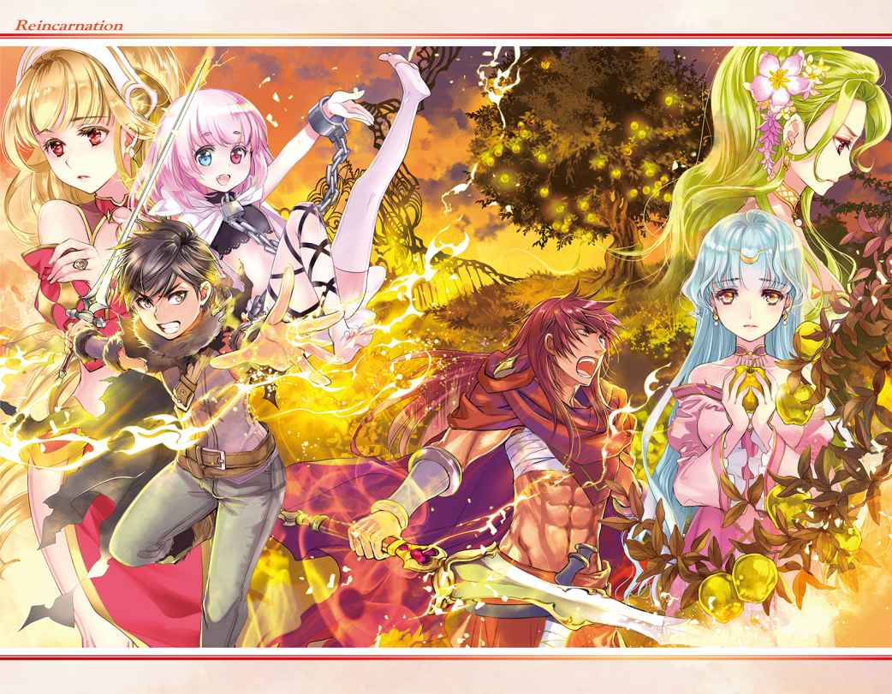
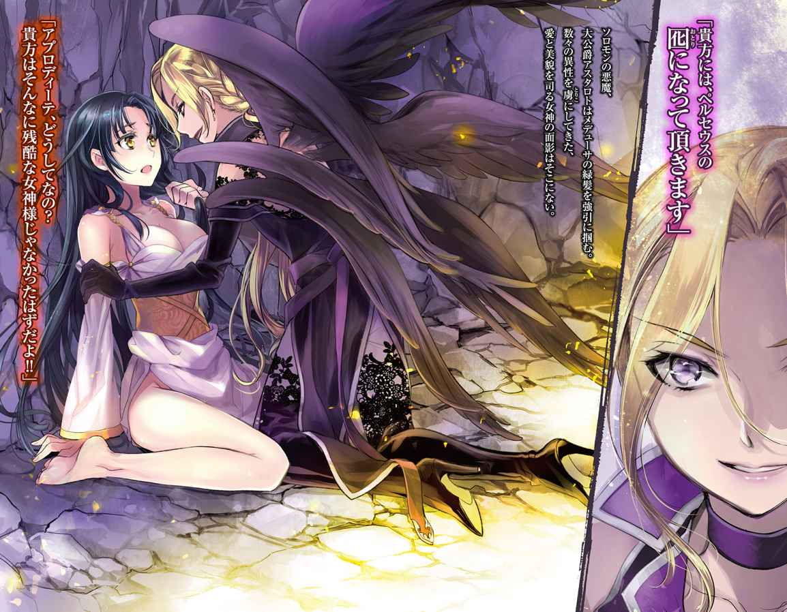
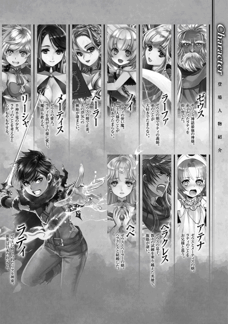

| 【全３巻合本版】転生 神々に育てられた少年の物語 | |
| わたがし大五郎 | |
| TOブックス (2017) | |
※本電子書籍は「転生 神々に育てられた少年の物語」１〜３巻を１冊にまとめた合本版です。
イラスト：椋本夏夜
デザイン：BEE-PEE
Ｃｏｎｔｅｎｔｓ
このコンテンツは『転生 神々に育てられた少年の物語』１〜３巻を収録しています。

プロローグ
最初に一つの林檎が熟した。
後に禁断の果実と呼ばれた林檎には、善（bonus）と悪（malus）の種子が宿り、複数の世界を生み出す〝創世時代〟を招く。
一つ、人間が繁栄する世界。
一つ、悪魔が繁栄する世界。
一つ、天使が繁栄する世界。
複数の種子は巨大な『星』として根を張り巡らせ、長き年月をかけて花を咲かせ散っていく。それらが種子を産み、世界を孕 み、古き世界が養分を吸われ、滅びへの道を辿る。
こうして世界は成り立っていた。
しかし禁断の果実の意味を、世界はまだ知らなかった。
果実『林檎』は他の世界を養分に成長し、滅びることなく長き繁栄を続けている。
あらゆる世界の知識を吸収し、創世の世界に様々な歴史を産み出した。
一万年目、亜人族が誕生する。
五万年目、魔法の力が生まれた。
十万年目、悪魔と魔物が現れる。
百万年目、神々と天使が現れる。
善の種子と悪の種子。
それぞれの養分を吸い取った世界は混乱に陥り、本来は刻まれるはずのない運命を歩んでいく。
それは衰退への一歩。
始まりの世界が消えた時こそ、全世界が枯れる時。
「......この世界も長くないかもしれません」
幻想的創世世界──ユグドラシルで運命の女神が全てを悟る。
「......でも、希望は残されています。運命をも超える一つの種子がこの世界に──」
こうして、神話を巡る神々と悪魔の戦いが幕を開けた。
その世界の鍵を握るのは、巻き込まれただけの一人の不幸な少年であった。
転生 神に拾われた男
体が痛い......息苦しい......。
意識が朦朧 とする......。
これが僕の人生の最後だった。
社畜としてサービス残業を終わらせて、夜の帳に包まれた街中を帰路に就き......自宅まで辿り着けなかった。
会社を出て暫くのことだ。
駅に近い交差点で、蛇行 運転するトラックが迫ってきて、僕は事故に巻き込まれた。
先ほどまで聞こえていた野次馬の喧騒すらも遠ざかっていく。
──嫌だ......死にたくない。誰か、誰でもいいから僕を助けてよっ！
視界が暗転していく。
最後の力を振り絞って、抵抗するかのように叫びを上げた。
「あーうー」
っ!?
今、難語 のような声が聞こえたような......。
しかも、まるで......僕が喋ったかのような違和感があった。
確認するために、もう一度だけ声を絞り出す。
「あーあー」
間違いない。
......僕の口から出ているようだった。
一体どうしたんだろう......僕は言葉も喋れなくなってしまったんだろうか？
「ばぁぶー！ あーあー！」
普段は当たり前にできていたはずなのに『言葉』が発音できない。
しかも、全身の痛みが消えている......そんな馬鹿な......なんなんだこの状況......。
視界は相変わらず暗転したままで、何が起きているか情報が入ってこない。
疑問が増える。
勉学に励んでこなかった僕の頭じゃ答えは出せなかった。
『......だが......しょう』
意識を集中させると誰かの声が聞こえてきた。
音から判断する限り、土を掘っているようだ。
「......この子には埋まってもらいましょう」
......何の話だろう？
「オレたちでは育てられないからな。貧民街 で生まれたことを恨むなよ」
体がフワリと軽くなった。
......じょ、冗談だよね!?
僕の体重は五十キロある。
それなのに、どうして軽々と持ち運べるんだ......。
「じゃあな」
土と草の香りが混じる場所へと降ろされた。
体に土が降りかかる。
もしかして、僕は生き埋めにされている？
どうして？ なんのために？ もしや大型トラックの運転手たち？
駄目だ、何も分からない。
今、僕に分かることは、このままじゃ殺されるのは確定ということだけだった。
「お前たち、何をしておるんじゃ！」
首まで埋まった時、しゃがれたご老人の声が聞こえてきた。
「なっ......おい、逃げるぞ！」
「まま、待ってよ！」
二つの足音が去っていく。
どうやらご老人は僕を助けるために叫んでくれたらしい。
「......お主、捨てられたのじゃな。もう大丈夫じゃよ、ワシが責任を持って面倒を見てやるからのぅ」
土を掻き分ける音と共に誰かが僕の体を抱えて......抱擁の暖かさに涙を流していた。
その言葉は温かくて、安心できて、大人なのに泣きじゃくった。
久しぶりに心の温かさに触れたからかもしれない。
「大丈夫じゃ、大丈夫じゃよ......」
揺 り篭 のように安らかな揺らぎを感じる。
それに安堵した僕は、まどろみの中へと意識を委ねた。
‡
「お主は捨てられたのじゃな？」
煌々 と照らす双子の月を背景に、赤子の顔をまじまじと覗き込んでいる老人が言った。年齢は六十ほど、立派なローブを着こんだ体をかがめ、哀れむように覗き込んでくる。
顔は渋い。白髪を逆立ててた浅黒い肌に、全てを見通すような赤い瞳が静かに向けられている。人間にしては気高い感じがする。しかも、老人は妙に背が高かった。二メートルに届くかもしれない。赤子は仰向けに地面に寝転ばされていたらしく、まだ目を開いていないほど生誕から間もなかった。
ここは貧困層が暮らしている移住区 。この都市では伝染病が流行しているため、赤子の両親も病を患ってこの世を去ったのだ。両親を失い、生きる術を持たない赤子、そんな赤子には自我が芽生えていた。
（──誰かの声がする。僕は交通事故で死んだはずなのに、どうして意識があるんだろう？）
赤子改め彼は、日本で生まれ育ったサラリーマン。
運動神経は悪く、スポーツは苦手。成績は良かったが大学には行かず、恋人という存在に憧れる寂しい男。社内の評価は『そんな人いたか？ ああ、地味なあいつか。仕事は頑張ってるみたいだが要領が悪いし、付き合いにくい奴だな』。
付き合いにくい、と言われているだけあり、漫画やアニメを趣味としていた。
一人でいる事が好きなわけではないが、彼は幼少の頃に両親を事故で亡くして以来、引き取られた親戚からは虐 待 を受けたり、学校では苛められたり、誰にも相談出来ない状況に置かれていた。気が弱かった彼は自分で立ち向かうということが出来なかったのかもしれない。アニメや漫画を趣味にしたのは、言い方を変えれば現実逃避なのだろう。
なぜ社会人の彼が赤子になったのか。それは、ほんの数分前の出来事。今日も彼は残業から帰路についていた。
（明日からは休暇だ。やっと休むことが出来る。新しい漫画が今日発売されるんだっけ。買いに行かないと。楽しみだ）
しかし、彼を待ち受けていたのは漫画ではなく、大型トラックによる接触事故だった。
駅近くの本屋に向かう途中、彼の前に暴走する鉄の塊が突っ込んできたのである。
彼は吹き飛ばされ、ゴム玉のように地面を弾み、致命傷を負った。
大型トラックは十一トン以上の重量を持ち、コンテナには荷物が満載だった。ほぼ即死だったに違いないが、死ぬまでの短い時間、彼は確かに生きていたのである。
世界を恨んだ。どうしてこんな仕打ちを受けないならないのか、と。
悔しかった。
負け犬だった。
天寿だけはまっとうしたかったのに、どうして死なないといけないのか。
全身の痛みで体が痺れ、意識が徐々に遠ざかっていく。
その最後の瞬間に彼は願った。
『まだ僕は生きたい。生きて、天寿をまっとうした......』
そして、世界が暗闇に包まれた。
そこで赤子の姿に戻っていたわけである。
彼は現状が理解できず、頭痛に悩まされながらも難語を張り上げ続けた。
「......もう大丈夫じゃよ。ワシが責任を持って面倒を見てやるからのぅ。人族の世界も荒んでいるものじゃ......どうにかしてやりたいのじゃが......」
人族、なんだそれは。まるで神様みたいなことを言う人だ。
老人は赤子を拾い上げ、抱きかかえた。赤子は幼少の頃の母親を連想し、抱擁の暖かさを思い出して涙する。暖かな言葉に満たされて、やるせない気持ちで泣きじゃくった。
「大丈夫じゃ。大丈夫じゃよ......」
揺り篭の中で安らかな寝息を立てるように、安堵した赤子はまどろみの中へと意識を沈めた。
この日、彼の運命は動き始めた。
‡
「ゼウス、人族の赤子を拾ってどうするつもりなのよっ！」
誰かが喧騒 を立てて言うと、老人の顔をじっと覗き込んでいる女性の透き通った上品な声が響いた。
「放っておくわけにもいかんじゃろうて」
流石に目を覚ました赤子だが、僅 かに眩しいと思うくらいの景色しか認識することが出来ず、耳を澄ませる以外に情報をつかむ方法が無かった。
「放っておくって、アタシはどうなのよ！ いつも違う女性のお尻ばっかり追いかけている癖にっ！」
「そ、それはそうじゃが......！」
赤子の篭の傍に座る女性が、涙交じりの声で怒鳴った。
「ヘーラー、ワシのせいですまんのう......」
「本当よっ！ ゼウスは大馬鹿よっ！」
ヘーラーと呼ばれた女性が叫んだ。
痴話喧嘩を聞いていると、老人はゼウスというらしい。まるで神話のような名前だ。とにかく、ここは病院ではないようだ。薬品の匂いがしない変わりに、蜂蜜のような甘い香りが漂っている。
ここは何処だ？
どうして目が見えないのか？
赤子は咄嗟 にそう思った。
（事故に巻き込まれたにしては完治が早すぎる。日本にこんな医療技術あったかなぁ。いや、あったとしても平凡な会社員である僕を拾うような物好きがいるだろうか。なんで、僕は寝かされているのだろう）
険悪な雰囲気に包まれて、赤子は急に怖くなった。
（もしかして臓器を売られるんだろうか。ありえる。僕なんかに用があるとしたらそれくらいしか考えられない。事故で意識を失った僕を回収した病院が秘密裏に手を回して、こんなとこに寝かせているのだ。そうじゃなければ説明がつかない）
赤子はとりあえず、手足の自由が利くようになるまでは眠ったフリをしていようと思った。
ヘーラーと呼ばれた女性は、必死になってまくし立てる。もう出て行け、とか、離婚してもらうわよ、とか、愛人の名前を叫びながら早口に責め立てた。
老人のシュンとした弱々しい声が、まるで浮気がバレた男の声に似ていて......、自業自得だけど哀れだ。
「しばらく顔を見せないでちょうだい！」
「そ、それは......」
「なによ。出来ないっていうの？ 世界を救った天空神の癖に、責任も取れないのねっ！」
（世界を救った？ 天空神？ なんだそれ、まるでゲームじゃないか）
ゼウスと呼ばれた老人は、声を小さく答えた。
「分かった、出て行こう。ただし離婚はしたくない。それじゃ駄目かのう？」
「ま、それでいいわ。後でゆっくりと話し合いましょう。アタシの魔法で吹き飛ばされない内に、どこへなり消えなさいっ！」
（魔法？）
「......すまんかった」
「ふんっ！ どうせすぐ浮気することくらい知っているんだから！」
ヘーラーがそう言うと、ゼウスは視線を逸らしたまま立ち上がり、赤子を抱き寄せて部屋を後にする。
廊下の前でゼウスの娘が引き止めようとするが、ヘーラーの一喝した声に怯えて何も言えなかった。
しばらくして、赤子は眠気に誘われてしまい、夢の中に落ちた。
‡
赤子が再び目覚めると、今度は知らない天井が映った。
視力を取り戻したことに安堵すると、真新しい桧の香りが鼻腔をくすぐった。周囲を探るように動かした視線の先には、暖炉の傍にはテーブルが置かれていた。
ゼウスの部屋であった。十六畳ほどの広さだ。テーブルを挟むように置かれた椅子の一つに老人が腰掛けている。リビングとして使われているようで、古風な厨房から高価なアンティーク、立派な絵画が見える。
ここで赤子が目を覚ましたのは、ゼウスが辺境の村で暮らしているからである。
赤子は痛む頭を撫でながら違和感を覚えた。この部屋は広すぎる。木の柵で閉じ込められていて、まるで監禁されているようだ。
事情を尋ねようと声を上げると、言葉がまったく喋れなかった。
「あーあー」
普通に喋れていたはずの言葉が出ないのだ。
今日ほど混乱した日はない。
ふと窓へ顔を向け、自分の顔が反射して戦慄する。
この時、初めて彼は赤子になっていることに気づいたのである。
‡
あれから一ヶ月が経過して、僕は状況を飲み込めてきた。
どうやら異世界で生まれ変わったらしい。
最初は疑ったが、空を仰げば大きな月が存在する。地球の夜空に比べて赤く、大きさが三倍ほどもある月だ。それだけなら受け入れられるのだが、青と赤、大小二つの月が浮かんでいるのは何故だろうか。窓からは夜空の他にも、優雅に舞う月光蝶が飛び交い、どこまでも続く草原が見えた。月明かりに照らされた先には、大きな山脈と川が見える。
「照明 」
お爺さんが手の平から光球を生み出した。
魔法、と呼ばれる不思議な力だ。この世界には魔法が当たり前のように存在して、日常生活を支える役割を担っている。
こんな力は地球に存在しない。間違いなく、疑う余地もなく、ここは異世界だった。
どうしてこの世界に転生したのか分からないが、僕の胸は弾んでいた。
転生、魔法、幻想的な光景の数々。
ずっと憧れていた世界で生きてみたいって願うことは、息をするよりも簡単なことだ。地球に帰りたいって願う気持ちが無いわけじゃないが、この世界を満喫してみたいって気持ちのほうが強かった。
素直に現状を受け入れることが出来たのは、人生に満足していなかったからだと思う。両親は他界しており、学校では苛められてきて、会社では後輩にも馬鹿にされてきた。いくら頑張っても報われず、ただ生きているだけの日々。誰からも認められることがなかった。
ずっと悔しかったんだ。
ずっと人生をやり直したいって願っていたんだ。
我ながら虚しい願いだって分かってる。でも、異世界に転生したことでチャンスを得ることが出来た。前世の記憶を持って、やり直す機会に恵まれたのだ。
折角授かった人生だ。全力で生きて、全力で頑張ってみるのもいいかもしれない。
よし、決めた。
──僕は今度こそ、幸福な人生を歩んでみせる。
天空神ゼウス
生命の樹の下で向かい合う相手は、お爺ちゃんだった。
孤児だった僕を育ててくれた恩人である。
「腰が甘いのぅ。詠唱も交えてナイフを振りなさい」
肩で息をし、片手持ちの剣に魔力を宿す。刃が共鳴した。今、僕はこの世界で生き抜くための〝力〟を教えてもらっている。しかし、僕は震えていた。
「はぁ、はぁ......」
刃が震える。疲れと恐怖が表れていた。
お爺ちゃんが持っている《アダマスの鎌》は、命を刈り取りには来ない。手加減されている。互いに武器を持ち、僕が一撃を与えるまで鍛錬を続けるなど、無謀すぎるだろう。
なにせ、お爺ちゃんは完璧なる存在だ。人望に厚く、かつてこの世界に訪れた厄災を何度も助け出した英雄である。赤子に転生して六年が経過した僕は、この世界の存在がどれだけ凄いことなのかに気づいてしまった。
「そんなことでは、巨人族 にも満足に勝てんよ」
巨人族 、それは多くの文献や聖書の中に刻まれた言葉である。
「ラティではまだ、ヘラクレスやペルセウスに遠く及ばない。更なる高みを目指せ。想いを力に変えるのじゃ」
ヘラクレスとペルセウスといえば、ある神話に登場する半神半人 の英雄だ。なぜそのような名前がお爺ちゃんの口から呟かれるかと言えば、理由は簡単である。
「この天空神ゼウスをも越える気で戦うことじゃよ」
天空神ゼウス。ギリシャ神話で全知全能の神様と呼ばれている存在である。そう、僕は神様が普通に暮らしている異世界に転生してしまったのだ。
最初は信じられなかったが、きっかけは多い。
例えば、明らかに高位な格好をした『熾天使 』が来訪した時、お爺ちゃんを『ゼウス様』『偉大なる天空神様』と敬っていた。熾天使といえば《イザヤ書》や《ヨハネの黙示録》に登場する最上位の天使だったはずだ。彼らが頭を下げる相手といえば、神様以外に考えられないだろう。
他にも会話を聞いていると、
『ヘラクレスに試練が与えられた』
これはギリシャ神話で最も有名な話で、ヘラクレスの十二の難業として知っている人も多いだろう。ある事情で妻子を死なせてしまったヘラクレスは、贖罪の旅に出るように叔父から言われるのである。
『娘がアスモデウスを追っている』
アスモデウスといえば某宗教で七つの大罪として数えられている悪魔である。この世界には神様以外にも、悪魔たちが存在していることが分かった。
『雷霆 は封印することにしたのじゃ』
雷霆は天空神ゼウスが扱う最強の武器で、全宇宙をも焼き尽くすと恐れられるほど強大な物である。神話では最後にして最強の怪物と戦っているときに使ったはずだが、僕の記憶はそこだけ途切れていた。興味本位でしか神話を読んでいなかったが、これだけギリシャ神話に当てはまる会話を聞いたのだ。この異世界に神話が関わっているのは間違いないだろう。
もしかしたら、地球の平行世界ってやつかもしれない。
ただし、ギリシャ神話と徹底的に違う部分があった。
天空神ゼウスは全知全能の神として、人族に崇拝されるべき主神のはずだが、最高神の立場にいないらしい。一時期は神様をまとめていたらしいが、ある時にこう考えたことが原因だとか。
『新しい時代を作るのは若い世代じゃよ。星を守り、人族を導く役目を担うのはワシ以外の者こそが相応しいのじゃ』
その結果、この世界の主神はお爺ちゃんではなく『運命の三女神』が崇拝されている。
運命の三女神については詳しく覚えていないが、人族の寿命を司る神様だったはずだ。そう考えてみると、人族を導くのには適任だったのかもしれない。
「ふむ、そろそろ日も暮れる。少しばかり力を出すかのう」
少しばかり、などと言っているが、本気で襲ってくることを僕は知っている。
老賢者を匂わせるローブを着たお爺ちゃんは、赤い瞳を見開いた。長々と斬り合っていたはずなのに、僕とは違って汗一つかいていない。
「生き残りたければ避けるんじゃよ」
まるでこれから殺しにかかるかのように、大鎌で弧を描く。お爺ちゃんの手に握られている《アダマスの鎌》は、万物を切り裂く神器の一作である。人の手では作り上げることが絶対にできないアダマス鉱石を加工したもので、華美な装飾は施されず、簡素に作られた鎌は鈍い輝きを放っている。どんな巨匠が鍛え上げた剛剣も、ソレの前では霞んでしまうだろう。
見た目に不釣合いなほど大鎌を構えながら、お爺ちゃんの立ち姿は様になっていた。老人とは思えない隙のない構え。燃えるように赤い瞳は、僕を静かに見ていた。その手が大きく振り上げられ、背筋に寒気が走る。逃げ出したい。でも、ここで終わるわけにはいかない。
「いきます。僕だって、負けっぱなしじゃいられません」
恐怖を頭から追いだして、僕は踏み込んだ。
ナイフを両手で構え、今まで鍛えてきた魔法と技を組み合わせる。
《始祖の神々》──このユグドラシルを守るために、遥か古の時代から混沌と戦ってきた偉大なる神族。彼らから教わった剣術のすべてを乗せて、魔法と剣術の複合技を仕掛ける。
《ウィンドスラッシュ》。
しかし──。
「まだまだ、じゃな」
ナイフから放たれる翠 の一閃は、《アダマスの鎌》の前で呆気なく消え去った。人族でありながら神様に拾われた僕は、周囲と比べても格段に力が弱かった。人族と神族に秘められたポテンシャルが違うのだから当然だが、お爺ちゃんの期待に応えるためにも、必死で努力をしてきた。
しかし、どんなに頑張っても届かない。
「──稲妻よ、踊れ」
「なっ!? 」
《アダマスの鎌》が振り降ろされた瞬間、僕の体には浅い傷と軽い火傷が幾つも刻まれた。魔法だ。同時に《ウィンドスラッシュ》を真似したらしく、翠の一閃が僕の頬や腕を傷つけた。
「ここまでじゃ。今日は頑張ったのぅ。偉いぞ、ラティ」
微笑んだお爺ちゃんは、鎌を首に当てながら、僕の名前を口にする。攻撃をかわされ、結局は負けてしまった。でも、以前よりも体力がついたことは素直に喜ばしい。汗もベトベトで、黒い髪が頬に張り付く。お爺ちゃんが差し出した手を掴み、立ち上がった。
「今日は帰るとしようかのぅ」
「はい、分かりました」
並んで、生命の樹を離れる。夕日は闇に染まりつつあり、魔石灯が光りだした。
「明日は新しい魔法を教えてあげようかのう。本当は子供では扱いが難しいものじゃが、ラティなら大丈夫じゃろう」
お爺ちゃんは、魔法に強い関心を持つ僕にどんなことでも教えてくれた。
地球では科学が経済を発展させてきたように、この世界では魔法が世界を発展させている。科学に関しては地球と比べて劣っているが、魔法は生活の一部として浸透している。村に設置されている魔石灯なんかが魔法発達の結晶で、月の魔力に反応して薄暗い夜道を淡く照らしてくれる。
「魔法に感謝を忘れてはいかんよ」
「はい、もちろんです」
お爺ちゃんの話によれば、魔法は生きているそうだ。詠唱を紡げば魔法は答えてくれる。視点を変えれば、魔法が僕たちに何らかの経緯で力を貸してくれていると考えられる。
そのために必要になるのが魔力で、この世界に生きるすべての生命は、生まれたときから心臓の近くに『魔石』と呼ばれる核を持っている。
魔石に溜まった魔力を消費することで、魔法が発動するわけだ。
「お主の魔力は無茶苦茶じゃからのう」
魔力は鍛えることによって総量が上がっていく。
例を出すなら、僕が先ほど使った風の魔法剣──《ウィンドスラッシュ》。
あれは比較的、下級な魔法に分類されている。
それを一日に十回も使えれば、一般人大人レベルの魔力を持っているという計算になる。
子供なら精々数回使えればマシな方だが、何事にも例外がある。
僕のことだ。
「今日は百以上も放ってきおった。高名な魔法使いでも、それだけ詠唱できる者は見たことがないのう」
「うーん、自分ではよく分からないです......」
僕の体内には、常識を遥かに超えた魔力が存在するらしい。
使う気なら強力で派手な魔法を習得することもできるらしいが......お爺ちゃんの忠告を聞いてから止めた。
『無闇に力を手にすると、後悔する』
そもそも強力な魔法とは、対象を破壊に追い込むものである。
僕は魔法を倒す使命を与えられたわけではない。
上級の魔法を習得すれば使いたくなるだろうし、それが原因で誰かを傷つけてしまうかもしれない。それなら、最初から覚えないほうがいいだろう。
......まぁ、興味が尽きないわけじゃないけど、この世界には沢山の魔法が存在する。
空を飛んだり、物体を操ったりするような魔法を覚えたほうが有意義で楽しいはずだ。
「今日も平和でなによりじゃ」
お爺ちゃんは、地面の裂け目を覗き込んだ。
穏やかな風が頬を撫でる。
なにせ、ここは普通の大陸じゃない。
「......綺麗ですね」
僕たちが立っているこの大陸は浮遊大陸ヴァナヘイムと呼ばれている。
神々が暮らす聖なる楽園であり、地上を見守り続ける母なる大地。
このユグドラシルの世界には九つの大陸が存在し、百を超える種族が生活している。
──人族を始めとした王都ミズガルド。
──妖精が集まる御伽 王国アルフヘイム。
──犬人族 や獅子族の帝国アールヴヘイム。
などなど。僕は、王都ミズガルドで捨てられたところを、お爺ちゃんに拾われたわけだ。
「この調子なら、ラティは将来有望な魔法使いになれるかもしれんのぅ」
「ほ、本当ですか？ 頑張ってみますっ」
前世で褒められたことが無かった僕にとって、お爺ちゃんに褒めてもらえることはとても嬉しかった。褒められると、次も頑張ろうって気持ちが込み上げてくる。だから、努力しよう。人族だから、神族だからとか、そんな言い訳は必要ない。がむしゃらに頑張って、お爺ちゃんを驚かせるくらいになろう。本気で生きるって決めたのだから。
‡
「さて、村が見えてきたのう」
浮遊大陸を支える生命の樹から歩いて一時間、僕たちが生活する長閑 な村が見えてきた。この村では、農業や狩りを中心に生活を送っている。
牧草地の小高い丘の上に僕たちの家が建っており、朝を迎えれば羊や鶏がうるさいほど鳴き始める。
「帰ったぞぃ」
本来お爺ちゃんは、ヴァナヘイム大陸の北にある宮殿で暮らしていたらしい。でも、他の神々が口うるさいので逃げ出してきたそうだ。
気持ちは分かる気がする。
僕たち以外に誰も住んでいない我が家に挨拶をしてから、玄関で靴を脱ぐ。
「......お帰りなさい」
見知らぬ若い女性がエプロンドレスを着て、出迎えてくれた。手にはトレイを持ち、美味しそうな肉の料理を乗せている。
「......帰りが遅いから、夕飯を作って待ってた」
綺麗な人だ。胸が大きくてスタイルは抜群にいい。背は平均的だが、物静かで儚い印象がある。長い髪は後ろで束ねられて、耳にはイヤリングを付けていた。
しかし、なぜ僕たちの家に不法侵入しているんだろうか。
「おぉ、もしやメーティスか。よくここが分かったのぅ」
「......ゼウスが宮殿を出た日から、ずっと探してた」
むぅ、っとしたように言う。メーティスといえばゼウスの最初の妻で、知恵の女神である。確かメーティスを飲み込むことで、ゼウスは『全知』全能の神様になったはずだ。
そんなメーティスさんが目の前にいる。なぜ？
「メーティスは相変わらずじゃな。離婚してからもワシに付き纏うのは、お主くらいなものじゃぞ」
「......まだ責任取ってもらってないしね」
「ん？」
「......な、なんでもない」
とりあえず、挨拶だけでもしておこうか。
「えっと、メーティスさん。こ、こんばんは」
「......うん、こんばんは──って、また新しい子供を作ったの......？」
束ねた長髪を揺らし、肩を小刻みに震わしてくる。
「......ゼウス、これで何人目？」
「二十四人......って違うわい。この子は誰かに孕ませた子じゃないっ！」
......そういえば、ゼウスって愛人が多いんだっけ。七人ほどいた気がする。
半神半人 がいるのも、王家の血筋に神の血を受け継がせる役割もあったし、仕方ないとはいえ......女性にだらしない人である。
「──というわけで、ワシが引き取ってラティを育てているわけじゃよ」
「......そうなんだ。ラティ君、よかったね」
「は、はい」
急に頭を撫でられ、胸元へと包み込まれた。や、柔らかい......と思ったのも束の間、とんでもない力で僕を抱きしめてきた。い、痛い！ 息苦しい！ ようやく開放してくれたかと思ったら、調理中だったのか包丁を右手に持ったまま頭を撫でてくる。怖い。怖すぎる。
「そうじゃ、メーティスよ」
「......どうしたの？」
メーティスさんは力を入れすぎている自覚が無いらしく、キョトンとした顔をしている。
この人、天然だ。
「ラティに魔法の使い方を教えてやってくれんか？」
「......別にいいけど、どうして？」
「ワシは教えるのが苦手じゃ。しかし、知恵の女神と呼ばれたお主なら、ワシ以上にラティへ教えてやることができるじゃろうて」
こう言ったら大変失礼だが、天然系のメーティスさんに魔法を教わったら、何かの失敗で僕は殺されたりしないだろうか？ 現に今も窒息しかけているわけで......。
メーティスさんには悪いけど、ここは一度断らせて貰わないと。
「......お......願...します（お姉さん、大丈夫です。またの機会にお願いします）」
あ、駄目だ。息苦しくて言葉がでなかった。
「......分かった、任されたよ。ラティ君は小声で照れ屋さんなんだね」
結局、僕の気持ちはまったく伝わらなかった。
「よかったのぅ。メーティスは世界中の魔法に精通しておるから、より深く学ぶことができるぞい」
「......上級系の魔法なら任せて」
平穏に生きるのに、そんな物騒な魔法は必要ないんじゃ......と、言いたかったけど。
「......明日からよろしくね」
メーティスさんの微笑みを前にしたら、断ることが出来なかった。
思慮の女神メーティス
メーティスさんが暮らすようになってから三ヶ月。
鏡を見た僕は、黒い髪を梳かす。酷く疲れた顔をしていた。
泥に塗れたシャツを脱ぎ捨てると、浅い切り傷が無数にできている。剣の鍛錬を習っているときにできたものだ。後で薬を塗ってもらわないと、跡が残るかもしれない。
「......ラティ君。着替え、ここに置いておくね」
背後からかけられた声に振り返り、メーティスさんにお礼を伝える。
「いつもありがとうございます。助かりますっ」
メーティスさんは、お爺ちゃんに部屋を借りて住み込みで働いている。もちろん給金などを支払っているわけじゃないのだが......お爺ちゃんの傍にいられれば、それだけでいいらしい。身の回りの世話から食事、洗濯まで面倒を見てくれる上、風邪で寝込んだときも献身的に介護をしてくれた。最近では母親のように感じていたりする。
「......傷、やり過ぎちゃったかな。後で薬も取ってくるね」
申し訳なさそうに表情を曇らせるメーティスさんは、つい先ほどまで僕に剣の使い方を教えてくれていた。
メーティスさんの知恵は思慮深く、魔法に拘らず剣や弓などの扱い方も一流で、怪我などの治療の心得も知っていたりと優秀である。
もっとも、その知恵を使ってお爺ちゃんの居場所を特定したらしいが。
「やり過ぎだなんてことないですよ、メーティスさん。色々なことを教えてくれて、本当に感謝しています。本当はお礼をしたいんですけど、まだ子供だから」
冗談を交えて笑う僕を見て、メーティスさんは部屋にある椅子に腰掛けた。僕に同調して、静かに笑っている。
「......よかった。私、どんなものにも変身できるから、気持ち悪いって思われてると思ってた」
メーティスさんが言う変身は、ハエや竜、更には水や草木に姿を変えることができる。それが原因で気味悪がられたりしたこともあるらしく、今では控えているそうだ。ただ、調理中などにゴキブリが出たときは別である。悲鳴と同時にカエルに変身したりしているので、焦ると我を忘れてしまうらしい。
神様でも怖いものがあるのは不思議だが、考えてみたら生きているのだから当然だ。
「......でも、ゼウスがラティ君を引き取ること、よく奥さんが了承したね」
「奥さんですか？」
「......うん。嫉妬深くて、怒るとゼウスですら怖がる人」
お爺ちゃんの正妻はヘーラーという名前の、美しい女神だったはずだ。一説によると、北欧神話の女神フレイヤに匹敵するほどの美貌を持っているとか。
そういえば、この世界に転生して間もない頃、お爺ちゃんが女性と喧嘩している声が聞こえていたっけ。あの人が奥さんだったのか。
「......普段は優しい人だよ。ただね、婚姻と女性を守護する女神だから、一夫多妻制を望むゼウスには厳しくあたるの」
ゼウスは天空神として世界を守ることに務めた。その為には血縁者であろうと戦いを決め、時に失敗を繰り返しながら、宇宙を揺るがす激闘に勝利を収めて見せた。
ただ、女性にだらしない人である。僕が知っているだけで愛人が七人もいる。
普段が激闘に身を費やしている反動かもしれないが、一夫多妻制という名のハーレムを望むのは、賛否両論がありそうだ。
僕にとっては恩人だから、応援してあげたいところだが。
「僕にはそういうの分からないです。まだ、人を好きになったこともないですから」
前世では僕に近づくような物好きな女性はいなかったのだ。もとい、同姓もか。虚しくなってきた。
「......ラティ君にも恋愛が理解できる日が来るよ。その時は、後悔しない選択をするんだよ。私は現状に満足してるけど」
自嘲気味に笑うと、メーティスさんは立ち上がって薬を取りに居間へと向かった。僕は、今日の鍛錬を忘れないようにもう少しだけ素振りをすることにした。
（お爺ちゃんが、メーティスさんが応援してくれているんだ。男なら期待に応えて見せないと）
‡
あれから日中は鍛錬を続け、月が昇る頃に魔法を学びようになった。
水浴びをして泥のように眠り、目が覚めたら時間を見計らって、また鍛錬を続ける。
それを繰り返すと徐々に体力がつき、一年も経つと足腰が随分と強くなっていた。
メーティスさんたちとの鍛錬でついた傷も、用意してくれた薬が凄いのか、随分と治りが早い。だが、余裕ができたことで、ぼんやりと将来を考えるようになっていた。
そこで、僕は朝食中にお爺ちゃんたちに夢を打ち明けた。二人は、地上を守るために数々の秘境を駆け回った話をしている最中だった。
「僕、将来は魔法使いになろうと思います」
「魔法使いじゃと？ ラティなら腕を磨き続ければ【騎士修道会テンプル騎士団】にも入隊できると思うがの」
僕は首を横に振る。
ここ最近は以前より戦えるようになったとはいえ、お爺ちゃんたちの剣にはまったく追いつけない。それに、僕は戦争に参加したいわけじゃない。
「人を守るための魔法を研究したいんです」
「......ふふ、ラティ君らしい答えだね。応援してるよ」
「ありがとうございます。メーティスさん、お爺ちゃん、僕が有名になったらこの恩は必ず返させて貰います。立派な魔法使いになれるように頑張りますね」
「うむ、よくぞ言った。楽しみにしておるからな」
お爺ちゃんも応援してくれて、和やかな時間が過ぎていく。
‡
そして、一ヵ月後の朝。
僕はお爺ちゃんから手渡された服を着て、ローブを羽織る。
「それは《ギガントマキナのローブ》、神具の一つじゃ。この世界の恐怖を象徴にした魔法が付加されておるから、どのような攻撃も吸収するじゃろう」
「頂いてもいいんですか？」
「もちろんじゃ。是非とも使っておくれ」
「わぁ、ありがとうございますっ!! 」
お礼を伝えると、メーティスさんが現れた。
「......ラティ君、これをあげるね」
そう言って渡されたのは、鞘に収まった立派な剣だった。
引き抜くと、灰色の柄と銀色の刃が輝く。
「......ゼウスが使ってる《アダマスの鎌》と同じ素材でヘパイトスに作ってもらったものだよ。さしあたり《アダマスの銀剣》って呼ぶのが妥当かな」
「メ、メーティスさんまでいいんですか？ 僕、人族なんですよ？」
ヘパイトスといえば、鍛冶の神様である。数々の神具を作り上げた男で、彼なら《アダマスの銀剣》を作ることも不可能じゃないだろう。
「......これはラティ君の身を守るものだから。人族も、神様も関係ないよ。もしタダで貰うことに負い目を感じるなら、将来に素敵なお嫁さんを連れてきてね」
笑顔で言われて、僕は銀剣を受け取った。
特別な魔法が施されているのか、羽のように軽かった。
「お爺ちゃん、メーティスさん。僕のためにありがとうございますっ」
「お主が無事ならそれでいいんじゃよ」
「......ラティ君が頑張っていること、私たちは知っているから」
見慣れたはずの微笑みは、何度見ても飽きなくて。
僕にも家族ができたことを改めて実感する。
「ラティや、魔法使いになったとしても戦いは避けられんじゃろう。時には危険を犯す必要がある。もし、どうしても戦うしか無い場面に遭遇した場合は、自分の力を信じることじゃ」
「......諦めなければ、私たちの加護が助けてくれるからね」
僕は《アダマスの銀剣》を両手で抱えて、ぎゅっと握った。僕のためにここまでしてくれたことが嬉しくて、目が潤んでしまう。
期待に応えてみせる。
お爺ちゃんたちが安心できるほど、隣に立っても引けを取らないほど、神様だって守れるほどに。
僕は、強くなってみせる。
弱いままだなんて嫌だ。
僕だって家族を守りたい。一緒にいたい。
その為には、もっと強くなる必要がある。そして強さを手に入れたら、大切な人の窮地を救ってみせる。
そこまでして初めて、僕は、変われるような気がするのだ。
「はい......。本当に、嬉しいです。きっといつか、恩を返しますから」
「楽しみにしておるぞ」
そう言って、僕は今日の鍛錬を行──。
「......それじゃ、試験を始めようか」
へっ？
‡
昼前に、生命の樹の下まで辿り着いた。
今日は雷神トールの木曜日。余談だが、曜日はローマ神話と北欧神話から作られている。前世では正確な理由が不明だったが、このユグドラシルの世界では、北欧の神々がバイキング達から圧倒的な支持を受けており、彼らの崇拝を考慮した形で曜日を作ったらしい。
さて、なぜ僕がここに立っているかと言えば、理由は簡単である。
「......魔法使いの適正検査を始めるよ」
お爺ちゃんから《アダマスの鎌》を借りたメーティスさんが、試験を拒否する僕の気持ちなどまったく気にせずに、得物を振り上げた。
彼女は優しく、母性的で、面倒見もいい女神である。
だからこそ、僕が魔法使いとして相応しいか確かめたいそうだ。
どうしてこんな事になったんだ。
「二人とも、ほどほどにのぅ」
お爺ちゃんの声援に、メーティスさんは左手を振って、にっこりと笑った。再び《アダマスの鎌》を構える。......あの鎌は万物を切り裂く神の武器。受け止めることすら不可能とされている。しかし、僕にはお爺ちゃんから貰った《ギガントマキナのローブ》がある。これさえあれば、どんな攻撃も防ぐことができるはず。それに《アダマスの銀剣》もある。同じアダマス鉱石で作られた武器なら、鎌だって受け止めることが可能なはずだ。
「......知恵のメーティス。寄らば参ります」
最強の鎌と最強の剣。
この矛盾が衝突し、どちらが勝利するのか試される時が訪れた。
そのとき、メーティスさんの体がブレた。同時に、鉄パイプを受け止めたかのような重い一撃が、右手を痺れさせる。
「......今ので一回は死んだよ」
微笑みながら、メーティスさんが走る音だけがする。鋭い鎌の刃が、僕の頬を浅く傷つけた。これが現役の女神様の力。人族と神族の圧倒的な差を前にしたら、誰もが勝てないと思うだろう。
でも、負けられない。強くなるって決めたんだ。目指すべき目標が決まったのなら、後はそこへ到達するためにやるべき事をやればいい。
このまま負けっぱなしでいたら、変われる自信がなかった。身の内を焦がす激情が収まらず、いつまでも一人で閉じこもっているかもしれない。家族を失い、何もできず、泣いていることしかできないかもしれない。
そんなのは嫌だ。
《アダマスの銀剣》を両手で握り締めた。深呼吸を行い、目をカッと見開く。
やってみせる。どこまでも強くなってみせる。戦うことで大切な人たちを守れるのなら、戦い続けてみせる。
僕たちを見守る生命の木を仰いで、僕は誓った。
もう、僕は弱虫の『いじめられっ子』じゃない。
神に育てられ、人間として生きることを誓った人族。
ラティなんだ──!!
「《ウィンドスラッシュ》!! 」
魔法に祈りを奉げ、淡々とした言葉を唱えた。
力を振り絞り、僕は魔法を《アダマスの銀剣》に纏わせる。刃の風が巻き起こり、そして銀剣から複数の鋭利な風圧が放たれた。
「......《炎の神威 ・迦具土神 》」
メーティスさんも鎌から業火の一閃を放つが、防がれてしまうかは分からない。ただ、お互いに本気で魔力を放出したことだけは分かった。
「僕は、変わるんだ！ 自分のために、大切な家族を守るために!! 」
叫ぶと同時に、刃の風は炎と衝突して酸素を吸い込み、大業火となって火柱が登る。
──魔力の衝突。
──弾ける空気。
──衝撃派が包み込み。
今まで感じたことのなかった熱で肌が焼かれ、僕は地面の上に伏せた。
そして、火柱と火の粉が徐々に弱まり、魔力の放出で赤くなっていた《アダマスの銀剣》が元の銀色に戻っていく。
「......凄いね、ラティ君。わたしの魔力に付いてこれるんだ」
そこには、鎌を手放したメーティスさんが立っていた。
「あ、あぁ......」
僕は、負けたのか......。
「......念のために、用意しておいて良かった」
自愛に満ちた笑みで、メーティスさんは両手で構えていた円形の盾を背中に担いだ。《アイギスの盾》だ。山羊革が材料の盾だが、あらゆる邪悪や厄災を払う効果がある神器である。僕の魔法も、その力で無効化されてしまったのだろう。
完敗だ。
「......初めて、負けちゃったなぁ」
「ん、メーティス!! 」
「えっ......？」
もう一度微笑むと、僕へ伸ばした手が虚しく落ちた。お爺ちゃんが肩を掴むと、何度も呼びかける。抱きしめながら、何度も名前を叫び続ける。
「......ふふ、ちょっと魔力を使いすぎちゃっただけだよ。さっきの......ラティ君の魔法は、とんでもなかったからね」
「無理するからじゃよ。あまり心配かけるでない」
「......心配してくれるんだね」
「当然じゃ。ワシはお主の選んだ男じゃぞ」
お爺ちゃんは、そのままメーティスさんを持ち上げると、僕の方へと近づいてきた。
「メーティスさん......その、大丈夫ですか？」
「......もちろんだよ。魔力を消費しすぎるとこうやって倒れるの。気をつけてね」
はぁ......無事で良かった......。
「......ラティ君、試験は合格だよ。その魔力、その素質......きっと凄い魔法使いになれると思う。これからは、もっと専門的なことを教えてあげるね」
負けたのに嬉しそうなメーティスさんが、励ましてくれた。今まで一撃も掠めることができなかった僕が、メーティスさんの魔法と押し合うことができた。
成長している。確かに僕は成長している。
種子が葉になるように、ゆっくりとだけど、少しずつ前に進んでいる。
正直、それがちょっと嬉しかった。
僕はどれだけやれるのか、どこまで成長できるのか。
限界まで頑張ってみたい。
そんな思いがあった。
「メーティスさん、僕、頑張ります」
「......期待してるね。ファイト、だよ」
いつか、大切な人の笑顔を見るために。
その時まで、僕はがむしゃらに頑張ってみせる。
「......ということで、あの人を呼ぶね」
「そうじゃな。奴なら、ラティを逞 しくしてくれるじゃろう」
............何を言っているんだろう？
なんとなく、これが嵐の前の静けさだってことを悟ってしまった。
正義を司る神 阿修羅
翌月、僕の前に三面六臂 の神様が立っていた。
「貴様がゼウスの息子か。ゼウスから話は聞いている。この我から武術を習いたいそうだなぁっ！ 今日から小僧は正義の使者となり、多少の犠牲を覚悟してでも戦い続けるのだっ!! 」
この特徴的な三つの顔と手の数の多さは、子供でも知っているんじゃないだろうか。
彼の名はアスラ。仏教では阿修羅と呼ばれている戦闘神である。
「アスラ、落ち着くのじゃ。インドラ神と取り持ってやった恩を覚えておるじゃろうて」
「むぅ、そうだったな。ゼウスには感謝しておるぞ」
インドラ神といえばインド神話の最高神であり、最強の雷撃を放つ「インドラの光」を持つ雷霆神でもある。
......そう、雷霆だ。お爺ちゃんが持つ雷霆に匹敵する力を持っている。後に帝釈天 と呼ばれていたそうだが、その辺りの詳しい話はどうでもいい。
「昔のぅ、アスラの娘がインドラ神に奪われてな。アスラは娘を取り返すために戦い続けたのじゃよ」
知っている限りの話だと、アスラは娘を取り返すためにインドラ最高神と戦い続け、何度も敗北をしては立ち向かった。最終的に相手をするのが面倒になったインドラ最高神は、アスラを修羅の国へと追いやったという話だったと思う。
それを修羅場と呼んだ気がする。
「最初に出会った時は驚いたものじゃ。正義を司る神が地位を剥奪 されておるのじゃからな」
「......そうなんだ」
「ふん。インドラによって修羅の国へ追放を受けてしまったからな。お陰で悪魔とも神とも呼ばれている」
ほらね。
どうやら話を聞いていると、アスラさんとインドラ最高神の仲をお爺ちゃんが取り持った世界線がこの世界ということらしい。
......ギリシャ神話に、インド神話か。よくよく考えてみれば、ユグドラシルって言葉も北欧神話が起源だったはずだ。やはりこの世界は、他にも多くの神話が絡んでいる可能性が高いだろう。それによって正史が歪み、本来出会うはずのないアスラさんとお爺ちゃんが出会ってしまったものだと思われる。
「アスラは我の強い漢じゃが、武術に関しては誰よりも頼れると保証しよう」
「ふん、褒めてもなにもでないがなッ!! 」
案外、褒められると調子に乗ってしまう性格のようだ。見た目とのギャップが何だか可笑しい。
アスラさんの三面六臂にも意味があって、正面の顔は驚きと嬉しさが混じった表情、左の顔は唇を噛み締め、過去を後悔している表情、右は人族を哀れんでいる表情だったはずだ。
「では鍛錬を始めるとするか」
「あ、もう始めるんですね」
「人の一生は短い。一日だって無駄にできないからな」
なるほど、神様から見れば、百年に満たない人生なんてあっという間に感じるのかもしれない。妙に納得した僕は、長弓と木矢を取り出したアスラさんの後へ続いた。
‡
粛然 とした山の中腹は、夏の匂いすらも忘却させるような沈黙に包まれていた。
姿勢を但し、剣を握り、構えを取る。精神を研ぎ澄ませるように、背筋を伸ばして顎を引く。
静かに目を閉じた。
「......無の境地へ落ちよ」
視覚が閉ざされ、嗅覚、聴覚への刺激が強くなる。ゆっくりと酸素を吸いこみ、肺を満たす。吐く息、吸う息を徐々に薄くし、雑念を払う。
蝉の声。
風の音。
すべてを頭から追いやり、無へと執着する。
──己の罪を改めよ。
──包み隠さず、神に告白するのだ。
──さすれば、地獄道を抜けられる。
──飢えに抗え。
──但し、争うではない。
──他人に手を差し伸べていれば、己も助けられる。
──さすれば、餓鬼道を抜けられる。
──本能を押さえよ。
──畜生に落ちては意思の疎通もままならぬ。
──人でありたいなら、人として生き続けよ。
──さすれば、畜生道を抜けられる。
──苦しみを噛み締めろ。
──己の不甲斐なさに帰結するはずだ。
──悟りを開けば、修羅道を抜けられる。
──己を信じよ。
──理想とかけ離れた現実をしかと胸に刻め。
──中には、娯楽を見つけられるはずだ。
──さすれば、人道を抜けられる。
──神を信仰せよ。
──煩悩を捨て、煩悩に生きる者へ祈りを奉げよ。
──死を恐れるでない。
──さすれば、天道が開かれる。
精神の輪廻『六道』を開放するべく、繰り返し、意識を集中させる。
雑念は取り払う。
地獄、餓鬼、畜生、修羅、人道。
正しく生きた者だけが、天道に足を踏み入れられる。
雑念を捨てよ。捨てよ。
深い。闇よりも深い、心の中へと潜れ。
潜れ。潜れ。
己を知るために、深く潜れ────
‡
「......時間だ。六道を止めよ」
閉じていた瞼 を開くと、世界が夕焼けに染まっていた。山から見下ろす村の光景は、やけに鮮やかに映っている。ざぁっと風が吹く。葉が揺れ、肌を撫で、とても心地よかった。
「人は悪にも善にも染まる。染まるということは、自分を抑制できないということだ」
アスラさんが教えてくれたのは、精神面の修行だった。
一つ、他人から聞いたというだけの理由で、話を信じてはいけない。
二つ、古き伝統が受け継がれているからというだけの理由で、それを信じてはいけない。
三つ、人々の噂を根拠もなく信じてはいけない。
四つ、神々や賢者が言った言葉を信じてはいけない。
五つ、己が思い描いた事が、尋常ではない閃きだったからといって、神や悪魔や偉人などの存在に啓発されたのだと信じてはいけない。
六つ、長年にわたる慣習の真実らしい、という理由で信じてはいけない。
七つ、すべての情報は吟味した上で、理性と経験によって承認せよ。己の行動は世界全体に恩恵をもたらすことを真実であると受け入れ、真実に則って人生を送れ。
人間は多くのことに慣れてしまう。
話を信じることに慣れれば、物事の真意を確かめず、盲目的に信じるようになる。
悪にも染まり、善にも染まる。
もちろん、生きるための知恵で悪いことじゃない。けれど、人としての感性を鈍感にする。
「人を傷つけること、他者に罪を押し付けることに慣れてはいけない。自分で考え、自分の目で見て、すべての行動に責任を持て」
アスラさんとの鍛錬を始めてから、二ヶ月が経過している。
僕は、この修行が嫌いではなかった。
好きでもないが、自分に真っ向から立ち向かうことは、多くの反省点を教えてくれる。
体中の垢 が剥 がれていくような爽快感があった。
銀剣を鞘へと収め、姿勢を崩す。
「六道を開放したことによって、魔力を利用した強化の魔法が使えるようになっているはずだ。試してみよ」
頃合を見計らって、アスラさんが新たな魔法を教えてくれた。
「肉体強化、と覚えておけばいい。魔力を五臓六腑へ行き渡らせれば、一時的に限界を超えた力を出せるだろう。その分、反動も強い。使いどころを誤るなよ」
「わ、わかりました」
その後、試した結果。
肉体強化の魔法は凄まじかった。一度発動させれば筋肉が増強し、身体速度は爆発的に増加する。溜まっていたはずの疲労も吹き飛び、見えなかったはずの相手の動きが手に取るように分かった。
変わりに肉体強化の効果時間が過ぎた瞬間、とてつもない疲労と倦怠感 が襲いかかる。常時使うわけには行かないが、メリットとデメリットが激しいからこそ、使いどころが肝心になる。
それから、一年が経過する。満八歳になった僕は、メーティスさんたちの鎌技や動きが、多少は見えるようになっていた。
そして、冬が訪れた。
‡
暖炉では薪が燃えている。
窓を覗き込めばどんよりとした空からは、真っ白な淡雪 が降り続けている。一面の銀景色が広がっていた。白化粧をした世界は、普段とは違う雰囲気を醸し出していた。
「今年は二人で年を越すことになりそうじゃのぅ」
「寂しいですね......」
我が家には僕とお爺ちゃんしかいなかった。メーティスさんは大地母神様のもとへ向かっている。嫉妬から身を守るお守りを貰いにいくらしい。噂のヘーラーさんへの対策になるようだ。アスラさんは女神の一人旅は危険だからと、メーティスさんに同行している。中々紳士である。
ちなみに、大地母神様の名前はゴルゴン・メデューサと言う。長髪の蛇で、見るものを石化するイメージの強いメデューサだが、彼女は本来の神話では豊穣の女神として称えられている。
ただ、気になることがある。
それは、本来の正史で生まれるはずだったメーティスの娘『アテナ』と、大地母神は不仲で、アテナの力によって醜い蛇の姿へと変えられてしまうのだ。その後、ペルセウスに討たれてしまうという悲しい結末が待ち受けている。
メーティスとメデューサは同一人物だという異説もあるが、少なくともこの世界では別人として存在していることが分かった。今後、何も起きないと言いのだが。
「ラティを拾った時は、両手で抱えられるほど小さかったのにのぅ。立派に成長しおって何よりじゃ。子供は成長が早いわい」
僕の頭を撫でながら細い目で何度も頷いていた。しみじみと感傷に浸っているようだ。
確かに、僕は成長していた。
背もそれなりに伸びたし、体重も標準的に増えている。毎日の鍛錬のお陰で筋肉も引き締まっているし、腹筋もちょっぴり割れてきた。前世のだらしない自分と比べたら、とんでもない快挙だ。
「ラティや、そろそろワシがとっておきの魔法を教えてやろうかのぅ？」
「えっ、本当ですか!? 是非ともお願いしますっ!! 」
予想外の提案に心が躍った。
お爺ちゃんは全知全能の神である。そんな偉大な神様から〝とっておきの魔法〟を教えてもらえるのだから、誰だって童心に帰ってわくわくしてしまうだろう。
一体、どんな魔法を教えてもらえるのか。楽しみで仕方なかった。
「では、雪が止んだら教えるとしようかのぅ」
お爺ちゃんの言葉に答えるように、翌日の朝には雪が止んだ。僕たちは厚着に着替え、ブーツを履いて、いつもの山の麓 へと歩き出す。
「この辺なら大丈夫じゃろう」
辿り着いた場所は、両脇に高い背の木々が並ぶ、岩場地帯だった。手入れのされていない枝は伸び、葉が空を隠している。地味に薄暗い場所だ。
僕の手を握っていたお爺ちゃんは一歩踏み出して、奥にある巨大岩の前に立った。
「何をするつもりですか？」
「簡単じゃ。これから魔法で岩を粉砕する。」
「粉砕、ですか」
「うむ。この魔法を使うには、他人を思いやる気持ちがなければ使えんがのぅ」
誰かを思いやる気持ち......抽象的で、よく分からないや。
「でも、お爺ちゃん。どうして僕のためにそこまでしてくれるんですか？」
「......別にメーティスやアスラのが師匠っぽくて？ 悔しいからたまにはワシも尊敬されるようなことを教えてあげたかった、とかじゃないぞい」
お爺ちゃん......それじゃまるで、拗ねた子供の言い訳だよ......。
まあ、構って欲しい気持ちは分かる。これからはもっと、お爺ちゃんを頼りにさせてもらおう。
「あー、では、金色 の魔法をごらん頂くとするかのう」
軽く咳払いをすると、お爺ちゃんは右手を岩へと突き向ける。
その瞬間、世界が金色の光に包まれた。大気を揺るがすように、肌に魔力が突き刺さる。体が痺れた。
『強き意思を持ちし汝の力を持って、新たな骸を捧げん。天と地を繋ぐ一筋の光を描きたまえ』
お爺ちゃんの詠唱に呼応して、世界がざわめいた気がした。風が止まり、鳥が隠れ、小動物たちが離れていく。お爺ちゃんの右手から展開された魔法陣は、稲妻を呼び出したかのように天高く放電を始め、頭上に雷術を纏った巨人の剣が現れる。
『金色の王剣 !! 』
振り放たれた雷術の剣の魔法は、暴走するような白光を放ち、魔力を爆発させる。足元には亀裂が走り、嵐が通り過ぎるかのような強風が吹きつける。思わず、瞼を閉じた。
まるで、稲妻の暴君だ。派手な稲妻が散り、轟音を鳴らして暴れ狂う。そして、魔法が収束した後に残されていたものは......焼け焦げた大地と、周囲の岩すらも巻き込み、砂利のように砕けた岩が散っているのみだった。
あの岩場地帯が、完全に焼けた跡地になっている。
これが、お爺ちゃんの取っておきの魔法なんだ......す、凄い、言葉がでない......。
「こんなもんかのぅ」
お爺ちゃんは平然と言う。僕は体が震えていた。信じられないものを見た興奮なのか、先ほどの光景が目に焼きついて離れない。胸の芯から込みあがってくるのは、一つの欲求だった。
──僕も、この魔法を使ってみたい。
先ほどのお爺ちゃんを真似するように、遠くに残された岩場へと足を勧めた。
『強き意思を持ちし──』
右手を伸ばし、溢れるように魔力を放出する。指先へと力を込めた。
『金色の王剣 !! 』
ただ焦るように。
あの魔法を、自分で使ってみたくて──。
「いかん、ラティ！」
その結果。
僕の手からは、ドス黒い魔法陣が展開された。円の中心からは、酷く濁った魔力の塊、歪なソレが形成される。
「伏せるんじゃ！」
お爺ちゃんが叫ぶのと、歪な魔力が暴れ始めるのは同時だった。頭を掴まれた僕は強制的に伏せられる。
歪な魔力は、行き場を失った鳥のように移動を開始した。黒い渦を描き、木々をなぎ倒し、竜巻のように全てを破壊して進む。
僕はこの現象を知っている。魔力の暴走だ。不完全な力で唱えたことによって、魔力の渦が暴れている。
「......魔力を制御しないと、危険じゃってことが分かったじゃろう」
「......は、はい。まさか、こんなことになるなんて思っても、いませんでした」
体が魔力の引力に寄せられる。お爺ちゃんが僕を隠すように抱き寄せた。
......こんな、恐ろしい魔力を......僕が、作ったのか？
「......そんな............だ、だって、僕は恐ろしい魔法を作るつもりなんてなかったのに......ど、どうして......」
「落ち着け。仕方ないことなんじゃ。ラティは魔力が高い。その分、魔力の制御が難しくなっておるんじゃよ」
魔力が高いことって、誇らしいことだと思っていた。僕は自分の魔力の高さに自惚 れていたのかもしれない。魔力が高いということは、魔力を抑制するために制御する必要がある。未熟な腕前の僕では、制御することができなかったんだ。
魔法使いを夢見ていた僕は、自分の魔力の疎かに初めて気づいた。高い魔力は人を傷つける。こんな魔法を作り出すようでは、いつの日か魔法で誰かの命を奪ってしまうかもしれない。
怖い。
こんな魔法を生み出した自分が、怖かった。
「......いかんっ！」
顔を振り上げると、歪な魔力が軌道を変えた。
「このままでは、村に衝突するぞい!! 」
トクン、と心臓が脈打つ。動悸、眩暈 がした。
「あの魔力が暴走したら最後、村は粉々に吹き飛ぶじゃろてっ！ ワシは止めにいくっ！」
「ぼ、僕も、行きます!! 」
頬を叩き、山を駆け下りる。
しかし、魔力は速度を増していき、このままでは間に合わない。
『──六道の精神よ。力を開放せよ』
身体能力倍加を紡ぎ、追いかける。
「急ぐんじゃ！」
僕の遥か前方には、お爺ちゃんが走っていた。歪な魔力は大地を抉り、村へと着実に近づいていく。そのときだった。
『──断罪よりも罪深し王よ。かは眠る。雷轟の穢 れを纏い、朽ちる怒りを授けよ』
お爺ちゃんが、新たな魔法の詠唱を紡いだ。すると、まだ午後も迎えていないはずなのに、空が闇に包まれる。月も、太陽すらも見えない暗黒の世界に、一条の明かりが差し込んだかと思えば、稲光を放ち何かが落雷した。
『──魔力を沈めるべく降臨せよ！ 雷霆 よ!! 』
お爺ちゃんの詠唱に反応して、落雷が落ちた場所──歪な魔力の前方──からは、長い槍状の杖が現れて、激しい雷撃を放つ。
眩い光。
魔力が衝突する破砕音。
何かが吹き飛び、何かが潰れ、小石が弾丸のように飛び交う光景。
手で光を遮りつつ覗き込めば、お爺ちゃんが発動した雷霆を中心に、雨のような稲妻が降り注いでいた。目に激しい痛みを感じ、瞼を閉じる。と、白と黒の点滅を何度も繰り返し、ようやく収まった。
「......どうにか間に合ったようじゃのう」
お爺ちゃんの、安堵した声が聞こえた。
無事に、魔力は消え去ったんだろうか。
不安を胸に恐る恐る瞼を開くと、そこには──
「こ、これは......」
呻き声が出た。何故なら、目の前には天体衝突でも起きたかのように、大きなクレーターが広がっていたからである。
「......ワシの孫ながら凄いのぅ。まさか、雷霆を使わんといかんとはな」
雷霆は、最高神ゼウスが扱う最強の武器。この世界では魔法になっているようだが......、
「......僕が......これを引き起こしたんですか......」
あまりに現実離れした〝現実〟に、吐き気が込み上げてきた。
「あ......あと少しで、僕は、や、山を......村を......」
立ちくらみがした。恐怖で、歯がガチガチと鳴る。そんな僕の視線に合わせて、お爺ちゃんは膝をつき、両手で抱きしめてくれた。でも、震えは止まらない......。
「ラティや。お主はまだ半人前じゃ」
「はい......」
「辛いか、悔しいか」
「は、い......」
「この悔しさを忘れてはいかん。そうすれば必ず強くなれる。今は泣け。将来、今の自分を笑う為にも泣くんじゃ......魔法を嫌いになったらいかん。魔法はラティの人並み外れた魔力に惹かれただけなんじゃ」
魔力が制御できないのは、半人前の証。
自分の実力から見て、不釣合いな魔法を使おうとした愚か者の末路だった。
「では、今日は帰るとしようかのぅ。この件も相談しないといかんからのぅ」
お爺ちゃんに手を引かれ、村へと引き返す。
村の中では、轟音を聞き届けた村人たちが何人も尋ねてきた。その度にお爺ちゃんは頭を下げ、僕を庇い、何度も許しを請いた。
初めての失敗は、胸が痛い。
──二度と、こんな失敗をしたくない。
今日の失敗が脳裏に刻み込まれ、久しぶりに枕を濡らした。
‡
数日後の深夜。
ゼウスはラティが眠ったことを確認してから、帰宅したメーティスとアスラを部屋に呼びだした。
「......そっか。そういうことがあったんだね」
「天空神ゼウスと小僧の魔法が相殺になるとは、笑えんな」
先日、ラティの暴走した魔力を止めるのにゼウスが放った〝雷霆〟は、一振りで戦争の勝敗を決するほどの力を秘めている。使い方を誤れば、世界を破壊するほどの絶大な魔法だ。
それと相殺したラティの魔力を知り、三人の間には沈黙が訪れた。
「......人族の子供が、どうしてこんなに力を秘めているのかな」
「それは分からん、じゃが、このままラティを放置しておけば、取り返しのつかないことになるじゃろう。そこで考えたんじゃが......大天使ラファエルの娘を招こうと考えておる」
その言葉に、アスラたちは驚いた。
「......ラファエルって、ゼウスが捨てた愛人だよね？ あの虚言癖の多い、いつも包丁を持ったにこやかで怖い天使」
「うぐっ、痛いことを言いおるな......」
天空神ゼウスは、女性に見境がない。
本来なら自らの神族以外に手をだすことは、決して許されることではないのだが......あろうことかこのゼウスは、かつて遣えていた大天使にまで手を出してしまった。
「ふん。なら娘はゼウスを恨んでいるのではないか？」
「うむ、間違いなくそうじゃろうな。しかし、あの娘は人族の世界で賢者の称号を手にするほどの努力家じゃ。人族であるラティの、力になってくれるはずじゃ」
「......血が繋がっていないラティ君を大事にしてるって知ったら、傷つくと思うよ」
ラファエルの娘はゼウスに恨みがある。それは幼い頃に、自分と母親を置いたまま家庭を捨てたことが関係している。当時のゼウスにとって深い理由があったことなのだが、娘からしたら関係のない出来事になるだろう。もっとも、ラファエルの飯マズに嫉妬深さ、逐一行動を把握する監禁癖、病んだ性格さえなければ、ゼウスも逃げなかったのかもしれないが......。
「勘違いしてもらっては困るが、ワシは全ての息子と娘を愛しておる。謝罪して許してもらえるとは思えんが、娘と向き合って話をしてみようと思う」
ゼウスの決意によって、新たな来訪者の訪問が近づいていた。
大天使ラファエルの娘
長い雪が溶け、寒さの過ぎ去った春を迎えると、お爺ちゃんが客人を連れてきた。
「ラティさんですね、こんにちは」
透き通った声音に、赤い瞳。ブロンドの長髪を下げて、柚子色の法衣 をしっかりと着こなした清楚な女性が立っていた。僕よりも年上のようで、十代後半過ぎだろうか。裾の間からは白い足が伸びており、薄く透けたストッキングが確認できる。
何よりも注目すべきは可憐な背中だ。白い翼が生えている。天使族に間違いない。
「ラーファと申します」
深々と会釈を行い、にこやかに微笑んだ。
「私はですね、お父さ──ゼウスの娘なんですよ」
「へっ？」
お爺ちゃんの娘だって？
あれ、ラーファって名前の神様なんていただろうか？ 記憶にないが......。
「母はラファエルって言うんですけどね。その娘です」
ラファエル？ まさか大天使ラファエルのことか。
多くの聖典や物語に名を残す大天使ラファエルは、癒しを司る天使として名が知れ渡っている。特筆すべきエピソードは『トビト書』に記載された『失明した男の目を治療した』もので、その物語から治癒の天使としての名が知れ渡った。ラファエルは宗教やエピソードによって性別が変わるのだが、この世界では女性として存在しているらしい。
......しかし、様々な神話が混ざった世界とはいえ、ラファエルさんとお爺ちゃんが結ばれてしまうとは。ラーファさんの登場は、流石に予想することができなかった。
「ん......お爺ちゃんの娘ってことは、僕のお姉さんになるんですか？」
「そういうことになりますね。今後ともよろしくお願いします」
そういえば、僕がお爺ちゃんの子供と出会うのはコレが初めてである。
優しい笑顔で握手を交わしてくれた。ラーファさんの手はとても温かい。それに、甘い香水の匂いが漂ってくる。ラーファさんは女性としての魅力が高い人で、近くにいるだけで胸がドキドキしてしまう。それだけの美貌を持っていた。
「あ、あの、綺麗な翼です」
「ふふ、ありがとうございます」
天空神ゼウスと大天使ラファエルの娘さんか......どこで生まれたかも分からない僕とは違い、一流のサラブレットである。よくよく見れば、ラーファさんの背後には、後光が差したかのような神々しさを感じられる。この場合、半神半天 の混血になるんだろうか。
「まぁ、お母様はどこかの『浮気性』な男に捨てられて、毎日包丁を研いでおりますけど」
「うぐっ」
あぁ、なるほど......お爺ちゃんは女性に見境がないもんなぁ......。女癖の悪さを直さないと、いつか痛い目を見るような気がする。
「......ラーファちゃんは天使の生まれでありながら、王都選抜魔法使い試験に合格した、至上三人目の立派な賢者様って肩書きを持ってるよ」
「王都選抜魔法使い？」
「......人間の国で行われている魔法使いの試験で、その最上位の地位『賢者』の称号が与えられた数少ない人だよ」
メーティスさんがサラリと言ったけど、魔法使いで最上位の地位って、凄いことなんじゃないだろうか。
「もっと褒めてもいいですよ？」
「魔法知識に関しては、ゼウスにも劣らないだろうな。むしろ、小娘の方が上か？」
「言ってくれるのぅ」
仮にお爺ちゃんより上だとすれば、神すらも超える存在ということになる。流石はサラブレット。只者じゃなかった。
「......ラーファさん。その、お願いがあるんです」
「あら、どうしたんですか？」
僕は、床に頭を擦りつけた。
「どうか魔法を教えてください!! 」
僕は土下座をした。
山で魔法を暴走させてから、僕は魔法を使うことに畏怖を感じている。あれから何度か試してみたのだが、魔力消費の少ない魔法は行使可能なものの、そこそこ難しい魔法になると、まったく制御ができない状態になってしまった。
メーティスさん曰く、僕の魔石に収まりきらない魔力が原因らしいが......このままでは、魔力が暴走を起こして、誰かを傷つけてしまう日が訪れるかもしれない。そんな結末は嫌だ。
もし、魔法の専門家であるラーファさんに教えを請うことができれば、現状よりはマシになるかもしれない。それなら、どんな希望にだってすがってみせる。
......それに、ラーファさんには迷惑をかけるけど、僕はまだ魔法使いになる夢を諦めていない。夢の実現の為にも、どうしても弟子入りしたかったのだ。
「お顔を上げてくださいな。そんなことをされなくても、私はラティさんに魔法を教える為に呼ばれたんですよ？」
その希望の言葉に、ゆっくりと顔を上げた。
ラーファさんが屈み、慈愛に満ちた笑みを向けてくる。
「ラティが悩んでおったからのぅ。手助けをしてやりたかったんじゃ」
お爺ちゃんの言葉に、目頭が熱くなった。
前世、僕は学生時代から社会人を通して、誰にも助けてもらった記憶がなかった。それが当たり前だと思っていたし、自分だけが頼りになると思っていたから、疑問を感じたことがなかった。でも、今はお爺ちゃんが手を差し伸べてくれる。
......あぁ、そっか。僕には家族がいるんだ。魔力暴走が怖いなら、一人で悩まないで、お爺ちゃんたちに相談するべきだったんだ。今になって気づくとは......僕は馬鹿だ。
「......お爺ちゃん、ありがとう」
「なぁに、気にする必要はない」
いつもの笑顔が輝いて見える。
「それでは、ラティさんの魔力を測定したいと思います。申し訳ないのですが、暫く二人っきりにさせてもらえませんか？」
「ふむ。それならラティの部屋を使うといいじゃろう」
「......分かりました。では部屋をお借りします」
あれ？
お爺ちゃんが答えると、ラーファさんの視線が一瞬だけ泣きそうな、寂しそうな顔をしていた気がするけど......。殆ど面識がないラーファさんに、事の真意を確かめるわけにもいかず、今は忘れることにした。
「ここがラティさんの部屋ですか。ふふ、綺麗ですね。男の子の部屋ってもっと散らかっているかと思ってました」
「それは偏見ですよ。確かにそういう人も多いですけど」
ラーファさんは部屋に入るなり、張り詰めた空気を抜くように室内を物色し始めた。ベッドや家具、魔法書が置いてある棚を調べて、残念そうに首を振る。
「えっちぃのはないんですね......そういうの隠しているかと思ってました」
「いきなり何言ってるんですか!? 」
あぁ、この人......美人なのに凄く残念な気配を感じる......。まるでエロ本をチェックする幼馴染のような、そんな悪意を感じたんだが......お爺ちゃんの部屋に隠しておいてよかった。
「お母様が言ってました。男の子の部屋には、大抵はえっちぃ文学書が置いてあると」
「失礼ですが、お母さんは天然って言われませんか？」
「あら、よくわかりましたね」
ラーファさんがまったく悪びれた様子をしないのは、母親の遺伝らしい。そもそも、そういう言葉は慎むものであって、普通の女性は恥ずかしがると思うのだが。
「さて、簡単な魔法の測定から始めましょうか」
「あ、はい」
気を取り直して机に向かうと、隣にラーファさんが立った。
「事前にお話は聞いていたんですけど、肉体強化の魔法が使えるって本当ですか？」
「はい。アスラさんに六道の開放を教えてもらいました」
「凄いですね......アレって魔法と組み合わせる関係上、かなり難しいんですよ？ ここで見せてもらってもよろしいですか？」
「わかりました」
ラーファさんは、半信半疑といった様子で僕を覗き込む。
とりあえず、嘘ではないことを証明するべきか。
『──六道の精神よ。力を開放せよ』
目を閉じ、詠唱を紡ぐと胸元から何かが抽出されるような感覚と共に、全身に力が行き渡る。
肉体強化に成功したようだ。
「............」
そして、ラーファさんは僕を見たまま何も呟かない。
「何かまずかったですか......？」
「いえ、もう少しだけ続けてください」
僕に落ち度があったわけじゃないらしいが......声に少しだけ驚きが混じっているような気がした。
「ラティさん、話が変わるんですけど」
「はい、なんですか？」
「ゼウスについてどう思っていますか？」
お爺ちゃんについて、か......。
深く考えたことはなかったけど、こういう質問されると言葉に困ってしまうものである。強いてあげるなら、そうだなぁ......。
「......恩人。目指すべき背中かな」
正直に答えた。
「ふむふむ。それはまた、どうしてかお尋ねしても？」
この部屋の空気が少しだけ軽くなったような気がする。
「実は僕、捨て子だったんです」
あの日、僕はお爺ちゃんに拾われた。状況から判断して、捨て子で間違いないはずだ。
そう伝えると、ラーファさんが悲しそうに見つめてくる。
「そうだったんですか......。失礼なことを聞いてしまい、申し訳ありませんでした」
「いやいや、全然平気ですよ......って、そんな泣きそうな顔をしないでくださいよっ!? 」
「だ、だって......ぐずっ......ラティさんが可哀相で......」
そりゃこういう話をされたら、同情しちゃうよなぁ......。
なんとなく頭を撫でて落ち着かせて、話を続けることにした。
「僕、思うんです。普通の人は捨て子を引き取って育てようとはしないなぁって」
「ええ、難しいお話ですね。騎士団や教会に届けるくらいはするでしょうけど」
「それなのにお爺ちゃんは僕を引き取ってくれて、実の息子のように可愛がってくれてるんです。何もない僕に服を与えてくれて、温もりを教えてくれて、家族を教えてくれたんです」
この異世界に転生した日。僕にとって奇跡の連続だった。毎日が楽しくて、すべてが新鮮で、本気でこの世界を生きてみたいと思い続けているんだ。
「......本当のご両親に会いたいとか思わないんですか？」
「思わないですよ」
「寂しくないんですか？」
「はい。お爺ちゃんもいるし、メーティスさんやアスラさんもいます。たとえ血が繋がっていなくても、血の繋がりより大事な物があるって思うから。......それに、ラーファさんもいます」
「えっ？ 私ですか？」
キョトン、と首を傾げた。
「こうして話をしてくれますから」
自分なりに思いっきりの笑顔を作って、お爺ちゃんと同じ赤の瞳を覗き込んだ。見開かれていく。
「これから迷惑をかけると思いますが、精一杯頑張ります。だから、どうか僕に魔法を教えてください」
「ラティさん......」
「僕はお爺ちゃんみたいになりたいんです。どんな人も、守れるくらいに強くなりたいんです」
それが僕の導き出した答えだ。
「ふふ、分かりました。そのお手伝いをさせて頂きます」
ラーファさんは笑った。
......やっぱり、お爺ちゃんの娘っていうのは本当だったんだ。微笑んでいる顔がそっくりだ。
「はいっ！ ありがとうございます──って、ラ、ラーファさん!? 」
頭が真っ白になった。
僕は突然、ラーファさんに体を抱きしめられたのだ。顔にむぎゅっとした柔らかなものがあたるけど、これって、も、もしかして......顔がカァっと熱くなる。
「可愛い弟のために、姉らしいことをしたいんです......。最初はゼウスが、私よりラティさんにご執心だったみたいなので、良い気はしませんでしたけど......」
それでお爺ちゃんに対して寂しそうな視線を向けていたんだ......それはきっと、父親に甘えたい娘の心境だったんだと思う。本来はラーファさんが受けるべき愛情は、すべて僕が貰っていたのだ。ラーファさんの気持ちを考えると謝らずにはいられなかった。
「ラーファさん......僕、すみませんでした」
「いえ、謝ることはありませんよ。悪いのはゼウスです。それに......私、ラティさんの素直さが気に入ったんです」
背中に回される手に力が入る。豊満な胸に抱き寄せられて、息が上手く出来ない。
「あ、あの、ちょ、息苦しい」
「ふふん、私がお姉ちゃんですよ〜。これからよろしくお願いしますねっ」
ああ、話を聞いてない......酸素が......お花畑が、見えてくる......。
「あれ、ラティさん？ お返事ないですけど大丈夫ですか？ それにお顔がニヤけて──」
これが幸せ死ってやつだろうか......。
そんなことを考えながら、僕は目の前の感触を堪能した。
‡
暫くしてラティが気絶した後、ベットに寝かしつけたラーファは部屋を出た。
なぜ気絶したのかは、気づいていない。
「......ラーファよ、どうじゃった？」
心配そうに見守るゼウスが廊下に立っていた。
（リビングで座っていればいいのに）
と内心は呆れつつ、結果を報告する。
「ええ、合格です。あの子はゼウスの言うように、とても純粋で優しい子です。私でも興味を持ちました」
「ふふん、そうじゃろう！ 流石はワシの──」
「でも」
喜びに染まるゼウスを手で静止して、一呼吸置いてから宣言する。
「私、ゼウスをお父様として認めたわけではありませんから」
「......そ、そうじゃな。すまなかった」
肩をがっくりと落とすゼウスを見て『してやったり』とほくそ笑んでいた。
「......私もいつか、お父様と呼べるようになりたいですね」
「む、小娘。今もしかして......デレおったか？」
ちょっと小言を漏らしたつもりが、通りかかったアスラに聞かれてしまったらしい。恥ずかしくなったラーファは顔を染めたまま平然を装い、威嚇することにした。
「何か言いましたかアスラさん？ 魔法ぶちこまれたいですか？」
「ハハッ！ 我の気のせいだったから頼むから魔力球を向けるな!! 」
「......素直じゃないね」
続けて現われたメーティスが、二人を宥める。
「......だから、私がゼウスをお父様と呼べるように、必ずお母様には深く謝罪をして下さい。それを呑んでもらえるのなら、ラティさんに私の持つ知識の全てを叩き込んで見せましょう」
ゼウスから手紙を貰ったとき、ラーファは内心嬉しかったのだ。父親に自分という存在を頼られたからである。しかし、新たな息子を育てていると聞いて、複雑な心境に立たされた。
──自分はお父様に利用されるだけなのか、と。
それでも、久しぶりに父親を見たくて訪ねてしまったのは、父の愛情を求めていたからなのだろう。
「......分かった。必ず謝罪に向かおう」
これで母ラファエルに土産話が出来た。
交渉はラーファの勝ちだった。
「契約成立ですね。安心してください。二年もあれば立派な魔法使いにしてみせますよ」
ラーファは父を最低の男だと思っているが、嫌っていたわけではない。毎月、生活に必要なお金は送ってくる。賢者になる為の資金だって提供してくれた。誕生日にはお祝いの手紙と花束が毎年のように届いている。
だから、どちらかといえば好きだ......母親の手前、素直になれなかったのだが。
「ラーファ、ぐずっ......迷惑かけてすまん......かったのう......」
それに、目の前で自分のために泣いてくれている父を恨むことが出来るはずない。ラーファはこれでも人並み以上に優しさを持っているのだから。
「ふふ、皆さん。これからお世話になります」
涙するゼウスを慰めるように頭を撫でる。先ほど、ラティがしたことを真似するように。
母、癒しの大天使ラファエルの人並み外れた優しさは、ラーファにも受け継がれていた。
「──お父様。私を頼ってくれてありがとうございます」
「......えっ？ ラーファちゃん、今──」
「何も言ってないですよ？」
「......あ、はい。何も言ってないね」
まぁ、ゼウスの血が混ざったお陰で、多少性格は捻じ曲がってしまったが。
‡
翌日から始まった講義は、僕の未熟さを痛感するものだった。
「ラティさんの魔力は年々増え続けています。大変喜ばしいことですが、実力に対して魔力の許容量 が極端に多いので制御が効かず、魔力が暴走する危険性を孕んでいる状態です」
魔力は体力 と同じように、魔法を使うことによって最大値が上昇していく。しかし、僕は『生まれつき魔力が増えていく』という、先天性の特異体質を持っているそうだ。そのお陰で、本来は時間をかけて魔力を鍛えていく過程を吹き飛ばし、実力が伴わないまま、賢者様も驚くほどの魔力を手に入れてしまった。
結果、強力な魔法を唱えることはできるが、制御が利かない状態に陥ったわけだ。
「まずはラティさんが魔力を制御できるように、特別な授業を行いましょう」
「特別、ですか？」
「はい。このラットを使います」
短冊状の竹篭を机の上に置くと、チュウチュウ、と鳴き声が聞こえてくる。
これで何をするつもりなんだろうか？
「これから、治癒魔法 を覚えていただきます。その為には......」
ラーファさんは、つぶらな瞳のラットを一匹掴み、反対の手でナイフを取り出して──切りつけた。鮮血が飛び交い、赤い染みが机に広がっていく。
な、なにしてるのこの人っ!?
「この怪我を負ってしまったラットを治療してあげてください。注ぐ魔力が少しでも足りなかったり、多すぎたりすると破裂しちゃいますから、注意してくださいね」
泣き叫ぶラット、笑顔のラーファさん。
その光景が酷く残酷に見えて、僕は呟いた。
「あ、あの......ラットが、可哀想ですよ......」
僕が日本人だからかもしれない。治癒魔法を覚える為に、ラットの命を奪うのは抵抗があった。小さな命も、大きな命も価値は変わらないと、おじいちゃんから教わっていたことも関係しているかもしれない。
そんな僕に対してラーファさんは怒ることなく、肩に手を置いた。
「......ええ、気持ちは分かります。でも、ラティさんの魔力はそれだけ危険を孕んでます。私、暴走した後の惨状を見てきたんですよ。酷いものです。このままでは、ラティさんが望まなくても大陸そのものを沈めかねません」
決して嘘は付かない。そう思わせる、揺るぎない瞳で僕を見下ろした。
「生きる為に必要な犠牲もある、ということを覚えてください。この世に生を受けた時から、命を奪わない生物なんて存在しないんです。命をどう捉えるか......それによって見えてくる新たな世界もありますから」
命の捉え方......。
「命は不思議な存在です。奪われる時もあれば、奪う時もある。自他の喜びを分かち合い、怒り、哀しみ、楽しさを理解しながら成長し、やがて子孫へと知識を受け継ぎます。そうすることで遥か遠い過去から、長い年月をかけて変化を繰り返し、今日の未来まで命を繋いできました。永遠に成長する未知なる存在です。でも、多くの人々はそのことを理解していません」
僕にも理解できるように、ゆっくりと呟く。
「ラティさんが〝命〟をどう捉えるかによって、善にも悪にも、傍観者にだってなることができます」
生きるために命を奪う事。
快楽のために命を奪う事、とは似ているようで、まったく違う本質が隠れていた。
「でも、この方法に違和感を覚えたら遠慮なくおっしゃってください。別の方法を考えて見せますから」
即決できない僕に気を使ったのか、ラーファさんは胸を張って言った。
お爺ちゃんに呼ばれて、辿り着いたのが昨日のことだ。まだ一日も立っていない。それなのに、僕のために魔力が暴走した現場を視察して、魔力を制御できる方法を一生懸命考えてくれた。その証拠に、ラーファさんの翼はヨレているし、目のくまも凄い。
もう一度、目の前で鳴くラットを見た。
「......ごめんね」
善として生きて、善のまま死にたい。
この体から生まれる魔力が危険だというのなら、絶対に制御してみせる。
──僕は、治癒魔法を開始した。
‡
あれから二年間、僕は治癒魔法を習得するために費やしてきた。
治癒魔法といえば、傷口を癒す魔法で間違いない。ファンタジーゲーム等に登場する便利な魔法である為、簡単な魔法だと誤解されがちだが、とても難しい魔法だということを思い知った。
まず対象者の怪我や症状、年齢などを確認した上で、的確な魔力を練り、繰り返し詠唱する必要がある。力任せに詠唱を始めると、魔力分子が拒絶反応を起こし......最悪の場合は死に至る。
魔力消費も高く、治癒魔法をイメージできる者しか詠唱ができないとされている。悪の心に染まった者は、この癒しのイメージが作れないらしい。
「賢者を目指すのでしたら、習得必須の魔法なんですよね」
ラーファさんは治癒魔法を簡単に詠唱する。流石は本物の賢者様だ。改めて凄さを思い知る。
僕は、最初こそ怪我を治すどころか、過剰な魔力を送り込まれたマウスが破裂したりと、中々に悲惨な結果を招いてしまった。あの時の罪悪感は正直堪える。
それでも一年が経過するころには三回に一回は成功するようになって、最近では確実に治癒魔法を成功させることができるようになっていた。
‡
山桜が風に揺られ、花びらが優雅に舞う。ウグイスも鳴く新たな春が訪れる。
僕は十歳になった。この二年間でそれなりに成長したと思う。
お爺ちゃんたちのお陰で、この世界の共通言語、神聖言語、象形文字、聖刻文字などを全て頭に叩き込んだ。魔法に関しても〝風〟をイメージさせるものを中心に扱うようになり、雷撃を自在に操れるようになった。
「魔法使いは、どんな状況でも魔法を使える人のことを呼ぶんですよ」
ラーファさんの話によれば、魔法使いは両腕を切り落とされたとしても魔法を唱えられなければ、一流とは呼べないそうだ。喉をやられても、命が尽き果てようとしても、最後まで戦う意思を持った強き者だけが一流と呼ばれるに相応しいらしい。恐ろしい考えにも感じるが、どの分野でも本質的に一流の人達は、何かを犠牲にしているのだろう。
「それじゃ、ラティさん。今日は魔法具でも作ってみましょうか」
朝食を食べ終えると、ラーファさんはそんなことを言い出した。
魔法具は、炎を撃ちだす杖や、妖精の魔力が込められたペンダントなどのことを呼ぶ。身近な物だと、メーティスさんから頂いた《アダマスの銀剣》も魔法具の一つである。
「魔力を絶妙に調整しないといけないので、中々に難しいですよ？」
悪戯っぽく告げると、まだ食事中の僕の首根っこを掴み、引きずり、部屋へと連行した。ラーファさんは荷物から小さな箱を取り出して、机の上に置く。
「これは指輪ですか？」
「少なくとも食べ物には見えないですね」
銀製特有の優しい輝きで、手垢がついていないことから真新しさが感じられる。
「今日の課題は一つだけです」
すぐ隣に立ったラーファさんは、勿体つけるように一拍の間を置く。
「治癒の指輪を作成してみてください」
難しい課題を出されてしまった。
「魔法具の作成方法は大丈夫ですか？」
「はい。指輪に見合う適量の魔力を注ぎ込むんですよね」
「正解です。そのために〝銀の指輪〟を用意しました」
この世界の銀は魔力と相性が良いらしく、様々な魔法と組み合わせて使うことができる。他にも希少鉱石があるらしいが、それらは殆ど入手ができないらしいので割愛する。
「それでは始めてください」
ラーファさんの合図で、意識を指輪へと集中させていく。
銀の指輪に両手をかざして、魔力をなみなみと注ぎ込む。指輪が淡く蒼い輝きを放ち、魔法の付加が始まった。
「そう、ゆっくりです。焦ってはいけませんよ」
蒼から碧の輝きへ変化した頃合いを見て、魔力の注入を中止する。治癒魔法で学んだ経験だが、過剰な魔力は毒になる。満タンのコップに水を注げば零れ落ちるように、魔力も簡単に溢れてしまうのだ。
体感に過ぎないが、成功のコツは『もう少しいけるかな？』と感じた時に止めておくことだ。この僅かな差で魔法具の品質が決まってしまう。
「できました。どうですか？」
碧に輝いていた指輪は、魔力の注入が止まったことで本来の美しい銀色を取り戻す。
個人的には良くできたと思う。
「............」
でも、ラーファさんは口を開けたまま、指輪を掴んでジっと見つめていた。
もしかして、おかしな場所でもあったんだろうか？
「ラーファさん。どうでしたか......？」
沈黙に耐えられず、尋ねてしまう。
「......あ、すみませんでした」
ハっと意識を取り戻したかのように、ピクリと身体を跳ねさせる。
「まさか、いきなりの無茶難題を成功させるとは思ってなかったので、驚いちゃったんです。ラティさんは天才ですね。私でも二週間はかかったんですけどね......」
褒めつつ、悔しさを見せつつ、
「合格です。おめでとうございます」
複雑な表情を浮かべて最後は褒めてくれた。
ラーファさんは史上三人目の賢者に選ばれるほどの素質を秘めている故に、魔法に関してはプライドが高い。なんだか申し訳ない気持ちになってしまう。
「それではこの指輪は私が頂きますね」
「分かりました」
掴んでいた指輪を迷わず左手の薬指にはめ出した。
あれ？ 薬指に指輪って婚約を誓った恋人が着ける場所だったような......この世界の常識は違うとはいえ、堂々と着けられると恥ずかしくなってしまうのは前世の性か。
「ラティさんには私お手製の指輪を差し上げます」
「ありがとうございますっ」
同じデザインの指輪を荷物から取り出して、手渡してきた。さっそく装着しようと思ったのだが、
「愛情を込めておいたので、絶対に外さないでくださいね。左手薬指に着けるんですよ？ 外したら呪われますよ？」
思わず体が静止する。この指輪、本当に身に着けて大丈夫だろうか？ なんだか呪い殺されそうな気がする。
「冗談です。天使の力を込めておきました」
どうやら呪いはかかっていないようなので、今度こそ指輪をはめることにした。
「指輪の交換ってなんだか照れくさいですね」
「あらあら。そういうことに興味をお持ちですか？ 私が相手で良いなら構いませんよ？」
とても魅力的な言葉だけど僕たちは姉弟。しかも家族という壁がある。その選択だけは考えられなかった。
「魔法の師弟関係だと、指輪の交換は良くあることです」
「へえ、そうなんですか」
「ええ。主に弟子が一人前だと認めた時に行うんですけどね」
「なるほど、そういう意味だったんですか。一人前の魔法使いとして認められたなら仕方な────い......ん、あれ？ それってもしかして!? 」
「ええ、ラティさんはもう一人前です」
あまりに突拍子もない言葉に、驚きの声が溢れてしまう。
「......もしかして気づいてないんですか？ 僅か十歳で治癒魔法を習得、難易度の高いエンチャントによる魔法具の作成をマスターしたんですよ？ そんな十歳児、他にいませんよ。その歳なら暖炉に火を付けられれば秀才だと話題になりますね」
僕ってそんなに凄いことをしてたのか......まったく気づかなかった。
「治癒魔法をマスターしたということは、魔力の抑制もできるようになったということですよ」
言われて思い出した。ラーファさんは元々、僕が魔力を制御できるようにこのヴァナヘイムの村を訪れてくれた。治癒魔法は魔力のバランスが大事な魔法なので、これを完璧に使えるってことはつまり、魔力の制御ができるようになったということで──。
「ラティさん、改めておめでとうございます。この二年間、頑張りましたね」
ラーファさんは微笑みながら、優しい言葉をかけてくれた。
......前世では、こんなことはなかった。
いくら勉強しても、良い点数を取っても誰も褒めてはくれなかった。
仕事だって精一杯やっているつもりでもまったく評価されないし、手柄を立てても横取りする上司が世間からは評価されていた。
いつから、生きるのがつまらなくなっていたんだろう。
それが、死後に異世界へ転生して。
お爺ちゃんに拾ってもらって、魔法と出合って。
メーティスさんやアスラさん、ラーファさんが支えてくれて。
今日、初めて一人前として認めてもらうことができた。
「ふふ。実はですねぇ......ゼウスたちと相談をして、今日はラティさんの魔法使いとしての適性を検査していたんですよ！ 私とゼウスは元より、メーティスさんやアスラさんも『合格するに決まってる』って信じてましたよ。そのお祝いをするために、今日と明日は特訓はお休みです。それと、豪華な食事を用意してくれるそうです。良かったですね」
そっか、みんなは僕が合格するって信じてくれていたんだ......あれ、なんでだろう。嬉しいはずなのに目頭が熱くなってしまう。
「その指輪には私の魔力を詰め込んであります。きっとラティさんの窮地 に役立つはずです......ってあれ？ ど、どうして泣いているんです？ あわわ、落ち着いてください！ 私は怒ってないですよ。ね？」
ラーファさんが慌てて僕を抱きしめてきた。柔らかい感触と母親のような温かさに触れて、更に涙が溢れていく。
「ち、ぢがうんです。うれしくて、それで涙が......」
「うぅ、ど、どうしたら泣き止んでくれるんでしょうか......」
結局、暫く涙が止まらなかった。
僕、今なら自信を持って言える気がする。
生きていることが凄く楽しくなった。
「ただいま帰ったぞぃ。さてラティよ、結果は──ってどうして抱き合っておるんじゃ？」
「......ラーファちゃん、もしかして襲った？」
「どうしてそういう発想になるんですか！」
お爺ちゃんたちは帰ってくるなり、僕たちを冷やかした。
「ま、ラファエルの娘ならその程度やるだろうな。奴はゼウスを監禁しようと鎖で──」
「ちょっと待ってください！ 私は精々、部屋に監禁して襲うくらいですよ！」
「......確かにラファエルさんとゼウスの娘だね」
みんなの声が頭に入らない。入らないけど、嬉しくて、仕方なくて、お爺ちゃんたちが居る方へと飛び込んでしまった。
「......ラティ君、どうしたの？ 今日は積極的な日？」
「ふはは！ 何かあったのか？」
「ラティが泣いている姿なんて、初めて見たのぅ」
お爺ちゃんたちの冗談が心地よく感じられる。
「僕、みんなに出会えて......本当に......幸せに、なりました......」
「......ラティ君」
この世界に生まれ変わって本当に良かった。
どうやら僕はすでに『幸福』を手に入れていたらしい。
「ラティにはワシたちも助けられておる。これからも傍にいておくれよ」
「......ラティ君のお陰で、私たちも生きる意味が見出せたから」
はは、僕も知らない内に人の役に立っていたらしい。
......うん、そうだな。
僕でも幸福を手に入れたんだ。
前世では絶対に叶わなかったものを、やっと手に入れられたんだ。
なら、僕はこれからも努力を続けよう。
夢は大きく、この世界で四人目の賢者を目指してみるのも良いかもしれない。
「私、何もしてないです！ 本当です、信じてください！」
「フハハ！ 犯罪者はみんなそう言うぞ！」
「本当なんですってば！」
とりあえず、涙目になっているラーファさんの誤解だけは解いてあげることにした。
神々の女王ヘーラー
蒸し暑い日が続く七月中旬の事だった。
「ラーファさんは人間界に住んでいたって本当ですか？」
「ええ、本当ですよ。ある悪魔を追って王都ミズガルドで暮らしていたんです」
ミズガルドは、人族が生活する君主制の王国だ。代々よりミズガルド王家が統治する大陸で、魔法技術の発展した豊かな王国だと聞いている。他愛のない雑談を交わしながら、ラーファさんと新しい魔法についての研究を行っていると、扉が勢いよく開かれた。お爺ちゃんだ。
「ラティ、ラーファや。今日から一週間ほど出かけるぞい」
「あら、突然ですね」
「どこへ出かけるの？」
「うむ。林檎の楽園へ向かおうと思ってのぅ」
林檎の楽園？
「ヴァナヘイム大陸の西、アトラース山脈を越えた先に存在する果樹園ですね。ここから近いですよ」
ふむ、よく分からない。考えてみたら、この世界に来てから一度も村を出た記憶がない。分からなくても当然か。後で地図に目を通しておこう。
「ついに、あの方に会いに行くんですか？」
「察しの通りじゃ。そろそろ怒りも冷めておるじゃろう」
「止めた方がいいと思います。自殺行為ですよ」
会話が不穏で堪らない。一体、どんな人が待っているというんだ。
「......今回はお留守番してる。お土産よろしくね」
「我はいらんが、どうしてもというのなら、熟れた林檎パイを所望する」
欲しいなら素直に言えばいいのに。しかし、メーティスさんとアスラさんは一緒には来ないようだ。
「......まだ殺されたくないしね」
「うむ。我だって命は惜しい」
誰かに怯えているようにも見えるが......。
「......ラティ君、ラーファちゃんの荷物は用意できてるよ」
随分と手際がいいことで。
「あの、ラーファさん」
「はい、どうしました？」
僕は小声で尋ねた。
「......お爺ちゃんたちの様子、おかしくありませんか？」
「ええ、そうですね。仕方ないと思いますよ」
「どういうことですか？」
「うーん。とりあえず耳栓を用意しておきますから、安心してください」
爽やかな笑みで流されてしまった。
会話が繋がってないが、耳栓が何の役に立つというのか......不安を隠せなかった。
‡
林檎の楽園ヘスペリデス。
下級精霊と女神様が経営する、《黄金の林檎》を生み出した広大な緑の果樹園だ。小規模な街だが、少し歩くだけで甘い林檎の香りが漂い、長閑な景色を眺めることができる。
また、黄昏の女神様が暮らす関係で、景色は常に夕焼けの輝きに包まれている。朝も夜も訪れないこの楽園では、天使たちが竪琴を奏でて澄んだ声で歌い、夢心地に聞き惚れたり......、ゆったりと流れる時間を体験できる。
そこで、この楽園は『ヘスペリデスの園』だと気づいた。女神達の女王が暮らす楽園で、不老不死を得られる《黄金の林檎》が存在する。その林檎を一口齧れば、未来永劫に生きながらえる事ができるのだが、《黄金の林檎》は神々の女王が守護する《百頭の守護竜ラドン》が守っているので、奪い去ることができた者は殆どいない。穏やかで優雅な旅に胸が弾んでいたのだが、今回の旅の目的を前にして心は冷え切っていた。
「十年ぶりに帰ってきたと思ったら、子供を連れて何様のつもりかしら？」
冷たい声が屋敷に響き渡る。ここは果樹園を経営する、女神の女王様が暮らすお屋敷だ。敷地は庭が見渡せないほど広く、屋敷内は三階造りの豪邸である。部屋の数だけで軽く百は超えているだろう。
「だ、だから悪かったと謝罪しておろう。こうして今日、頭を下げに来たんじゃよ」
「それで？ 浮気して嫁を捨てて出て行った男を許してほしいって？ 頭沸いてるんじゃないかしら？ 一度、治療院で見てもらったらどうかしら」
貴婦人特有の胸元が開いたドレスを着飾る女性。花緑青 の長い髪は艶がかっていて、僕からみても凄く清楚な人だった。そして......僕は、この女性の声に覚えがある。あれは確か、この世界に転生してすぐのことだ。赤子で目も開かなかった頃に、お爺ちゃんと喧嘩していた奥さんで......、
「許しておくれ、ヘーラー！ 今でも愛しておる!! 」
「うるさいわね、さっさと帰りなさいよっ!! 」
ギリシャ神話最高位の女神ヘーラー。神々の女王にして類稀 なる美貌を持ち、天空神ゼウスの正妻として知られている嫉妬深い女神様だ。本来の神話では、天空神ゼウスが女神ヘーラーと結婚する為に、元奥さんと離婚したという話もある。が、この世界の事だ。今も交際を続けているに違いない。
「......ど、どうせ、メーティスといちゃついてるんでしょう？ 知っているんだからねっ！」
「うぐっ」
涙目で上目遣いで典型的な嫉妬振り。ゼウスですら頭が上がらなかったという威圧感。メーティスさんが一緒に来なかった理由が分かった。ヘーラーさんの前にノコノコと姿を見せたら、修羅場に発展する。噂通り、凄まじい嫉妬ぶりだ。
「ラティさん、ラティさん」
ヘーラーさんがお爺ちゃんを罵倒する隙に、ラーファさんが小声で話しかけてきた。
「......あの人を怒らせたら、私達だってぶっ殺されますから注意してください」
一緒に、着いてくるんじゃなかったなぁ......。
「僕たち、お爺ちゃんの風当たりを避けるための案山子 として、連れてこられたんですね......」
「その通りです」
お爺ちゃんが必死に土下座をする姿を眺め、一緒に溜息を吐く。
ヘーラーさんは壁から宝石が散りばめられた槍を手に取ると、頭上でグルグルと旋回させて、巧みにお爺ちゃんへと差し向ける。
「ま、待て！ 本当に当たるじゃろうて！」
「当てるつもりなんだから当然でしょう！ 貴方を殺してアタシは生きるのっ！」
お爺ちゃんの悲鳴がつんざく。耳栓があって本当に良かった。
「あのぅ、ゼウスお父様の御子息方ですよね？」
夫婦喧嘩が始まる横で、扉から給仕姿の綺麗な女性が現れた。
絶世の美少女、という言葉が当てはまるかもしれない。うら若く生気に溢れた表情で、見ているだけで活力が沸いてくる。でも今、ゼウスお父様って呼んだような......？
「......むぅ」
「ラーファさん？」
「......なんでもないです」
女性に見惚れていたら、ラーファさんが拗ねていた。なぜに？
「私はヘベと申します。ゼウスお父様と、ヘーラーお母様の娘なんです」
「あら、姉妹 でしたか」
丁寧にお辞儀と挨拶をする女性は、美人という事以外に両親の面影がなかった。
青春の女神ヘベ。全女神の中で最も穏やかな心を持ち、慎ましい性格をしている。ヘベはたとえ酷い目に合わされたとしても、にこやかに笑っているほど優しい心の持ち主として有名だ。証拠に、腹違いの娘であるラーファさんに対しても嫌悪感を一つも見せない。
「お二人が喧嘩を始めましたら、翌日まで続きます。客間へとご案内いたしますから、ゆっくりとお休みなさってください」
気づけば、夜が訪れていた。ご厚意に甘えることにした僕たちは、ヘベさんの案内を受けて、別室三十畳の『小さな部屋で恐縮ですが......』に避難することにした。ラーファさんと二人きりになって、疑問が浮かぶ。
「お爺ちゃん、今になって奥さんに謝罪するなんて、どういう心情の変化なんだろう」
「うーん......。多分ですけど、ラティさんの為ですよ」
「僕、ですか？」
「ヘーラーさんは女神の女王として楽園ヘスペリデスを護りながら、精霊たちの知識を掛け合わせて造る『魔法書』に精通しています。特に使い魔を召還することに長けているので、ラティさんの魔力を少しでも抑える為に訪れたんだと思いますよ」
ヘーラーさんが魔法書に精通している......？
神話にはそんな話はなかったはずだ。やはりこの世界は神話に似つつ、どこか歯車がズレているらしい。お爺ちゃんを足蹴りしていた人が、そんな事ができるとはなぁ......。
『止めないかヘーラー！ そこは色々とまずい！ これ以上、関節を増やさんでくれ！』
『うるさい！ ずっと、ずっと寂しかったんだからぁ！ このくらいの仕打ちは覚悟しなさいよ！ ぐずっ......ばかぁっ!! 』
お爺ちゃんが五体満足で帰ってこれるか不安である。
「ヘーラーさんは過度に嫉妬する傾向がありまして、それを受け止められるのはゼウスだけじゃないでしょうか」
困ったように、はにかんだ。
「まぁ、いざとなったら私が治癒魔法をかけますから、大丈夫ですよ」
お爺ちゃんの愛人。無口系のメーティスさんに、鎖で縛り付けて監禁する大天使に、嫉妬心全開の暴力女神様かぁ。特徴的な人ばかりに好かれてるなぁ......。
‡
翌朝になっても喧嘩は収まらなかった。すでに真夜中である。でも、お爺ちゃんたちの話は終わりそうになかった。流石に待っているのも飽きたので、僕たちは再びヘーラーさんの部屋を訪れることにした。
「この頭を下げても許してもらえないのは理解しておる！ それでも、ヘーラーしかラティの魔法書を作ることができないんじゃ！ あの子の魔力は桁が違いすぎる！」
「結局、あの子のためなの!? 私に会いにきたわけじゃないのね！ あの子がいなかったら謝りにも来なかったのね！」
美しかった内装は、戦争でもあったかのように破壊され、窓は吹き飛んでいた。奇跡的に照明だけは無事だが、高級そうな絨 毯 や家具は見る影もない姿に変わり果てている。
「少しはアタシの気持ちも考えなさいよ！ この、ばかあああッ！」
壁際に追い込まれたお爺ちゃんに、ヘーラーさんが距離を詰める。その手には槍が握られていた。
「ヘ、ヘーラーさん！ さすがにやり過ぎで──」
ラーファさんが叫ぶよりも先に、僕は動いていた。槍が振り下ろされるよりも早く、銀剣を引き抜く。お爺ちゃんは確かに女癖が悪い。それでも、僕にとっては大切な家族である。見過ごせるはずがなかった。
「《ウィンドスラッシュ》!! 」
魔力を少なめに込めた一閃を放つ。ヘーラーさんの槍が吹き飛んだ。
「ふぇっ!? な、何？ 何が起きたの!? 」
お爺ちゃんへ突き刺さるはずだった槍の先端はへし折れ、ヒュっと音を立てて弧を描き、壁へと突き刺さった。
「......今のあなたがやったの？ 余計なことしてくれたわね」
ジロリと、視線だけで人を殺せそうな睨みを効かせてくる。怖いけど、負けるわけにはいかない。
「す、すみません。でも、お爺ちゃんは僕を助けてくれたんです。だから、命だけは助けてあげてください。後は何をしても構いません」
「......ワシは半殺し確定かのぅ」
元はお爺ちゃんが悪いから仕方ない。
「ふぅん、ラティだったわね？ このゼウスが貴方を助けたって言うの？」
信じられない、そんな顔で僕を覗き込む。
「はい。僕を拾ってくれましたから」
「拾ってくれた？ まさかあなた、あの時の......」
僕の正体に気づいたらしく、腕を組み、見下ろしてくる。表情からは伺えないが、殺意だけは収めてくれたような気がした。すぐにラーファさんがお爺ちゃんに駆け寄って、治癒魔法をかける。
「すまんのぅ......」
「いえ。まだお母様に謝ってもらってませんから」
ラーファさんも素直になればいいのに。
「......あの時の赤ちゃんに、ラファエルの娘か」
僕達に気づいたらヘーラーさんは、ツカツカと近づいてきた。威圧感は感じられない。
「ラティ、聞きなさい。アタシはあなたのゼウスを助けようとする心意気が気に入ったわ」
「へっ？」
「だから教えてあげる。さっきの槍は若返りの槍《カナートス》よ。人を傷つけることが絶対にできない神器なの。それを破壊するなんて肝が据わってるわね」
つまり、ヘーラーさんはお爺ちゃんを傷つけるつもりはなかったということ......？ 首をかしげていると、不意にヘーラーさんが抱きしめてきた。突然の抱擁にされるがままになった僕は混乱する。
な、なんだこの状況は......。ヘーラーさんは怖いけど、嬉しいシチュエーションだ。ついつい、鼻の下が伸びてしまう。
「......ちょ、ちょ......何やってるんですかっ！ それは私の専売特許です！ 手を離してください！」
特に困っていた訳ではないが、ラーファさんの手によって引き剥がされた。しかし、先ほどからどうしてラーファさんは拗ねているんだろうか。謎である。
「ゼウス、喜びなさい。ラティに免じて許してあげるわ。しっかり感謝しなさいよ」
「......うむ。分かっておる」
「あれから貴方が姿を消して、ずっと心配していたんだからね......」
......そっか、ヘーラーさんはアレでもお爺ちゃんを愛しているんだ。だからといってやり過ぎだし、常人には好意が伝わらない方法だと思うけど、本気で怒って、本気で言葉をぶつけあった。
お爺ちゃんはそれを見抜いているし、一度も手を上げなかった。きっと、今もヘーラーさんを愛しているんだと思う。だからこそ、お互いに離婚の話は切り出さなかったようだし。
「さて、本題に移るわよ」
ヘーラーさんの一言で、僕達は並ぶ。
「ラティに魔法書を作ってあげればいいのね？ その為に足を運んだって言ってましたもんね？」
「......うむ。ヘーラーなら理解していると思うが、ラティは〝神具〟でさえも破壊する魔力を秘めておる。今は制御ができるようになっておるが、魔力が成長したらどうなるか分からん。一応、保険をかけておきたくてな。頼めるか？」
「アタシを誰だと思ってるのかしら。任せなさいな」
自慢気に親指を立てた。それにお爺ちゃんは笑って返し、連鎖するように笑い出す。お互いの気持ちが分かり合っている夫婦っていうのは、見ていて羨ましいものである。半分お世辞だが。
「魔法書の作成なら三十分もあれば終わるわね」
「そ、そんなに早いんですか!? 」
ラーファさんが驚愕した。
「ええ、アタシはこれでも世界一の魔法書を作れる自信があるわ。このくらい当然よ」
自負できるほど、実力に自信があるということか。
「それじゃ、ラティは私と一緒にある場所へ移動してもらうわ」
「分かりました」
「ワシらはどうすればいいかのぅ？」
「悪いんだけど、ここで待っててちょうだい。大丈夫、すぐ終わるからね」
そう言うと、ヘーラーさんは柱時計へと近づいて魔力を当てる。すると、隣接する大鏡が赤く輝き、その奥に階段が現れた。
「ここからは二人っきりよ。後に続きなさい」
鏡をくぐり抜ける。眩暈がした。
「転移の鏡よ。船酔いに近い頭痛が起きるけど、何度か通ってれば慣れるわよ」
支えられながら階段を下りて行くと、薄暗い闇の中に燐光 が見えてきた。僅かな湿気と埃の匂いに咽むせつつ、奥からは獣の匂いを感じ取る。
「あの、こんなところで何をするんですか？」
「楽しいことよ。すぐに終わるわ」
階段の先に待っていたのは、多少は暴れても平気そうなほど広い質素なフロアだった。まるで研究施設のように、無機質な壁が並んでいる。ただし、腐った卵のような匂いと酷い獣の匂いが立ち込めている。奥には大きな樹の幹が存在し、床と天上を突き破って生えていた。
「ラティほどの魔力を持っている場合だけどね」
ヘーラーさんは言った。
「魔法書を作るのに、適量の魔力を合わせて作らないといけないの。場合によっては持ち主の魔力を全て奪っちゃうかもしれないからね。最大でも、半分程度の魔力供給に抑えないとね」
「魔力を測定するってことですか？」
「正解よ。だから──ラティの力をアタシに見せてちょうだい？」
部屋の奥から、鉄が擦れる嫌な音が聞こえてきた。
重い足音がフロアに響く。音のほうへ首を動かせば、そこには巨大な人型──体中を這うような沢山の眼を持った巨人が僕の方へ歩み寄る。
「アタシね、ゼウスと同じ血が流れているの」
「へっ？」
「近親婚。この世界でも禁忌とされている領域に、アタシたちは立ち向かった。もちろんクロノスお父様に追い出されて、罰を与えられてこんな生活をしているんだけどね」
考えてみたら、神話の世界は近親婚同士で繋がっている関係が多い。それは、地球の歴史を参考に作られているからである。王家は親戚を作ることで野望を持った『敵』を作らないようにする為に、近親婚を続けてきた。それは、天空神ゼウスにも言えることだ。ゼウスの浮気が問題を起こすのも、ギリシャ神話から派生した物語の一つであるわけで......。
「アタシは果樹園を守る番人なの。《黄金の林檎》を盗もうとする、愚か者が絶えないからね」
話は続く。
「《黄金の林檎》は争いの種なのよ。どんなに仲が良くても亀裂を作る、悪魔のような神の果実。それを守るためにはアタシ一人じゃ役不足。だから──」
巨人を見て、恍惚 の笑みを吊り上げた。
「アタシは魔法書と契約して、沢山の化け物を作り上げてきたの！ ヒュドラ、スフィンクス、ラドン......そして、百眼の巨人アルゴス」
悪寒が走った。
「そう、この子だよ？」
咄嗟に《アダマスの銀剣》を抜き放ち、振り仰ぐ。
「この子を倒せれば、恐怖に打ち勝てればラティの勝利よ。そしたら女神の女王ヘーラーの名において、世界に一つだけしかない最高の魔法書を作ってあげるわ」
何を言ってるんだ......この女神、僕を殺すつもりか......！
「さあ戦って！ 美しい旋律を奏でて！ 生き残るのはどっちの〝化け物〟かな？」
アルゴスの拳が振り上げられる。
「グル......ゴルア......ッ!! 」
背中にゾクっと悪寒が走る。このままじゃ殺される。に、逃げないと......でも、どこへ......。考えるよりも先に身体が動き出した。アルゴスの拳が振り下ろされる。銀剣で受け止めるが、重い。重すぎる。衝撃で地響きが走り、埃が舞う。足元が軋んでいく......！
「ウグルァ......ラルァアア！」
なんていう馬鹿力だ......これが百眼の巨人アルゴスなのか......。
五メートルを超える巨体は存在感があり、全身には大小様々な〝眼〟が張り付いている。武器、防具らしいものは身につけていないが、その破壊力は想像を絶するものだった。もしも、拳に一発でも掠れば致命傷は避けられないだろう。できることならば、接近戦は回避したい。となれば──魔法を使うしかない。しかし、僕の思惑を読むようにアルゴスは床を蹴った。素早い。こんな状況で詠唱なんてできるはずがなかった。
「その子は執念深いから、簡単には逃がしてくれないわよ？」
ヘーラーさんが言うように、アルゴスは僕を執拗に追いかけてくる。こんな状態じゃすぐに掴まってしまう。どうにかしないと......。
『──六道の精神よ。力を開放せよ』
身体能力倍加を発動させて、《アダマスの銀剣》で切りつける。
「駄目だよ。それじゃアルゴスは倒せないよ？」
傷一つ、与えられなかった。
なんだこれ......万物を切り裂く《アダマスの銀剣》が、通じないなんて......。
「アルゴスは神獣なの。神の加護を授かっているから、そんな剣ごときじゃ倒せないよ？」
僕が狼狽している隙を狙い、アルゴスは蹴りを決めてきた。咄嗟に《アダマスの銀剣》で受け止めて身を守る。しかし、重い衝撃を抑えきれず、後方の壁まで吹き飛ばされてしまった。
「あぐぅっ！」
床へ落ちた衝撃が痛みとなって駆け巡り、酸っぱいものを吐いた。肉体を強化した状態でもこれだけ吹き飛ばされるなんて......完全に油断した。アルゴスは恐怖を楽しむように歩み寄ってくる。僕にトドメを刺すつもりらしい。不気味な悲鳴と共に拳を振り上げた。
──考えろ。
恐らく百の眼は利点でもあるが欠点でもある。鍛錬すれば鍛えられる筋肉と違い、眼は鍛えることができない。それが最大の弱点でもあるはずだ。周囲を見渡す。ここが手入れの届いていない地下フロアであることを再確認する。アレを利用するしかないか。
『──そよ風の穢れよ！』
深く腰を落とし、《アダマスの銀剣》を下段へと構えて、詠唱を紡ぐ。これは《ウィンドスラッシュ》よりも、更に詠唱が短い〝そよ風〟を起こすだけの魔法だ。一見、何の役にも立たないように思えるが、その通りだ。
『──舞い上がれ《エアライド》!! 」
そんな魔法でも、埃を舞い上がらせることくらいはできる。目の前へ迫ってきたアルゴスは、周囲の埃が一斉に浮き上がったことで瞳を閉じていく。その瞳が閉じきった隙に、足元へ這わせていた魔力を開放した。紡ぐのは、ラーファさんから学んだ新たな魔法。
『──雷よ、一条の怒りを振り下ろせ！ スパーク！』
詠唱に反応した魔力は、埃へと光の線を走らせる。電気を浴びた埃は周囲へ放電し、連鎖反応で次々に激しい点滅を繰り返し、広がっていく。それはアルゴスの眼にも届くわけで──
「グルゴギュアァ......!! 」
絶叫と共に蹲 くまった。全身を包み込む埃に眼を焼かれたようだ。そもそも生物の目は激しい点滅を苦手としているし、眼が多いことはそのリスクも高くなる。つまり、アルゴスは力と巨体を除けばそれほど強い怪物じゃないんだ。胴体へ、風と炎を纏わせた斬撃を放つ。
「アアアッ！ グァアアッ！」
血飛沫 が散る。アルゴスの皮膚を切り裂くことができた。やはり、炎と風の相性は良いらしい。炎単体では火力が不足するものの、酸素を取り込むことで熱量が爆発的に増加する性質がある。いくら硬い皮膚だって、灼熱の斬撃には絶えられるはずが無い。トドメを刺すべく、《アダマスの銀剣》へと再び炎と風を纏わせる。
「こいつで終わ──」
瞬間、アルゴスの動きが変わった。様子がおかしい。肉体が膨れ上がり、燃え上がる炎を取り込むように、灼熱を纏った巨人へと変化していく。
「アルゴスはね。女怪エキドナを始め、多くの怪物を倒して手柄をあげた誇り高き存在なのよ。その程度の小細工が通用すると思うかしら？」
ヘーラーさんの言葉が終わるよりも早く、アルゴスの蹴りが放たれた。慌てて剣で受け止める。だが、先ほどよりも動きが早い。蹴りを受け止めた瞬間、僕は壁際まで吹き飛ばされた。
「......ごふっ」
骨が悲鳴をあげている。痛くない場所がない。急いで治癒魔法をかけるが、回復は間に合わない。
......参ったな。複合魔法を乗せた剣技は奥の手だった。あれが通用しないとなると、僕が使いこなせる魔法は全て通じないことになる。どうしよう、どうしたら、僕はアルゴスに勝てる。
「ラティ!! 生き残りたければ全力で魔法を唱えなさい!! 」
突然、何を......。
「ラティの目を見れば分かるわ。あなたは魔法を恐れてる。ゼウスから話は聞いたわよ。魔力を暴走させたそうじゃない。その時の心理的恐怖がトラウマとなって、無意識に魔力を抑えているのよ。それを、今ここで克服しなさい」
ヘーラーさんは叫び続ける。
「悲しいものはしょうがないわ。生きているってそういうことだもの。でもね、悪いところを受け入れて、成長して、支えられて生きていくのも命の有り方じゃないかしら」
それは僕を励ましてくれる言葉だった。お爺ちゃんにも似た優しい言葉は、今の僕を落ち着かせてくれる。家族を守りたい、って前に決意した。考えてみれば、僕はお爺ちゃんたちに助けられてばかりで、まだ僕は皆のために何かをしてあげられた記憶がない。結局、守られている立場に過ぎないのだ。
「......戦うんだ」
僕は変わらなくちゃいけない。今だってお爺ちゃんが心配しているはずだ。ラーファさんだって待ってくれている。もしかしたら、メーティスさんやアスラさんもこうなることを知っていたのかもしれない。僕一人の力で戦わないと、皆を安心させてあげられないんだ。もう守られるのは嫌だった。皆を守れるくらいに強くなりたいって決めたんだ。なら、立ち上がれ。涙を拭え。ひるむな、怖がるな。
「変わるんだ!! 大切な人を守るために！」
もう、僕は一人じゃない。だから、僕は強くならなければいけない。その決意を、この戦いで証明しなければならない。そうしない限り、僕は自分の殻を破る事ができないのだ。
「......そうよ。それでいいの」
ヘーラーさん、ありがとう。あなたのお陰で僕は、前に進めそうな気がする。
魔力の暴走は怖い。でも、
「何があってもアタシが止めてあげるわ。約束する。安心して、あなたが使える最強の魔法を放ちなさい」
強力な魔法か......。この二年間、僕は魔力を制御することに精一杯で、上級系の魔法を詠唱したことがなかった。
また魔力が暴走するんじゃないか？
それだけが怖くて、詠唱できなかったと言った方が正しいかもしれない。でも、今は違う。ラーファさんのお陰で魔力をほぼ完璧に調整できるようになった。その為に頑張ってきた。
皆を、自分を信じてみよう。そうすることで新しく前に進めるような気がするから。
『──断罪よりも罪深し王よ』
今まで見てきた中で最強の魔法といえば、僕の魔力が暴走したときにお爺ちゃんが繰り出したあの〝雷霆〟の印象が強い。
雷霆と言えば、僕の記憶だとゼウスが持っている最強の武器だったはずだ。この世界では魔法になっているみたいだけど、その威力は全宇宙を焼ききるほどだって言われている。お爺ちゃん取っておきの魔法は使えなかったけど、雷霆ならきっと......！
『かは眠る』
《アダマスの銀剣》を杖に見立て、壁へと差し向けた。
『雷轟の穢れを纏い、朽ちる怒りを授けよ』
今までに感じたことのない高揚感が僕を満たしていく。何だろうこれ......力が湧き出る......魔力が、吸われている？
「ちょ、ちょっと待ちなさい！ なんで、なんでその魔法を知ってるのよ！ すぐに詠唱を止めて──」
『──雷霆 』
雷神の一撃を放った。詠唱に反応して、落雷が天上を突き破る。黒く濁った魔力の塊からは、神々しい黄金の槍が現れて、激しい雷撃を放つ。
「──ッ────!! 」
視界が稲光に包まれる。アルゴスの声にならない声が聞こえた気がする。全てが崩壊する轟音に、嵐のような風が吹き込んだ。瓦 礫 が飛び散る暴力の渦。足元が激しく揺れる。床を突き破る稲妻の雨。瓦礫を照らす激しい点滅。それらが収束し、収まった後の光景は廃墟そのものだった。アルゴスの姿はどこにもない。静寂だけが訪れる。
「......普通はね、アルゴスの眼を一つずつ潰していくものよ。ラティは普通じゃないと思ってたけど、まさか一部の神々しか使うことを許されない《雷霆》を使うなんて化け物ね。人族の癖に、呆れる様な魔力を持っているわねぇ」
ヘーラーさんは落胆したような呆れ顔をしていた。その顔はすぐに笑みに包まれる。
「おめでとう、ラティの勝利よ。約束通り、世界で一つだけの魔法書を作ってあげるわ」
パチパチ、と乾いた拍手が聞こえてきた。
どうにか認めてもらう事ができたようだ......。丁度、身体能力倍加の効果も切れて、全身に倦怠感が訪れる。剣を杖代わりに膝をついた。
「もう、だらしないわね。しっかりしなさい。男の子でしょう」
そんなこと言われても、あんな巨人と命の奪い合いをしたんだ。肉体的にも精神的にもかなり披露している。無理だ。そんな僕を見かねたのか、ヘーラーさんが立ち上がらせてくれた。
「ヘーラーさん......僕、下手すれば死んでたんだけど」
「ゼウスが褒めるってよっぽどのことだからね。ラティなら平気かなぁーと」
だからって、あんな守護者と戦わせるなんて頭がおかしいとしか思えないが。
「ただね......問題があって」
「問題ですか？」
これ以上、何があるんだ。
「この建物、爆発するわ」
直後、奥の檻が次々に爆発した。まさか、これも僕のせいか？
「まったく......とんでもないことしてくれたわね！ 急いで逃げるわよ！」
恐らく謝っても許してもらえない惨状を生み出した僕は、足が動かなかった。魔力が枯渇した影響らしい。意識が朦朧としてくる。
「ああもう、掴まりなさい！」
ヘーラーさんは強引に僕を背負い、階段を駆け上る。
「ところで、なんでを雷霆を知っているのかしら？」
「えっと、お爺ちゃんが昔使ってたからつい......」
「あのバカゼウス！ 簡単に使っちゃいけないっ魔法だって自分で言ってたんじゃない！」
そんな凄まじい魔法だったのか......。背後から崩落する瓦礫の音。振り返ると、数秒前まで走っていたはずの階段が焦土として崩れていた。もしヘーラーさんが僕を背負ってくれなかったら、僕は丸焼きになっていたんじゃ......。
「ぜえ、ぜえ......こ、こんなところで死ねないわよ！ まだゼウスにはお仕置きが足りないんだから！ アタシは生きるの！」
背後からは火柱が迫っていた。階段を登る。激しい爆発音が聞こえ、強烈な熱が押し寄せてくる。
「......出口が見えてきたわ！ 飛び込むわよ！」
「は、はい！」
「いっけえええええ！」
すぐ背中に業火が押し寄せてくるのを感じながら、手を伸ばすように鏡へと触れた。瞬間、世界が捩 れるように形を変えて、ひんやりとした空気が流れ込んできた。僅かな頭痛を感じるものの、瞬きをした瞬間には荒れ果てたヘーラーさんの部屋に立っていた。
......無事に帰ってこれたようだ。うぅ、よかった......。
「あ、おかえりなさい。無事に終わったんですね？」
「それにしては、二人の様子がおかしいのぅ」
僕たちが呆然と立っているのを見て、ボロボロのソファーに座っていたお爺ちゃんとラーファさんが、僕たちを出迎えてくれた。僕、生きてる......よね。
「た、助かった......良かった......」
「......生きているって素晴らしいですね」
「本当にどうしたんですか？」
ラーファさんが僕を掴んで床に降ろしてくれた。そのまま抱き人形のように背中から抱擁してくるけど、今日だけは文句を言う気力も出ない。
「ゼウス！」
「な、なんじゃ!? 」
そして、ヘーラーさんがお爺ちゃんの元まで走り出す。殺気が凄まじい。胸倉を掴み上げ、強制的に立ち上がらせた。
「何で雷霆を教えてるのよ！ 下手すれば大変なことになってたわよ！ 死ぬかと思ったじゃない！」
「な、なんの話じゃ！ ワシは誰にも教えておらんぞい！」
「嘘よ！ 確かにこの目で見たんだから！ 『鏡面世界』が一つ、駄目になっちゃったじゃない！ アタシの作り上げた神獣も守護者も全滅よ！ どうしてくれるのよ！」
な、なんだか罪悪感が......。
「......雷霆をラティが使えたって言うのか!? 」
「嘘はついてないわよ！」
その言葉を最後に、静寂が訪れる。流れが掴めず、ラーファさんに尋ねるように顔をあげると、穏やかな表情で僕を強く抱きしめてきた。まるで、心配しなくてもいいんですよ、ってあやされている気がする。
「あ、あの......ヘーラーさん......すみませんでした。お爺ちゃんは本当に悪くないんです。僕が勝手にやったことで、その......」
とにかく、僕がしたことは僕が謝るべきことだ。責任を取るのが大人ってもんだろう。鋭い眼光を向けられるが、しばらくすると諦めたかのようにお爺ちゃんを掴んでいた腕を降ろしてくれた。
はぁ、と大きな溜息を吐く。
「......もう雷霆を使わないって約束してくれるなら、今回だけは許すわ。気にしないでちょうだいな......まぁ、ラティがとんでもない魔力を持っているのは分かったわよ。まさしく〝生きる災害〟って言葉が相応しいわね」
「うむ。じゃから魔法書が必要なわけじゃ」
「同感よ。大至急作ってあげる」
そう言って、僕たちを引き連れて作業部屋まで移動する。そこは多くの本と書類が重なっており、まるで蔵書館のような場所だった。棚には爪や毛、何かの心臓が入った不気味なアルコールが乱雑に並んでいる。ヘーラーさんは奥の机へ向かい、分厚い辞書を取り出して作業を始める。待っている間、お爺ちゃんが僕の腕を掴み、真剣な目で語りかけてきた。
「ラティや。雷霆は絶対に使ってはならん。あれは星の寿命を縮めてしまうのじゃ」
忠告だった。
「はい......そんなに危険な魔法だったんですね」
「うむ。雷霆については今後一切忘れなさい」
事実上の禁止宣言。確かに魔法っていうのは、使い方次第で取り返しのつかない事態を起こしてしまう。魔力の暴走、雷霆の失敗......自己嫌悪してしまう。魔法って、何かを傷つける力にしかならないのかな......。
「やってしまったことは仕方ないですよ。失敗は繰り返さなければいいんです」
「ラーファさん......ありがとうございます」
「いえいえ、どういたしまして」
どうやら励ましてくれるらしい。少しだけ元気が戻る。
「ラティも大変ね。魔力が人よりも高いから自由に魔法を使うことができないなんて。窮屈で辛いでしょうね。......そのために魔法書を作るんだけどね」
「......あの、その件で気になっていたんですけど」
「なにかしら？」
「魔法書を持てばどうして保険になるんですか？」
筆を走らせたまま答える。
「アタシの魔法書は使い魔を召還するの。使い魔に必要な魔力は主人から供給される。つまり、ラティの膨大な魔力の何割かを吸ってくれるのよ」
手招きを受けた。近づくと、隣の椅子に座るように施される。
「さあ仕上げよ。このページに魔力を注ぎ込んでごらんなさい。それによってラティに相応しい使い魔が現れるはずよ」
「使い魔......」
「そうよ。スライムや精霊が一般的だけど、魔力も濃度も高いラティなら、悪くてワイバーンやグリフォン、良くてドラゴンが使い魔として妥当なところね」
「うむ。基本的に魔力が高ければ、より高度な知能を持つ使い魔が現れるんじゃよ。相応しい使い魔が来るわけじゃな」
「ラティさんだけの使い魔ですね」
僕だけの使い魔かぁ。どんな使い魔が呼び出されるのか気になってきた。僕はまだドラゴンを見たことないし、もしドラゴンが現れたら自由に空を飛びまわれるかもしれない。グリフォンやワイバーンだって使役しているだけで格好いい。仮にスライムや精霊だったとしても、支えあうパートナーとしては十分なはずだ。
胸が弾んでくる。言われた通りに手をかざして、魔力を注ぎ込んだ。すると、書物を中心に魔方陣が現れて、部屋全体を包み込むように幾何学的な模様が展開される。
やがて、淡い光が訪れた。
「その調子よ。もう少し魔力を注ぎなさい」
「分かりました」
言われたように魔力を送り続けると、虚空から光が差して何かの姿へと変化していく。
──使い魔が生まれる瞬間のようだ。
果たして、僕の使い魔とは一体どんなものに──。
「ふえぇ。ご主人様、おはようございますっ！」
............あれ？
現れたのはドラゴンやワイバーン、グリフォンとは程遠い存在だった。まず、人型である。桜色の髪をした女の子で、年齢は七〜八歳だろうか。服は何も着ておらず、生まれたままの姿だ。
......な、なんで裸なの!? 目のやり場に困ってしまう。
前世から通して生まれて初めて、生で異性の裸を見た。興奮してきた。思わず視線を逸らそうとしても、男の性なのか首を動かすことができない。むしろ白い体に釘付けになる。大きく目を見開いた。
「むぅ、ラティさんは見ちゃ駄目です」
そんな僕を見て、頬を膨らませたラーファさんは優しく手を近づけて──目潰しをしてきた。
「ぎああああああ!? 」
「まだ性教育は早いです。後で治癒魔法しますから、落ち着いてくださいね」
落ち着きたいけど痛みで落ち着けない！ そのまま床を転がった。女の子の体は宝石って聞くけど、男の子の体も大切に扱って欲しい。これでも繊細なんだよ！ 治癒魔法をかけてもらい、やっと落ち着きを取り戻したところで、もう一度だけ使い魔を見る。いつの間にかローブを着せられていた。
......うん、どう見ても普通の女の子だ。気になることは首輪がついていることくらいだろうか。
「「「............」」」
背後からお爺ちゃんたちの突き刺すような視線を感じる。どうしてだろう、僕に相応しい使い魔が少女だったせいか、胸が痛くなる。しかも鎖付の首輪をしているせいで、まるでそういう奴隷に見えてしまう。これが僕に相応しい使い魔なのか......。
「わたしは【アルス・ノトリアの魔法書】『ノイ』って言います！ ご主人様、これから末永くご一緒させて頂きますので、よろしくお願いします！」
珊瑚色のふんわりとした髪の少女は、三つ指をついて深く頭を下げた。左右対称の瞳は右が空色で、左が朱色。オッドアイってやつだ。少女から感じる神秘的な雰囲気に合わせたかのように、瞼は眠そうに半分だけ閉じられている。それでいて明るく、小っちゃな背丈が女の子特有の魅力を引き立てている。
うん、間違いない。どう見ても普通の幼女だ。
アルス・ノトリアの魔法書
「ノイは〝魔法書〟より生まれました使い魔です！」
繰り返すが、誰がどうみても普通の幼女である。
「使い魔を呼ぶ魔法......まさか【アルス・ノトリアの魔法書】ですか？」
「はいです！」
ラーファさんは何かを察した様子だ。
【アルス・ノトリアの魔法書】
昔、ある宗教で使われていた古代魔術の儀式を写記したものらしい。
本来は天使降臨の方法を、詳細にまとめた"Note"として使われていたそうだが、様々な権力争いの中で本が燃やされてしまい、オリジナルは既に消滅している。この禁書は世界で最も多く写本が存在する魔法書で、儀式や使い魔、呪いに関して記録されているそうだ。
「ノイさんのお姿は昔に文献で見たアルス・ノトリア様のお姿と似ていますからね。私のような天使なら誰でも知っている存在ですよ」
「へえ。じゃあ天使と関わりが深いんだ」
「んー......初めて呼び出されたので良く分からないです！」
無邪気に頷くノイは、やっぱり普通の女の子にしか見えなかった。僕の想像していた魔法書は、ページを開けば強力な使い魔を呼び寄せて戦う〝召還〟みたいなものだった。なんだか拍子抜けしてしまう。
「さすがはゼウスの孫よね。女の子を使役する魔法使いなんて始めて聞いたわよ」
心底から愉快そうに笑ってくれる。
「待ってください！ お爺ちゃんと一緒にされるのは遺憾です！」
流石にお爺ちゃんほどは女癖が悪くないはずだ。
「ワシのフォローはしてくれないんじゃな」
「ゼウスの孫なら、で納得できるのも凄いですけどね」
もしかしたらお爺ちゃんの女癖の悪さが僕にも伝わって、ノイを呼び寄せてしまった可能性もあるが......ないと思いたい......。自信はなかった。
「では、ノイさんに服を着せてきますね。いつまでもこの姿じゃ可愛そうです」
「やです！ ご主人様と一緒に居たいです！」
強い口調で僕にしがみ付いてきた。目線が同じだ。照れくさい。同年代の子に抱きつかれるって嬉し恥ずかしいものなんだなぁ......。
「今は駄目ですよ。ラティさんはともかく、白髪の変態お爺さんに襲われちゃいますから」
「おい、ラーファよ」
捨てられた犬のように泣くお爺ちゃんを無視して、ラーファさんはノイを引き剥がして、部屋を立ち去っていく。とりあえず、ノイのことはラーファさんに任せてしまおう。ヘーラーさんに頼むと悪い影響を受けそうだし。
「さぁて、アタシの話を聞きなさいよ」
二人が退室したのを確認してから、ヘーラーさんは言った。
「あの子の存在が今後、ラティを助けるはずよ。もし、どうしても乗り越えられない壁が立ち塞がったときは、あの子の力を頼りなさい。魔力は近くにいれば供給されるわ」
使い魔は主人の魔力を供給することで生き続ける。
ドラゴンだろうが、スライムだろうが、人型だろうが例外は無いそうだ。
「半分も魔力を与えれば十分よ。ラティの魔力は大幅に減るでしょうけど、困ることはないでしょう？」
「はい、大丈夫です」
現状、僕はすべての魔力を使いきったことがない。過剰な魔力をノイに供給することで、擬似的に僕の魔力は下がることになる。これでも十分に活動できる魔力が残っているわけで、魔物を相手にしても苦戦することはないはずだ。これで今後、魔力を暴走させる可能性が低くなる。
「お爺ちゃん、ヘーラーさん。本当にありがとうござい──」
「ご主人様ーっ！」
お礼を伝えている最中に扉が勢いよく開いた。そこには着替え終わったノイの姿がある。そのまま僕の方まで走り......頭を下げた。頭突きが鳩尾 に入った。
「ゴファっ！」
悶絶、肺が痛い。
「えへへ、捕まえました！」
また、僕に抱きつこうとしたらしい。涙目になって顔をあげると、ノイは前開きの大きめなローブを引きずるように着込んでいた。ラーファさんが前に着ていた覚えがあるので、ラーファさんの私物に間違いないだろう。後で服を買ってあげないとなぁ。
「懐いておるのぅ」
「それが使い魔よ。相性抜群の子が召還されるからね」
「それにしても懐きすぎのような......」
「きっとラティは寂しがり屋なのよ。誰かが傍にいて欲しいって気持ちがあったんじゃないかしら？」
うぐ、当たってる。誰かに必要とされたいって思ってるから、ノイが呼び出されたのか。
「あの、ご主人様！ そろそろノイと契約を結んで頂けませんか？」
「あ、うん。もちろんだよ」
どうやって契約を結べばいいんだろう？
「誓いを立てればいいんですよ」
困り果てていると、ラーファさんが現れた。
「望む願いを、と尋ねてあげてください」
「分かりました」
意外と簡単なんだね。
「さっそくやってみるよ」
「はいです！」
ノイの目線に膝を落とし、向き合った形で言葉を紡ぐ。
「君の望む誓いをここに」
ノイの誓いとは果たして──。
「はい！ 未来永劫にご主人様と寄り添い、死後もお傍を離れないことです！」
一瞬、手が止まる。恐ろしい誓いを立てられてしまった。
えっ？ これで契約を結ばないといけないの？ 後を考えると怖いんだけど......
『どうしたらいいですか？」
救いを求めて、ラーファさんに視線を送る。
『契約を受けなさい』
他の選択は許されないようだった。
「わ、分かった。その願い、確かに聞き届けたよ」
締まらない言葉で括 る。すると、僕とノイの間から淡い蒼の燐光が現れて、部屋を包みこむ。
そして、ノイの首輪がカチリと音を立てて床へと落ちた。契約が無事に成立したようだ。
「おめでとうございます。これでラティさんは正式な使い魔契約を済ませ──」
「あああああああああ！ ご主人様に一つだけ伝え忘れていました！」
うわっ、びっくりした。
「じ、実はですね......」
言いにくそうに、両手をモジモジと擦り合わせる。どうしたんだろう？
「わ、わたしと契約したら──」
「うん」
「二十四時間以上離れてしまうと契約破棄とみなされて、ご主人様の心臓が破裂します」
おい、なんでそれを先に言わなかった。
「ちなみに来世も契約が続きます」
悪化してるじゃないか。契約するのに命を賭けるなんて、聞いた覚えもないんだが。
「......ヘーラーが魔法書の製作者だからのぅ。その性格の悪さが入ったんじゃろう」
「ゼウス、何か言ったかしら？」
「いや、なんでもない」
これからどうしよう......。落ち込み焦る僕の肩を、ヘーラーさんが軽く叩いてきた。
「ま、主従契約を結んじゃったのは仕方ないわ。折角、使い魔を呼び出したんだから仲良くやっていきなさいな。どうせ毎日魔力を供給しないといけないんだから、それほど厳しい契約じゃないでしょう？」
言われてみると、その通りだ。
一緒に生活をしている限りは顔を見合わせるはずなので、不足の事態が発生しない限りは問題ないだろう。少しだけ気分が晴れた。
「ノイ、これからよろしくね」
「はいです！ ご主人様のために精一杯、この身を尽くして頑張らせて頂きます！」
ご主人様、かぁ。
「その、ご主人様って変えられないかな？ 何だか恥ずかしくて」
「それでしたらパパや旦那様のがいいですか？」
「あーうん。やっぱりご主人様って呼んでいいよ」
パパと呼ばれることに比べれば数倍マシだ。
「ヘーラーよ。色々とすまんかったのぅ」
「もういいわよ。ただし、今後も顔を出すことを忘れずにね！」
「承知した。必ず守るとしよう」
お爺ちゃんを見ていて、ハーレムって色々と大変だなぁと改めて思った。よく小説なんかでは人気があるジャンルみたいだけど、僕はハーレムに憧れているわけでもないので、生涯一人だけを愛することにしようと思う。まぁ、相手がいないんだけど。
「そうそう。ねえ、ゼウス」
「んむ？」
ヘーラーさんが含みのある笑みを吊り上げる。
「昨日からラファエルがこの楽園を訪れているのよ」
「え、お母様が来てるんですか？」
「ええ、探し物をしているみたいね」
「なん、じゃと......」
喜ぶラーファさん。凍りつくお爺ちゃん。
「ゼウス。朝を迎えたら私とご一緒して欲しいところがあるんですけど......具体的にはお母様の所です。ちゃんと謝ってくださいね？ 約束しましたよね？ ね？」
ラーファさんがとびっきりの笑顔を向ける。お爺ちゃんの顔が青くなった。
「............わ、分かった」
天空神ゼウスが、生まれたばかりの子鹿のように震えている......。
「今夜は部屋を見張ってますからね？ お母様から逃げ出さないように監視しますから」
そのまま首根っこを捕まれたお爺ちゃんは、悲壮感を放ちながら泣いていた。殺されるとか、勘弁しておくれとか、散々な泣き言が聞こえてくるが、自業自得だ。
「ヘーラーさん、ありがとうございました。お陰で悩み事が減りました」
「それは良かったわ。ラティも大変だと思うけど頑張ってね」
「はい。どうにかやってみたいと思います」
微笑んでくれたヘーラーさんの笑顔は、どこかお爺ちゃんに似ている気がした。
その後、夜も遅いのでお屋敷に一泊する事にした。
「──運命の子の再来ね。ゼウス、貴方はこれからどうするつもりなのかしら？」
移動中にヘーラーさんが漏らした言葉の意味が、僕には、分からなかった。
‡
──翌朝、林檎の楽園ヘスペリデスの宿で絶叫が木霊した。
『わ、わた、わたじ......ずっと！ ずっど信じて待っでだのにー！』
『ラ、ラファエルよ、落ち着いておくれ！ その手に持った《アルテミスの矢》は流石のワシでも耐えられ──あぎゃあああああ！』
『裏切りもの！ 今更謝ってくるなああああ！ わああああん！』
包丁を振り回して泣き叫ぶラファエルさんと、お爺ちゃんの悲鳴が延々と聞こえてくる。
浮気をしたら恨まれる。ぼろ雑巾と果てるお爺ちゃんを見て、僕は一途に生きようと改めて誓った。
‡
数日後、村まで帰ってきた。
お爺ちゃんは男女の縺 れで傷ついた心を癒すべく、自室で療養している。ちなみにラファエルさんから許してもらえたらしい。但し、次に彼女を捨てたら命の保証は無いそうだ。お爺ちゃんの夜遊びもここまでのようだ。
「......ラティ君は誠実に生きるんだよ」
被害者 の言葉が胸に響く。
‡
翌日午後、林檎の楽園で購入してきたお土産『林檎のタルト』を村の人たちに配り歩いていた。
「えへへ、ご主人様とお散歩ができるなんて凄く嬉しいですっ！」
頬が緩みっぱなしのノイが嬉しそうに弾んでいた。
今日の彼女はぶかぶかのローブ姿ではなく、ラーファさんが購入してくれた猫耳フード付のローブを着ている。膝丈の短いハーフズボン、ストライプ模様のロングソックスを履いており、若干ボーイッシュな姿だ。それに契約時に身に着けていた首輪も着けていた。かなり目立つので止めさせようと思ったけど、
『これお気に入りなんです！ 着けてないと落ち着かないんです！』
と、激しく抵抗されてしまった。まぁ、本人が気に入っているのに、無理やり外させるのは酷い気もする。そっとしておいてあげよう。
「普通に歩いているだけだけど、暇じゃない？」
村は長閑ではあるが、絶景が広がっているわけではない。ノイの好みに合うか分からなかったので、若干気を使ってしまう。
「そうなんですか？......でも楽しいです！」
無邪気に返されて思わず苦笑い。ノイは何事も前向きだ。どんな出来事も楽しんでいる。変わらない風景も、僕たちと会話をするときも、いつも食べているご飯だって美味しそうに食べてくれる。
......微笑ましいなぁ。そういえば、使い魔になるまでの彼女はどんな生活を送っていたんだろう？
ちょっとだけ気になる。
「僕に召還されるまではどんな場所にいたの？」
「ノイの召還された場所ですか？ 複雑な場所ですよ！」
「それは是非とも教えて欲しいかな」
「うーん......じゃあ、ご主人様だから特別ですよ！」
使い魔とはそもそも、どんな場所から呼び出されているんだろう？ そこに興味が尽きない僕は、何気なく疑問を口にしてしまった。
「全皇帝の記録、年代記、神話伝説、宗教文書、契約書、許可証、手紙、恋文、法令書、行政文書、御伽話、十戒の秘石──世界中の本が集う【アッシュールバニパルの図書館】の封印された地下室の隠し部屋から呼び出されましたっ！」
とんでもないことを口走る。
「ふ、封印？」
「はい！ ノイは『不確定な存在 』として教皇様のお力で秘密の地下室に封印されていたんです！ 暗くて、じめじめした部屋で何百年も一人ぼっちでした！ そこにも大量の廃本が置かれていたので暇は潰せたんですけど......えへへ、本当は寂しかったです......暗くて、怖い場所にいなくちゃいけないですからね！」
体が震えた。僕は、とんでもない勘違いをしていたのだ。ノイは普通の女の子である以前に魔法書なのだ。魔法書は人間としての扱いを受けない。教皇が何を考えたのか分からないけど、ノイを封印するってことは人として見ていなかったのだろう。
こんなに小さな女の子を、何百年も閉じ込めてたなんて酷い話だ......。
人の勝手で作られて、封印されて、使い魔として呼び出された。ノイが何にでも興味を持って、常に前向きなのはそうしないと生きていけなかったからだ。長い時間を孤独に生きていくことなんて、少なくとも僕にはできない。
そんな過去があったからこそ、ノイは目の前にある自由な世界が楽しくて仕方ないんだと思う。僕に好意を持っている理由は分からないけど、もしかしたら暗い場所から外へ逃がしてくれた『白馬の王子様』とでも思っているのかもしれない。
「あれ、ご主人様？ 顔を背けてどうしたんですか？」
「......ううん、なんでもないよ」
そんな境遇を聞いて、思わず泣いてしまった。
ノイが裸で呼び出されたのは、服を与えられなかったからかもしれない。羞恥心を感じなかったのも、そういう生活になれていたからだ。散歩をするだけで楽しめるのも、知らない世界をその足で歩き、その目で見て、肌で感じることができることに感謝しているのだろう。
ノイ自身の、今までの歩んできた人生について、深く考えていなかった。
これじゃ魔法使いとして失格だ。
「ご、ご主人様？」
ノイがどんなことを考えているかは分からない。だけど、僕が彼女のためにすべきことは泣くことじゃないはずだ。へたな同情は人を傷つける。前世で学んだことだ。両親が亡くなったとき、虐められたとき、同情の言葉をかけてもらうのが一番辛かった。自分が惨めで、情けなくて......見下されている気がして。あの時の気持ちは今でも覚えている。
「これから村の外も歩いてみる？」
「ふぇっ!? いいんですか!? 」
「もちろんだよ。絶景っていう絶景を案内するからね」
「わぁ、嬉しいです！ 実は山に登ってみたいって思ってたんですよ！」
僕が彼女にしてやれる事は、彼女がやりたいことを全力で手伝うことだ。僕がノイと築きたい関係は『使い魔』としてじゃなく、友人として交流である。まぁ、人の姿をしているからっていうのはあるけど、やはり長い付き合いになるのだから、ここはしっかりと親睦を深めておきたい。
「それじゃ、行こうか」
「はいです！」
目を輝かせるノイを見て、そんなことを思った。
‡
夕方と呼ぶには遅すぎる夜になってしまった。周囲は薄暗く、耳元で掠れた声が呟かれる。
「ご、ご主人様......山って凄いんですね......足が棒ですぅ......」
ノイが、今にも気絶しそうだった。彼女は幽閉されていた関係で平均以下の体力しか持っていない。普段は元気に振舞っているが、少し体を動かしただけでも呼吸を乱すほど体力がなかった。結果、山登りを始めて数分で挫折。でも、どうしても景色を見たいと涙ぐんでいたので、その望みを叶えるべく彼女を背負って山を登り、絶景を堪能してから帰ってきたわけだ。
正直、ノイを背負って山を登るのはかなりキツい。僕の体力もそろそろ限界を迎えそうである。
「......夕日、とっても綺麗でした。本の世界でしか見たことがなかったので、すっごく感動しちゃいました。外の世界って楽しいんですね！」
「喜んでもらえたなら頑張った甲斐があったよ」
宵闇 の中、月が僕たちを見下ろす。
二人で歩く夜道は寂しいはずなのに、虫の鳴き声や穏やかな風の音色が合わさって、なんとなく夏の風物詩を感じた気がした。ああ、疲れた。帰ったらお風呂に入りたい。
「ご主人様」
「うん？」
「ノイは、ご主人様のこと大好きですよっ」
首に回される手に力が篭る。そのまま鼻歌を口ずさみながら密着してきた。
「え、えっと......そんなことを堂々と言われると反応に困るんだけど......そりゃ気持ちは知ってたし嬉しいし、ノイは可愛いから僕から見ても魅力的な存在だ。だからその......突然言われたら言葉に困るって！」
こんなことになるのなら、お爺ちゃんから女性との接し方について聞いておくべきだった。
「そ......その......ありがと」
ありがとうって何だよ。僕も好きだよ、の一声くらい言ってやれよ。気づいてはいたけど、やっぱり僕には恋愛経験が不足しているらしい。気の利いた言葉の一つもかけてやれないから独身だったくせに......姿は変わっても、中身まではそう簡単には変われないようだ。
「あれ？ ご主人様のお顔が赤いです。お熱が出たんですか？」
「き、気にしないでいいよ。この熱はすぐ冷めるから」
「そうなんですか？ 無理しちゃ駄目ですよ？」
「はは、気をつけるよ」
ふぅ、どうにかごまかせた。僕自身、女性に興味はあるけど誰が好きかと言われたら、今は答えられない状態だ。ラーファさんは魅力的な女性だし、ノイだって年齢が近いせいかドキリとする時だってあるし。そんな二人を僅かながら異性として意識しているのは自覚している。
ただ、中途半端な気持ちで彼女を受け入れることはやっぱり失礼だと思う。もっと年月を重ねて、お互いに気持ちが整理できて、その時までノイが僕を好きでいてくれるなら、はっきりと答えてあげたい。
「それよりさ、帰りが遅くなったからメーティスさんに怒られると思うよ」
「ほえっ!? ノイたちは叱られちゃうんですか!? 」
「もう夜だからね。覚悟をしておいたほうがいいかもね」
「はぅ、ノイの我侭 のせいですみません......」
「僕が好きでやったことだから気にすることはないって」
ま、メーティスさんは口数が少ないので、軽く叱られるだけで済むと思うけど。落ち込むノイを慰めながら歩いていくと、すぐに我が家が見えてきた。ノイを降ろしてから一緒に玄関へ入る。
「......二人とも正座」
「「はい」」
めちゃくちゃ叱られた。
大天使の使命
「......無事に帰ってきたから良かったけど、二人ともまだ十歳なんだからね。あんまり大人を心配させちゃ駄目だよ？」
「はい、すみませんでした。これからは気をつけます」
「ごめんなさいです......」
「......ラティ君は男の子なんだから、ノイちゃんに無理させないようにね」
確かにメーティスさんたちから見れば、僕は手間がかかる十歳に過ぎないはずだ。恐らく、僕がノイを連れまわして歩いたように見えるんだろう。事実、半分は当たっている。心配をかけたんだから怒る気持ちも分かる。反論の余地もなかった。
「......じゃあ、おしまい。ご飯冷めちゃったけど温めるから、リビングで待っててね」
説教が終わると、すぐに優しい表情に戻る。家族がいるって幸せなことなんだよなぁ......。
怒られたことが堪えたらしく、涙で目を腫らしたノイ連れてリビングへと向かった。ドアの隙間からはラーファさんとお爺ちゃんの姿があって、何やら口論している。
「悪魔が現れたって本当ですか!! 」
びっくりした......何でそんなに驚いているんだろう。いつもは冷静なのに、こんなに取り乱すなんて驚きも倍だ。
「魔法都市で目撃情報があるようじゃよ」
「ふん。まだ奴とは決まったわけではないがな」
取り込んだ話をしているようだけど、どういう流れか掴めない。
「何かあったんですか？」
「あれ、ラティさんにノイさん？ お帰りなさいませ。でも帰りが遅すぎですよ？ 後で抱き枕の刑ですね」
それはご褒美ともいう。
「おぉ、帰ったか。待っておったんじゃよ」
「ゼウスに育てられただけあるからな、てっきり我は他の女性の家に上がりこんでいるのかと思ってたが、予想は外れたようだな！」
「僕にどういう想像しているんですか」
「もしそんなことしたら去勢しますけどね」
「えっ!? 」
何か物騒な言葉が聞こえたような......。
「ほえ、悪魔についてお話をされていたんですか？」
「......ごまかせませんでしたか」
どうやら、僕たちに聞かれたくない話だったようだ。
「まぁいいんじゃないかのぅ。そろそろ話しておかねばならんと思っておったしのぅ」
「ふん、賛成だ。小僧にもいずれ関係することだろうからな」
「僕にですか？」
いつもとは違う雰囲気に、重苦しい空気が漂ってくる。僕も冗談を言っている場合じゃないだろう。最後まで話を聞くべきだと思い、近くの椅子へ腰を降ろした。
「まず、私が天使族ってことは紹介しましたよね」
「そうですね。今も背中に立派な翼が生えてますし」
「私のお母様は大天使の地位に付いておりました。部下の天使に頼られて、上位の神々の失敗を押し付けられる嫌な立場だったようですけどね」
中間管理職ってやつか。
「天使族についてもう少し補足しますが、神々の忠実なる下僕 です。大天使ガブリエルを始め、多くの天使が神々から与えられた使命をこなします。例えば神様の素晴らしさを広めたり、神に変わって悪を滅ぼしたりですね」
「つまり、ラーファさんにも使命が与えられているんですか？」
「ご名答です。私に与えられた使命は少し特殊なんですけどね」
コホンと、咳払いをしてから続けた。
「──悪魔の殲滅 です。悪魔が出現した場所を調査、滅ぼすことが使命です」
以前、悪魔を追いかけているって話を聞いた覚えがある。そういうことだったのか。
「最近は落ち着いていたんですけどねぇ」
「ま、待ってください！」
傍観に徹していたノイが驚きの声を上げた。
相手が悪魔って、ラーファさんお一人で戦うつもりですか？」
「ええ、そのつもりですよ」
「無謀です！ 悪魔はそれぞれが神様に匹敵する力を持つんですよ！ 一人では勝てるはずがありません！」
それは言いすぎなんじゃ、と思ったが、お爺ちゃんたちの表情は険しかった。ノイが言っていることは事実なんだって悟った。
「悪魔ってそんなに凄い存在なんですか......？」
ラーファさんが答えてくれた。
「悪魔は世界を混沌に導く【悪しき存在】です。地獄の軍団を従えて、いくつかの王国が滅ぼしていますからね」
そんな危険な存在がいたのか......。
「私は明日にでも魔法都市へ向かおうと考えてます」
「で、でもラーファさん......」
「大丈夫ですよ。私はこれでも賢者の称号を持っています。簡単に死ぬつもりもありませんし、現地で冒険者を雇う予定です。彼らの命を預かる以上は責任がありますし、それに──」
ゆっくりとお爺ちゃんを見た。
「──私はゼウスの娘です。天使でありながら神の血を受け継いだ私だからこそ、悪魔と互角以上に戦えますから」
ラーファさんは、力無く言った。
「......すまんのぅ。ワシも行かせたくないんじゃが、神の立場として人類を導く役割がある。ここでラーファを引き止めれば、散っていった神たちに、人類に申し訳が立たない」
辛そうにお爺ちゃんは言った。お爺ちゃんはかつて最高神の立場にいたはずの神様だ。そんなお爺ちゃんが自分の都合で娘を守ったら、きっと、他の神様たちから何かしらの報復を受ける。それはお爺ちゃんだけではなく、ラーファさんやラファエルさん、そして僕やノイにも被害が及ぶはずだ。悪魔が現れた時点で、お爺ちゃんに成す術が無かった訳だ。
「お爺ちゃんは戦えないの？」
「......戦えなくはないんじゃが、前の戦争で力を使い果たしておってのぅ。今はまだ、完全に回復してないのじゃよ」
「ゼウスだけではない、他の神々も殆どがそうだ」
本当はお爺ちゃんだって一緒に戦いたいはずだ。証拠に拳を握り締めている。見送ることしかできない自分に腹が立っているのだろう。
「可愛い弟の平和を守るためにも、私は頑張りますよ」
「......ラーファさん」
優しく手を握られた。温かい。この温もりが、感じられなくなるのかもしれない。
「それでは、私は外の空気を吸ってきます。食事は後ほど頂きますね」
明日にはラーファさんが魔法都市へ向かう。
うん、仕方ないことだ。神でも天使でもない人間の僕に、引き止める資格なんてないのだ。
だから、僕には見送ることしかできない。だから──。
「お爺ちゃん、ちょっと行ってくるね」
ラーファさんを追いかけた。僕は、ただの子供じゃない。前世で社会人として働き、無茶な仕事を押し付けられた結果、事故に巻き込まれて命を落とした情けない男だ。そんな寂しそうな男に、あのラーファさんの姿が重なって見えた。
それに、辛そうだった。もし無理をしているのなら、僕はラーファさんの力になりたい。
「──ラーファさんっ！ ......待って、待ってください！」
「..............................あれっ？」
駆けながら、月を目指すかのように飛んでいく天使を呼び止める。
ラーファさんは予想していなかったようで、すぐに振り返ってくれた。
このまま消えちゃうんじゃないかって不安だったけど、止まってくれて助かった。安堵して、ラーファさんが降りてくる真下まで移動してから肩で息をする。
「どうされたんですか？ あ、もしかして一人では寂しいから一緒に寝て欲し──」
「............本音は言おうよ」
「......えっ？」
「一人には慣れているつもりだった。家族が消えても、友人がいなくても平気だって自分に言い聞かせてきた！ ......でも、駄目だった。僕に優しくしてくれたラーファさんが、いなくなっちゃう日々なんて考えただけで嫌だった！」
自分のことながら、何を伝えたいのか分からない言葉だ。でも、ラーファさんは怯んで、小さく呻 きを溢 した。その震えた腕に手を向けて、ぐっと力を込める。
暗い月夜だけの世界。
今にも闇に染まってしまいそうな彼女の儚い瞳を、まっすぐに見据える。
「駄目なんだ。ラーファさん。僕は見過ごすことができなかった」
「......ラティさん」
「お願いします。ずっと傍にいてください。悪魔と一人で戦うなんて無理だよ。討伐なんて成功するか分からない。天使の掟って分からないけど、その命を手放しちゃ駄目だ」
絶対に認めない。僕に沢山の魔法を教えてくれたラーファさんが、優しいラーファさんの温もりが無意味に消えていくなんて、そんなこと絶対に認めるわけにはいかない。
彼女を感化できるほど、僕は結局、大人にはなれていなかった。
ラーファさんは沈黙する。目線を下げて、前髪で表情を隠して、押し黙る。
「お願いします......幸せな日常だったじゃないですか。あんなに笑って、あんなに幸せそうだったラーファさんが、使命を受けたからって命を粗末にしないで欲しいんです」
腕を軽く引っ張り、自宅に帰ろうと力を込める。
「........................粗末にしてません。私だって、本気です」
搾り出すように、胸の奥に溜まっていた想いを途切れた言葉に載せる。
それはとても小さくて、弱々しい響きだった──でも、
「──戦いたくないです！ 怖いです！ 私だって本当は、ここで平和に暮らしていたいんですっ！」
沈んでいた感情が爆発して、徐々に激化していく。
「それなら、戦わないでください」
「戦わなければ悪魔が世界を埋め尽くすんですっ！ 私の力は、天使がいる意味は！ 世界を守るためだけにあるのですから──」
「なら、守るよ」
「......え？」
「僕が世界を守る。だって......本音を聞いたから。ラーファさんの居場所も、魔法都市も、世界だって悪魔の手から守ってみせるよ。......だから、もっと頼って欲しい」
ようやく、一番伝えたかった言葉を伝えられた。静観で満たされていたラーファさんの瞳が震えて、パッと光が瞬いた。でも、すぐに輝きは鳴りをひそめてしまう。
「そんなこと......できると思いますか......」
「......うん。僕一人だと難しいです......でも、僕が戦うことで誰かを守ることができるなら、やれることはやってみたいんだ。やらせて欲しい。それにさ、僕たちは一人じゃ無理でも、二人で戦えばどうにかなるかもしれないよ......ラーファさんは本当に凄い人だから。魔法使いの頂点『賢者』の地位まで、自分の努力で成り上がったんですよね？ 神様とか、魔力が高いこと、そんなものよりもずっとずっとラーファさんの方が凄いです」
「─────────────────────ぶぇっ。ラティ、ざんっ......！」
......沈んだ感情の、更に奥。
「わだし......！ 魔法だっでお母様に褒めて欲しぐて......お父様に頼られだぐて......」
大人として振る舞っていた彼女の、本当の感情。
「大丈夫だよ。ゆっくり、ね？ その気持ち、受け止めるから」
ラーファさんは一人でなんでもできるから、周囲に頼ることができなかった。本当は怖いのに、本当は辛いのにどんな壁も乗り越えて来たんだと思う。そこには僕の想像を絶する過酷さと孤独があったんだと思う。
その過程で隠して来たはずの、無理やり抑えてきたはずの感情──不安、恐怖、寂寥。
それが外に溢れていく。
......僕が溢れさせたから。
転生したからこそ分かることがあった。大人も子供の世界も、根は変わらない。自分の感情を隠して、周囲の期待に応え続けることが社会では必要だった。
「......ラーファさん、僕も魔法都市へ行くよ。ずっと恩返しをしたかったんだ。まだまだ僕は子供だけど、チャンスをくれないかな？ 僕も、ラーファさんも、世界だって守れる道が必ずあるはずだから。......お願いします。もう少しだけ一緒にいさせてください」
「グズっ......はい、一緒に、行きたい、ですっ」
ラーファさんをここまで弱くさせちゃったんだから、責任は取らなきゃ。
「はは、断られなくて良かったです。もっと、ラーファさんのことを知りたいですから......それじゃ、家に帰りましょう。メーティスさんが美味しいご飯を作って、待ってくれていますから」
「............ひくっ............はいっ！」
‡
「それじゃ、行ってきます」
「ほどほどに頑張りますね」
翌朝、僕たちは荷物を背負って村を出た。まずは地上へ降りるための『飛竜船』に乗るために、浮遊大陸の港町タナイスへ向かう必要がある。
「はぅ、人族の国へお出かけですね！」
そうそう、ノイも一緒の旅だ。僕と契約した関係で半ば強制的にだけど......ラーファさんと地上へ向かうってことを伝えたら、
『ノイも是非ご一緒したいです！ ......ご主人様を取られそうですし」
と、快く返事をしてくれた。最後に何か言ってたけど、よく聞き取れなかった。まぁ、たいしたことじゃないだろう。
メーティスさんたちは反対したけど、粘り強く交渉したら最後には折れてくれた。
『......そこまで言うなら仕方ないかのぅ』
『......絶対に無理しちゃ駄目だよ。心配、だからね』
『小僧に信念ができたか。ならばどんな時でも絶対に諦めないことだな』
神様のことは詳しくないけど、聞いた話だと殆どの神様は『力』を使い果たした状態だそうで、今は悪魔と戦う余裕はないらしい。その間は、天使族と人族だけで悪魔と戦う必要があるそうだ。
『......ここはみんなの家なんだからね。辛かったら、厳しかったら帰っておいで。ゼウスは立場上言えないと思うけど、私は受け入れるから......だって、二人とも、私の可愛い子供だもん』
不覚にもメーティスさんの言葉に感涙してしまった。
また、みんなでご飯を食べるためにも僕にできることを全力で頑張らないと。
「港町タナイスでは、いくつかの大陸へ行くための飛竜船が出ています」
今回、僕たちが向かうのは、雲海を越えた先にあるミズガルド大陸の魔法都市だ。ラーファさんの話だと、全大陸の中でも最大規模の人口を誇る魔法都市では、様々な種族が入り混じって生活しているらしい。
「ノイは飛竜船に乗れて、とっても楽しいですよ！」
ちなみに飛竜船には基本的に神か天使族、それらと縁のある者しか乗ることができず、都市近くの森で降ろしてくれるそうだ。人に見つかっちゃいけない決まりでもあるのかもしれない。
そんなことを考えつつ船室へ向かうと、早々にラーファさんが奇行に走った。
「さて、まずは翼を隠さないといけないですね」
「あれ？ その翼って隠せるんで──ちょ!? 」
そう言って躊躇 わずに服を脱ぎ捨てるラーファさん。豊満な胸と、それを覆っている下着、それに白い体躯が官能的で、思わず唾を飲み込んでしまった。
いくら僕が弟みたいだからって、平然と着替えるのは女性としてどうかなと思うけど......いや、でも、おかげさまで良いものが見れました。神様、ありがとう！
「流石に翼を広げたまま人前に姿を晒せば『天使様だ！』って、ちょっとした騒ぎになりますからね。天使の掟でも、正体が知られることは禁止されております。ラティさんみたいに神様に育てられた人族は別ですけどね」
たしかに、天使族の正体が秘密じゃないなら、わざわざ都市郊外の森で降りる必要はないよなぁ......。僕だって地上で暮らしていたら、天使を一目見ようと押しかけるだろうし。
崇拝される立場って、意外と心労が絶えないのかもしれない
『──我が神名ラーファをここに捧げる。アンフィスバエナ！』
翼を優しく撫でながら、歌でも歌うかのように詠唱を紡ぐ。と、魔力に反応して翼が眩いほどに輝き始める。純白の翼は徐々に透けていき、忽然と消失する。
「ふぅ、どうですか？」
「わぁ！ どうみても人族ですよ！ 凄いです！」
翼がなくなったラーファさんは、どう見ても人族にしか見えなかった。
......考えてみたら、天使と人族の判別条件って翼が生えているかどうか、だ。翼を消したラーファさんを見て、天使族と疑う者は誰もいないだろう。
......寝ている時はどうしているんだろうってずっと考えていたけど、これで謎が解けた。一々、翼を消して寝ていたのか。
「ついでだから着替えちゃいましょうか」
「えっ!? 」
どこまで天然なんだ、この人！
恥らう様子もなく背中に手を回し、胸当てを外しにかかる。思わず腰を上げて身を乗り出すように眺めると、
「むぅ。ご主人様、外へ行きましょうか」
「あ、ちょっと──」
頬を膨らませたノイに引っ張られて部屋を出ることになってしまった。後もう少しで拝めたのに残念である......。
「ご主人様、そんなに見たいならノイのを......」
「うん？ 何か言った？」
少し顔が赤いけど。
「......なんでもないです。はぁ、まぁご主人様ですもんね......。それよりも飛竜船を探索したいです！」
拗ねたように唇を尖らせながら、僕の腕を掴んだまま走り出す。ああそっか、ラーファさんの裸を見ようとしたから嫉妬しているのか......いじらしいなぁ。確かに僕もデリカシーに欠けていたかもしれないから気をつけよう。ラーファさんが一番だけど。
その後、ノイに振り回されて船内を探索して甲板まで出たけど......。
「......気持ち悪い」
「だ、大丈夫ですか？」
乗り物酔いした。
飛竜船は文字通り、ドラゴンに船を付けて運行している。甲板は魔法で薄い膜を張っているらしく、強風などは特に吹いていなかった。白い雲を泳ぐように進む光景がどこまでも気持ちいい。でも......乗り心地はお世辞にも良いとは言えず、船体が激しく揺れるので体がついていかない。おえ、吐きそう......。
「もしかして酔いました？ 船室で休むといいですよ？ ここから三時間は乗りっぱなしですからね」
と、ラーファさんがやってきた。
「......結構近いんですね」
空を飛んでいるのだから、当然かもしれない。
「ご主人様、治癒魔法をかけてあげましょうか？ 少しはマシになると思いますよ」
「......ノイも治癒魔法使えるの？」
「はい！ といっても簡単なものしかできないですけど！」
そう言って、僕の背中へと両手を当てて治癒魔法を唱え始める。淡い碧の光に身体が包まれると、気持ち程度、酔いが軽くなった気がした。
「......うん、良くなったよ。ありがと」
「えへへ、お力になれて何よりです！」
ノイはなんでもできるんだなぁ。
「この場に三人も治癒魔法の使い手がいると、今後、大量の負傷者を生み出す事件でも発生しそうですね」
「止めてください、本当になったらどうするんですか」
幸いにも、空には魔物が現れなかった。
そして、目的地に到着する。
「ラティさん、ノイさん！ 見えてきましたよ！」
ラーファさんが船室の窓を眺めていた。ベッドで横になっていた僕は、半身を起こして立ち上がり、隣へ立って同じ窓を覗き込む。
「わぁ凄いです──」
僕たちの間に入ってきたノイが身を乗り出し、映った景色に思わず声を漏らす。
「あれが、これから向かうミズガルド大陸一の都市──」
海から流れ込む大河と中世風の建物が一体化した絶景が広がっていた。
「──魔法都市ティル・ナ・ノーグです」
王国ミズガルド
魔法都市ティル・ナ・ノーグ。
魔法に精通したミズガルド大陸の海沿いにある都市で、多くの魔法学者を生み出してきたそうだ。観光地としても有名で、都市全体を這うように海へと流れていくミュムリンク大河は絶景の一言。大河の上には漆喰 塗りの縦長洋風な建物が視界を埋め尽くす。その光景はさながら水の都市だ。まさにとこしえの国である。
そして......この都市には、どことなく地球の面影があった。
「わぁ、鉄の馬車が水上を走ってますよ！」
大河を横切り都市を繋ぐ橋──アインブリッジの上で、ノイは大河を走る『電車』に心を奪われていた。ただし、前世の高性能なものとは違い、蒸気機関車に近い構造をしている。
「あれは〝波の乙女〟の試作機ですね。船以外で海上を渡る手段として作られたものだそうですよ」
「へぇ......」
煙突部分からは僅かに緑の粒子が溢れていた。電気や石炭を利用している様子は見られないので、魔力をエネルギーにしていると考えるのが妥当だろうか？
「ラティさんはあんまり驚かないんですね？ 普通は心を奪われるものですが......」
通勤時には毎日使ってたからなぁ......蒸気機関車とはいえ、そこまで電車が好きだったわけじゃないので特に心は奪われない。
「魔石を利用することで動力の開発に成功したそうですよ。お陰で魔物討伐協会や旅団では魔石を高価買取中だそうで、冒険者の間にはバブルが訪れているらしいです」
なるほど、道理でさっきから馬鹿でかい剣を背負った屈強な男たちと擦れ違うと思った。
魔石は生き物なら必ず持ち合わせているんだっけ。
「それでは宿を探しましょう。荷物を置かないことには邪魔ですしね」
「分かりました。部屋はどうしますか？」
「ノイはみんな一緒がいいです！」
「ふむふむ。でしたら三人一緒で構わないんじゃないですか？ ラティさんも男の子とはいえまだ子供ですしね。特に問題はないでしょう」
精神年齢的にはアレだから問題がある気がする。気はするけど、お金を出すラーファさんが問題ないって判断したなら仕方ないね！
「ご主人様、嬉しそうですね。顔がにやけてますよ。」
「ゼウスの如く襲わないでくださいね？ それなりの報いを受けて頂きますよ？」
「あ、はい。お爺ちゃんにはなりません」
反面教師のお陰で冷静さは取り戻すことができた。
午後、夕方にも近い時刻。
中央区から離れた裏路地を歩き続け、無事に宿を取ることができた。
「綺麗ですね！」
部屋は八畳ほどの広さがあり、窓際にはベッドが三つ置かれている。もっと質素な部屋かと思っていたけど、床には虎の敷物があったりと、それなりに豪華だ。
「悪魔についてですけど、まずは素性を調べましょう」
「情報収集からですね」
僕たちの最終目的は悪魔を討伐することだ。
その過程で悪魔の種類や能力を把握し、僕たちの手に余るようだったら他の天使たちに協力を仰ぐ必要がある。
「領主様や騎士団にも伺う予定ですので、それなりに詳しい情報は手に入ると思いますよ」
ラーファさんは賢者としての権力を持っている関係で、それなりに人脈がある。天使と人族が協力して戦えば一番良い話なのだが、悪魔は恐怖の象徴として世界中に知られている。竜人などの戦闘に特化した種族は例外として、一般的な人族では悪魔に立ち向かえる者は殆どいないらしい。だから、殆どの騎士団では悪魔の存在を知っていても、手が出せない状況にあるらしい。
「ただ一つ心配がありまして......」
不安を隠さずにノイを見た。
「ほえ、ノイですか？」
ノイは使い魔とはいえ、体力が人並み以下しかない。魔法書としてはかなりの知識を持っているので使える魔法は幅広いけど......ノイを守りながら戦えるほどの余裕はない。宿で待っていて欲しいというのがラーファさんの意見なんだと思う。
僕もその意見に賛成だった。ノイは契約の関係で無理やり連れてきただけなので、無理に悪魔と戦わせるようなことはさせたくない。そういう主従の関係って、縛り付けているようで嫌だから。
「......ごめんなさい。ノイはご主人様の使い魔です。ご主人様をお守りすることこそが使命であり、与えられた大役であり、ノイの全てです。それに、ご主人様がラーファさんを守りたいって決めたなら、ノイは大人しく従うまでです。ノイもラーファさんが大好きなので、無茶はして欲しくないですから、どうかお守りさせてください！」
だから、驚いた。
てっきり無理に連れてこられた上に、悪魔と戦わされる──そんな恐怖を抱いていると思っていたのに、ノイは自分の意思で協力したいって申し出てくれた。
「......一人で待っているのはもう嫌です......お願いします、ご一緒にいさせてください」
強い意志を持った瞳で僕たちを真っ直ぐに見た。
儚げな少女の顔、過去、その胸に秘めたる想い。
......参った。僕なんかよりも、ノイの方がよっぽど強いよ。生前の僕よりもしっかりしている。もう反対なんてできなかった。
「分かりました。ただし、決して無理はしないでくださいね」
「はい、もちろんです！」
ラーファさんも同じ気持ちを抱いたのか、肺に溜まった空気を吐き出してから了承してくれた。
今回、僕がラーファさんの同行を許してもらえたのは魔力が桁違いに高いことと、それなりに戦える実力があるからだ。
ただ......少しだけ違和感があった。
お爺ちゃんは僕がラーファさんに同行するって言った時──笑ったような気がしたのだ。まるで、最初からこうなることを読んでいたというか。こうなることを確信していたというか......。
何を考えているか分からないし、僕の気のせいだったかもしれない。だけど、もしお爺ちゃんがこうなることを見越していて、僕に鍛錬を積ませてくれていたのだとしたら──って考えすぎか。あのお爺ちゃんがそこまで考えているとは思えないし、やっぱり僕の気のせいだったんだろう。
「それでは、明日は冒険者と契約を結ぶために魔物討伐協会に出向きます」
「分かりました。色々と大変ですね」
魔物討伐協会って確か、魔物と戦うことに特化した傭兵を貸し出してくれる場所だ。それなりに報酬を支払う必要があるけど、一緒に戦ってくれるのは何かと心強い。何人が力を貸してくれるのかは分からないけど、一人でも仲間が増えることで勝利に近づくはず。
「それではこれをどうぞ」
「ふぇっ？」
ラーファさんは荷物を漁り、金具の付いた巾着袋のような皮袋を投げてきた。僕のすぐ横へ落ちたそれを掴むと結構な重さがある。中身を確認すると、金貨、銀貨、銅貨が詰まっていた。
「明日くらいは観光を楽しんでくださいな」
「えっ!? でも情報は──」
「領主様や騎士団で聞いた情報以上のものは手に入らないと思いますよ？」
正論だった。
「それに、お礼もしたいですからね」
どうやらあの夜のことを言ってるらしい。あの時って夢中だったから、今までの人生の中で一番格好良い台詞を言ったような......思い出したら恥ずかしくなってきた。これが黒歴史ってやつか。
「ほえっ!? 五万ゴールドも入ってますよ！」
「好きに使って構いませんから。ノイさん、ラティさんをよろしくお願いしますね」
「はい、お任せください！」
あれっ、僕が見守られる側なの？ 逆な気がするんだけど......。
「他の女性に手を出す恐れがありますから。ゼウスの育てた子ですからね」
「説得力ありますね！ 厳重に監視させて頂きます！」
理不尽だ。
窓辺から暖かな陽光が降り注ぐ。
僕たちが魔法都市に来てから、二日目の朝を迎えていた。
「それでは、私は領主様にお話を伺ってきます」
まだ寝息を立てて気持ちよさそうに寝ているノイを起こさないように、小声で言った。
「一緒に連れていけなくてすみません。領主様は気難しい人で」
「いえ、何度も謝らないでください。気にしてませんから」
この都市の領主様は人と精霊の間に生まれたハーフで、そのことで人前に姿を現すことを嫌っているらしい。僕たちも例外じゃなく、ラーファさんしか面会させてくれないだろう、ということだった。
「行ってきますね」
そう言って、下着のまま出かけようとしたラーファさんを慌てて引き止め、急いで着替えさせる。余裕の笑みを浮かべていたけど、内心は緊張しているらしい。僕たちの前だから冷静を保っていたようだ。
「改めて行ってきます！」
恥ずかしかったのか、今度は返事も待たずに真っ赤に頬を染め、慌てて出かけてしまった。下着姿で寝られると目線に困るなぁ......。
「ラーファさんは大雑把ですからね！」
「あれ、おはよう。起きてたんだ」
「はい！ ラーファさんが出かけるところからですけど！」
気持ちよさそうに伸びをして、僕が腰をかけているベッドの横に座ってくる。いや、密着してきた。良い雰囲気だけど、部屋の惨状を見て溜息を吐いた。
「凄いよね、これ」
「まだ一泊ですもんね」
悲惨な光景が広がっていた。ラーファさんのベッドを中心に、魔法書や脱ぎ散らかした衣服が散乱しているのだ。いくらなんでもこの状況は酷い。お爺ちゃんの前ではお酒を飲まなかったラーファさんだけど、ハメを外したのか昨夜はワインをボトルで五本飲んでいた。お陰でワインを高級そうな服に溢してシミを広げている。......後でシミ抜きしないと。
ラーファさんに恋人がいないことが不思議だったけど、これで納得した。このままだと嫁のもらい手がなさそうだけど、本人に自覚はあるのかな？ まぁ、好意を持たれた人はご愁傷様だ。
「ノイはお掃除しますね！ ご主人様はどうぞお休みしててください！」
「いやいや、僕もやるよ。家事は慣れているからね」
「あっ、それで昨晩、ご主人様はラーファさんの下着を見てベッドの上でゴソゴソしてたんですね！ 何してるのか分からなかったんですけど、もしかして衣服を畳んであげていたんですか！ 流石です、立派です！」
心臓が止まるかと思った。
ま、まさかプライベートなことを見られていたなんて......。
「い、いや、それは関係ないよ、そ、それよりも掃除しようか」
「はい！ 今度、ノイにもゴソゴソする方法を教えてくださいね！」
「......それ、僕以外に言わないようにしてね。色々と危ないから」
「ほえ？」
終始、引きつった笑顔を浮かべることになった。
‡
宿を出ると一面の蒼景色が僕たちを迎えてくれた。
雲一つ見当たらない澄み渡る蒼穹と、静かな水面が交じり合い、流れ込んでくる潮風と混ざり合うことで独特の景観を作り出す。なんとも幻想的な光景だ。
「ご主人様！ この綿菓子ってふわふわで美味しいですよ！」
「口の周りがべとべとになるから気をつけてね」
ノイは口いっぱいに綿菓子を頬張って、幸せそうに平らげていく。
──現在、午後を伝える鐘が鳴って少し、十四時くらいだろうか？
適当な路地裏を抜けると、甘い香りを漂わせたワゴンや露店、様々な店が並んでいる場所に出た。
......あれは獣人かな。あっちにはエルフみたいな人もいる。凄いなぁ。本当にここは地球とは違う世界なんだ。
「魔法都市と呼ばれているだけあって、魔法人形 が警備しているんだね」
「そうみたいですね！ ノイも初めて見ましたよ！」
馬車が行き交う大通りの十字路では、岩が磁力でくっついて人型になったような生物──魔法人形が立っている。もちろん領主お抱えの騎士や駐屯兵の姿もあるが、その中でも魔法人形の存在は特に異質に映っていた。
「ラーファさんが言ってましたけど、この都市って犯罪率が高いそうですよ」
「ああ、それで魔法人形が警備しているんだ」
魔法人形は主に召還師が扱う儀式魔法の一つで、基本的に護衛として呼び出されることが多い。というのも、四精霊の一人〝土に住まう者〟が力を貸してくれるお陰で、人並みの賢さがあったりするからだ。
殲滅力はそれなりに高く、僕もラーファさんから教わったことがある。緊急時に呼び出すには適しているかもしれないが、魔力消費が高いので一般的にはあまり普及はしていない。
「はわわ、橋がいくつも架かっているんですね！」
ノイが大河へ視線を送ると、大きなアーチ状の橋が、一定間隔を置いていくつも架かっていた。
こういうのを見てしまうと、全ての橋を渡り制覇してみたいと思ってしまうのは僕だけだろうか？ 後で挑戦してみようかな......。
『だ、誰か！ 助けてください！』
その時だった。
観光客を割りながら、乱れた髪も気にせずに一人の少女が叫び走ってくる。
腕の第一関節まで伸ばされた薄群青の髪。その上にはちょこんと犬のような耳がついており、お尻のあたりにはもふもふの尻尾が月のように毛を立たせている。見た感じ、獣人に分類される犬人族のようだ。女の子に犬耳って似合うなぁ......是非とも触ってみたいものだ。
『お願いします！ 魔物が現れました！』
魔物だって？ ......この都市に魔物が攻めてくるのか！
「ま、魔物が現れたそうですよ！ どど、どうしますか!? 」
「ああ、行ってみよう！」
魔物が魔法都市に攻め込むとしたら一大事だ。それにこのタイミング──悪魔が仕掛けている可能性もある。不安を握り締めたまま、すぐに少女へと駆け寄った。
「君、今の話は本当かい？」
僕の声に反応して、振り向いた少女と目線が交わる。僕と同じくらいの歳の子だ。
「はい、本当です......ぐずっ......都市のすぐ外に現れたんです......大群が向かってて......」
そんなに近くまで来ていたのか......。話を聞けてよかった。
「任せてください！ 時間くらいは稼いでみせますから！」
「で、でも、誰も、ウチの話を信じてくれないんです......」
子供の嘘だと思っているのか、誰一人として少女に振り返ることはなかった。
「グズッ......山菜を取りに行ってたら......お母さんが......お母さんが......」
「もう大丈夫ですよ！ ノイたちが助けてあげますから」
その言葉が出た時、少女は一瞬だけ目を見開いた。ずっと暗転したままの瞳に一瞬だけ光が宿ったように感じる。
「ほ、本当に......お母さんを助けてくれるんですか......？」
疑うような視線を向けてくる。どうして、そんな目をするんだろうか。
「できるだけのことはさせてもらうよ」
安心させるように、即答する。
──ぁ、と、小さく嗚咽 のように漏らした声が震えた。
「......ありがとうございます。でも、ごめんね──」
なっ、なんだ!?
突然、体が背後に倒れた。訳も分からずに尻餅をつく。
「ご主人様、大丈夫ですか!? 」
目の前にいたはずの少女は背中を向けたまま、全力で走り去っていく。
......えっ？ もしかして突き飛ばされた？ なんで？ それに確か──。
「あの子、ご主人様に......」
ノイが厳しい視線で少女の背中を睨み、すぐに後を追いかけようとしたが、僕は腕を掴んで行かせなかった。
「別にいいよ。僕のためにありがと」
「むぅ。ご主人様がそう言うなら......」
よかった。渋々、納得してくれたようだ。
でも、魔物が来てるって話だったよな......それなのに、どうして走り去っていくんだ？
『おい、あれ見ろよ』
『ホラ吹きルリアの嘘に騙された奴がいるな』
『今度は魔物か。だんだん姑息になっていくな』
行き交う街中からそんな声が聞こえてきた。
ああ、嘘だったのか。僕は騙されたわけだ。憤りを感じるが、本当に魔物が攻め込んでくるわけじゃなかったようで、そこは安心した。
『あの子も懲りないな』
どうやら嘘の常習犯のようで、住民たちからそれなりに嫌われているらしい。そりゃ嘘ばかり言ってれば孤立していくだろう。
でも......少女の、ルリアという少女の去り際に残した言葉が気になった。
『......ヒーローを信じたら駄目だよ』
自問自答するように呟いていた。
あの子、泣いていたような......？
「次に見かけたら八つ裂きにしちゃいますね！」
「流石に物騒だって。叱るくらいは許可するけどさ」
彼女がどうして嘘をつくのかは分からないけど、これだけの大衆の中から探し出すのは不可能に近い。会ったところで話が成立するとも思えないし、今回の件は忘れるのが一番だろう。
「よし、気を取り直して観光の続きしますかね」
ルリアへの興味もそこで尽きていた。
──ゴーン、リンゴーン。
教会の鐘が反響を繰り返す。午後が訪れたことを伝えてくれる。
そう言えば、朝にパンを食べたままだっけ。
「適当にご飯を食べに行こっか。甘い物も頼んでいいよ」
「ほ、本当ですかっ!? えへっ、喜んでお供させて頂きますっ！」
甘い物と言ったら表情が和らいだ。
ノイは甘い物が大好きなんだけど、食べ過ぎるのでメーティスさんたちから量を調整されていたりする。その小さな体のどこに入るか分からないけど、ケーキなら一ホールは余裕で食べられるんじゃないだろうか。そのくらい甘い物に目がないはずだ。
今日は鬼の監視も届かないので、好きなだけ贅沢をさせてあげてもいいだろう。ほら、女の子が美味しそうに食べる姿って見ていて癒されるしね。
とりあえず、メインストリート沿いに歩いていけばそれらしい店が見つかるだろう。そう思って移動を始めると、
『............離してください』
街角の隅、僕たちから二十メートルほど先に見覚えのある犬耳少女の姿があった。あの子は僕を騙した子だ。ルリアって名前だっけ。偶然とはいえ、世間って意外と狭いなぁ。
「むっ！ あの子、こんなところで見つけましたっ！」
僕を突き飛ばしたことを思い出しているのか、鼻息荒くルリアを睨む。僕の代わりに怒ってくれるのは嬉しいけど、可愛い顔が台無しだ。宥めようと手を伸ばして──止めた。すぐに収まったからだ。
「......様子がおかしいです？」
ん、何がおかしいんだろう？ ノイの視線を辿るように顔を動かすと、ルリアは三人ほどの少年に囲まれているようだった。
「揉めているみたいだね」
数は三人。ルリアが逃げられないようにしているようで、嫌な笑みを浮かべていたように見受けられる。心底から楽しんでいるというか、嘲笑っているように見えなくもない。
『............ひうっ』
ルリアは怯えた表情を手で隠し、様子を窺っている。耳は垂れて、尻尾はピンと張っていた。ああ、嫌な記憶が蘇ってきた。思い出したくない記憶の一つだっけ。
「......虐め、かな」
経験があるから分かる。
あれは学生の頃だ。当時、学校を代表するようなチャラチャラとした男に目を付けられて、様々な嫌がらせを受けた。
陰口を叩かれ、ゴミを投げられる日々。それだけならまだしも、時間をかけてジワジワと精神的に追い詰められるのはかなり堪えた。〝虐め〟は物理的暴力を含んでエスカレートし、カツアゲや足蹴りも毎日のように行われるようになった。
引き取ってくれた叔父さんに相談しても『虐められる方が悪い』という対応だった。
最後の頼みに教師を頼ったが、自分に被害が降りかかることを恐れていた。結局、最後まで手を差し伸べてくれることはなかった。
あの時の自分と、目の前のルリアの姿が重なったのだ。
『......い、今更何よぅ』
『あっ？ うるせえな。黙ってろよホラ吹き』
ホラ吹きか......。
あの子は嘘をついていたことで、虐めの標的に選ばれてしまったのだろう。自業自得とも言えるが、だからといって虐めをしていいという理由にはならない。虐めは弱い者を集団で甚振 るから虐めなのであって、正義を振りかざして何をしてもいい、という理由にはならないからだ。
「ご主人様。あの子が連れていかれましたよ！」
男の子たちはルリアの首を掴むように、近くの路地裏へと歩いていく。
マズイ、かもしれない。子供になったから分かるけど、子供は以外と悪知恵が働く。そして手加減を知らない。もしかしたら相手が女の子だから......変なことを要求する可能性だってあるだろう。最悪の場合は殴る蹴るといった暴力を振るうかもしれない。
そう考えたら、体が勝手に動いていた。
「ご、ご主人様？ 助けに行くおつもりなんですか？」
驚いたように瞳を何度か瞬いた。彼女から見れば、僕は自分を騙した子を助けに行くのだから異常に映っているのかもしれない。実際、やってることは異常なんだろうけど。
「......駄目かな？」
「いえ、それでこそご主人様です！ ご一緒させて頂きます！」
ノイが良い子でよかった。
別にルリアに恩があるわけじゃないけど、僕はこの世界を全力で生きるって決めたんだ。お爺ちゃんたちのような優しさを手に入れるためにも、ラーファさんのような立派な賢者になるためにも、僕は自分なりに正しいことをしてみたい。
そう思えるようになったから。
「殺さない程度に手を出すよ。多少はやり過ぎても大丈夫だしね」
「そうですね！ 治癒魔法は万能です！」
拳を握り締めて、路地裏へと急いだ。
建物が幾つもの影と重なって薄暗くなった路地を進んでいくと、先を歩いていた少年たちの声に混じって、ルリアの細い悲鳴が聞こえてきた。
「きゃっ、何をする気なのっ......」
「別に犬畜生に何もしねーよ。まっ、暴れれば綺麗な肌に傷くらいは付くかもな」
「その肌を拝ませてもらいたくて、な？」
「ひぅ......」
少年たちは三下悪役のような台詞を吐きながら、ルリアを壁際へと追い込み、服を捲り上げていく。お腹が晒される。少女の頬は赤く、顔は真っ青に染まっていく。
少年たちはあどけなさが抜けており、ルリアよりも年上に見える。あんな男たちが周囲を囲んでいる状況では、ルリアの恐怖感は半端じゃないはずだ。
あいつら、好き放題やってくれるじゃないか。
「へへ......その貧相な胸を見せてウガァッ!? 」
駆けつけ様に足払いをかけて赤髪の少年を転倒させる。僕たちの接近にまったく気づいていなかったようで、少々大げさ気味に転んだ少年は頭を強く打ち、泡を吹いて失神していた。だ、大丈夫だよね、これ？ 治癒魔法でどうにかなるよね？
「なんだお前はっ!? 」
黒虎模様の猫耳を持つ少年が叫ぶ。隣には、子供にしては背丈が軽く三メートルは軽く超えている大柄な少年が立っていた。巨人族ってやつかもしれない。
「んー、一応、その子の知り合いになるのかな？」
「......っ!? 貴方は、今朝の......？ な、なんでここに......」
良かった、僕のことは覚えていてくれたらしい。
虚ろな目で僕たちを見ており──信じられない。そんな意思が篭っているように見えた。
「いやー、偶然にも君が連れていかれるのを目撃しちゃってさ」
「今すぐ助けますからねっ！」
追いついたノイも隣で叫ぶ。僕たちが駆けつけたことで少年たちは焦ったのか、急に慌てながら声を荒げた。
「お前らが気絶させた男はな、貴族の息子だぞ！ ど、どうなるか分かってるのか！」
「後で制裁が待ってるぞ！」
戸惑いを見せながら指を差し向けてきた。どうやらお偉いさんの子供だったらしい。二人とも整った身なりをしている。ふむ、これが貴族の息子ってやつなのか。性格の悪さが絵に描いたように滲み出ている。
......困ったな。少年たちは権力を盾に僕たちから逃れたいようだ。二人は一般人。魔物のように魔法で仕留めるわけにはいかない。どうやって話し合うべきか。
「なんだこの黒髪、怖気づいたのか」
「格好つけやがって」
「しかも女に首輪を付けてるぜ」
どうやらノイのことを言ってるらしい。
「むっ、これはノイのお気に入りです！ 笑わないでください！」
「はっ、昼間から変態プレイかよ」
......別に魔法で仕留めても良い気がしてきた。ここはスマートに拳で語らせて頂こう。
「ほぅ。こんな嘘つきのために、僕たちとやる気か？」
「うん。嘘はいけないことだけど、僕は君たちの方が悪に見えるからね」
「......言ったな。身の程を思い知らせてやるよっ！」
少年たちは腰からナイフを取り出し、差し向けてきた。
「......最後の忠告だ。ルリアを解放してくれないか？」
「はぁっ？ どうしておもちゃを解放しなくちゃいけないんだよ」
「うぅ......おもちゃじゃ......ないです......」
ルリアはトーンを下げ、地面を静かに見つめていた。涙目になっている......。
予想はしてたけど、こういう輩に言葉が通じるはずなかった。論理でどうにかなる相手なら、こういった酷い手段は取らないわけで......。
「おもちゃだなんて......訂正してください！」
「はっ、嫌だね」
っ!? びっくりした......人を物扱いしたことで、ノイの怒りが頂点に達したようだ。
「ならノイにも考えがあります！」
鋭い眼光を少年たちに向けたまま、両手を差し向ける。
『──我が友よ 炎の精霊よ 灼熱の裁きを愚かな者共へ──』
詠唱、魔法陣を展開することで赤と青の炎が混ざり合い、虚空から炎の巨人が現れ──。
「って落ち着くんだ！ ここで魔法を使ったら完全に骨も残さないって！」
「うぅ、で、でも！ こんなスライムにも満たない雑魚に虐げられているなんて、あんまりです......」
「なっ、なんだと!? この女、ぶっ殺してやる！」
無自覚な煽りによって少年たちは発狂した。ナイフを握り、低く横へ振り払ってくる。
「ただの一般人が......オレたちは由緒正しき『フィオナ騎士団』に所属する父を持っているんだぞ！」
「へえ、騎士団の息子の割には、無害な一般人にナイフを向けるんだ？ 教育は一般人よりも届いてないみたいだね」
「この野郎......！」
巨人族の少年は悔しそうに歯軋りをさせ、見た目とは裏腹の素早い身のこなしで踏み込み、僕が立っていた場所へと斬撃を放つ。
少年は......いや、こいつは本気で攻撃してきた。
「......無抵抗の人に剣を向けるなよ」
もう、情けは無用だった。
二の太刀が振られるよりも早く、深く踏み込んで掌打を放つ。
「ごぶぅっ──」
手に鋭い衝撃が走る。
反撃を考えていなかったのか、拳が無防備な腹部へとめり込み、胃液をまき散らしながら少年は倒れた。ズゥーン、と重い音が響く。その顔は苦悶。腹部を両手で押さえて、嗚咽だけを漏らしている。
「わ、悪かった......だ、だから、い、いのち、だけは......」
もはや立ち上がる余裕すらもないらしい。情けなく命乞いをしている。......別に命を奪うつもりなんてないけど、内臓に結構なダメージは与えてしまったかもしれない。後で治癒魔法をかけて証拠を隠滅しておくとしよう。
「......へっ？ お、おい......今、何が起きて──」
猫耳が今の光景を見て、漠然と呟いた。
「他人の心配をしてていいんですか？」
奴が呆けている一瞬の隙に、肉薄したノイが魔法陣を展開させる。微弱な魔力粒子が飛び散り、魔法陣の中から異色の魔物──獅子が現れた。
「グルオォン」
「なっ、なんでライオンが......ぎああああああ！」
......この世界にもライオンはいるのか。少年を追いかけるライオンは少年の背に飛びかかり──あ、危ない！ 流石にやり過ぎだ！ そう思った時、パチン、と指を鳴らす音がした。
「ご主人様、終わりましたよ！」
猫耳は二度、三度と腰を抜かしながら、白目を剥いて意識を失った。
......ああ、そっか。今のは幻覚魔法か。子供を相手に本気で魔法を使うはずがないか。ノイならやりかねない、と判断しちゃってごめんね。反省である。
「お疲れ様。さて、それじゃ──」
振り返ると、壁際で膝を曲げて縮こまっている犬耳の少女を見る。震えていた。先ほどまでは気丈に振る舞っていたらしく、奴らが倒れたことで緊張が解けたのか、歯をガチガチと鳴らしている。
「ルリアさん、でしたよね？ もう大丈夫ですよ！」
トコトコと近寄り、怯えたルリアを安心させるように手を差し出した。最初は警戒していた様子だったけど、何度も笑顔を差し向けるノイを信用したのか、すぐにその手を握り返してくれた。
「......ありがと。で、でもどうしてウチの名前を知ってるの......？」
「あーうん。君は有名みたいだからね」
「ぁ......そう、だよね」
すぐに暗い表情を浮かべる。嘘つきと呼ばれていることに自覚はあるようだった。気まずい空気が流れ始めたので、空気を変えるべく僕とノイは自己紹介を始めた。浮遊都市から来ましたとは言えないので、別大陸から来た旅行者という設定にした。
それでもルリアは不安そうだった。
まぁ、直前まで貞操が危なかったのだから無理もない。どうして嘘をついたのか聞きたかったけど、もう十分に怖い目は見ただろう。このまま放置しておくのも気が引けるし、今はルリアを安心させてあげるべきか。その後も雑談を続けて、将来は立派な賢者様を目指しているってことを伝えると、ルリアの表情は明るいものへと変わった。
「ウチ、魔法使いを目指しているんだ」
「ほえ、でしたらなれますよっ！ 努力は必ず身に着きます！」
「そうかな？ ウチは字の読み書きもできないから......魔法を覚えるにはお金も時間もかかるし......」
そこまで言われて気づいたけど、ルリアの服装はどことなく貧相だった。僕は気にしないけど、ツギハギだらけの服は、年頃の子だったら近寄るのも躊躇うかもしれない。
そう言えば、ラーファさんが授業で言ってたっけ。
『地上は貧困が激しいです。文字の読み書きができるだけでも、お仕事には困りませんよ」
そう言えば、僕もスラムに捨てられたんだっけ。義務教育のようなシステムはこの世界に浸透していないみたいだし、野菜とか果物とかを買う時も値札が並んでいない。大抵は口頭で尋ねてる。
今まで違和感を抱いていなかったけど、僕はお爺ちゃんたちから読み書きを教えてもらっていた。神様に拾われたって時点でアレだけど、かなり恵まれた環境にいたらしい。この世界で立派な魔法使いになりたいなら、かなりの額の投資が必要になるようだ。
「──痛てて、あの野郎......次に合ったら絶対やり返してやる......」
そこで、最初に伸びた赤髪の少年が意識を取り戻した。声の方へ視線を向けると、赤髪も偶然僕を見た。
一瞬、緊迫した空気が走る。
数秒後、赤髪は予想外の行動に出た。
「ああああああ！ ご、ごめんなさい！ もうしません！ 許してください！」
さっきと言ってることが違う！
情けなく悲鳴を上げ、プライドを捨てて土下座を行い、おでこを石畳へ押し付ける。どうやら先ほど殴られたことで恐怖心が芽生えてしまったようだ。
「......謝るのは僕じゃなくて、ルリアにじゃないのかな？」
「その通りでございます！ ルリア様、今まで散々な嫌がらせをして申し訳ありませんでした！」
今まで散々......？ 今日が初めてじゃなかったのか。
『──鎖よ』
熱心な教育によって丸くなった赤髪は、ノイが唱えた魔法によって七匹の大蛇によって体を束縛される。やり過ぎかとも思ったが、そこで気づいた。ルリアが震えていた。それに一早く気づいたノイが、安心させるために魔法を詠唱してくれたらしい。
ルリアは自分が何をされそうになったのか、恐らく理解していると思う。だから、体を守るように抱き抱え、恐怖を押し殺した不自然な笑顔を浮かべていた。
ノイが指を動かして、大蛇を顔へと近づける。
「やめてくれええ！ 逃げないから、消してくれえええ！」
大蛇が体を這う感触が恐ろしいのか、簀巻 き状態にされた赤髪は泣いていた。僕も同じ状況だったら泣いて失禁してたかもしれない。便利だけど怖い魔法だ。
「もう大丈夫だよ。赤髪は君を襲えないから」
「うっ......あり、がど......ありが、ど......」
大きな琥珀色の瞳から、ぽろぽろと涙が零れていく。こういう時、さりげなく抱きしめてあげられるといいんだろうけど......度胸のない僕はルリアの手を優しく握り締めた。
「大丈夫だよ、大丈夫だから」
落ち着きを取り戻すまで、少しの時間がかかる。
ルリアは恨み言を呟きながら睨みつけていた。徐々に嗚咽が小さくなり、癇癪 も収まってきたところで、再び赤髪へと視線を戻した。
「で、どうしてルリアを虐めたんだ？」
僕の中では、虐めっていうのは絶対にしてはいけない行為だと思ってる。僕自身が虐められていた過去があるからかもしれないが、わざわざ虐めなくても他に手段だってあるはずだ。その中で虐めという選択を選んだのは卑劣なことで、上下関係を強要する行為に過ぎない。
僕は虐められる側に問題があっても虐められるのが仕方ないとは思わない。気に入らないから、ムカつくから人としての尊厳を傷つける輩は、最低のクズだ。
もちろん『嘘つき』になったことで、ルリアを助けてくれる人が減ったのは間違いのない事実なのだが......これはルリアにも謝らせるべきだろう。
「い、言いたくない......」
「蛇さん、顔まで責めてどうぞ」
「ひぃ!? や、止め、止めてくれ！ わ、分かりました！ お話ししますから！ 消してください！」
ノイの脅しによって、すっかりおとなしくなったようだ。顔から蛇を離してもらい、僕はルリアを隠すように前へ出た。
「......アの......き......たんだよ」
「よく聞こえないですけど」
「......っ！ ルリアのことが、昔から好きだったんだよ！」
........................わっと？ なんだって？ 誰が誰を好き？ あんなに虐めてたのに？
「だ、だから意地悪して近づきたくて、それで今日までずっと──」
好きな女の子に嫌がらせしたいっていうアレか......気持ちは分からないけど、どうしてルリアを襲っていたのかは分かった。分かったけど、服を脱がそうとしてたよな、こいつ......最低じゃないか。許す許さないの判断はルリア次第だけど、僕的にはこういう輩は懲らしめた方がいいと思う。
だから、ルリアの答えを待つことにし──。
「──なら、どうしてお母さんを見殺しにしたの!? 冒険者だからでしょ!? 」
唐突な、搾り出したような悲鳴に驚いた。
えっ......お母さんを見殺しにした......？ どういう、ことだ？
「ウチは貧乏だから、お父さんもお母さんも一生懸命に働いてた。それがあの日、魔物の大群がこの都市を襲ってきたあの日──騎士団は、君のお父さんは何をしてたのよっ!? 」
今度は赤髪の顔が青くなった。少年の父がルリアの母を見殺しにしたってことか？
「ウチ、知ってるよ。この耳で聞いたもん！ この都市の人なら誰だって知ってる！」
叫ぶように、張り詰めた何かを爆発させる。溢れる気持ちが止まらないようだった。
『民から信頼を受ける冒険者共が目障りだ』
それが、団長の言葉。
「お母さんは冒険者として、みんなを守るために命を賭けた！ お陰で沢山の人が助かった。多くの犠牲は出たけど、この都市は救われた。でも、でもお母さんは......お母ざんば......ヒッグ......うわああああん............」
ルリアは救われなかったんだ......。だから、母親を助けてくれなかった騎士団を恨んだ。
「馬鹿なのはウチだって悟ったよ！ この世界に正義のヒーローなんていないんだって！ それなら、自分にできる方法で騎士団を困らせてやろうと思ったんだ！」
それが、嘘つき。少女が考えた世間への復讐方法。
『魔物が現れたんです！』
あの言葉は、母親が亡くなった状況を再現していたのかもしれない。
「騎士団は、冒険者が半壊するのを待ってたんでしょう？」
「そ、それは......」
この世界は魔物が蔓延 っているお陰で、封建的になっている。必然的に、住民たちは自分たちを守ってくれる『騎士』や『兵士』の扱いを、それなりに良くせざるを得なかった。
──命を守ってやっているんだから、お前らも僕たちに貢献しろ。
そんな命令があれば聞くしかない。だって騎士や兵士に守ってもらえなかったら、魔物たちに殺されるのは自分たちだから、必然的に騎士の言葉は絶対なものになる。非常に理不尽だけど、それがまかり通るのが封建社会の弊害とも言える。
ルリアはただ、自分の母親を助けて欲しかった。返して欲しかっただけなんだ。方法が間違っていたのは確かだけど、その気持ちは分かる。分かるけど、こんなのって......。
「......もう、ウチの前に姿を見せないで。次は君を......本気で殴るかもしれないから」
そう言い残して、ルリアは走り去ろうとした。
「ルリア......」
「あ、あの、その......」
なんて声をかければいいんだろ......言葉が出てこない......。
「......ラティ、ノイ。ウチなんかを助けてくれて本当にありがとう。凄く嬉しかったよ。できればまた会いたいな。魔法使いのお話、沢山聞かせてね」
振り返った少女は虚ろで、どこか儚げだった。
「バイバイ。元気でね」
僕たちは何も言えず、ただルリアの背中を見送ることしかできなかった。
こんなにも世界が腐っていたことを、今日、初めて思い知った......。
気がついたら部屋の中にいた。
そうだ、あの後は観光する気分じゃなくなって、宿まで戻ってきたんだっけ。そのまま寝ていたようで、すでに薄暗くなっていた。
「──悪魔の被害は、観光客を中心に広がっているようです」
「あぅ、そんなに拡大しているんですか......」
窓際に設置されたテーブルの周囲には、ラーファさんとノイが座っていた。二人の頭上には淡い光を点す光球が浮いている。
どうやら僕を起こさないように配慮してくれたらしい。こういう気遣いが嬉しくなる。
「でも、観光客さんは沢山訪れてましたよっ」
「情報の規制をしているようです。悪魔が身近に潜んでいるってことが判明すれば、都市全域に混乱を招き、収益は悪化──悪魔を討伐するまでは経済的にも大きなダメージを負うことになるでしょうね。それに、人々が混乱すれば悪魔の思う壺です。負の感情を餌に成長していくでしょうから」
住民の安全は二の次なんだ......。
「それなら、悪魔の討伐には向かわないんですか？」
「討伐は考えているそうですが、戦力が圧倒的に足りないようですよ。主戦力を悪魔に向ければ、魔法都市の警備がザルになる。それに、人族は魔力も弱く成長も殆どできません。一流と呼ばれる戦士が十人集まったとしても、悪魔の魔法を前にしたら何もできないでしょうから、打つ手がないんでしょうね」
戦力か。
ルリアのお母さんは冒険者として都市を守るために、命を賭けて魔物と戦い、そして散っていった。騎士団はすぐに助けに向かわず、魔物が攻め込む状況を利用して、自分たちの立場を向上させようと企んだ。
これじゃ、魔物も騎士団も、やっていることは同じじゃないか......自分たちの利益のために誰かを犠牲にしていいなんて、そんなの間違ってるよ......。
「生き延びた人たちの目撃情報に寄れば、悪魔は赤き鳥、又は炎の鷹の姿で襲ってきたそうです。放つ魔法はどれも致命傷に近く、他の者は即死に近い状態で亡くなっていたそうですよ」
「そんな......酷いです......」
悪魔はそれだけ凶暴ということになる。
「お陰で悪魔の正体に見当は付きましたけどね」
そう言って、ラーファさんは月を見上げた。ここからじゃ顔は見えないけど、ラーファさんが月を見上げている時はいつも、苦しい時だったと思う。
「──悪魔フェニックス。私たちの戦うべき相手となります」
フェニックスだって？ その名前は良く知っている。
有名大作ゲームを始め多くの創作物に登場する不死鳥の異名を持つ鳥だ。転生の炎やらで味方を守り、物語終盤では戦局を覆すほどの能力を持っていることが多い。
フェニックスって聖なる鳥のイメージがあったけど、この世界では悪魔として動いているのか。
「あ、文献で読んだことがあります！ 無限の命を持って転生を繰り返し、何度でも復活する伝説の悪魔ですね！」
「はい、正解です」
どうやら、僕の知っているフェニックスに間違いないらしい。そこまで聞いて、僕は半身を起こした。
「そんなに凄い奴が相手なんですか......」
「あら、おそようございます」
「......こんばんはございます」
鈍くなった体をぐっと伸ばし、ラーファさんたちの方へ向けた。
「ラティさん、残念なお知らせなんですけど」
「......はい」
「私たちに協力してくださる冒険者ですが、二人しか志願してくださいませんでした」
「ふ、二人ですか!? 」
「依頼が依頼ですからね。皆さん、敬遠しているようです」
これで僕たちを含めても、実質五人での戦いになる。勝気は薄かった。
「私たちの手に余る悪魔ですからね。今回は他の天使が応援に来るのを待ってから行動した方がいいでしょう。ですが、その間にも刻一刻と状況は悪化していきます。なので、私は明日、協力してくださった冒険者さんと一緒に下見に行く予定です」
「ちょ、ちょっと待って下さい。二人で大丈夫なんですか？ それなら僕も──」
下手をすれば悪魔と遭遇する可能性がある。危険だ。
そう思ったからこそ身を乗り出したけど、ラーファさんの人差し指で唇を押さえられた。
「心配しないでください。私だって自殺願望があるわけじゃありませんから、地形を調べるだけですよ。他の天使が合流次第、本格的に討伐を行う予定ですから」
天使族の悪魔殲滅の討伐って、こんなに危ないのか......。
林檎の楽園でアルゴスと戦った時とは違い、悪魔との戦いは命を賭けることになるだろう。その覚悟がないわけじゃないけど......怖くないと言えば嘘になる。ラーファさんを守るって決めたから逃げるつもりはないけれど、僕の魔力は悪魔に通じるんだろうか......。
「少人数の方が動きやすいですから、明日の偵察は二人とも待機していてください。それに......ラティさんもノイさんも、疲れた顔をしていますよ。何か辛いことでもあったんですか？ 私で良ければお聞きしますけど？」
しまった、ルリアの件が顔に出ていたらしい。ノイも慌てて僕を見てくるけど、確かに疲れたような表情をしていた。でも、その目は強いままだ。
......彼女だって頑張ってるんだから、僕も多少は無理をしないとな。どうしてこんなに心が弱いのか、我ながら情けなくなってくる。弱いままだなぁ、僕は......。
「......いえ、大丈夫です。むしろ、ラーファさんも疲れた顔をしていますけど」
「あら、ばれました？ あの領主、私のお尻を触ってきたので壁に魔法を撃ち込んだんですよ。それからは大人しくしてくれましたけど、今思い出してもイライラします」
そんな大それたことをしてきたのか。ラーファさんらしくて思わず噴き出してしまった。
「ほえ、領主様にそんなことしても大丈夫なのですか？」
「賢者って肩書きは便利なんですよ？ 王都がバックに付いてるので問題ありません」
そういうものなんだ......。
「そうでした。もし余裕があったら明日は買い出しを頼んでもいいですか？」
「ええ、構わないですけど」
「ふふ、良かったです。少し切らしているものがありますので、こちらの紙に書いておきましたから、適当に買い揃えてくださいな」
となると、明日も僕は街を歩くことになるか。すぐに悪魔討伐だと思ってたからなんだか空振りするけど......、僕にできることは頑張らないと。ラーファさんだって疲れているはずだしね。
「どんなお買い物内容なんですか？」
「えっと──」
受け取った紙を覗き込むノイに急かされるように、購入する商品を見た。
『女性用ガーターベルト 及び 下着。ティル・ナ・ノーグ産ワイン五本』
紙を破り捨て、ゴミ箱へ放り込んだ。
買えるか、こんなものっ！
翌日正午、街中にて。
「ありがとうございましたー」
ラーファさんから頼まれた下着を購入した。
「結局、買ってしまいましたね！」
「うぅ......どうしてこんなことに......」
こういう買い物は初めてだけど、女性客からの視線が辛かった......。
『あの人、じっくり調べてるわよ』
『何に使う気なのかしら』
どこの世界も女性用の下着を購入するのは、それなりに勇気がいる行動だと思う。本当は僕だって下着だけは断りたかったさ、でも──。
『お願いしまず！ 時間がなくて間に合わないんですよ！ 明日、明日だけで良いので代理で購入してきてくだざい！』
と、最後は泣きながら床の上でヤダヤダと駄々をこねられては、僕としても引き受けざるを得なかった。恐らくお酒が入っていたんだと思うけど......アルコールが入るとだらしなさに磨きがかかるなぁ......。あんなに清楚だったラーファさんはどこへ消えてしまったのか。きっとそれだけ距離が近づいたってことなんだろうけどさ。
まぁ、後は銘酒のワインを購入すれば終わりなので、これ以上の面倒事はないだろう。
「......ノイ、ごめん」
「......いえ、ご主人様のせいじゃありません」
それよりもどうにかしなければいけないことがある。
「迷子になるとは計算外だった......」
この魔法都市、大河の上に建っている上に、土地開発に失敗したらしく道が複雑に絡み合っており、似たような景色がどこまでも続いている。見ている分には楽しいけど、これでは今どの辺にいるのかも分からない。しかも、ラーファさんが頼んだ銘酒は一部の店にしか卸されてないようで、その店の場所もよく分からないときた。宿に帰りたくても帰ることができないし......どうしよう。
「はぅ......ノイがしっかりと地形を把握してればよかったのですが......」
「いやいや、ノイが悪いわけじゃないからね」
潮の匂いが強くなっているので、港の方へ近づいているんだと思うけど......どうするべきか。誰かに道を尋ねるべきなんだろうけど、上手く話ができるだろうか？ なんだか怖そうな風格の人も多いし決心がつかない。
......こんな時、誰かが救いの手を差し伸べてくれると助かるんだけど、世の中はそんなに上手くいくはずないんだよねぇ......。
「あれ、二人とも！ また会ったね！」
「ふぁ、ルリアさぁん！」
......上手くいくものだなぁ。
僕たちのすぐ横、小さな売店の窓から身を乗り出す犬耳の少女──ルリアの姿があった。二度あることは三度あるっていうけど、出会いについても当てはまるらしい。
助かった。
「えっと、何してたの？」
「見て分からないかな？ 働いてるんだよ」
「え、その歳で？」
「うん。普通だよ？ この都市では十歳を迎えたら皆が働くもん」
そうなのか、いや、そうなんだろう。
街中では僕と大差ない子供たちが働いている姿があった。きっと、この世界では子供も大人のように働くことが当然になっているんだろう。
待てよ。そう考えると僕って遊び人なんだろうか？ 皆が汗水流している間に街をブラブラしてるだけなんだけど......。
「......ルリア、この後は時間取れる？」
「んー、ウチはお昼前までだから、もう終わりかな？」
よし、運が向いてきた！
「お願いします！ 銘酒が売っている店まで案内してください！ 用意しておかないと、良い歳なのに拗ねる女性がいるんです！ また絡まれるんです！ 助けてください！」
プライドなんて捨ててやる。ラーファさんにネチネチと姑のように文句を言われるのに比べたら全然マシだ。
「え、ええ？ よく分からないけど構わないよ。ウチでお手伝いできることだし」
良かった......。昨日、少し顔を合わせただけだから断られるかと思ってた。
「銘酒が売っている場所は遠いよ？ こことは反対側の城門側だから、歩くと二時間はかかるかも」
「うぇ、そんなに遠いんですか......」
「おっと、大丈夫？」
「は、はい。頑張ります！」
ノイの足はすでに限界のようだった。朝から歩きっぱなしだったから疲労が溜まっているんだろう。少し無理させちゃったかな？ こうなったら人目は気になるけどノイを背負っていくしか──。
「それなら、波の乙女に乗っていったら？」
「えっ？」
波の乙女って、あの蒸気機関車型の魔力で動くやつだよね？
「ウチも帰りに使ってるんだけど、波の乙女は魔法都市をグルリと回ってるの。歩いて行き来するのは大変だから、皆使ってるよ？」
つまり、僕は馬鹿正直に歩いていたということになる。なんてことだ。
考えたらそうだよね。これだけ人がいるのに、交通手段がないなんて考えられないし......馬車とかあったんだから、それを使えば良かったんだ。どうも僕は前世の感覚で物事を考えてしまうようで、馬車やらの交通機関を忘れがちだ。
「......波の乙女で行きます！」
それに、ノイも歩かなくていいって分かったからか、目が輝いている。
「決まりだね」
「そうだね、波の乙女で行ってみようかな」
「うんうん。じゃ、ウチも着替えてくるからもうちょっと待っててね」
「はい！ ルリアさん、色々と教えてくれてありがとうございます！」
ルリアは背を向けたまま手を振ると、店内へと戻っていった。
昨日の別れ際に見せた暗い表情と違って、今日は何食わぬ顔をしている。もう、落ち着いたのかな？ ......って落ち着くわけないか。
「元気そうでよかったです」
「......そだね」
本当は悲しい気持ちが強いと思う。だけど、それを表に出さないように頑張っている気がした。ルリアにはそんな強さがある。だって、お母さんの件があってからはずっと寂しい日々を送っていたはずだ。
よし！ 今日くらいは寂しさを忘れられるように、たっぷりと楽しんでもらわないと！
「むぅ、ご主人様がやる気満々です」
「うん？ まぁ可愛い女の子と一緒だしね」
「......それならノイにもときめいてくれても......」
「ノイ？」
「な、なんでもないですっ！」
明らかに不満そうな表情だし、何が不満か聞こえたんだけど。
はぁ......慣れてないけど仕方ないか。
「ノイも可愛いよ」
「はうっ!? ストレートに言われると、えへへ。嬉しいですっ！」
女の子との付き合いって難しいなぁ。
‡
ミュムリンク大河を駆ける波の乙女は、まさに浪漫だった。
「はぅ、結構揺れますけど速いですね！」
決して乗り心地は良いとは言えないが、徒歩で歩くのに比べれば断然マシである。各駅へ止まるたびに鉄の擦れるブレーキ音が反響し、出発する時には『ぼ〜〜』っと間延びした汽笛 が郷愁感をかき立てる。久しぶりの感覚に、不思議と涙が出てきた。
「ご主人様、ご気分が優れないのですか？」
「そうなの？ 大丈夫？」
すると、ノイたちが心配そうに見上げてきた。心配してくれたらしい。
「大丈夫だよ、懐かしい記憶を思い出してね」
「ほえ、だったら良かったです！」
......こんな風に女の子から心配されたことってないから、なんだか新鮮だ。それ以前に男友達もいなかったから、心配されたこともなかったけど......。
「あー！ ノイたちが初日に渡った橋ですよ！」
「へー、どれどれ？」
椅子に両膝をついて、窓から外を眺めるルリアたち。間に挟まれる僕も景色を覗き込むと、アインブリッジを通り抜けてすぐ、次の橋を潜り抜けようとしていた。
「この都市には色々著名な建築物もあるよ。黄金の家や美術館、運命の三女神様を祭ったラケシス・アトロポス・クロートー教会や、フォルトゥナ大聖堂もあるし」
「へえ、やっぱり女神様は信仰されているんだね」
「当然だよ？ 運命の三女神様は私たちを見守ってくれるもん」
やっぱり人族の間で三女神は特別な扱いを受けているようだ。残念ながら窓からの景色だと紹介してくれた建物はどれも一瞬しか見えなかったけど、時間が余ったら自分の足で見てみたいところ。
でも時間の流れは早く、波の乙女は目的の駅へと向かっていく。
「もう着いちゃうんですか......！ あっという間でした！」
「あはは、喜んでもらえたみたいでよかったよ」
お陰でこの世界でも科学の技術が若干進んでいることが分かった。魔力列車があるのなら、他にも地球の文明に似たものが見られるかもしれない。
『おい、聞いたか？』
『ああ、もちろんだ......悪魔討伐の噂だろう？』
『魔法都市ティルナノーグの近くに一匹いるらしいな』
ピクリと体が反応した。
悪魔についての情報は規制されているはずなのに、もうここまで噂になっているのか。
『だがよ、悪魔はフィオナ騎士団だって手が出せないんだろう？ どうやって討伐するつもりなんだよ』
『さあな。悪魔が魔物を統制しているって噂もあるし、物騒になっちまったもんだ』
僕たちが魔法都市を訪れる以前、この都市には魔物たちが攻め込んできたと言っていた。
そして、今回の悪魔出現の話──偶然なんだろうか。
幸いにも、ルリアには話が聞こえていないようだった。ノイと楽しそうに外を眺めているけど......なんでだろう。今の言葉が凄く引っかかる。何か重大なことを見落としているような......そんな気がした。
『まもなく停車いたします。お忘れ物のないようにご注意を──』
「おっと、降りるか」
「はい、そうですね！」
「足元には気をつけてね」
その心配も、すぐにアナウンスによって消されてしまった。
‡
「波の乙女って凄いですね！ 楽しかったです！」
「えへ、そう言ってもらえて良かった。もし他にも見たい場所があれば案内す──」
「ル、ルリアちゃん！ 大変だよ！」
駅を出てすぐに、ルリアを呼ぶ野太い声が上がった。な、なんだ？
「あれ、リセ叔父さん？」
どうやら身内らしい。犬耳じゃないけど、大きな盾を背負って腰には長剣を下げている。革鎧を着込んでいることから察するに冒険者のようだ。
血相を変えてどうしたんだろう？
「リセ叔父さん、また女性に振られたの？」
「違うよ！ そんな暢気 な場合じゃないんだよ！ 落ち着いて聞いて欲しいんだけどね」
クスクスと笑うルリアを怒らず、代わりにその小さな肩を優しく掴んだ。僕には分かった。この様子はただ事じゃない。
「ど、どうしたの叔父さん？」
真剣なリセ叔父さんの様子から、ルリアもやっと悟ったらしい。叔父さんは何度も口を開きかけては閉じるを繰り返し......意を決した表情で言葉を紡ぐ。
「──お父さんが、燃える鷹と魔物たちに襲われた」
「なっ!? 」
ノイと声が被った。
燃える鷹ってラーファさんが言っていた悪魔だ。確か、悪魔を目撃した人たちの証言で、今日は悪魔の存在を確かめるためにラーファさんが偵察に向かっているはず......擦れ違った？
「──えっ？」
ルリアの表情はみるみる内に青くなっていく。
楽しかった時間はガラスが割れるかのように砕けていき、少女は力なく膝を付いた。
「あ、はは、嘘なんだよね？ 人が悪いなぁ、叔父さん......嫌いになっちゃうよ......」
叔父さんは、ルリアを見つめ続けている。目にはうっすらと涙が浮かんでいる。それは、嘘じゃないことを証明していた。
「だって......だって今朝まで、元気に出かけてたんだよ......？」
「ボクも会ってるから知ってるよ。タイミングが悪かったんだ。命からがら逃げてきた冒険者が全てを教えてくれた」
静かに、それでいてしっかりと用件を伝えていく。でも、要領を得ない。
「グリフレットさんは、君のお父さんは実力者だよ。すぐに命を落とすことはないから、すぐに援軍を送れば間に合うはずだから！」
ルリアを強く抱きしめて、言葉を浴びせ続ける。でも、叔父さんの肩は震えてる......。
恐らく、今の言葉は嘘なんだ。本当の真意は、覚悟して欲しいってことだと思う。
どうして、こんなことに......。
「ま......間に合うはず、ないよ......き、騎士団は？ フィオナ騎士団は、どうしたの？」
涙声で、ルリアはどうにか自分を保っていた。縋 るように尋ねる。
「............別任務につき、討伐は見送るそうだ」
......騎士団はここまで腐ってるのかっ！
「い、嫌！ 嘘だよ！ お父さん！ お父さぁん！」
「ル、ルリアちゃん、落ち着いて！ 今回は賢者様も一緒みたいだから！」
賢者様......だって？
「ま、まさか依頼者ってラーファって名前じゃないですか？」
「っ!? な、なんでそれを......」
なんてことだ。ラーファさんが雇った冒険者ってルリアの父親のことだったのか！ ってことは二人の命が危ない！
「ルリアさん！」
「あ──」
叔父さんとノイがルリアを押さえつけようとするが、振り払って走り出す。まさか、お父さんの元までいくつもりか!? 今のルリアは一人にしておけない、すぐに追わないと！
「誰かお父さんを助けてください！ 魔物が、魔物がお父さんを！」
街中を必死に走り、助けを求めて叫び続ける。でも、誰も振り向かない。
『また嘘つき娘かよ』
『どうせまた騙そうとしてるんでしょう？』
『今度は実の父親を持ち出すとか、何考えているんだろうな』
嘲笑う声だけが聞こえてきた。今まで、母の仇 を取ろうとして行った行動が仇 となって返ってきたのだ。まるで狼少年のように......いや、それがなくても、誰一人助けには向かわないだろう。だって相手はフェニックスだ。悪魔の鳥だ。人族が集まったところで勝てるはずがなかった。
「なんだこの騒ぎは！」
そこへ、喧騒を聞きつけた騎士団の男が一人駆けつけた。
「フィ、フィオナ騎士団様！ お願いします、お父さんを助けてください！ ウチは、ウチはなんでもしますから......なんでも、しますから......』
ルリアは騎士を見つけると、縋るように駆け寄る。涙を流し、何度も、何度も頭を下げて懇願している。
「お前は、アイリーンの娘か」
騎士団の男──剣と盾を紋章に刻み込んだ男は、ルリアを知っているらしい。馬を降りるためか足を僅かに動かして──ルリアを蹴飛ばした。
「あうっ!? 」
「ル、ルリア！」
ごろごろと地面を転がって、お腹を押さえたまま動かない。
......何が起きたんだ？ 今、騎士がルリアを蹴り飛ばした？ 金属靴を履いた足で蹴ったら、ルリアのお腹は──は、はやく治癒魔法をかけないと......！
「──ゴミでも蹴り飛ばしたか？」
こいつ自分が何をしたのか分かってるはずなのに、満足気に言った！
「お願い、します......お父さんを、助けて、ください......」
「ルリ、ア......？」
痛いはずなのに。動くのも辛いはずなのに......まだ、治癒魔法はまだ唱え終わってないんだよ......。それなのに、どうしてルリアは、這って騎士団を頼るんだよ......。
「フィオナ騎士団の、方々しか助けられないんです......」
お父さんを守りたいっていう想い。
「必ず、必ずお礼はしますから、お父さんを、助けてください──」
それが少女を動かした。
「うるせえな！」
でも、一喝。ルリアへ槍を向ける。
『なあ、あの子って母親を亡くした奴じゃ......』
『騎士団に逆らえば、処刑されてしまうからな』
『それが、この魔法都市ですからね......』
腐ってる......本気で腐ってる！ どうして助けを求めている少女に、誰も手を差し伸べないんだよ......！
「聞け、娘よ。フィオナ騎士団は大いなる正義のために動いている。お前みたいな犬畜生の親父が一人亡くなったくらいで喚くな」
そう言って唾を吐きかけた。
「うぅ......あぁ......あああああああ！ あああああああああッ！」
ルリアは声にならない涙を散らしてその場に崩れる。
そのまま、呆然と空を仰いでいた。
「どうしで......騎士様はぁ......弱い人を守ってくれるって......グズッ......」
「それ以上喚くな。大儀の前にはお前の親父がくたばろうがどうだっていいんだよ」
時間が止まった気がした。いや、気じゃない。ルリアの時間は確かにそこで止まった。
『こうなると思ったぜ』
『騎士様に汚い手で触るからよ』
『自業自得、だな』
人事のように、多くの人がルリアを嘲笑う。なんだよ、この状況......まるでルリアを傷つけることを楽しんでいるようじゃないか......。
「......あはは......やっぱりだ。この世界に神様はいないのかな......。どうして、ウチから大切な人を奪うのかな......そこまでウチを、虐め足りないのかな......」
虚ろな目で僕を見たルリアは、笑っていた。
大粒の涙は頬を伝い、地面へと染みを広げていく。
「......この世界に......グスッ......ヒーローなんて、いないんだよ......弱い人は、ずっと弱いまま............誰を頼れば、いいんだろうね......誰か......お父さんを、助けてよっ！」
ルリアの願いを聞いた瞬間、僕の中で何かが煮えたぎった。
「......お前ら、聞け！ 確かに彼女は嘘をついてきた！ でも、それは人を騙す狡猾 な貪欲 さじゃない！ 母親を見捨ててきたフィオナ騎士団と、今も『自分たちは関係ない』って顔で笑ってるお前たちを困らせるためやったんだよ！」
「ら、ラティ......」
なんだよ、こいつら！
普段は騎士団の悪口を言っているくせに、自分たちに害が降りかかる前に、見せしめとなる『笑いもの』が現れたら騎士団の肩を持つのかよ。
見ていて気分が悪い。強き者が弱き者を暴力でねじ伏せる汚いやり方が、気に食わない。
ああ、どうしてこんなに腹が立つのか分からないさ。分からないけど、この世界ではこれが正義の構図だっていうのか。ふざけんな。
「ちょっと騎士様、待ってもらえます？」
「なんだお前、黒髪風情が調子に乗ってるんじゃ──グアッ!? 」
もう言葉はいらなかった。
僕は気づいたら、あのクズを本気で殴り飛ばしていたから。
『お、おいアイツ何してんだよ！』
『フィオナ騎士団に手を出して、どうなるか分かってんのかよ!? 』
『僕知らない、知らないぞ！』
クズはゴム玉のように弾み、痙攣 したまま動かない。ざまぁみろ。
「ルリア、もう大丈夫だよ」
折角の可愛い顔が涙と鼻水で台無しになっている。ハンカチで拭いてあげた。
「......ラティ」
治癒魔法をかけて、騎士団の男が乗ってきた馬へルリアを担ぐ。
「......君が世界を信じられなくなった理由は、痛いほど分かったよ」
僕も同じ立場だったらこの世界を恨んでいたに違いない。
でも、僕は前世で虐められて育ってきた。お陰で君の立場で世界を見ることができたよ。まさか、虐められた記憶がこんな形でルリアを助けるなんて、思わなかったけどね。
彼女が望んでいる言葉は分かっている。だからさ──。
「──僕が君のお父さんを救ってみせる」
子供の頃、ファンタジーな世界に憧れていた。でも、それは同時にファンタジーな世界で『勇者』として、剣と魔法で世界を救いたいと思ったのが始まりだったんだ。我ながら子供である。
今でもその想いと情熱を忘れてないなんて、本当に子供である。
子供でよかった。クズになるなら、子供のままでいい。
「お父さんを助けにいくよ。道案内を頼みたいんだけど」
希望を失った瞳に光が宿った気がした。再び暗闇に落ちるも、僕を信じようと何度も、何度も、何度だって光を灯そうとしてくれる。
『あいつ、頭がおかしいんじゃないのか!? 』
誰かがそう言った。ああ、僕は頭がおかしいんだろう。どうして自分から、命を張るような行動を取ろうとするんだろうな。馬鹿だ。世界一の馬鹿だ。馬鹿だけど、それが僕の信じた正義なら、馬鹿にされたっていい。
「ご主人様、待ってください！ ノイも、ノイもご一緒します！」
「来てくれると信じてたよ。さ、行こう」
ルリアを前に、ノイを後ろに乗せて手綱を握る。
「僕たちは燃える鷹の居場所を知らないんだ。教えて欲しい」
光を失ったルリアに、強く言葉を投げかける。
「北の、霊脈山にいるよ」
やっと答えてくれた。
「ラティ......あり、がと」
「まだお礼を言う必要はないさ」
馬の腹を蹴り、人波を掻き分けて突き進む。
それに、ルリアのお父さんだけじゃない。今もラーファさんが危ないはずだ。
僕はあの日に誓ったんだ。僕は自分の正義に従って、僕の大事な人たちを命がけで守ってみせるって。
怖いさ。怖いけど、僕はお爺ちゃんたちから沢山の生きる術を学んできた。それは全て自分の糧となり、こうして誰かを助けることができるようになった。
「ここが正念場か」
絶対に二人を守ってみせる。
悪魔フェニックス
「賢者様、大丈夫かい......？」
「ごほごほっ......ど、どうにか、生きてますよ......」
霊脈山に向かったラーファによって予想外だったのは、フェニックスが巣から出ていた事だ。
悪魔の力は神々と同等とされ、大賢者と呼ばれたラーファの力を持ってしても、勝利は難しく見えた。
「オレを、庇ったせいで......！」
「気にしないでください......これは、私が巻き込んだことですから......」
つい先ほど、フェニックスの業火の一撃からルリアの父、グリフレットを庇った。それによって全身を焼かれたラーファは、既に戦闘ができるような状況ではなかった。
ラーファは人々を導く天使として、平静に振舞っているつもりだが、その顔は苦痛で歪み、痛々しい物へと変わっていた。天使は人類を守護することが役目であり、天使として生まれた者は、人類の為に厄災と戦うことを強要され続ける。その為、どの天使も子供の頃から過酷な運命を背負わされる。
天空神ゼウスと大天使ラファエルの混血は、他の神族にとって笑顔で迎えられるような存在ではなかった。
神々でもなく、天使でもなく──中途半端な存在として、妬まれていた事もある。
決して、口には出さないラーファだが、ラティと出会うまでの彼女は厄介者として、戦場に送り込まれることが多かった。そんな彼女が笑い始めたのは、楽しい思い出が積み重なってきたからだ。
（最後に、あの子たちに会いたかったですね......）
幼少の頃から悪魔を追いかけて、孤独感と戦場の間に立たされたラーファは、自分に義理の弟ができた事を喜んでいた。人族でありながら神を越える魔力を持ち、何事にも真っ直ぐで腐らず、自分を姉としてだけではなく一人の女性としても接してくれたラティは、自慢の弟であった。
『ラーファさんみたいな魔法使いになりたいです』
深い意味が、込められていた訳じゃないだろう。
しかし、その言葉を聞くたびに何度励まされたことか。天使としてのラーファしか必要とされていなかったと思い込んでいた時に、光が差し込んだのだ。何年も一緒に暮らし、魔法の手解きを通して親しくなり、才能に嫉妬したり、笑ったり、楽しい日々を送ってきた。
そんなラティの暮らす世界を守る為に、ラーファは負ける訳にはいかなかった。
『なら、守るよ。僕が世界を守る。だって......本音を聞いたから。ラーファさんの居場所も、魔法都市も、世界だって悪魔の手から守ってみせるよ。......だから、もっと頼って欲しい』
悪魔の目撃情報を知らされた夜、ラティの強い言葉が何度も蘇る。
守りたいはずの弟に、励まされてしまった。
あの時からだろうか。ラティという存在はラーファの中でも大きく膨らんでいた。ラティと一緒に未来を歩みたいという感情が芽生えると同時に、戦場に連れて来てしまった自分に嫌気が差した。
（あの子は強い。強いからこそ、無茶をします）
頭を埋め尽くす感情に、あぁこれが好きって感情なんですね、とようやく気づいた。
「グリフレットさん......逃げて、ください......わ、私が、時間を稼ぎ、ますから......」
自分が巻き込んでしまった冒険者だけでも助けたい。
天使として最後は勇敢に散ろうとしたのだが、
「それは無理なご相談です。だってコイツは──」
力を込めて柄を握るグリフレットから、殺意が放たれた。
「──フェニックスは、妻アイリーンの仇だ」
グリフレットの剣がフェニックスへ向けられた。
‡
北に向かって馬を走らせると、紫紺の魔力に染まる山が見えてきた。
「......あそこが霊脈山だよ」
落ち着きを取り戻したルリアは、泣き止んでいた。しかし、その瞳は不安そうに怯え、下唇を何度も噛なんでいる。お父さんの事が心配で仕方ないのだろう。
「ご主人様、霊脈山は死後の世界と繋がっているとの伝承があります！ 不死者が徘徊している恐れがありますので、ご注意してください！」
「分かった、二人とも離れないようにね」
「はいですっ！ うぅ、どうかご無事でいてください......」
......急がなければ。
馬で進める場所まで駆けると、僕たち以外の褐色馬が二匹、大木に繋がれていた。地面の草芝が根こそぎなくなっている。繋がれてから、それなりの時間が経っている証拠だ。
恐らく、ラーファさんが使っていた馬だろう。
「......歩いていこう」
恐らく、ここに悪魔が待ち構えている。
ルリアを置いて行くべきかもしれないが、魔物や不死者がいつ現れるかも分からない。ここに一人で残すよりは、僕たちについて来てもらった方がいくらかマシだろう。
「ルリア、頑張って」
「......うん」
覇気のないルリアの手を強引に握り、勾配の激しい坂を上っていく。幾つかの岩場を乗り越え、木々を潜るように進み、また岩場を越え──それを何度も繰り返すと、周囲の空気が重くなった。
まだ昼間のはずだが、白い霧が立ち込めている。少し離れた場所にある木々の輪郭が不鮮明で、ハッキリと見えないのだ。
──何かがおかしい。疑問を抱いてすぐ、開けた場所に出た。荒く削り取られた岩壁が進行方向を塞ぎ、朽ちた骨や腐敗した肉が散乱していた。強烈な腐臭に思わず鼻を塞いでしまう。
「これ、人骨ですね」
「ノイ？」
何ともないように、ノイは言い切った。僕でも怖くて足が怯んだっていうのに、ノイは動揺をピクリとも見せようとしない。むしろ、達観したような目をしている。
......過去に、似たような事があったのだろうか？ 気になるけど、今はラーファさんたちの救助が先だ。暫くは無言で進む。
「──ご主人様、ルリアさん、気をつけてください！ 前方に影が見えます！」
牽制のような注意に足を止め、前方への警戒を強める。
粉砕された人骨、ゴブリンと山犬たちの腸だけが抉られた死体。それらに混じり、二つの影が現れる。
一つは剣を握ったまま膝を着き、激しく呼吸を整えている冒険者風の男だった。そしてもう一つは、僕の知っている法衣を着た女性である。それが『誰か』を認識した瞬間、足が動いていた。どうして、倒れているんだよ。
「ラーファさん!! 」
最悪の結果が訪れた。
倒れたラーファさんの全身は炎に焼かれ、腕や腹部は血が流れすぎている。瞳は濁り、虚空を見つめていた。指先一本動かない様子に、体力が限界に達していることを理解する。
守るって約束したのに、僕は何をしていたんだ。
何が、守ってみせるだよ。
結局、ラーファさんを守れてないじゃないか、畜生......！
「ラーファさん、起きてください！ ラーファさん！」
「ノイです！ しっかりしてください！」
頼む。頼むから、お願いだから目を開けてくれ......！
祈るように何度も声をかけると、治癒の指輪が輝いた。
『......ラ......ティさ......ノイ......さん............？』
声に出したわけじゃない。ラーファさんは魔力を通して、僕たちに返事を返してくれた。まだ、生きている。
『......ごめ......さ......い......』
赤い液体の塊が、ラーファさんの口から吐き出される。
ラーファさんの状態は良くない。
全身の火傷は元より、肩や胸にかけて深い裂傷がある。右肩と左脹脛は殆ど千切れかけていた。全身に刻まれた爪の跡は皮膚を抉り取り、治癒魔法でも完全に傷跡を消すことはできないかもしれない。
すぐに治療を始めないと、ラーファさんは助からない。
「いやああああ！ お父さぁん！ お父さぁああん！」
そして、ルリアの悲鳴が上がった。冒険者へと駆け寄って、抱きつく。
「......ルリア......なのか......？ どう、してここに」
この冒険者が、ルリアの父親のようだった。やはりラーファさんと同じような状況で、呼吸も安定していない。酷い有様だ......。
「お父さんは喋らないで！ もう、もう血が......」
「もう、いいんだ......」
慌めくルリアに、父親は優しく話しかけた。
「最後に、お前に看取ってもらえるなんて最高じゃねえか......」
「あ......あぁ......そ、そんなこと言わないでよ......」
「すまん、なぁ......今回の討伐が終われば......まとまった金が手に入る......だから、ルリアと、ゆっくり旅行でもと思ってたんだがなぁ......父さん......馬鹿だよなぁ......」
血に染まった手は、力なくルリアの頬を撫でた。ルリアの涙が溢れていく。
「馬鹿だよ......本当に馬鹿だよ............私のだめに......こんなことになって......お父さんさえ一緒にいてくれれば......ウチは、満足だったのに......！」
「はは、そうだったのか......ごめんなぁ......オレ、もう、目も見えなくてなぁ......もう一度だけ......お前を見たかっ.........た...............」
「お、お父さん？ ......お父さん！ お父さん！ お父さん、返事をしてよ！ ウチを一人にしないでよぅ......お願いだから............もう一度、声を聞かせてよっ......！」
その言葉を最後に、父親の腕は力なく落ちる。魂は燃え尽きかけていた。
『──今宵は生贄が数多く訪れた。我ら悪魔が悲願【千年王国】を完成させる日は近い』
僕たちの遥か頭上から聞こえる、重苦しい響き。
岩場の頂点に赤い炎が揺らいでいる。
僕たちを見下ろし、その天に届くような業火を羽ばたかせる。
『──次の生贄はそなたたちだ』
不死鳥フェニックス。命が尽きても蘇る、永遠の時を生きる転生鳥。そして、世界を混乱に導く悪魔の一柱。
「ご主人様っ！ この悪魔は全七十二体からなる、序列三十七位の大公爵です！ かつては太陽神ラーに従い、人族の闇を見る間に悪に染まった邪悪なる神の鳥です！ 序列とは違い、戦闘力は悪魔の中でも上位級ですよっ！」
『──ほぅ、良く知っているな小娘。そなたも我ら側の者か？』
フェニックスの挑発に一瞬怯えるノイだったが、ルリアの声に掻き消された。
「もう、やだ......やだよ......どうして、こんなことが......」
「ルリアさん！ しっかりしてください！」
ルリアの心が壊れていく。当然だ。ラーファさんと、ルリアのお父さんの命が消えかかっているのだ。これで心が果てない方がどうかしている。僕だって、怖い。
「........................お前がラーファさんを、ルリアのお父さんを傷つけたのか」
『────────そうだ』
コイツが、やったんだ。
『──悲しむ必要はない。すぐにあの世で再会できる』
僕はまだ、ラーファさんとの約束を果たしていない。ルリアとの約束だって守って果たしていない。嘘つきのまま、あの世に行けるわけがないだろう。
「......ノイ、治癒魔法を使えたよね」
「は、はい。使えますけど......」
振り返らず、フェニックスを睨んだ。
「治療を頼む。何があっても、二人の延命を優先してほしい」
「ご、ご主人様......？ なにを、なさるつもりなんですか......」
そんなの決まってる。
「フェニックスと戦う」
《アダマスの銀剣》を悪魔へと差し向けた。
『──哀れだな。悪魔に勝てると思うのか？』
「勝てる勝てないじゃない。僕は、ここで戦わなくちゃいけないんだ」
約束したんだ。ラーファさんを護るって。
約束したんだ。ルリアのお父さんを、助けてみせるって。
約束したんだ。みんなでまたご飯を食べるって。
お前にとってはくだらない理由かもしれない。それでも、僕にとっては大きな理由なんだよ。
『──そなた、人の癖に神の臭いがするな。何者だ？』
前世で僕は、ずっと逃げていた。いつも頭を下げて、人の目を伺って、自分の心を閉ざしていたんだ。僕は、もう逃げ出さない。前世のように、暗い殻に閉じ籠った人生を歩みたくないんだ。転生したからこそ、手に入れたものがある。不幸なのは僕だけじゃない。誰だって悩んで生きているんだ。神様だって、人族だって変わらない。
「僕は天空神ゼウスの孫にして、大天使ラーファの弟！ 名前はラティだ！ 神々から授かった力と使命を果たす為......今ここに、善なる正義の為に悪魔を討つっ！」
大事な人を護りたい意思が、僕を戦場に立たせた。かつて神々が人類を護ったように、僕もまた、神々の志 を継いでみせる。それが......神々に育てられた僕の選択だ。
「ルリアさん、お手伝いをお願いします！」
「う、うん、わかった......!! 」
もし、ノイとルリアがいてくれなかったら、僕は二人を助けることができなかっただろう。あんなに小さな女の子だって戦っているんだ。幽閉されて、お母さんが不幸になって、それでも孤独に打ち勝って戦っている。僕は、彼女たちを心から尊敬する。
「フェニックス、君が悪魔だとしても僕たちを狙うなら──」
《アダマスの銀剣》に魔力を送る。
「君を殺す」
命を弄ぶコイツの存在だけは認めるわけに行かない。
『──神々に飼いならされた豚め。愚かなる劣等種の分際で、悪魔に歯向かうか』
それが会戦の狼煙となった。
フェニックスは翼を広げ、重力に身を任せるように自然落下を開始。頭からの横旋回を繰り返し、ドリルのようにクチバシを突き出してくる。
突撃するつもりか、それなら、
「──力を開放せよ!! 」
六道の精神を解き放ち、《アダマスの銀剣》で正面から受け止める。が、
「グッ......」
重力に加え回転が加わったフェニックスの一撃は、とてつもなく重い。
『──劣等種に受け止められるものか』
足が、地面へと食い込む。
「ご、ご主人様ぁ！ 一人じゃ無理ですっ！ ノ、ノイもすぐに」
「大丈夫、大丈夫だから！ 僕を信じて治療を優先して！」
絶対に負けられない。全神経を集中させ両腕に込めた力で乱暴に振り払う。
『──ッチィ』
体勢を崩された影響なのか、フェニックスは上空へ飛翔した。今がチャンスか。剣先に魔力を溜めて言葉を紡ぐ。
「──雷よ、一条の怒りを振り下ろせ！」
銀剣が白の輝きを放ち、刀身に激しい稲妻を作り出す。
上空を自由に制覇するフェニックスは今だ背後を見せており──機会を逃さないためにも、その尾へと魔法剣を振り放った。
「雷破斬 !! 」
ラーファさんから教わった魔法を組み合わせた魔法の剣技だ。僕が使える魔法の中では最上位の威力を誇る。銀剣から放たれた雷撃は大気を突き破るように、さながら鬼神の如く真っ直ぐにフェニックスへと襲いかかり、直撃した。しかし、
『──その程度の下級魔法が、悪魔に通用すると思うのか？』
背筋が凍った。目を疑った。雷撃は間違いなく直撃したはずなのに、フェニックスは何事もなかったかのように僕を見下ろしている。魔法が通用しない。そんなことがありえるのか......。
『──驚いたようだな。我ら悪魔は、神を超えし存在。そなた如きが、勝てると思ったのか？』
奴が動き出す。燃える翼を旋回させて落下、炎の渦となったフェニックスの一撃が襲いかかってくる。
「くっ!! 」
呆然としている場合じゃない。《アダマスの銀剣》を振り放ち、一撃を受け止める。しかし、威力は相手の方が上。熱に肌を焼かれ、呼吸が苦しくなる。
『──力こそが自由！ 最強こそが真理！ 絶望こそが世界を掌握する！ ただ生きているだけの死人が偉そうな口を利くでないっ！』
距離を取るべく飛翔したフェニックスは、激しい旋回を繰り返しながら燃え上がる一撃を再度放つ。ノイたちに被害が及ばないように、地を蹴り上げて肉薄した。
一撃、二撃......剣技と炎撃の競り合いが始まる。
『──劣等種に我の悲願が分かるか？』
フェニックスは怯えることなく、迎撃の態勢を取った。
『──我は聖なる鳥ベンヌとして扱われ、称えられた時代がある。しかし、人は我の力を利用する為に頭を下げ、不老不死を望む愚か者もいた。無限に生きる地獄、輪廻転生がどれほどの苦痛かも知らない愚か者が我の命を狙い始めたのだ!! 』
何を、言い出すんだ......。
『我の力を巡って戦争をする愚か者もいたよ。我を慕ってくれた人も、魔物も殺された。一度の過ちなら仕方ないといえよう。しかし、二度、三度と人は繰り返す。我はもう嫌だった。こんな自己主義で愚かな人類を護る世界を、神々を受け入れたくないのだ！ 我は我の【善】に従って生きるのだ！ こんな世界、護る価値が本当にあると思うか、劣等種!! 」
どの世界でも、争いは不幸の種を生む。それはきっと永遠に変わらない結果なのだろう。戦争を通して聖鳥ベンヌが、悪魔フェニックスに落ちた気持ちは分からないわけじゃない。でも、こいつの言葉には重みが感じられなかった。
「......そうだね、人は愚かだ。それは否定しない」
『......ほう？』
「ただ、お前の言葉は軽すぎるんだよ」
銀剣がフェニックスの翼を切りつける。フェニックスの言葉は真実だろう。嘘ではない。世界を滅ぼすことを決意するほどの悲惨さが過去にあったんだと思う。でも、ルリアたちのような重みがまったく感じられないのはどうしてだろうか。
「世界に復讐したいって気持ちはよく分かった......じゃあ、逆に尋ねるよ」
それは、フェニックスの目を見ていれば分かることだった。
「君は大切な人たちを護るために、命を賭けて戦ったのか？」
『............』
瞬間、目の前を炎が跳ねた。僅かに反応が遅れていれば、今頃は焼かれていただろう。
『──そなたに、何が分かる。我がこの力を手に入れるまで、どれほどの転生を繰り返したと思っている』
その言葉は、傍観者を決め込んだ者の台詞だった。呪文のように呟くフェニックスからは、確かな怒りの感情が浮かび上がる。全身から焔の燐光が放たれ、それを全て翼へと変化させる。今までとは比べ物にならない、炎の舞が吹き荒れた。
『──弱者は何もできない、それが世界の有り様だ！ 弱者は世界を憎み、強者は世界を蹂躪する！」
「お前は強い！ 強くなったなら、どうして世界を護ってやらない！ お前は僕なんかよりも強い存在だろうが！」
『──黙れ、我々の糧となるだけの哀れな劣等種が!! 後悔させてくれよう──【血塊 】!! 』
フェニックスの体が焔に輝く......強化魔法か？
『──我は悪魔として！ 元神として！ 世界を正しき姿に戻すのだ!! 』
無数の火柱が周囲から立ち上る。それらがいくつも混ざり合い、巨大な炎の渦が形成された。
『──灼熱の大嵐 !! 』
体が熱で溶けていくのを感じた。フェニックスが紡いだ魔法は、僕なんかじゃ防げるような柔な魔法じゃない。参った。僕の全魔力を用いても、あの魔法が発動した時点で防ぐ手段がなかった。
......敗北、か。
奴は僕よりも強い存在なのだから、ある意味必然の結果だったと言えるだろう。
だけど。
だけどさ。
このまま終われるのか？
転生を通して力を手に入れたのは、フェニックスだけじゃない。僕だって同じだろうが。考えろよ。どうにかして、この場を乗り切る秘策を編み出せよ。そうしなくちゃ、みんなが死ぬんだよ!!
『──もうすぐ神々の時代は終焉を迎える。我ら悪魔が世界を覆う【千年王国】が訪れる』
歪な魔力が軋み、空間を捻じ曲げる。魔力が、フェニックスへと吸い込まれていく。
「そんなこと、させるものか!! 」
神々の敗北は、世界の混沌を意味している。しかし、力で成り上がった時代は長続きはしない。この星に訪れるのは、完全ある死しか有り得ないだろう。
『──貴様に何ができる。黙って我らの糧となれ』
灼熱の竜巻が僕たちに向かって放たれた。
「《崩れる涙 》、《降り注ぐ雨 》!! 」
あらゆる魔法を放つが、竜巻の前に掻き消される。岩壁を削り、大地を吹き飛ばし、破壊の力が襲いかかる。
『──散れ、劣等種』
どうすればいい。どうすれば、これを防げる。襲いかかる大渦を前に、がむしゃらに魔法を放ち続ける。しかし、何も変わらない。
そして、世界がとまったかのように、僕だけが孤立したかのように、時間がゆっくりと流れているような錯覚に陥った。死の瞬間に走馬灯が見えるっていうのは、本当の事らしい。この世界で生きてきた僕の軌跡が浮かび上がった。
僕は、フェニックスに敗北した。結局、口だけで誰も護れなかった。
どうして、悔しいんだろう。涙が、涙が止まらない。皆を護りたいのに、僕にはその力が足りなかった。どこまでも無力なのだ。
力が欲しい。皆を護れるなら、何を差し出したっていい。僕の命が欲しいっていうなら、この場でくれてやる。でも、思いだけで現状を覆せるほど、奇跡は訪れない。それが、現実だ。僕がしてきた事は、無駄だったんだろうか。
『──死ね──』
負けたくない。まだ、負けたくない。結局、僕は誰も助けていないのだ。
戦えよ。立ち上がれよ。僕はまだ、生きているだろうが!!
『──これで、終わりだ』
爆風が包み込んだ。視界を埋め尽くす熱風は、全てを終わらせる死の世界へと誘う。爆音が響いた。最後に、あの魔法を放とうと詠唱を試みる。そして、
「【氷結牢 】!! 」
僕を護るように立ち塞がるのは、小さな人影だった。
「ご主人様は、やらせないです......！」
「ノイ......」
背後にいたはずのノイが飛び出していたのだ。灼熱の大嵐を防ぐ為なのか、氷の壁を作り出して灼熱と衝突、魔力の衝突が始まった。
「ご主人様。ノイは臆病で寂しがりやなんです」
ノイの背中は、誰よりも大きく見えた。
「図書館に置かれたノイは、ずっと一人で温もりを求めて、ずっと一人で泣いてたんです」
それは、僕の知らない彼女の過去。
「病気になったときも誰も助けてくれなくて、世界が大嫌いでした」
死を覚悟した少女の、遺言にも等しき言葉。
「そんな日々を送っていたら、奇跡的に【神託】を受けて、使い魔になることができたんです。ご主人様と出会ったことで、ノイは一歩だけ前へ進めました。ごめんなさい、最初は演技だったんです。また暗い場所へ戻りたくなくて、ご主人様に嫌われないように一生懸命尽くしてました」
僕に妙に懐いてくれたのは、そういう打算があったのか。
「でも、ノイの過去を聞いて、涙を流してくれたご主人様は嫌いじゃありません。まだ出会ったばかりですけど、本当に大好きになりましたっ。ノイはご主人様と、ラティ様とご一緒なら......ようやく幸せな未来を掴めると、信じているんですっ！」
ノイの、健気で明るい性格は、辛い過去の裏返しだったのだ。未来を掴む為に、必死に戦っている。それなら、僕のする事は──。
『──ほぅ、小娘は【ソロモンの鍵】だな。なぜ劣等種に味方する？ そなたの役目は、世界をあるべき姿へ戻すことだろう』
「ノイはそんな事は知りません！ 生まれた時からずっと閉じ込められていましたから！」
『──なるほど、小娘は【真の写本】か。その目、黒姫に似ている。どうだ、我らの仲間にならないか？ 写本なら王も喜んでくれることだろう』
「絶対にお断りです!! ノイは、ご主人様と明日を迎えると決めたんですっ!! 」
ノイの形成する氷壁は灼熱を前に溶け始める。
『──クク、愚かだな。ならば我らの敵になる前に、その魂を刈り取るとしよう』
フェニックスの言葉で、灼熱の勢いが増す。
「ご主人様、ルリアさんを連れて逃げてください!! 」
「な、何を言って......」
ノイは、戦場に似合わない優しい言葉で、一歩前に出た。
「ご主人様はノイを闇の中から救ってくれました。だから、今度はノイがお守りする番です！ 大丈夫です、悪魔くらい倒して見せますから！」
「......震えてるじゃないか」
「えへへ、最後くらい格好つけたかったんです！ ......察してください」
どうして、笑っているんだよ......。
「悪魔フェニックス！ ノイの大切な人たちを傷つけた罪は償ってもらいます！ ご主人様を守るためにも、【ノイ・アルスノトリア】が尋常に勝負を挑みます！」
『──同族の戦いか。それもまた面白い。かつて大陸をも滅ぼしたというその力、見せてもらおうか』
ノイは血が噴出すほどに魔力を込め、氷壁を何倍にも肥大化させた。
灼熱を完全に防ぎきる。
しかし、すぐに灼熱も熱量を増して、先ほどよりも強烈な勢いで迫ってきた。
「うぅ、逃げるもんか......！ 生きるのを、諦めるもんか......！ 抗うのを諦めたくないんです......！ みんなを、ご主人様を、この手で護るんです......!! 」
生きることへの執着。
誰もが持つ、当たり前の感情を聞いたとき、僕の中で、何かが目覚めた。こんな所で傍観していたら、護れるはずの約束だって護れなくなる。
『......ティさん』
まだ、手段は残されている。
「──六道の精神よ。今こそ僕の全てを解放します。汝、天道の導きをここにお与えください」
身体倍加の倍加。六道を開き、神の地位に上るための精神開放。
この世界に生まれてから、ずっと魔法に憧れてきた。前世で夢見ていた魔法の力が目の前にあるんだぜ。憧れないほうがどうかしてるだろう？
必死に覚えてさ。失敗して、山を焼いて、魔力を制御する為に、治癒魔法を習得したんだ。僕だって、やればできるじゃないか。百眼の巨人だって倒したし、使い魔だって呼び出した。なんだ、魔法使いらしいじゃないか。
お爺ちゃんに拾われて、メーティスさんが、母親みたいに接してくれて、アスラさんは怖いけど頼もしくて、ラーファさんは姉としても女性としても魅力的で、ノイが、一緒にいてくれて......そんな日々を過ごしたこの世界が、大好きなんだ。
力が欲しい。世界を護るための、それこそ運命だって変えられるような力が欲しい。
その為ならどんなことでもしてみせる。
皮肉なことに、僕は上級魔法を覚えてこなかった。でも、それすらも凌駕する魔法を知っている。沢山、学んできたんだ。神様の魔法を、この目に焼き付けてきたんだ。
ねえ。君はいつだって、僕の努力に応えてくれたよね。こんな時くらい、力を貸してくれてもいいだろう？
〝魔法〟は生きている。
僕たちを助けてくれる魔法に、感謝を忘れてはいけない。僕はいつだって、君に感謝してきたんだぜ？
「......もう一度だけでいい。力を貸してくれないかな。君は神にも、悪魔にも力を貸してくれるよね......それって、最も上位なる存在、ってことだろう？」
「転生した原因について、ずっと考えていたんだ......。僕が異世界に転生したのには、理由があると思ってさ......魔法、君なんだよね......君が、僕を呼んだんだよね」
「驚くなよ......魔法がどんな存在にも力を貸すとしたら、その正体は神々をも超える母なる存在──この星【ユグドラシル】としか考えつかないじゃないか......」
問いかけ続けた。
「......お願いだよ。皆を守るためにも、力を貸してほしいんだ。そしたら僕は、君の望みに応えてやるから」
魔法のざわめきが聞こえなくなった。そして。
『──貴方に、力を与えましょう』
魔力がざわついた。大気が震撼する。魔力という魔力が、僕の体に流れ込んでくる。
「......ありがとう」
《アダマスの銀剣》が、黄金に輝く。全身を闘気が包み込み、力がみなぎってくる。指輪が光った。
『......ラティさん、頑張ってください』
治癒の指輪が、僕の火傷を癒してくれる。
その瞬間、僕の体内の魔力が何百倍にも膨れ上がるのを感じた。
天道の導き。大天使の守護。この星、魔法の力。そして、積み重ねた日々の努力。
振り返れば僕は、自分でも驚くような人生を送っていた。
神々に育てられ、神々に憧れた僕は。
「制御してみせる......」
今こそ、神々を超えてみせる。
膨れ上がる魔力を、銀剣に寄せた。確かな鼓動を胸に、今こそ僕はもう一度だけ紡ぐ。
「金色の王剣 !! 」
灼熱が吹き飛んだ。
‡
世界がざわついた。
「ご、ご主人様が......詠唱を無しに魔法を......あの魔力は一体......」
ノイは、氷壁が崩れる瞬間に、灼熱を吹き飛ばす雷光の一閃を見て、呆然と呟いた。その言葉は間違っていない。魔法を扱うには、魔力を支払い〝詠唱〟を通して魔法に力を借りる必要がある。しかし、ラティは詠唱を必要としなかった。それは魔法が、ラティを対等の立場、友として認めた証だった。
そもそも魔法とは、神をも見守る偉大なる星の力である。神々を始め、多くの生命に力を与える、大いなる星。それこそが魔法の正体だ。魔石とは、星が生命の誕生を祝って授ける祝福に過ぎない。
常に世界を見守り、常に傍観している中立なる存在。
その【魔法】がラティに力を貸した奇跡は、後世の文献にこう記されている。
神々を超えし、威光の力──《神威 天 唱 》、と。
‡
『──金色 が、我の灼熱を打ち破ったというのかっ!? 』
一閃として放たれた金色の王剣 は、灼熱の大嵐 を消滅させた。
「......これなら行けるっ!! 」
〝金色〟を溜め込んだ《アダマスの銀剣》を覆うように、次々に魔力が注がれていく。刀身は黄金に輝き、およそ倍ほどまで伸びた一閃は全てを打ち消す神の力を振り放つ。
「全てを打ち払え、雷剣よッ!! 」
暴君と化した一撃は、岩壁を崩し、地面を抉り、衝撃だけで岩を撃ち上げる。フェニックスは魔法を撃ちだしてくるが、勢いを止めることができない。
『──その金色はなんだ!! 神々なぞ足元にも及ばない力を感じる！ なぜ、どうして劣等種であるお前がそんな魔力を持っている!! その力、ソロモン王の再来か──』
僕の魔力が尋常じゃなかった理由。それは、魔法が僕を試していたんだと思う。
力に溺れて、悪と落ちるか。
力に溺れず、善となるか。
そのお陰で遠回りしたんだぜ。
多くの神々に助けられた僕は、偶然にも善に落ち着くことができたけどさ。
「......ありがとう、君のお陰で皆を守れる」
もう、声は聞こえてこない。でも、この身に宿る魔力が、悪魔を倒してほしいって語りかけてくる。この世界を、あるべき姿に戻して欲しいって頼んでいるんだ。それが僕に与えられた使命だというのなら、僕は悪魔と戦おう。この世界の為に、僕の大切な人たちを護る為の力を与えてくれた、魔法の為に戦い続けよう。それこそが、僕がこの世界に転生した理由なのだから。
「ノイ、離れててくれ！」
「わ、分かりましたっ！ ご主人様、どうかお願いします！」
ノイが時間を稼いでくれなかったら、僕はすでに死んでいた。ノイがいたから、僕は戦うことができた。こんなにも、慕ってくれる仲間がいる。ありがとう。今度こそ、僕の出番だ。
「フェニックス、決着をつけさせてもらう!! 」
金色の王剣 をかざした。制御に失敗し、村を崩壊させるはずだった破壊の魔法。もう、失敗はしない。
『──世界を守ってください』
背中に大天使 の加護を感じた。倒れてまで僕に力を貸してくれるなんて、ラーファさんらしいや。
「金色の王剣 !! 」
神速に迫った稲妻の一閃が、《フェニックスの尾》と趾 を切り落とす。
『──グゥッ!? この、劣等種如きが......!! 』
悪魔だけあって痛みに屈指ない、が、
金色に宿した第二の魔法──【雷縛】が発動した。蔓状に変化したら雷撃は、大蛇のようにフェニックスを縛り付ける。
『──ガハッ!? こ、この......!! 』
悲鳴が跳ねる。暴れ狂う。フェニックスが落ちた衝撃で、大地が揺れた。
『──そなたに世界を背負う覚悟があるものか！ 劣等種は同族を倒し、平和を自ら放棄し、支配者として君臨しようとする!! 』
「お前だって同じことだろうが!! 」
『──違う!! 確かな覚悟を持たず！ 未来を創る努力を怠り！ 全てを神に委ねようとする軟弱者共と同じにするな!! それこそが神が統治する世界の限界だ！ 我ら悪魔は、世界を塗り替えるのだ!! 』
砂煙でもはったかのような砂塵が舞い、視界の悪さに目を奪われていると、前方から羽ばたく翼音が近づいてきた。確かな殺意を感じ、《アダマスの銀剣》で受け止める。
『──我が優れし血統の一族よ。二十の地獄の軍団として現れよっ!! 』
フェニックスの背後、岩場の上の空間が歪んだ。そして、次々と『異形の者』が姿を見せる。遥かな果てまで続く黒の軍団は、百や二百なんて数じゃない。その十倍、いやもっといるかもしれない。
「そ、そんな......」
ノイの、絶望するような呻き。肉塊のような者、這いずっている者、頭が二つある者、口しかない者──それら異形の軍団はそれぞれが武器を持ち、空までを埋め尽くすほどの大軍が動き出す。
『──魔法都市ティル・ナ・ノーグを滅せよ!! 我ら王の復活の為に、生贄を集めるのだっ!! 』
『ウオオオオオオオオオッ！』
大歓声が上がった。異形の者は僕たちには目もくれず、魔法都市を目指して進軍する。まずい......このままだと、多くの犠牲者が出てしまう......。
「そ、その魔物は......お、お母さんを襲った魔物......」
声を震わせて、ルリアが呟いた。
......なん、だって？
「ルリアさん、どういうことですか？」
「お、お母さんが亡くなった日、襲ってきた魔物だよ!! ウチ、この目で見たんだ!! 」
魔法都市を襲っていたのは、悪魔だったのか。
『──ほぅ、どこかで見た顔だと思ったら、そなたは最後まで抵抗していた劣等種の娘か！ 確かアイリーンと名乗っておったなぁ！』
「ど、どうしてその名前を......」
その答えを示すように、フェニックスは銀剣から逃れて雷縛を力任せに引きちぎる。
『──我だよっ！ 我が軍団を指揮し、魔法都市を襲ったのだ！ どの程度の戦力か調べるだけのつもりだったが、アイリーンは凄かったぞ。駆けつけない騎士団に対し、我の選りすぐりの魔将が六人も葬られた！ ククッ、人族にしておくには勿体ないほどの力だったなぁ......！』
その緋色の翼が、僕の目で捉えきれないほどの速度で飛翔した。
「お、お母さんの最期を知っているってことは......」
まずい！
「ルリアさん！」
「ルリア、耳を傾けるな!! 」
必死に止めようとしても、フェニックスの無慈悲な言葉は紡がれる。
『──アイリーンを殺したのは我だ』
ルリアの瞳に、大きく開かれた。全ての元凶はコイツだった。ルリアのお父さんがフェニックス討伐に参加しているのも、その顔が悔しそうにしているのも、全て奥さんの仇を取ろうとしていたのだろう。
『あやつの最期の言葉はなんだと思う？』
「お、お母さんの最期の、言葉......」
「ルリアさん、だめです！ 聞いちゃ、だめです！」
どこまでも僕たちを馬鹿にするように、フェニックスは言葉を響かせる。
『──あなた、ルリア、ごめんね』
ルリアが崩れ落ちた。
‡
数年前。
〝ユグドラシル〟を構成する大陸の一つ、ミズガルド王国。
その南方、魔法都市ティルナノーグの門前で展開される戦局は劣勢だった。
「お母さん、怖い......！ いっちゃヤダよ！」
「ごめんね、ルリア......お母さん、皆を守らないといけないの」
「アイリーンさん、あんた二人目を妊娠しているんだろう......？」
「......それでも騎士団は当てにできないから......私が、私たち冒険者が戦わないと駄目だから」
涙するルリアを抱きしめて、アイリーンはその温もりを両手に抱いた。
津波のように押し寄せてくる、魔物の群れ。鮮血に彩られる戦場に、戦意を失う冒険者たち。誰もが焦燥感に駆られてしまう戦争の中、しかし冒険者アイリーンは、剣を手に凛然と立ち向かう覚悟を決めた。娘の平和を守るために、である。
「駄目だよ......全然、減らないよ......」
ルリアはアイリーンのマントを握り、絶望に染まっていく戦場へ向かわないで欲しいと懇願した。
「ごめんね......こうしている間にも、多くの血が流れているから......」
だが、ナタリアの声色 は硬かった。
「私たち冒険者は、住民たちの困っている悩みを解決することに心血を注いでいるの。ここで立ち向かわなければ、今までに助けてきた命を見捨てることになるわ」
アイリーンの声は震えていた。冒険者としては一流かもしれないが、母親として失格だ。そう何度も後悔し、後ろ髪を引かれる思いで語りかけていく。戦場に駆けつけるはずの騎士団は姿を見せず、徐々に疲労した魔法兵士の中には、足元すらおぼつかない状態で戦っている者までいる。それなのに、援軍が来る気配は当分なかった。
「リセ、ルリアをお願いします。この子だけは生きて欲しいんです」
「......分かった。だがこのままだとグリフレットに怒られちまうから、絶対に生きて帰って来るんだ。約束、してくれるかい？」
「もちろんよ」
それを聞いた直後、ルリアは血の気が引いた。
「お母さん、死ぬ気なの......？」
「っ......そんなこと、ないわよ。ちょっと行って来るだけだから」
涙で上ずった声で、アイリーンはルリアの頬にキスをした。迫る魔物の進撃に、勝利が程遠い戦場。それでも住民を守るために、これ以上の撤退は許されない状況だった。それを理解しているアイリーンは、戦意のある冒険者に号令をかけた。
「──全員、最後まで魂を燃やし尽くしましょう!! 冒険者の誇りに賭けて!! 」
それは、死の宣告。命を捨てて戦え。アイリーンが何を言っているのか理解したくなくて、ルリアは今の言葉を頭の外へ追いやろうとした。愛する母の背中が消えていく。
「お母さぁあああんっ!! 」
それが、最後の別れとなった。
‡
「あ......あぁ......ああああああああああ！」
「ルリアさん！ しっかりしてください！」
その場に崩れ、泣き叫ぶことしかできない無力な少女。優しい心を持ったルリアだからこそ、お母さんの言葉は胸に響くはずだ。ずっとお母さんを愛して、現実から逃げたいのに戦い続けてきた。自分を保つの精一杯で、嘘をつくことで世界への復讐心を持ち、助けを求めてきた。
『ほ、本当に......お母さんを助けてくれるんですか......？』
僕にはお母さんを助けることはできない。でも、ルリアの心を守ることは、まだできる。
『──全軍団よ！ 千年王国の為に進軍せよっ!! 』
『ウオオオオオオオオオオオッ！』
異形の者たちの咆哮が響く。フェニックスはただ静かに僕たちを見下し、愉快そうに羽ばたいていた。砂煙。反響する足音の衝撃。高笑いが癪に触る。
『──【恐怖】アケファロスは軍団を指揮せよ。【光を愛せざるもの】メフィストフェレスはこいつらを殺せ』
【アケファロス】
ギリシャ神話に登場する民間伝承の悪魔だ。青白く、首のない肌からは恐怖を感じる。しかし、僕たちの元へ現れたのは赤服の錬金術師だった。
「メフィストフェレスですか!? どうして、ソロモンに協力を......」
【メフィストフェレス】
十六世紀、ドイツのファウスト伝説をきっかけに生まれた欲望の悪魔だ。ソロモン七十二柱に含まれない悪魔だが、諸説によっては神々に反逆を企てたこともある。こいつなら悪魔に協力するだろう。
「──」
その手に持った槍を向けてくる。槍頭は燃えていた。その灼熱に貫かれたら、腕なんぞ容易く灰にされてしまう。そんな説得力を持つ熱が放たれていた。
「負けてたまるかっ!! 」
メフィストフェレスと交戦、降りかかる刃の隙間を縫って斬撃を放つ。こいつらを倒しても、フェニックスを含む地獄の魔将と千を超える異形の者が待ち構えている。
「ご主人様!! 」
......もし、僕が神を超える素質があるのだとしたら、今この場でするべきことはなんだろうか。昔、子供の頃に思い描いたファンタジー世界の象徴は、魔物に殺される役割だっただろうか。いいや、違う。僕自身の思い描く結末は、いつだってハッピーエンドだ。
『──終わりだ!! 』
メフィストフェレスを討つ。フェニックスの姿は遠い。しかし、奴は気付いていない。
『──な、なんだこれは!? 』
ノイもまた、動いていたことを。
「好きにはさせないです......！ ノイは、ご主人様をお守りする使い魔ですから!! 」
立ち塞がるノイは、数百を超える魔法人形 を作り上げた。僕の魔力の半分を受け継いでいる彼女は、今の僕の魔力も半分受け取っているらしく、僕と同じように黄金に包まれている。そして、魔法人形は土魔法を元に作成されている。これの特徴は体が土ということであり、魔力が続く限り無限の命を持つ。
「フェニックス、これが僕たちという存在だ。君が世界を憎む理由があるように、僕も世界を護る理由がある」
「ノイたちは負けません。貴方たち悪魔が世界を滅ぼすというのなら戦い続けます」
フェニックスから、余裕の色が奪われた。魔法人形と交戦を開始する異形の者たち。アケファロスが魔法人形を葬るが、即座に復活する。そして魔力は、星が与えてくれる限り尽きることはない。
「ご主人様、お願いします！ 皆を救ってください!! 」
ノイの言葉に背中にを押されて、僕はフェニックスの頭上へと転移した。転移魔法なんて物が存在するのか知らないが、魔法が力を貸してくれたのだと思う。お陰で、やっとフェニックスと同じ土俵に立てた。
「フェニックス、今から君に善なる奇跡を見せてやるよ」
『──何をたわ言を』
そして、咆哮した。
「今から放つ一撃は悪魔への宣戦布告となる！ そなたたちが葬った命と神々が守った命！ 善と悪、二つの相容れない想いが生みだした究極の力だ!! 」
風が肌を切る。地上を埋め尽くす軍団を滅ぼすのだとしたら、あの魔法を使うしかない。でも、あの魔法は禁止された魔法だ。世界の寿命を縮めるから、天空神ゼウスが禁止した魔法だ。
『......貴方なら使いこなせるでしょう』
魔法の声が聞こえる。指輪が光った。
『ラティさん、安心してください』
ラーファさんが語りかけてくる。
『私も一緒に唱えます。私一人では無理ですけど、今のラティさんと一緒なら使えると思います。だって私は天空神ゼウスを父に持つ天使ですから──私はお父様の娘ですから！ 同じ父を持つ私たちなら、真の【雷霆】が紡げるはずです!! 』
語りかけるのも辛いはずなのに、今も僕たちを支えてくれる。
『......少、年......妻の、アイリーンの、敵 を頼、む......！』
指輪から、ルリアのお父さんの声も聞こえてきた。奥さんをフェニックスに殺されて、ルリアと同じくらいに悲しんでいたはずだ。憎しみが募っていたはずだ。その悔しさは、僕なんかじゃ計りきれない。
「任せてくださいっ！」
その想いも、一緒に乗せていく。
お爺ちゃん。
メーティスさん。
アスラさん。
ヘーラーさん。
ノイ。
ルリア。
そして、ユグドラシル。
僕に、力を貸してください。
「ラーファさん、行きます！」
『はい、一緒に紡いでください！』
天空神ゼウスが誇る神の一撃。
全宇宙をも崩壊させると言われる神雷の裁き。
天変地異を引き起こす最強の魔法。
『──断罪よりも罪深し王よ。かは眠る。雷轟の穢れを纏い、朽ちる怒りを授けよっ!! 』
収束する莫大な魔力を、アマダスの銀剣に上書きする。
そして、悪魔の軍団を狙って解き放った。
『──雷霆 ッ！』
暁に染まりつつある世界に、果てしない闇が訪れる。
天を劈く雷鳴を雨の如く降らせ、強風が吹き荒れる。
世界が揺れた。
風が泣いた。
大地が悲鳴を上げる。
空が落ちてくる。
魔力が爆発した。
『──悪を沈めよ！』
詠唱に反応した落雷は破壊の渦となり、《アダマスの銀剣》は神々しい剣へと姿を変えた。金色の王剣 を超えた【雷霆の剣】は、極上の魔力を暴走させて地獄の軍団に襲いかかる。
何かが削れ、何かが破砕し、潰れる音がする。
白い世界。
黒い世界。
暗転する二つの色が入り混じった世界。
落雷の怒りを前に、生き残れるものなどいるはずがない。
永遠にも続くかと思った落雷が止む。
音が消えた。
草木が存在しない。
荒れ果てた景色が広がっていた。
後に残っていたのは......、
「ご主人様っ！ ノイたちは全員無事です！」
僕の仲間たちと、
『──ァ............ガ...............』
ピクリとも動かないフェニックスだけだった。地獄の軍団は残らず消え去り、黒く焦げた大地だけが広がっている。風が僕の体を包み込む。ゆっくりと地上へ降りた。
フェニックスはもう、戦えない。
「......確かに僕たちは悪魔の存在を認めていない。でも、君たちが危害を加えなければ、必ず悪魔を受け入れる時代が訪れる。時代は変わる。悪魔フェニックス、いや、聖鳥ベンヌ。お前の出番は、この時代にはないんだよ」
フェニックスは不死鳥であり、この戦いで完全に絶命することはない。必ず蘇る。それが何百年後かは知らないが、その頃には僕も転生しているだろう。
「お前がまた人を傷つけるっていうのなら、次は本当の死を経験させてやる......覚えておけ」
《アダマスの銀剣》で、フェニックスの首を跳ね飛ばした。
「人は、そこまで愚かじゃない」
それは、長い戦闘が終了したことを意味していた。
儚い夢の終わりに
まだ戦いは終わってない。
急いでラーファさんたちの下へ駆け寄ると、ノイは不安を滲ませた様子で治癒魔法をかけていた。
「状況が悪いですっ！ このままじゃ五分と持ちませんっ！」
この世界の医療技術は治癒魔法に依存している。
神々を崇拝する宗教団体、カルト教団などの活動が地球よりも活発な事もあり、外科手術等の行為は外道として迫害を受けているからだ。その為、治癒魔法という万能の力とは裏腹に、医療技術の発達は乏しくなっている。このままラーファさん達を魔法都市まで運んでも、助けることはできない。
「この怪我だと治療が難しいです......!! 」
二人とも、フェニックスとの戦いで損傷を受けたのだろう。腕や腹部から血が流れすぎている上に、損傷した部位が多すぎる。これで生きていられるのが不思議なくらいだった。
「......諦めたら駄目だ」
助けられる可能性が僅かだとしても、可能性があるなら縋りたい。まだまだ問題は山済みだが、助け出してみせる。しかし、治癒魔法の原理は治癒能力を爆発的に増加させ、傷を癒す魔法に過ぎない。胴体が断たれていたら治癒は不可能だし、失った腕を生やすような事は不可能とされている。医学知識が皆無な僕に、彼らを助ける為の選択肢は少ない。
ラーファさんならこういう時、どうしたんだろうか。いくら念じても、指輪からは声が聞こえてこない。ルリアのお父さんも限界に近いのだ。僕は、どうすればいい。
「......あ、あの、ご主人様！ 一つご提案があるのですが......」
「提案？」
「はいっ。響鳴詠唱 をご存知ですか？」
「いや、初めて聞いた」
「響鳴詠唱は二人の魔法使いが別々に唱えた詠唱を、一つの強力な魔法に変化させる秘儀です。もちろん、魔力の波長などを合わせないといけないので難しいですが、ノイとご主人様の魔力は同じです。成功する可能性は高いと思われます。ただ......」
陰りのある表情を浮かべる。
「裏があるんだね？」
「......はい。とてつもない魔力を消耗するので、過去に命を落とした魔法使いも存在します。響鳴詠唱に成功したとしても、生涯魔法を使えなくなった人もいるそうです。......それでも、やりますか？」
ノイは、僕を心配しているのだ。規格外の魔力を秘めている僕は、先ほどの戦いで限界以上の魔力を消費してしまった。今も星が力を与えてくれているから立っていられるが、この効力が切れた瞬間の反動は、とてつもないものと予想される。しかも、六道の精神の最奥である「天道」まで開いている。肉体面への負担、精神面への負担、魔石面への負担を考えれば、僕自身の人格が崩壊する恐れだってある。それでも、やるのかと聞いているのだ。
「響鳴詠唱を始めよう。どうすればいい？」
どうせ、僕は一度死んだ身だ。この世界で悲しませる人が出てしまうかもしれないが、ラーファさんが亡くなっても同じ事。どちらかが生き残るのだとすれば、この世界の住民であるラーファさんのが相応しい。ノイの身が心配だが、僕と契約が破棄されたとしても、ラーファさんが契約を維持してくれるはずだ。もう、悔いはない。満足だ。僕は死後を、十分なほど生き抜いて見せた。
『────約束はどうするつもりなの？』
ユグドラシル？ そうだな、君との約束を守るために、よかったらまた転生させてくれよ。
『────死ぬの？』
死ぬだろうな。
『────怖くないの？』
怖いさ。
『────それでも、助けるの？』
助けるよ。約束したからね。
『────貴方を選んだ事を誇りに思います』
その言葉が反響を繰り返すと、もう一度だけとてつもない魔力が溢れてきた。ごめんな、星。こんな馬鹿な僕に付き合ってくれて、ありがとう。
「......ノイは、ご主人様に死んで欲しくないです。でも、それがご主人様の選んだ選択なら......全力で、サポートします......グズっ......ノイは、使い魔だから......」
人は必ず、この世を去らねばならない時が訪れる。神々も、人類も、悪魔も、朽ち果てる。生きているものは必ず死ぬ。『死』も生きているのだ。死は偉大な平和主義者なのだから。それこそが輪廻転生の始まり。輪廻に帰り、この世に再び生を受ける。
僕の存在も、これから僕のする事も輪廻に反発している。
ラーファさん達を助ける為に輪廻に逆らい、輪廻を正す為に僕は死を望んでいるのだ。
「ノイ、君には世話になったね。もうすべて自由だよ。君はこれからこの世界を生きる。自分の目で見て、自分の足で歩き、自分の手で世界に触れるんだ。暗い檻の中じゃない。世界へ羽ばたくんだ」
「ごしゅじんさまぁ......」
こんな主人で、ごめんな。君には辛い役目を押し付けるけど、もう少しだけ付き合って欲しい。
「......まずは、お互いの手を重ねるように、詠唱を開始します」
腕で涙を拭うと、ノイはくしゃくしゃの顔で、響鳴詠唱のやり方について説明してくれた。
「治癒魔法は未知の力です。過去、死者をも蘇らせた大魔法使いも存在するようですが、詳しいことは文献に残されていませんでした」
「つまり、可能性はあるけど難しいってことだね」
「はいです。生命解体新書、鑑定学術、組織結合、魔力の具現化......これらは確かに存在する学術です。今からノイたちは全知識を持って、治癒魔法を越えた治癒魔法を完成させます」
魔法を作るということは並大抵の努力じゃ実らない。この瞬間だけの勝負。命を懸けた最後の正念場だ。
「よし、治癒魔法を始める！」
「造形魔法、始めます！」
助けるんだ。二つの命を、助けるんだ。二人とも、生きるべき人なんだよ。
奥さんを失って、それでも戦い続けたルリアのお父さん。
天使として使命を授かり、人類の為に戦い続けるラーファさん。
立派じゃないか。かわいそうじゃないか。ここで果てるなんて、神が許しても僕が許さない。助けるんだ。二人を、助けるんだ。
「準備できました！」
「まずは冒険者からだ！」
タイムリミットが刻一刻と迫る。一秒たりとも、時間は無駄にできない。ルリアのお父さんの服を破り、ノイと重ねた手で治癒魔法を念じる。まずは、腹部の治療から試みる。
「腹部が再生してます！」
響鳴詠唱は成功した。体内から凄まじい勢いで魔力が吸われていくのを感じる。その甲斐あって、損傷の激しかった臓器は泡を立てて造形されていく。
「次はラーファさんだ！」
これで暫くは持つはずだ。次にラーファさんの傍へと駆け寄り......悪いけど、その法衣を破らせてもらった。治療がやりやすくなる。先ほどと同じ要領で手を重ね、肉体の再生に取り掛かる。
『──私の治療は、後で、構いません』
その時、指輪が蒼の輝きを放った。優しい声が、僕たちに語りかける。
「ラーファさんっ！ 意識があるんですか!? 」
「ふぇ......も、もう目を覚まさないかと、思いました......」
『......ええ、お陰様で意識を取り戻しました。ふふ、天使族は生命力が凄いですからね。先にグリフレットさんの治療をお願いします。彼は私よりも危険な状態です』
ラーファさんは、癒しを司る大天使の娘。いつも僕を導いてくれた存在だ。先にグリフレットさんを治療しなければならないほど、危険な状態に追い込まれているのだろう。
「分かりました。もう少しだけ我慢してくださいね」
『......もちろんです。ノイさん、ラティさん、お願いします』
その言葉を背に、急いでルリアのお父さん──グリフレットさんへと駆け寄った。響鳴詠唱を続け、傷を癒していく。
「ルリア、返事はできるかい？」
「......うん」
フェニックスの言葉で、母親の最後を知ったルリア。グリフレットさんの傍で膝を曲げたまま、静かに震えていた。今は、そっとしておいてあげたいけど......。
「ルリアに、手伝って欲しいことがあるんだ」
ルリアはまだ十歳の少女だ。家族の度重なる悲劇に、心が堪えられるほど強くはない。すべてを受け入れたくなくて、現実から逃れたい為に、自分の殻に閉じ籠ろうとしている。昔の僕にそっくりだった。
「ルリアが手を貸してくれれば、お父さんを助けられる」
「............」
僕にそっくりだからこそ、君の望んでいる答えが分かる。家族揃って、幸せだった日々をやり直したい。もう一度、両親と会話をしたい......それは叶えてあげられなくても、希望を持たせてあげる事ならできる。
「僕たちは、君のお父さんを助けてみせる。でも、その為には力が足りないんだ。声が届かないんだよ。ルリアのお父さんに声を届かせる事ができるのは、娘としてずっと一緒に暮らしてきた君だけなんだ」
「......ウチ、だけ？」
「そうだ。君が成長する事を誰よりも喜び、君の為に毎日汗水流して働いた。それが父親ってもんだ。君の着ている服は、誰が買ってくれたのかな。君がご飯を食べられるのは、お父さんが君を愛しているからだ」
「あ......」
「ルリア、君はね......君は、お父さんを助けているんだよ」
「えっ？」
ルリアの目に僅かな光が宿った。
「......お母さんの件は残念だったよ。ルリアはとても辛かったし、今だって苦しんでいる。それと同じくらい、ルリアのお父さんも苦しんでいたはずだよ」
グリフレットさんの指を見た。彼の指には、夫婦の愛を刻んだ指輪と付いている。アイリーンさんと婚約を交わした時の、愛を誓った指輪が付いている。
「お父さんが世界に絶望しなかったのは、ルリアがいてくれたからだよ。君がお父さんの代わりに泣いてくれたから、嘘をついてまでフィオナ騎士団と戦ってくれたから......グリフレットさんは、父親としてしっかりしないといけないって、思ったはずさ」
僕がもし父親だったら、娘の前で泣き崩れるような姿を晒したくない。無理してでも、気丈に振舞う。......娘に、心配をかけたくないから。
「もう一度言うよ。ルリア、手伝って欲しいことがあるんだ」
息を吹き返すように、ルリアの目に光が戻った。
「う、うん！ ウチにできることなら、協力する！」
そう、それでいい。君は希望を信じ続けるんだ。
「お父さんの為に声をかけ続けて欲しい。心からの言葉を、思いっきり呼びかけて欲しい」
それが、奇跡を呼び起こすかもしれないから。
「わ、分かった！ ......お父さん、ルリアはここにいるよ。目を、開けてよ」
後は、僕たちの努力次第だ。全神経を治癒に注ぎ込む。
「お父さん......ウチ、今すっごく悲しいんだよ......。こんな事、前にも一度だけあったよね......あれは確か......お母さんが亡くなった日だ......」
傷が癒えていく。
「お母さんがお墓に入ったのが信じられなくて、家を飛び出したよね。あの日、ずっとお母さんのお墓の前に立っていたっけ。夜も更けて、肌寒くて、これからどうなるんだろうってずっと悩んでた」
ルリアが、命を繋ぎとめようとしてくれている。
「そしたらね。息を切らせたお父さんがルリアを見つけてくれて、怒鳴ったよね。これから怒られるんだろうなぁってすっごく怖かった。でも、お父さんはウチを抱きしめたまま、『無事で良かった......』って呟くだけだった。『帰ろう』って手を握ってくれて、温かくて......、沢山泣いちゃったよね」
優しく、父の手を握り締めた。
「だから、今度はウチに言わせてよ......!! 無事で良かったって言いたいんだよ......お父さん......！ 頑張って......目を、覚ましてよ......!! 」
思い出せ。
『我は汝に願う』
ラーファさんとマウスの実験を行った時、何度か足りない組織を造形した事がある。
『心優しき一つの魂に』
脳裏に刻まれているはずの、記憶を呼び起こせ。
『再び御霊を与えんことを』
僕の中に、答えは眠っているはずなんだ。
『うぬの力とて、再生の儀を始まらんことを』
奇跡を、この手で呼び起こせ──!!
「.........ごほっ.........なんだ......ここは、天国なのか......？」
成功、した。息を吹き返したグリフレットさんは、何度も咳を払い、体に残る僅かな傷には目もくれず、半身を起こした。響鳴詠唱が成功したのだ。
「お、お父さん！ お父さんだよね!? 本物だよね!? 生きてるよね!? 」
ルリアが抱きつく。
「わっ!? なんだルリアか？ まさかお前まで死んじまったのか？」
グリフレットさんは、何が起きているのか分からない様子だった。
「違うよ、生きてるよ！ 良かった......本当に良かったよ......うっ......ぐずっ......ああ、うわああああん！ わああああああん！」
「お、おいおい。いきなりどうしたんだ？ どういう状況なんだこれは......」
答えを求めるように、僕たちを見てきた。これで、グリフレットさんは大丈夫なはずだ。少し、心に余裕が生まれた。この調子ならラーファさんも助けられる。
「ご主人様っ！」
「ああ、この調子でラーファさんも助けるっ!! 」
幸いにも、ラーファさんはまだ意識があった。今の要領で治療を行えば、すぐに息を吹き返してくれるはずだ。
『我は汝に願う。心優しき一つの魂に、再び御霊を与えんことを。うぬの力とて、再生の儀を始まらんことを』
想像するんだ。ラーファさんの命は、僕たちの天秤にかかっている。恐れるな。バケツが水を零さないギリギリの状態を攻めるように、治癒をかけるんだ。ラーファさんを、助けるんだ。
「傷は治りました！」
「よし、これでっ......！」
ラーファさんが、目を覚ます!!
「ラーファさん？」
何も、変わらない。体を触っても、冷たいままで動かない。ピクリとも、動きやしない。治療は成功したはずだ。成功したのに、声が聞こえないってどういうことだ？
ま、さか......
「ご主人様っ！ 心臓が、止まってます！」
まさか、もう、助からないから、グリフレットさんの治療を優先させたのか......？
「ノイ、治療を続ける！ みんな、声をかけてくれ!! 」
「分かりました!! 」
こんな事、前にも会った気がする。あれはそう、両親が亡くなった時のことだ。事故に巻き込まれた形だった。目の前で冷たくなっていく両親を前に、何もできなくて、失っていく命を見守っているしかなかった。ずっと泣いていた。今の僕と同じで、泣いていた。誰かを助けられれば、と、あんなに望んだことはない。
「ラーファさん、聞こえてますよね！ 頼むから目を覚ましてください！ 僕たちはまだ諦めてないんです！ 今も傍で待っています！」
「ノイたちはここにいます！ ずっとお傍にいます！ だから、お願いですから目を開けてくださいっ！」
喉が枯れてもいいから声をかけ続けた。いける、いけるはずなんだ。その時、弱々しく指輪が光った。
『ごめんなさい。やっぱり、もう限界みたいです』
何を言っているのか、理解したくなかった。
「ラーファ、さん？」
僕の言葉が、歪んでいる気がした。
『ふふ、悪魔の直撃を受けたんです。天使といえど、耐えられるはずがないですよね』
場違いに優しい口調で話しかけてくるのに、ラーファさんは目を覚まさない。
『仕方ないですね。私は天使の中でも規格外の存在です。父に天空神ゼウスを持つ私は、天使の中でも妬まれていました。ラティさんと出会うまで、何度も危険な戦場に送り込まれていたりしたんですよ？ だから、長生きできるとは思っていませんでした』
そんな過去、知らない。そんなに辛い過去を持っていたなんて知らなかった。
『こうして生きていられるのは、この星が最後の時間を与えてくれているみたいなんです。本当なら、私はもう消滅していていい存在ですからね。ふふ、この星は私を認めてくれていたんですね』
ユグドラシル......君が、この時間を与えてくれたというのか......。
「あはは、ラーファさん......ふざけているなら止めて下さいよ」
「ご主人様......」
僕は貴方を助けるためにここまで来た。自分の死なら我慢できるのに。ラーファさんの死を受け入れたくなくて声が震えた。
「ほら、帰ろうよ。お爺ちゃんも、みんなも待っているはずだよ？」
『ラティさん、現実から逃げないでください。このままじゃ、伝えたい言葉を伝えられないじゃないですか？ 殻に閉じこもらないでくださいな？』
あぁ、やっぱりそうなんだよね。現実がどういう事なのか理解しているなら、ラーファさんの言葉を、聞くしかないじゃないか。
「............家に帰ってから、聞きたかったです。一緒に帰って、ご飯を食べて、ラーファさんの笑顔を見たかったです」
『死ぬ気で響鳴詠唱まで使った人が何を言ってるんですか。その言葉、そっくり返させて頂きますよ』
「............すべて、お見通しなんですね」
現実が目の前に広がっていた。命ある者は、必ず死を受け入れなければいけない。息をつく。唾を飲み込んだ。静寂な感情が溶けるように全身に広がって、涙がぽろぽろと零れる。虚ろで、悲しい感情の渦。
『ラティさんは生きてください。私の最後の力で、貴方を生かして見せます』
ラーファさんも、僕と似たような感情を抱えていたらしい。
「......ラーファさんが、助かる方法はないの？」
『ないですね。私の全知識を使っても、死者を蘇生する方法に心当たりがありません』
凛と言い放った。
『ラティさんは人族です。神の使命も、天使の使命にも関わる必要はありません。平和に暮らして、コツコツと生きて、お爺ちゃんになった時に幸せだったと思える人生を送ってください。それが、生きるって事です』
たまには私のことを思い出してくれたらうれしい、と、ラーファさんは笑ったように言った。
『悲しそうな顔をしないでください。天使は人類を守護するべき存在。死を通じて尚、私はラティさんを護り続けたいと思います。それが天使として与えられた、私の最後の選択肢です。これだけは譲りませんよ？』
天使とは、本来僕たちを見守ってくれる存在だ。ラーファさんらしい答えだった。
「そっか、ラーファさんが見守ってくれるんだ」
これから常に一緒にいてくれる。それが当たり前のように、ラーファさんは言う。だけど、
「......ごめん。それは受け入れられない」
だけど......！
「それでも僕は、ラーファさんに生きていて欲しい」
大切な人が死ぬなんて、嫌だった。このまま終われるはずが無かった。生きていて欲しい。傍にいて欲しい。これからも一緒に、未来を歩んで欲しい。死を受け入れた人を、愚弄する言葉だった。本来、絶対に言ってはいけない言葉。それでも、望まずにはいられない。
「ラーファさんとの日々は楽しかった。魔法を教えてくれる時の頼もしさに憧れて、ちょっとした仕草を可愛いって思ってたんだ。これからも続けたいって思ってる。新しい魔法を覚えたら、凄いですね、って褒めて欲しい。そして僕は人だから、ラーファさんより早く亡くなると思う。そしたら、最後には笑って見守って欲しいんだ」
そんな未来を思い描いていた。泡沫の夢だったとしても、未来に希望を持っていた。
『......私も、楽しかったです。お父様と仲直りする機会に恵まれて、ラティさんに慕われて、幸せでした。ラティさんが傍にいてくれた事で、どれだけ私は救われたことでしょう。生きてください。私がいなくなったとしても、幸せになってください。それが、私が望む最後の願いです』
ラーファさんの声が震えていた。そして、ラーファさんの閉じた瞼からは涙がこぼれていく。
「待ってください......行かないでください......！ 僕はまだ、ラーファさんがいないと駄目なんだ......！ ラーファさんがいない明日なんて、どうやって笑っていけばいいのか分からないよ......!! 」
僕もまた、涙で声が分からないことになっていた。それでも叫ぶ。必死に、引き止めようとする。
「お願いします......生きて、ください......」
前世を数えて、合計四十年を超える人生を歩んだ男の姿が、コレだった。泣き叫んで情けない。子供のように喚き散らす。不可能なことを子供のように望んで、それでも生きていて欲しかった。
『ごめんなさい......』
でも、それは叶わない夢。声が遠くなっていく。燐光が僕を包み込んだ。まるで、死が近づいている僕の輪廻を塞ぐように。僕を守ってくれている。
『......ラティさん、友達をいっぱい作ってください。中には女の子もいるでしょうけど、必ず私に報告するんですよ？ 可愛い弟を任せられるか品定めしますから』
軽い調子で、言葉を繋いで。
『ラティさんは強いです。神々の力を使いこなし、人の身で悪魔を倒して見せました。この地方を、魔法都市を救ったんです。賢者なんかよりも凄い所業です。貴方は今日、世界を救った英雄になったんです』
慈愛に満ちた言葉は、僕を励ますもので。
『これからの人生、辛いこともあると思います。それでも、世界を恨まないでください。世界を愛してください。愛することで愛されて、戦うことで認められて、希望を持つことで絶望に立ち向かえる。すべてを乗り越えれば、今の悲しさなんてすぐに消えちゃいます』
恐らく、僕の今後を案じているのだろう。
『......私は、貴方が大好きです。人としても、弟としても、異性としても大好きです。だから、見守らせてください。神々の血を受け継ぎし大天使の娘が、死後もラティさんを守ります』
ふと、ラーファさんの声が離れていくことに気づいた。もう、時間が残されていないのだ。透き通った声。お爺ちゃんと同じ赤い瞳を持つ天使。彼女は清楚な雰囲気を持っているのに、少し残念な部分も持ち合わせている。それが、ラーファさんという存在だった。
『......お父様とお母様に、謝罪をお願いします。幸せな人生だった、とお伝えください』
優しい言葉で、宥めてくれて。
『......もし、生まれ変われるのだとしたら』
最後は、優しい言葉で締められた。
『また、ラティさんのお姉さんになりたいですね。今まで、ありがとうございました』
それっきり、言葉が聞こえなくなった。
「ぅ...... ......」
それを認識しても、認めたくなくて。
「ラーファ、さ ......」
......」
溢れる涙を拭わずに、呆然とラーファさんの前で膝をついて、何度も、何度も、名前を呼ぶ。
「ご主人様っ！ しっかり、してくださ ......!! 」
いくら声をかけても、ラーファさんは目を覚ましてくれない。
「......なぁ、ラティ」
グリフレットさんが、僕の腕を掴んでくる。
「賢者様は、最期までご立派だった。オレたちは彼女の生き様を胸に刻み、歩んでいかないといけない。お前が辛いっていうのなら、オレが半分を背負ってやる。そうして生きていくことも、生きるってことなんじゃないかな」
まるでお爺ちゃんのように、グリフレットさんは抱きしめてくれた。
僕が助けられた命。
僕が助けられなかった命。
ラーファさんに、助けてもらった命。
僕は死ねなかった。ラーファさんが、僕の運命を捻じ曲げてくれたから、死ぬことを許されなかった。
「ラーファさんのこと、忘れません......」
絶対に、忘れない。ラーファさんが残してくれた多くの思い出を胸に、明日を生きていくから。
『────諦めるの？』
その時、声が聞こえた。小さくて、ずっと僕を見守ってくれていた星の声......。
『────不可能に立ち向かい、悪魔をも倒した貴方が諦めるの？』
......僕にできることは、もう何もないんだ。
『────貴方は大切なことを忘れている』
大切なこと？
『────貴方は転生者。それなら、彼女を助ける方法を知っているはず。背後を見て』
ユグドラシルの導きに従って、背後を振り返った。
泣きじゃくるノイ。
何度も謝るルリア。
僕を慰めようとしてくれるグリフレットさん。
そして、《フェニックスの尾》が落ちていた。
『────貴方はこれがどういう物か、知っているはず』
生前、漫画やアニメが好きだった僕は、フェニックスという存在を深く知っていた。フェニックスは転生の炎を司る炎の鳥。死者蘇生。死に陥った仲間を蘇らせる力を持つ。
『────まだ間に合うよ。後は頑張って』
全身に血液が漲る。諦めるには、まだ早すぎる。《フェニックスの尾》を掴んだ僕は、ラーファさんの心臓に重ねるように胸の上に捧げた。きっと、これが最後のチャンスとなる。
「ノイ」
「ご主人様......」
「もう一度だけでいい。治癒の響鳴詠唱をお願いできないかな。これにすべてを賭けたいんだ」
一瞬、戸惑いを見せたノイだったが、すぐに頷いてくれた。
「......分かりました。いつだってノイは、ご主人様を信じます！」
ありがとう......ノイには、何度助けられたことか。ノイと両手を重ね、ラーファさんの体に触れていく。
「......僕、ずっと伝えていなかった言葉があるんです。ラーファさんのこと、大好きなんですよ」
恋愛とは違うかもしれない。でも、偽りない言葉だ。
「ラーファさんは、ずっと悩んでいたんですよね」
天使の使命は死への誘い。それなのに、戦った理由は何か。
「ラーファさんは僕たちの為に戦ってくれた」
死が迫ると分かっていても、人類を守りたかった。嫌々、じゃない。本当に世界を愛していた。
「ラーファさんの強さが、僕に勇気を与えてくれました」
僕は、ラーファさんの志を受け継ぎます。それが、僕が見せる最初のはなむけです。
「今こそ約束を守ってみせる」
ラーファさんを助けてみせる。
『『我は汝に願う』』
《フェニックスの尾》が輝く。深遠なる碧の輝き。柱のように天をつんざく輝きを放つ。
『『心優しき一つの魂に、再び御霊を与えんことを』』
世界を包み込む。
『『我の力とて、再生の儀を始まらんことを』』
風が止まり、時間が止まった。
「治癒再生 !! 」
世界が白で満たされる。ゆったりとした時間の中で、浮かんでくるのはラーファさんの記憶。
他の天使に石を投げられて、神々からは期待されて、重圧に悩む日々だった。
本当は、お洒落をしたり、恋をしたり、天使以外の付き合いを望んでいた。
その記憶の奥。鎖に包まれた奥には、僕たち、家族の記憶が残っていた。
「ラーファさんも、同じだったんですね──」
幾何学的な魔法陣が、天高くに昇り続ける。
そこから、光が溢れて、お爺ちゃんたちの声が聞こえた。
『諦めるでない』
『......待ってるよ、ラーファちゃん』
『小娘はこの程度でくたばる輩ではないだろう』
ラーファさんの人生は、辛かったのかもしれない。それでも、こんなに多くの人たちが見守ってくれている。こんなにも愛されて、幸せじゃないか。
繋がってゆく。一つ一つの灯りが灯るように、大切な人が還ってくるように──。
「......けほっ」
奇跡が、訪れた。
「......あ、あれ......どうして私、生きているんです......？」
優しくて、穏やかな口調が聞こえた。
「ラーファさん！」
僕とノイは、一斉にしがみ付いた。
「ラティさん......ノイさん......ふふ、どうしたんですか。そんな死人を見たような顔をして」
「すべて、知っているじゃないですか......」
「良かっだです......本当に、もう話ができないかと思って......ノイはっ......ああ......ぐずっ......」
生きている。生きてくれている。ラーファさんは今ここに生きている。
それだけが嬉しくて、言葉にならなくて......!!
この奇跡を与えてくれたのは、他でもない中立なる存在だ。
『────この恩は、近々返してもらうよ』
あぁ、任せてくれ。君の願いは必ず、僕が達成してみせる。
『────全ての生命に祝福を』
僕の体内から魔力が失われていく。星が、力を解いたのだろう──ありがとう、ユグドラシル。
「ラティさん」
ラーファさんが、声をかけてきた。
「冥府に落ちる私を助けてくれたんですよね」
抱擁されて、凄く、心地よかった。
「賢者様、それよりもかけてあげる言葉がありますよ」
グリフレットさんが近づいてきた。
「そう、ですね。盛大に別れを告げておきながら、少し恥ずかしいですけど......」
一度手を離したラーファさんは、コホンと咳払いをしてから言った。
「ただいま、です」
空は黄昏に染まり、どこまでも続いていた。
フィオナ騎士団
陽が落ちる頃、僕たちは魔法都市へと引き返していた。すでに薄暗くなる中、背中からは寝息が聞こえてくる。
「......すーすー」
「ラーファさん、気持ち良さそうですね」
それに、一度死んだ身である。体力も相当削られているようで、もう限界に近いようだった。かくいう僕も、天道を開放した事による疲労の兆候が表れている。腕が痺れるというか、視界が揺れたまま安定してくれない。
「大丈夫？」
「さっきからフラフラだぞ」
グリフレットさん達が馬を並べてくれるが、小さく声を返すのがやっとだった。朧気に浮かんだ月から降り注ぐ燐光の下、どうにか魔法都市へ到着する。夜だというのに喧騒は収まっておらず、都市というだけあって大賑わいしていた。ようやく、戻ってこれたようだ。
「少年、小娘！ 待っていたぞっ!! 」
門を潜って暫く、立派な鎧や槍を持った集団──騎士団に呼び止められた。人数は十名ほどだろうか。
「部下が世話になったらしいな」
隊長と思われる中年の背後には、昼間に殴り飛ばした騎士が立っていた。
「おいおい、なんだこの状況は？ なぜ騎士団がラティを捕らえようとしている？」
「え、えっとお父さん、あのね──」
そういうことか。大衆の前で僕が恥をかかせたから、その報復に訪れたという事だろう。子供一人を捕まえるのに、この人数で来るなんてね。情けない。
「ご主人様......」
心配そうに覗き込むノイの頭を撫でてから、馬を降りた。
「大丈夫だよ、下がってて」
さて、どう切り抜けるか。
「少年にミズガルド王国刑法第二百三十五条、窃盗罪の容疑がかかっている。その馬は我々の物だ。不法領得の意思があると判断した。他にも暴行、恐喝も合わさるな」
窃盗罪、か。なるほど、法律を持ち出してきたか。こうなってしまっては、僕にできることは何もないだろう。なにせ、法律は絶対のものだ。ここから僕が逃げ出す事は不可能じゃないが、逃げた所でルリアやグリフレットさんに多大な迷惑をかけるに違いない。なにせ、馬を持ち出したのは事実なんだ。
参った。こればかりは僕じゃどうしようもない。子供だから多少は罪が軽いとはいえ、この世界は地球と比べても重い刑罰が与えられる。五体満足、無事で出てこれるといいが......。
『だから言っただろ。あいつ、大変なことになるって』
『騎士団に目をつけられたら終わりよね』
『あいつ、生きて帰れるのかね』
また観衆が集まり、好き勝手言ってくれる。話を聞いている限り、やはり子供にも容赦がないようだ。
「おい、待て。なぜ子供を捕えようとする？ この少年は、この都市を救ってくれたんだぞ」
「救った？ クク、何のことだ。この都市は平和そのものだろうが」
悪魔と地獄の軍団が動いていた事は、僕たちしか知らない事だ。グリフレットさんがいくら弁明してくれても、ホラ吹きで終わるだろう。
「あ、貴方たち騎士団が何もしてくれないから、ラティが、助けてくれた。それだけ、だよ」
「ラティを捕まえるっていうなら、オレが相手してやるよ」
「これ以上、好きにはさせないです！」
ルリアも、グリフレットさんも、ノイも、僕の前へと立った。これ以上は進ませないという意思で、僕を守ろうとしてくれる。嬉しいはずなのに、こんな事を続けたら三人とも無事には済まない。この騎士団は、ルリアだって容赦なく蹴り飛ばしたんだ。命くらい、何とも思ってないだろう。
『あいつら、一緒に捕まる気かよ』
『嘘吐きも一緒だな』
『悪魔をあんなガキが倒せるはず、ないだろうが』
観衆たちの耳障りな声......それぞれが勝手な憶測を立てて、さも面白そうに見学している。聖鳥ベンヌが悪魔フェニックスに生まれ変わった理由が、少しだけ理解できた気がした。
『嘘吐きの仲間も嘘吐きか』
嘲笑う声は波紋のように広がり、僕たちを包囲する。逃げ場はなかった。
「お前たちと話を続けるつもりはない。邪魔をするなら、全員一緒に来てもらうぞ」
騎士団が槍を構える。ルリアがびくりと震えた。グリフレットさんが前に踏み出す。ノイが詠唱を始める。このままだと、全員捕まってしまう。それだけは避けなければいけない。
「もういいよ。みんな、ありがと」
「ご主人様!? 」
ここが限界だった。よりにもよってこいつらに捕まるのは悔しいけど、ここで暴力に訴えればフェニックスと同じに墜ちてしまう。僕は善に従って動くと決めた以上、無実を訴えることしかできなかった。それに、騎士団と同類にだけはなりたくない。
「おい！ フィオナ騎士団に捕まったら破滅しかないぞ！ 逃げろ、逃げるんだ！」
「そんな事したら、僕の変わりに皆さんが酷い目に遭います。大丈夫です。これでも体力だけはありますから」
なんて、格好つけてみる。もちろん嘘だ。本当は怖くて震えている。どうにか浮かべた笑顔だって歪んでいるに違いない。最高に格好悪いな、僕。
「おい。こいつは昼間のお返しだ」
僕の前にあのクズが駆け寄ってくると、腹に拳を叩き込んできた。激しい痛みに胃液が込み上げ、吐いた。
「あ、あぐぅ......」
疲労しきった体では耐え切れるはずもなく、石畳へと叩きつけられる。頭に思いっきり、足で蹴り飛ばされた。一瞬、意識が飛ぶ。金属ブーツの重みだろうか。真っ赤な何かが口から飛び出して、意識が遠ざかっていく。それから、何度も、何度も、蹴られ、殴られ続けた。その時だった。ノイが、魔法を放ってしまったのは。
「ご主人様......！ ノイは、これ以上我慢できませんっ......！」
放ったのは鎖の魔法。騎士団に向かって牽制する為の一撃。お陰でようやく蹴られなくなったが、体はもう動かなかった。
「同じく我慢ならん！ 貴様ら、ここでオレが相手をしてやるさ！ かかってこい!! 」
「ウチ、冒険者のみんなを連れてくる！」
駄目だよ......そんな事したら、みんなが............。
「全員、捕縛しろ」
無数の足音と、詠唱が交じり合う。金属が衝突する鈍い音が響いた。
『殺せ！ 殺せ！ 殺せ！』
観客は盛り上がっているらしく、無責任な野次を投げつける。止めさせないといけないのに、涙と呻きしか出せなかった。僕にはもう、衝突を止める力すらも残っていなかったのだ。
「──フィオナ騎士団の皆様？ 先ほどから何をされているんでしょうか」
凛とした声に、光の羽が空から降り注ぐ。それに触れた瞬間、この場にいた全員が動けなくなった。
「なんだ、お前は？」
馬から下りて、ゆっくりと僕に近づいてくる女性。観客までもが動けなくなり、静かな足音だけが鳴り響く。
「我は汝に願う──」
今日、何度も唱えた治癒魔法が僕を癒していく。
「しっかりしてください。大丈夫ですか？」
優しく僕を抱きしめてくれたのは、ラーファさんだった。まだ立っているのも辛いはずなのに、助けに来てくれたのだ。
「ご主人様が......ご主人様がぁ......」
「ノイさん、大丈夫ですよ。この怪我ならどうにか治せます」
痛みが和らぎ、視界が色を取り戻す。
「なんだ、こいつらの仲間か？ 邪魔するつもりなら容赦はせんぞ？」
「はぁ、そんなことをするつもりはありませんよ？ ただ貴方たち騎士団は心底腐ってるなぁと思っただけです。こんな人たちを守るために戦っているなんて、自分に嫌気が差しますよ」
「喧嘩を売っているのか？」
「嫌ですね、槍なんか向けて怖い。さて、私を知らないようなら名乗らせて頂きましょうか」
騎士団の威圧にも負けず、強く、高らかに宣言する。翻す足音。そして、今まで聞いたことのない怒りを孕んだ言葉が爆発する。
「私はミズガルド王国に仕える【暁の賢者ラーファ】。そんなに権力を振りかざすのが好きならば、私もまた権力を使ってあげましょう」
周囲の空気が冷たく冷えていく。
「暁の賢者様だと？ そんな大層な輩が魔法都市を訪れるはずがないだろうが。馬鹿か？」
槍を、ラーファさんへと向けた。
「隊長、ま、待ってください！ この女、いや、このお方を王都の式典で見たことがあります！ 確か、賢者様として王の傍で相談役をされておりました!! 」
瞬間、隊長の顔色が変わる。
「記憶違いじゃないのか？」
「いえ、王様をまったく敬わず、酒を無理やり飲ませて吐かせた上に酒樽を飲ませて魔法衛士隊に捕まっていたので覚えています！ 確かに暁の賢者様と呼ばれていました！」
何してるんだ、この人。
「聞きなさい。貴方たちフィオナ騎士団は、私の仲間たちに手を出しました。そして、あろう事か私に槍を向けましたね。その暴虐無人な振る舞いは許せる行為ではありません。ミズガルド王にご報告させて頂きます」
至上三人目の賢者に選ばれたラーファさんは絶大な力を持ち、国にとっても利益となっている。なぜなら、他国に大きな顔ができるほどの魔力を秘めているからだ。
「権力という〝暴力〟がいくら強かろうと、更に上位の〝暴力〟には絶対に勝てないんです。力で力を成す世界の構造はやがて破綻を迎えるんですよ。貴方たち、フィオナ騎士団は！ 今日！ ここで！ 壊滅するんです!! 」
騎士団の連中が槍を投げ捨てた。中には必死に命乞いをする輩もいる。こんな奴らにルリアのお母さんが......。
「ご主人様、大丈夫ですか!? 」
「ど、どうにか無事だよ」
駆け寄ってきたノイに支えられながら、立ち上がった。
「無理しないでください。恐らく、内臓が損傷していますよ？」
つまり、あまり無理はできないってことだ。
「皆、助けてくれて、ありがとうございました」
「いえいえ、姉として当然のことをしたまでです」
「おう。冒険者は恩を返す。お前さんはオレが守ってやるよ」
「ご主人様をお守りするのが、ノイの勤めですから！」
知ってるかい。そこまで行動できる人は、少数派なんだ......僕の仲間は、お人好しの人たちばかりだよ。嬉しかった。
「ラティ〜!! 大丈夫なの〜!? 」
後方から、二十名を超える冒険者を引き連れたルリアがやってきた。誰もが武器を構え、殺気立っている。騎士団が逃げ出そうとしたが、ラーファさんの魔法によって動きを止められる。
「さて、本当は私自らが騎士団に天罰を与えたいのですけど、私よりも皆さんのが憎しみは上でしょうね。そうですね......今から一分ほどの記憶は何も覚えてないと思います。後は好きにしてください。但し、命だけは奪わないでくださいね」
なるほど、そういうことか。つまりラーファさんは、僕たちに復讐の機会を与えてくれたのだ。僕たちと冒険者を含めた全員が、言葉の意味を理解した。
「な、なんだ......何を、するつもりだ！」
すぐに分からせてやるさ。その言葉が合図となった。
「ご主人様に、ルリアさんたちによくもっ！」
最初に動き出したのはノイだった。
『──鎖よ。悪しき心を持ちし愚か者に束縛を与えたまえ。──【無限鎖の蛇ウロボロス】!! 』
ノイの手を中心に展開された魔法陣からは、鎖の大蛇が現れた。影は蛇へと変化し、影へ溶け込み、騎士団の足元から現れて、全身を縛り上げていく。
「な、なんだこれ......蛇が体を......や、やめてくれ、来るなっ！」
「く、首が！ 息ができな──」
騎士団たちの顔が青くなる。まぁ、命に別状はないだろう。
「貴様ら覚悟しておけよ！ 妻を、アイリーンを愚弄しやがってっ!! 」
続けて、ルリアのお父さんが拳で騎士団を殴り飛ばす。
「うぐっあッ！」
その拳はよほどの豪力なのか。騎士団の面々は一撃で伸びていく。冒険者たちも加わって、一方的な戦いとなった。そして、僕も魔法を唱える。
『雷帝の王よ、強き意思を持ちし汝の力を持って、新たな骸を捧げん。天と地を繋ぐ一筋の光をここに描きたまえ』
本日、三度目の魔法剣。雷光を纏いし裁きの一撃は──騎士団全員を巻き込むように振り放つ。
『金色の王剣 ！ 奴らを半殺しにしろ！」
金色の一閃が騎士団を薙ぎ倒す。もちろん手加減はしているが、何名か致命傷を負ったかもしれない。まぁ、すぐに手当てをすれば問題ないだろう。僕だって、キレる時はあるんだよ。
『いいぞ、もっとやれ！』
『そいつら昔から気に食わなかったんだ！』
『どんどん片付けちまえ！』
意見が統一しないのは観客の特徴だった。
「そんな......こんなこと......フィオナ騎士団が『お母さんの仇っ！』ギャアアアッ！」
背後から煉瓦を両手に握ったルリアが、騎士の鎧へと叩き込んだ。鎧っていうのは切られることには耐性があるらしいが、薄い板金で作られている関係上、どうしても鈍器で殴られると鎧ごと肉体へ食い込むので、猛烈な痛みが発生するそうだ。ゲームと違って現実は、万能な防具なんて存在しないってことである。
こうして、クズたちの悲鳴が合唱へと変わり、やがて無音に変化する。
ノイの作り出した蛇も姿を消し、変わりに近くから石の塊──魔法人形ゴーレムが現れた。
僕たちを捕らえにきたかと思いきや、騎士団の連中を一箇所に運び出し、ロープで縛り付けていく。魔法人形の中では、僕たちよりもあいつらの方が犯罪者と認識されているようだった。魔法は嘘をつかないって本当だったらしい。確かに、この世界の何よりも信頼できる力なのかもしれない。
「さて、最後に私から〝観客〟の皆さんへ伝えることがあります」
僕たちがフィオナ騎士団を殲滅すると、待ってましたとばかりにラーファさんは踵を返す。〝観客〟の方を振り向いた。その目には怒りが篭っているように見える。
「貴方たちも、人を笑っていられませんよ」
今まで笑っていたギャラリーたちが、一瞬だけ静寂に包まれる。本当に一瞬で、すぐに『なんだこいつ』『僕たちは逆らえなかっただけ──』と、被害者を演じだす。
それにも負けず、ラーファさんは息を思いっきり吸い込み、全員に聞こえるように叫んだ。
「──貴方たちも同罪です。恥を知りなさい!! 」
もう一度だけ、静寂が訪れた。
転生して得たものは
フィオナ騎士団の騒動から数日が経過して、やっと平穏な日々が戻ってきた。ここらで記憶を整理するためにも、今日から日記を付けようと思う。あの後、僕たちは領主様から事情を聞かれることになって、結果的に深く謝罪された。
『本当に申し訳なかった。なんとお詫びしたら良いのか......』
『謝るなら、グリフレットさんたちに謝ってください』
ルリアもグリフレットさんも、奥さんをフィオナ騎士団に見殺しにされたことで、最初は激しく責めていた。それが涙声に変わって、ある約束を交わさせた。
『もう二度と、妻のような悲劇を繰り返さないで欲しい』
『分かった、必ず誓いを果たそう』
騎士団を結成した領主様をどんな気持ちで見ていたのかは分からない。いや、今だって許していないはずだ。それでも、領主様がいくら謝罪をしたところで奥さんは帰ってこない。だって、過去は戻ることがないのだから。だからこそ、二人は同じ過ちを犯さないように約束を交わしたんだと思う。奥さんの死が無駄にならないように。奥さんの痛みを胸に刻みつけて、これから前へ進んでいく。それを応援したい。
そうそう、ラーファさんとグリフレットさんは治療院に入院することになった。命に別状は無いらしいので、とりあえずは安心しても大丈夫だと思われる。退院は来週になるみたいだけど、二人ともお酒が大好きなので、早くも入院生活に嫌気が差しているらしく、脱走計画を企んでいた。もちろん医師には密告しておいたので、現在は地下室の鉄格子付き施錠の部屋で監禁されているはずだ。出せ、出せ、と暴れていたけど、健康には変えられないので仕方ない。この機会にお酒は処分しておこう。
さて、最後になるのは僕たちのことである。何事も無かった──と思いきや、実はそうでもなく、僕の記憶は数日分がごっそりと曖昧に消えていたりする。その理由は魔力の枯渇と天道の開放。天道を開放した状態で聖鳥ベンヌと戦い、治癒魔法の連続によって肉体が限界に達していたようだった。目が覚めたのは今日の朝で、傍で見守ってくれていたノイが、
『あぅ、ご主人様ああああぁあああああああああ！ ずっと、もうずっと起きないと思っていました......!! ほんとうに、よくご無事で......うぅっ............また、お話できて嬉しいです......ぐずっ......』
泣きじゃくりながら抱きついてきた。ずっと誰かが見守ってくれたことの安心感と愉悦、そして健気な姿に感動してしまい、勢いで抱きしめてしまった。体が勝手に動いていたというか、そうしないと気が済まないほど胸の高鳴りを感じたり。ま、まぁ少し、本当に少しだけどノイを意識してしまったことを認めよう。
本人には絶対に言えないけど、日記なら本音を書いてもいいよね？
ちなみにこの日記を書いている現在、ノイはベットで気持ち良さそうに寝息を立てている。ほぼ寝ずに、僕とラーファさんの介護をしてくれていたらしい。
『ノイはご主人様たちにご恩があるんです！ だから、支えてあげたいんです！』
なんて、誇らしげに言ってた。いじらしいというか何というか......。僕はノイのすべてを知ったわけじゃないけど、人に対してあまり良い思いを抱いていないと誤解していた。だから、僕に親しくしてくれるのも、あの場所に戻りたくない恐怖心からなんじゃないか？ と邪推していたんだ。
でも、答えは違った。
ノイは外の世界に出られたことを本当に感謝していて、僕の使い魔としての現状を存分に楽しんでいる。もしノイがいなかったら、僕はラーファさんたちを救うことはできず、絶望に落ちていたはずだった。ノイが僕に恩を感じているように、僕もまたノイに恩を感じている。これからはもっと距離を詰められるように、積極的に会話をしていきたいと思う。
「へえ、日記を書いてたんだ？」
最後の文を書き終えたところで、部屋にルリアが入ってきた。机の横に立ち、覗き込むように文字を眺めている。急いで日記を閉じた。あ、でもルリアは文字が読めなかったはずなので、特に問題はなかったかもしれない。
「ってルリア？ もう午後八時だけど......どうしたの？ リセ叔父さんが心配するよ」
「今日は叔父さんの帰りが遅いから、ラティの場所で泊まるように言われたけど」
「......初耳なんだけど」
リセ叔父さん......大切な姪を男である僕に預けるなんて何を考えているんだ。僕が狼だったら、襲っているかもしれないぞ。
「ラティなら変なことをするような人じゃないし、変なことをする根性もないだろうってお父さんも言ってたけど、どういう意味なんだろ？」
「......そうですか」
確かに手を出す勇気は無いけど、人に言われると傷つくものである。
「ねねね。それよりも窓の外は凄いよっ！」
机のすぐ前にある窓を開け、涼しい空気が体を冷やす。虫と波の音に続いて、空からは満面の星が埋め尽くしていた。それは幻想的な光景で、いつまで見ていても全く飽きないほどだった。
「ウチね、この眺めが大好きなんだっ！」
「あっ......」
ルリアが、笑ってくれた。
「お母さんといつも見ていた空なんだ」
「そうなんだ......」
寂しそうな瞳で目を細め、洋々と流れ進むカヌーを見下ろした。水面は僅かに揺れ動き、魔石灯に照らされて、透けるようなマリンブルーが静かにせせらぎを奏でていた。
「暗い顔しないで？ ラティのお陰で、ウチもやっと前に進めそうだから」
寂しさは瞳から消えてない。それでも強い意思が篭っているように感じられる。
「嘘は止めることにしたよ」
良い笑顔だった。うん、ルリアはもう大丈夫だ。これからは自分の力で前へ進んでいける。そんな説得力がその言葉からは感じられた。
「ウチね、どうしても考古学者になりたくて魔法学園に行きたいんだ」
「へえ、でもどうして学者になりたいの？」
「お母さんが教えてくれたの。この世界には九つの大陸があって、沢山の絶景と秘境、出会いが待っているんだって。世界には知らないことが沢山あるんだよって。その話を聞いたら、いつか世界に旅に出たいと考えるようになったんだ。考古学者になるのは大変だけど......危険な魔物を倒せないと遺跡には近づけないし、魔法がないと満足に調査も出来ない。だから、一生懸命に魔法を覚えたい」
時間を忘れて、ただ純粋に将来の夢を見ていた。その想いがどれほど真剣なのか伝わってくる。
「......その夢、絶対叶うよ。僕が保証する」
「ほんと？ えへへ、ラティが言ってくれると嬉しいね！」
こうして他人と雑談を交わすのは初めてかもしれない。お爺ちゃんやラーファさん、ノイとはしょっちゅうだけど、みんな家族だし他人とはちょっと違うし......だから新鮮な感じがする。
「あの......それでね、一つだけ伝えたいことがあるの！」
すると、ルリアは言いづらそうに尋ねてきた。
「うん？ 何を伝えたいの？」
どうしたんだろう？
息を何度も吸い込んで、表情がまた硬くなってるけど......頬は朱に染まり、強張った肩には力が入っていた。胸の前でギュっと手を瞑る。目は渦を巻きながら、強い意思で僕を見つめてくる。
「お、お父さんを助けてくれて、都市を守ってくれて、本当にありがとうございました！」
深くお辞儀。突然の出来事に戸惑ってしまう。
「ウチ、今回は何も出来なかった！ でも、でもラティは殆ど交流のないウチなんかのために一生懸命に戦ってくれた！ 今は何も恩返しが出来ないけど、将来は恩返しをさせてください！ 必ず立派な魔法使いになってみせるから！」
まさか、ここまで恩を感じているとは思わなかった。別にお礼を言われることが嫌いなわけじゃないけど、ここまで感謝されたことってなかったから......ど、どう反応したらいいんだろうか。
「ウチね、ラティがお父さんを助けてくれた後から、ずっと胸がドキドキしているんだ......ウチの変わりに騎士団を殴ってくれて、ウチの変わりにお父さんを助けてくれて、ウチの変わりに傷ついた......！ ここまでされたら、ラティを好きになっちゃうよ......」
「──ほへっ!? 」
好きになっちゃうよ？ え？ ノイが言ったんじゃなくて、今、ルリアが僕に言ったの？ あれ、これって告白？ 告白だよね？ ノイのような冗談じゃなくて、正真正銘の告白なんだよね!? ど、どうしよう、そんな気はなかったけど、好きって言ってくれたらルリアのことを変に意識してしまう......僕って単純かもしれない。
「ウチ......ううん、私ね！ ラティのことが大好──」
ルリアの決死の告白が呟かれるその時だった。
「ラティさああああん！」
「えっ？」
窓から地下室に監禁されているはずの人の声が聞こえてきた。
「やっと逃げ出してきましたよ！」
「ラ、ラーファさん!? 」
いや、この声は幻聴じゃない！ 一体どこから叫んで──。
「ただいま帰りましたああああ！」
半分だけ開いた窓ガラスをぶち破ってきた。
「どこから入ってくるんですか！」
宿の主人に怒られるぞ、コレ......。
そんな細かいこといいじゃないですか？ ちゃんとグリフレットさんも連れてきましたよ」
「え、お父さんも？」
その言葉を待っていたかのように、扉が開かれた。
「賢者様、急に飛翔魔法なんて使わないでくださいよ。オレは飛べないんですから──おっ、ルリアか！ そんなに赤い顔してどうしたんだ？」
「......もうっ！ お父さんのバカぁ！」
「待て！ なぜラティの剣を振り回す......止めろ！ また入院になるだろうが！」
ま、まぁうん。告白が消されたんだから怒るよなぁ......今は気持ちが固まってないから断ったと思うので、これはこれで良かったのかもしれないけど。
「で、どうして脱走してきたんです？ 治療院はどうしたんですか？ 扉の鍵は？」
「そんなの壊してきました」
うん。だと思った。治療院には深く謝罪に行かなければ......。
「えへへ、ラティさんに伝えたいことがあるんですよ」
「ラーファさんが？ 僕にですか？」
「......疑ってますね？」
「ロクなことじゃない気がして」
「そうでもないですよ？ 私の人生の中で一番重要なことです」
どうも胡散臭いけど。法衣を何度かはたいて身だしなみを整えると、僕の目をしっかりと見ながら言葉を紡いでいく。さて、今度はどうやって僕を困らせるつもりだろうか。事と次第によっては流石に怒るけど──
「ラティさんを本気で好きになりました」
...............................................................はっ？ 何言ってるのこの人？
「私ですね、今までは誰かを守る立場だったんです。いつも孤独で戦って、感謝されるだけだったんです。でも、私が死に瀕しているところを見事に助けてくださったラティさんは、まさに王子様でした！」
ヒートアップするラーファさんの顔が近づいてくる。気のせいか唇が差し出されているような......。
「ちょ、ちょっとラーファさん！ 僕たちは姉弟ですよ!? 」
「血、まったく繋がってないですけどね」
そう言われるとそうだ。ラーファさんのことは好きだし、別に問題はないような......。
「い、いやそうじゃないです！ というか年齢考えてますか!? 僕、まだ十歳ですよ！」
「何故でしょうか、ラティさんは落ち着いてらっしゃる部分もあるので、まるで中年男性のような魅力を放っているんです」
変なところで鋭い人だな。
「ラーファさん、ご主人様に何を言ってるんですか！ ご主人様はノイのです！」
「ええ、ノイまで起きたの!? 更に面倒な展開になったんだけど！」
「ノイさんならそう言うと思ってました。なので宣言します。姉として賢者として、天使としてもラティさんは渡しません！」
「ん？ 賢者様が天使って──」
「あああああああああああああ！ なんでもないよ！」
駄目だ、今のラーファさんは暴走している。こうなったら唯一まともなルリアに助けを求めるしか──。
「う、ウチもラティが好きです！ だから譲れません！」
「なんでそこで火に油を注ぐの!? 」
「はは、少年はモテるなぁ！」
人事だと思ってこのオッサンは......！
「それではご主人様！ ここから逃げましょう！」
「ちょ、手を引っ張らないで......」
「むっ。逃がしませんよノイさん。賢者から逃げられると思わないことです」
「どこに逃げても、この都市はウチのが詳しいんだからね！」
ノイに掴まった僕は窓を飛び出して、街中を引きずられる。その後をラーファさんたちが飢えた獣の如く追いかけてきて、僕はお爺ちゃんの気持ちが分かった......女性って、本当に怖い。どうしてこんな結果になったんだろうか。
同時に哀愁を感じた。僕たちがこうして馬鹿をしていられる時間は少ない。だって、そろそろヴァナヘイムに帰らないといけないのだから。
‡
翌週の早朝、九時を知らせる鐘が鳴り響く。
僕たちは都市門に立っていた。もうすぐ、ヴァナヘイム大陸、港町タナイス行きの飛竜船が出る。それに乗って帰らなければ行けないからだ。そんな僕たちを見送るために、大勢の人が駆けつけてくれた。
「ラティには散々助けられたな。ルリアを嫁に貰う件、覚えておいてくれよ」
まずはルリアのお父さん。こうして生きていてくれていることが何よりも嬉しかった。
「ラティ君、兄さんを助けてくれてありがとう。これはお礼だよ」
兄さん、と呼ぶのは波の乙女から降りたとき、ルリアへ父の窮地を知らせに駆けつけたリセ叔父さんだった。彼は懐から革袋を取り出し、中から何粒かの宝石を手渡してくる。
「アクアマリン、ガーネット、エメラルド......小粒だけど、生活に役立ててよ」
「こんなに頂いてもいいんですか？」
これを売れば、ちょっとした小遣いになってしまう。
「いいんだ。兄さんの命はお金に変えられないからね。それに──」
叔父さんは背後を振り向き、住民たちに混ざるルリアを見た。
『ルリアちゃん......今までごめんね。お母さんがあたしらを守ってくれたことは分かってたんだ。それなのに......』
『いえ......』
『賢者様、ありがとうございました。お陰で私のように目を覚ました者もおります』
『まだまだこの都市は変わらないですが、次はあの子のように弱き者を助けられるように、頑張ろうと思います』
『え、えとその』
ラーファさんも、ルリアも、この変化についていけないようであたふたとしていた。
「この魔法都市も少しずつ変わっていける気がする。僕たち〝冒険者〟だけじゃなくて、騎士団と住民と、みんなで協力できるように努力してみるよ」
叔父さんは、この魔法都市に新たな夢を想い描いていた。うん、もう大丈夫だ。大変な道のりだと思うけど、前向きに変えていこうと考えられる人がいるのなら、この都市はきっと変わっていける。
いつの日か、誰もが笑いあえるような、まるで楽園のような都市になって欲しい。そう思った。
それと、肝心のラーファさんだが、
『賢者様、僕からはティルナノーグ産の酒を持ってきたぜ！』
『ツマミにクラーケンの干物を用意といたよ』
『また旅の話を聞かせてくれよな！』
熱烈なファンができていた。
「あらあら、皆さんありがとうございますっ！」
平均年齢は恐らく四十歳の中年集団に、ラーファさんは囲まれている。どうも騎士団を丸めこんだ勇士と、酒飲みも顔負けな鉄の胃袋が気に入られたらしい。ラファエルさんの心休まる日はまだまだ訪れそうにない。一通り話が終わると、最後にルリアが声をかけてきた。
「......お別れなんて、嫌だよ」
寂しそうに俯く。僕だって別れたくないさ。でも、僕たちはまだ子供。一緒にいるのはまだ不可能なんだ。
「......なんてね。約束したもんね。魔法使いになって必ず再会しようって。だから、ウチは大丈夫だよ。きっとまた会えるもん」
「............そうだね！」
僕よりも前向きなとは、一本取られたかな......ルリアは嘘吐きとして罵られる日々がまだ続くと思うけど、この前向きな姿勢なら、もう絶望することはないはずだ。
「それじゃ、僕たちから贈り物があるんだ」
「はいです！ ルリアさん、受け取ってください！」
「えっ？ これって......」
まず、ノイが昨夜に作った象牙の杖を差し出した。白とは違う鈍い白磁色。これに古代象形文字を刻み、魔法への詠唱力を高める効果が付加されている。ルリアは〝象牙の杖〟を両手で受け取り、杖を横に見つめていた。使い方が分からなかったのか、右手で持ってぶんぶんと振り回す。その姿が可愛らしくて笑ってしまった。
「僕からはこれ、治癒の指輪だよ。本当は一人前の魔法使いになった時に渡すんだけど」
懐に忍ばせておいた指輪を取り出し、ルリアの右手薬指へとはめ込んだ。途端に、ヒューっと口笛を吹く音が聞こえてくる。
「え、え？ ええええええ!? 」
「やっと決心してくれたか！」
「ごごご、ご主人様!? 」
お父さんが僕を掴んで喜び、ルリアは顔を茹でたタコのように真っ赤に染めていた。ノイは驚いて泡を吹いている。あ、あれ？ 魔法使いなら薬指につけて良かったんじゃ──。
「ラティさん、左手薬指です。右手は婚約を意味していますよ？」
そういえば、ラーファさんは左手に迷わずはめ込んでいたっけ。ええい、この世界は紛らわしい。
「と、とにかく！ 弟子としての合格を意味しただけだから！」
「あ、う、うん......そう、だよね」
寂しそうに尻尾と耳をがっくりと垂れさせる。なんだか罪悪感がこみ上げて──いやいや、僕たちは年齢的にも早い。
「甲斐性がないですね」
うるさい。余計なお世話だ。
「ご主人様から指輪......羨ましいです......」
「ノ、ノイ......目が怖いって......」
後でノイ用に指輪を作ってあげよう。そう決心した。
「ラティさん、そろそろ時間です」
もう、別れの時間だった。
「う、ウチ......立派な魔法学者になって見せるから......だ、だから......絶対もう一度会おうね......！」
「うぅ、ルリアさぁん......」
別れを惜しむように、ノイとルリアは抱き合っていた。歳の近い女の子同士、仲良くなれたようだ。時折、二人の視線が怖いときがあるけど、きっと気のせいに違いない。
「賢者様、ラティ、ノイ！ また会おう！」
「はい。もちろんですっ！」
見送りに来てくれた人たちの中にも泣き出す人がいた。
......別れの言葉は涙と抱擁で寂しいはずなのに、悲しいはずなのに怖くはなかった。それはきっと、また会えると信じあっているからかもしれない。
「ルリア、応援してるよ。必ずまた会おう!! 」
ならば、僕はあえて笑顔で別れを告げよう。だって再会した時にこそ、涙を取っておきたいから。今は泣きたくない。
もう一度だけ、ルリアを見た。目に涙を堪えて、拭いもせずに微笑んでくれた。それを見て、初めて気づいた。僕はこの世界に転生して、本当の友達を手に入れていたんだって。もしルリアに声をかけなかったら、僕が魔法を学んでなかったら友達になることは絶対になかったはずだ。
それは奇跡にも近い偶然の邂逅。何よりもルリアは、僕と対等に話をしてくれた。
恩人だから？ いや、違う。友達になりたいって思ってくれたから、涙を流してくれている。魔法を教えたこの数日間、沢山の雑談を重ねてきた。
──前世では一人で過ごすことが多かった僕が。
──自主的に誰かと関わろうとしなかった僕が
──自分の殻に閉じ籠って暮らしてきた僕が。
ルリアと、また再会する約束を交わした。多少の好意を持ってくれていることくらい気づいている。これは子供にありがちな安易な約束だ。それでも、僕は『友人』と一度も約束を交わしたことがなかった。
......そっか。僕はきっと、心の片隅で誰かと触れ合いたいって願っていたんだ。
異世界に転生して、お爺ちゃんに拾われて、メーティスさん、アスラさん、ヘーラーさんに出会って、ラーファさんに魔法を教わって、ノイが傍にいてくれて、ルリアと出会って、初めて気づいた。僕の周りにはこんなにも、支えてくれている人がいるんだって。
みんなとの出会いが、僕を変えさせてくれた。もちろんそんな気持ちはなかったはずだ。それでも僕を変えさせてくれた事実は曲がらない。いつも一人ぼっちだった悪夢の日々。虐められたことを思い出しても、もう震えることはなかった。今、僕には、支えてくれる人たちがいるのだ。
僕を育ててくれたお爺ちゃん。僕を鍛え上げてくれた師匠たち。僕を慕ってくれる使い魔の少女。そして、友達になってくれたルリアという犬耳の子。みんなとの関係が、僕に一歩だけ前へ進ませる力を与えてくれた。それを理解して、僕は次に会う時まで取っておくつもりだった涙が溢れてきた。ありがとう、今こそ感謝しよう。あの犬耳の少女が、僕に気づかせてくれたんだ。ルリアと出会った日々を思い出に、明日からも生きていこう。
「ラティ!! また会おうね〜!! 」
さようなら、魔法都市ティル・ナ・ノーグ。
‡
「魔法都市、小さくなっちゃいましたね」
「うん、暫くは戻れないね」
ラーファさんが自室へ向かう中、僕たちは甲板へ出ていた。もう少しだけ魔法都市を見ていたくて、こうしていないと落ち着かなかった。
「ご主人様」
「ん、どうしたの？」
ノイは立ち止まって、僕の目を見ていた。秋風が、僕たちの間を通り抜ける。
「ご主人様は、この先──将来はどうされるおつもりですか？」
これはまた、唐突な質問をされる。
「ノイは、ずっと一人ぼっちでした。永遠にも感じる闇の中で、鎖に縛られて、眠ることもできずに、ノイを呼び出してくれる人を待ってました」
それは、使い魔として僕に呼ばれる直前の出来事。いつもと違う雰囲気のノイに、空気が呑まれる。
「ご主人様に呼ばれて、嬉しくて......ノイはただの魔法書なのに、作られた存在なのに......別れを、知識として知っていたはずなのに。ルリアさんとお別れするのが寂しいんです」
小さい、とても小さい声が耳に入る。
「ノイは、どうしてこんなに悲しいんでしょうか？」
そんなの、最初から決まってるさ。
「心があるからじゃないかな？」
「......魔法書が、ですか？」
怪訝に眉を寄せる。
「ノイは出会ったときから心を持ってたよ。閉鎖的じゃない。常に感情を全快に押し出して僕を困らせてくれたじゃないか」
「それは......」
「逆に聞くよ。ノイの将来の夢はなんだい？」
使い魔として生を受けて、ノイだって色々と戸惑っていたんだ。すると、ノイは一瞬だけ驚いたように目を見開いてから、静かに紡ぐ。
「ノイの将来の望みは一つだけなんです」
彼女は言った。
「これからも、ご主人様のお傍にいてもいいですか？」
震えていた。まさか僕がノイを捨てたりすると、本気で思っているんだろうか？ ああ、僕は口にしてないから思ってるかもしれないな。契約だってあるから、例え離れたいと願っても離れられないっていうのに。よし、僕からも呪いを与えよう。僕たちをこれから縛り付ける、誰にでも出来る簡単な呪いだけど。
「ずっと一緒だよ。これからもずっとね」
約束。ノイへ手を差し出した。突然のアクションに、ぽかんと口を開けていた。でもすぐに決意が固まったらしく、いつもの、柔らかな笑みを浮かべてくれた。
「はい、もちろんです！ ご主人様に嫌われても一生付きまといます！」
「その意気だよ。それじゃ部屋に戻って休もうか」
猫のように擦り付くノイを連れて、近くの売店へと足を急ぐ。
「そうそう、僕の将来の夢についてだけど──」
僕たちはこれからも悩み続けるだろう。沢山の出会いを得て、別れを知り、本気で誰かを恨む日々が待っているかもしれない。それでも僕は、その日が来るまでは夢を追いかけたい。戦い続けたい。
「ラーファさんのような賢者になることだよ。そのためにも頑張らないとね」
「はい！ ノイもお手伝いします！」
僕たちの目的は決まった。まずは沢山の知識を詰め込もう。みんなに恥じないように、もっと努力を重ねてみよう。この先きっと、悪魔と戦う日々が待ち受けている。もっと強くならなければ、大切な人を守ってあげることができない。
「ご主人様、ずっとご一緒ですっ！」
強く手を握りあった。
この先、どうなるのかは分からないけど、これだけは自信を持って言えることがある。
僕はこの世界で、充実した人生を歩んでいた。
エピローグ
僕たちの短い旅は瞬く間に終わりを告げ、三人で村まで戻ってこれた。
茜色に照らされた牧草地に温風 が吹く。長閑な風景が続いているだけだが、久しぶりに見た景色に心が打たれる。
あぁ、本当に帰ってきたんだなぁ。
嬉々とした気分で我が家へ帰宅すると、お爺ちゃんが出迎えてくれて、
「メーティスが妊娠したんじゃ」
問題発言をしてくれた。
「......みんな、おかえり。元気そうで何よりだよ」
出迎えてくれたメーティスさんのお腹は膨らんでいて、お爺ちゃんの隣に寄り添っていた。本当に妊娠していた事に驚きつつ、予想外の事態に頭の整理が追いつかない。
「あらあら、今度は妹が増えるんですね」
「わぁ、楽しみですね！」
確かに喜ばしいことだけど、ヘーラーさんとラファエルさんにバレたら、大変な事になるんじゃないか？
「ま、自業自得だな。男なら責任取れ、ゼウスよ」
アスラさんも元気そうで何よりだ。久しぶりに再会した僕たちは、リビングへと移動する事にした。魔法都市で遭遇した出来事や、フィオナ騎士団の件、初めて人を助けたり、友達ができた事を話すと、お爺ちゃんたちは熱心に耳を傾けてくれた。
「......ラーファちゃんの事、ずっと見てたよ」
「あぁ。よく頑張ったと褒めてやる」
「流石に心臓が止まるかと思ったわい」
ラーファさんが命を落とした瞬間、お爺ちゃんたちもここから僕たちの様子を伺っていたらしい。僕が勝手に雷霆を使った事については、特に怒られなかった。僕たちが無事に戻ってきてくれただけで満足だと、涙を流して喜んでくれた。
「じゃが、命を落としかけたのは見過ごせんぞい」
「うぐっ......そ、それはラティさんが助けてくれたからいいじゃないですか」
「そうではない......ラーファは仮にも、ワシの娘じゃろう......？ 娘を心配しない父がおるものか......すまん......」
お爺ちゃんたち《始祖の神々》は、世界の命運を決める戦いで力を使い果たす事で、世界を救って見せた。その時の傷が癒えず、今も力の大部分を失ったままなのである。何もできないことが、歯痒いのだと思う。
「お、お父様......」
ラーファさんも無意識に、お父様って呼ぶようになっていた。二人が仲直りしてくれたのは何よりである。
「ごめんなさい......もっと、強くなりますね......」
「すまんのぅ......ワシら神がしっかりしておれば......」
お爺ちゃんにとって、ラーファさんを戦地へ送るのは『娘を見殺し』にする気持ちなんだと思う。本当は行かせたくないはずだ。抱きしめたいはずだ。でも、神様っていう立場がそれを許してくれない......神様も、人も、何かに縛られないと生きていけないんだなぁ。
「辛気臭い話は止めだ。今日は宴会をするのだろう？ 食材だけは大量に用意しておいたからな」
「......作るの私だけど、了解だよ。おめでたい日だもんね」
‡
こうして、僕の転生してからの十年の物語が幕を閉じようとしていた。この世界に転生してから色々な事があったけど、これにて物語は一度幕を閉じようと思う。その前に、その後について少しだけ語ろうと思う。
『ラティへ。お元気ですか？』
十二歳になった頃、ルリアから手紙が届いた。浮遊大陸に手紙を届ける手段はないのだが、僕とノイとラーファさんは、あれからも悪魔を討伐する為に地上へ降りている。その中でグリフレットさんに再会し、手紙を渡されたのだ。
『魔法都市にも雪が降りました。普段とは違う魔法都市は綺麗なんだけど、寒くて毛が逆立ちます......あっ！ お父さんは新しい領主様と和解して、新生フィオナ騎士団の副団長になったよ。それでね──』
文字の読めなかった彼女が、手紙を書いて見せた。それはルリアがどれだけ努力したのかが、目に見えて分かる事だった。そして、無事に魔法学園へ入学する事ができたという。
『今度会う時は、ウチも悪魔と戦えるくらいに強くなって見せます。それまで、ウチの事を忘れないでよ？』
彼女はもう大丈夫だ。卵から孵 った小鳥が飛ぶように、どんな困難にも立ち向かっていける。僕も友達として応援させて貰おうと思う。
‡
ノイとの関係は特に変わらない。朝起きたらご飯を食べて、一緒に魔法の練習をしたり、剣を習ったりしている。唯一困る事といえば、風呂に乱入してきたり、ラーファさんと出かけると頬を膨らませて拗ねたり、ベッドに潜り込んできたりする事だろうか。
「ノイはご主人様の一番になりたいんです。その為なら、頑張りますよ!! 」
努力の方向音痴な気もするが、暗い過去を振り返らない姿勢は僕も尊敬したくなる。色々あるとはいえ、ノイと一緒にいる時間は嫌いじゃなかった。
「今日はノイがご飯を作りましたっ！ たくさん食べてくださいね！」
そういってテーブルに並べられたのは、黒焦げになったシチューと炭のような何か。
どう見ても食べ物じゃないが、僕が食べるのを期待しているノイを前に、食べるのを拒否する選択肢は消えていく。
「おかわりもありますからね！」
胃袋が地獄を彷徨う事も多くなった。
‡
二年間の間で、ラーファさんと悪魔の討伐に出向いた回数は三回である。
皇帝ベリトや大伯爵フルフル、大総裁のハーゲンティと戦い、苦戦しつつもどうにか生き延びている。
「不思議ですね。ラティさんと一緒なら、私も生き残れるような気がします」
確かな信頼関係を築いた僕たちは、悪魔たちからも警戒されているようだった。悪魔との戦いが終われば日常に戻る。休日はノイも一緒に、三人で近くの街を歩いたりする事もある。昔とは違う笑った表情は、僕達だけが見れる特権である。
「あ、ラティさんの誕生日プレゼントは私と何がいいですか？」
ラーファさんは積極的で、ノイと出かけると酒を飲んで拗ねていたり、ベッドに潜り込んで抱き枕にしてきたり、良い歳して風呂に乱入してきたりする。ノイとやっている事が同じなのが気になるが、今はまだ仲の良い姉弟って感じだと思う（神々基準）。僕は鈍感ではないと思うが、気持ちの整理が付くまでは答えはお預けである。
‡
「アテナ、そっちに行っちゃ駄目だよ」
「これ、戻ってこんか。ラティが困っておるじゃろう」
「いやです。わたくしは浮気性のお父様よりも、優しいお兄様と遊びたいのです!! 」
この子は、メーティスさんとお爺ちゃんの間に生まれた女の子、知恵と戦いを司る女神アテナである。本来は長女として生まれているはずのアテナであるが、この世界で生まれたのはヘラクレスよりも後になる。僕とノイにも懐いてくれて、今が一番可愛い年頃かもしれない。
黒髪を基本にブラウンのメッシュが入った髪は、どことなくメーティスさんに似ている気がした。将来はもっと可愛くなるだろう。しかも、アテナは賢い。見た目は二歳児なのだが、中身は成人した大人ほどの知能を持ち合わせている。
本来の神話だと、天空神ゼウスに取り込まれたメーティスが体内で妊娠し、成人したアテナがゼウスの頭から飛び出してくるというエピソードがある。この世界だと神話から外れているらしく、そういった惨い場面を見なくて済んだのは幸いかもしれない。
「さて、ワシはアテナと一緒にヘーラーに会いに行ってくる」
「......いってらっしゃい。殺されないようにね」
そんなお爺ちゃんは、若き日の過ちの責任を取るべく、毎月一回は林檎の楽園へと向かう。娘さんのヘベさんを溺愛しているらしく、ヘーラーさんも少しだけ丸くなっていたとアテナは言っていた。
......お爺ちゃんの顔の傷は増えているので、本当かどうか怪しい所だが。
‡
「小僧、鍛錬を始めるぞ！」
アスラさんは僕にあらゆる戦術を叩き込む為に、日々鍛錬に付き合ってくれている。この人、ずっと家に居候してるけど、食費とか用意しているんだろうか？ 謎である。
「小僧は天道を開放してみせた。しかし、まだ【真の修羅】を開放していない。次なる戦いに備え、我の知識を吸収するのだな。行くぞっ!! 」
アスラさんも僕の事を心配してくれているらしけど、嫌なツンデレである。
期待に応えられるように、僕も頑張らなければっ。
人は沢山の出会いと別れを経験することで、少しずつ成長していく。
こうして二年間を振り返った僕は、ついに【神託】を授かる日が訪れた。
‡
窓辺から暖かな燐光が降り注ぎ、今日も朝が訪れたことを自覚する。
ベットで夢身心地に横になっていると、扉の方からドタドタと足音が聞こえてきた。それは徐々に大きくなり、僕の部屋の前で一瞬だけ停止する。
「ご主人様、おはようです！」
「お兄様、おはようございます」
扉を勢い良く開けたノイは、アテナと一緒に挨拶をして──僕のベットへと思いっきり飛び込んだ。
「ぐえっ」
激しい衝撃に意識が覚醒する。同時にアテナの腕がみぞおちに入る。酸っぱいものがこみ上げてきた。吐きそうだ。
「えへへ、今日も良い天気ですね！」
そう言って布団へ潜り込もうとするノイを手で制して、仕方なく半身を起こした。まだ寝起きで脳に酸素が行き届いておらず、頭痛を感じた。
「二人ともおはよ。いつも元気だね......」
「はい！ だって今日は特別な日ですよ？」
「お父様が呼んでおりました」
ああ、そっか。もうそんな日か。面倒だなぁ。
昨夜、お爺ちゃんとメーティスさんから耳にタコが出来るほど言われたんだっけ。
「今日は【神託】を受ける日ですからっ！」
元気良く、ノイが言った。
【神託】
ヴァナヘイムの大陸で、主に行われている成人の儀式だ。
誤解のないように補足するが、この世界ユグドラシルでも、二十歳を迎えて初めて成人として認められるようになる。だが、ルリアのように幼くして働く子供もいることから、十歳を超えたあたりから、神託という名の洗礼を行う村も珍しくない。
「【神託】って何をするんだろうね」
「えっと、聞いた話ですけど〝運命の女神ラケシス〟様の祝福を受けるらしいですよ」
「祝福かぁ。とりあえず着替えるかな」
「はい！ アテナはノイと一緒にリビングで待ちましょうね」
「もちろんです」
そう言って、ゆっくりとベットから降り立った二人は部屋を出て行く。着替えようと服を脱ぎかかったところで、ある疑問を感じて念のために言葉を吐いた。
「偶然を装って入ってこないようにね」
ガタっと跳ねるような音が聞こえると、忙しない足音が二つ去っていった。
......あれさえなければ、良い子たちなんだけどなぁ。
‡
擦れ違う住民たちに挨拶を交わしつつ、ヴァナヘイム村の中央広場へと出向いた。
広場、というのは誰でも立ち入りが出来る分、重要な役割を持っていたりする。普段は住民たちの憩いの場として利用されるのだが、式典や集会の場所としても度々使われ、お祭りなどの行事や権力者からの挨拶、景観にまで大きく貢献しているのだ。
何が言いたいかというと、僕たちは広場で【神託】を行うということだ。
「ラティよ、来るのが遅かったのぅ」
「ハハ、着替えに戸惑ってたんだろう」
「でも、似合ってますよ」
声の方を振り向けば、立派に着飾ったお爺ちゃんたちが立っていた。今日はいつものヨレた服装とは違い、法衣を着ている。別人のようだ。
「......二人ともおはよう。ノイちゃん、アテナの面倒を見てくれてありがとう」
「いえいえ！ 準備は大変ですもんね」
「お母様」
アテナがドレスを着たメーティスさんに抱きついた。メーティスさんはすぐにアテナを抱き抱えて頬に口付けをする。うん、親子って良いなぁ。
「凄い人数だね」
ほぼ過疎地に近い村とはいえ、僕たちの神託を祝うために住民のほぼ全員が参加しているように見受けられる。
「この村には子供も少ないからのう。珍しいんじゃろう」
確かに。この村で事件があれば僕も野次馬心から出かけてしまうくらいだし。
「さて、洗礼を始めるぞい？」
僕たちは儀式を受ける立場なので、今日はいつもと服装が異なる。僕は動物の毛皮から作られた無個性なローブを着込み、ノイは清楚なホワイトケープを羽織っている。
『しっかりやれよ！』
『二人とも、おめでとうっ。がんばってね』
こうして大勢の人に見守られるなんて、何だか恥ずかしい。
中央には祭壇が用意されており、先導するお爺ちゃんが振り向いた。背後には、この世界の運命を司る女神ラケシス様を模した石像が立っている。わざわざ、倉庫から引っ張りだしたそうだ。これがあるだけで、見慣れたはずの広場も神秘的な雰囲気を漂わせる。
「では、今からワシが洗礼の言葉を上げるから、目を閉じて聞いてなさい。さすればおのずと道が示されるじゃろうて」
「......なんて言ってるけど、実際には女神様の声は聞こえないよ」
メーティスさんが悪戯っぽい笑みで、雰囲気を壊してくれる。お爺ちゃんが困ったような苦い笑みで僕たちを見る。
「それではこれより、洗礼の儀式を始める」
その言葉で、ざわついていた広場が静まり返る。
『わくわくしますね』
僕にしか聞こえない声で、ノイは呟いた。
『まぁ、すぐ終わるよ。とりあえず儀式に集中しよっか』
二人でラケシス様の女神像を見た。同時にお爺ちゃんが言葉紡ぐ。
『モイラ、モイラ──運命の三女神にして次女ラケシスよ。我が孫ラティに汝の祝福を与えん。果て無き幸せの道を示さんことを、新たな道を示さんことを──」
長々しい念仏のような言葉が紡がれていく。儀式中に失礼だが、こういう式典はどうも苦手である。ずっと話を聞いているだけで、他にすることがないからだ。だから、早く終わると良いなぁと思っていた。
『──助けてください』
「えっ」
儚い声が聞こえた。
『英雄ヘラクレスの身に危険が迫っております。どうか、彼を助けてあげてください』
辺りを見渡しても、僕に話しかけている人物は見当たらなかった。
『急ぎ、ヘラクレスと合流してください』
この声は誰だというのか。いや、一人だけ心当たりがある。神託を通して僕たちに語りかけてくる張本人──運命の女神ラケシス様だ。
『わたくしは誰よりも貴方を知っています。ラティ......いえ、本当の貴方は違います。神々に導かれた貴方の本当の名前は──』
驚愕した。それは、僕しか知らないはずの前世の名前を告げて見せた。
『わたくしは母なる存在──世界の意思を伝える託言者 です。ユグドラシル様が、そう望んでおります』
この二年間、僕はユグドラシルと連絡を取れたことがなかった。いくら呼びかけても現れてくれず、約束を果たせないままでいた。
『もう猶予がありません。わたくしの言葉を覚えておくのです』
そこから声は霞みだし、ノイズが入ったかのように異質な物になる。かろうじて聞こえた言葉は、一つだけだった。
『神々の歴史の終焉』
それを最後に声は聞こえなくなった。いつの間にかセピア色に染まっていた世界は色を取り戻し、目の前ではお爺ちゃんが儀式を続けていた。みんなには、あの声は聞こえなかったらしい。
白昼夢だったのだろうか？ その割には現実味を帯びていた気がする。重要なことも言っていたはずだ。
「ヘラクレス......神々の歴史の終焉............？」
言葉を零した瞬間だった。
「......世界の崩壊って......ラティ君、どうしたの？」
「ヘラクレス、と言ったかのう？」
メーティスさんも、お爺ちゃんも驚いたように僕を見ていた。
「はい、実は......」
どうやら僕の物語は、まだまだ始まったばかりのようだ。
ルビーの月 ノームの週 二日目（雨）
明日からノイは使い魔になることが決まりました。
それを記念して日記をつけたいと思います。
ノイはずっと〝アッシュールバニパルの図書館〟で暮らしてたんですけど、運命の女神様から神託を受けたことがきっかけです。この図書館で生涯を終えるか、それとも外の世界に出たいかと問われたので出ることを選びました。
とても嬉しい提案ですっ！
運命の女神様いわくノイを呼び出す方は将来〝女たらし〟になるそうなので、ご主人様って呼ぶといいそうです。ご主人様と呼ぶことで被害者が減るって遠い眼をしてました。少し不安です。
ルビーの月 ノームの週 三日目（晴れ）
今日、初めて外の世界に出ました。
なんでもノイは〝裸〟だったそうで、普段から服を与えられていなかったので気づきませんでした。
ご主人様はラティっていうお名前をお持ちで、想像以上に優しいお方です。
契約にはノイの望む誓いが必要だそうなので、
『未来永劫にご主人様と寄り添い、死後もお傍を離れないことです！』
と、答えたら凄く困った顔をしてました。
素直に伝えたのですが、変なことを言ってしまったんでしょうか？
でも、すぐにノイの願いを受け入れてくれたので嬉しかったです！
ゼウスお爺ちゃんとヘーラーさんは夫婦なのに、一緒に暮らしていないのが気になりました。どういう関係なのか気になります。それにご主人様と仲が良いラーファさんという女性は要注意です。将来的にご主人様を奪われそうな予感がしました。
あ、林檎パイはとっても美味しかったです！
ルビーの月 シルフの週 一日目（晴れ）
ご主人様が生活するヴァナヘイムの村にやってきました。
どうやらここは神界のようで、ご主人様は人間でありながら神様に育てられてきたそうです。
メーティスさんやアスラさんっていう個性的な神様もいて、ノイの生活はますます楽しくなりそうでした。
ご主人様と一緒にお散歩をして、ノイが召喚されるまでの事情を知りたいとのことだったのでお伝えしたんですけど、なぜか悲しい顔をされて心が痛いです。まさかノイのために泣いてくれるとは思わなくて、同時に嬉しくもあります。複雑です。
でも、その後に山に登って一緒に見た夕日は最高に綺麗でした。
疲れちゃったので帰りはご主人様に背負ってもらって......凄く頼もしかったです。
今日はいつもよりご主人様と距離が縮まった気がします。
ご主人様、大好きです！
帰りが遅くなったらメーティスさんに叱られました。怖いです......。
ルビーの月 シルフの週 一日目・夜（晴れ）
今日は日記というより悩みです。
山から帰った日の夜に事件は起きました。
実はラーファさんは天使族の使命を受けていて、悪魔を滅ぼす命令を受けているそうです。
たしか悪魔って世界を牛耳っていて、遥か昔にソロモン王が封じたってご本で読んだのですが、まだ生き残りがいたようです。
悲しそうに、一人で悪魔退治に向かうと宣言するラーファさんは見ていて辛かったです。
と、やはりご主人様は追いかけました。流石です。アスラさんとこっそり後を追いかけたのですけど、お陰で悩む心がもやもやに変わってしまいました。
なんとご主人様とラーファさんが抱き合っていたんです。
ご主人様が優しいお言葉をかけて、あのラーファさんがわんわん泣いて。
信じられないものを見ているようでした。
それを見てから心がもやもやするんです。
ラーファさんが元気になってくれたのは嬉しいんですけどね！
このことをアスラさんに相談したら、とんでもないことを言いました。
『ふむ。ラティに恋してしまったようだな！」
恋......ただの魔法書のノイも、恋をすることが許されるんでしょうか？
ルビーの月 シルフの週 二日目（曇り）
飛竜船から見た世界はどこまでも霞んでいて、とっても綺麗でした！
またこの景色を眺めてみたいです！
あっ、そうでした！ ご主人様が乗り物に弱いことを知りました。帰りはお小遣いから、酔い止めのポーションを購入してあげようかと思います！
......最近、頭の中がご主人様で一杯になってるような気がします。
ルビーの月 シルフの週 四日目（晴れ）
魔法都市についてからはノイは足を引っ張ってばかりです。
ノイは体力がないからご主人様のお役にも、ラーファさんのお力にもなれません。
ノイを心配してくれるご主人様たちに申し訳ない気持ちが溢れています。
こんなノイを信じてくれるお二人のためにも、もっと努力したいと思います。
ご主人様が夜に何やらゴソゴソしてました。何をしていたんでしょうか？
ルビーの月 シルフの週 四日目（晴れ）
今日はご主人様と二人でデートです！
午前中は夢のようで瞬く間に時間が過ぎてしまったんですけど、大河を眺めている時に変な犬娘さんがご主人様に嘘を吹き込んでいました。
よりにもよって魔物が攻めてくるなんて嘘は酷いです。
ムカムカします。八つ裂きにしようかと思いました。
......お馬鹿なノイでした。犬娘さんはルリアさんってお名前で、過去に騎士団の怠慢でお母様を亡くされていたようです。それで嘘をついて、お母様の復讐をしようと考えていたみたいで......なんともいえない気持ちになりました。
そんなルリアさんにご主人様は正面から向き合い、いじめっ子に連れていかれた彼女に手を差し伸べて......ノイなんかじゃ隣に立つこともできないって気づきました。
悲しいです。胸が苦しいです。ルリアさん、ごめんなさいです......。
ただ、夜にラーファさんが場を和ましてくれたので元のノイたちに戻れました。
ラーファさんって凄い人です。
ルビーの月 シルフの週 六日目（晴れ）
この日がノイたちにとって一番の山場でした。
昨日出会ったルリアさんのお父様が悪魔フェニックスに襲われたそうで、ご主人様が騎士を殴り飛ばして助けに向かうことになりました。もちろんノイも向かいます。ルリアさんのためにも、お父様のためにも見捨てるわけには行きません。ノイにだってできることがあるはずです。
......そう思って悪魔が住む霊脈山に向かったら、ラーファさんたちが倒れていて心臓が止まるかと思いました。どんなに治癒魔法をかけても傷が塞がらないんです。無力を痛感しました。
でも、ご主人様が頑張りました。
悪魔フェニックスと戦って退治して、ルリアさんのお父様を助けて、ルリアさんを救って、ノイに的確な指示を出してくれて、最後はラーファさんの命すら助けて見せました。
......ただです。悪魔フェニックスは私の深層心理を見抜いていました。
ノイを図書館に閉じ込めた〝人間〟を恨んでいるかと言えば、多分恨んでいると思います。
でも、ご主人様たちと出会ってノイは変わりました。
時代は変わります。
ノイはご主人様と、ラーファさんと明日を迎えたいです。
ずっと三人仲良く一緒にいたいです。
だから、ノイも頑張りました。
悪魔が呼び出した魔物を止めるために、ゴーレムさんを呼び出しました。使ったことがない魔法だったけど上手く成功して......これが想いの力なんじゃないかと思います。
『よくやってくれた！』
ご主人様はノイを認めてくれました。ノイは足手まといじゃなかったんですね。諦めないってことが凄く大切だって気づきました。もう、前に進んでいこうと思います。
最後に酷い騎士団さんが襲ってきましたけど、ラーファさんの言葉の前に何も言い返せなかったようです。最後にはルリアさんを笑っていた住民まで叱っていました。ノイにはとてもできないことです。
......やっぱりご主人様とラーファさんってお似合いですよね。
ペリドットの月 ウンディーネの週 五日目（曇り）
ご主人様もラーファさんも眼を覚まさないです。
ペリドットの月 ウンディーネの週 七日目（晴れ）
ラーファさんが目覚めました。
よかったです......無事みたいです......！
まだ苦しいみたいなので安静が必要ですが、命に別状はないみたいです。
これでラーファさんは心配しなくても大丈夫だと思います。
ただ、ご主人様は今日も起きませんでした。
ペリドットの月 サラマンダーの週 二日目（曇り）
前回の日記から二日がたちました。
ご主人様は今日も眠っています。
ずっとベッドで眠ったきりです。
優しく語りかけてくれた顔が、苦しそうに歪んでいます。
ご主人様は、もう笑ってくれないんでしょうか？
ノイは何もしてあげられないんでしょうか？
不安で、苦しくて、涙しか溢れません。
今日もルリアさんやラーファさんに泣きついて、何度もご主人様の手を握っています。
......どなたかお願いします、ご主人様を助けてください。
ノイを外の世界に連れ出してくれたご主人様。
頑張ることの幸せを教えてくれたご主人様。
もう一度、ノイとお話をしてください......。
追記
童話ではお姫様のキスで目が覚めるそうですよ。ｂｙラーファ
追記のお返事
どうしてこの日記を読んでいるんですか!? ちなみにはじめてのキスは冷たかったです。
追記のお返事のお返事
本当にしたんですか......。ｂｙ ラーファ
ペリドットの月 サラマンダーの週 四日目
ご主人様が目を覚ましました！！！！！！！！！！
そしてラーファさんがご主人様を愛してる発言しました！ やっぱり敵です！
追記
ずっと支えてくれてありがとう。
僕にとってノイは大切な人だからね。
これが恋なのかは自分でもよく分からないから、返事はもう少し待ってて欲しい。
............あれ？ えっ？ えっ......？ ええええええええええええ!?
どど、どうしてご主人様がこの日記を読んでいるんでしょうか!?
そ、そう言えば日記を書いたままベッドで寝ていたような......その時ですか!?
恥ずかしい、恥ずかしいです！
もうお顔も満足に見れません！
ペリドットの月 ノームの週 一日目（晴れ）
今日、ルリアさんたちとお別れしました。
ノイたちはヴァナヘイムまで帰らないといけないからです。
......今回の旅を通して、ノイには色々な感情が生まれています。
魔法書として閉じ込められるだけの日々と違って、全てが新鮮でした。
もしかしたら、これっておかしいことなのかなって不安だったんです。
そしたらご主人様は、ノイに心があるって言ってくれました。
いつもご主人様を困らせているのに、ノイと一緒にいてくれるって約束してくれました。
ノイの好きと、ご主人様の好きはまだまだ別だけど、この日記が終わるまでには同じ好きになれたら嬉しいです。
最後に自分の気持ちを確認したいと思います。
わたし、ノイはご主人様が大好きですっ！
あとがき
Ｑ、神話とは何ですか？
──時に歴史の背景だったり、宗教的要素を持っていたり、時代によって人々の理想として描かれているものです。
というわけで、今回ギリシャ神話を舞台にした小説を執筆させて頂きましたわたがし大五郎です。本書をお手にとって頂き誠にありがとうございます。小説家になろう版からお読み頂いている皆様、大変ご無沙汰しております。
そして、殆どの方は初めましてっ。奇跡的に二巻の発売日も五月二十五日に決まりましたので、よろしければこれからもお付き合い頂けたら大変嬉しいです。
神話にお詳しい方ならお気づきかと思いますが、本書は複数の神話が交ぜ合わさった世界観を利用しております。ＷＥＢ版ではそれが原因で物語が破綻しましたが、一から書き直すことでどうにか形にする事ができました。そして大変多くの方のご尽力によって、どうにか出版を果たすことができました。
担当編集者様。何度もご迷惑をおかけいたしました。二巻もご迷惑をおかけすると思いますが、何卒よろしくお願いします。
椋本夏夜様。素敵なイラストをありがとうございました。ゼウスを始めとした登場人物画も、背景も魅力的です。キャラクターデザイン表を分かりやすく送れなくてすみませんでした。
ＴＯブックスの皆様。きっと恐らく私の知らない場所で相当の苦労をされていたと思います。この場をお借りしてお礼を伝えさせて頂きたいと思います。ありがとうございました。
読者の皆様。ＷＥＢ版が殆ど更新できず申し訳ありませんでした。世界観を作り直したりしていると、どうしてもＷＥＢ版とチグハグな内容になってしまい、頭が混乱して続きを書けませんでした。今後は書籍版にあわせて別に更新したいと思います。
小説家になろうでは北欧・ケルト神話編に物語が進んでおりました。ですが、二巻では引き続きギリシャ神話編が継続し、あの有名なヘラクレスにラティが関わる物語を紡ぎたいと思います。ヘラクレスといえば十二の偉業が有名ですが、悪魔や他の神話との融合でどのように物語が変化していくのかを楽しんで頂けたら幸いです。やはり物語はハッピーエンドで締めたいですねっ。
それでは、またお会いできる日を願っております。
わたがし大五郎

プロローグ
ヘラクレスという英雄がいる。
天空神ゼウスと人族の間に生まれた半神半人 の男である。強き力と正しき善の心を持ち、真っ直ぐに育った青年だが、彼の誕生を妬 む女神がいた。
神々の女王ヘーラーである。彼女はゼウスの妻なのだが、浮気相手に孕 ませた子供に嫌悪感を持ち、複雑な心境に立たされていた。しかし彼女も女神。それだけなら我慢もできたかもしれない。だが、あろうことかゼウスはヘラクレスを溺愛 し、ある都市の国王にしようと企んでしまった。
それを聞かされたヘーラーは面白くない。
「浮気相手の子供が王になるっていうの？ 冗談じゃないわ!! 」
ゼウスのたくらみを知ったヘーラーは他の女神たちの力を借り、ヘラクレスの運命を捻じ曲げていく。王位を与えないために出産を遅らせ、平民の地位まで落とした。そして、その命を奪おうと毒蛇を仕掛けたのだ。しかし、ヘラクレスはゼウスの血を引いている。赤子でありながら毒蛇を素手で掴み、その場で絞め殺して見せたのだ。これにはヘーラーも驚き、彼を打ち倒すことは不可能に近いことを悟った。この出来事を知ったヘラクレスの母は人外の息子を恐れた。預言者の助言に従ってヘラクレスを野に捨ててしまう。
「あらかわいそうに、誰がこんなに酷いことしたのかしら」
皮肉なことに孤児となったヘラクレスを拾ったのは、偶然にも人間界を散歩していたヘーラーだった。彼女は赤子がヘラクレスということを知らなかったために、我が子として育ててしまった。
それから暫く時間が経ち、育った赤子がヘラクレスと知った時は怒り狂い、人間界に追放。そして、彼に嫌がらせを行ってきた。やがてヘラクレスが結婚し、妻と三人の子供に恵まれた時のことである。ヘーラーはヘラクレスにある魔法を使った。凶暴化 である。少し困らせるつもりだったのだが、想像以上に暴走してしまったヘラクレスは家を焼いてしまい、愛する妻と子供たちを失ってしまった。
立ち込める煙の匂い、助けを求める奈落の悲鳴。
業火の中で許しを請うのは、幸せだったはずの家族。
「ア、アタシは、なんてことを......」
その恐ろしい光景を見たヘーラーは、ようやく我を取り戻した。おおごとにするつもりはなかった。ヘラクレスの喚く様を見たかっただけだった......後悔しても、もう遅い。恐怖で体がガタガタと震える。自分、という存在が怖くなった。
「人様の幸せを奪って、何が女神様よ......」
掛け違えた歯車は元に戻ることがない。
こうして、ヘラクレスとヘーラーの二人は絶望的な亀裂を生み出してしまった。
──そんな二人を嘲笑 う悪魔がいるとは露ほども知らずに。
『ラケシス、神託を紡いでもらう時が訪れた』
「......はい。このままでは、ヘラクレスもヘーラーも殺されてしまうでしょう。そうなれば世界は混乱に包まれます。種子に力を貸してもらう時が訪れたようですね」
『その通りだ』
世界樹の枝に立ち、世界を見下ろす運命の女神ラケシスは両手を合わせ、空を仰いだ。
「──助けてください」
世界には神々がいて、悪魔という脅威があった。
そして、世界はまだ本当の恐怖を知らなかった。
飛竜船の旅
「旅って楽しいですね！」
ノイは、そう叫んで小ぶりな胸を僕の腕に押し付けてきた。
あ、あの、そんなにひっつかれたら、むにっとしたものが当たっちゃうんですけど。
「もう、ラティさんが困ってますよ」
柔らかな感触に激しく茹だった僕を見て、ラーファさんが抱きついてきた。貴方もですか。
さて、僕たちは飛竜船の客室内にいる。窓から地上を眺める僕にノイとラーファさんが抱きついてきた。ノイは空色のワンピースに編み上げブーツという、普段とは違う格好をしていた。普段の薄着も悪くはないが、今日の彼女は可愛らしすぎた。もう可愛いを通り越して、保護欲が湧いてくる。守ってあげたい。しかも清楚な雰囲気を撒き散らしているのに、無邪気な笑顔で抱きついてくるのだからたまったものじゃない。しどろもどろになって離れるように伝えると、
「えへ、わざとですよ！」
まったく悪びれない笑顔である。
「私もわざとです」
にこやかにラーファさんも笑みを浮かべるが、明らかに悪戯っぽいニュアンスが含まれていた。僕が困っているのを見て楽しんでいるのだろう。
「いや、その、こういうことをされると、ほら、困るから......」
本当は嬉しいが、素直に止めて欲しいと伝えられない僕は、形ばかりの抗議しかできなかった。男の悲しい性 である。
「......落ち着いたら三人で観光しませんか？」
「か、観光？」
「はい。最後に遊んだのは二年前の魔法都市じゃないですか。たまにはゆっくりと息抜きをしてもいいと思うんですよ」
「ノイも賛成です！」
確かに、僕たちは旅行等とは無縁の生活を送っていた。それは全部、悪魔と戦っていたことが原因だけど......、娯楽らしいことは殆どしなかったかもしれない。
「構わないけど、神託の件が終わってからだよ。急がないと、ほら......ヘラクレスが危ないんだから」
神託で聞こえた運命の女神様から授かった言葉を思い出す。
『英雄ヘラクレスの身に危険が迫っております』
ヘラクレスといえばギリシャ神話でも有名な人物の一人で、数々の苦行を乗り越えてきた半神半人 の一人だ。本来の神話では最終的に人としての命を絶ち、神になるのだが、その生涯は幸せとは呼べなかった。
「彼なら一人でも大丈夫な気がしますけどね」
「ほえ、お会いしたことがあるんですか？」
「何度かですけどね。山に眠る凶暴な獅子を仕留めたり、戦争を解決に導いたりしたこと等、天使の間でも噂になってますよ。ゼウスの血を色濃く受け継いでいるんでしょうね」
さすがは天空神の息子。その力は平和のために使われているらしい。そんな凄い人が身近にいるなんて、自分のことのように嬉しくなった。
「うぅ、こんなに抱きついているのに、ご主人様は何もしてくれません......」
隣で健気な台詞を吐く少女は、がっくりと肩を落としていた。
「もしかして、ノイがお嫌いなんでしょうか」
「そんなことないって」
「本当ですか？ でも最近のご主人様は冷たいです」
「へっ？ 何かしたっけ？」
「だってお背中を洗おうとしても追い出されますし、一緒にお昼寝をしようとしても距離を取られます」
そりゃ異性なんだし当然だよ、と呟 く前にノイは頬に唇を押し付けてきた。柔らかくて温かい感触に、思わず唸った。ちりちりと燃えるように熱を灯す頬に続いて、背後からも抱擁される。
「ふ、二人とも......」
彼女たちに責められて心臓が跳ね上がった瞬間──。
「あんたたちはいつまでイチャコラしているのよ!! 」
竜尾が部屋を横薙ぎに払った。壁はへこんだというより、押し潰された、といった感じに変形している。破壊された窓から風が流れ込み、船外に吸い出されそうになった。ノイが慌てて【クリエイト・ゴーレム】を唱え、壁の穴をとりあえず補強したことで、どうにか踏み止まった。
一瞬で客室は、荒れ果てた光景に変貌してしまった。
「わあわあ、ご、ご主人様──！ ご、ご無事ですかぁ！」
僕とノイはガタガタと震えながら、扉の方を振り返る。
「ご、ごめん。やりすぎちゃった、えへ」
そこには、銀髪碧眼の背の小さな少女がいた。背負った大剣が背よりも長いので色々と目立つ。
「リーシャさん、やりすぎですよ」
「わ、悪かったって。アタシだけ除け者だからイライラしちゃって」
彼女、リーシャは僕たちの仲間である。
アスラさんから紹介してもらった半神半竜の少女で、【八大竜王】の血を引いているという。先ほどの尾も、瞬間的に竜化したことが原因だろう。
ちなみに【八大竜王】は、様々な文献や神話に出てくるナーガ族の神様である。千の竜で構成されている種族で、【八大竜王】の力は、お爺ちゃんにも引けを取らないそうだ。そんな少女が一緒についてきてくれた理由は、今回の旅はそれだけ危険ということである。
『運命の女神から神託があったということは、相応の事件が起きるじゃろう。ワシらが出向ければいいんじゃが......』
力を取り戻していないお爺ちゃんたちがノコノコと姿を見せれば、悪魔に狙われる可能性も高くなる。お爺ちゃんたちが倒されてしまえば、世界は悪魔の手に落ちてしまう。そうさせないためにも比較的自由に動ける僕たちが、ヘラクレスの下へ向かっているわけである。
「ねえ、リーシャ」
「な、何かしら？」
「ここの修理代、どうする気？」
飛竜船の客室は普通の住宅とは違い、特殊な材料を使ったりする関係上、修理費用が恐ろしく高い。家が軽く一軒は建つほどの金額になるだろう。
「あ、あの......その......」
真っ青になったリーシャは息を呑み、覚悟を決めたらしい。
凛とした表情でツカツカと近寄ってきて、
「出世払いでお願いします！ 必ず返しますから！」
喚いて泣きついてきた。後先考えない行動に溜め息を吐く一方で、ああ、どうして僕の周りは変わった人しか集まらないんだろうなどと、今までのことが走馬灯のように駆け巡った。
お爺ちゃんからもらったお金が消えていく。
‡
「次からは気をつけるように、分かったね？」
「はい、すみませんでした......」
結局、リーシャと一緒に僕まで叱られてしまった。
ラーファさんは天使の翼を人族に見られるとまずいので、近くの個室を借りて人間に変身しに向かっている。きっと機長さんに怒られるのが嫌で、逃げたに違いない。幸い、他に乗っている客はいなかったので、被害らしい被害は僕たちの部屋だけだったのが幸いだろうか。
まぁ、リーシャが見ている前で抱きつかれたり、キスされたり、吐息が触れ合うほどの距離で話をしていたのだから、蚊帳 の外だった彼女が怒る気持ちも分からなくはない。他人の恋愛を見せ付けられている方は苦痛でしかないだろう。でもやりすぎだ。少しは罰を与えるべきだろうか。
「ねえ、リーシャ」
「なにかしら──ひゃうっ！」
僕は思いっきり、リーシャの両頬を引っ張った。餅のように柔らかく、ぐにゃりと伸びる。
「もしかしたら他人を巻き込むかもしれなかったんだ」
「いだいって！ や、やめ！」
「反省、してるよね？」
「は、はひぃ〜〜！ ひてる！ ひてるから......ずびばせん〜〜!? ふぁ、ふぁなして！」
リーシャはどうも子供っぽい。彼女は竜人だから、見た目のわりに年齢は僕たちよりも上だったりするのだが、見た目と言動と行動が幼く、ノイと同等以下の年齢なんじゃないか？ と疑ってしまうことがある。
「アスラさんには伝えておくから、たっぷり説教を受けるようにね」
「ふぉんなぁっ!? 」
ぷるぷると震えて、顔が絶望に染まっていく。竜人って天使を軽く凌駕 する力を持つ偉大な種族の筈だが、その威厳はまったく感じられなかった。
「ふふ、頼りになるんですけど、子供が一人増えた感じがしますね」
と、いつの間にか背後に立っていたラーファさんが、困ったように答える。
「リーシャさん、どんまいです！」
「うぅ......なんだか惨めよ......」
リーシャは背を低くし、ノイが頭を軽く撫でた。まるでノイの方が姉に見えてしまう......。
「それでも私たちに力を貸してくれるというんです。優しい方じゃないですか。とても頼もしいですよ。一瞬、ほんの一瞬だけ竜人族で一番手を焼いている子を押し付けられたかと思いましたけど」
「ど、どうしてソレを知っているのよ！」
「本当に厄介者だったんだ......」
うな垂れたリーシャは、慌てて顔を上げた。
「あ、ち、違う！ そ、そんなことないんだから！ 確かに竜人の中では弱っちいかもしれないけど、師匠 はアタシを差別することなく剣を教えてくれたわ。誇り高い竜人として、貴方たちを守るんだから」
「ふふ、もちろん頼りにしていますよ」
その後、ミケーネ王国地方に辿り着いた僕たちは、他の天使たちが用意してくれた馬車に乗り込んだ。これからヘラクレスとの待ち合わせ場所、王都ミキネスへと向かう予定だ。道中に魔物は存在しないので、長閑 な旅になると思う。でも僕たちにとって長閑な旅は、不吉なことが起きる前兆だということを何となく理解していた。
‡
さて、王都に辿り着くまで僕は不安に駆られていた。
ミケーネ王国の宮殿でヘラクレスは待っているそうだけど、王都ミキネスの国王といえば小心者で野良犬を見ただけで壺の中に隠れるほど、頼りない国王として有名だったはず。
それと、ヘラクレスは国王より与えられた十の試練をすでに突破しているらしい。
一、ネメア森に棲む不死身の獅子、キマイラの討伐。
二、レルネ湖に棲む不死身の九頭蛇、ヒュドラの討伐。
三、女神アルテミスの眷属 『黄金の角を持つ鹿』を生け捕り。
四、街に害を及ぼす猛進猪、バッファボアの生け捕り。
五、数十年間、一度も清掃がされなかった畜舎の掃除。
六、街に害を及ぼす怪奇鳥、ステュンパリデスを追い払う。
七、海の神ポセイドンが放った暴れ牛の生け捕り。
八、トラキア王の飼っていた人食い馬の生け捕り。
九、アマゾンの女王の帯を手に入れる。
十、太陽神の力を借り受け、怪物ゲリュオスの討伐に成功し、その牛を生け捕りする。
一部、本当に難解かと思われる物も混じっているが、生け捕りにすることは殺して討伐するよりも手間がかかる。この難業を化せられたのは数年前のことで、長い時間をかけてようやく達成したらしい。しかし国王は難癖をつけて、更に二つの難業を加えたそうだ。それが僕たちを引き寄せることになったのだが、キナ臭い匂いを感じる。こんな無茶なことをさせる王様が、素直に難業を認めてくれるんだろうか？
神出鬼没な悪魔の抵抗に備えるため、新たな軍備が編成される国もある。枢機卿 や各国の代表も必死になって自国の防衛に尽くしているというのに、この国王は何をしているんだか。ただ嫌がらせをしているだけじゃないか。僕は、この国の王がロクでもない人物であることを察していた。
運命の女神様は、僕たちをなんらかの切り札として使うつもりなのだろう。もしかしたらヘラクレスの試練に悪魔が関係しているのかもしれない。多分、危険なことが待ち受けているのだろう。そしてヘラクレスを助けることによって、世界は良い方向へ導かれるんだと信じたい。
「頑張らないとなぁ」
ラーファさんたちが戦いに巻き込まれることは、素直に喜べないし。
そんなことを考えて座っていると、ノイは何が楽しいのか、嬉しそうに身体をすり寄せてきた。
「ご主人様、ご主人様」
「どうしたの？」
「こうしていると、恋人みたいですね！」
「そ、そうかな......？」
どちらかというと兄妹な気もするが、適当に相槌だけ打っておいた。すると、顔を伏せてしまう。
「......ご主人様も、悪魔と戦うんですよね？」
「うん、そうだけど......」
どうやら、今まで明るく振舞っていたノイは演技だったようだ。一瞬で怯えた表情に変わった。
「ノイは、神様ってよく分かりません」
「......」
「いつも見守ってくれていることに感謝しています。でも人族のご主人様を巻き込むなんて......」
「僕には異常な魔力があるから、仕方ないって」
落ち着かせるために笑顔を浮かべてみた。でも、ノイははっきりと言った。
「魔力が高くても人は人です。危険なんです。下手をしたらご主人様だって......」
参ったな、言葉がでない。僕はフェニックス戦の時に力を貸してくれた、神々を超えた存在【母なる星 】との約束を守るためにも悪魔と戦っている。あのときにラーファさんが命を落としかけて、「誰かを失うことの怖さを抱きたくない」という気持ちが、背中を後押ししていた。ノイの気持ちは分かる。分かるけど、僕には不安を拭ってあげる言葉が見つからなかった。
「......本来は私たち天使が行くべきなんですよね。巻き込んですみません」
横からラーファさんが頭を下げる。
「ほえっ!? ち、違うんです。ノイは、ただ」
ノイが両手を振ってから、僕の胸に顔を埋めてきた。
「誰にも、死んで欲しくないんです......誰もが手を繋げる、平和な、世界だといいのに......」
そんなノイを愛しく感じてしまった。儚げに目を潤ませながら言われたら、愛しく感じない方がおかしな話だ。ノイを悲しませないためにも、絶対に生還しなければ。
「英雄ヘラクレスかぁ......」
先日まで、てっきり棍棒を持った野性味に溢れた人物かと思っていたのだが、ラーファさんの話によると、赤髪に赤眼、整った容姿をしているらしい。身長百八十センチを超える体躯で、鍛えられた筋肉は他の神々の追随を許さないそうだ。
「これからどうなるんだろう......」
僕は天上を仰いで、ぼやくしかなかった。
王都ミキネスの国王
ミケーネ王国の首都ミキネスの北側に、ミキネス宮殿が建っている。
獅子門を潜れば、荘厳な神霊樹を奉る庭がオベリスクに取り囲まれ、祈りを捧げる聖職者の姿がある。石材を利用して建てられたこの城は、代々半神の血を引いた王族が暮らしていた。
そんな城の一室に作られたホールでは、円卓に重臣や将軍が集められ、王から話を聞いていた。
本来ならこの城の王になるはずだった半神の男を、神々よりも強い力を持ち、その気になれば城すらも滅ぼせる男を......、どうにかして、亡き者にするために。
「聖教会預言者ダンタリオン、発言を」
立派な椅子にどっしりと座る国王エウリュステウスは、指示を飛ばす。
「はい。このままヘラクレスを放置すれば、この国は乗っ取られてしまうでしょう」
預言者は神の言葉を伝達する役目を担っているが、その殆どは表向きである。実際は民衆に指導的役割を果たすために呼ばれることが多い。ダンタリオンは下座へと座り、他の重臣たちよりも下の立場にいる。しかし、彼は国王より誰よりも信頼されており、度々預言を当ててきた。
「閣下、お言葉ですがヘラクレスのことよりも、被害が相次ぐ悪魔についてお耳に入れてもよろしいでしょうか？」
うむ、とエウリュステウスは頷いた。
「それは承知している。だが、ヘラクレスはそれ以上に厄介な存在だ」
「そのために国民が危険に巻き込まれるかもしれませんが」
「承知している。だが、今は先にやらなければならぬことがある」
「悪魔は......、アインスとノインの合同軍をすでに壊滅させております。合わせて千にも及ぶ隊員が一人残らず散りました。このままでは王への忠誠心も揺らぐかと思います」
侮蔑を含んだ口調で重臣は言った。
「合同軍は魔銃火器を所持していない。しかるべき装備を持たせ、警戒にあたれ」
「それでは対応できません。我らが国には資金も少なく優秀な仕官は戦場で失っているため、甚だしく追い込まれております。頼みのエルサも、悪魔との敗戦で戦死しました」
エウリュステウスは目を閉じた。
「閣下、発言をよろしいでしょうか？」
「構わん、何だ？」
「お言葉ですが、ヘラクレス殿に助力を願い頂いたらいかがでしょうか」
重臣の一人が、なんとも軽い口調で発言した。エウリュステウスは立ち上がる。
「何だと？ 我が立場を奪おうとするヘラクレスに頭を下げろと申すのか」
エウリュステウスは剣を引き抜き、重臣へと差し向けた。
「何のために【天使】たちに情報を隠蔽 していたと思ってる！ 我らが行ってきた悪事を知れば、ここにいる全員が良くて打ち首、最悪【冥府 の門タルタロス】に落とされ、永劫の苦しみを与えられるんだぞ!! 」
血走った目で叫ぶエウリュステウスは、重臣を円卓から追いやった。静まり返った室内で剣を収めた王は話を戻す。
「仮にヘラクレスに助力を求めたとして、たった一人で何ができると思う」
「さようですな」
「だが、捨て駒にはなります」
「悪魔たちは【神】と【天使】の血が流れる者を狙う特徴がありますから、半神のヘラクレスならば閣下の身代わりになるかと思います」
「恐らく悪魔の狙いは閣下です。ご決断は早めの方がよろしいかと」
エウリュステウスは腕を組み、ダンタリオンと顔を見合わせた。ダンタリオンは首を振る。
「相打ち、というのは得策かもしれません」
エウリュステウスは目を見開いた。
「......あのヘラクレスが協力すると思うか？」
「必ずするでしょう。何せ、ヘラクレスは非情になりきれぬ男。理性を失い、家族を殺めたことを引きずっている悲しき男です。そこを突けば、恐らく」
会議の席がざわついた。
「ヘラクレスの良心を利用するというのか？」
「上手くいけば悪魔を倒せるかもしれない」
「奴が味方につけばこれほど心強いことはない」
一斉に喚き始める重臣を視界から遮るべく、エウリュステウスは天上を仰いだ。
「そのためにはまず、ヘラクレスに例の物を取ってこさせるべきです」
エウリュステウスは思考を巡らせる。
なにせ、今まで不可能と思われた試練を全て突破してきたヘラクレスのことだ。もしかしたら、例の物も無事に取ってきてしまうかもしれない。それがあればエウリュステウスもヘラクレスに対抗できるが、この策が神々の耳に漏れた場合、一生日の目を見ることはないだろう。
「案ずることはない、か。此方には勝利の預言者がいるのだ。何も、心配することはない」
ヘラクレスを利用することで意見が一致、敬礼をして解散となった。
‡
エウリュステウスはダンタリオンを連れて、最上階の小部屋へとやってきた。魔石障壁を張り巡らせたここは、どのような魔法でも内部を窺うことはできない。
「これでよかったかな？ ダンタリオン殿」
「もちろんです、閣下」
ダンタリオンは一礼した。それに満足したエウリュステウスは頷き、話を続ける。
「【望まれぬ王】として成り上がったワシと、【望まれた国王】として落ちぶれたヘラクレス」
「心中お察しいたします」
「うむ。どれだけの屈辱を味わったことか」
エウリュステウスは神々の血を引きながら、ほぼ全ての神から祝福を受けることはなかった。それにはヘーラーが出産時期を動かしたことが関係しているのだが、お陰で幼少の頃から彼は後ろ指を指されてきたのである。
「しかし、皮肉な話ですな。祖父は英雄王とも呼ばれたペルセウスでありながら、その孫は悪魔に味方するとは」
ダンタリオンは右手に持った書物を掲げると、老若男女の姿を得て、若い青年の姿になる。毒々しい紫に染まった髪。人の心を読み取ってしまう右目を持ち、心を操る左目を持っている。
彼の名は【ダンタリオン】。
【ソロモン悪魔序列七十一位】にして、地獄の三十六軍団を束ねる大公爵である。
「さてな。約束通り、ソロモン王を復活した暁にはワシを柱に組み込んでもらえれば構わん」
「断言はできませんが、協力してくだされば王は必ず力を与えてくれるはずです」
「うむ。で、話とは？」
「来訪者......、いや、ヘラクレスに力を貸す者が訪れるようです。力は未知数ですが、そのような情報が流れてきました」
「なるほどな」
ダンタリオンは神妙に告げた。するとエウリュステウスは、即座に告げる。
「なに、お前の左目があれば全てを見抜くことができるのだろう」
「閣下も知っての通り、一定の魔力を超える者は見ることができません。賢者、大魔法使い、天使、神を始めとした者たちは特に」
ダンタリオンの魔眼は強力だが、制限がかかっている。お陰で万能の力とはいかなかった。
「全て当てにしているわけではない。だが、心が読めない者が訪れたら注意しなければな」
とエウリュステウスが言うと、ダンタリオンは静かに笑った。
「ご安心ください。冥府より猛獣を連れてきました。万が一、私たちの正体がバレるとしたらその時は......」
「ま、暫くは泳がせておこう。全ては奥の手で構わん」
エウリュステウスは目を細めて王都を見据える。
「ダンタリオン、お前は信じていいのだな？ 我を裏切らないだろうな？」
「御意に。お望みならどんな忠誠心でも見せましょう」
「そうか、では任務を与える。よいな？」
「お任せください」
僅かな時間を置いて、内容を述べる。
「我の運命を捻じ曲げた女神を、神々の女王ヘーラーを暗殺してもらいたい」
風が、吹き抜けた。
‡
過去、専制的な支配権力でギリシア諸国を支配した王都ミキネスの惨状に、国上層部は頭を痛めていた。神々の統治によって世界は豊かになったが、各支配国にとっては鞭を打たれる惨状であった。当時、アルゴス地方を統治していた王アクリシオスは神託を授かった。将来、娘と【天空神ゼウス】が結ばれ、その息子が自らの立場を害すると告げられたのだ。これを恐れたアクリシオスは娘を青銅の塔に監禁し、男性との接触を絶ったのだが、黄金の雨に姿を変えたゼウスの執念により、結ばれてしまったのである。
このゼウスの行為によって世界は平和へと導かれるのだが、王アクリシオスは度重なる神々の襲撃を受け、立場を追いやられることになる。最終的に亡命したことによって旧アクリシオス政権は崩壊、娘の子ペルセウスが初代国王となったことで富裕な一大強国を築いたのである。
しかし、現状は強国とは言いがたい。ペルセウスの築いた威光は消え、民に税金を圧制する軍事国家となっている。その軍事も王都内部の腐敗によって、悪魔と対等に戦う力すらも持ち合わせていなかった。
ペルセウスの孫、王エウリュステウスにも神々の血が流れているのだが、彼は自分の権力を奪われることを何よりも恐れていた。旧アクリシオス政権時代と何も変わらないのである。そして、あろうことかエウリュステウスは独断で悪魔と契約を結び、神々への反乱......、いや、すでに悪しき重臣を選び抜き、悪魔側へと寝返る革命家と化している......。
そして、所詮は自らのことしか考えていない革命政府は、悪魔の狙いにまったく気づいていなかった。王は、神々と天使の交流を断つことで安心していたのである。エウリュステウスに取り入ったダンタリオンは、着実に神々との戦争の準備を始めている。
英雄ヘラクレス
「気になる情報を耳に挟んだのですけど」
昨夜、王都の城下街コリントスに辿り着いた僕たちは、酒場に併設された宿を借りることにした。その時、ラーファさんは酒場に入り浸り、大酒を飲──もとい情報を仕入れてくれた。
「つい最近、王都軍が東の平原で演習を行ったらしいんですね。そこで、悪魔の目撃情報があったようです」
「悪魔ですか？ でも、ラーファさんは何も知らないんですよね？」
「ええ、本来は神の血族である王族が報告をすることになっているんですけど、おかしな話ですよね」
他にも、悪魔との戦いで王都軍が敗北した、という噂が流れていた。あくまで噂にすぎないのだが、一向に帰ってこない兵士たちや、王都側がまったく事実確認を公表しないという姿勢を貫いているため、住民たちは不信感を抱いているのだという。
「そういえば街に入る時に厳重なチェックをされましたねっ。荷物を確認されたり、深夜徘徊 禁止令について聞かされたり、門を出る時は手形を見せろってしつこかったです」
普通、旅人や商人を相手にそういった警戒をする必要はない。それが昨夜に限って呼び止められ、身体検査を行い、終わる頃には別の馬車でやってきた老夫婦も検査を受けていた。
なぜ、そこまでするのだろうか。
「それって、王都が意図的に隠蔽しているんじゃないかしら」
「可能性が高そうですね」
異様な雰囲気を感じながら、宿を出た。コリントス街の北側に存在するミキネスの宮殿を目指す。
「おかしいですね。正規の衛士の姿が見当たりません」
ラーファさんが言うように、宮殿の周囲には、魔獣グリフォンに跨 った幻獣傭兵 隊が見張りに立っている。その数、二十名ほど。
「止まれ」
僕たちが宮殿へ近づくと、一人の傭兵が近づいてきた。マスケット型の魔銃を構えると、他の隊員が一斉に槍と杖を向けてくる。怯む僕だが、ラーファさんは平然と近寄っていく。
魔銃を構えた隊長らしき男が命令を出し、傭兵がラーファさんを取り囲んだ。しかし、杖と槍を向けられた状況でありながら、まったく恐れずに笑みを浮かべると、
「私は王都ミズガルドに所属する暁 の賢者、ラーファです。調べてもらえば分かることですが、こちらにヘラクレスが滞在していますよね。取り次ぎをお願いします」
暁の賢者と聞いて、隊長は肩をすくめた。暁の賢者といえば至上三人目の賢者として、広く知れ渡っている。隊員の何人かが確認作業を急ぎ、離れていく。
「暁の賢者様が、ヘラクレスに用件と？」
「ええ、遠い親戚なんです」
ラーファさんは、胸を張ってにっこりと言葉を返した。
「......して、要件を伺ってよろしいですか？」
「ただ親戚として挨拶に来ただけですよ」
「ふざけているのか？」
苛立った声で、隊長が言った。
「もちろんふざけています。ヘラクレスに貴方たちの国王がした仕打ちを考えれば、用件をお話しする必要性を感じませんから」
「ではお帰り頂こう。王からは何者も通さないよう指示を受けておりますから」
隊長の男は整った容姿に、貴族特有の優雅な立ち振る舞いを見せる。無駄に服装は凝っており、金の装飾が目立つ。どこの貴族かは知らないが、騎士としての心得は持ち合わせてなさそうだ。
「しかし、従者が子供三人ですか。賢者様も立派な方を連れておりますな」
小馬鹿にした口調で目を細め、僕に向き直った。ラーファさんに皮肉を言ったことにカチンときた。僕たちは義姉弟にすぎないのだが、こうも見下されては腹が立つ。腰から柄を握り、銀剣を引き抜いた。
「ラーファさん、やってもいいですか？」
「何言ってるんですか、駄目ですよ。私がやるんですから」
僕たちのやり取りを見て、隊長は笑っていた。
「あんたたち、何してるのよ......」
「うぅ〜、諦めるしかないと思います」
ここで無理に事を起こすわけにもいかないだろう。
仕方ない、一旦戻って違う方法を考えるしか──。
「その声は、ラーファか!? 」
ミケネスの宮殿に続く長い獅子門の石床を、駆けるように疾走する青年の姿があった。手には長い剣を握り締め、獅子のように逆立った長い赤髪、燃えるように赤い目が怒りをあらわにする。細い肉体と対照的な長身は軽やかで、僕は剣士のいでたちに驚いた。
一瞬で肉薄した男は隊長へと剣を振り下ろし──いや、掠る程度の距離で叩きつけ、石床を粉砕した。亀裂が走り、僕たちの足場すらも砕いていく。
「ヘラクレス？ 貴様、王から次の試練を与えられているはずじゃなかったのか！」
「その話か。オレを怖がって目もまともに合わせられない王からは、もう次の試練を頂いたさ」
「そうか。ならさっさと出て行け！ 試練を二つも失敗した愚かなヘラクレスよ」
「あぁ、その通りだなぁ。レネルのヒュドラ討伐と家畜小屋の掃除を指示した大層なご身分の国王様が、難癖をつけて認めてくれなかったから失敗だよなぁ......!! 」
「ひぃっ!? 」
鋭い眼光で投げられる無遠慮な睨み。明らかに侮辱する視線に腰を抜かした隊長は、ただ腰を抜かして隊員を解散させる。それを見届け、ラーファさんへと振り返った大男は真っ直ぐに歩く。お互いの距離が腕を伸ばせば届くくらいの距離に控えると、男は爽やかな笑みを浮かべた。
「ラーファ、久しぶりだな。お前さんが来ると聞いて驚いたぞ」
「数年ぶりですね。様子を見る限り、色々と大変だったようですね。しかし、この国の衛士はどこへいったんですか？ なぜ傭兵が門番をしているんです」
「逃げ出したんだよ。たいした武器も持たせず、兵士を捨て駒として扱う戦争があってな」
この男こそが、僕たちが捜していた半神半人 の英雄ヘラクレスのようだ。あんな人間離れした芸当ができるのは、彼以外に考えつかない。
「ゼウスが心配されてましたよ。あのような悲劇がありましたからね......」
悲劇、ということは、やはりヘラクレスは自分の家族を......。
「そうか。今度会ったら心配ないと伝えてくれ。親父には世話をかけるな」
「いえいえ、気にしないでください。それより、大丈夫ですか？」
ラーファさんが尋ねると、ヘラクレスは首を振って答えた。
「次に与えられた試練が厄介だ」
ヘラクレスは神妙に頷いた。そして、言いにくそうに告げる。
「ヘスペリデスの楽園に実る、《黄金の林檎》を奪ってこいだとよ」
「なっ!? 」
ラーファさんの表情が曇る。
「ほえ、ヘスペリデスの楽園って、ノイがご主人様の使い魔になった場所ですよね？」
「そうです。神々の女王ヘーラーさんの暮らす場所ですね」
ヘラクレスの顔に、影がさした。そして、興味深そうに僕たちの話に聞き耳を立てている隊長以下の面々に気づき、ヘラクレスは叫んだ。
「お前たちも、試練に組み込んでやろうか」
ヘラクレスの言葉で傭兵隊は怯え、呆気なく再び持ち場へと戻っていく。城に長居する理由もなくなったので、城下街へと足を運びながら話を続けた。
「一体、何があったのですか？ ......とにかく、宿に戻りましょう。ラティさんたちを紹介しないといけませんし、情報を整理しましょう」
‡
部屋まで戻ると、質素なテーブルを囲んで話を始めた。
僕は、運命の女神様から神託を授かったことを説明した。過去、フェニックスを討伐したことがあること、城下の門では厳重な検査を行っていること、そして、ヘラクレスに協力するために訪れたこと。ラーファさんに進行してもらいながら全てを話すと、ヘラクレスは僕たちを歓迎してくれた。しかし、僕の話に気になったことがあるという。
「悪魔が近くにいるだと？ 初耳だ」
ヘラクレスは心底驚いたように、何度も首を傾げていた。
「本当です、ヘラクレス......心当たりはありませんか？」
ラーファさんがそっと尋ねる。
「オレは家族をこの手にかけた罪人だ......。監獄塔に幽閉されていたからな。エウリュステウスは罪人に情報を与えるなんて愚かな行為はしなかったらしい」
ヘラクレスは首を振った。
「そういえば気になることがある。ダンタリオンという聖教会の預言者がいるんだが、陰で王を操っていると従者たちの間で話題になっていた」
「聖教会ですか......。なぜ、この国に？」
「さあな」
王都ミキネスを含むアルゴス地方は、聖教会発祥の地であるミズガルド王国と険悪である。教会一つ存在しないこの王都に預言者が来ることは、普通に考えてありえない。
「怪しいですね。私は預言者について探ってみましょうか」
「それならアタシも手伝うわよ。ラーファ一人だと危ないでしょう？」
「助かります。背中は任せましたよ」
「もっちろんよ。アタシに任せなさい！」
今までのリーシャの行動から判断すると、一緒に行動することに不安も残るが、仮にも竜人なので危険な目に遭ってもどうにかなるだろう。
「オレは、ヘスペリデスへ向かうしかないからな」
ヘラクレスは家族を手にかけた罪を償うために、神託を通して許しを請う方法を尋ねた。その方法とやらが、王都ミキネスの国王エウリュステウスの奴隷となり、十の試練を突破することだったはずだ。
「ラーファさん、以前みたいに無理しないでくださいよ」
不安を抱きながら見つめると、ラーファさんは強く頷いた。
「あの時みたいに心配はかけませんよ。それに私としては、ラティさんが怪我をしないかの方が心配です」
「あはは、その様子なら今度は大丈夫みたいだね」
「もちろんです。ラティさんとまだ結ばれていませんしね」
ウィンクで返すラーファさんの言葉に、思わず呆けた僕を見て、ヘラクレスが豪快に笑った。
「なんだ、お前たち。そういう関係なのか」
「ち、違うって」
「そうです！ ノイが許しませんよっ！」
「ははぁ、なるほどな。ラティはゼウスの孫で間違いないな」
互いに護りたいって気持ちは一緒だけどさ。どうして皆、僕をお爺ちゃんに似ているというのだろうか。僕はあんなにだらしなくないぞ。
「僕とノイは、ヘラクレスのお手伝いをさせて頂きます。神託を授かったってことは、きっと何か大きなことが待ち受けていると思うんです」
はっきりとは言えないが、不穏な何かを感じている。
「出会ったばかりのオレを助けてくれるんだな。神託のためか？」
「それだけじゃないですよ。貴方が亡くなったら悲しむ人がいますから」
少なくとも、お爺ちゃんは泣くだろう。
「......お前は、優しい奴だな」
ヘラクレスは深い溜息をつくと、窓の外を見やった。
そして、思い出すように言葉を紡ぐ。
「王は勇敢に戦い、非情になることで国民を安心させる」
王宮を眺めて、力なくヘラクレスは呟いた。空気が淀むようだった。そして問いかける。
「この王都は腐ってる。オレに与えられた試練の内容の殆どは、命をドブに捨てるようなものばかりだ。兵士だって変わらない。そんな王が国を率いて良い国になるんだろうか」
僕は何も言えなかった。黙って、背中を見つめ、息を飲み込んだ。
「オレは王権が欲しいわけじゃない。なのに、あの王はまったく聞く耳を持たないんだぜ」
ヘラクレスは立ち上がり、拳を振り上げると僕に向けてきた。
「お前はこれからも優しくなれ。ああいう王にはなるな」
それから、笑いかけてきた。
「ヘラクレス、僕は戦うよ。非情にはなれないかもしれない。でも、仲間を護るためならば、最後まで戦ってみせる」
ヘラクレスは満足そうに首を縦に振った。
「頼りにしているさ。よし、行くとするか」
その様子を見て、ラーファさんたちも立ち上がった。
僕と、ノイと、ヘラクレスは林檎 の楽園に向かわなければいけない。
「ラティさん。何かありましたら、指輪に魔力を送ってください。それで危険が伝わりますから」
治癒 の指輪を掲げると、そこにはラーファさんの文字が彫られている。
【 】アルシズ、守護を意味するルーンの文字だ。ラーファさんは僕があげた指輪に呪文を呟くと、淡く輝いた指輪を愛おしそうに撫で、はにかんだような笑みを浮かべた。
「いってらっしゃい、ラティさん」
寂しく、悲しい笑みだったけど、僕たちに対する心配の念がこもった笑みだった。その笑みの高貴さと美しさに打たれて、僕は、いえ、その、と口の中でもごもごと呟いた。
「あの時、私は命を助けられました」
「そう、ですね」
僕は頷いた。
「でしたら、今度は私が助ける番です。何があっても、必ず助けに向かいますから」
ラーファさんは、治癒の指輪を見つめながらそう言った。
‡
その日の夕方、城下街コリントス───────。
僕とノイは、林檎の楽園へ向かうための準備をしていた。あと一時間もすれば夜間外出禁止の時間である。その前に門を出ようと考えていたのだが......店がどこも閉まっていた。お陰で閑散としてしまっている。食料等は一応売っているが値段は跳ね上がっており、とても手が出せるような値段ではなかった。
「なるほどね。確かに戦争が行われているようだ」
僕は両手を広げて首を振った。ヴァナヘイムでも何度か戦争の話は耳にしたが、悪魔が関わっているとは思ってもみなかった。悪魔といえば、王宮を守る幻獣傭兵隊も気になった。
彼らは、ミズガルド王の片腕とも呼ばれるラーファさんを平気で追い払った。下手をすれば両国の仲が悪化の一途を辿るというのにである。僕でも考えつくようなことに気づかなかったのだろうか？
いくら考えても答えは出ない。案外、傭兵の起こした不祥事ならどうとでも処理できるから、国王がそこまで考えて配置している可能性だってある。エウリュステウスという王は野心が強く、民からも不満が上がっていたようなので、この件もお爺ちゃんに連絡しておいた方がいいだろう。
さて、必要最低限の物資だけ購入した。まだ時間はあるものの、多くの住民たちが家や酒場に篭 り、忙しなく動いている。門の入り口では、馬の鬣 を撫でながら物憂げにしているヘラクレスの姿を見つけ、僕たちは近づいた。
「お待たせしました。準備、できましたよ」
ヘラクレスは僕たちに気づき、陰りのある笑顔を浮かべた。
「そうか。デートはもういいのか？」
「デ、デートって、そんなんじゃないって......」
「えっ、違うんですか!? 」
驚くノイの肩を叩き、落ち着かせる。
「ま、林檎の楽園ヘスペリデスでは、あの女王と顔を合わせないといけねえ。あんまり会いたくないんだがな、それなりに喧嘩すると思うから覚悟しておけよ」
『神々の女王』を皮肉に強調して、呟いた。ヘラクレスとヘーラーの仲は、神々の争いの中でも酷い部類に入る。浮気相手の子供というのは、簡単に受け入れられるものじゃないということだ。
「それだけで済むといいんですけどね」
そして、僕は溜息。これから先に待ち受けている存在を知っているからである。林檎の楽園ヘスペリデスから《黄金の林檎》を持ち出すこと。しかし、《黄金の林檎》を守るのは百の頭を持つ竜ラドンである。ギリシャ神話でも特に有名なエピソードで、かなりの強敵だと予想される。いやだなぁ、怖いなぁ、とノイと相談しながら、馬車へ乗り込んだ。
‡
暫くは道なりに進み、城下街コリントスの隣にある宿場町まで辿り着いた。
一度馬を休ませるために宿を借り、部屋のベッドに飛び込んだ。
確かに旅は楽しいが疲れるものである......でも、ノイは平然とした顔をしていた。疲労は溜まっているのだろうけど、まったく気にしてないといった具合に、窓を見て騒いでいる。
「お嬢ちゃんは元気だな」
「はいっ！ それだけが取り柄です！」
ヘラクレスの声ににっこりと顔を上げ、笑みを返した。
「......お嬢ちゃんも戦わないといけないほど、神々は追い詰められているんだな」
「そうですね......」
他に言葉が見つからず、眉を寄せて相槌を打った。
「ん、どうしたオレの顔を見て......？」
「ヘラクレス。貴方は力を失っていないんですか？」
宮殿前での人並み外れた動きを見てから、気になっていた。
「ああ......神々が戦っている間、オレは迫害を受けていたからな。地上では何度も戦争を生き残ってきたが、神々の戦争には参加していないんだ」
ヘラクレスは僕から顔をそむけた。神々の争いではヘラクレスはかなり重要な立場にいるはずなのだが、やはりこの世界では本来の神話から外れている。何が起きているんだろう、と思う。
「それにな、オレは戦いが好きじゃないんだ」
ヘラクレスは暫く顔を伏せていたが、強い意志を宿して持ち上げた。
「力というものは時に恐れられる......、オレに力がなければ家族を失わなくて済んだ......」
そして、語られる過去の罪。ヘラクレスを憎んだ神々の女王ヘーラーの罪を、一つずつ語っていく。赤子として生まれる前から嫌がらせを受けていたこと、何度も命を奪われかけたこと、愛する家族を、ヘラクレスの手で失わせたこと。
「女王は、どれだけオレを苦しめれば気が済むんだろうな。オレは何もしてないっていうのに......」
ヘラクレスは目を細めて窓の奥、遠くの景色を眺めていた。震えている。臆病風、とは思わない。家族を手にかけたことでヘラクレスは、自分の心を鎖のような物で縛り付けているのだ。
泣くことは許されない、と自分に言い聞かすように、寂しそうな背中を見守りながら、僕たちはヘーラーさんに不信感を抱いた。
心の闇
ラティたちが寝静まった部屋で、ヘラクレスは窓際の椅子に座る。暫く考え事をしていたが......旅の荷物が詰め込まれた革袋を漁り、ペンダントを取り出した。そのペンダントは小さな錠で開けられるようになっている。静かに、蓋を開けた。
「メガラ......」
そこには、愛する妻と三人の息子たちの写真が飾られていた。
誰もが悲劇を知らず、希望に溢れた笑顔を浮かべている。その写真を見ていると、ヘラクレスが犯した罪が蘇 ってくる。脳裏に映る光景は、未だ色褪せることなく鮮やかだった。自身を正気に戻そうと戦う妻......、血で塗りつくされた部屋......、ヘラクレスは外へ出て吐いた。この試練を終えたからといって、自身の罪は許されるわけじゃない。
この試練はあくまでも、愛した家族たちが死後で幸せになれるように願ったものなのだ。それからヘラクレスは寝室へ戻り、ラティとノイを交互に見た。自身の父親が育てた義理の弟たち......彼らが戦っている姿を想像しながら、苦しそうに呟いた。
「力というものは時に恐れられる......彼らも、力がなければ戦わなくて済んだのにな」
《黄金の林檎》の楽園ヘスペリデス
城下街コリントスを出て一週間──。
僕たちは林檎の楽園ヘスペリデスに辿り着いた。すでに時間は真夜中のはずだが、黄昏の女神様が住んでいる関係で景色は常に夕焼けに包まれたままだった。以前もそうだったが、朝も夜も訪れないこの楽園では時計を頼りに時間を調整するしかないので、時差ボケのような心身の不調が起こりやすい。僕にこの楽園で暮らすのは無理そうだ。
一応、朝の時間が訪れてからお屋敷へ向かおうと思い、宿へ向かったのだが......。
「ヘラクレス様！ 私です！ 以前、貴方に助けて頂いたディアネイラです!! 」
遠くで竪琴を奏でていた精霊が、たたたと駆け寄ってきた。そのまま嬉しそうに顔を緩ませて、楽しそうに話をしている。うわぁ、ヘラクレスって結構人気があったんだ、慕われているんだなぁ、なんて思っていたら、背後から飛び出てきた精霊に突き飛ばされて地面を転がった。ノイに支えてもらいながら立ち上がると、
「ヘラクレス様！ お戻りになられたんですか!! 」
と、誰もが尊敬の意を込めて頭を下げ始めた。呆然と眺めていることしかできなかった僕たちだが、精霊たちの中から一人の女神がにゅるッと出てきた。僕たちの方へ近づくと、爽やかな表情で手を振ってくる。見覚えはない。
「あれれ、確かラティ君というお名前だったよね？」
「えーっと、はい。お姉さんは？」
「忘れちゃった？ 黄昏の女神アエリカよ。《黄金の林檎》を守るヘスペリスの一人よ」
【ヘスペリス】。
《黄金の林檎》の木を世話し、その尊い果実を護り抜く使命を授かった三姉妹の女神のことだ。他の神々とは離れ、この楽園で孤独な生活を強いられているが、三人は常に一緒で仲が良いので、悲しむことはなかったらしい。
アエリカさんは僕が幼い頃にお爺ちゃんの元を定期的に訪れていたような気がしなくもないが......あんまり話をした印象がないので、正直覚えてない。
「その顔は忘れてるね？」
「あはは......すみません......」
「別にいいよ。まさかヘラクレスと一緒に来るとは思わなかったけど、今日はどうしたの？」
と、素朴な顔で尋ねてきた。さて、本当はここで真相を告げられればいいのだが、それはまずい。なぜならギリシャ神話だと、黄昏の女神は【百頭の守護竜ラドン】と友達だからである。僕たちの目的は《黄金の林檎》を王エウリュステウスの元まで持っていくことだ。林檎の番人であるラドンとの戦いは避けられない。ヘラクレスがラドンを倒した際には、薄情者と恨みを叫び続けるという悲しい結末が待ち受けているだろう。
そんなわけで適当に話をはぐらかし、「ヘーラーさんに会いに来ました」とか「他のご姉妹はどちらですか？」や「最近姉が痩せたのよー」などと世間話をして、どうにか話題を逸らす。
ヘラクレスが言った。
「今日は休む。誰か、朝一番でオレが訪れてきたことを女王に連絡してもらえないか？」
その声で天使が翼を広げて、お屋敷がある方へとすっ飛んでいく。
僕たちは宿の中へと案内を受けた。店主の計らいで一番広い部屋を用意してくれて、ヘラクレスは手馴れた様子で入っていく。僕も続こうと思ったのだが、他の精霊たちの視線が気になって足を止めた。なんでだろう、睨 まれている気がする。困惑するに僕に対して、ノイが小さく囁いた。
『ご主人様、本当は神と人が同じ部屋に泊まるのはまずいんですよ』
そこまで聞いてようやく気づいた。僕はお爺ちゃんたちと暮らしているから普通のことだと思っていたが、神と人が一緒にいること自体がおかしいのだろう。自分の常識のなさに呆れてしまったが、僕たちが天空神ゼウスに育てられた子供だということを知ると、慌てて態度が変わった。お爺ちゃんの偉大さが身に染みる。
『神は崇拝されるべき！ 人が同じ立場に並ぶことが我慢ならない！ って神もいるんだよ』
アエリカさんがこっそりと教えてくれた。なんだか複雑だなぁ。
とりあえず、ヘラクレスと同じ部屋に入れるようになった僕たちは、他の精霊たちに頭を下げつつ入室し、ソファーへと深く座り込んだ。
「つ、疲れた......」
「はぅ、お疲れ様です！」
「神っていうのは仕来りを重んじる奴らが多いからな。親父が例外なんだよ」
その時、ドアが勢いよく開かれた。現れたのは、水色がよく似合う女性だった。彼女は品位のある出で立ちで、淑女の気品が溢れるドレスを優雅に着込み、胸の前で手を重ねて、はぁはぁと肩を上下に揺らしていた。可愛らしい動作と裏腹に、空色の長髪と雪のような肌が、はっとするような美人さを引き立てている。彼女には見覚えがあった。
「ヘラクレス様、ラティ様、お久しぶりです」
「もしかして、ヘベか？」
突然の来訪者は、青春の女神ヘベさんだった。以前、お屋敷を訪ねた時に身の回りの世話を色々してくれた方で、非常に慎ましい性格をしている。ただし、僕に会いに来たというよりは、ヘラクレスに会いに来たという恋する乙女の目をしていた。
「ああ！ 本当にヘラクレス様です！ またお会いできてヘベは、ヘベは嬉しく存じます！」
ヘベさんは頬を真っ赤に染めて、喜びに満ちているようだった。これでヘーラーさんの娘だというのだから、驚きである。
「突然、お母様に追い出されてから連絡を取れなくて、本当に心配していたんです」
瞳に涙を滲 ませる。
「済まなかった。何度か連絡はしたかったんだが......女王に許してもらえなくてな」
「やはりそうでしたか......お母様が、申し訳ありません......」
暗い雰囲気に落ちる二人だったが、何度か目を合わせるとまた笑いだした。どうやらヘベさんは、ヘラクレスに好意を抱いているらしい。聞けば子供の頃は兄妹のように育って、気の弱いヘベさんをヘラクレスが何度も助けたことがあるそうだ。
暫く見つめ合っていた二人だが、僕たちの存在に気づいたようでヘベさんが慌てて咳払いをする。
「お見苦しいところをすみませんでした」
深く頭を下げてから僕とノイに目線を送ると、
「あれ？」
ヘベさんは小さく口を開けたまま首を傾げていた。そのまま僕の方へ近づいてくると、少しだけ険しい顔を向けてくる。
「ど、どうしたんですか？」
意味が分からずにいると、ヘベさんは僕の頬をペチペチと優しく叩いてきた。何をしているのか気になっていると、
「ラティ様はラーファ様の恋人でしたよね？ お別れになったんですか？」
「..................はい？ 何のことですか？」
隣に座るノイの視線が、刺々しく冷めていく。
「ち、違います！ 僕たちはただの姉弟です！ それは知っていますよね!? 」
「はい、でも姉弟で恋愛って珍しくないですし......早とちりをしてしまったようですね、すみませんでした......」
顔を真っ赤にして否定すると、ヘベさんはとろけるような微笑みを浮かべた。確かに神様は姉弟での結婚が多いから、ヘベさんの価値観は僕とずれているようだ。
「お二人ともお似合いでしたから、恋人だと思っていたんです......一緒のベッドで寝てましたから」
ノイにぽかぽかと叩かれた僕は、ソファーから追い出されてしまった。
‡
どうやらヘーラーさんは用事があって留守にしているらしい。
僕たちはお屋敷へと向かうことにして、驚いた。林檎の甘い香りが漂う中、普通に巨人たちが楽園を徘徊していたのだ。ライオンのような獣が群れで遊んでいたり、象や熊が農作業を手伝っていたり、コボルト等の下級精霊も仕事に精を出している。
「どうして彼らは働いているんですか？」
「お母様が怖いからです」
納得の理由である。
「ご主人様、ご主人様！ この熊さんが背中に乗せてくれるそうですよっ！」
「えっ」
隣を見ると、ノイが四つん這いで歩く熊の背中に乗りながら目を輝かせていた。熊に乗った少女なんて初めて見たが、大丈夫なんだろうか。まぁ楽しそうならいいんだけど。
「ヘベはお料理が得意になったんです。色んな神様からも評判になりました」
「そうなのか。昔は苦手だったのに頑張ったな」
ヘラクレスたちも、久しぶりの再会に会話が弾んでいるようだ。
しかし、僕は何かを忘れているような気がする。ヘラクレスは【十二の試練】に立ち向かう途中で、一緒に旅をしてくれる重要な存在がいたはずだ。ヘベさんではないことは間違いないが、どの女神だったのか思い出すことができない。ノイはいつの間にか熊の背中で気持ち良さそうに寝息を立てていた。風邪を引かないように着ていたローブをかける。お屋敷までは緩やかな坂が続いており、右を見ても左を見ても果樹園が続いていた。リンゴにも種類があるらしく、色や形が違う物から、すでに収穫された後まで様々であった。
「本当に長閑ですね。お兄様」
「うん。こんな場所に家を建てて隠居してみたいよ」
「まだお早いですよ。でも、その時はわたくしもご一緒させてください」
「あはは、もちろんだよ。アテ──」
あんまりにも長閑だったので普通に返事をして、気づいた。慌てて振り返ると、ノイが乗っている熊にはもう一人の少女が乗っていた。明るみを帯びたブラウンロングが目立つ女の子。僕をお兄様と呼ぶその子はメーティスさんとお爺ちゃんの娘で──。
「......あれ、ラティ君。どうしてここにいるの？」
「お兄様、遊ぶならわたくしとも遊んで欲しいです!! 」
知恵と戦略を司る女神アテナ。
英雄ヘラクレスを導くパートナーが、そこにいた。
‡
「......そう、与えられた試練が《黄金の林檎》を持ってくることだったんだ」
お屋敷には入らず、屋敷の入り口で僕はメーティスさんに事情を説明していた。ヘラクレスとヘベさんは、先にお屋敷の中へ入ってもらっている。ノイは寝室へ運んでもらうことにした。
「......困ったね。ヘスペリス三姉妹も、ラドンも、ヘーラーさんも絶対に《黄金の林檎》は譲ってくれないよ。あれは純粋なる神々のみが持つことを許されたもの。ラティ君たちがいくら頭を下げても、譲ってくれないと思う」
やはり、予想通りの展開が待ち受けていたか。こうなってくると僕としてもヘラクレスに力を貸しづらくなる。黄昏の女神アエリカさんは優しいし、他の姉妹も温厚な性格だと聞く。ラドンも人に危害を加えるような怪物じゃない。困った。どうやって立ち回るべきだろうか。
「どうにか誰も傷つけないで済む方法があればいいんだけど......」
そんな方法、あるわけないよなぁ。
「ヘラクレスとヘーラーさんが仲直りするのは無理なんですか？」
「......無理だと思うよ。ヘラクレスの事件は私も知ってるけど、家族を殺されたようなものだからね。この溝を埋めるのは、奇跡でも起きないと難しいよ」
奇跡、か。それこそヘラクレスの家族が蘇るくらいのことをしないと難しいだろう。しかし、すでに亡くなった人を蘇生させることは、並大抵の努力でどうにかなるもんじゃない。僕がラーファさんの命を繋ぎ止めた時は、多くの偶然と幸運が重なって初めて成立したことだ。それに、フェニックスはもういない。
「......死者を蘇らせられる神様も、一人だけいるけどね」
「そうなのですか。お母様、その神様にお願いしてみたらどうでしょう!! 」
「アテナ、それは難しいことなんだよ」
僕もそれには心当たりがあった。
【医学の守護神アスクレピオス】である。死者をも蘇らせる手術に成功した神様で、肉体さえあれば生き返らせることができる。しかし、今回の場合は肉体が燃え尽き、残されていない。それに冥界から魂を呼び戻す行為は、お爺ちゃんと敵対している【冥府を司る神ハデス】の領地から住民を奪う行為と変わらない。それは世界の秩序に逆らうということで、更なる混乱をもたらす危険がある。こう考えてみると、ラーファさんの件で僕にも何かしらの報復があるのかもしれない。
「ずっと気になっていたんだけど、そこまでして試練って終わらせないといけないの？」
「......もしもラティ君が人を殺めたらどうやって償う？」
「それは騎士に捕まって──あ」
「......そういうこと。神様も無意味に人を殺したのなら、それ相応の罪を償わなければいけない。そしてヘラクレスは半神半人 だからね。人の手で投獄できない。【神託】を通して試練を与えられたのはそういうことだよ」
先ほど、僕はヘラクレスと同じ部屋に入ろうとして精霊たちに睨まれた。それは神様と人は、決して対等の立場ではないからだ。ヘラクレスには神様の血が流れているから、神様を崇拝する神主制度が続いている限り、刑を与えることができない。
「......でも、悪魔の目撃情報があったなんて知らなかったよ。王エウリュステウスの件は、私からゼウスに報告しておくね」
「あ、ありがとうございます」
何も解決策が浮かばない。このままヘラクレスが戦えば、間違いなくアエリカさんたちは悲しんでしまう。僕にも何かできるといいんだけど......。
‡
メーティスさんたちと別れ、僕もお屋敷に上がらせてもらうことにした。
お屋敷は丘の上に立っており、入り口で振り返ると、緑の牧草地と果樹園が一望できる絶景の場所となっていた。僕は、遥か彼方まで続く暁色の風情に目を丸くして、心を奪われた。
「わぁ、凄いなぁ」
小鳥の群れがばっさばっさと飛んでいく。と、背後の玄関が開く音がして誰かが声をかけてきた。
「お帰りなさいませ。ラティ様」
玄関からは、薄い布切れだけを纏 った小柄な女性が現れた。目のやり場に困ったが、大事な所は隠れている。良かったような、残念なような......。よく見れば木の精霊 である。本体である木が枯れない限り命を失うことはない種族だったと記憶している。沢山の精霊が働いているんだなぁ。
「お姉さんは寒くないんですか？」
「はい。この季節は暖かいですから」
木の精霊 が笑みを浮かべた。
「ヘベ様からお部屋に案内するように頼まれました。お食事のご用意もすぐにできますので、どうぞお寛ぎください」
「ヘーラーさんはまだ帰ってないかな？」
「女王様は、いまだお戻りになっておりませんね」
ふむ。まだ戻ってきてないのか。いきなり僕たちが訪れてきただけでも驚くと思うが、ヘラクレスとの件で一波乱あるのは間違いない。心の準備だけはしておくべきか。
木の精霊 の案内に続いて屋敷を進んでいく。豪奢 な調度が惜しげもなく飾られた廊下を進み、僕は客人用の部屋へと案内を受けた。部屋の豪華さを見て、何度も驚いてしまう。著名な絵画などは当然で、ベッド一つ取ってもカーテンと天蓋が付いたふかふかの物である。部屋にはヘラクレスがいた。休む暇もなく朝餉 が用意されるという。
「食えるうちに胃袋に詰め込んでおいた方がいい。この後、どうなるか分からないからな」
平然としたヘラクレスの横では、ノイが気持ち良さそうに寝息を立てている。あれからずっと寝たきりだという。起こすのはかわいそうなので、僕とヘラクレスだけ朝餉に出席することにした。とはいっても、ヘベさんを含めて三人だけの寂しい朝食だが。
僕はヘラクレスの後に続いて、食堂へと向かった。
‡
「お待ちしておりました」
朝食の席に座るのは三人だけだが、僕たちの周りには屋敷の使用人が数人並んでいる。使用人たちは皆、精霊であり、僕たちの到着を待ってくれていたようだった。
「どうぞ、おかけになってください」
上座に腰を降ろしたヘベさんは、僕たちを温かく迎えてくれた。
「ラティ様、ヘラクレス様、改めてお帰りなさいませ」
ヘベさんが挨拶 をすると、ヘラクレスは頷いた。
給仕の方が前菜などの皿を運んでくれて、朝食が始まった。
「..............................」
フォークとナイフが、食器と触れ合う音だけが響く。
「..............................」
誰も何も喋らない。か、堅苦しくて息が詰まりそうだ......。黙々と食事を続けているヘラクレスと、ヘラクレスを見つめたままもじもじとしているヘベさんの二人だと、まったく会話がないようだった。
気まずい沈黙に耐えかねていると、ヘラクレスは口を開いた。
「なあ......、ヘベ」
「は、はい？」
声が上ずっている。
「オレたち、《黄金の林檎》を譲ってもらいに来たんだ」
カチャリ、と、銀のフォークが床に落ちて、ヘベさんが両手で口を覆った。
「冗談、ですよね......？ 《黄金の林檎》は、純粋なる神々の血族以外が触れることを禁止されているものですよ......わ、私では許可をすることができません......」
ギリシャ神話において、《黄金の林檎》は重要な役目を担っている。一説によれば、神々の不老不死を保つための果実とされている。この林檎の木は、地母神ガイアから女神ヘラと天空神ゼウスの結婚のお祝いをするために贈られたものだそうだ。この世界の歴史はズレている箇所もあるので当てにならないが、大事な代物ということに変わりはないようだった。
「ヘベにそこまでさせるつもりはない。ただ、オレはどうしても林檎を頂かなければいけないということを伝えたかった」
「無理です......お母様が、許可するとは思えません」
「分かってるさ。その時は無理にでも盗んでいく」
「駄目ですよ......！ 《黄金の林檎》を守る番人たちがいます......黄昏の女神とラドンが相手では、いくらヘラクレス様でも危険です......！ わ、私は、誰にも、命を落として欲しくないですから......」
ヘベさんは悲しそうに首を振った。
そこでようやく、ヘラクレスには奥さんがいたこと、家族を自分の手で失ったこと、罪を償うためにエウリュステウスの奴隷となり、試練を受けていることを話した。
「その試練は、エウリュステウス様がお考えになったのですか......」
ヘベさんは下唇を噛 んだ。口には出さないが、どうしてこういう試練を与えたのか疑問に思っているのだろう。その間、ヘラクレスは目を逸らさずにヘベさんを見つめていた。
──決して逃げない。オレは自分の罪と戦う。
確かな意志が込められた瞳を見て、先に視線を逸らしたのはヘベさんだった。目元に溜まった涙を、慌てて駆けつけた使用人が拭いている。
「済まない......」
「このお話は、明日お母様が帰ってきてから続けましょう......」
ここで、試練の話題は中止になった。
‡
午後に差し掛かりそうな頃。僕はベッドに寝転がり、壁を見つめていた。
「《黄金の林檎》を手に入れるとなると、必ず誰かが悲しむんだよなぁ......」
ヘベさんは顔には出さなかったが、ヘラクレスが結婚していたことや《黄金の林檎》の件で落ち込んでいるようだった。ヘラクレスも気分を落ち着かせるためか、散歩に出かけているので静かである。
広い部屋には僕とノイの二人きり。そのノイは気持ち良さそうに寝言を唱えているので、まだまだ起きる気配はなかった。こうやってお屋敷に来て実感したけど、お爺ちゃんって凄いお金持ちだ。旅費だって出してくれたし、世界中に豪邸を持っているらしいし、お爺ちゃんやヘーラーさん専用の神殿まであるらしい。
そういえば、ラーファさんは元気だろうか。指輪から何も聞こえないってことは、まだ窮地 には陥ってないってことだと思うから安心していいと思うけど......あの王宮はキナ臭かったから、無理をしないか心配である。リーシャも一緒だから二人でどうにか切り抜けられるとは思うけど、悪魔の噂もある。あぁ、心配事ばかり増えているなぁ、と思う。罪を償うためとはいえ、罪の無い守護者ラドンを倒し、黄昏の女神であるアエリカさんたちを悲しませていいはずがない。
神託の理不尽さに、僕は疑問を感じてしまっていた。
もしも神託で「仲間を殺せ」と言われたら、皆は従うんだろうか？ 僕なら従いたくないけど......。
頭を掻き毟 って布団に潜っていると、扉がノックされた。一体誰だろう？ そう思って扉を開けると、ヘベさんが困ったような笑みを浮かべて立っていた。
「あ、あの......お休みのところをすみません。相談に乗って頂きたくて」
「ぼ、僕に？」
僕よりも使用人たちの方がいいと思うけど、なんて考えていると、ヘベさんが部屋に入ってきた。
「《黄金の林檎》の件......でいいのかな」
「はい。どうしても、戦わないといけないのかなぁって思いまして」
「そうだね......」
ヘベさんは僕の前に立って、会釈をしてから床に正座した。そんなに畏まらないでください、とベッドの横に座るように催促。おずおずと腰を降ろすと、力を抜いて肩にもたれかかってくる。
「ラティ様とは血が繋がってないですけど......姉弟ですから、その、他に頼れる方がいなくて......」
そう言って、神妙な面持ちで覗 き込んできた。
「お母様だって優しい方なんです。でも、ゼウスお父様が浮気ばかりするから怒っちゃって、その被害に巻き込まれたのがヘラクレス様なんです」
「そう、だね」
お爺ちゃんが適当なことを言わなければ、ヘーラーさんも傷つかなかったのは事実である。だから、ヘーラーさんだけの責任ではないと僕も分かってはいる。心象的な問題はまた別だけど......。
「ヘラクレス様のお話を聞いていて思い出したんですけど......数年前、お母様が何かに取り憑かれたかのように水晶玉を覗き込んでは何かをされていたんです。その時に、ヘラクレス様の理性を奪う魔法をかけたのだと思います。お母様は多くの魔法にも精通していましたから」
取り憑かれていた？
「その日はヘーラーさんの様子がおかしかったの？」
「そうです。私が声をかけても不機嫌そうに呟いて、一人部屋に閉じこもっていました」
数年前ということは、ラーファさんが僕のために治癒魔法を教えてくれていた頃だろうか。お爺ちゃんとメーティスさんが一緒に暮らしていることが判明して、機嫌が悪かったのかもしれない。
「あの時のお母様は、とても怖かったんです」
ぽつりと、言葉をこぼした。
「え？」
「お母様とヘラクレス様は不幸な巡り合わせだったとはいえ、一時は家族としてうまくいっていたはずです......。ヘラクレス様を追い出した後もずっと後悔していた様子だったのに、あんなに恐ろしい顔をしていたのが信じられなくて......ひっく......」
悲しそうに顔を伏せるヘベさんは、ヘラクレスの過去について教えてくれた。
ヘラクレスに嫌がらせをしたヘーラーさんを恐れ、実の母親がヘラクレスを人間界に捨てた。そのヘラクレスを拾ったのが、人間界を散歩していたヘーラーさんだという。赤子は見分けが付きにくいから、ヘーラーさんも気にせず育ててしまったのだろう。そんな優しさを持っているヘーラーさんは、僕が魔法書を必要としている時も言葉とは裏腹に手を尽くしてくれた。
二つの顔を持つヘーラーさんが、僕には信じられなかった。
「......ぐずっ、ひっく」
彼女のしゃくり上げる声が大きくなる。悲しくて仕方ない様子だった。
「ヘベさん......」
どうにかしなきゃいけない、って思った。
目の前で泣いている人がいるのなら、僕は助けてあげたい。
ヘラクレスも、ラドンも、黄昏の女神も、ヘーラーさんのことが重なって大変だけど、何とかしてみせないと。誰も悲しまずに《黄金の林檎》を手に入れる方法があるはずなんだ。
「大丈夫だよ。僕が、どうにかするから」
「ひぐ......ラティ、様............」
赤く腫らしたヘベさんの瞳を脳裏に刻み、新たな約束を交わした。
一番辛いのは僕じゃない。心が痛むのは僕だけじゃない。ヘベさんも、ヘラクレスだって苦しんでいるんだ。こんな所で立ち止まってなんていられない。
「ごめん、なさ......い......どうか、お願いします......みんなを、助けてください......」
心がねじ切れそうで、今にも泡となって消えてしまいそうな女神様に笑いかけた。
「もちろんだよ」
身体の中心に渦巻く、激しい衝動。
僕は、ヘーラーさんと戦う覚悟を決めた。
女王の本音
『ご主人様、起きてください！』
ノイの澄んだ声が聞こえてきた。
頭の辺りが妙に寝心地が良くて、目を瞑ったまま布団に潜ろうとすると、激しく声をかけられる。
『もう朝ですよー！ ほらほら、起きましょう！』
あぁ、まだ眠いから寝かせて欲しいなぁ......。
ゆっくりと瞼 を開けて、起き上がろうとして──。
「オレの膝枕はそんなに気持ちいいか？」
ヘラクレスと目が合った。
「ほわぁっ!? 」
驚きで目を覚ました僕は、立ち上がった。
「おはようございます、ご主人様!! 」
ノイはベッドに腰をかけて、僕の体を揺さぶっていたらしい。
「うなされていたから、交互に膝枕をしてたんです！」
「そ、そうなんだ......」
どうせならノイの時に目を覚ましたかった。最悪の目覚めだよ......どうしてくれるんだ。
「一応止めたんだがな、面白そうな誘惑には勝てなかった」
「ヘラクレスもノリの良い性格をしているね......」
折角起きたのだし、身支度を整えることにした。ノイが気を遣って背中を見せてくれたので、急いで肌着を替えズボンを履き、ベルトやらローブを羽織り、いつもの服装へと着替えた。
ノイに声をかけると、ぱっちりと目を開けて振り返った。
よく見ると、ノイもまだ寝ぼけた顔をしている。髪なんか跳ねたままだ。でも、服装はワンピースからいつものハーフズボン姿に戻っていた。右太ももの辺りには短剣を収納するためのベルトが巻かれている。その時......外の辺りが騒がしくなった。続けて廊下からどたばたと誰かが走ってくる音が聞こえる。部屋の前で止まったかと思うと、バタン！ とドアが開けられた。飛び込んできたのはヘベさんだった。
「どうしたんだ？」
と、ヘラクレスが尋ねる。
「お、お母様が帰宅しました！ 玄関まで急ぎましょう！」
と、血相を変えていたので、駆け出して向かった。
朝靄 の中、玄関前には昨日は見なかった数の召使いが集まっており、調理人や執事のような妖精、動物や鳥までが綺麗に整列して並んでいる。そういえば、ヘーラーさんは女王様だったっけ。随分と身分が高い人なのに、どうしてお城や宮殿に住んでないんだろう。深い理由はなさそうだが。そうこうして待っていると、獅子のレリーフが刻まれた巨大な籠 の天馬車が、朝靄の中、お屋敷の前に降り立った。白い毛並みの馬は大人しく、よく見れば背中に純白の翼が生えている。ペガサスだ。出生は意外と知られていないが、メデューサの血が海に落ちることで産まれたのが始まりだったはず。決して鳥と馬が孕んだ子供がペガサスではない。
周りに控えていた使用人たちは一斉に動きだし、馬車左右に並んだかと思えば、緋毛氈 をお屋敷の入り口まで敷いた。僅か十数秒で全ての動作が終わり、木の精霊 が馬車の扉を開く。籠の中から降りてきたのはヘーラーさんだった。
「お帰りなさい、お母様」
「私の可愛いヘベ、お出迎えありがとう。他の者も頭を上げてちょうだい......あら、ラティにノイじゃない。ふふ、元気そうね。それに......」
ヘラクレス、とヘーラーさんは目を鋭く細めた。
ついに、神々の女王が帰還した。
‡
「そう、《黄金の林檎》を取りに来たのね」
朝日が降り注ぐ中、使用人たちを追い出した食堂で朝食を摂っていた。上座にはヘーラーさんが腰掛け、その隣にはヘベさんが並ぶ。そのテーブルを挟んだところへヘラクレスが座り、僕とノイも続く。ヘベさんは怯えながらビクビクしたままで、体調が優れてないように見える。これから罵倒が始まるというのに心配だ......。
「......悪いけど、貴方には分けてあげられないわ」
ヘーラーさんはかなり機嫌が悪い様子だった。
「相手がオレだからか？」
ヘラクレスは冷静を装い、尋ねた。ヘベさんがオロオロと二人を交互に見つめている。
「《黄金の林檎》は純粋なる神々にしか譲れないのよ！ アタシ個人の価値観を無視しても『半神半人 』のヘラクレスに渡せるわけないでしょ！ ふざけないで！」
「くだらん掟を破ればいいだけの話だろうが」
「貴方はね、クロノスお父様がどれほど恐ろしい方か知らないから言えるのよ!! 」
クロノスといえば二人いるが、【時の神クロノス】ではなさそうだ。
ヘーラーさんの父親らしいから、【農耕の神クロノス】のことで間違いない。クロノスはタイタン巨神族の長で、二代目神々の王だ。ヘーラーさんがクロノスという言葉を聞くだけで震えているのは、彼女が過去、クロノスに捕食されたことが関係していると思われる。これは今のエウリュステウスのように王位を息子たちに奪われることを恐れての行動だった。しかし、クロノスの妻にしてゼウスの母レアが、ゼウスだけは助けようと小島に隠したのだ。そのゼウスが成長してヘーラーさん兄姉たちを奇跡的に助けるのだが、様子を見ている限り、ここら辺は神話通りの歴史を辿っているらしい。
「どうしても承諾してくれないのだな？」
「できるわけないでしょう！ クロノスお父様は今もアタシたちを監視しているの！ あのバカゼウスがトドメを刺さなかったから、今も王権を剥奪しようとタイタン巨神族に働きかけているのよ!! もし林檎を貴方みたいな半人に与えたことがバレれば、全世界を揺るがす戦争が勃発するわよ!! 」
やはりクロノスは生きていたか。この世界の天空神ゼウスは、どうも優しい心を持っているらしい。ギリシャ神話だと結構あくどいことをやっているイメージなんだけどな。
「そうか、でもいいのかな？ オレは誰かさんにかけられた魔法のせいで神託を受ける身となった。罪を償うためには何としても《黄金の林檎》を手に入れなければいけない。そのためならラドンを倒してでも奪っていくぞ」
そう言い返したが、ヘーラーさんは涼しげな顔をしている。
「できるならやってみたらどうかしら。確かに貴方は強いけどね、ラドンはもっと強いわよ。それに、黄昏の女神ヘスペリスの魔法も強力よ。一人で勝てるかしら？ ......って、ラティたちもいるんだったわね」
ヘーラーさんは腕を組み、少し考えてから僕を睨んだ。
「ラティ、ノイ！」
「はい」
「ひ、ひゃい！」
ノイの声が上ずった。
「どっちか一人だけなら、手助けを認めてあげるわ」
相手は四人なのに、僕たちは二人だって？
「ラティもノイも魔力が桁違いに高いからね。本当にラドンを倒されるかもしれないから、どっちか一人にさせてもらうわよ」
「はっ。女王様も意外と怖がりだな」
「おお憎たらしい。ゼウスの嫌味な部分だけを受け継いだような子だね、アンタは」
ここまで黙っていたヘベさんが、戦慄 きながら口を挟んだ。
「お、お母様にお願いしたいことがございます」
ヘーラーさんがヘベさんを見つめる。
「何かしら？ 貴方もゼウスと結婚したいって言うなら娘でも容赦 はしないわよ。アイツ、娘でも手を出しそうだし」
「ち、違います！ そういう話じゃありませんから！」
ヘベさんが真っ赤になって立ち上がると、ヘーラーさんの瞳を真っ直ぐに見つめて、尋ねた。
「命だけは奪わないようにして頂けませんか？」
「いいわよ。と答えてあげたいけど、そこの短気が守れるか分からないわね」
「短気なのはラドンも同じだろう？ 使用人たちから聞いたぞ」
「ええ、侵入者は神であれども襲いかかるみたいだからね、あの子は忠誠心高いのよ。だから《黄金の林檎》を守らせているんだけどね」
ラドンの忠誠心が高いとなれば、瀕死 になっても抵抗をするだろう。ヘラクレスだって家族への償いのために戦っているのだから、両者は絶対に引くことがない。
「戦うという選択は、愚か者の策か、または最後の手段としてやることよ。仮に掟がなくたって、始めからラドンと戦うつもりだったヘラクレスに、大切な《黄金の林檎》を渡せるわけないでしょ。バカじゃないの」
「お母様......」
ヘーラーさんはそこまで言うと立ち上がった。
「少し休むわ。部屋には誰も入らないでちょうだい」
ヘラクレスは拳を握り締めて、その背中を恨めしそうに睨んだ。
「どうしても戦うというのなら止めないわ。......可能なら違う手段を考えなさい」
「さっきから何を言いたいんだ！」
ヘラクレスは叫んだ。
「そのくらい自分で考えなさい。貴方を見ているとイライラするのよ」
「ヘラクレス様......駄目、です......」
ヘベさんが、ヘラクレスを宥めた。ノイは、そんな家族のやり取りを不安げに見つめている。
「オレはな......あいつらに謝罪しないといけないんだ......」
「......分かってるわ。でもね、諦めなさい」
ヘーラーさんの声が震えていた。手に、拳を作っている。
「諦められるか......オレは、オレは家族を、この手で......」
ヘラクレスは口篭ったが、すぐに険しく顔を上げた。
「オレは、アンタが大嫌いだ!! ぶっ殺してやりてえんだよ！ なぁ、オレの家族を、返してくれよ!! アンタのせいでオレは、愛する家族を殺すことになったんだぞ!! 」
そんなヘラクレスの言葉に、部屋の誰もが言葉を失った。ヘラクレスは明るく振る舞っていたが、ヘーラーさんへの復讐 心は積もる一方だったからだ。
「オレはずっとアンタを恨んでいた。でもな、こんな産みの母に捨てられたオレを拾って育ててくれて、一時期でも母親でいてくれたアンタを嫌いになれなかったんだよ！ アンタが嫌がらせをしてきても、耐えていればいつかは息子として認めてくれるんじゃないかってずっと思ってた！ でも、オレが馬鹿だった......。アイツらの命を奪わせるくらいなら、オレがアンタを殺せばよかったんだ!! 」
その言葉で、ヘーラーさんは拳を強く壁に叩きつけた。そのままきつく睨み返すと、何も言わずに扉を強く開け放ち、朝食の席から退場していった。残された僕たちは、ヘラクレスの傍へ駆け寄った。
「ヘラクレス様......」
「済まねえな、柄にもなく怒鳴っちまった」
ヘラクレスは僕たちを順番に見てから、頭を搔き深呼吸をして息を整えた。僕たちは何も言えない。下手なことを言えば、ヘラクレスを傷つけることが分かっているからだ。二人の亀裂は、修復ができないほどに大きくなってしまった。
「......無理しちゃ駄目です」
ノイが心配そうにヘラクレスを見つめている。
「ヘベは母親を心配してやれ。あんな性格だから親父も家に寄り付かねーんだろ？ ほとぼりが冷めたら慰めてやってくれよ......」
と、拳を解いたヘラクレスは、扉の方へ歩いた。
「一人にさせてくれ」
ヘラクレスは、すっかり意気消沈していた。そのまま、扉の中へと姿を消してしまった。
「ヘラクレス......」
僕の呟きは、届かなかった。
‡
朝食の騒動が過ぎて、僕はノイに部屋で待機するように告げて廊下を歩いていた。ヘベさんは木の精霊 と一緒にヘラクレスを捜しに出かけたらしい。悲しげだった瞳が今も脳裏にこびりついている。途中で使用人と擦れ違いながら挨拶を交わし、ある部屋の前で呼吸を整えた。
「ふぅ......やるしかないか」
覚悟を決めて、扉を二度ノックする。返事はない。またノックする。それを何度か繰り返すと、ばたん！ と勢いよく扉が開かれた。現れたのは花緑青 の髪が目立つ、林檎色の瞳の女性──ヘーラーさんだ。
「アタシ、誰も部屋に立ち入るなって言わなかったかしら？」
そう、僕はヘーラーさんの自室を訪ねていた。どうやら泣いていたらしく、涙を拭いた痕が残っている。あえて気づかないフリをした僕は、頭を下げながら尋ねた。
「話があるんです」
「アタシはないわよ」
取り付く島もない。
「少しだけ話があるんです。ヘーラーさん、一応僕の義母でしょう。話を聞いてもらえませんか？」
恐怖を抑えて、顔をじっと見た。暫くこの状態が続き、これは駄目かなと思っていたのだが......。
「......いいわよ。入りなさい」
どうにか、話を聞いてくれるようだった。
「でも、手短にね。今は本調子じゃないの」
ヘーラーさんは小声で言った。しおらしいヘーラーさんは、確かにお爺ちゃんの好みだなと思った。もともと美人な上にスタイルも抜群で、性格がキツイのが唯一の欠点なのだ。嫉妬 に関してはお爺ちゃんが悪いので今はなんとも言えないが、雰囲気からして気品が漂っている。
ただし、今のヘーラーさんはあまり見ていたくない。いつものように年上の威厳を発揮して、悪魔のような笑みを浮かべてくれた方が、僕としては見ていて好きだ。
ソファーに腰を降ろしたヘーラーさんに指示を受け、僕も腰を降ろした。
「それで？ アタシに話って何かしら？」
落ち着いた声で、ヘーラーさんは僕を見る。僕は戦いに来たんだ。剣ではなく、ヘーラーさんと話し合って和解の道を繋ぐために、言葉で戦わなければいけない。頑張らなければ。
さて、何から話そうか。と、健やかなハーブの匂いが漂ってくる。アロマに似ているというか、嫌味な匂いではない感じ。どうやら、ヘーラーさんが使っている香水のようだった。ヘベさんと同じ香りがする......ヘベさんが成長したら、ヘーラーさんとは違って美徳に包まれた女性になるんだろうなぁ。
「ヘベはアタシに似て、美人だからね」
突然、思惑を読み取られたような言葉が聞こえて、僕は跳ね上がった。
「な、なな何のことですか？」
「ラティはゼウスに似ているのよ。女性のことを考えている時は、ぼんやりと胸を見てくるもの」
そりゃ中身おっさんですからね......しかし、鋭い女性である。
ヘーラーさんは軽く笑って、
「分かっているわ。朝食の件でしょう？」
「はい、そうです」
本題に切り替わった。
「あら、正直ね」
流石は神々の女王だけあり、威圧感が部屋に漂い始める。ごくり、と唾液 を飲み込んだ。
「ヘーラーさんが、ヘラクレスに凶暴化 の魔法をかけたって本当なんですか？」
遠まわしに尋ねても意味がないので、まずは真相を確かめることにした。
「ええ、そうよ。アタシがあの子に魔法をかけたの。理性の箍 が外れたあの子は、狂乱状態となって暴れまわったわ。全部アタシのせいよ？」
「そうですか......」
否定はしないようだ。ということは、やはりヘラクレスが言うように全て真実なのだろう。以前、僕のために魔法書を作ってくれたヘーラーさんは素直じゃなかったとはいえ、優しさを感じられた。そんな女神様でも裏の顔があることに衝撃は隠しきれず、僕は目を閉じたまま何度も頷いていた。
「でもね、信じてもらえないと思うけど」
「えっ？」
「アタシ、ヘラクレスを苦しめることはよくやったけど、本気で命を奪おうとしたことはなかったのよ。まぁ、信じられないわよね」
何と答えればいいのか。というか、ヘラクレスを殺すつもりがなかった？ それってどういう意味なんだ。僕が困惑していると、ヘーラーさんはにこりと笑った。
「あの日ね、ヘラクレスが幸せそうに家族に囲まれているのを見て、最初は祝福するつもりだったのよ。本当よ？ でも突然、心の中に黒い感情が芽生えてヘラクレスの家庭を壊したくなったの。それで凶暴化 の魔法をかけてね、気づいたらヘラクレスが家族を前に泣いてた」
黒い感情......そういえば、ヘベさんが一日だけヘーラーさんの様子がおかしいと言っていた。それと関連性があるんだろうか。
「あの子に酷いことしてきたって自覚はあるのよ。だって一度は自分の手で育てた子なのよ？ 本気で愛してたの......確かにね、あの女の子供だって分かった時は、裏切られた気持ちでいっぱいだったし、勢いで地上に追いやっちゃったわ。あの時のこと、アタシは後悔してるのかな......」
ヘーラーさんはぽつり、ぽつりと言葉を呟いた。ヘーラーさんがヘラクレスを愛していた？ それなのにヘラクレスの家庭を崩壊させることなんてできるんだろうか。咄嗟にそういう感情が浮かび上がる可能性も考えられなくはないが、ヘーラーさんがそういうことをしたなんて信じたくなかった。
「これが真相よ。どうかしら、アタシは嫌な奴でしょ？ だから嫌われてるのよ、色々な神様たちから、ね」
女神の微笑でヘーラーさんが言葉をこぼした。
僕は首を振った。
「後悔してるんですよね。それをヘラクレスに伝えたんですか？」
「......家族を殺させておいて、言えるわけないでしょう」
いきなり何を言うのだ、と剣幕が迫った。
ヘーラーさんは身を乗り出して、尋ねてきた。
「ねえ、アタシは自分が怖いわ。自分の手を汚さずに人を殺して、気づいたら笑ってたのよ。どうしてあんなに恐ろしいことができたのか自分でも分からない！ 分からないけど、アタシが犯した罪は誰にも咎 められないのよ！ だって、アタシは神々の女王だから、ゼウスの奥さんだから、誰も何も文句を言えないのよっ!! 」
ヘーラーさんの奥底に眠っていた感情が、引き出される。
「何が神々の女王よね......たった一人の半神の存在も受け入れられず！ 罪のない子供を延々と恨んで！ 弱い物虐めをして楽しんでいたのよ!! そんなの、ただの最低の女じゃない!! アタシはね、女神を名乗る資格なんて本当はないのよ!! 」
長年溜まった感情の塵 が、濁流となって吐き出されていく。
過去の行いを誰にも咎められない日々。それがどれだけ自由に見えて、どれだけ良心に苦しめられていたのか。
「ラティ、貴方もよ！ ゼウスが貴方を拾ってきた時、アタシは受け入れなかった！ その頃ね、ヘラクレスがゼウスの浮気相手の子供だって分かって、追い出したばかりだったの。そこにラティを連れてきたから頭に血が上っちゃってね......」
この世界に転生した時、ヘーラーさんは泣きながら叫んでいた。お爺ちゃんの愛を感じ取れなかったからだと思っていたけど、本当はそういう事情が重なっていたのか......。
「アタシは、最低の女神なの」
そんなヘーラーさんは、助けを求めているような気がした。
本当はヘラクレスとだって仲良くなりたかったのだろう。でも、彼女は感情を伝えるのが不器用だから、最悪の形ばかりを取ってきた......巻き込まれたヘラクレスたちはたまったもんじゃないけどさ、どんな人にだって善は宿っている。ヘーラーさんから素直な心を持ったヘベさんが産まれたのは、そういう優しい部分を受け継いだのかもしれない。
大抵の人なら、ここでヘーラーさんを責めるかもしれない。でも、僕にとっては義母でもあり、ノイと巡り合わせてくれた女神様である。恩人なんだ。見捨てることなんて、できなかった。
「違いますよ、ヘーラーさん」
僕は首を振った。
「僕は神様と比べたら全然子供だから、幼稚なことしか言えないよ。でも、ヘーラーさんはヘーラーさんなりに頑張ろうとしていたんだよね。僕はその努力を素直に凄いと思ったよ。他人の子供にも愛を分け与えるなんて普通はできることじゃないんだから」
「ラティ......」
ヘーラーさんは、僕を真摯 な目で見つめてきた。
「もしヘーラーさんが自分を女神じゃないって言い張っても、僕は貴方を女神様として崇拝する。僕の尊敬する義母はこんなにも凄いんだよって布教してみせる。ねえ、ヘーラーさん。ヘラクレスに凶暴化 の魔法をかける前に、誰かに会いませんでしたか？」
「......どういう、こと？」
ヘベさんとヘーラーさん、二人の言葉を聞いている限り、矛盾は見受けられないと思った。
突然変貌したヘーラーさんの様子は、明らかに尋常じゃない。いくら嫉妬深い女神様だからって、愛していた子供を追い込むはずがないんだ。僕は、そう信じたかった。
「そういえば......【バルトロマイの福音書】を見て欲しいって、一人の天使が訪ねてきたわね。名前は確か、始まりの天使サタナエルだったかしら」
「......サタナエルだって？」
前世、僕がプレイしていたゲームの話ではあるが、天使サタナエルは神々を裏切り、名前を悪魔ベリアルと変えて何度も敵として襲ってきた。
「それと従者がいたわよ。天使ではなかったみたいだけど、預言者って名乗ってたわね」
「預言者ですか？」
「ええ、預言者ダンタリオンって名前だったかしら」
おいおい、預言者ダンタリオンって、王都ミキネスで王エウリュステウスを操っているって噂されている奴だったはずだ。待ってくれ、どうしてここで二つの話が繋がってくる？ よくよく考えてみたら、この試練は王エウリュステウスから与えられた物だとヘラクレスは言っていた。ということは、預言者ダンタリオンが指示を出した可能性が？ そういえば、王都ミキネスでは悪魔の目撃情報もあったはず......悪魔？ もしかして悪魔ベリアルなのか？ ......いや、悪魔ベリアルは人の心を操る力を持っていないはずだ。そうなると、怪しいのは預言者だろうか。
悪魔については僕の専門外だが、幸いにも悪魔に精通しているパートナーがいる。
「ヘーラーさん、一緒についてきてください！ もしかしたら、真相が分かるかもしれません！」
「ちょ、ちょっとラティ！ どういうことよ！」
僕はヘーラーさんの手を引いて、ノイの元へと急いだ。
‡
「はい、いますよ！ ソロモン悪魔序列七十一位、【大公爵のダンタリオン】です！」
部屋に戻ってきた僕たちは、窓辺で外を眺めていたノイに頭を下げて事情を説明した。
「ダンタリオンは固定された顔を持ちません！ 男性にもなれますし、女性にもなれますし、老人にも、子供にも姿を変えられます！ あらゆる学術に傑出しているのですが、心を読むことに長けていて相手を意のままに操る力を持っているんです！」
そして、天使サタナエルの正体も分かった。
【地獄の王ベリアル】。ソロモン悪魔、序列六十八位の堕天使。
僕の知識と合わせると、ベリアルは【始まりの天使サタナエル】が堕天した時の名前になる。
そもそも悪魔は堕天使という意味だったはずだ。実際にはフェニックスのような元神も混ざっているが、天使なら容易くヘーラーさんに近づくことができる。恐らく、ヘラクレスに凶暴化 の魔法をかけた時、すでに心をダンタリオンの手で操られていたのだ。憎しみを向けるように、と。
「そんなことって......でも、アタシは意識があったわよ......」
「それがダンタリオンですよ！ 本人にも気づかれないように、少しずつ心を蝕 ませる力を持っているんです！」
ヘーラーさんは、悪魔と接触していた事実に驚きを隠せない様子だった。預言者ダンタリオンと悪魔ダンタリオン。タイミング的に見て、同一の存在と考えるのが自然だろう。
ダンタリオンが心を操る力を持っているのだとしたら、王エウリュステウスに近づいた理由は何だろうか。僕なら王を洗脳して人形に仕立て、隠れ蓑にする。悪魔たちを城へと集め、じっくりと王都を乗っ取るために。
「......ラーファさん、大丈夫かな」
預言者ダンタリオンについて調べるって言ってたから、無理しないでいてくれるといいんだけど......。
その時、扉が勢いよく開いた。
「た、大変です！」
今度は、ヘベさんが飛び込んできた。よく開かれる扉である。
「そんなに呼吸を乱してどうしたのよ」
「それどころじゃないんです！ ヘラクレス様が......ヘラクレス様が......!! 」
ヘラクレスの名前が出て、僕たちは立ち上がった。
ヘベさんの様子が普通じゃなかったからだ。
「ヘラクレス様が、《黄金の林檎》の樹へと向かっているんです！」
まずいな。今のヘラクレスにとって一番大事なのは家族の罪を償うことである。己の罪を償うために、新たな罪を犯そうとしているのだ。
そして、《黄金の林檎》の木には、アエリカさんたち黄昏の女神と【百頭の守護竜ラドン】がいる。本来の神話通りに物語が進んだとすれば、ラドンはヘラクレスの前に敗れる。それは黄昏の女神たちから大切な友人を奪う行為だ。彼女たちを悲しませて、《黄金の林檎》を奪い、神託を達成したとして本当に意味があるのだろうか。しかも、背後には悪魔の影がちらついているのだ。この神託は、絶対に止めなければいけない。
「......あの馬鹿っ！」
ヘーラーさんが部屋を飛び出そうとしたのを見て、僕は立ち塞 がった。
「どきなさい！ 《黄金の林檎》をあの子に取らせるわけにはいかないのよ!! 」
苛立つヘーラーさんを前に、僕は言った。
「落ち着いてください！ 今ヘーラーさんが向かったら、取り返しのつかない事態になります！」
ヘラクレスは思い悩んでいる様子だった。ヘーラーさんに明確な敵意を見せていたのだから、今は冷静な判断ができないのだろう。《黄金の林檎》の樹へ向かったのはヘーラーさんに対する宣戦布告も含まれているような気がした。
「僕が、止めてきます！」
「そういう問題じゃないのよ！ このままじゃヘスペリスたちが殺されちゃうの！ なにしろあの子はね、ヘラクレスはアタシが育てちゃったのよ！ だから──」
顔を顰 めるヘーラーさんは、嘆くように言った。
「不死の力を持った正真正銘の化け物なのよ!! 」
ヘラクレスの狂気
ヘラクレスは苛立っていた。
屋敷からは、彼を止めようとする使用人たちが飛び出し、周囲を取り囲む。しかし、今のヘラクレスは尋常じゃない目つきで使用人を睨んだ。使用人たちは恐怖し、道を開けてしまう。
これは、ヘーラーのかけた凶暴化 の魔法が関係している。
普通、魔法はその場限りに効力を及ぼすものだが、中には呪いのように持続性を持つ魔法も存在する。ヘラクレスにかけられた魔法が正にその一つで、一定周期ごとに狂気が込み上げてくるという性質の悪いものだった。今までにも発作が起きそうになったことはあるのだが、その度にヘラクレスは苦しみ、自ら狂気を押さえつけていたのだ。
「ヘラクレス様、落ち着いてください！」
彼を慕っている精霊 ディアネイラが止めようと抱きついた。だが、ヘラクレスはその手を振りほどき、近づくな、とだけ冷たい言葉をかける。狂気と正気の狭間でどうにか理性を保つヘラクレスだったが、冷静な判断が取れなくなっていた。
「......オレは、あいつらに謝罪しないといけないんだ......邪魔しないで、くれ......ッ!! 」
持ってきた大剣を引き抜き、肩に担いだ。ディアネイラは怖かった。子供の頃はよく一緒に遊び、半人半馬ケンタウロスに攫われた時は単身で助けに来てくれた。そんなヘラクレスに恋心を抱いていたのだが、突き飛ばされたことでうずくまり、小さくなって泣いてしまう。ディアネイラでは、ヘラクレスを止めることはできなかったのだ。
（オレは、何をしようとしているんだ......）
普段ならだんだん気持ちがおさまっていったのだが、今はうまくいかない。沈んだ気持ちは晴れず、むしろ解放感に溢れていた。
黄昏に染まる平原を歩き、巨大な黄金の果実を実らせる樹木へと歩く。土を踏みしめる、小さな足音だけが響いた。天使たちの歌声が止まり、竪琴も止まる。誰もが息を殺してじっとしていると、彼の前に三つの影が立ち塞がった。
「いくらヘラクレスでも、《黄金の林檎》は持っていかせないわよ」
アエリカである。真名はエリュテイスと呼び、『赤』を意味している。
彼女の隣には、二人の姉妹も立っている。
「邪魔をするつもりか、まぁ当然か。それも仕方ねえよ」
息を殺していると、ヘラクレスは大剣を振り下ろした。風を唸らせるような轟音 は突風へと変わり、アエリカを遥か後方へと吹き飛ばす。
アエリカは、いけない、と思って土に魔力を埋め込んだ。すると直後......ガコンという音が響き、地面が捲れ上がる。思わず身をすくめると、土の中から一匹の竜が姿を現した。
「ラドン、敵だよ......大事な、大事な......《黄金の林檎》を奪おうとする敵が現れたんだよ」
アエリカの呼びかけに応じ、地面が激しく揺れ動く。地震を起こしながら、ずるずると重い何かが引きずられる音がした。徐々に近づいてくるソレは、二匹、三匹の竜へと増えて、たちまち空を埋め尽くすほどの巨体が現れる。
「ったく、女王も悪い趣味をしてやがんな。こんな奴を番人にしてんのか」
ヘラクレスの周囲数キロが陰に覆われた。仰ぐ。焦げたような茶色い竜鱗 。一つの体から無数の蛇が顔を出したような竜頭。その数は百に上り、一匹一匹が激しく蠢 いている。そして、背中から生える八翼が空を、太陽を隠していた。
『ヘラクレス、止めておけ。お前では我には勝てない。引け』
林檎の番人、最後の砦【百頭の守護竜ラドン】が降臨する。
「《黄金の林檎》を渡してくれるなら、何もしねえで帰るさ。だがよ、譲る気はないんだろう？」
『当然だ。女王様の伝達もなく、半神のお前如きに渡せるはずがない』
「ハッ。どこいってもオレは半神扱いだ。そんなに神様が偉いのかね」
さてと、とヘラクレスは大剣を構えた。
「祭りの時間だ。殺しはしねえが......あんまり、オレを怒らせんなよ」
瞬間、地を蹴り抜いた。そして、一方的な争いが幕を開けた。
繋がる想い
「ノイ、ヘーラーさんを頼んだよ!! 」
「ご、ご主人様!? 」
お屋敷を飛び出した僕は六道の精神を解き放ち、身体倍加によって速度を増して《黄金の林檎》の樹木へと足を急いだ。途中ですれ違う使用人たちに頭を下げられつつ、ヘラクレスを止めるために急ぐ。間に合うといいのだが......、
「お兄様、どちらへお急ぎですか？」
「アテナ......？ どうしてここに......メーティスさんは？」
「途中ではぐれちゃいました」
それは迷子になったって言うんじゃ、と、今はメーティスさんを捜してあげる余裕がない。
「ごめんアテナ！ この先は危険だから僕が来た方向に真っ直ぐ歩くんだ。そうすれば人がいるから、宿に送ってもらうんだよ!! 」
「......お兄様は、この先で戦っているヘラクレス様と戦うおつもりですね」
「っ!? 知っていたのか......」
「これでもわたくしは女神ですよ？ まだ二歳ですけど、そのくらいは察知できるのです」
相変わらず頭の回転だけは早いことで。この調子だと迷子になったっていうのも嘘で、ヘラクレスの様子を身に来たのが本当の事情ってところか。
「わたくしもご一緒します！」
「駄目だよ、危ないんだ」
「では、勝手に後を付けさせて頂きます。ヘラクレス様には興味がありますし、お兄様を待つのは怖いですから......」
「アテナ......」
どちらにせよ、アテナは強情な性格をしているからついてくるだろう。それなら僕の近くにいてもらった方が、いくらか安全かもしれない。
「絶対に戦わないと誓えるかい？」
「もちろんです」
「わかった、僕は先に行くから後からついてくるんだ。僕より先にいってはいけないよ」
「はい！ 光栄です！」
アテナの両頬を撫でてから、再び《黄金の林檎》の木を目指して駆ける。途中で林檎畑をいくつか越えながら進んでいくと、巨大な何かが這いずった跡と、飛び散った血の染みを見つけた。そして、視界が薄暗くなる。顔を上げると天を覆うほどの竜が誰かと戦っていた。
これが、【百頭の守護竜ラドン】か......。見た感じ、ラドンの体力は殆ど削れているように見える。ここからでは確認できないが、戦っているのはヘラクレスに間違いないだろう。急がなければ。
「うぅ......」
聞こえてきた呻きに周囲を見渡すと、林檎の木にもたれかかる形でアエリカさんの姿を見つけた。他にも二人の女神が近くに倒れている。彼女たちが黄昏の女神のようだ。
「アエリカさん!! 」
「ラ、ティ君......？」
すぐに駆け寄った。右腕の骨が折れているらしく、酷く腫れていた。ぶつかった衝撃なのか、頭からかなりの出血も見られる。幸い命に別状はなさそうだが、自力で動くことはできまい。
「あはは......ヘラクレスを、止めたかったんだけどなぁ......全然、歯が立たなかったよ......」
「喋らないで！ 今、治癒魔法をかけるから!! 」
急ぎ詠唱を唱えると、痛みが和らいだのかアエリカさんは少しだけ笑みを浮かべてくれた。アエリカさんを抱き抱える。この怪我を、ヘラクレスが与えたっていうのか......。
「ヘラクレスは、狂気に染まっているみたいだったの......いつものヘラクレス様じゃなくて......、あれはまるで、悪魔みたいだった......」
「しっ、まだ無理しない方がいいよ。口、血が出てるだろ」
アエリカさんはラドンたちを見かけながら、悲しそうに首を振った。
「私は、自分の命が大切なんじゃない......友達、ラドンの命が大切なの......」
「アエリカさん！」
無理やり立ち上がろうとするアエリカさんを、押さえ込んだ。傷が開き、腹部が赤く染まっていく......。それを何度か繰り返して、ようやく諦めたアエリカさんはぽつりと呟いた。
「私たち、三姉妹はね......何の役にも立たない女神様ってことで、一部から邪魔者扱いされていたんだ......私ね......昔......ゼウス様たちのオリュンポス神族の仲間じゃなくて、クロノス様のタイタン巨神族の仲間だったの......戦争でクロノス様が敗北されて、ゼウス様たちが秩序を治めることになって......お父様は罪を問われて、今もこの世界を支える役目を与えられているの......」
天空神ゼウスが率いるオリュンポス神族と、ゼウスの父クロノスが率いるタイタン巨神族の戦い。それは、王位剥奪戦争として地球でも広く知られているものだった。
「私たちは、罪に問われなかったの......何の役にも立たない力しかなかったから、戦争が終わってからも途方に暮れてた......。そしたらね、ヘーラー女王様が私たちに手を差し伸べてくれて......、この《黄金の林檎》の木を見守る役目を与えてくださったの......。アエリカっていう立派な名前も頂いて、ヘスペリスっていう番人の役割を頂いて、やっと私たち三姉妹も、女神としての価値を見出せたの......でも、さ......」
アエリカさんは、ぎゅっと僕のローブを掴んだ。ぽろぽろと大粒の涙が溢れていく。
「何も、守れないなんて悔しいよぅ......、《黄金の林檎》も、友達のラドンも......、このままじゃ、奪われちゃう......。頑張って魔法を覚えて、戦って、届かなくて......、女王様の、恩に報いたかった......のに......」
悲痛な声は、僕の胸に届いていた。
「また、何の価値もない女神になっちゃうのかな......友達を、失っちゃうのかな......」
後者を強調したアエリカさんは、ラドンを見つめていた。先ほどよりも衰弱したように見えるラドンは、敗戦の道を辿っている。恐らく、もう長くは持たない。
彼女は、アエリカさんは優しいのだ。それに怖がりで、寂しがりやなんだと思う。自分に自信を持てなくて、自分のしたことにどれほどの価値があるかに気づけない。まるで、地球にいた頃の僕と同じだ。お陰で痛いほど気持ちが分かった。
「ねえ、アエリカさん」
それなら、僕がしてあげられることはラドンを助けることだ。
そして、アエリカさんに声をかけてあげないといけない。
「君たち姉妹は、英雄ヘラクレスを相手に立派に戦ったじゃないか。《黄金の林檎》を守るために、友達を守るためにヘラクレスに正面から戦いを挑んだんだろう？ 凄いじゃないか」
「......ラティ君？」
「後は任せて。僕が、君たちの思いを受け継ぐ」
「......無理だよ」
「どうして」
「ヘラクレスは不死身だから、絶対に倒れないもの」
「そうだね。向こうは死ぬことがない。でも、倒せないわけじゃない」
僕は手を伸ばした。でも、アエリカさんは見つめているだけだった。
「どうしたのさ」
「もう、私はいいの......いくら頑張っても、姉妹で力を合わせても届かないなんて。誰が、私たちを認めてくれるの？ 女王様もがっかりしてるわよ......そう考えたらね、凄く悲しくなっちゃった」
それくらいで諦めてしまったのか。ほんと、落ち込みやすい体質みたいだ。これは何とかして自信をつけさせてあげないと、今後が色々と心配だ。
僕は強引にアエリカさんの手を握った。
「アエリカさん、そんなに言うなら僕が君を認めてやる。僕が、君たち姉妹を守ってやる。だから諦めないで、しっかり前を向こうよ。ほら」
「......ラ、ラティ君？」
ほんの少しだけど、アエリカさんが希望を見てくれたような気がした。でも、すぐに顔を閉ざしてしまう。僕の言葉は信じられない、どうせ内心では役に立たないと思っているんでしょう、なんて思いがひしひしと伝わってくる。だから、アエリカさんは更に暗くなった。
「嘘は、言わないで......」
「うん。嘘じゃないよ」
「嘘だよ。だって何もできてないのに、認めるはずがないじゃない」
「君たち姉妹は、十分に努力してるだろ」
「まだだよ、まだ足りないよ......」
「そんなことないさ。君が口だけの寂しがり屋だったら、僕は手を差し伸べたりするもんか。誰が好きで、何もしない奴を助けるもんか。僕はこう見えても、結構薄情なんだよ」
僕はアエリカさんの深海のような瞳を覗き込み、強い口調で言った。それでも、アエリカさんには伝わってないようだった。どうして分かってくれないかな。
「お、お世辞はいいんだよ......私の人生は、つまらないんだから」
「人生につまらないなんてないよ。本当につまらないって思っているなら、僕の幸せを分けてやりたいよ」
「え、えっ？」
「黄昏の女神たちが生きてきた人生を僕は知らない。でも、これからなら知ることはできる。これから先、一緒に作っていけばいいだろ。僕が、君たちの人生を幸せにしてやるさ」
と、元気づけるつもりだったのだが、空気が固まった。
アエリカさんが一瞬口を開いて、すぐに顔を真っ赤にした。
「い、今、何て言ったの......？ えっ、あ、あれ......どゆこと、かな、あはは......ま、まるで、それだと告白──」
『グゥ......ウグアアアアッ!? 』
はっと、僕は振り返った。
ラドンが悲痛な叫びを上げて、うずくまろうとしている。まだ戦えるようだが、もう時間は残されていないだろう。とにかく、ラドンを助けに向かうことを優先するべきか。
「先に君たちの治療だけする。そしたら、下がっていて欲しい」
「......う、うん。ラティを信じるよ！」
両手で、僕の手を握り返してくれた。でも、少し熱っぽい目線が気になる。
「お兄様、どうぞ行ってください。ここはアテナが引き受けましょう」
声の方を振り返ると、ようやく追いついたアテナが涼しい顔で立っていた。
「治癒魔法が使えるの？」
「はい。あんなの二週間もあれば余裕です」
僕でも習得するまで一年以上かかったっていうのに、アテナは本当に凄いな......お陰で助かった。
「アテナ、ここは任せたよ」
「お兄様に任されました！」
心強い返事を背にし、僕は《アダマスの銀剣》を引き抜いた。
相手は英雄であり、僕の仲間である。仲間が間違った道を進んでいるのなら、止めてやらないといけない。神託が僕を呼んだ理由って、こういう事態を想定していたのかもしれない。
「お兄様、気をつけてくださいね」
「ああ、行ってくる!! 」
僕は、ラドンとヘラクレスの元へと駆け出した。
‡
ヘラクレスとラドンの叫びが聞こえてくる。
「ヘーラーを憎んでいたらさ......！ 殺してやりたいとも思っていたさ......！ でもな、そんなことをして愛する妻と息子が帰ってくるわけじゃないんだ......。復讐をすればヘベを悲しませてしまう......。そう思っていたからこそ、今まで何も言わなかった......。それに......」
言葉はそこで途切れたけど、きっと続きはこうなると思う。本当はヘーラーさんを信じたかった。
彼女を信じたい心と復讐したい感情が膨らみ続け、ヘラクレス自身も自分が何をしたいのかが見えてなくなってしまった。そして、ヘラクレスにかけられた『狂暴化』の魔法が発動してしまったのだ。すでに虫の息となったラドンへと大剣を突きかざしている。──急がなければ。
「最後の忠告だ。《黄金の林檎》を渡せ」
恐ろしく冷たい声だった。
ヘラクレス、今どんな顔をしているんだ？ どれだけラドンに恐怖を与えているんだ？
『この命が尽き果てようと、《黄金の林檎》は渡せない』
「オレはお前さんの命を奪える。それでもか」
『奪うがいい。例えこの身が尽き果てようと、女王様のために戦えたのならまた本望』
「愚かだな。あんな女王に仕えて幸せか？」
ヘラクレスがヘーラーさんを馬鹿にした時だった。ラドンは今までになく強い口調で叫んだ。
『我は女王様のお力になれるのが何よりも幸せなのだ！ 女王様を愚弄 するな！』
「ふん、まるで騎士道だな」
『我々はヘラクレスにも仕えるつもりだったのだぞ。女王様から一番の栄光を授かったヘラクレスになら、我々守護者も身を捧げるつもりだった』
「いらねえよ、もう名前は捨てた」
『そのようだな。目的のためなら非情になるその覚悟、本当に惜しい......、おぬしは誰よりも愛されておるというのに』
「そんなことねえよ」
心底、呆れた口調で言うラドンは、ヘラクレスを哀れんでいた。生まれる前から女王によって運命を捻じ曲げられ、幸せの絶頂期に家族を全員手にかけることになったヘラクレスを。
それをしたのは女王ヘーラーだと言うが、ラドンは信じたくなかったのかもしれない。ヘーラーさんは確かにプライドが高く、嫉妬の塊でできたような女神ある。でも、誰からもも恐れられたラドンに救いの手を差し伸べた恩人でもあるんだ。恩人への感謝として、ラドンはヘーラーさんのために命を投げ捨てる覚悟がある様子だった。
ヘラクレスは、腰をかがめて大剣に魔力を這わせた。そして、猛烈な殺意を込めた瞳でラドンを覗き込んだ。静まり返った《黄金の林檎》の木の前で、ついに最後の一撃が放たれようとする。
急げ、急げ......っ！
「──さらばだ」
「ヘラクレエェエエエスッ!! 」
喉を引き裂くような絶叫と共に、銀の剣を引き抜き、ヘラクレスの一撃を受け止めた。
「ラティか！ お前までオレの邪魔をするのか!! 」
僕が乱入したことで、次の行動に出るのが一瞬遅れている。
「雷破斬 !! 」
雷斬撃を放つ──が、
「ハァアアァアアッ!! 」
ヘラクレスが左手の拳を突き出した瞬間、金色の矢 が出現し、雷破斬 を打ち返した。そのまま金色の矢 が僕に襲いかかるが、すんでのところで地面をゴロゴロと転がって回避した。
「邪魔をするナ......ラティ......ッ!! 」
「ヘラクレス......やはり......狂気に、飲まれてるのか......」
歪んだヘラクレスの口が、呪詛のような言葉を吐いた。
「立ち塞がるつもりナら、それなりの覚悟をしておけよなぁ......!! 」
ヘラクレスの注意が僕へと向いた。大剣を掲げると、つむじ風が巻き起こる。すでに心の大半を狂気に蝕まれているようだった。
「本当にやるつもりなのか？」
僕はヘラクレスの狂気を取り払ってあげられるような魔法を覚えていない。だから、ここで戦い続けながら良心に訴えるしか、彼の正気を取り戻す方法がなかった。
「当然だ......」
ヘラクレスは大剣を振って応える。それから、僕の方を向いた。
「クク、さきほどの一撃は力半分だったんだがな、受け止めたのは褒めてやろうじゃないか」
「それは参ったね。僕は全力だったんだけど」
腕がまだ痺れている。身体を強化した状態でも、これほどの威力が僕に襲いかかってきた。つまり、僕は圧倒的に不利な立場に立たされているのだ。一撃でもまともに食らえば倒れてしまう。しかもヘラクレスは、女神ヘーラーの手で育てられたことで、不死の力を手に入れてしまった。有名な話だが、女神ヘーラーの母乳には不死の力が宿されており、それを飲むことで育ったヘラクレスは不死の身として考えられる。
「いくぞ」
ヘラクレスが言った。言うが早いか、僕は滑空するように前傾姿勢となって飛び込んだ。相手が不死ならば、戦意を喪失させて戦う気力を奪うしかないのだ。理性を取り戻せないっていうのなら、後悔する前に僕が目を覚まさせてやる。ヘラクレスは、そんな僕を余裕で見つめると、姿をかき消した。風が一瞬泣いたかと思うと......、僕の脇腹が浅く出血した。突然の痛みに顔が歪む。
「......なんだ、今の」
動きがまったく見えなかった。悪魔だってもっと見える動きだったはずだ。それなのに、僕のすぐ横を通り抜けて、ヘラクレスは抜き様に攻撃してきたのだ。何もできない僕に手加減するかのように、浅い一撃を放ってきた。振り返れば、ヘラクレスが目の前に立ち尽くしていた。
「な、な......！」
「オレは半神だ。人間のお前がどれだけ努力しようと適わない、神の血を濃く受け継いでいる。従って、ラティがオレに勝てる可能性はゼロだ」
「......言ってくれるじゃないか！」
《アダマスの銀剣》に集めた魔力を解き放つように、《ウィンドスラッシュ》を発動させた。連続する風の刃は次々にヘラクレスへ襲いかかるが......その左の拳が僕の腹にめり込んだ。
「あがっ！」
思わず呻き、血を吐き出した。臓器にダメージを負ったらしく、急いで治癒魔法をかける。見上げれば、ヘラクレスの肉体を裂いた《ウィンドスラッシュ》の傷は、見る間に塞がっていく。不死の力に呆然とした。苦しくて立ち上がれない。回復にはまだ時間がかかる。
「なんだ？ その程度なのかよ......くだらねえ」
「ヘラクレス様！」
背後から、ヘベさんが飛び出してきた。
「なんだ、ヘベまで来たのか？ 悪いが、今は近寄らナいでくれ......」
ヘベさんは長い髪を揺らし、僕の前に立ってよく通る声で怒鳴りつける。
「もう止めて下さい！ いつもの、優しいヘラクレス様に戻ってください......!! 」
「これがオレだよ......、親に捨てられ、神に嫌がらせを受けたヘラクレスの姿だ。半神が人間を殺したとしても、誰もオレを裁けない。それとも、ヘベがオレを裁いてくれるのか？」
ヘベさんが言葉に詰まった。
「そ、それは......」
「それがお前だ。優しい女神様には、オレの罪を見ていることしかできない」
ヘベさんの表情が、悲しく染まっていく。
「止めて下さい......、ヘラクレス様も、ラティ様も、私の大切な人なんです......。このまま、黙ってみていられるわけがないじゃないですか！」
「......ヘベさん、いいんだ。ありがと。僕は大丈夫だから下がってて」
「ラティ様！」
傷を治療した僕が立ち上がると、ヘベさんは悲鳴のように名前を呼んでくれた。
「いたた、まだ完全じゃなかったかな」
「無理なさらないでください！ 私がヘラクレス様を止めて見せますから！」
ヘベさんは震えていた。
「......神様の血がどれだけ凄いかは知ってたよ。ラーファさんも規格外の天使だったしね。ただ問題は、ヘラクレスが僕の予想以上に強すぎたことだけど」
「そうなんです！ ヘラクレス様はお父様（「お父様に「ゼウス」とルビ入れ）のように凄い方なんです！ だから、人族のラティ様じゃ絶対に勝てません！」
「............絶対、か」
どうして、人が神に勝てないって決め付けるんだろう。もしそれが本当なら、悪魔を倒した僕は何だっていうんだ？ 化け物か？ そんなことない。僕は人族だ。人が悪魔に勝てたのに、どうして神に勝てないんだろう。疑問を拭い、ヘベさんを押しやって《アダマスの銀剣》をかざした。
「まだ立ち上がるか......。手加減しすぎたな」
ヘラクレスは余裕の色を浮かべて、僕を挑発する。僕は何も言わず、ゆっくりと足を踏み出した。どうやら僕は敵とも思われていないらしい。恐怖すらも与えることができていないようだった。
「寝ていれば苦しまなくて済む。オレもお前は殺したくない」
「へえ、僕も好かれていたんだね。光栄だよ」
これ以上戦うことは、不毛な結果にしか繋がらない。なら、ここらで一気に仕掛けるべきだろう。
薄く笑みを浮かべるヘラクレスは、更に言葉を続けてきた。
「だがよ、お前は立ち上がった。なら、もう一度倒れてもらうしか──」
「ねえ、ヘラクレス。これが最後の警告だ。《黄金の林檎》は諦めてほしい」
「......できねえっていってんだろうが!! 」
ヘラクレスは持ち前の短気を発揮して、僕を殴り飛ばした。ヘラクレスの顔から笑みが消える。大剣の一撃が飛んできて、咄嗟に銀剣で身を守るものの、繰り出されたヘラクレスの魔法、金色の矢 を銀剣に食らって、体が激しく地面に叩きつけられた。鼻血が止まらない、鼻が折れたらしい。血を拭き取らずに、呆然とヘラクレスを眺めた。
「参ったなぁ......、聞く耳をもってくれないか......」
これが半神の力。同じ半神のラーファさんと模擬戦をしたことはあるが、ここまで圧倒的な力は食らったことがない。最後と言いながらも、もう少しだけヘラクレスが目を覚ましてくれることを信じたくて、僕は立ち上がった。そして、容赦なく半殺しにされる。
暫く時間が立ち、痺れを切らしたヘラクレスは、大剣から金色の矢 を放ち、僕の金色の王剣を正面から跳ね飛ばした。そして、矢は僕の右足を貫いた。直後、稲妻が体内を駆け巡る。
「あがああああああ!! 」
貫くような激痛に、一瞬だけ世界が白に染まった。視界がぼやけ、霞んでいく。《ギガントマキナのローブ》に守られている僕は、外からの攻撃に対しては無敵である。しかし、体内から魔法を放たれた場合は別だ。今のように普通に攻撃を食らってしまう。
普通なら死んでもおかしくない一撃だった。僕が生き残れているのは、僕の体内に残留する膨大な魔力が威力を和らげてくれたんだろうか。
そして、視線が揺らぐ僕にヘラクレスが掴み掛かった。地面へと顔を叩き付けられる。
「ヘラクレス様！ もう、お兄様に酷いことをしないでください！」
目を開けると、アテナの足が見えた。僕を助けに介入したらしい。震えてる。
どうにか顔を仰ごうとすると、アテナは歯をガチガチと鳴らしていた。
「ヘラクレス様は、目の前の小さな存在ですら平気で踏み潰していくのですか！」
「どけ、小娘」
「ムキになって、何度も踏み潰して、その後どうなると思っているのですか!! 」
「どけっつってんだろうが!! 」
「ひっ......そ、その後に残るのは、怒りを抱いた小さな存在が、脅威として立ち塞がるだけです！」
アテナの目から、涙がこぼれた。
「もういいよ......アテナ、君も下がっているんだ」
「そんなこと、できません......!! 」
「いいから、下がっているんだ!! ヘベさん、アテナを頼む!! 」
「そうだ、それでいい。これで終わりになるからな......金色の矢 よ!! 」
ヘラクレスが僕を見下ろした。ヘベさんが泣き叫ぶアテナを連れて行く。稲妻がヘラクレスの生み出した魔法陣に収束する。そして、それが僕の頭へと向けられた。
「これ以上続けるのならお前は死ぬ。死にたくないならどけ。もう邪魔をしないと誓え」
「できるわけないだろうが！」
「なぁ、ラティ。あのお嬢ちゃん、ノイだったか？ あの子を自分の手で殺すことになったらどう思う？ どうやって謝ればいいと思う？ どうやって、復讐すればいいんだよ!! 」
「それは......」
僕はその状況に落ちていないから、何も言い返せなかった。ヘラクレスの苦しみは分かる。分かるけど、真の意味では分かってあげられていない。
「ヘラクレス様！ もしお兄様にそれを放ったら、わたくしが絶対に許しません！ 何年かけても、絶対に貴方に復讐をします！」
アテナの声を、ヘラクレスはまったく気にしていなかった。先ほどよりも濁った目、全身からひしひしと感じる殺意は理性が殆ど失われている証だろうか。
「ねえ、ヘラクレス。君は人のことを言えるのかい」
「ぁ？」
「僕を殺し、ラドンを殺し、《黄金の林檎》を手に入れて誰が幸せになれるんだ？ 君の家族が、それで幸せになれると本気で思うのか？ たかが林檎を手に入れるために、多くの人を不幸にして、それで神託を果たしたって言えるのか？」
吐き捨てるように言った。ヘラクレスは笑った。
「林檎を手に入れるのに条件はない......。それさえ達成すれば、家族は救われる」
「いいや、救われないね。君も家族も新たな罪に苦しむことになる」
ヘラクレスの蹴りで体が吹き飛んだ。跳ね飛ばされながらも、僕は叫んだ。
「僕は人間として生きるって決めている！ 大切な人を守るためなら、多くの人に笑われてでも努力してやるよ！ 傷ついたっていい！ 命が削れたって構わない！ 困っている仲間がいるのなら、手を差し向けてやる！ ヘラクレスだって分かるだろう！ 大事な人を守るためなら、人はなんだってできることを！」
ヘラクレスが一瞬、迷った。そこで言葉を切って、僕は治癒をかけながら立ち上がった。
「......自分を犠牲にしてでも助ける、か。人間らしい愛情表現だな」
「いいや、人族も、神様も、幸せを求めて生きている。幸せを奪われたら奪い返し、やがて不幸を生み出す。僕の幸せは、お爺ちゃんたち家族や仲間たちと明日を迎えることなんだ。淡々とした日常が何よりも幸せなんだよ」
最後の気力を振り絞り、《アダマスの銀剣》を構えた。
「ヘラクレス。君は強い。強いけど、僕には絶対に届かない。一人で強くなった気になってしまったお前には、強くなる資格がない！」
「......その怪我で、よく減らず口が叩けるな」
僕はこの二年間で、三体の悪魔を葬った。その間、多くの鍛錬を積んできたんだ。できることなら肉体的消耗が激しすぎるので使いたくはなかったが......。
「人間は善にも悪にもなれる。誰しも心の中に闇が潜んでいて、それを道徳で抑えているんだ。誰もが天道、人間の道を歩むことを望み、餓鬼、修羅、畜生、地獄には染まりたくないと考えている。でも、それでは君に届かなかった。僕には君の気持ちが完全に理解できないのだから、当然だ」
《アダマスの銀剣》を鞘に収めた。変わりに両手で印 を結ぶ。
「君が修羅の道を行くのだとしたら、僕もまた修羅になって戦うしかないみたいだね」
「......何を、するつもりだ？」
「僕の師匠が教えてくれた力さ」
アスラさんは言っていた。修羅は修羅を、地獄は地獄の気持ちを知っているから、救うことができるんだって。どんな存在でも、必ず他人の気持ちに共感して、傷を癒すことができるんだって。それこそが、天道への導き。
精神を解放し、自身の眠る六道の精神の一つだけを限界まで解き放つ。
『──【修羅開門】!! 』
僕の体を、煉獄の炎が包み込んだ。
そして......ヘラクレスが、吹き飛んだ。
ゼウスとアスラ
場所が変わり、ここはラティの自宅。
天空神ゼウスとアスラは、茶を飲みながら話をしていた。
一年程前、アスラはラティを鍛えるために、黒き妖精たちが暮らす天界──アルフヘイムへと旅に出た。その旅から戻ってきてから、ラティは力の加減が以前よりも格段に上達したことが気になっていたのだ。
「帝釈天 たちに気に入られた、というわけじゃのう」
ゼウスは、アスラをじっと見ながら頷いていた。
「そうだ。小僧は優しさが勝りすぎている。非情になる心を捨てられず、中途半端に戦えば死が待ち受けているだろう。しかし、小僧は強い。強すぎる。そこで帝釈天 がラティを見て、伝説の神人『ミッシャ』だと気づいたのだ」
「ふむ、で、アスラもそう思うか？」
「間違いないな。小僧は『ミッシャ』だ。これは大変なことになってきたぞ、我が友ゼウスよ」
ゼウスは、白髪を手で梳 かしながら唸っていた。
「なるほどのう......。確かに、尋常じゃない魔力を感じておった。『ミッシャ』ということは、ラティにはこの星の命運を守る使命が与えられたのじゃろう」
「どうする。北欧の神々にも連絡するか？」
「それはまだ早い。特に主神オーディンは信用できる男じゃないからのう」
「同感だな」
悩む神々の部屋に、コンコン、と音が響いた。
「どなたかのう？」
玄関の方から、甲高い声が聞こえてきた。
「ラファエルよ〜！ ゼウス、開〜け〜て〜〜〜!! 」
扉を開けると、美しい六枚の翼を生やした大天使が入ってきた。
彼女がラーファの母、ラファエルである。
「なんじゃ。お主まで訪ねるようになったのか」
「それどころじゃないわよ〜!! 今ね、妖精 たちに聞いたんだけど、ヘラクレス君が戻ってきてるみたいよ」
「なんじゃと？」
ゼウスとアスラは顔を見合わせた。へーラーがヘラクレスに凶暴化 の魔法を唱えたことは、神々も天使もほぼ全員が知っている事実。だからこそ、なぜ訪れたのかが分からなかった。
「しかもね、ラティ君とノイちゃんも一緒みたいなのよ〜！ 神託を受けたエウリュステウス君が、《黄金の林檎》を取ってこいって命令を出したんだって！」
「あの最弱の泣き虫王の命令か。祖父も父親も立派だが、エウリュステウスは、生まれつき性格が歪んでいるからな。権威に取り付かれて、ヘラクレスに玉座を奪われることを恐れているのだろう」
ラファエルとアスラが顔を見合わせて喋っていた時だった。ゼウスがテーブルを叩いた。
「......待たんか。神託とは何のことじゃ」
「ゼウス、お前が出したんじゃないか」
「そうだよ〜。罪で苦しむヘラクレス君を見て、少しでも罪を軽くするために十の試練を与える〜って言ってたじゃない」
ゼウスの目が、鷹のように鋭く光った。
「確かに言ったが、ワシだって元最高神じゃ。自分の息子が苦しんでいるからといって、独断で神託を出すほどボケてはおらん」
「......ど、どういうこと？」
「ワシが聞いたのは、ヘラクレスが自らの罪を戒めるためにエウリュステウス王に仕え、試練を与えて頂いたと聞いたのじゃが」
ゼウスが唾 を飲み込む音が聞こえた。出してないはずの神託が、ヘラクレスに届いている。それが意味することは──何者かが暗躍しているという事実。ラファエルは慌てて部屋を出ようとした。
「私が止めにいってくる!! 」
「待て、大丈夫だ」
「大丈夫じゃないよ!! 相手はヘーラー女王様だよ！ 一夫一妻を重んじる婚約の女神様だよ！ ヘラクレス君の存在を認めるはずがないし、《黄金の林檎》を渡すはずがないもん！ ヘラクレス君は真面目だから、追い込まれているから......！ きっと、《黄金の林檎》を奪うためなら何だってするよ！」
駆けようとするラファエルの翼を、アスラが引っ張った。そのまま床に倒れる。
「い、いったーい......何するのよぅ〜！」
「大丈夫だと言っている」
「どういうことじゃ、アスラ？ ヘラクレスが暴れたらヘーラーたちでは止められない。ヘスペリデスは半壊どころか全壊するかもしれんのじゃぞ？」
アスラは、力強く言い切った。
「小僧が一緒なのだろう？ 小僧の方が何倍も強い。心配することは何もない」
アスラはリビングに戻り、大きな縦鏡の前に立った。そこに魔力を念じると、ラティたちの様子が映し出された。
狂気VS 修羅
煉獄が僕を包み込んだ瞬間、金色の王剣 を放った。半神だけあり一瞬で反応を見せたヘラクレスは大剣で受け止めたが、威力を完全に抑えることができず、吹き飛ばされていく。その目は見開かれ、何が起きたのか分からない様子だった。
「......その力はなんだ」
その叫びに応える。
「──君が地獄を望むのなら、僕が地獄を与えようと思ってね」
僕は《アダマスの銀剣》を引き抜き、身体の怪我を一瞬で癒してみせた。
【修羅開門】。
人族が司る六道の精神、修羅を極限まで解放したことによる爆発的な身体強化の極意。長時間の使用は身体に大きな負荷がかかるが、一時的に神の頂 に近づくことができる。
「まずは反省してもらう。ここまで黄昏の女神たちを傷つけたことに、ラドンを殺めようとしたことへの罪を知れ」
僕は本気で怒っているんだ。理性に支配されかけたヘラクレスに、ではない。僕自身にである。今も仲間だと信じているヘラクレスを止められないことが、彼の理性を取り戻す術を知らない不甲斐なさが、僕を激情させていた。
「──雷駆ッ!! 」
雷駆は魔力を利用した高速移動魔法のひとつ。地面を蹴り上げ、魔力で出来た足場を蹴って瞬時に肉薄した。ヘラクレスは倒れたままだったが、咄嗟に切り返す。だが、甘い。銀剣と接触した瞬間、大剣が粉々に砕け散った。
「......馬鹿な」
「そんなことを考えている余裕はないよ」
「っ!? 」
先ほどまで僕に一方的な暴力を振るっていたヘラクレスの身体に、浅い傷が刻まれていく。見える。ヘラクレスの動きがゆっくりと見えて、徐々に恐怖を抱いているのが見える。だが、すぐに険しい顔へと戻った。
「負けられるものかああっ！」
両手で生み出した特大の金色の矢 を放ってくる。金色の矢 はお爺ちゃんの力を受け継いだヘラクレスが独自に編み出した魔法なのだろう。しかも威力は金色の王剣 よりも上。最上級の魔法に匹敵する。でも、こっちだって負けられない。
「はあああああああああっ!! 」
《アダマスの銀剣》に魔力を込め、迫る金色の矢 を打ち払う。
「なぁっ!? 」
ヘラクレスが呻きを上げた。ほぼ同時に、僕は突風のようにヘラクレス飛び込み、その顔を殴りつけた。ヘラクレスは地面に転がりながら、再び金色の矢 を放つ。数は六、多すぎる。これこそがヘラクレスの魔法ってことか。今まで一つしか金色の矢 を撃たなかったのは、人族の僕に使う必要がないと判断していたから......、いや、僕を殺したくなかったのかもしれない。
「ラティ、これで終わりだっ!! 」
全ての矢が一斉に僕へと襲いかかる。掠れば僕の体は木っ端微塵に吹き飛んでしまうだろう。でも、不思議と怖くはなかった。
「──雷楯ッ!! 」
右手を伸ばし、神雷の楯を構築させる。この楯は風と雷の魔法にのみ作用し、どんな威力の魔法でも打ち消す効果を持っている。限定条件下で活躍する魔法だ。金色の矢 の全てを楯が打ち消したのを確認し、僕は駆け出した。ヘラクレスは僕を視界に捉えられていない。そりゃそうだ。雷駆発動の状態だと速すぎるのだ。
「無実の人を巻き込んでどうするんだよっ!! 」
ヘラクレスに再び殴りかかると、小石が水面を跳ねるように、何度も地面を跳ねていく。やっと収まったところで、先回りをした僕はヘラクレスを覗き込んだ。
「覚悟を決めるんだ──」
心臓の鼓動が早まり、【修羅開門】の限界時間に達しようとしているのが分かった。僕をしっかりと見据えるヘラクレスを見下ろし、銀剣を振り放つ。先ほど、ラドンにしようとしたことを真似するかのように。
「ヘラクレスッ!! 」
《アダマスの銀剣》をヘラクレスの顔の真横に突き立てた。激しい土柱が上がり、激しい揺れが起きる。魔力を込めた一撃は、楽園を覆うほどの土を巻き上げた。遅れて、何者かが近づいてくる足音が複数聞こえてくる。どうやら楽園に住むあらゆる存在が集まっているようだ。
「──ラ・エアライド」
竜巻を引き起こす魔法によって土煙を取り払うと、そこには目を見開いたまま硬直するヘラクレスの姿があった。
「分かったか。人を傷つけても得られるものは、苦痛だけなんだよ」
彼からは狂気が感じられない。これは予想だが、ヘラクレスの失いかけていた理性は、本能の奥底に眠る恐怖を引き出すことで蘇ったのかもしれない。すでに、戦意を喪失しているようだった。
「......オレの、負けだ」
ヘラクレスが呟くと、バチン！ という音が僕の奥で弾け、僕が開放していた修羅が解除された。限界だったようだ。何度も経験してきた感覚変化に、僕は反射した。力が外へ溢れることに逆らわず、その場で剣を杖代わりにして脱力する。
うん、わかっている。今の急激な解除は、おそらく魔力と肉体の限界を警告するものに違いない。動物が本能で持つ生存本能が働いたのだろう。長時間使えるようにするには、僕自身が更なる高みへ登るしかないだろう。お陰で、僕はぼんやりとヘラクレスを見ることになった。肉体を酷使した反動がドッと押し寄せているのだ。
「ラティ......お前は凄いな......オレが、出会った中でも一番凄い。だけど、優しすぎる」
「ヘラクレス......？」
「オレは、あいつらに罪を償いたい......だから、《黄金の林檎》を手に入れないといけないんだ......なぁ、どうすればいい......どうすれば、オレはあいつらに......謝れるんだ......うっ......あぁ......」
次の瞬間、ヘラクレスは立ち上がった。ボロボロに傷ついた筈の体は、不死の力によって徐々に癒えていく。僕を見て一瞬だけ申し訳なさそうにすると、膝から崩れ落ちた。声を大にして泣く背中は異様に小さく見える。彼の理性を取り戻すことはできたが、彼の罪を取り払ってあげることはできない。僕にできることは、仲間として声をかけてあげることだけだった。
「ねえ、運命って何だと思う？」
「......そんなの、生まれた時から決まってるクソみたいな未来だろう」
「半分正解だよ。僕もそう思ってた。でもさ、運命は選ぶものだと思うんだ。『これでいい』って妥協するのも手だし、『このままじゃ駄目だ！』って戦う道もある。後者のが良さそうに見えるけど、それで失敗する人だって沢山いる。正解なんてないんだよ」
アテナたちが駆け寄ってくるのが見えた。
「なぜ、そんなことを聞いた？」
「罪が逃げないように、幸せも逃げないってことを言いたかったんだ。ヘラクレスが犯した罪は一生消えないよ。こればかりはどうしようもない。だって、ヘラクレスが背負うべきことだ。その結果、さっきみたいに修羅となってもいい。それも運命だから。でもさ、もっと幸せになれる方法を選びたくないかな？ 僕、ヘラクレスなら選べると思うんだ」
僕も、膝が抜けてしまった。ようやく話ができるようになったっていうのに、まだ倒れるわけにはいかない。意を決して、真相を話すことにした。
「悪魔がヘーラーさんを洗脳したんだ。心を操り、君との間に亀裂を作ろうとした」
「......なんだと？ それに根拠はあるのか？」
「あるにはある。だけど、最終的には僕を信じてもらうしかないかな......」
始まりの天使サタナエルがヘーラーさんを訪ねたこと。すでに、悪魔ベリアルに堕ちたこと。その裏で操っているのが預言者ダンタリオンだということを全て話した。
「......それでエウリュステウスの様子がおかしかったのか」
「心当たりでも？」
「ああ。少し前までエウリュステウスは、生け捕りにした猪を持っていっただけで壷の中に隠れる程の小心者だった。だが、預言者がきて暫くしてから、あまり動じなくなったんだよ。少しは成長したのかとも思ったが......」
預言者ダンタリオンの仕業に違いなかった。
「でもな、だからって女王を許せってのはできない......。ラティの頼みでも、オレに家族を殺させたアイツだけは許せないんだ......」
たとえ直接の原因が無かったとしても、罪を犯した相手を恨まずにはいられない。それが感情ってもんだ。全てが最善の選択肢で選べるのなら、戦争なんて絶対に起きるはずがないのだから。
「お兄様、大丈夫ですか!? 」
丁度、アテナが辿り着いた。怪我がないことを伝えるとほっと表情を和らげてくれて、キッとヘラクレスを睨んだ。ヘラクレスは素直に謝罪したが、アテナは納得いかない様子だった。
「ヘラクレス様......よか、った......戻ってくださったのですね......」
いつの間にか、ヘベさんがヘラクレスに抱きついていた。彼の満更でもなさそうな顔を浮かべているのを見る限り、ヘラクレスもヘベさんには好意を持っているようだ。
「ヘラクレス、君には護るべき存在がまだいる。手を汚すにはまだまだ早いよ」
「......そうだな。まずは悪魔を倒すところからやり直すべきか」
恐らく神託も、仕組まれたものに違いないのだから。
「──ふん、無様に負けたようね。いい気味だわ」
「ご主人様〜!! 」
そこに、ヘーラーさんとノイが姿を見せた。
「はん、オレを笑いに来たのか？」
「ええ、もちろんそうよ」
睨み合う二人の仲は、簡単には修復できない。
今にも口論を始めそうな空気にハラハラしていると、ノイが僕を支えようとして転んでしまった。
「あぅ、落としちゃいました......」
「だ、大丈夫？ って、それは......」
ノイに手を差し伸べると、ノイの手から黄金に輝く林檎が転がっていく。
「......これ、まさか《黄金の林檎》？」
どうして林檎がここに？ その謎を拭うように、ヘーラーさんが言った。
「ヘラクレス、貴方は本当に馬鹿よ。このアタシが何度もヒントを与えたのに気づかないなんて、本当に神の血を受け継いでいるのかしら？」
「......どういうことだ」
「半神の貴方には与えられないけど、神様に協力してもらって《黄金の林檎》を受け取ればよかったのよ。例えば......、そこのメーティスに似た女の子ととかね」
「わたくしですか？」
なるほどね。本当はヘーラーさんもヘラクレスに協力したかったのだ。でも、神々の女王としての立場もあり、過去に散々嫌がらせをしてきたこともあり、素直になれなかったのだろう。
ヘーラーさんは他人と接することが苦手なのだ。だから、僕が言った。
「ねえ、ヘラクレス。君の名前の由来って何だと思う？」
「............知ってるよ。ヘーラーの栄光 。それがオレの名前だ」
ヘラクレスは《黄金の林檎》を拾い上げ、ヘーラーさんへと返した。
「オレにはもう必要ねえ。オレは自分の力で悪魔を殴ってくる。......まぁ、ついでだからな。あんたの分も殴ってきてやるよ」
「......あらそう。じゃあお願いするわね」
二人は憎み、憎まれる仲かもしれない。でも、確かに家族としての絆が存在しているんだと思う。
ヘーラーの栄光なんて、誰よりも愛していなかったらつけるはずがない名前なのだから。
「......これで解決、だね」
「あ、お母様！」
っと、今度はメーティスさんが現れた。どこにいたんだろう？
「メーティス......、八つ裂きにするわよ？ さっさとゼウスを屋敷まで帰しなさいっ!! 」
「......それはゼウスが決めること」
二人の女神は睨みあい、絶対に譲らないという目を交わせ、火花を散らしていた。
とりあえず、何事も無事で終わってよかったかな......と、考えた瞬間だった。
『──このような形で計画が台無しになるとはな』
とてつもない殺気が周囲に広がった。頭上から聞こえる低い声。視線を上げれば、そこには黒い翼を生やした天使が僕達を見下ろしていた。ヘーラーさんが叫ぶ。
「サタナエル......貴方、よくもやってくれたわね!! 」
ソロモン悪魔、序列六十八位の堕天使、【地獄の王ベリアル】が姿を見せた。
‡
『──偽の神託を授けてまで誘導したというのに。何故、計画が破綻したのか』
降り注ぐ黄昏の明かりに、薄く曇った空が揺れる。空に吸い込まれそうな錯覚の中、殺意を帯びた気配が広がっていく。ベリアルは、僕を見ていた。
「嘘の神託......？ お前がヘラクレスに十の試練を吹き込んだのかっ！」
『──さてな』
ノイは僕の腕を引っ張った。
「ご主人様......、始まりの天使サタナエルは、人々に嘘の神託を与えることで秘密を聞き出し、地獄を見せることを娯楽として楽しんでいました。それを利用して多くの悪行を重ねてきたんです！」
やはり、こいつがヘラクレスに偽の神託を下したようだ。
『──始めるぞ』
楽園が影に覆われていく。闇が地平線を埋め尽くし、重なり合った足音が響いた。姿を見せるのは、軽く千を超える異形の軍団だった。
「悪魔が襲撃したわっ!! 戦えない者は屋敷まで逃げなさい!! 」
ヘーラーさんが叫びを上げる。一瞬、動けなかった精霊達だが、『悪魔』という言葉に反応し、慌てながら駆けていく。メーティスさんが言った。
「......まずいね。ラドンは戦えないし、黄昏の女神たちも傷ついているんだよね......。今、戦えるのは私達と、少数の天使と精霊だけみたい」
全員合わせても、五十にも満たない。圧倒的な戦力差であった。
「ふん、関係ないわよ。迎え撃つまでだもの」
「......そうだね。やるしかないもんね」
天使たちが準備を始める。残された魔力は少ないが、僕も治癒魔法に魔力を注いで傷を癒した。
『──神々の女王よ。貴様は恐れるに足らない。なぜなら力を持っていないからだ』
ベリアルの声に、ヘーラーさんは動じない。代わりに魔法書を取り出してページを捲っていく。
「ソロモンの悪魔の目的は知っているわ。ソロモン王を復活させ、世界を地獄に作り上げようとしているのでしょう？ くだらないわね。アタシがそんなことをさせないから」
後方から、次々に楽園の守護者たちが集まってくる。《九首ハイドラ》、《双頭黒犬オルトロス》、《単眼巨人サイクロプス》......、どれもヘーラーさんが手懐けている神獣だ。
「女王は下がっておけ......足手まといだ」
ヘラクレスが立ち上がった。
「そうね、確かにアタシには力がないわ。だってゼウスと比べても、全然努力が足りないからよ。それでもね、アタシは神々の女王なの。だから、悪魔を前にして引くわけにはいかないの。アタシを慕ってくれるみんなのためにも、この楽園を守るためにもね......」
津波のように押し寄せてくる異形の軍団。焦燥感に駆られる。でも、楽園の守護者であるヘーラーさんは、怯む素振りを見せず、天使と精霊たちを従え、凛然と指示を飛ばした。
「みんな、頑張りなさい!! 」
『はいっ!! 』
誰一人として諦めず、誰一人として泣き言を言わない。
「おい、無理だって言ってるだろうが！ さっさと撤退してろっ！」
絶望の色を濃くしていく戦況を前に、ヘラクレスが悲鳴を上げる。
「うるさいわね。撤退はしないわよ」
ヘーラーさんの声音は冷たく、決心は硬い。
「ここで撤退したらヴァナヘイムに悪魔たちの拠点が作られるわ。そうなれば次々に他の悪魔も攻めてくるでしょうね。きっと多くの天使と神々の命が失われるわよ......ヘラクレス、貴方は一時期でもアタシの息子だった筈よ。神は悪魔と戦う存在、その程度のことがわからないでどうするつもりかしら？」
「ぐっ......」
ヘーラーさんの言うとおりだ。ここで逃げたとしても、他の悪魔たちが責め込んでくる可能性が高い。そうなれば、神々と悪魔の戦争が本格的に始まってしまう。どちらにせよ、僕たちは戦うしかないのだ。
「ラティ、踏ん張りなさい！ サタナエルが現れたってことは、地上でもエウリュステウスが動き出した危険があるのよ。立ち止まっていられないわ!! 」
「ええ。そうですね......」
【修羅開門】の影響なのか、身体中が痛い。意識が遠のく。でも、戦わないと。ここで戦わなくちゃ、僕は何のために剣を握っているのか分からないから......！
「アテナだったわね？ この《黄金の林檎》を受け取りなさい」
「わ、分かりました！」
ヘーラーさんの投げた《黄金の林檎》をアテナが掴み、ぎゅっと胸に包み込んだ。
「みんな、聞きなさい！ このままだと地上も天界も無事では済まないわ。残念だけど、力を失った神様は悪魔よりも弱いのよ。だから、天界はアタシたちでどうにかするしかないわ。意味が分かるわね？ ──全員、死ぬ気で楽園を守りなさい！」
ヘーラーさんの号令で、僕たちは一斉に武器を振り上げる。
この場を切り抜ける方法なら一つだけある。天空神が誇る最強の魔法、雷霆 を唱えることだ。でも、あの魔法は世界を消滅させかねない力を持っている。だから、お爺ちゃんから固く使用を禁止されてしまった。それに僕の魔力が減りすぎている。このままでは制御することもままならない。現状、打つ手がなかった。
「......ねえ、ヘラクレス。アタシは最低の母だったわ。でもね、今からでもやり直せるかしら。ここで天界を救ったら、少しは罪滅ぼしができるかしら？」
「......許すことはない。が、少しは見直すかもしれねえな」
「そう、ありがと」
二人は顔を見合わせ、短い言葉を交わし、笑っていた。今だけは親子に戻っていた気がした。
そして、誰かが僕の頭に手を置いた。
「......ラティ君、神様の問題に巻き込んじゃってごめんね」
メーティスさんだった。白くほっそりとした指が、優しく髪をかきまわす。メーティスさんは慈しむように僕の頭を撫で続け、柔らかな笑みを浮かべた。どうして、悲しそうな瞳を......。
「......危なくなったら逃げてね。私が絶対に助けてあげるから」
「メ、メーティスさん、どうして、そこまで......」
「......私がラティ君の育ての親だからだよ。義理、だけど」
ふふ、と笑った。その口許に描いた緩やかな曲線は、寸毫たりとも歪まなかった。僕は泣きそうになってしまった。
「お母様ぁ......やだっ......わたくしも一緒に戦います!! やだ、離してくださいっ!! 」
ヘベさんに連れられて、アテナが暴れて、叫んで、泣き叫んでいた。
『──総員、かかれ!! 』
「みんな、迎え撃ちなさい!! 」
楽園の未来を賭けた戦いが始まった。
‡
光、音、香りの全てが絶望に染まっていく。
ベリアル率いる異形の群れの前に、僕たちは敢えて姿を晒して歩み出た。
僕の命綱であるどんな魔法も打ち消す《ギガントマキナのローブ》は、【修羅開門】を行ったことで魔力が激減した僕の技量を、ある程度は補ってくれるはずだ。
前世の僕なら、腰を抜かして逃げていたと思う。でも、今はむしろ立つことで戦い続けるのが目的だ。ここで戦い、一秒でも長く注意を引く。そのためには派手に立ち回ることが肝腎だ。
『ウォオオオオオオオッ!! 』
ゾンビと動物を融合させたような腐った異形が僕たちを発見し、咆哮を放つ。その圧倒的な数を前にしたら、僕たちの敗北は明らかであった。
『──女王、潔く死を選べ。せめてもの情けだ。一瞬で終わらせてやる』
圧倒的な存在感を放つべリアルを前に歩を進めながら、僕たちは緩く深呼吸をした。万物を切り裂く愛剣《アダマスの銀剣》。この剣だけが頼みの綱だった。修羅の開門は、もうできない。
「──金色の王剣 っ!! 」
魔法を発動。上空に空色の幾何学模様が浮かび上がり、閃光が走る。金色の名に相応しい輝きが一瞬だけ戦場に迸り、真っ直ぐに異形の軍へと駆け巡った。
僕が悪魔と戦うのは五度目だ。ある程度の対処法は知っている。でも、ベリアルの連れてきた異形たちは多種多様で、【魔将】と呼ばれる軍を抜いた悪魔たちの姿も見える。だから、ここからは一手も仕損じることはできない。少しでも判断を誤れば、僕たちの全滅へと直結する。
もっとも、すでに全滅へのカウントダウンは始まっているにも等しいが。
「ベリアル！ 貴方だけは絶対に許さないわっ!! 」
楽園に群がる悪魔たちを前にして、ヘーラーさんは母親として名乗りを上げた。悪魔に話が通じないことなど知悉しているだろうが、本当の目的はベリアルの注意を惹きつけるためのようだった。
「十戒より第六章、第七章より《守護天使》たちよ！ 《神滅炎 》を放ち、蔓延る悪を滅しなさい！ 第八章は治癒を、第九章は魔法を、第十章は強化のまじないをかけなさい！ 偉大なる魔法書の名は──」
『──その程度の力で我を倒そうとするか？』
詠唱の途中で、総勢三〇を超える異形が一斉に動き出し、氷の矢を放った。直系が僕の身長の数倍はなんなんとする太さの氷柱が、怒涛のごとくヘーラーさんに集中する。でも。
「──《モーセの書》。全てを打ち消しなさい」
強く低めた声で呟き、蒼き魔法陣が軽やかに舞った。ヘーラーさんの命を奪うはずだった氷柱はねじ曲がり、空中で粉砕していく。
《モーセの書》は僕も知っている。旧約聖書に登場する奇跡の魔法使いで、杖を蛇に変えて見せたり、炎の壁を作り上げたり、海を二つに割ったりと、神の意思を聞き取る不思議な力を使い、様々な国家や宗教に影響を及ぼした魔法使いである。そのモーセが残した書物には、十戒に対応するように十冊の禁書が用意されている。それこそが《モーセの書》だ。その内容は奇跡と魔術についての区別から始まり、天使や精霊の加護、更に神々が与えてくれる奇跡の借り方が記されたという。
その禁書を独自に改良したものを用い、ヘーラーさんは戦いを挑んでいた。
「アタシは女王の器として相応しくないかもしれないわ！ 自分の息子に殺意を持つくらいだもの......貴方が暗躍しなくても、いつかは同じことをしていたかもしれない。これで女王を名乗れるのだから酷いわよね......」
ヘーラーさんが唱えた炎の壁が竜へと姿を変え、敵陣へと襲いかかる。異形たちでは理解できない奇跡の魔法を前に、戦場に混乱の悲鳴が迸らせる。
「でもね、どんなに最低でもアタシは母親なのよ！ お腹を痛めてなくても、血が繋がってなくても、素直に認められないけど、あの子を一度でもこの手で育てちゃったの！ 嫌いになりきれるわけないじゃない！」
ヘーラーさんは《モーセの書》に魔力をこめた。
「アタシは始祖の神々の女王、結婚を司る女神ヘーラーなり！ アタシの楽園に足を踏み入れた愚か者を、打ち砕き、葬り去る──神々に反旗した貴方を許しはしない。故に守護者として立ち塞がるわ！」
黄昏の空に星座が見える。二〇時の南、巨蟹宮 のものだ。
あの星座は確か、子供のヘラクレスを襲うのに使ったとされた毒蛇──！
「この身に降りかかるいかなる罪も背負い、悪魔に滅びを与えてみせる！ 貴方に言っても詮無きことかもしれないけど、なればこそアタシは人類を導く星の女王なのよ！」
魔法書に魔力を注ぎ、あたかも翼を広げて飛翔する。高らかに告げた。
「毒蛇たちよ、全方位から責めなさいっ!! 」
楽園中に魔法陣が展開し、僕たちを守るように毒蛇が現れる。戦場は昂ぶり、異形たちと交戦を開始した。僕たちも、飛び出すなら今のうちだ。
「いくよッ！」
地を蹴り、駆け出す。
『ウオオオオオオッ！』
敵意を剥き出しにした異形を対象に、僕たちもまた己の力をあらわにした。ヘラクレスの金色の矢と僕の金色の王剣 によって道を切り開き、天使や精霊たちの魔法で一気に殲滅を図るが、獣の異形が、鳥の異形が戦場を縫うように現れ、それぞれ別の魔法を放つ。ノイが結界を張ってくれるが、それでも全ては防ぎきれない。あるものは翼を射抜かれ、あるものは地面を舐めた。少しずつ数を減らした僕たちに、破壊が振り撒かれる。
『──《黄金の林檎》を手に入れるために苦労してシナリオを書いたのだが、まぁいい。全ては順調に進んでいる』
「どういうことよ！」
高速で迫る毒蛇の全てを、ベリアルは氷の剣で迎え撃つ。涼しい顔をしていた。ヘーラーさんにべリアルが肉薄する。
『──我らは生贄を求めていた』
ベリアルの声を聞きながら、僕たちは戦い続けた。
《アダマスの銀剣》が風を切り、前から来た土槌の魔法を跳ね返した。強引にベクトルを曲げられた土槌は弧を描き、飛来していた鳥の異形へとぶつかる。赤黒い飛沫を上げながら落下していく。
『──まずは半身の血だ。人族で数えるなら、数十万人分の価値はあるからな。そこで最初に目を付けたのはヘラクレスだった』
僕の守るという意思と戦うという意思が完全に同化する。雷駆を使い、異形たちを例外なく疾風迅雷の速度で斬り抜ける。僕が感じた意思のままに《アダマスの銀剣》を振り続け、次々に異形を葬っていく。
『──そこで、ヘラクレスに神託を与えることにした。そこで我らが王を蘇らせるために《黄金の林檎》が必要だったことを思い出し、隙を見て奪ってきてもらう算段だったのだが......あの小僧のせいで失敗した』
僕を強く睨み、愉快そうに笑ってくれていた。言い返してやりたいが、そんな暇も余裕もない。延々と降り注ぐ異形たちを捌くため、僕たちは嵐の如く剣を振るい続けた。
『──ま、今ごろは我の部下が《黄金の林檎》を奪いに向かっている。虫の息のヘスペリスなど、怖くはないからな』
えっ......ヘスペリスって......アエリカさんたちが戦っているってこと？ な、なんで!? 彼女はヘラクレスに受けた傷が原因でまともに戦うことなんてできない身体のはずだ。アテナが治癒魔法をかけてくれたとはいえ、安静にしなければ傷が開いてしまう......それなのに《黄金の林檎》を守るために今も戦っているってどうして......まさか使命を果たそうと？ す、すぐに助けないとっ！
「アエリカさんっ!! 」
一瞬から次の一瞬への綱渡り。しかし、異形が多すぎる。林檎の木までの道は当然塞がっており、とてもじゃないけど近づけない。
『──完全に狂気に目覚めたヘラクレスを生贄にするつもりだったが、予定は変更だ。もう一人の半神を利用する』
「もう一人の半神だと？」
ヘラクレスが叫んだ。
『──ああ、そうだ』
ベリアルはニヤリと笑い、高らかに告げる。
『エウリュステウスを生贄に捧げ、ソロモン王を復活させる』
ソロモン王......フェニックスが言ってた存在だ。ソロモンの悪魔たちを率いる王にして、悪魔たちの千年王国を復活させる鍵となる者。かつて世界を混沌に陥れた大いなる存在。
「そんなこと、許されるわけないじゃない！ 貴方は何が望みなのよ、サタナエル......！」
『──新世界で神の一柱にして欲しい。それだけだ』
「貴方......まだ、諦めていなかったのね」
『──当然だ。始祖の神々が生まれると同時に命を授かったのに、我だけは神の手下として働けと言われてきた。多くの人々を救い、活躍もみせた。それなのに、なぜ我は神の一員に招かれない？ 神々よりも功績を立ててきた我こそが、神に相応しいというのに！！』
至近の氷剣がヘーラーの間合いへ潜り込む。小柄な体躯を捻り避けようとするが、距離を詰められてしまえば的にしかならない。猛然とヘーラーさんの腹部に氷剣が突き刺さった。
「ヘーラーさん！！」
異形の魔法を弾き飛ばし、まずはヘーラーさんの回復をしようとした。が、異形たちが僕に張り付いて離れてはくれなかった。
「あ......ぐぅ......ま、まだ、よ......まだ、負けられない......!! 」
『──むっ!? 』
「アタシ、はね......あの子に、ヘラクレス、に......謝ってないんだからぁ！ まだ死ねないのよ!! 」
ベリアルを掴みあげたヘーラーさんが、両手に込めた魔力を解き放つ。毒蛇に回していた魔力供給を止め、ベリアル目がけて一気に炸裂させた。
「全てを燃やし尽くしなさい──焼殺っ！」
赤き閃光と天まで昇る炎の柱が戦場に襲いかかった。爆発規模の突風は灼熱の温度を宿しており、僕たちは慌てて結界を張り巡らせる。異形たちすらも巻き込むヘーラーさんの必殺魔法は火の粉を撒き散らせながら、周囲の全てを火の海へと変えてしまった。長閑だった果樹園の一部が燃え、ぱちぱちと音を鳴らす。
ようやく全てが収まったころに顔を上げると、そこに残っていたのは僕たちと、遠くで蠢く異形の影。そしてヘーラーさんは......。
「はぁ、はぁ......あ、ぐぅ......」
戦場の真ん中で膝をつき、出血した腹部を抑えて苦しそうに息を切らせていた。悪魔ベリアルの姿はどこにもなく、一気に異形たちを殲滅したようだった。
......これが、神々の女王の力なんだ。悪魔を倒してしまうなんて凄い、凄すぎる！
「ヘーラーさん、すぐに治療しますっ！」
今は感涙している場合じゃない。急いでヘーラーさんの治療をしないと、本格的にマズイいことになりかねない。そう考えてヘーラーさんの方まで駆け寄ると、
「貴方たち、近づいちゃ駄目よ！」
ヘーラーさんの静止を求める声が聞こえ......。
『──今のは、本気で死ぬかと思ったぞ......この、女王風情がっ!! 』
「なっ......」
身体中に火傷を負ったベリアルが、空間より転移してみせた。
そうだ、そうだった。今までの悪魔たちは、誰も彼もが空間を転移する魔法を使うことができる。当然、ベリアルだってその力を行使することができるはずだ。後悔は遅く、ヘーラーさんを蹴り倒したベリアルは凍結した竜を生み出した。爆発的な勢いで増殖する純白の竜が膨張していく。
「アンタっ！」
ヘラクレスが助けに向かおうとするが、四方八方からアイスブレスが殺到する。更に氷竜は周囲の氷破を浮かび上がらせ、百を超えるそれを投げつけるように投げ飛ばした。僕は近くの天使たちを抱えて走り出したが、もはやヘーラーさんに近づくことができなかった。
「だ、大丈夫だから......、誰か、ベリアルを止めて......」
声すら出すのがキツイはずなのに、死ぬ物狂いで僕たちに問いかける。数々の奇跡を起こす《モーセの書》は、ヘーラーさんの手にはない。やがて異形の軍団が迫ってくる。僕たちではなく、ヘーラーさんへと真っ直ぐに向かって。
『──女王よ、潔く死ね』
ベリアルがヘーラーさんの顔面を蹴り飛ばした。顔面を強打され、呻きが上がる。その鼻は折れてしまったらしく、血が噴出していた。それでも諦めず、よろよろと立ち上がり、魔法を唱えようとする。
「ふ、ふ......、私に、相応しい最後かもね......アタシ、ヘラクレスに酷いことしてきたもんね......でも、私が犯した罪を償うことが許されないなら......せめてね、最後くらいは神様らしく死にたいのよ......！」
ヘーラーさんの強い意志が、ベリアルの頬を殴りつける。しかし、ベリアルは顔色一つ変えなかった。
僕たちは常識を超えた反応速度を見せる氷竜を相手に、苦戦していた。魔力で作られた偽の竜に過ぎないのだが、だからこそいくら攻撃しても苦痛を与えることはできず、延々と氷結の吐息が降り注ぎ続ける。
このままじゃ守れない。ヘーラーさんも、アエリカさんも、楽園も、守ることができない。
「ヘラクレス、ごめんなさいね......、あの世にいったら、必ず謝るから......」
「おい、勝手に諦めんなっ！」
ヘラクレスが氷竜を二体同時に葬った。半神の能力は人に比べて桁違いに高いらしく、魔力を消耗しても、僕が身体強化を施した以上の力を持っている。しかも不老不死だ。彼の存在は僕たちにとっても心強いが、当然、体力の消耗は激しくなっていた。
僕もヘラクレスも、一戦交えた後だ。早くも息を切らせた僕たちは、それでも足を止めることなく走り続け、あらゆる咆哮から襲ってくるブレスを打ち払い、ヘーラーさんへ近づく。でも......。
「ごめん、ね......ごめん、なさい......貴方たちだけでも、逃げなさい......」
もう、最後の時が近づいていた。何度も謝罪を繰り返し、涙が零れていく。あれだけ気丈だったヘーラーさんが謝っているなんて......本気で死を覚悟しているのだ......。
『──終わりだ』
悪魔と戦っているという重圧感。一瞬の迷いが死に繋がる緊張感。僅かでも気を緩めたら捌ききれなくなる異形たちの猛攻──精神的な負担も重かった。
「ゼウス、ゼウスゥ......ごめん、なさい......、もう少し......妻らしいことしたかったわ............」
ヘーラーさんの背中は泣いていた。痛みよりも、悔しさよりも、自分の罪が許せなかった、と。
ベリアルから氷の刃が振り下ろされる。
「母さん!! 」
ヘラクレスが叫んだ。
永遠にも感じる時の流れ。一瞬で思考が流れていく。どうすればいいんだ。どうしたら、助けることができるんだ。ここにもし僕たちを超えるような仲間がいれば──ラーファさんやリーシャがいてくれれば、助けることができたかもしれない。彼女たちが一緒にいてくれれば氷竜を相手にする負担も軽くなり、もっと効率的に戦うこともできたはずだ。
悔しかった。諦めたくなかった。今の僕では助けることができそうにないのに、希望を求めているのだ。だから、叫んでしまった。
「助けて、お爺ちゃん......」
その時だった。上空から蒼い稲妻が雨のように降り注いだのは。
『──な、なんだ？』
ベリアルが驚いている間にも、稲妻は怒涛の如く数を増やしていく。僕たちを一切狙わず、確実に異形たちに狙いを絞るその魔法は、異形たちが減るほど狙いを絞っていく。獣の異形も、鳥の異形も消滅し、残ったベリアルに全ての稲妻が集中した。慌てて転移を行おうと魔法陣を展開させたが、その魔法陣ごと稲妻が貫いた。
『グアァアアアッ!? 』
ベリアルが初めて苦痛を漏らし、その場に倒れこむ。
そして、僕は目を疑った。戦場の上を、天馬が駆け抜けたのだ。恐ろしい速度で駆け抜ける馬車──いや、戦車だろうか。四頭の天馬に走らせた二輪の馬車が目の前を通った。戦車には良く知っている白髭の老人が立っており、続いて六翼の天使と三面六臂の神様が乗っていた。ま、まさか──、
「間一髪、間に合ったようじゃのう」
老人は戦車からベリアルの前へと飛び降りた。そこに立っていた僕のお爺ちゃん、いや......。
「助けにきたぞい、ラティ、ヘーラー!! 」
ギリシャ神話最強の神様、天空神ゼウスが立っていた。
「お爺ちゃん、ヘーラーさんが、ヘーラーさんがぁ......」
「あな、た......」
「分かっておる。ヘーラー、そこから動くではない。すぐに終わるからのう？ もう少しだけ待っておくれ」
いつもヘーラーさんを怖がっていたお爺ちゃんが、他の女神と浮気ばかりしているお爺ちゃんが、怒りを滲ませて拳に雷を宿した。それだけで周囲の土が浮き上がり、強力な磁場を作り出す。
「ワシの嫁と子供たちに、よくも好き勝手してくれたのぅ......!! 」
『──あ、ぁ、なぜ』
一歩踏みしめるたびに地面が、ジュウ、と音を立て溶けていた。お爺ちゃんの身体が金色に包まれている......。強力な雷撃を宿しているようだった。
「ベリアルよ、ワシが直々に相手をしてやる。......面倒だからのう、全員一度に始末してやるわっ!! 」
目をカッと見開き、拳を突き出した。瞬間、目の届く範囲全てに青白い落雷が走った。空も、雲も、景色も、地形すらも変えていく神のいかづち。異形の軍団が、一瞬で半壊した。
「凄いです......」
ノイに同感した。これがお爺ちゃんの力なんだ......。
『──ゼウスは、力を失っていた筈じゃなかったのか......!! 」
ベリアルが驚愕している。お爺ちゃんから聞いた話だと、始祖の神々の多くは以前の戦争で力を使い果たし、今は療養中の身だと聞いている。神様の寿命は長いから、その分、回復までも時間がかかるらしい。それを知っているからこそ、ソロモンの悪魔は動き出しているそうだ。
『──まさか、力を取り戻したというのか!? 』
「何を言っておる？ ワシは力を失ったままじゃ」
「嘘だ！ 力を失っていれば今の魔法、出せるはずがない......！」

「まだ分からんのかのぅ......《天駆》ッ!! 」
お爺ちゃんは、僕たちが目で追えないほどの速度で走った。あの魔法は僕の雷駆よりも、数倍は上の魔法に違いなかった。ベリアルは一瞬で吹き飛ばされ、上空に飛んだかと思えばお爺ちゃんに首を掴まれていた。
「これで力を失った状態じゃよ。本当ならお前如き悪魔、一瞬で消し炭となっておる」
ベリアルの顔が青くなる。
「そうそう、ワシの連れが黄金の林檎を守りにいったぞい。今頃は終わってる頃じゃろうのぅ」
連れ......あぁ、そうか。大天使ラファエルには『神の戦車メルカバー』を管理する特別権限が与えられているんだっけ。彼女は下級二位の【大天使】でありながら、上級第三位【座天使】の称号を授かっている。神々が戦争で利用する神の戦車メルカバーは、『天の車』とも呼ばれ、時間を遡る勢いで戦場を飛び交う機動力を持つ。それに乗って、楽園まで駆けつけたわけか。
ベリアルの顔が青くなる。お爺ちゃんの両手に怒りが込められ、ベリアルの首を絞めたまま言葉を囁いた。
「ワシら神々を──」
瞳が真っ赤に輝き、空を埋め尽くすほどの魔法陣が展開されて、赤く染まっていく。なんとか逃れようとベリアルが暴れるが、お爺ちゃんはまったく動じない。むしろ、片手で首を持ち上げた。
「あまり舐めるでないっ!! 」
天空より落とされる蒼き裁きのいかずち。ベリアルは身を焼かれ、絶叫すら上げることができず、塵も残さずに消滅してしまった。その余りにも一方的な力を前にして、僕たちは固まっていた。
天空神ゼウス。元最高神は、神々の常識を超えた存在なんだって、改めて知ることになった。
‡
あれから楽園に残る異形たちを片付け、一日が過ぎた。
騒ぎを聞きつけ、他の神様も駆けつける中、僕たちはラファエルさんに運ばれて、治療を受けることになった。肉体的に一番重症だったのはヘーラーさんで、僕は魔力の枯渇と判断された。
僕の怪我は治癒魔法でどうにかなる範囲だったけど、ヘーラーさんの怪我は本格的な治療が必要な状態だったため、ラファエルさんが他の天使たちを呼び出して、今も治療を行っている。
ただし、一緒に戦ってくれた精霊や天使たちの中にも重症の怪我を負った者がいた。犠牲者もいる。僕はやるせない気持ちでいっぱいだった。ちなみにアエリカさんはアスラさんたちのお陰で助かったけど、疲労と怪我で今も眠っている。でも、あんなことがあったというのに、黄昏に照らされた楽園は活気に溢れていた。大勢の人々が所狭しに走り回り、楽園の復興作業にあたっている。
そして、僕はお爺ちゃんと一緒に《黄金の林檎》を実らせる大樹の前に立っていた。ノイとヘラクレス、アテナも一緒だ。
「今回はお主たちの活躍があったからこそ楽園を守ることができた。例を言うぞ」
さきほど少し仮眠を取ったのだが、体の具合はすっかり良くなっていて、魔力も大部分が回復していた。
「僕たちは出来ることをしただけですから」
「フォフォ、謙虚にならんでええ」
お爺ちゃんはそう言ってくれるけど、一方で楽園のあちこちに残る様々な血痕は生々しい。犠牲になった人たちの遺体はお爺ちゃんたちが手厚く葬ってくれるらしいけど、僕たちも後で御墓参りに来ようと思っている。
失われた命、奪われてしまった命。それを考えるだけで憂鬱 になった。
「お兄様......泣いていらっしゃるのですか？」
「えっ？」
予想もしなかった言葉に驚愕してしまう。慌てて頬に触れてみたけど、涙は流れていなかった。僕が泣いているだなんて、アテナは何を言っているんだろう。
「......ラティ君のせいじゃない」
「はいです。だから元気を出してください」
みんなの反応に戸惑っていると、お爺ちゃんは膝を落とし、僕を抱きしめてくれた。大きな両手が伸びて、そっと僕を包み込む。赤い瞳と目があった。
「ラティや、辛いことは素直に吐き出していいんじゃぞ？ ワシらはラティの家族であり、仲間じゃ。ここなら強気になる必要もない。我慢はしなくていいんじゃよ......？」
「あ......」
自分でも、何を言われているのか分からなかった。でも、お爺ちゃんの言葉は僕の深い所に大きく響いた。男だから泣かないって密かに決めていたのに、体の奥底から耐え切れない震えが込み上げる。目の涙腺が壊れたみたいに涙が溢れ出して、視界が滲んだ。頬を伝う涙がお爺ちゃんの手を濡らしてしまっている。みんなの顔がよく見えない。
「沢山の人が......犠牲に、なったんだ......みんな、生きてたのに......」
僕は泣きながら、嗚咽 を漏らしていた。脳裏に犠牲者の遺体が蘇る。
「......あ、ぁ」
精霊も、天使も、動物も、神獣だって生きていただけだった。それなのに、いっぱい、命が消えてしまった。死んでしまったのだ。知っている人ではなかった。でも、どうしてこんなに胸が痛いんだろう。
「助け、られなかったんだ......」
ぽつり、と呟いた。僕はまた無力だった。何もしてあげられなかった。救うことができなかった。
「守りたい命があったんだ......助けたい命があったんだ......でも、僕は弱かった......」
何度も悪魔と戦っていたから、油断していたのだろうか。いや、そんなことはない。それ以上に悪魔が上手だっただけのこと。声がどうしようもなく震えて、歯がカチカチと鳴るのを止めることができなかった。
「ご主人様......」
ノイの沈痛な声。僕を見つめている。
分かっているよ。僕だって分かっているよ。悪魔たちも、異形の軍団も僕一人で対処できるような相手じゃない。それこそお爺ちゃんが助けてくれなかったら、僕も死んでいた可能性があった。こんなんじゃ、みんなを救うことなんて夢物語だ。
どうにかしてみせるって思うことが可笑しいのだ。僕が子供である何よりの証に違いないのだ。それでも、それでもさ......。
「......強く、なりたい......！」
もう歯止めがきかなかった。後悔を吐き出していく。何を言っているのか分からない声で吐き出していく。怖かった。戦っている最中も心の底では怯えていた。どんな命でも守るって誓ったのに、僕は何もできなかった。情けないったらありゃしない。
だから、悲しみの代わりに怒りが込みあがった。弱い自分に対するどうしようもない怒りだった。ズボンの裾を強く掴んで、力一杯に握り締める。
「──お主は本当に優しい子じゃのう、ラティ」
頭の上から、お爺ちゃんの声が降りてくる。優しい口調で語りかけてくる。
「他人のために泣いてやれるのは、本当に優しい子にしかできない行為じゃよ」
僕の頭の上に乗った手が、優しく髪を撫でる。
「のう、ラティ......お主は無力だと思っているようじゃが、ワシはそうは思わん。なにせ、お前はベリアルの野望──ヘラクレスの狂化を解いたではないか。あのまま暴走していたら、世界はもっと酷いことになっておったはずじゃ」
「もっと、酷いことに......？」
「そうじゃ。ベリアルは言っておったのじゃろう。エウリュステウスを生贄に捧げる、と」
その言葉で意識が一気に覚醒した。まだ、僕にはできることがある。やらなくちゃいけないことがある。犠牲となった人たちの命を、無念を、想いを受け継いがないといけない。
「ワシも一緒にいってやりたい。ラティを戦わせたくない。じゃが、ベリアルとの一戦だけでこの通りの体じゃわい」
お爺ちゃんは詠唱を口にしてみせたけど、もう魔法は発動しなかった。聞くと、お爺ちゃんは命を削ってまで魔法を発動させていたそうだ。力を取り戻すまで数百年は安静にしていないといけないらしい。
「自信を持ちなさい。お主は精一杯に動いたではないか。何も出来なかったなどと己を責め、卑下する必要はないのじゃよ。それはワシが誰よりも知っている」
お爺ちゃんは慰めてくれた。でも、いつまでも甘えているわけにはいかない。僕は涙目で拭いながら、強い意志を乗せて言った。
「ダンタリオンを、倒してきます」
みんなが弱音を受け止めてくれる度に、胸の奥にあったどうしようもない気持ちがほぐれていく。
強くなってみせる。今よりももっと強くなって、守りたい全ての命を守り抜いてみせる。そこまで辿り着くのには沢山の犠牲があるだろうけど、せめて僕の手が届く範囲だけでも、自分で守れるだけの力を手に入れたい。
「──お主は本当に凄い子じゃ。立派じゃぞ......ワシはお主の親になれたことを心から誇りに思う」
僕は息を呑み、翻した。これ以上の泣き顔を見られたくなかったから、空を仰いだ。
「王都ミキネスへ向かうならペガサスを使いなさい。それと冥府の王ハデスに力を借りるといい。アテナよ、黄金の林檎を手土産に渡すのじゃよ」
「分かりました、お父様」
静かに僕のすすり泣く声が響く。
こんな僕が落ち着くまで、仲間たちはいつまでも待っていてくれた。
ラーファとリーシャ
ラティが冥界へと向かっている頃、ラーファとリーシャはミキネス宮殿に侵入していた。
資料室の壁の窪みには魔力に反応する仕掛けが施されており、隠し部屋へと繋がっていた。現在は狭い地下通路を進み、最深部へと近づいている。
「ねえねえ、魔力がだんだん濃くなってない？ それに変な臭いもするわよ......」
リーシャが言うように、通路には生臭くも酸っぱい臭いが鼻をツンと刺激していた。その悪臭は奥へ進むほどに強くなり、思わず片手で鼻を覆い隠すほどである。
「何言ってるんですか。ただの死臭ですよ」
「えっ？ こ、これがそうなのね......」
「ふふ、実戦経験は無いんですか？ 私も最初はそうでしたよ」
「うっ......だって、あんまり外に出なかったし......」
竜族は寿命が長いだけあり、人族と比べても幼児の期間が長い。ただし言動や行動も幼稚だが、リーシャは成人している。百歳を超えて実戦経験のない竜も珍しいのだ。ラーファは傷つかないように言動に注意しながら、リーシャの不安な気持ちを和らげていた。
さて、そうこうして最深部に辿り着く。開けた場所だった。そこには無数の骨が転がっていた。人、魔物、動物、虫......様々な骨が、甲殻が散乱としている。その中央に浮遊するのは、青白い燐光を放つ八面のクリスタルだった。
「これ、とんでもなく純度が高い魔石ですよ」
「......真下の魔法陣から、宮殿に魔力が伝わっているみたいね」
「ええ、魔力回路として利用されていますね」
──このクリスタルこそが、宮殿内の傭兵たちを操っている可能性が高い。
暫く考えたラーファだったが、ありえない存在が隅に繋がれていたことに気づき、肩が跳ね上がる。
『ウグ......ガルル......』
竜の尾と蛇の髭、黒い体毛で覆われた三つ首の猛犬。
「地獄の番犬ケルベロス......」
「な、なんでここにいるのよ!? 」
【地獄の番犬ケルベロス】。
冥界から地上へ逃げようとする猛者を監視する番犬であり、普段は冥界の王ハデスの管理下に置かれているはずである。それがなぜ王都ミキネスにいるのか理解できなかった。
「様子がおかしいですね」
ケルベロスは何もしなければ、決して人を襲ったりはしない。しかし、目の前のケルベロスは口から猛毒の唾液をこぼし、息を荒げ、虚ろな目でラーファたちを見つめている。体は痙攣 していた。
まずい、と思った。
「これ、洗脳されてたりしないかしら......？」
「間違いなくされてますね。状況から判断する限り、あらゆる毒草を食べさせて衰弱したところを見計らい、心を支配したってところですか。えげつないやり方ですね」
「ど、どうするの？」
「......助けましょうか。ハデスはケルベロスを気に入っています。もし私たちが手をかけたら、死後に地獄を見せられますよ」
「うぇっ!? アタシ、犬は苦手なのよぅ〜......」
「大丈夫です。あのクリスタルを破壊すれば、とりあえず宮殿内の洗脳は解けるでしょう。そしたらケルベロスも理性を取り戻しますから、事情を話して連れて帰ればいいんです」
「そ、そうなのね。それじゃさっさとやりますか！」
リーシャが大剣を引き抜いた瞬間のことだ。
背後から、複数の足音が聞こえてきた。
「おやおや。私の領域にドブ鼠 が入り込んでいましたか」
不気味な声に、慌てて振り返った。
そこに立っていたのは青黒いローブで顔を隠すダンタリオンと、門の前で見張りをしていた幻獣傭兵隊の面々だった。グリフォンには乗っていないが、武器を握っている。
「これは、もしかして......」
「絶体絶命のピンチ、ってやつですね......」
リーシャとラーファはお互いをフォローできるように、前衛と後衛に移った。
背後にはケルベロスも待ち構えているので、これ以上下がると危険だろう。
「ほぅ。小娘たちの心が読み取れないな」
ダンタリオンは、威厳のある声で言った。
それを聞き届けてから、ラーファは目を細めて言う。
「貴方、人じゃありませんね。その魔力は悪魔のものです」
その言葉に関心を寄せないダンタリオンは、否定すらもせずに笑い始めた。
「なんだ、もうそこまで知っているのか。なら、もう少し急いだらどうだ？」
「......どういう意味ですか」
「これから王都ミキネスを生贄に捧げるのだよ。【ミキネスの燔祭 】の開始だ」
「な......」
ダンタリオンは、静かに右腕を突き出した。
「傭兵たちよ、あいつらを殺せ」
「畏 まりました、ダンタリオン様」
傭兵団の隊長が答える。
隊員たちが一斉に、剣や槍や鈍器やクロスボウを持って襲いかかってきた。リーシャは柄を握り締める。そして大剣に刻まれた紋章が輝き始めた。
「その程度でアタシたちを倒せると思うなぁ!! 」
ラーファの詠唱を確認すると、リーシャは足を踏み込んだ。
姿が一瞬だけ消える。
刹那、傭兵隊の半分が鮮血に染まった。
僅か一秒にも満たない時間で、彼女は《竜剣技》を用いて、魔力を叩きつけたのだ。
「......なんだと？」
リーシャはダンタリオンの言葉に一切耳を傾けず、迫る槍使い二人の攻撃を胴体で受け止めた。
「刺さらないだと......！」
竜の鱗は鋼以上に硬いと言われている。たかが武器如きでリーシャの体を貫けるはずがないのだ。
「この服、お気に入りだったんだけど......」
愚痴 をこぼし、宮殿の地下を風のように駆け抜けた。立ち塞がる傭兵には、小さく『ごめんね』と詫びながら、胴体を断つ。隊長がすぐに進路を塞いだが、リーシャは横にステップしてかわした。
「今よ、ラーファ!! 」
『《栄光の槍 》!! 」
と、十を超える光の槍が虚空から出現し、一斉に放たれた。隊長以下生き残りの傭兵たちは一人残らず息絶える。が、預言者ダンタリオンだけは無傷だった。すぐにリーシャが追い討ちをかけようとしたが、ダンタリオンの背後には新たな悪魔の姿が浮き上がる。
「また新手なの!? 」
リーシャが叫ぶ。
「......え？」
ラーファは、大きく目を見開いた。その悪魔を知っていたからである。
「......大いなる王。いらっしゃいましたか」
何しろ、その悪魔は元天使。
上級第二位【智天使】の地位に立ち、天使を率いて神々のために貢献していた。
「ダンタリオン、天界ではベリアルが女王ヘーラーの命を狙いに向かっている。いつまで時間をかけるつもりだ？」
「も、申し訳ございません──」
ラーファは、昔に天使が起こした不祥事を思い出した。
サラという娘を愛した智天使が、サラの愛を独占したいがために呪いをかけた事件である。その呪いは愛する者と初夜を迎えようとすると、サラが愛する者の首を絞め殺してしまうという不可解なものだった。そのサラを救ったのがラーファの母ラファエルである。
預言者ダンタリオンが紡ぐ。
「アスモデウス様」
【大いなる王アスモデウス】
ソロモン悪魔序列三十二位にして、大天使ラファエルの天敵。
二本の角に山羊の頭。黒い肌を持つ正真正銘の悪魔。序列は低いながら、その力は悪魔たちの中でも五本の指に入るとされている。悪魔たちの中には枢要罪 の名を持つ者たちがいて、アスモデウスもその中の一人である。その名は──【七つの大罪】、色欲のアスモデウス。
「その顔、忘れもしないぞ。お前はラファエルの娘だな？ 匂いも、目つきもそっくりだ」
そして、ラーファが追っていた悪魔である。
「......こんな所で会えるとは思いませんでした。お会いして早々に申し訳ないですが、貴方たちはここで始末させて頂きます!! 」
ラーファは即座に《偉大なる石棺 》を詠唱し、魔力で作り出した石壁で悪魔たちを囲みにかかる。
「ふん、ラファエルの娘には会いたくなかったがな......、おいダンタリオン。王エウリュステウスが兵士たちをかき集めた。望み通り、あいつを悪魔にしてやれ」
「畏まりました。アスモデウス様、どうかお気をつけて」
「こ、こら逃げるなー!! 」
立ち去るダンタリオンを追いかけようとして躍り出たリーシャは、青くなった。目の前にアスモデウスが割り込み、魔力の塊を顔面にぶつけようとしてきたからである......。幸い、ラーファの魔法が盾となって命を拾ったが。
「さて、俺が直々に相手をしてやろう、光栄に思え......天使と竜人如きが悪魔に勝てると思うんじゃねえ!! 」
アスモデウスが魔法陣を構成する。ミノタウロス、スケルトン、マトンウルフ、ドードー、バイソン......次々に魔物を呼び出し、更に魔将までが姿を見せる。
「バフォメット、出番だ。魔物を率いて竜娘を殺せ」
「......畏まりました」
黒い翼に山羊の頭を持つ悪魔が、リーシャの前に立ち塞がった。
【悪魔バフォメット】。
魔女たちから崇拝される悪魔である。一時期、テンプル騎士団も崇拝していたとされ、異端審問で話題を集めた。その実態は錬金術師に近い。ソロモン七十二柱には組み込まれていないが、溶解と凝固を自在に操る上級悪魔である。
「タローマティ、お前は俺と一緒に天使を狙え」
「......ハッ」
【邪神タローマティ】。
背教の元女神である。人の心を糧に成長し、その剣技は世界有数の力を持つ。
「......これはまずいですね」
この狭い場所で戦えば不利。それを悟ったラーファは、クリスタルに魔法を叩き込んでから破壊し、ケルベロスの傍まで近づいた。
「番犬ケルベロス！ 貴方も誇り高き神獣なら、悪魔たちにいいように利用されていいのですか！ しっかりしなさい。ハデスが心配しますよ！」
「ウ、グル......」
どうにかしてこのケルベロスを仲間に引き込めれば、この窮地を脱出できるかもしれない。
「悪いがそうはさせな──」
アスモデウスとタローマティが、ラーファへと魔法を放った瞬間だった。
「むっ？」
ラーファを守るように、竜尾が薙いだ。
「アンタたちの相手は、このアタシよ！」
リーシャからは尾が生えている。
それだけではない。牙、爪、翼──皮膚に至るまでの組織が人から離れている。
瞬刻の間に竜へと姿を変えたリーシャは、タローマティへと飛び込み、一瞬で噛み砕いて見せた。
アスモデウスは驚いた。タローマティは仮にも女神。たかが竜人に負けるような力を持っていないはずなのだ。そんなことができる存在は限られてくる。
「......竜族の中には、神すらも超える力を持つ【八大竜王】がいるというが、お前がそうか」
「残念だけど違うわね」
「ほう？」
「アタシはね、生まれちゃいけない存在だったのよ」
リーシャは八翼を羽ばたかせ、灼熱を吐き出し魔物共を焼き払いにかかる。即座に、バフォメットが結界を張ったが、それすらも凌駕する【吐息】に飲まれ、殆どの魔物たちは焼き尽くされる。
「特別に教えてあげるわ。アタシは千と一匹目の竜なの」
ナーガ族は千の竜で構成される決まりがある。しかし、およそ百年前、運命の女神による【神託】がナーガ族に伝えられ、ナーガたちが新たに迎え入れたのがリーシャという存在だった。
「──それがどうした？ 力は【八大竜王】と然程変わらなく見えるがな」
アスモデウスが両腕を掲げ、新たな多重魔法陣を作り出す。青から黒へと燐光を散らす魔法陣からは、闇の閃が生み出され、周囲の壁すらも破壊する勢いで放たれた。このまま衝突すれば、リーシャもラーファも危ない。だが、リーシャはただ咆哮 を上げた。それだけで、魔法は砕かれた。
「アタシはね」
リーシャがアスモデウスへと肉薄する。咄嗟にバフォメットが割って入った。
「【八大竜王】を含む全竜の力を受け継いだ、聖竜 そのものなのよ」
バフォメットが、切り刻まれた。
‡
リーシャが応戦している中、ラーファは荷物から小包を取り出していた。取り出した菓子──ノイが作ったもの──を、ケルベロスの口へと放り込んだ。ラティたちと別れる直前にノイから手渡されたものだが、食べようにも食べられた代物ではないので、処分に困っていた物だ。意外に甘いものが好きなケルベロスは、意識が朦朧 としても食べつくす。吐いた。胃の中の物を全てぶちまけた。
「もう少しで理性が取り戻せそうですね......」
ラーファは立ち上がった。
「リーシャさん、あと三十秒だけ時間を稼いでください！」
アスモデウスと交戦するリーシャだが、苦戦している。いかに力を持った聖竜 でさえ、悪魔にはそう簡単に勝てるはずがない。なぜなら、上位悪魔はゼウスに匹敵する力を持っているからである。
「面白い、面白いぞ聖竜 ！ だがな、それではまだ俺には届かない！」
「──うぅ!? 」
リーシャの鱗に、燃える槍が突き刺された。
「あ、ああ......うぅ......」
そのまま結界の中へと押し込められるが、痛みにもがきながらもリーシャは翼を羽ばたかせて飛翔した。
「まだまだああああっ!! 」
何度か石畳を跳ねるが、その度に立ち上がり、ラーファを守るために身を投げ出す。
（ありがとうございます、リーシャさん......）
すぐに、ラーファは賛美歌を紡いだ。
【地獄の番犬ケルベロス】には弱点が多数存在し、菓子や歌に弱いという特徴を持つ。菓子に目が眩めば猛者すらも取り逃がし、歌に聞き入れば寝てしまったり......。それをゼウスから聞いていたラーファは、賭けてみたのだ。好きな物を与えることで、意識を取り戻してはくれないものかと。
『......む、ここはどこだ。なぜ胃がムカムカする』
そして、ケルベロスが意識を取り戻した。すぐにラーファが駆け寄る。
「お願いです！ 私たちを連れて地上まで逃がしてください!! 」
『お、おお？ なんだ天使のお嬢さん......どういうことなんだ？」
「時間がないんです！ 目の前で悪魔が戦っているんです！ このままだとリーシャさんが、この王都が危険に晒 されてしまいます!! 」
ラーファの泣くような叫びに、ケルベロスは視線を闇の奥へと向けた。
そこには竜化がすっかり解けて、一方的に甚振 られる少女の姿があった。
──リーシャは聖竜 としての力を持っているが、その強すぎる力の反動で一度に三分ほどしか変化できないという欠点を抱えている。殴られているリーシャを見て、ケルベロスは思い出した。冥界に繋がれていた自分を浚 ったのは、こいつら悪魔だったことを。
『分かった、乗れ。地上まで駆け抜ける』
「ありがとうございます!! 」
ケルベロスの背にラーファが乗り込んだ途端、ケルベロスは駆け出した。
「照明 !! 」
ラーファは杖から魔力を放出し、照明用の魔法をアスモデウスへとぶつけた。
「ぐっ」
目を焼かれたアスモデウスに一瞬の隙が生まれる。その間に転がったまま呻くリーシャを回収し、ケルベロスに乗って地下を駆け抜けていく。
「リーシャさん、しっかりしてください！」
「う、ぁ......」
治癒魔法をかけながら何度も呼びかけると、すぐにリーシャは意識を取り戻した。
幸い、命に別状はなかったようである。ほっと胸を撫で下ろすラーファ。しかし、リーシャは乗っているものが犬だと分かるとラーファにしがみ付いた。
「うぅ......い、犬はやだ......昔、手をかじられてから苦手なのよぅ......お......降りるぅ......」
「そんなこと言ってる場合じゃないですよ！ ほら、掴まってください!! 」
「どうして、ケルベロスなのよぅ......」
「これしかなかったんだから諦めてください！ とにかく、このままじゃ私たちは不利なんです！ どうにか堪えてください！」
『おい、これとか言うなって』
ラーファたちが喚く中、すぐ真横を黒の魔力が通り抜けた。
「逃がすと思うか？」
アスモデウスだ。黒い双翼を羽ばたかせたアスモデウスが、恐ろしい速度で迫ってくる。ケルベロスが更に速度を上げていくが、このままでは追いつかれる。
「ア、アタシがもう一度、変身を──」
「いえ、それには及びません」
リーシャの手を解き、ラーファは立ち上がった。
杖をアスモデウスへと向け、防御用の魔法を展開した。
「以前ですね、ラティさんが言っていたんです。天使の使命に重圧を抱いていた私を、守ってくれるって。私が命を落としても諦めず、蘇生させてくれたんですよ？ 信じられませんよね」
ラーファは嬉しかった。いつも自分を助けてくれた小さな存在が、最後まで諦めないことの大切さを教えてくれた。それから、ラーファは変わった。周囲の天使から何を言われても動じなくなり、大切な人たちを守るために貪欲に力を求めるようになった。弱音を吐く時間があるのなら新しい魔法を覚え、黙々と知識を蓄 え続けた。ラティが傍で支えてくれる。
「私もラティさんを守りたいんです。もちろんリーシャさんも、ノイさんもです。私を助けてくれた皆さんを、私も助けたいんです。今みたいに絶望的だったとしても、ラティさんに笑われない女性として生きたい。胸を張れるような姉になりたいんです。だから──」
ラーファは、杖の先端に魔力を集めた。
「アスモデウス、私たちは諦めません！ 必ず王都ミキネスを救い、悪魔を滅ぼして見せます!! 」
「できると思っているのか？」
「成功率でいうなら〇％でしょう。ですが、全て計算で出せるわけじゃないんです......これが、その証明です！」
そして、詠唱する。
『輝く白刃よ、我ここに命ずる。全てを滅する魂の牙を紡ぎたまえ』
杖に生まれるのは白銀の輝き。周囲の魔力が杖に吸い寄せられるかのように凝縮していく。
数多に展開された魔法陣は、杖の動作に合わせて白き獣を放った。
『《聖獅宮 》!! 』
白き獅子は波紋のように魔力を放ち、アスモデウスの翼を食いちぎった。
ダンタリオンの暗躍
ミキネス王国東の大平原に、異形の軍団が次々に姿を見せていた。悪魔が率いる地獄の軍団である。先日から悪魔の出没が相次いでいる件もあり、王都騎士団の面々は一部の傭兵たちを従えて、前線の砦へと集まっていた。見回りの兵が異形の軍団を目撃したとの情報が入ると、団長から慌 しく防戦の命令が下される。
「......ついに現れたか。全員、持ち場につけ!! 一匹たりとも進行を許すなっ!! 」
王都ミキネスに滞在していなかった騎士団は、ダンタリオンの洗脳から逃れていた。
戦力は王都騎士団アイン隊に傭兵を足して五百ほど。
異形の軍団は二万を上回る。
勝てるはずがなかった。団長は異形の軍団の出現直後、王都へ求援を求めた。軍さえ集めれば対等に戦えるはずだ、と砦で防戦を決め込み、異形の軍団と真正面から戦うことを決めた。
だが......、いつまで経っても王都からの救援は訪れなかった。
団長はようやく王都の異変に気づいた。王エウリュステウスは騎士団の多くを砦へと送っていたのだが、それらは全て悪魔の襲撃に備えてのものだと思っていた。これ以上、異形の軍団の進軍を許せば、王都ミキネスは半刻も経たないうちに占領される。兵糧も残り少なく、強力な魔法使いも存在せず、大砲などの物資も足りない。ここ一週間、物資がまったく届かないのだ。
圧倒的な物量差で戦うなど、愚か者のすることであった。しかしここで撤退すれば、愛する家族や罪のない領民までもが命を落とすのは確定である。
王都には信頼の置ける部下を使いに出したが戻ってこない。現在、騎士団は砦に立てこもり、異形の軍団が動き出さないことを祈っている。
異形の軍団が動き出さないのは、彼らを指揮する悪魔からの号令がないためだ。それぞれ槍を持ち、弓を構え、杖を取り出し、戦に躍起になっている。異形の軍団は食料を必要としないため、待機する時間が無駄にはならず、とても有利なのだ。
どちらにせよ、一週間分の蓄えしか残されていない騎士団には決断の時が迫っていた。物資と応援を呼びに王都へ戻る時間すらも残されていない。国民を守るためには戦う必要がある。だが犬死は確定事項。
‡
緊張がピークに達しようとする頃、王都ミキネスでは、王エウリュステウスが預言者ダンタリオンと重臣たちを呼び集め、会議の席を設けていた。というのも、地下に設置した大掛かりな洗脳術式の心臓となる魔石を、ラーファが破壊したからである。
それによって洗脳されていた傭兵、兵士たちが次々に倒れ、宮殿内は大混乱に陥っていた。重臣が無事なのは、野心のある者たちには洗脳をかけていなかったからである。
「一体どうしたというのだ！ 東の平原には悪魔たちが現れ、王都はこの始末だ！ 王よ、一体何をなされたのだ！ ヘラクレスもまだ戻っていないというのに、悪魔とどうやって戦うのだ！」
「落ち着け、全ては予定通りだ」
「どういうことですかな？」
円形のテーブル、上座に腰掛ける預言者ダンタリオンが立ち上がった。
そして、全てを暴露した。この王都を捧げ、悪魔の王国を作るための生贄に捧げると。
身勝手な主張を聞き、重臣たちは震えた。
「なんという野蛮な考えだ！ 閣下、いやエウリュステウス。貴方にも神の血が流れているのなら、なぜ悪魔に従ったのだ！ 貴方はそこの預言者に騙されておりますぞ！」
「......ダンタリオンは孤独な我を救ってくれたのだ」
そう言って、エウリュステウスは重臣たちを睨んだ。
「実はもう一つ、話しておかねばならないことがある」
神妙な面持ちでダンタリオンを見て、頷いた。
「我にお前たちの命を捧げることで、悪魔として生まれ変わる」
恍惚の笑みを吊り上げた。部屋中に偽装された魔法陣が展開し、重臣たちを押し潰していく。
「あがあああっ......閣、下......なに、を......!! 」
「お前たちはよく尽くしてくれた。後は我に全てを任せておけ」
飛び散った赤い液体と、部屋を染めるその色が、誰の血なのかを気にする必要もなかった。
エウリュステウスは限界まで押し潰された重臣の体から、次々に魔石を抜き取った。それを預言者ダンタリオンへと手渡すと、瘴気を当てられて黒く変色した。エウリュステウスは、躊躇 無く魔石を飲み込んで見せた。
「閣下、お望みください。貴方が崇拝するソロモン王へと仕える姿を」
エウリュステウスの肉体に変化が起きる。人としての身を捨てることを望んだ結果、皮膚を裂いて新たな体が作り出された。会議の間で魔力が渦巻く。窓を割り、円形テーブルを吹き飛ばし、扉を破壊していく。
──力こそ全てなり。神々の血などくだらぬ。我は、我を見下した神々へ復讐するのだ!!
人としての心を捨て。神としての血を捨て、雄叫びと共に現れたのは、悪しき心に身を委ねた元半神の姿だった。
「クク、こんなに簡単にいくとはなぁ！ 愚かで哀れなエウリュステウスよ、私を信じるべきではなかったなぁ!! 」
「──グゥ、ア」
天井にも届く巨人の背。体中に生えた原人のような体毛と、鋭く血のように濁った目。理性を失った彼は、すでにエウリュステウスではなくなっていた。
「お前は破壊を望んだ。今日から【暴力を司る者】エウリュステウスとして、私の魔将になれ。では行くぞ。【ミキネスの燔祭】を開始する」
預言者ダンタリオンはローブを脱ぎ捨て、東平原で待機させている地獄の軍団の下まで転移を行った。ここまでは順調だった。計画通りにいけば、王都ミキネスを数日のうちに落とし、ソロモン王への生贄と捧げることができる。しかし、歯車は少しずつ狂いだしていたのである。
冥府を司る神ハデス
冥府に辿り着いた僕たちは、死者の国ニブルヘイムを訪れていた。
天界、地上、そして冥界。全三層で構成されるこの世界。地上の真下にあるこの地下世界には、太陽が一切降り注がない。代わりに魔力が気温を調整し、不思議な青い輝きで世界を満たしてくれている。
「あわわ、お体が半透明な方が浮遊してます......、ご主人様ぁ、手を離さないでくださいね......」
目をぎゅうっと瞑ったまま、腕にしがみ付いてくる。震えていた。そういえば、ノイは血とかは平気なのに幽霊とかが駄目なんだっけ。悪魔や交霊術に関する魔道書から生まれた存在なのに、不思議なものである。
「ほら、大丈夫だよ。ここにいるから」
「ノイお姉様......」
二歳のアテナが哀れむ中、僕たちはハデスの神殿へと足を運んだ。
死神の従者によって謁見の間へと案内を受ける。
「......ゼウスの子たちか」
重苦しい声が響く。玉座に腰かけていたのは、髪に赤くメッシュの混じった老人──ハデスだった。
全ての魂を司る冥界の王。彼に関して知っていることは、多くの映画でも悪役だったということくらいしかない。なぜなら、彼に関わるエピソードが殆ど存在しないからだ。
「ハデスさん......、いや、ハデス様とお呼びするべきでしょうか」
「......他人行儀になる必要はない」
身も削られるような瘴気が漂う中で、それは無理って話だ。
「ヘラクレス、それにラティと仲間たちよ。お前は私に伝えるべきことがあるのだろう？」
僕の存在も知っていたらしい。
今まで一度も訪れなかった僕たちが姿を見せたのだから、訝しんでいるようだった。
ハデスさんは渋い顔の顎を撫で、首を横に振った。
「お前たちの様子は冥府から監視していた。ヘラクレスが十の試練を受けてから今に至るまで。ラティが大天使ラーファの魂を冥界から取り上げ、無理やり地上に残したことまで。そう、全てだ」
ハデスさんの眼光が鋭くなる。僕を見ていた。
フェニックスと戦った後、僕はラーファさんを蘇生させてしまった。様々な幸運に恵まれたとはいえ、死者を蘇らせたのだ。僕はハデスさんの領地から、人を攫ってしまったのだ。
「すみませんでした......」
「許すと思うか？ と、普段なら言うのだがな......、私にも神託が届いた」
「えっ？」
「運命の女神ラケシスの神託だ。『ラーファの魂を地上へ引き戻したことは不問にせよ。全ては星の意思です』とな」
星の意思......ラケシス様が手を回してくれたのか？
「以降、その件については私から関与するつもりはない。安心せよ」
内心、納得しているという様子ではないが、ハデスさんも神託には逆らえないようだ。もし神託が降りていなかったら、僕の魂を奪われていたんだろうか。
「へっ、監視とは趣味が悪いな」
ヘラクレスが言った。
「お前は神々に復讐する恐れが強かった。そうなった時、早めに手を打つのも私の仕事だからな」
「そうかい、まぁいいさ」
「......今となってはヘラクレスではなく、エウリュステウスを監視しておくべきだったがな」
ここで王エウリュステウスの名前が挙がるとは思わず、ヘラクレスに動揺が走った。
エウリュステウスについては僕たちも名前しか聞いたことがないが、まともな性格をしているとは思えない。
「王エウリュステウスは預言者ダンタリオンに唆 され、【暴力を司る者】へと堕ちた。現在、ミキネス王国の郊外で戦争の準備を始めている」
やはり、ヘーラーさんの予想通り、エウリュステウスも問題を起こしたか。
「あれから監視を続けているが、どうやら王都ミキネスに生きる全ての命を【ソロモン王】を復活させるための生贄としているようだな」
「な......」
王都ミキネスの全ての命って......何だよそれ......仮にも王ならエウリュステウスが守るべき存在なのに、何を考えているんだよ......。
「待ってください！」
ノイが叫んだ。
「王都ミキネスにはラーファさんがいるんです！ ご、ご無事ですか!? 」
「まだ無事だ。が、どうなるか分からんな」
「ど、どういうことでしょうか？」
「話すより見た方が理解できる。──誰か、鏡を持ってきて欲しい」
ハデスさんがそう言うと、玉座の後ろから溶け込むようにして女性が現れた。
「こちらの鏡をご覧ください......」
彼女が持つ手鏡を覗き込んだ。
そこにはラーファさんと、傷つき倒れたリーシャが、三つ首の犬に跨がって王都を出た場面が映っている。背後からは片翼の悪魔が憤怒を叫び、追っていた。
「ラーファさんが苦戦しています！」
今まで顔色を窺っていたノイが叫んだ。
僕の背後に隠れていたアテナも、不安そうに見上げてくる。
「現在、悪魔たちの中でも上位の存在【七つの大罪】に数えられる悪魔から追われている。奴らの力はゼウスに匹敵するか、それ以上の者ばかりだ。このままでは二人とも殺されるだろう。そして、逃げる先には元エウリュステウスと預言者ダンタリオンが指揮する、地獄の軍団が待っている」
このままではラーファさんが危ない。
「ご主人様!! 」
すぐに助けに行かなければ、と振り返った時だった。ハデスさんに呼び止められた。
「ラティ、お前は強い。強いがお前一人が行っても、今回ばかりはどうにもならない」
分かってる。分かってたさ。分かっていてもそう簡単に割り切れるほど、僕は大人じゃないんだ。
「ハデスさんの言う通り、僕が行っても何も状況は変わらないかもしれない。でもさ」
振り返った。思い出すのは、ラーファさんが一人泣いていた月夜のこと。
「──ラーファさんを守るって約束した。約束を破るのは僕の信念が許さないんだ」
それに、リーシャも仲間だ。僕たちを助けるために同行してくれた仲間を、放っておけるはずがなかった。
「......その目、ミッシャにそっくりだな」
ハデスさんはそう言うと、立ち上がった。
「まもなく戦争が始まる。しかし神々の殆どは地上へ降りるわけにはいかない......、力を失った今、悪魔たちに、他の邪神たちに命を狙われてしまうからだ。だが......、私の冥界の軍団なら動かすことができる」
ハデスさんが率いる冥界の軍団は、神々の戦いに参加したことが一度としてない。
天使たちとは違い、まだ彼の軍団は戦える。
「ただし、地上に送るためには相応の対価が必要となる......、魔力と肉体を再構成しなければいけないからな......」
「そ、それでしたらあります、ハデス様っ！」
と、アテナが《黄金の林檎》を差し出した。
「女王ヘーラー様に託されたのです！ これをハデス様に渡せば力を貸してくださるって！」
ハデスさんの目が変わった。
「......なるほど、《黄金の林檎》は不死を司る神々の果実。これを代償に捧げれば、軍団の一部なら地上へ送ることができるだろう」
ヘーラーさんはこうなることを悟り、アテナを同行させてくれたのかもしれない。
ありがとうございます......。
「死霊騎士か。だがすぐに送ることはできないんだろう」
「ああ。時間がかかる。それまで持ちこたえることができればいいが......」
「ならオレたちがいくしかねえな」
ヘラクレスが僕の頭に手を置いた。
「......オレにとって王都は思い入れのない国だけどよ、住民は悪い奴らじゃなかった。助けてやらないといけないよな」
それに、と続く。
「ラティには借りがあるしな。悪魔に屈したら、男が廃 る」
「ヘラクレス......」
英雄ヘラクレスは数々の戦争を終結に導いてきた。彼の力が借りられるのなら、これ以上に頼もしいことはないだろう。
「ご主人様、もちろんノイはご一緒します！ 悪魔を倒して、王都を救って、また皆で帰りましょうっ！ このくらいの困難、乗り越えてみせますよ！」
ノイが手を取ってくれた。僕が悪魔と戦う道を選んだことで、ノイにまで迷惑をかけてきた。
それでも、一緒にいてくれる。いつだって僕を支えてくれた。
「......ノイ、ありがと。この戦いが終わったら、たまには二人でどこか行こうか」
「本当ですか!? わぁ、楽しみです！ 絶対に、負けられませんね！」
ノイは、ウサギのようにぴょんぴょんと跳ねる。感情表現の豊かな子だなぁ、と息をひゅっと吐くと、その横からアテナが近づいてきた。
「お兄様......、わたくしもご一緒したら駄目ですか？」
「えっ......」
申し訳なさそうに、上目遣いで僕を見上げてくる。アテナはまだ二歳であり、神々の中では生まれて間もない存在である。いや、確かに見た目だけならかなりの成長で、小学生低学年に見えなくもない。そういえば神話のアテナって二十歳の姿で生まれてきたんだっけ......、その力はかなりの物で、最終戦争まで生き残った神様の一人だった。でも......。
「駄目だよ。ここからは本当に危険なんだ。アテナは僕たちが帰るのをここで待っ──」
「嫌です！ 絶対に嫌です！」
言い終わる前に、否定されてしまった。
目を震わせて、息を荒げながらシャツを掴んでくる。
「お兄様だってまだ十二歳じゃないですか！ わたくしとたった十歳しか変わらないはずです！」
「いや、その十歳は人間からしたらかなり違うんだけど......」
「神様からしたら一日と大差ありません！」
確かにそうかもしれない、と納得しかけて首を振った。
「わたくしだって神です。お母様やお父様とは違い、力を失っていない数少ない神様です......。魔法はまだまだ見習い中ですが、剣でならお母様に何度も勝ったことがあります......！」
神々の血筋は優秀すぎるよ、まったく......。
「お兄様たちがいつも傷ついて帰ってくるのを見て、とても辛いんです......。わたくしだってお兄様を守りたい......人族を、世界を救いたいという気持ちを抱いているんです......」
アテナは僕の目を覗き込んだまま、目を離さない。
あの時、フェニックスを討伐にいく時。お爺ちゃんたちはどんな気持ちで僕を見送ってくれたんだろう。顔には出さなかったけど、今の僕みたいに胸が張り裂けそうだったのかな。本当は戦場には出したくないって、願っていたのかな。
きっと、思っていたんだろう。それでも、人類を導くという神々の役割は何よりも優先される使命なのだ。認めよう。アテナは強い。
「......分かったよ。ただし、僕たちから絶対に離れないこと。それでもいいかい？」
「お兄様......、はいっ!! 」
ぱぁっと向日葵のように笑顔を咲かせる。二歳の女の子を戦場に連れて行くなんて、僕も神様に毒されてきたのだろうか。
「......話は決まったようだな」
「はい。僕たちは王都ミキネスへ向かい、戦争を止めてきます」
そう言うと、ハデスさんは「ククッ」と小さく笑った。
「ついでに頼みだ。ラーファたちが跨っている三つ首犬は私の大事な下僕だ。アイツも助けてやってくれないか？ 果たしてくれるなら、私にできることで望む願いを叶えてやろう」
「......分かりました。任せてください！」
僕たちに止められるだろうか、なんて後ろ向きなことは考えない。
戦うんだ。悔いのないように生きて。思うがままに生きて。自分に嘘をつくのは止めるんだ。僕にできないことがあるのなら、仲間たちと協力すればいい。仲間にできないことは、僕が助けてやればいい。絶対に止めるんだ。
「ラティ、お前は神々の『希望』だ。この先にどれだけの血が降り注ごうと、必ず悪魔と戦い続ける運命が待ち受けているだろう。その蛮勇にも似た確かな勇気を私は賞賛する」
そして、僕の前まで歩いてきた。
「お前はお前の望むままに、世界を救ってやれ」
ハデスさんは冥界の住民を欲していると思っていた。でも、違うんだ。彼にもお爺ちゃんと同じ血が流れているのだから、世界を守りたいと思う気持ちは一緒だった。ハデスさんもまた、人族を導く神様なのだ。噂とは違い、優しく善なる性格をしていた。
「その《アダマスの銀剣》では、【七つの大罪】に立ち向かえないだろう。私の魔力を込めた《冥府の剣》を持っていけ。必ず役に立つはずだ」
受け取ったのは、白銀の輝きを放つ長剣だった。手に触れただけで分かる。恐ろしいほどの魔力が込められていることに。
「お前は、かつてのミッシャに似ているのだ」
ミッシャ。世界樹を守り続けた偉大なる神を超えた人。その人に僕が似ているというのは、いまいち分からないけど......、ハデスさんが言うのならそうなのだろう。
「......ありがたく使わせて頂きます。僕の善をもって、悪魔たちの善を滅ぼすために」
「そうだ、それでいい。善の反対は悪じゃない。また別の善なのだ。それが分かっているお前なら、新たな奇跡を呼び起こせるかもしれん......」
奇跡、か。王都ミキネスには、それだけの難関が待ち受けているのだろう。それでも、僕を信じてくれる仲間たちがいる。悪魔たちの好きにはやらせない。
「それでは、行って参ります」
神託によって始まった今回の旅。その終わりは恐らく近い。きっとこの戦争を止めるために、僕は運命の女神様に導かれたのだろう。
「みんな、準備はいいかっ!! 」
「はいです！ 覚悟はできてます！」
「今ここで戦争を止めなかったら、僕たちは世界を救う資格なんてないんだっ！ 僕は本気で仲間を助けたい！ 皆に命を預けた!! 」
「これくらいのことで諦めたとあっちゃ、神々も舐められるときたもんだな」
「そうだ！ たとえ立ち上がれなくなったとしても、僕たちが死ぬことは許されないっ!! 」
「もちろんです、お兄様」
同じ想いを抱いてくれているようだった。大丈夫だ。何も心配はない。後は、戦うだけだ。
「守るよ、王都ミキネスを!! 」
『はいっ!! 』
ペガサスに乗り込んだ僕たちは、ニブルヘイム大陸を飛び立った。
目指すは王都ミキネス。王エウリュステウスと預言者ダンタリオンとの決着。そして、【七つの大罪】との死闘。絶対に生き延びてみせる。そのためなら僕は、何だってしてみせる。
‡
王都ミキネスより東の平原......、広大な草原がどこまでも続いている。
朝日が昇り、視界が開けていく。眼下には緩い地響きを伴って砦に進軍する、軍団の姿があった。
一晩駆けて、地下からここまで戻ってきた。妙な興奮が胸の奥から込み上がる。これから始まる戦いを前にして闘志が膨らんでいる感じがした。
クジャクに運んでもらい、僕たちは砦へと降り立った。中からは複数の騎士と団長とおぼしき男性が姿を見せ、駆けつけてくる。
「おい、君たちは何者だ！ ここは戦闘地域となる、危険だ。すぐに王都へ戻れ！」
「それはできません。僕たちは共に戦うためにここまで訪れたんです」
「......どういうことだ？」
時間が惜しいので、手短に用件だけを伝える。王都が悪魔に占拠されていたこと、王が悪魔に堕ちたこと、そしてエウリュステウスが王都を壊滅させようとしていること。最初は信じられない様子だったが、思い当たる節があったようで納得してくれた。情報を交換し合う。
「他の兵がどうなったのかオレには分かりかねる。だが、王都からの応援は期待しない方がいい。当分はこの僅かな戦力で、二万の絶望に立ち向かうしかないだろうな」
冷静に呟いた。
「ヘラクレス......、お前が一緒に戦ってくれることが唯一の希望だな......」
「オレだけじゃねえ。こいつらだって戦ってくれる」
「そう、だな......」
団長はアテナを見て心配そうにしていたが、何も言わなかった。戦力が相手の一割にも満たない状況で、半ば諦めているのかもしれない。
「大丈夫だ。オレたちが死なせねえ」
「ヘラクレス様。そうはおっしゃっても、悪魔とも戦わなければいけないですよね」
「誰もが一騎当千すりゃどうにかなるだろ。二万程度の軍団、なんとかなるさ」
「あの！ 普通は一体を倒すだけでも難しいと思います」
「......お嬢ちゃん、こういう時は嘘でも励ますものだぜ。まあなんだ、ハデスの軍団が来るまで待とうじゃないか」
見張り塔から草原を見た。進軍してくる異形の軍団が見えた。大軍が横列で進軍しているため、恐ろしいほどの威圧感を放っている。槍を持った異形の兵士たち。強力な魔法を使う魔女の部隊。大砲を扱う巨人たちに、魔物たちなんかの群れも見える。立派な鎧に身を包んだのは魔将だろうか。
そんな奴らが、目の前に迫っていた。怖いけど、すでに恐怖は通り過ぎている。
「戦わなくちゃ」
「そうですね！ そのためにもゴーレムを呼べるだけ呼ばせて頂きますね！」
「うん、頼んだよ」
ノイなら、数十のゴーレムを呼ぶのは造作もないはずだ。
「ふふ、もう撤退もできないな」
団長が目を細めて言った。
「ああ。戦うしかねえ。とにかく足止めをして、戦うしかねーよ」
「妻と娘に、別れくらい告げるべきだったか」
「最悪のことばかり考えるな。愛する者がいるのなら、そいつらを守るために戦ってやれ。二万の大軍だ、どう策を巡らせても無駄な抵抗になるだろうよ。無駄な考えは捨てろ。自分を見失うな。そうすりゃ奇跡を掴み取れるかもしれねえ」
団長は頷き、槍を握った。騎士と傭兵たちに号令をかける。
「ねえ、ヘラクレス」
「どうした」
「昔の話、していいかな」
「ああ、聞いてやるよ」
「僕さ、弱くて学校で苛められていたんだ。物事をハッキリと言わないし、殴られても何も言い返せずに、辛い時間が過ぎ去るのを待っていた。もし僕に力があれば、こいつらを殴り返してやるのにって思ってたよ。でも、力がなくて良かったって思っていたんだ。力があったら、僕があいつらみたいになっていた可能性があるから。弱い者を苛めて、優越感に浸っていたかもしれない」
「人なら誰しもそういうことがある」
「うん。それである事故をきっかけに、僕は力を手に入れたんだ。もう引けないんだ。あの頃みたいに僕は弱いから仕方ないや、って諦めることも許されない。だって僕は強いんだ。お爺ちゃんと多くの神々に力を授かって、戦場に立っているんだから」
ヘラクレスは相槌を打つと、肩に手を置いてきた。
「そう思えるのは、お前さんの内面が強いってことだ。普通は分かっていても、戦うことなんてできやしねえよ」
「ありがと。でもさ......、僕の強さは外面だけなんだ。性格は気弱だし、頼りがいのない男なんだよ。本当なら戦いたくもないし、好きな魔法だけを研究してみたいなって思ってる。しょうがないよね。ラーファさんの使命とか、悪魔の脅威とか、突然だったから。覚悟なんてその場の勢いでしているだけなんだよ。今だってヴァナヘイムに戻って、お爺ちゃんたちとまったりと暮らしたいなぁって思ってるんだから」
「損な性格だな。だが、それが勇気ってやつだ」
「勇気か......。ねえ、ヘラクレス」
「今度は何だ？」
「僕、皆を救えると思う？」
「お前ならできる。もっと自分を信じろ。何しろラティは、半神半人 のオレに勝ったんだ。団長たちにとってオレが希望なら、オレたちにとってはラティが希望だ」
即答されるとは思わなくて、僕は何も言えなかった。ここまで信用されているなんて思っていなかったから、心底驚いた。
「ま、どうせいつか死ぬなら、大事なもんを守ってから死のうぜ」
「そうだね」
「あぁ、その意気だ」
異形の軍団の前衛が迫っていた。
団長の号令がかかる。
自然と砦から飛び降りた僕たちは、傭兵や騎士たちと共に二万めがけて走り出した。
傭兵たちはついてこれてないが、背後には三人の足音が聞こえる。
「アテナを中心に円陣を組めっ!! 」
悪魔たちの姿はまだ見えない。
少しでも有利にするためには、敵の数を減らす必要がある。
『強き意志を持ちし汝の力──』
《アダマスの銀剣》と《冥府の剣》を引き抜き、金色の王剣 を放った。
‡
異形の軍団に放った金色の王剣 は、一度に百の敵を沈黙させた。前衛に僅かに空いた隙間には、すぐに他の異形が攻め込み、魔女隊による魔法が飛び交う。僕だけなら《ギガントマキナのローブ》で魔法を弾くこともできるが、今回は仲間たちがいる。どうやって魔法を弾こうかと一瞬考えていると、ノイが飛び出した。
『氷結牢 !! 』
ノイの両手から紡がれた魔法陣が、蒼氷の分厚い壁を作り出す。後続の騎士たちをも守るほどの横幅がある氷壁は、迫る《炎の玉》や《風の刃》を遮断し、砕けると同時にゴーレムたちが先陣を切った。そのまま乱戦へと突入する。ノイは攻撃系の魔法が得意ではない。しかし幅広い知識と支援魔法の数々は、決して侮れるものじゃない。そして奥からは、魔将たちの姿が近づいていた。
「ご主人様！ 魔将はノイが引き受けます！」
「うん、任せたよ！」
ノイはゴーレムたちを操り、魔将への道を繋ぐ。一早く気づいた異形たちが道を塞ごうとするが、短剣を振るうノイの魔法を前に、次々と燃え上がってしまった。短剣からはキィンとした耳鳴りのような音が反響する。炎の魔力を這わせ、切り口から燃やしていったのである。
続けて、ノイは飛び掛った。魔将は、独特の四つ腕に握った槍で振り払おうとしたが、すでにノイの姿はなく、胴体を浅く切られる。傷口が炎上を始める。魔将はノイの動きに追随して、すぐさま《灼熱の槍》を放ったが......、当たらない。魔将は呆気に取られた。その瞬間、背後からノイが灼熱の一閃を放ち、首を断つ。魔将は崩れた。
「これでもノイは【ソロモンの小さな鍵】です。悪魔が神と対等に戦えるというのなら、ノイも神と対等に戦える筈なんですよ」
彼女は頑張っていた。この二年間で悪魔と戦えるほど、努力してきた。
「ノイ」
「はいです？」
「ありがと」
ノイは嬉しそうにしながら、次の詠唱を始めた。
‡
開戦からしばらくたち、ヘラクレスはアテナと連携して異形共を葬っていた。飛び込んだヘラクレスを援護するように、アテナの《不可視の力》が敵を打ち抜く。
でも......、異形たちの数が多すぎる。ヘラクレスも次第に攻撃を受け始めていた。
「ヘラクレス様！ すぐに治療します！」
「ああ......、すまねえ」
ヘラクレスはアテナを庇いながら戦っており、砦から拝借した大剣を振りかざしていた。そのまま叩きつけるだけで小爆発が起きる。凄まじい力だ。
「皆さん！ 治療は、任せてくださいませ！」
頼もしいアテナの叫び声だが、僕たちは徐々に分断され、二手に分かれてしまう。ノイの呼び出してくれたゴーレムの数も随分と減り、騎士や傭兵たちの姿も徐々に消えていた。
「くそっ......」
「ご主人様......」
無傷で戦えるほど甘くはないと分かっていたのに、悔しくて堪らない。
僕たちの残存戦力は半分ほど。敵は把握できないほどの物量で押し寄せてくる。圧倒的に不利な状況へ追い込まれていた。前衛は混戦を極め、激しくなる一方だった。大砲などを使い応戦するものの、敵軍の方が兵器に関しては優秀らしく、砦の見張り塔が破壊されてしまう。
「......ラティさんよ......、傭兵たちは、頼んだぜ......」
「隊長さんっ！」
そして、これまで僕たちと一緒に戦っていた傭兵たちを率いていた隊長も戦死した。王都を守るために懸命に戦った命が散ってしまった......泣いているわけにもいかず、僕は傭兵たちに指示を出して後退を始めた。同じく後退していたアテナによって次の号令が叫ばれるが、これが敗戦であることは誰の目にも明らかだった。傭兵たちを逃がすために前線に残った僕とノイは、軽く十を超える魔将たちに囲まれてしまう。
「絶対絶命、ですね......」
「でも、諦めるわけにはいかないよ」
「......はい、もちろんです！」
ここで諦めたら、みんなの死が無駄になってしまう。救援が到達するまで時間を稼ぐしかないんだ。僅かな可能性を信じるためにも、戦い続けるしかないんだ。
「王都を守らないといけないからね」
「そうですね、仕方ないです」
ノイは頷いてくれた。顔を見合わせ、意を決したように紡ぐ。覚悟を決め、同時に飛び出した瞬間──背後から、神々しい光を放つ獅子が飛び出してきた。
「......この、魔法は......、ま、まさか......」
どう見ても、《聖獅宮 》だった。次々に魔将を喰らいつくし、僕たちに道を切り開く。僕が知っている人物で、この魔法を使えるのは一人だけだ。
「......ラティ、さん......？」
背後から、掠れた細い声が聞こえてきた。
棒立ちのまま振り返ると、そこには見開かれた赤の瞳。ラーファさんが、涙に濡れた双眸で僕を見つめ、胸に溜まった息を吐き出していた。胸がぐんと熱くなる。
「みなさん、無事だったんですね！」
ラーファさんは三つ首の黒犬──ケルベロス──に跨っており、涙目のリーシャが腰に抱きついたまま手を離そうとしてなかった。
ラーファさんはケルベロスから降りると、全力で僕の方へと走ってくる。
「......ラティさん......！」
僕の肩を両手で抱きしめ、胸に顔を押し付けられた。突然のことに対応が追いつかない僕は顔を真っ赤にして熱を感じていた。
そして、僕にしか聞こえないくらいの小さな声が、微かに呟かれた。
「......ご無事で、良かったです......！」
「......！」
心臓が燃えてしまいそうなほど、胸が熱くなった。
ラーファさんは僕にしがみついたまま声を殺し、啜り声を上げていた。ぐしゅ、と嗚咽がいくつも漏れる。何度も鼻を啜る音が聞こえる。
「指輪から、何度もラティさんの助けを呼ぶ声が聞こえてきたんです。間に合って、よかったです。」
──不安だった。怖かった。辛かった。
そんな感情の濁流が表情から伺うことができ、僕たちがいない間に大変なことがあったことを悟った。それでも僕たちを心配してくれて、ましてやこんな所に駆けつけてくれて──。
本気で泣いてしまうくらい、僕たちを心配してくれたのだ。
「心配かけたよね、ごめんね、ラーファさん......」
「いえ、大丈夫です。こうして会えたのですから......もう、大丈夫ですよ」
「お二人とも、話は後よ、奴が追ってくるわ！ ......ケルベロス、竜化を行うわよ！ 三分後に回収してよ！」
『ああ、任せておけ』
「ノイもご一緒します！」
リーシャが飛び降りると、すぐさま白い光に包まれて巨大な竜へと姿を変貌させる。ケルベロスが隣に続き、前線へと駆け抜けていく。
......奴？ 疑問が脳裏を過ぎった瞬間、焔の槍が目の前を横切った。
「感動の再会だな、だが、ここで死んでもらう」
「やはり現れましたね、アスモデウス!! 」
ヒュン！ という音が耳を通り抜けた直後、悪魔に水の刃が襲いかかる。今、ラーファさんはアスモデウスって言わなかったか？ アスモデウスは聖書で、大天使ラファエルの天敵として描かれている悪魔だ。その力は神の如き境地に達する。
「甘いわっ!! 」
アスモデウスを中心に魔力波が発生した。魔力の流れが反転し、僕たちが放った魔法が返ってくる。その場で身を屈めるように回避し、柄を握り締める。わかってはいたが、悪魔は強い。けれど、戦うことができる。
「《水蛇 》よ!! 」
いきなり前方でものすごい音が響いた。とんでもない重量の蛇が虚空から産み落とされたのだ。見ると、水蛇たちはアスモデウスへと襲いかかり、束縛をしようとした。
「ラファエルの娘よ......、貴様は、ここで惨たらしく殺すっ!! 」
僅かに身体を揺らしたアスモデウスは水蛇を一刀両断にしてみせた。しかし、ラーファさんの次の詠唱が始まっている。
「今度は、私がラティさんを助ける番です──一緒に戦いましょう！」
「はい、もちろんです！」
微笑んだラーファさんも、叫ぶ。
「アスモデウス、覚悟しなさい!! 」
杖に白銀の魔力が灯された。
‡
踏み出した一歩目で、戦闘が始まった。目に見えない不可視の魔力が襲ってくるが、駆け抜ける。爆発する魔力の衝撃波の軌道を読んで、全速力で走り続けた。主観的に間延びした時間の中、ラーファさんは次々に光の魔法を放つ。足を進めるたびに現れる異形たちを葬った。
僕は右手に《アダマスの銀剣》、左手に《冥府の剣》を構え、白銀の刀身を交差させながら飛び交う魔法を打ち払い、敵陣へと距離を詰めた。神々が作った神器には特別な鉱石が使われており、魔法を受け止めることができる。この双剣があれば、いくらダンタリオンが凄くとも──！
「なに浮かれてやがる。てめえはここで死ぬっていうのにな」
激突。唐突に姿を見せた山羊頭の悪魔は剣を握っており、いくつもの火花がゆっくりと咲いていく。腕と肩に重い手ごたえ。刀身がたわみ、繊細に振動する。くそ、負けられるものか。諦めるわけにはいかないのだ。みんなを救えなかったら、僕は死んでも死にきれない──！
「でぃ──りゃあああああああッ!! 」
雄たけびを上げ、僕の全身全霊をかけ、力尽くで剣を押し返した。交差していた刀身が擦れ違い、それぞれの刃を振り切る。予め身体強化を行い、常軌を逸した力を得たおかげだろう。振り下ろしの一撃を猛然と弾き返された悪魔は半身が泳ぎ、大きくよろめいた。
「ほう、やるじゃねえか！」
「アスモデウス、なぜ天使を裏切ったのですか！」
再び《聖獅宮 》が紡がれ、獅子の牙がアスモデウスに襲いかかる。だが、アスモデウスは虚空から魔力を集め、焔の槍を形成。正面から受け止めた。
「ハッ、人族がどれほど愚かな存在なのか知ったのに、どうして助けないといけねえんだ。お前たち天使は騙されてんだ。神なんかこの世に必要ねえよ!! 」
《聖獅宮 》を打ち消す。そのまま勢いを乗せてラーファさんに襲いかかろうとする。が、僕はそれぞれの刃を振り払い、両者の間に滑り込んだ。激しい剣戟 が始まる。
「神々も人族もなぁ！ 平和という衰退の中で満足せずにいられない害虫だ!! 」
「──ッ！」
歯を食いしばる。もはや退路はない。僕の汗が焔の槍の前に蒸発する。直撃は免れているが、灼熱に焼かれた皮膚が軽い火傷として腫れていく。真っ向勝負だった。
「自分たちが常に世界の中心だと思い込み！ 自分たち以外の存在はゴミだと思ってやがる！ それこそが、神と人が作り上げたこの世界の姿だ!! 」
アスモデウスの言葉は間違っているわけではない。僕たち人族は懲りずに戦争を起こす。その結果に待っているのが混沌と絶望だとしても、様々な事情を立てて戦う歴史を繰り返してきた。だから、アスモデウスの言葉を完全に否定するつもりは僕にはなかった。
「人族の中には神へ感謝しない輩だって存在しやがるんだ！」
「そ、それはっ......！」
ラーファさんが動揺している。
僕は二年前、フェニックスを倒した後、身勝手な理由で騎士団に半殺しにされた覚えがある。感謝などせず、ただ自分たちの欲望の赴くままに僕たちを処刑しようとしていた。
......確かに、疑問を抱いたことはある。
「てめえが人族にどんな感情を抱こうが勝手だが、しょせんは人族にとって都合の良い存在にしか過ぎねえんだよっ!! なぁ、小僧!? 」
神の使いだから人を守るのか。その疑問を感じたからこそ、天使の中には堕天する者もいる。
「人族なんか、永遠に救済する必要のない愚かな種族だ！ てめえら天使だって薄々は気づいているんだろうが！」
焔の槍が燃え上がる──その瞬間、ラーファさんの水蛇が焔の槍を絡めとった。
「黙りなさい!! 貴方に、人族の何が分かるって言うんですか!! 」
隣に立ち、睨み返す。
「人族は何も悪くない！ 神が生み出し、ただ生きてきただけ......。だからこそ私たちが責任を持って、導く役割を担っているんです!! それに......」
僕を見た。
「私は誰よりも優しい人を知っています！ 他人のために命を賭け、天使である私をも守ろうとした勇敢な少年を知っています！ 私はその人を助けるために、この戦場で戦っているんです!! 」
「ラーファさん......」
「行きますよ、ラティさん！ 共鳴を行います！」
「はい、分かりました！」
共鳴、詠唱者の魔力の波長をまったく同じに合わせることで、更に強力な魔法を作り出す、上位詠唱方法の一つ。金色の王剣 で時間を稼ぎ、ラーファさんの手を握ると上空へと飛翔する。ある程度の高さで静止すると、ラーファさんの翼から水が滴り落ちた。水は竜となってアスモデウスに襲いかかる。
「人は好きで争っているわけじゃありません！ ゼウスは言ってました！ 誰もが平和を望むのに、王様は国民を守るために仕方なく戦う必要があるんだって！ それが古来から続いてきた伝統で、未来の歴史を作るための重要な分岐点になるんだって！」
戦争は無いほうが望ましい。でも、どうしても話し合いで解決できないときは、自衛のためにも戦わないといけないときがくる......。
「おのれぇっ！」
アスモデウスは水竜を跳ね避けようとするが、僕が唱えた雷縛に身体を束縛され、身動きが取れなかった。
「人族が愚かなわけじゃありませんよ！ 守護天使としての使命を忘れた貴方たちの、人族を見る目が変わったんです！ みなさんに責任を押し付けないでください!! 」
「ふん、毒されたか......哀れな天使が」
「哀れなのは貴方の方です！ 人族は貴方のように殺戮を好んでいるのですか！ 貴方のように不幸を楽しんでいるのですか！ 貴方のように戦争を楽しんでいると言うのですか！ 同じ命を奪う行為だとしても、戦いを好むのと、仕方なく争うのでは天と地ほどの差があるんですよっ!! 」
「......やれやれ、この娘もラファエル同様、仲間に引き込めそうにないな」
「当然です。私は人類の守護天使ラーファ！ 悪魔から人々を守る神の使徒ですから！ これ以上はみなさんを馬鹿にすることは許しません!! 」
話はそこで終わった。アスモデウスは焔の槍に魔力を注ぎ、新たな魔法陣を生み出す。それを見切っていたのか、ラーファさんも詠唱を開始した。
僕は宙から風のように接敵。アスモデウスへと飛び込んで、詠唱の邪魔をするべく間合いに入り、《アダマスの銀剣》と《冥府の剣》を振り下ろした。が、止められない。皮膚が硬すぎるのだ。頭に攻撃をいれることでようやく僕の存在に気づいたアスモデウスが、こちらを視界に捉えて、剣を振り下ろした。
「ッ！」
僕は咄嗟に風を呼び起こし、回避行動を取った。真上から襲いかかってきた刃をギリギリで躱す。
斬撃が恐ろしい風切り音を纏わせて、さっきまでいた空間を通り過ぎていく。その迫力に肝を冷やした僕の横から、ラーファさんが新たに生み出した水竜が飛び、アスモデウスの自由を封じた。
こいつを倒すには強力な一撃を使うしかない。となれば......、
「ラーファさん、共鳴詠唱。を開始します！」
「っ！ 分かりました！」
共鳴詠唱は、それぞれの魔法使いが詠唱を行い、上位の魔法へと変換する詠唱技法の一つ。魔力の波長を合わせたりしなければいけないので、使いどころが難しいとされている。でも、僕はラーファさんとなら紡げる自信があった。
「いきますっ」
手を繋ぐと、力が篭った。
『強き意思を持ちし汝の力を持って、新たな骸を捧げん──』
『輝く白刃よ、我ここに存在する。全てを滅する魂の牙を紡ぎたまえ──』
金色の王剣 と、《聖獅宮 》の魔方陣が重なり、爆発的に肥大化していく。僕たちの共鳴魔法は一つとなり、青白い稲妻を纏う一匹の獅子を産み出した。
「アスモデウス！ 貴方の犯した罪を、多くの命を奪った罪を！ ここで粛清させて頂きます!! 」
「できるならやってみろ、ラファエルの娘!! 」
アスモデウスの反撃。灼熱の槍が、虚空から無数に放たれる。僕たちは同時に叫んだ。
『金色の獅子 !! 』
焔の牙と正面から衝突し、赤と青の閃光が同時に放たれた。
「はぁあああああああっ!! 」
揺れる魔力。轟 く大気。鋼鉄を殴ったかのように、腕が痺れる。駄目だ、押される......。視界が明瞭になったかと思った瞬間、鎖が焔の牙を絡め取った。
「今です、ご主人様、ラーファさん!! 」
横からノイが参戦してくれていた。いつも大事な時に力を貸してくれて、とても嬉しいよ......！
「終わりだ、アスモデウス!! 」
金色の獅子 が焔の牙を打ち砕き、突進する。
「ば、馬鹿な......！」
金色の獅子 が、アスモデウスへと向かい、胴体を食らい尽くす。
「あが、ぎゃっ......お、ぇっ......」
眩い閃光が炸裂し、奴の口から絶命がこぼれる。今度こそ僕たちの魔法はアスモデウスを破り、打ち砕いた。
「悪魔がどれだけ襲ってきても、僕たちは悪魔を殲滅してみせる」
「私は、貴方と違って堕ちはしません」
アスモデウスの影がよろめいた。黒霧を生み出している。
「......やって、みるがいい......お前たちの、信じる奈落をな............だが、その前に土産だ......！」
アスモデウスの身体から、光が迸る。風船のように膨らみ、紅蓮に染まっていく。まさか......！
「ラーファさん、伏せて!! 」
叫んだ瞬間、視界を爆発が埋め尽くした。
‡
気がついたら、土の上に転がっていた。多分アスモデウスの最後の自爆に吹き飛ばされたのだと思う。頭が朦朧としていて、自分がどうなっているのか分からなかった。ただ、誰かが僕の体を揺さぶって、泣き叫んでいる姿が見える。
「──ラティさん──してくだ────す──治癒──だから──」
とても必死で、途切れにしか聞き取れない声。ラーファさんだ、って気づいた。
僕は何とか力を振り絞り、うっすらと瞼を開けた。すぐに綺麗な金髪が僕の頬をくすぐった。どうやらラーファさんが僕に抱きついて、身体を震わせながら泣いているようだ。そこでようやく、僕は意識を取り戻した。
「ラティさん！」
彼女の声に混じって、戦争の音が聞こえる。僕たちの戦いはまだ終わっていない。
「......大丈夫だよ。行こう」
「で、でも」
痛みはある。でも、手足は動く。ラーファさんが治癒魔法をかけてくれたお陰だろう。
「早く戦争を終わらせて、ゆっくり休みたいからね。行こうっ！」
「は、はいっ！」
僕たちは再び、戦場へ舞い戻った。
‡
悪魔アスモデウスの敗北。その知らせは瞬く間に戦場を駆け巡った。
前線で暴れていたリーシャは、ケルベロスに運ばれて僕たちの近くまで引き返していた。見れば、敵の群れがごっそりと消えていた。戦争に竜が一匹加担するだけで、戦力の均衡が大きく偏るというが......、凄まじい。
でも、リーシャが短時間しか変身できないことは相手も察していたらしい。今まで右翼と左翼に回していた戦力を中央に集中させ、一気に制圧を図ろうとしてくる。数が随分と減った魔将を通じ、部隊を寄せ集めていた。そして、砦も堕ちる寸前だという報告が届く。僕たちの敗北が迫っていた。
ラーファさんも、リーシャも、ヘラクレスも戦ってくれているんだ。僕たちは絶対に砦を守らなければいけない。もう少し、もう少しでいいから凌がないと......。
「おい、まだ冥界からの助けは来ないのかっ!! 」
「うぅ、もう殆ど戦力は残っていませんよぅ......」
「リーシャ様も、ラーファお姉様も、だいぶ力を使い果たしてしまっているようです」
「でも、撤退はできないよ。ここに踏みとどまらなければ、大勢の人が死ぬ。そうなったら戦いには勝利しても、悪魔たちの思う壺なんだ。なんとかして止めないと」
「しかしな、もう傭兵も騎士も残っていない。このままだと全員やられてしまうぞ」
「ラティさんも傷だらけじゃないですか......！ 一旦、撤退をしたほうがいいですよ！」
「わたくしもそう思います！」
異形が迫ってくる姿が見える。
......これ以上は無理なのか。僕の力では、戯言にしかならないというのか。
顔をしかめる僕の横で、ノイが跳ねた。
「ノイはご主人様のお気持ちが分かりますっ！ えへへ、ノイが時間を稼ぎますから、今の内に傷を癒してください！」
「ノ、ノイ!? 」
言うが早いか、ノイは新たなゴーレムを数体ほど作り、短剣を抜いて異形たちに飛び込んだ。一斉に迫ってくる軍団を、鎖と魔法でねじ伏せながら進んでいく。
ノイは主に魔法を得意とする。しかし、ラーファさんのように万能というわけでもなく、攻撃魔法も殆ど覚えていない。どうみても無謀な戦いだった。
「戻ってくるんだ！ 無茶をしないでくれ！」
僕も両手の剣を強く握り、すぐにノイを追いかけた。気持ちは嬉しいけど、そんなに無謀なことはしてほしくなかった。全身から力を搾り、異形に飛び込んだノイの隣に並び立つ。
「ノイ──！」
「伏せてください！ ご主人様ぁ!! 」
白き氷の槍が、目の前に迫っていた。目を見開いた。何かにぶつかる鈍い音。鮮血が、空に飛び散る。死んだ、と思ったが、不思議なことに痛みはなかった。なら、この血は一体......？
その謎はすぐに解けた。
「......ご無事、でしたか......？ ご、主人様......」
ノイが、身を挺して魔法を受けたのだ。背中に突き刺さった氷柱が痛々しく、動けなくなったノイは僕の腕の中に崩れ落ちてきた。まさか、僕を庇って......？
「ノイ......ノイ!! しっかりしてよ！」
「......よかった、です......ご無事で......ぐずっ......えへへ......」
「ノイ！ 僕の傍にいるって約束しただろう!! 」
「いいんです......ノイは、魔法書ですから......ご主人様を、お守りできて......満足、なんです......」
「待て、待ってくれ、ノイ！ 冗談だよね？ ねえ、返事をしてくれよっ！」
「......ご主人様は、悪魔を倒してください......皆が、認めなくても......ノイだけは、ご主人様を信じて、おり..................」
「──ノイ？」
僕がいくら声をかけても、ノイは動かなかった。涙を目に溜めて、目を閉じてしまった。その小さな体を抱き抱えながら、僕は呟いた。
「なんでだよ、どうして......」
皆でヴァナヘイムに帰れなくなってしまった。
「ここまで戦ってきたのに、ずっと僕を信じてくれたのに......、ノイを助けられなかった......」
いつも笑顔が絶えないノイを、僕が死なせてしまった。
「悪魔たちを殲滅する力を持っていながら......、神様の力を持っていながら......、僕には目の前の命も救えないっていうのか......!! 」
悔し涙を流しながら、ぐったりとしたノイを守るべく、異形たちに双剣を振り続けた。僕には奇跡を起こせなかったのか。僕はノイと一緒の未来を歩くことができないのか。
王都を守るためにノイを犠牲にした──そりゃ、犠牲のない戦いなんて存在しない。それが戦争の定めだ。でも、諦めきれなかった。まだ、ノイのためにもやらなくちゃいけないことがある。
白き氷の槍を放った悪魔を僕は見た。そいつは離れた場所から僕を見て、笑っている。
「ダンタリオン......、お前だけは楽に殺さない......っ！ 僕が地獄を見せてやる！」
──ノイのために、この戦争は必ず勝利してみる。
その時だった。
「さあ、アタシの可愛い神獣たち......、これから戦うのは楽園を無茶苦茶にした堕天使ベリアルの仲間よ！ 一匹残らず始末しなさい!! 」
『ウオオオオオオオオオオオオオオオオオオオオオオオッ!! 』
大平原北部から突如、神獣が出現した。《聖獣キマイラ》や《双頭犬オルトロス》、《毒竜ヒュドラ》の群れが援軍として駆けつける。神獣を指揮するのは良く知っている人物だった。
「ラティ、助けに来たわよ!! 」
ヒュドラの頭上に立つヘーラーさんは突撃を指示し、地形を変えるほどの、怒涛の進軍で異形の軍団を踏み潰す。傍にいたのはヘーラーさんだけじゃない。ヘベさんもだ。
「お母様、あまり無理されないでください......。お母様の命が奪われても、台無しなのですから」
「ええ、分かってるわ。それでもあの子たちのためにできることをしてあげたかったのよ......。巻き込んで悪かったわね」
神獣たちは花火のように放射状に散って、異形たちを襲撃する。燃えさかる炎と毒の霧が吐かれた。魔物たちに毛の生えたような異形の軍では、止めることができない。
そして、ノイに気づいたヘベさんが血相を変えて降りてきた。
「ノイ様！ しっかりしてください！」
ラーファさんも駆けつける。
「ノイさん、何で寝ているんですか......！ 私が許しません！ 早く目を覚ましなさい！」
ラーファさんが叫んだ。でも、ノイは何も答えない。
「......私、ラティさんにも、ノイさんにも命を助けてもらったご恩があるんです......！ ノイさんを助けたいです。ノイさんのことは、私に任せてくれませんか？ 私は、私の大切な人たちを守るために魔法を覚えました。たとえノイさんの魂が尽きようと──必ず連れ戻して見せます」
ラーファさんの瞳には、強い信念と想いが宿っていた。僕はラーファさんの凄さを知っている。有限実行、不可能なことは絶対に約束しない破天荒な性格。きっと、ラーファさんならノイを助けられると、信じることができた。
「お願いします......ノイを、助けてください......!! 」
「ラーファお姉様、アテナもお手伝いします！」
「ヘベにもお手伝いさせてください！」
ノイを《オルトロス》の背中に乗せ、砦まで走っていく。みんなの背中を見届けていると、ヘラクレスとリーシャが僕を支えてくれた。
「しっかりしろ。オレ達にはやるべきことが残っている」
「そんな顔しないの。絶対に助かるわよ。あの子は強い子だからね」
励まされて、僕はようやく呼吸を整えることができた。
「そう、だね」
ヘーラーさんと神獣の救援により、戦場は勢いを変えていた。神獣たちの力は、異形の軍団では比べ物にならないほどの圧倒的な差がある。それを実感したのか、異形たちは混乱を始めた。
そして、援軍は神獣だけじゃなかった。
『我ら、アイアコス率いる冥府軍はこれより、ラティどのにお味方致す！』
悪魔たちの背後から、次々に現れるのは冥府の騎士団だった。その旗にはハデスさんの紋章が刻まれており、僕たちの仲間だと一目で理解できた。ようやくだ。ようやく援軍が駆けつけてくれた。
『全軍、地獄の軍団を滅せよ!! 』
アイアコスの号令によって、たちまち戦局は混乱を極めた。
ハデスさんとヘーラーさんの救援により、壊滅しかかっていた戦力は均等にまで回復した。そして、質では僕たちが勝っているようだった。
「......戦わなくちゃ。もう、泣いていられないよね」
もう一度、戦場へ走った。
その頃、ダンタリオン
ダンタリオンは、怒りで顔を歪めた。
「なぜこうなった......。王都ミキネスを乗っ取り、王エウリュステウスを悪魔に堕としたというのに、なぜベリアルもアスモデウス様も、散ってしまわれたのだ......何故だ......」
今更、撤退をすることは許されない。そんなことをすれば、他の悪魔たちに今回の件の始末をつけさせられる。ダンタリオンが今後も生き抜くには、戦い続けるしかなかった。
「おのれ、おのれ、おのれえええええ!! 」
ダンタリオンは、全てを台無しにした神々が、ラティが許せなかった。逃げ帰る異形たちを掴み、頭に拳を打ち付け、粉砕する。
「私の邪魔をよくもしてくれたなぁ！ ラティいいいいいいいいいいい!! 」
ローブを脱ぎ捨て、人ならざる表情を浮かべて呻く。そして黒き翼を広げてラティを捜し始めた。
「くは、くくはははっはは!! 私が、この眼で、この力で滅亡させねばならぬようだなぁ！ ......アスモデウスも、ベリアルも役に立たんカスだ！」
口が裂けるかのような笑みを浮かべ、ダンタリオンは魔石を取り出した。何年もかけ、王都の騎士達を生贄に捧げ、作り出した純度の高い魔石だ。
「くく、ははは！ そうだ、私が一人で殲滅すればいい！ この世に価値があるのは己の力のみ！ くく、くははははは!! 私だけが神々を超える力を手にすればいいのだ！ 今こそ神を、悪魔を、ソロモン王を越えて見せる!! 」
ダンタリオンは、手にした魔石を飲み込んだ。ぞわり、と体から闇が溢れ出す。
「愚図共に生きている価値はない！ 高貴なる私こそが世界を治めるに相応しいのだ!! 」
ダンタリオンの身体が変化していく。
正気であれば決して行うことのなかった禁術を、あろうことか使ってしまった。
憎悪が。憤怒が。苦痛が。哀愁が。闇が、ダンタリオンの体を包んだ。
「くぎゃっ!? がぎゃくっくがぁああああっ!? ぎ、ぎぃりゃ、くはは、ハハハ、クハハハはハはあははハは!! 」
血に塗られた戦場は、最高級の絨毯のように輝いていた。今のダンタリオンよりも上に存在する物はいない。悪魔ダンタリオンの持つ書物には、過去、現在、未来に渡るすべての 歴史が刻まれている。その力を利用して編み出したのが、魔石を用いた【覚醒】だった。肉体から鮮血が滴り落ちる。その血は猛毒となって、大地を溶かしていく。
ダンタリオンが求めるのは、自らへの生贄のみ。
「......今こそ、世界を一つに治める」
悪魔の狂気が、史上最悪の化け物を生み出した。
優勢
密集陣形 で進軍する冥府軍と神獣たちの救援により、士気を喪失しつつあった僕たちは、体勢を立て直すことができた。
「この砦を最終防衛拠点として、【レギオンの陣形】を取れ！」
戦場では、団長の号令が流される。
【レギオンの陣形】は対散会戦術の切り札である。包囲殲滅を得意としており、参列に並んだ兵を入れ替えながら戦うことで持久力に優れている。もちろん突撃力は弱まるけど、魔法や大砲などの援護が真価を発揮するので、戦車などの圧倒的殺戮兵器が存在しないこの世界では、陣形の及ぼす効果は馬鹿にできるものじゃない。そして、これを提案したのは団長ではなかった。
「団長様......、ありがとうございます......！」
そう、アテナである。彼女は知恵だけではなく、戦略を司る女神という力を持ち合わせている。生まれてすぐの頃から多くの文献を読み漁り、アスラさんたちから実際の戦場の様子を聞いていたりしたので、その才能は流石と言ってもいい。そもそも人間なら、二歳でそんな冗談じみたことはできないはずだけど、神様っていうのは常に人の上を歩いているようだ。
そして、僕たちの下に情報が飛び込んできた。
「ダンタリオンが、敵も味方もなく暴れ狂っている！ 冥府軍や神獣ですら通じない様子だっ！」
傷ついた騎士の一人が叫んだ。異形たちを指揮する悪魔ダンタリオンが、前線へ飛び出したのだ。傭兵や騎士、神獣では悪魔を相手にするのは辛いはずだ。
「......アイツだけは許せない」
「その通りだ。が、その前にこいつを始末する必要がありそうだ」
ヘラクレスが言うと、僕たちの目の前に巨人の如き体躯で見下ろしてくる悪魔の姿があった。
「ふん、姿形は変わってもオレには分かる。お前さん、エウリュステウスだな？」
「えっ？」
「......よく分かったナ、ヘラクレス」
空気を重苦しくする声が響いた。
「当然だ。何年、お前と顔を合わせていると思ってんだ」
そう言って、ヘラクレスは一歩、踏み出した。
「悪いな......こいつはオレが片付ける！ お前も決着を付けに行って来い！」
「ヘラクレス......ありがとう」
「気にすんなって」
ヘラクレスと、エウリュステウス。二人は生まれる前から始まった骨肉の争いに巻き込まれてきた。その長き因縁に決着が付けられようとしている。幸運に恵まれたエウリュステウスは腐り、悪運に苛 まれたヘラクレスは真っ直ぐに育った。本来なら逆の立場になってもおかしくなかった二人の半神半人は、生まれ持った心によって、まったく別の道を歩んでしまった。
「エウリュステウス......、お前さんはオレを嫌っていた。当然だ。オレのせいで他の神々からも疎まれていたようだからな。......今まで済まなかった」
「......下らぬコトヲ」
「ああ、下らない謝罪だ。守るべき国民を手にかけようとするお前さんには勿体無い言葉だよ。ようやく分かったんだ。お前さんが悪魔に堕ちたのはオレのせいじゃない。お前さんの問題だった」
ヘラクレスが蹴り抜いた。
「これ以上、王としての醜態を晒すな！ いい加減に目を覚ませっ！」
「......我は望んデ悪魔になッタ。そのよウナ言葉は不要」
「そうかい！ なら、オレが終わらせてやるよっ！」
英雄ヘラクレスの戦い
「なあエウリュステウス、今どんな気分だよ」
ヘラクレスは、エウリュステウスの猛攻を耐え凌ぐ。元国王の手に持つ槍には、王都ミキネスの紋章が刻まれている。かつてエウリュステウスが守ってきたの国の紋章だ。
「......なぜ、貴様に届かナい！ 貪欲に力ヲ求め！ 無欲な体に別れヲ告げた！ それなのニ、なぜ、なぜ！ 勝てナい！」
異形の軍が勝てるはずの戦だった。手製も少なく、むしろ寄り合わせの部隊ばかりの奴らに負けるはずがなかった。今頃は王都を占領し、国民を生贄に捧げる算段だった。しかし、突如としてラティたちが砦を守備し、戦争の流れが変わってしまった。また、エウリュステウスには、エウリュステウスだった時の記憶が不完全に残っている。ヘラクレスへの憎しみ。神々への妬み。そして、悪魔に堕ちたことによる快楽。悪魔に利用されているだけだとしても、ヘラクレスには負けたくない。それゆえ、普段は怯えるだけのエウリュステウスは、手に入れた力に溺れていた。
「それが本音か、エウリュステウス。どけよ、お前じゃオレに勝てない」
思わず、声を荒げてしまう。しかしエウリュステウスは引く筈もなく、ヘラクレスの前に立ちはだかって先へ通そうとはしない。
「我は、認めてほしかっタ！」
「......そうか」
「我も半神ナのだ！ 人よりも優レ、英雄ペルセウスの血ヲ受け継いでいる！ なのに何故、誰もが我を哀れに見つめルのだ！」
エウリュステウスではなく、エウリュステウスとしての本音が、静かなる殺気を滲ませながら、血塗れの剣を振るっていた。莫大な魔力を解き放つ。
「我は我ナリに戦ってきタ！ 笑われよウと、王として見返してやろうとシた!! だが、誰もが我に才能がないと侮辱するのダ!! 」
「......それなら、どうして国民を生贄に捧げようとしている？」
「我を受け入れなカった王都などニ未練はナい！」
「──この馬鹿野郎が！ 砦の奴らを見ろよ！ 全員とはいわねーが、あいつらの武器に刻まれた紋章はな、お前さんを守るために心臓を捧げた証なんだ！ お前を信じようとした騎士だっていたんだよ！ 都合の良い現実ばかりを見ているんじゃねえ!! 甘ったれんな!! 」
エウリュステウスが振るった剣は、ヘラクレスの右腕一本で止められていた。槍を捨て、ただ腕をかざしただけ。それなのに、肉すらも切ることができない。ヘラクレスは凄みと殺気を奮い立たせ、周囲の者たちを近づけない威圧感を感じさせている。
「お前は、最後まで救えない奴だった」
あれこれと助けるための手は尽くした。卑劣な手段を使われようと、どこかでエウリュステウスを信じたかった。しかし、国民を裏切ったと知ったときから、エウリュステウスとは分かち合えないのだと悟った。ヘラクレスは気負いなく無数の魔法陣を生み出した。
「すまねえな。オレのせいで巻き込んじまって」
哀れむように金色の矢 を構成していく。
「お前に謝る義理はねーが」
魔法陣は魔力の渦を引き寄せて、凄まじい衝撃が放たれた。
その衝撃は人知を超える。
「お前さんの人としての執着は、嫌いじゃなかった」
雲が掻き消え、空は割れる。訪れた轟音は戦場の全ての生物に畏怖を与えた。
まるで、世界の終焉だというように。まるで、世界を救済するかのように。
戦場に紡がれる金色の軌跡は、真っ直ぐにエウリュステウスへと突き進んでいた。立ち塞がる全ての存在を寄せ付けず、どんなに魔法を放とうと勢いを殺すことはできない。直撃する。その直前──エウリュステウスは結界を展開した。
「お前が重いもんを背負っているのはよく分かった。俺にとっては小さなことでも、お前にとってはとてつもなく重いもんなんだろう。全てを捨てられるくらいに、な」
金色の矢 を見事に防いで見せたエウリュステウスだったが、それよりも早くヘラクレスが最大速度で迫っていた。たちまち肉薄する姿を見て、エウリュステウスは大地を蹴り、ヘラクレスに勝る速度で立ち向かう。エウリュステウスが血塗れの剣を振るうたびに、ヘラクレスが拳を振るう度に、大地が割れる音が何度も響き渡る。
「くくは！ ははハハハ!! 流石だ！ 流石だぞヘラクレスゥウウ!! 」
エウリュステウスが剣を振るう度に、ヘラクレスの体から血が噴出す。
「──エウリュステウス......、お前は俺が戦ってきた中で二番目に強い」
ヘラクレスはエウリュステウスが、自分をも超える才能を持っていたことを感じ取っていた。
同じ天空神ゼウスの血を引く者として、悪魔に落ちても失わない狂喜を前にして、エウリュステウスには王として国民を守るだけの力があったことに気づいた。
「......だから、オレの全てを持ってお前と戦う」
ヘラクレスの体内に眠る狂気が一瞬で膨れ上がる。背後から十の魔法陣が構築され、金色の矢 を発動した。
「オレは、お前さんみたいには堕ちないと決めた」
全てを貫く一撃がエウリュステウスへと襲いかかる。
エウリュステウスは狂ったように叫ぶが、左腕が綺麗な狐円を描いて飛んでいた。
「なぜ、狂気に堕ちない......。その力、我とは次元が違いすぎる......。我の全てを持ってしても、我の全ては敗北するというのか......！」
血を吐きながら、掠れた声を絞り出す。
「力を持てば、心が支配される......。ヘラクレス......、なぜお前は、心が堕ちない......。どれだけ女王に苦しめられ......、愛する家族を殺させられたというのに......なぜ、支配されない......ッ!! 」
圧倒的な力を持つ者は、その力を存分に振るいたいという衝動に支配される。
エウリュステウスも例外ではなかった。だからこそ、ヘラクレスを認められなかった。
どんなに力を持っていても、ヘラクレスを超える力を持っていたとしても、背負う壁には絶対的な差がある。エウリュステウスは理解した。ヘラクレスこそが最強だと。自身を苦しめた狂気すらも利用するその姿勢は、悪魔をも超える鋼鉄の精神力を持つのだと。ヘラクレスは笑った。
「オレもお前と一緒だ。唯一違うのは......、オレを信じ、助け出してくれた男がいた。そいつのお陰でここに立っている」
全魔力が込められた金色の矢 は、神々しい軌跡を描き、エウリュステウスへと突き進む。
「これで終わりだ。力なんか気にすることはねえ。もし次の人生があるのなら、今度は前を向いて歩こうぜ」
「我に、説教だと......ふざ、けるなあああああああ!! 」
エウリュステウスは咆哮と共にヘラクレスへ血塗れの剣を振り放った。迫る。そしてヘラクレスの心臓を貫いた。
「くくは、ははははは！ 勝った、これで勝った！ ヘラクレス、お前の負けだあああああ!! 」
「そう思うか？」
「なっ......」
心臓を貫かれた筈のヘラクレスは、エウリュステウスを見上げていた。
「......オレが不老不死ってこと、知らなかったようだな」
エウリュステウスは体内の魔力が急激に衰えていくのを感じた。ヘラクレスの金色の矢 が、静かにエウリュステウスの心臓を貫いた。
「地獄で会おうぜ、エウリュステウス......、助けてやれなくて済まなかった」
「ヘラ、クレス......？」
エウリュステウスの肉体が崩れ落ち、大気に溶けていく。
その最後の瞬間が訪れる直前に、エウリュステウスとしての記憶を完全に取り戻した。
「我は......、どこで、間違えてしまったのだろうなぁ......」
「そりゃあ、国民のことを忘れたときからだろ」
「......そうか。我も、国民を大事にしていたときがあったな」
エウリュステウスは微笑むと、何も言わずに黙って消えていった。最後に何を思ったのかは誰にも分からない。しかし、ヘラクレスだけは理解していた。
「お前さんの国民はオレが守り抜いてやる。だから、安心して逝け」
かつて、エウリュステウスが守り抜こうとした命があったことを。
ラティの戦い
ヘラクレスを背に、途中でケルベロスと合流した僕とリーシャは、ダンタリオンの下へと急いでいた。途中、魔将が立ち塞がり、リーシャが相手を引き受けてくれた。お陰で先に進めた僕は、神獣たちが次々に倒れていく光景を見つけることができた。その中心にはダンタリオンの姿がある。どうも悦に浸っているようだ。
「──力が満ちる。万物の理を因果から改変できそうな力......、最高だ、最高に身体が軽い!! 」
様子がおかしい......、尋常じゃない魔力が感じられる。
「──力を持つ者の気持ちが分かった。今まで従っていたアスモデウスなど、蟻ほどの存在価値もない。あんな悪魔よりも、我のこの力を試すのだ！ 皆殺しだ、スベテ、すべテ、スベテ......、くはは、我にならできる!! 」
ダンタリオンが軽く足を踏み出すと、ガゴンッ、と地面は轟音を鳴らし、爆ぜていく。そして跳躍した。何が、起きているんだ......。
「......この世界が、我の物になる」
......ダンタリオンは恍惚としていた。僕が震えるほどに、恐ろしいほどの笑みで。
「お前の好きにさせるものか!! 」
跳躍した先に回りこみ、双剣を引き抜いた。
「む、なぜ、我の先にいる。どこから現れた」
......僕が誰かを理解していないのか？
「邪魔な奴らは、消してしまえばいい」
憤慨したダンタリオンは両手で黒の波動を呼び出し、僕たちへと放つ。
「ケルベロスっ！」
『大丈夫だっ！』
地面に深々と刻まれていく爪痕は、まさしく万物を破壊する力そのものだった。ダンタリオンは更に周囲の異形たちへ触手を伸ばし、巻き込み、凄まじい勢いで取り込んでいく。黒の衝撃波が放たれる中、僕はただ《アダマスの銀剣》を差し向ける。
「【修羅開門】──」
僕の身体が煉獄に包まれていく。
「──雷駆!! 」
修羅の門を開放し、爆発的に身体能力を飛躍させる。迫る波動を双剣で受け止めた。力の押し合いが始まり、足が地面へと食い込んでいく。僕がここで弾き飛ばしてしまえば、それは戦場で戦っている味方を巻き込む危険性があった。
剣が、腕が、身体が悲鳴を上げても歯を食いしばり、力の限りダンタリオンを見た。
──こんな所で負けられるか!!
心の奥底から込みあがる怒りが、波動に勝った。焼きついた大地から上がる黒煙は、僕の前で止まっていた。どうにか、波動を受け止められたようだ。
「ダンタリオン......、今の僕は加減ができないんだ......。ケルベロス、離れていてくれ」
天から落雷を振り落とす。周囲の異形たちを消し炭に変えた。
「お前は、僕が倒す」
ダンタリオンは呟いた。
「ああ......楽しくなりそうだ」
暁に染まる戦場に、閃光が迸った。
‡
「かかってこい、人の子よ......。私が永遠の地獄にいざなってやろう」
黄昏の空を埋め尽くす魔法陣が、僕たちの手から生み出された。
ダンタリオンは強い。強すぎる。修羅を解放し、神々の領域に達した僕が押されている。どうやってこれほどの力を得たのかは分からない。多くの命......、いやそれだけでは代償として足りない。世に出回っていない禁術という禁術を掛け合わせたのかもしれない。分かることは、ダンタリオンが自らの力以上の代償を支払い、この場の誰よりも強き存在になったということ。
「喜べ、この私の一部になれることを！ 称えよ、この悪魔の一部になれることを！ 全てが滅び消え去る、今日この日の瞬間に立ち会えることに感謝せよっ!! 」
赤黒い腕から放たれた衝撃波に、肉体が加速しながら吹き飛ばされ、地面に衝突することで一気に減速した。魂を搔き消されるような一撃を受け、瞬間、耐え難い吐き気に襲われた。魔法で意識を揺さぶられたらしく、禍々しく重い、押しかかるような殺意が戦場に満ちていく。僕にとっては毒そのものだった。
「うっ......ぐぶ......が、はぁ......」
酸っぱいものが喉を満たし、嘔吐の前兆をもたらした。どうにか抑え込み、風の魔法を放ちながら必死に耐え凌ぐ。
「クカカ......、どうしたラティよ。その程度で終わりとは言うまいな？」
重い足音を響かせて近づくのは、赤黒い肌を晒すダンタリオン。血がこびりついた悪魔的造形の翼。伸びた爪、裂けた口、鋭い牙。畏怖なる存在が、僕へと近づいていた。リーシャは他の魔将をひきつけているため、僕だけがこの決戦の場に立っている。戦争の勝敗はまだ決まらず、助けが来てくれそうな気配はなかった。
「さて......、ラティには散々魔将たちを殺された。流石は同胞フェニックスたちを殺しただけある」
「......全て知っているのか」
「流石は、神々に育てられた少年だ。そのままでは我らが悪魔の脅威となり、『ソロモン王』に匹敵する存在になりかねん。その前に、芽を潰そうではないか」
「......そう簡単にくたばってたまるか」
込み上がる吐き気を落ち着かせ、怒りを注いだ口調で返す。双剣を握り、真っ直ぐにダンタリオンを見つめた。
「お前がヘーラーさんを操り、ヘラクレスに凶暴化 の魔法をかけたんだな」
「私に問いかけるのか？ ......まぁ、正解だな。そうでなければ説明がつくまい」
手に持った魔法書を捲り、手応えの無い相槌を打つ。裏腹に真紅に染まった瞳は爛々と輝き、くっくっと愉快そうに聞き入る。
「......ダンタリオン、お前のことは聞いたよ。過去と未来を見渡せるその魔法書を持っていると。その力を使えば理想の未来を導くための方法が分かるわけだ」
「そうだ。そして、この魔法書を読めるのは私のみ。私にしか分からない言語で描いたこの魔法書は、人族のような劣等種には分かりかねまい」
「だが、その魔法書には『僕』の存在が載っていなかった。そうだろう？」
「......ふん、貴様さえいなければ、王都は私たち悪魔のものになっていたはずだ」
ヘーラーさんの心を操ったダンタリオンたちは、計画が順調に進んでいるはずだった。それを見ているこの『星』さえいなければ......結果として運命の女神様の神託を授かった僕は、ダンタリオンの魔法書にも載らない第三者として今回の戦争を引き止める役割を担った。それを認められないダンタリオンは、忌々しく舌打ちする。
「本来の歴史では、悪魔が勝利しソロモン王が呼び出されるはずだった......。力を失い、反旗を翻す北欧の神々を止められない《始祖の神々》は、朽ち果てるはずだった」
「北欧の神々？ どういうことだ」
その言葉の後、ニィっと笑い、次の瞬間──狂ったように笑い出した。顔を歪ませ、馬鹿馬鹿しいほどに煩う、悪魔の哄笑。僕の揺らがない視線から顔を背けず、ただ此方を見据えていた。
「これは失礼した。まさか神に属していながら、北欧の神々の問題を知らないとはな。貴様は愚かで無知なんだな」
ダンタリオンが促す。北欧の神々といえば、やはりオーディンのことだろうか。あまり良い神様では無かったらしいが......。
「......教えてやろう。北欧の神々は私たち悪魔に近い存在だ。贄に溺れ、快楽に浸かり、権勢を振りかざす。美しき世界よりも混沌を望み、欲が出れば平気で戦争を起こし、気に入らなければ人だって殺す。そして、オーディンに忠実なる奴隷を作り上げるのだ」
殺気を滲ませ、研ぎ澄ました気迫で言った。
「完璧なる秩序を求める奴らは決して正義ではない。奢侈 と色欲で支配する『創生世界』を作り上げようとする。世界を救わず神として生まれた背徳から、『自分たちが秩序だ』と口にしながら性欲に溺れる」
僕は、何も言えずに聞いていた。北欧神話は一つのお話としてまとまっているわけではなく、短編がいくつも集まって分厚い本になったものだ。基本は英雄譚だが、神々の滅びを描いた神話として有名だと思う。ただ、僕が知っている記憶では他の神話よりも残酷だった。少なからず、遠からず、見事なまでに一致する。
そして、ダンタリオンの言葉が真実となり得る可能性も──否定できない。受け止めるしかなかった。神々は人族を導いてくれる存在だと思っていた。それは──とんだ間違いだったのかもしれない。
「ラティ、貴様はそれでいいのか？ 世界に恨みはないのか？ 私は分かってあげられるぞ」
僕は下手をすれば、この世界に転生した日に死んでいた。今になってみれば、酷い境遇で生まれてきたと思う。
「素直になれ。私は軽蔑しない......。人族とは、そういうものだからな」
事実として、天空神ゼウスに拾われて、育てられて、血生臭い日々を送っている。僕が望んだとはいえ、これが正しいという自信はなかった。下手をしたら僕だって、悪魔に堕ちた可能性が考えられる。
「好きに言ってればいいだろ」
「......神々は戦わず、貴様たちを手足の如く使い、正義の名の下に悪魔討伐を命じているだろう？」
「......」
「哀れな人生だ。だが、私は違うぞ。忠誠を誓うなら、貴様の大切な奴らを受け入れ、新たな世界の住民として生かしてやることができる」
言葉の調子が一転し、優しく語り掛けてくる。頭が、ぼんやりとする。目の前から差し出される手は高圧的ではなく、命じている調子でもなく、ただ甘い安堵感をもたらしてくれた。
「......私は、貴様の敵ではない」
どこまでも甘い、人の心を掻き乱すダンタリオンの言葉。その甘さは魅了の韻律を伴って吐かれる。そして、僕は魅力を感じていた。
「私は知っている。悪魔を倒した貴様は、いつの日か神々の一員として受け入れられることになるだろう。なにせ貴様は人を超えし化け物の力を宿しているからな」
そんな日が、訪れるのだろうか。
「そして、神々の戦争の道具として、絶え間なく身を投じることになる。......おぉ、何と哀れな運命だ。神に拾われたばかりに、運命すらも捻じ曲がってしまったか」
歌劇のように、大げさに演じるダンタリオンは言葉を続けた。何も言い返せなかった。ダンタリオンは、間違ったことを言っていないから。悔しいくらいに正論だったから。
「私なら、貴様に『戦え』と命じたりはしない。永遠の平和を約束しよう。......もう、十分に戦ったではないか。幼い体で悪魔と戦い、その褒美がいつもの日常だけでは割に合わなくないか？」
一歩、一歩と歩み寄ってくる。僕は動けなかった。
「......貴様に、新たな道標を立ててやろう」
剣がぎりぎり届かないくらいの距離に立ち、陶酔するかのように言葉を続けた。
「ダンタリオンの下僕となり、一緒に世界を作ろうではないか」
不思議なくらいに、心が闇に沈んでいく。
威圧するような口調は、賛美歌のように心を満たしてくれた。どこまでも優しく、井戸の中へとロープを垂らすかのように、救いの手を伸ばしてくれている。
「さぁ、戦争を終わらせるぞ、ラティよ。もう戦いは終わりだ」
母のような温もりの言葉が、降りかかった。僕を操っているのではないかと疑えるほどに、魅惑的な言葉だった。あれ、でも、僕は何をしていたんだっけ。思い出そうとしても、何も思い出せなかった。
「貴様は今より、幸福を歩むのだ」
ダンタリオンが握手を求めるように、手を伸ばしてきた。
その柔らかい笑みに惹かれ、呆然と立ち尽くし、その手を掴もうか迷ってしまう。
──刹那、治癒の指輪が輝いた。
『ご主人様......？ ダンタリオンに心を操られているんですね』
僕を包むように引き止める、大切な存在が目に映った。
記憶がぐるぐると遡る。この少女の名前を、僕は知っているはずだ。
『負けないでください。それがダンタリオンの手口です。心を操り、正しいと思わせる......。だからこそ、ヘーラーさんも操られてしまったんです。それがソロモン悪魔の恐ろしいところです』
そうだ、彼女の名前は──。
「ノ......イ......!! 」
生きていて、くれたんだ。手が、双剣に力を込める。瞬きすら挟めぬほどの速さで放つ鈍色の刃は、ダンタリオンの腕を浅く切りつけた。
「......洗脳が通用しない、だと？」
首を傾げ、見据えてくる。僕は鷹のように狙いを定め、怒りに燃えた心を抑えることなく、魔力を解き放った。
「楽に死ねたものを......、愚かな奴だ」
ダンタリオンの、甘い声は消え失せていた。代わりに聞こえたのは、誰もが知っている恐れて止まない悪魔の声。
「............ノイを」
「ん？」
「お前は、僕からノイを奪おうとした。......それだけじゃない。多くの騎士を、傭兵を、罪の無い人々の命を殺め、その力を手に入れた」
「たかが少女がどうした？ 代わりなどいくらでもいるだろう？」
「......お前は、僕を分かってくれると言ってたな」
双剣が蒼白い魔力を這わせ、固定されたかのようにダンタリオンの心臓を捉え続ける。
「僕はこの世界をもっと知りたいんだ。......大事な人が生きてくれるなら、死んだって構わないと思っている」
「馬鹿なのか？」
「そうかもね......、さあ、始めようか」
ダンタリオンは虚空に手を伸ばし、闇と炎を混ぜ合わさった鎌を呼び出した。
一瞬早く、双剣が動く。
「『ソロモン悪魔』として生まれたダンタリオンと、《始祖の神々》に育てられた僕の──」
雷撃を宿した刀身が炎闇の鎌と衝突し、激しい地響きが鳴った。
「王都ミキネスを賭けた、最後の戦いを！」
‡
衝撃に弾かれて背後へ飛んだ。悠々と立つダンタリオンは、右手から三つの火炎球を形成して放ってくる。二つの火炎球が左右へ着弾して退路を断ち、残る一つが迫ってきた。《アダマスの銀剣》を後方へ引き、斬り上げる瞬間を待つ。
失敗は許されない。タイミングを見計らい、振り上げる。着弾。先に放たれた左右の爆炎と重なって、燃え盛る魔力の炎は陽炎 を発し、ダンタリオンの姿を歪ませる。
この熱波の中にいれば、喉が焼けてしまいそうだった。銀剣を振り放ち、業火の中から駆け出す。
ダンタリオンが放った魔法と同威力の雷破斬 を放つ。炸裂した紫紺の稲妻が、ダンタリオンへと突き進み、炸裂音が戦場に響き渡る。残念ながら、命中して爆ぜた音ではなかった。ダンタリオンは、左手の指先で雷撃を消し去った。いや、着弾の瞬間に雷撃を吸収したように見えた。魔力を吸い取る何かを纏っている。魔力障壁か？
「クク、今の攻撃に耐え抜いたのは見事だな」
小馬鹿にするような調子には反応せず、周囲を取り巻いていた炎へ剣を振る。
強風に煽られたかのように、刺すほど冷たい冷気が広がっていき、魔力の炎を消し去った。この剣閃はダンタリオンへも届き、魔力の冷たさに身じろぎしたようだ。
「ほぅ、なるほど......」
理解したのだろう。僕が放ったのはただの圧縮した魔力。障壁は魔力から構成されているはずなので、その魔力を乱してしまえば崩せるはず。僕の予想通り、ダンタリオンを守る魔力の壁は、ガラスのように破砕音を放ちながら砕けていく。
「......金色の王剣 !! 』
開いた左手を振り上げ、荒々しい魔力を集中させる。展開された魔法陣が轟音を立て、火花を散らした。低音の魔力によって乾燥した空気が擦れ、雷を増幅させていく。踏み抜いた。たちまち肉薄するダンタリオンの姿。そして──爆発。
戦場が......地形が崩れるほどの抑えきれない魔力が、上空に柱を作るかのように炸裂した。収束した雷が、ダンタリオンの肉体を貫いた。体内から焼き尽くす強力な雷撃の威力は、悪魔といえど耐えられるような威力じゃない。雷撃音が響き、僕の耳を痺れさせた。僕が使える上級魔法。最初に覚えた、対悪魔用の魔法。練磨を重ねるうちに雷撃は威力を変え、今では一撃振るうだけで波紋のように余波の魔力が浴びせられる。それに触れた存在はいかなる物でも、立ち上がることができない。僕たちを中心に、帯電した空気が充満する。雷破斬 で砕けた地面が、砂埃を上げて視界を塞ぐ。違和感を覚えた。ダンタリオンの肉体を貫いたはずなのに、焦げた匂いが漂ってこない。
衝突寸前に何らかの方法で魔力を防御していたのだとしても、魔力の残響が感じられない。
確かに直撃したはず──しかし、戦場を埋め尽くすダンタリオンの殺気は、微塵にも弱まっていなかった。これはむしろ、強くなっている。
「やってくれたな、ラティ」
真後ろから殺気が迫る。本能に任せて体を捻れば、直前まで頭があった場所を黒い魔力を放つ炎の鎌が通り過ぎた。瘴気の炎は地面へとぶつかり、油などはないのに徐々に燃え広がっていく。すぐに背後へ向き直り、双剣を構えた。
「......無傷なのか。......本当にしつこいよ、ダンタリオン」
「くはは！ これが悪魔を超えし力だよ!! 」
ダンタリオンの肉体は、金色の王剣 で貫いたはずの傷がなかった。あの程度の魔力では、傷すらも与えられないらしい。そんなのありか......大きく息を吸い込み呼吸を整えた直後──ダンタリオンの背後から迫ってくる影があった。
「ラティ！ まだ無事に生きてるかしら！」
リーシャが、駆けつけてくれた。彼女は体中に無数の傷を負い、体力も消耗しているらしく息が上がっていた。どうやら僕の放った金色の王剣 による轟音を聞いて、援護に来てくれたらしい。
「......これで二対一だね、ダンタリオン」
「有利とは限らんぞ？ 仲間が足枷にならぬといいがな」
ダンタリオンの肩越しに、リーシャが頷いた。言っているのだ、同時に仕掛けようと。リーシャが踏み抜くと同時に、僕は上段からダンタリオンの首を狙って、双剣を放った。リーシャは姿勢を低くし、胴体を狙って水平に大剣を放つ。互いの斬撃が接触しないように、ダンタリオンの肉体を裂く──はずだった。しかし、刃は虚しく空を斬る。
「さっきから何だっ......」
「ま、まずいわよ!! 」
僕たちが交錯した、その直後。ダンタリオンは上空に飛んでいた。鎌を振り放ち、尋常ではない魔力が僕たちへと迫る。唱えられた闇の魔法が、僕たちを消滅させようとしていた。魔法で弾くにも、もう遅い。避けるには距離が近すぎる。受け止めるしかない。
「《冥府の剣》よ、厳つ霊 を纏え!! 」
ハデスさんから譲り受けた神剣に雷が集い、闇の魔法に接触した瞬間、魔力が弾けた。爆風が容赦なく襲いかかり、僕はリーシャを庇いながら地面を転がった。
「......ありがと、ラティ。ちょっと格好よかったわ」
「無事みたいだね」
「ええ......すっごく怖かったけど......」
短く言葉を交わし、胸の中で嗚咽を漏らしかけるリーシャを支え、立ち上がる。ダンタリオンの動向を窺うと、立ち上る炎闇の中で蠢く影を見つけた。爆風をものともせずに立っている悪魔の姿を。いや、様子がおかしい。煙が晴れるまで、僕たちは汗をかきっ放しだった。
「うぐっ......がはっ......」
しかし、心配は杞憂に終わった。ダンタリオンは先ほどの爆風の隙間から放たれた、《冥府の剣》による雷撃によりやけどを負っていたらしい。地面へと崩れ、膝をついていた。痛々しい金色の跡が、体内を蝕んでいるように見える。
「......よかった、通用したんだ」
「そうみたいね。流石に私たちに魔法を放ちながら、身を守る余裕はなかったようで」
僕が前に進み、リーシャが後方からの援護に移った。武器を構え、ダンタリオンを見下ろす。
「流石は悪魔を討った人族だ......まさか、この肉体をも貫くとはな......クク、面白くなってきた」
膝をついたまま、愉快そうに呟く。
「あまり使いたくはなかったが......、手加減したままで相手をするのはこの器では不足だな」
「手加減ですって？ 冗談は止めなさい」
「......冗談などではない」
揺らりと立ち上がるダンタリオンは、黒の波動を放ちながら姿を変えていく。肉が裂け、漏れ出た血を足元に広げながら、ぐちゃぐちゃと不愉快な音を立てて骨格が変形していく。黒い煙と瘴気が無差別に戦場の命を貪り、新たな肉体を構成していく。
「う、ぐっ......おえ......！」
この悪臭を嗅いだリーシャが、思わず口を手で覆った。今まで戦場に参加したことのない彼女にとって、目の前の光景は衝撃が強すぎたようだ。凝縮された悪なる魔力が、爆発的に膨れ上がっていく。その禍々しく、圧倒的な存在感は、僕なんかの魔力が赤子に見えるほどだった。不揃いで無数の牙を生やした顎、その口から吐かれた息吹が、天を遮る闇を生み出した。背中から生えた四つの翼に比例するように、その四本の鋭い腕は、爪で大地を踏み砕く。五つの、血のように塗られた眼球と目が合った。魔竜、という言葉が思い浮かんだ。その体長は、軽く見ても二十メートルはあるようだ。
「さあ、続きを始めるとしようか......。神々に運命を歪められた者たちよ!! 」
あまりにも絶望的な光景だった。見た目の暴威だけではなく、闇に染まった空を埋め尽くすほどの魔法陣が展開された。今までに感じていた絶望とは、次元が違う。本当の地獄が姿を見せていた。
変身直後、ダンタリオンは大地を脈動させ、闇の空から雨を降らせたのだ。その雨は高熱の魔力となって襲いかかり、戦場にいる全ての存在を溶かしていく。被害を確かめる余裕はなかった。僕たちは魔力を展開し、瓦礫 と化した大地の裂け目まで回避する。しかし、それぞれ分断されてしまった。正面にはリーシャが構え、横からは僕が詠唱を始めている。リーシャは竜の鱗を持っているお陰で、この雨の中でもそれなりに行動できる。《ギガントマキナのローブ》に守られている僕は、リーシャを援護しようと思った。でも、遅すぎた。鞭のようにしなるダンタリオンの尾が、リーシャを無造作に弾き飛ばした。まるで人形のように転がり、瓦礫へと強く体を打ちつけた。その威力は瓦礫が粉砕されるほどであり、リーシャは立ち上がらない。
走った。何もできなかった。白目を剥き、血の泡をこぽこぽと吹き、力なく崩れる彼女を見ているしかなかった。す、すぐに治癒魔法をかけないと......。
『無駄だ、止めておけ』
助け出そうとする僕を、駆けつけたケルベロスが引き止めた。
『リーシャは致命傷だ。戦線復帰は不可能に近い。だが、我らにはラーファ殿がいる。息があるのならリーシャは助けられる』
焔の雨を受け付けないケルベロスは、僕を一瞬見た後に頷き、リーシャを咥えて砦へと駆け抜けていった。まだ彼女は死んでいない。それでも、自分の不甲斐なさに怒りが込み上げてしまう。
「......ダンタリオン！」
「さあ、かかってこい！」
僕が振り返るよりも早く、ダンタリオンが走る。迫り来る魔法が、僕の右手から《アダマスの銀剣》を弾き飛ばした。仕方なく右肩を盾代わりに前面へと突き出し、莫大な魔力を秘めた魔法を左手の剣から放とうとする。
悪魔の真紅の瞳が、僕へと向いた。思わず、肩が一瞬だけ跳ね上がった。
──殺される。
そんな一念が、心を支配した。ダンタリオンへと駆け出してしまった現状では、身を隠す手段がない。恐怖を信念で塗り潰すかのように、金色の王剣 を再び放つ。
「また、それか......。期待外れだな」
更に距離を詰め、加速していく。ダンタリオンは無詠唱で形成した不可視の魔法を放った。魔力の塊が連続で飛来する。人の身なぞ、悪魔の前では通じないとでも言うかのように。激しい魔法の連鎖的な衝撃で、僕の左肩が軋 みを上げて変形していく。
「誓ったんだ！ 悪魔を前に、倒れるわけにはいかない!! 」
腕がへし折れ、体がよれた。懸命に、くずれようとした脚に力を注いで踏み出し、駆け抜けていく。何があっても前を見据え、ダンタリオンを睨む。その頭上から、ダンタリオンの両手が振り下ろされるのが見えた。この距離では避けられない。叩き潰されるか、堪えて魔法でトドメを刺されるか。または、細胞すらも残さず肉体を消滅させてくるか。最悪の未来が見えた。瞬間、光が駆けつけた。
「──第七章の守護天使たちよ、ラティの力となってあげなさい！ 第九章は精霊の魔法を謡い、第十章は援護を行いなさい！」
神獣キマイラに跨ったヘーラーさんの魔法書から、魔力が解き放たれた。数多の守護天使を僕たちに憑依させる強化魔法。ヘーラーさんが支援をしてくれたのだ。半透明の守護天使たちが僕の体躯を撫で、いくつもの強化を紡いだ。速度が爆発的に増加する。左手から放たれた【雷縛 】がダンタリオンを縛り付け、《冥府の剣》がダンタリオンの鱗へと食い込むが、僅かに血が流れる程度だった。
否、致命傷ではないが、ダメージを与えることができた。
「ぐうっ......！」
ほんの一瞬だけ、一秒にも満たない一瞬だけ、ダンタリオンは動きを止めた。
その一瞬を見逃すほど甘くはない。この隙なら唱えられる。
《冥府の剣》は、恐らく《アダマスの銀剣》以上の神器。そこへ金色の王剣 を放つのではなく、アスラさんより教わった仏の極意を乗せていく。
「《迦具土神 》！」
全身に圧縮された魔力が張り巡らされ、咆哮が熱く煮えたぎる。手にした柄を引き絞ると、神々しい焔火が放たれていく。気迫と共に放たれた剣は──油断しているダンタリオンの右前腕へと食い込んだ。悲鳴が上げる。
「な、なんだ......。腕が燃え、く、腐り落ちていくだと!? 何をした!! 」
迦具土神とは、創造神の間に生まれた火の神様である。本来は神を裁くための魔法として用いられるらしいが、これならダンタリオンにも通じたようだ。僕の攻撃は終わっていない。
「......まだ、リーシャの忘れ形見が残っているんだよ!! 」
裂帛 の気迫に圧されたダンタリオンは、気づかなかったようだ。リーシャは瀕死に陥る直前に、上空へと大剣を投げていた。それを空中で掴み、濃縮された魔力で刃を覆って、力の限り振り下ろした。渾身の斬撃がダンタリオンの右腕を根元から切断し、呆気なく足元へ落とす。絶叫が響き渡る。主を失った腕は灰と化して蒸発した。大剣が砕け散る。僕は勢いを殺さず、満身創痍のままダンタリオンの前に滑り込む。しかし、不意をついた一撃とは違い、一瞬で薙ぎ払われた。
その間に放たれる魔法の群れ。へーラーさんが間に入り、攻撃を受け止める。風を起こして立ち上がり、隙間を縫い前に出た。
「ヘーラーさん、下がってください！ ......できれば、他の騎士たちも近づけないでください」
「どうするつもりなのよ。あの悪魔は只者じゃないわよ!! 」
「分かってます。......これからは更に危険なことになるので、急いで退避してください。最悪の場合は雷霆を使わせて頂きます」
「......仕方ないわね。認めるわ......ただし、死んだら許さないわよ」
ヘーラーさんの慈悲を浴びながら、再び双剣に金色を宿してダンタリオンへと向かう。襲いかかる魔法を避ける足取りは徐々に加速していき、隙が大きく開いた右腕側から攻撃に入る。勝負は、心臓。限界まで魔力を這わせた二つの太刀が、黒色の竜鱗へと突き刺さる。
「でぃりゃああ!! 」
ガキン、と魔力が弾かれる音がした。ヘーラーさんの守護天使、強化、天道と修羅の門まで開いても、ダンタリオンの肉体は硬すぎた。
「......落ち着け」
《アダマスの銀剣》を回収し、放たれた酸のブレスを避けながら、呼吸を整えた。次々に襲ってくる魔法を掻い潜り、円を描くように回っていく。今まで交戦した悪魔でも、僕は何度も苦戦を強いられてきた。その悪魔以上の能力を持ったのが、目の前の存在だ。
その悪魔を倒すためには雷霆を使う必要があるのだが、雷霆をそのまま使えば威力が高すぎて、死の大地を生み出してしまう。それを克服するために、僕はアスラさんに頼み込んで新たな魔法を編み出した。
魔力を暴走させ、魔力を一撃に注ぎ、全てを滅する剣の技。幾度も失敗し、幾度も大陸を消滅させかけ、どうにか習得した禁断の剣技。これならば、ダンタリオンに致命傷を与えられる可能性がある。どちらにせよ世界が滅ぶのなら、やってみるしかなかった。深く息を吐き、目を閉じて精神を統一させる。極限まで集中させなければ、この魔法を可視化できないためだ。どこまでも沈んでいく静寂が、僕を満たしてくれる。ダンタリオンの動きが、目を閉じているのに読めた。目を見開き、今しがたの感覚を克明に思い出して立ち上がる。
「そうはさせるものか」
「────っ!! 」
正面に構えたダンタリオンが、視線を送ってくる。痛みに慣れたのか知らないが、僕を踏み潰そうとしていた。一気に加速し距離を詰め、瞬時に背後へと回り込む。この戦い方も、幼い頃からお爺ちゃんたちを相手にした鍛錬の賜物だ。 間に合ってくれ。
「神霆の王剣 !! 」
──魔力の大半を消耗する神霆の王剣 は、悪魔の背中に深い傷を刻み込んだ。
ダンタリオンの嘶 きが轟いた。この剣技なら戦える......ようやく勝機を見出し、今度は心臓を狙うべく大きく振りかぶった。これなら背中からでも、心臓を貫けるはずだ。浅はかな計算の下、僕は更に魔力を伝達して斬りつけた。
「......クハハ。あまり悪魔を怒らせるな」
「えっ......!? 」
ダンタリオンは、首を百八十度に半回転させて僕を見た。無防備になっていた僕の正面で口が開き、絶対零度の波動が襲ってきた。頭を含めた全身を襲う悪魔の魔法は、意識と精神すらも削っていく。倒れていった仲間たちを思い、結界を張りつつ波動をやり過ごす。代償として、僕の魔力はほぼ空にまで削られてしまった。もはや、攻撃できるチャンスは少ない。身を守ることに集中していた僕は、ぞくり、と死神が背後に立つような悪寒を感じた。咄嗟に剣を十字にして頭を守る。ダンタリオンの牙が、迫っていた。不気味に笑いながら、噛み砕こうとしていた。双剣に接触した直後、腕の骨がみしみしと軋み、すぐにゴキリとへし折られる音が聞こえた。その勢いは殺すことができず、瓦礫へと叩きつけられる。
最悪な状況だ......今、僕は孤立した状態で、誰も助けてくれるはずがなかった。大気が鳴く。風が鳴いた。地響きと共に、悪魔と死が近寄ってくる。殆ど体力も魔力も消耗した体で、双剣を杖代わりに立ち上がり、《冥府の剣》を構えて立ち塞がった。皆を殺らせるわけにはいかない......しかし、目の前の史上最悪の存在が、僕に絶望感を植え付けている。
心臓が脈打った。怖い。殺されたくない。でも......僕しかみんなを守れない。本能的に、不可避な恐怖に心が蝕まれ、はらわたが引き裂かれる思いで涙がこぼれる。でも一瞬だけ。僕の魔力に反応した風が吹き抜け、ダンタリオンの顔に小石をぶつけた。愉快そうにダンタリオンが笑い出す。
「神々というものは......どこまでも救いがないな。せめて、私の手で死なせてやろう」
魔力はもう少ない。それなのに、勝手に足が動き出した。
《冥府の剣》と《アダマスの銀剣》を構え、立ち向かった。
──僕はまだ、ノイとの約束を果たしていない。
──僕はまだ、リーシャの仇を取っていない。
──僕はまだ、ラーファさんを守りきれていない。
これほどの力を手に入れたのに、ダンタリオンに苦戦している。ここで無益に死ぬなんて許せなかった。思い出されたのは、ラーファさんの死。最後まで僕たちを守り抜き、自身の命よりも他人を思いやり、最後まで天使であり姉として笑い続けようとした雄々しい姿。ラーファさんを救い、一緒に未来を紡いでいこうと思っていたのに。こんな中途半端な場所で諦めてどうするんだ。
「僕たちが掴もうとしている未来は、お前が見た未来とは違うものだ！ 僕たちが手を取り合い、笑って、苦しみながら選んだ未来を歩む！ お前の望む未来が全てだと思うな!! 」
「クハハ、希望を持ったまま死にたいのか。それは最善と思えて、最悪の選択であるぞ？」
「最悪なんかじゃない！ 未来を切り開くために、限界を超えて未来を掴み取るんだよ！ それが僕の生き様だ!! 」
「つまらんな!! 」
そして、ダンタリオンの口に超濃度の魔力が収束する。真なる闇を表した地獄の炎が、視界を埋め尽くす。運命に抗うべく、双剣を手に立ち向かった。
──ご主人様、伏せてください！
──私たちが出ます！
治癒の指輪から聞こえた声の通りに、身を屈める。上空から金色に輝いた王剣と、無数の鎖がダンタリオンの肉体を束縛し始めた。ちりちりと感じる魔力は、僕の相棒たちによるものだった。
「ノイ、ラーファさん!! 」
「ご心配おかけしました！ もうへっちゃらですよ！」
「話は後です。今は目の前に集中してください！」
放たれた吐息は僕には届かなかった。
「うぅ......ラティ......アタシ、こう見えても怪我人だから......あんまり、無理させないでよ......。ぼやっとして殺されたら......絶対、許さないからね......」
痛々しく頭から血を垂らしながら、両腕や頭を包帯で巻いたリーシャが、ケルベロスに乗ったまま現れた。苦しそうに顔を歪めているが、命に別状はないようだった。怨めしげに僕を睨んでいる。
「......オレも、あんまり余裕はないがな」
次いで、ヘラクレスも隣に立っていた。リーシャの大剣に負けないくらいの剣を持ち、力強く構えていた。顔を横断する刀身には、精悍な顔が映っている。誰もが、悲観には染まっていなかった。
「......しつこい虫ケラが」
魔法を、尾を、動きを封じ込められたダンタリオンが呟いた。ノイの鎖を力で破ると、僕たちへ飛び掛かってこようと翼を動かした。次に一撃でも食らえば、僕たちは誰一人として生き残ることはできないだろう。だから、全ての魔力を解き放った。
「行かせない、わよ......」
「ラティ、やっちまえ!! 」
ダンタリオンの一撃を、必死に受け止める仲間の姿を横に駆け出していく。
これが最後だ。二人が作ってくれた機会を、無駄にはしない。
「──神霆の王剣 よ、悪を滅せよ!! 」
ダンタリオンは、強烈な神の威光に打たれて姿が浮かび上がる。ほぼ同時に周囲へと磁場結界が放たれ、瓦礫が浮遊を始めた。いくつもの聞き覚えのある轟音が響き渡る。耳をつんざく雷爆、体の芯から痺れさせるような、強烈な魔力。白と黒の点滅を繰り返し、目の前で何度もダンタリオンが後ずさる。よく見れば、ダンタリオンの皮膚が雷撃で灼かれていた。
「こしゃくなことを!! 」
そして、口から灼熱が放たれる。
「好きにはさせません！」
氷の障壁を張り巡らせたのは、ノイだった。
「ノイは逃げません！ 明日を後悔しないために、ご主人様のお力となり続けます!! 」
その背後から、ラーファさんも杖をかざす。雷撃が威力を増していく。
『世界は悪魔たちの手には渡しません。いつか生まれる私たちの子供にも、立派な世界を見せてあげたいですからね。もっとも、貴方には分からないでしょうけど」
ダンタリオンは全身に焼け焦げを作り、黒煙を上げながら、どうにか立ち上がっている有様だった。翼はもう使えない。
「......これが僕の本当の力だよ、『悪魔』」
おぼつかない足取りで、ダンタリオンへと駆け走る。治癒に回す魔力もないので、頭からは夥 しい血が流れ続け、右目はずっと瞑ったままだった。この痛み、両足の骨と腕にヒビが入っているかもしれない。瘴気を吸いすぎたのか、肺が苦しい。咳き込む度に血反吐が出た。
「──未来の希望は己の願望!! 貴様の覚悟なんぞに屈するものか!! 永劫に続く輪廻の地獄に還り、いつか終わる最後の果てまで嘆き悲しむがいいいいいぃぃぃぃ!! 」
咆哮して、ダンタリオンも迫ってくる。その巨体は俊敏で、踏み出す度に足場が砕かれ、亀裂が走った。こんな奴と正面から戦えば、間違いなく即死する。剣を下から振り上げ、身を屈めながら力を溜める。刀身が白銀の輝きを放ち、増幅していく。金色の光を混ぜるその刀身は、魔力が脈打つ度に光の刃を構成していた。直視できぬほどの光の燐光が集まり、周囲で踊り始める。やがて、僕の背丈を軽く超す、光の剣が完成した。
「倒れていった者たちの無念を、友の想いは僕たちが受け継ぐ。だから、負けられない。ダンタリオン──人を、舐めるなああぁぁぁ!! 」
雄々しい咆哮と共に肉薄し、真下から光の剣を振り上げた。貫いたのは、ダンタリオンの心臓。僕に残っていた全魔力が消え失せるほどの一撃。
「こんな......こんなことが......ありえるはずが、ない......」
急速に落ちる意識とは裏腹に、闇の雨は消えていく。お月様が顔を覗かせていた。
「あぁ、私も甘い夢を見たものだ......」
そして、聞こえたのは。
「ソロモン王以外にも、化け物がいるとは、計算外だったな......あと少しで世界がこの手に............くく、くはははは!! ははははは......ぐぅ......ぁ......畜、生..................」
ダンタリオンが果てる、最後の悲鳴だった。
‡
闇が明け、轟音が止み、視界を取り戻した。眼に飛び込んできた光景は、夢見てやまなかった精神を昂揚させる光景だった。異形の軍が消えていく。月の光に導かれるように、異形たちの魂が空へと昇っていく。砦は無事だった。冥府軍も、砦の団長も、仲間たちも無事だった。気づいたら、眼から涙が溢れてきた。潤んだ瞳が、揺れながら目の前の光景を映し続ける。
ダンタリオンの巨躯は、胸を中心に燃やし尽くされ、尾と頭だけが緑の体液を流していた。僕はその中心に立っている。修羅化は解けていた。
──人が、悪魔を倒したのだ。
神話の英雄譚にも似た光景を、僕は体験していた。誰もが幼い頃に熱中した、世界を救う英雄の物語。誰もが幼い頃に夢を見た、幸せな未来を掴み取る物語。そして、 それは......、現実のものとなった。
「ご主人様〜!! 」
「ラティさん〜!! 」
──ノイたちに続いて、リーシャとヘラクレスも駆け寄ってくる。力を使い果たした僕は、立っているのもやっとだった。前のめりに倒れかけると、ヘラクレスが前から抱きとめてくれた。
「あまりに酷い怪我ですね......、意識があることに驚きです。すぐ治療をしますから」
僕の症状を心配して、ラーファさんが治癒を唱えてくれた。すぐにリーシャが前に進み出て、ノイが心配そうに見つめてきた。
「......無事、だったんだね。......よかった......本当に、よかった......」
「はい......一度は冥府に落ちた魂を、ハデスさんが助けてくれたんです。命を投げ出すご主人様に仕えて、これからも手助けをしてやって欲しいって」
そっか、ハデスさんが......やっぱり、冷酷な神様なんかじゃなかったんだ......。
「......ご主人様、今、治癒をしますからもう少しだけ辛抱していてください」
「うん、ありがとう......生きていられて、よかったなぁ......」
「本当よ......あんまり、心配かけないでよ......」
「リーシャ？」
「ばか......どれだけ無茶するのよ......、ラティは心配を、かけすぎるんだから......」
見た目相応に泣きじゃくるリーシャは、やっぱり子供に見えた。
──ぐらり。一瞬、世界が揺れた気がした。続けて足元が揺れ、誰もが転倒しかける。ノイは揺れた拍子に僕へとのしかかり、僕は激痛で叫びを上げた。
「ヘラクレス、まずいことになったわ!! 」
「お兄様！ 皆様！ 早くこの大陸から離れてください!! 」
只ならぬ様子で、ヘーラーさんとアテナが駆け寄ってきた。どうしてそんなに血相を変えているんだ......？
「ダンタリオンの奴、自らの命と引き換えに【星落とし】の魔法を仕掛けていたのよ！」
耳を疑った。
【星落とし】の魔法は、宇宙に存在する数多の星の一つを落下させる魔法であり、神々ですら使用することを禁止したと言われている。そして、地球にも星が落ちたことはあった。僕が生まれる以前、遥か昔の出来事だが、長い氷河期が訪れほぼ全ての命が絶滅したとされている。そんな魔法を発動されたら、この星が辿る未来は──確実なる荒廃した死の世界。
「まさか、王宮に刻まれていた無数の図形って......、【星落とし】が刻まれていたのですか......!? 」
「どうするのよ！ あんなの、一度発動したら止められないわよ！」
「親父じゃ駄目なのか？ 親父なら、あんな星くらいを消滅させることは──」
「無理よ。ゼウスと殆どの神々は力を失っているわ......」
空を見上げれば、徐々に肥大化する黒の点が見えた。数分としない間に、この大陸には隕石が振ってくる。そうなれば、僕たちがいくら頑張ったところで、多くの死者が生まれてしまう。罪のない人々が、嘆き悲しんでしまう。僕は、この星と約束したんだ。何があっても星を守ってみせるって、約束したんだ。
......怖い、怖いよ。でも、僕にしかできないことなんだ。これしか手がない。ただ一人、この世界の住民ではない僕が犠牲になるのが、もっとも理に適っている。苦痛を飲み込み、命を代価に詠唱する。赤い魔力が僕を包み、飛行魔法 を発動させてくれた。
「早く逃げますよ！ 私に捕まってください！」
「ちょっと！ 折角悪魔を倒したっていうのに死ぬなんて、冗談じゃないわよ!! 」
「あー、それなんだけど......、えっと......」
「ラティ！ 今は話してる場合じゃねえ！」
逃げようとしない僕にリーシャが首を傾げ、ヘラクレスが声を荒げる。【星落とし】の魔法が発動したということは、どこに逃げても無駄なのだ。誰もが僕を責め立てる中、ノイだけは小刻みに震えていた。
「ご主人様......、何を、されるつもりですか......？」
誰よりも早く察したノイは、呟いた。大陸全体が揺れ始め、風が唸りを上げて混沌とした嘆きが至る場所から聞こえてくる。ダンタリオンが残した最後の魔法を前に、誰もが僕を見ていた。だから、僕は言わなければならない。
「......皆は先に逃げて欲しい。僕は、【星落とし】を止めにいく」
「なっ......何言ってるんですか!? そんなことはいくらラティさんでも無理です!! 」
「そ、そうよ！ ふざけてないで早く逃げましょうよ!! 」
「こいつらの言う通りだ！ はやく......」
「ご主人様、ノイも連れて行ってください」
揺れが激しさを増していく。それなのに、ノイの声ははっきりと聞こえた。
「............駄目だ」
ノイの望みには、応えてあげられない。
「どうして、ですか！ どうして、いつも犠牲になろうとするんですか!! 」
僕の冷たい言葉には屈せず、ノイは涙を散らして拳を握っていた。
「いいかい、僕のことは忘れるんだ。これからは、お爺ちゃんたちと仲良く暮らすんだよ」
「嫌です！ ご主人様がいない日々なんて、考えるだけでも嫌です!! 」
「......まったく、いつもは聞き分けいいのになぁ」
「ラティさん、説明してください！ ......私も、ラティさんが犠牲になるのは堪えられませんよ」
「......その、ごめん。今度こそ、約束が守れないかも」
ヘラクレスも、リーシャも、口々に僕を引き止めようとして、言葉を連ねていく。ノイの懸命な拒否に。ラーファさんの宿す本音に。ヘラクレスの怒りに。リーシャの年齢に似合わない号泣っぷりに。僕は、寂しく笑いかけた。引き止めようとする手を振り払い、飛ぶのも危うげな状態で月へと昇っていく。大陸は大きく揺れていた。世界崩壊の手前のように、激しく揺れては亀裂が広がっていく。すぐに、この揺れを凌駕する星が襲ってくる。ここで、話し合っている時間はなかった。そう思ったのに、ラーファさんが僕を掴んだ。
「......離してください」
「嫌です。絶対に行かせません！ お願いですから、一緒に......」
「世界が消滅するよりも、僕一人が犠牲になった方がいいんだよ」
──パチン。軽快な音が響き渡る。ラーファさんの右手が、僕の頬を叩いた。本当に怒っているらしく、僕を睨みながら息を荒げ、目尻から温かな液体を決壊させる。
「ラティさんの命も世界も、比べられるものじゃありません！ 効率的に考えないでください......」
「......最後にラーファさんに叩かれるなんて、予想外でしたね」
「最後なんて言わないでください!! 」
声帯が裂けそうなほど、悲鳴にも似た悲痛すぎる声。感情を隠そうとしないラーファさんの、これほど取り乱す姿は初めて見た。数秒遅れて、すすり泣く声が聞こえてくる。
「......ラティ、さん......お願い、しますから......止めてくださぃ......」
「ラーファさんのお願いでも、それだけはできない」
譲るわけにはいかなかった。意固地になっているわけではなく、ただ目の前の事実を受け入れるしかなかったからだ。
「......ラーファさん。僕はこの世界で生まれた『命』じゃないんです」
僕は、僕の生きた証を話すことにした。ラーファさんは顔を上げて、ちょっとだけ口を開いたまま、聞き入っている。
「僕は異世界で生まれ育った転生者で、何の力も持たない弱い男だったんだ。......事故で命を失った時、自我を保ったままこの世界で再び命をもらったんです」
「......それで......でも、関係ないです。ラティさんは、ラティさんです。だから、一緒にこれからも過ごしましょうよ」
「うん、それを望んでた。......でも、駄目みたいなんだ。僕は、この星を守らないといけないんだよ」
「どういうこと、ですか？」
「僕は、この星ユグドラシルと会話したことがあるんだ。僕を呼んだのはこの星で、星を救うために力を貸して欲しいって頼まれた」
「......そんな、こと」
「約束だけは破りたくない。それが僕という人物で、この星を助けたいと思ってる。だから、窮地に陥った星を前に、僕だけが生き残ることはできないよ」
「どうして、そうなるんですかぁ......」
「僕は、ラーファさんとの約束も守りたいんです。しつこいようだけど、皆を守りたい。僕が最後まで皆を守れたなら、それは幸せなことだと思うんだ。みんなを守ったんだって、僕の両親にも胸を張って伝えることができるからね」
「ずるいです......そんなこと言われたら、どうやって引き止めればいいんですか......」
ラーファさんをゆっくりと降ろすと、ノイが駆け寄ってきた。でも、抱きついてはこない。僕を見て大きく目を見開くと、その場に膝から崩れ落ちて。まるで──僕とはもう一緒に歩めない、って言っているように見えた。アテナも、同様に崩れ落ちていた。
「僕だって帰りたいよ......。お爺ちゃんたちと暮らしたい。アテナの今後も見守りたかった。でも、ここで行動しないと後悔するんだ。それも、ずっと僕の胸を縛り付ける。今勇気を出さなかったら、ずっと悲しみを背負うことになるんだ」
たとえ僕のせいじゃなかったとしても、多くの命が見る間に消えていく。そして、その因果は避けられず......仲間たちも、同じ道を辿ってしまう。逃げることは許されない。ここで甘えたら、世界は破滅の道を辿っていく。
「お前が亡くなってどうするんだ！ 悪魔だって、まだ倒してないだろうが！」
「噂に聞いたけど、僕たち以外にも悪魔と戦っている人たちがいた。......縋 るようで悪いけど、ヘラクレスも協力してくれないかな。皆で協力すれば、きっと倒せるはずだよ」
「ラティ......あなた......」
「......ヘラクレス、リーシャ、友人としてお願いだ。皆を連れて、この場を離れてくれ」
ラーファさんは天使として、世界を守る使命がある。ヘラクレスは二度と悲劇を起こさないために、善の使者として正しいことのために戦うことができる。リーシャもまた、世界の命運を分ける戦いを担う存在となるはずだ。
ゆっくりと、何も言わずに崩れた少女へと近づいた。飛来する空気を裂く音が、先ほどよりも強くなっている。もう、残された時間は少ない。
「......ノイはいつも僕のために力を貸してくれた。今度はその力を、僕の代わりに使って欲しいんだ」
「......はい......はい、です......でも、ご、主人様......」
「............僕は、ここでお別れだ。強く生きるんだ。何かあったら皆を頼るんだよ」
ノイの言葉が続く前に、ノイを掴んでヘラクレスへと投げた。
「みんな、今までありがとうっ!! 」
最後の言葉を、投げかけた。
「......行くぞ。リーシャはラーファを連れて行け」
「......うん、わかったわ」
ヘラクレスは、強い仮面を被っていた。屈強な肉体で、暴れるノイを押さえながら反対側へと走っていく。その背中も、目の前の現実を押さえ込もうとしているのか震えていた。僕を置いて逃げ出す、という結果が受け入れられないようで。最後まで僕を、助けようとしてくれた。ラーファさんは涙ながらに叫び、リーシャに引きずられるように下がっていく。アテナはヘーラーさんが拾い上げ、僕を見て小さく言葉を呟いた。
────恩を返せなくてごめんなさい。
皆が、砦の方へと背を向けた。背を向けて、離れていく。それだけの光景なのに、胸が苦しくなった。前世で友達すらもいなかった、天涯孤独の僕が、こんなにも愛されてしまった。嬉しかったんだ。こんな子供っぽい童心を持った僕を、受け入れてくれた皆が好きだったんだ。だからさ、皆を助けられるなら、僕は戦える。すでに涙腺は緩んでいるけれど、孤独に戦い続けることでしか、僕は哀しみを隠せないんだ。
本格的に近づいてきた【星落とし】。ヘラクレスたちが立ち去るのを見届けたかのように──大陸の亀裂は大きな爪痕となり、徒歩では移動できなくなった。ほどなく、最後の時が近づいてくる。
「......これで、よかったんだ」
治癒をかけてもらったとはいえ、まだ半分も治療は終わっていなかった。深呼吸をすると、折れた骨が肺を突き刺し、吐血が増していく。命を代価にした魔力が、僕の寿命を見る間に吸っていく。
手足が、思ったように動かない。左半身が麻痺していく。こんな姿を、見られなくてよかった。
良く見れば《冥府の剣》は、半ばから完全に折れてしまっていた。神剣をここまで疲労させて、ようやくダンタリオンを倒すことができたのだ。僕がやったことは、偉大な功績に数えられてしまうのだろう。
「............嬉しくはないや」
《冥府の剣》を落とし、《アダマスの銀剣》を引き抜いた。剣を握っていないと、生きたいっていう自然な欲求に心が支配されてしまう。それだけは駄目なんだ。認めてはいけない。でも、心は素直だった。
──世界を恨んだ。どうしてこんな仕打ちを受けなければならないのか、と。
──悔しかった。仲間を残していくことが。
──負け犬だった。【星落とし】を別の方法で止められないことが。
──今度こそ、天寿だけはまっとうしたかった。
──死にたくない。あんまりな結末だ。
言葉にはできない慟哭を、胸の中で叫び続けた。僕はどんなに覚悟を決めていようと、普通の人間でしかなかったのだ。最高神に育てられ、数々の悪魔を倒し、神器を手にしても、人間としての本能が込み上がる。僕は、特別なんかじゃない。神々に育てられた、ただの人間だったんだ。
残された右手を上げて、星を見据える。絶望が侵食してきた。
──死にたくない。
──逃げ出したい。
でも、この星には僕を受け入れてくれた仲間たちがいる。もう二度と、誰かが命を失う場面は見たくないんだ。だから、僕が命と引き換えに救ってみせるしかなかった。
命を助けるために、命を捨てる。この最大の矛盾こそが、僕が人間である証に思えた。さあ、今こそ唱えてみせよう。
『──断罪よりも罪深し王よ』
全てを滅ぼす【星落とし】に、打ちひしがれはしない。
『──かは眠る』
最後の時が近づいてくる。
『雷轟の穢 れを纏い、朽ちる怒りを授けよ』
心臓が心拍数を上げ、破裂しそうなほどの激痛を走らせる。僕の命を使った最後の魔法。全宇宙をも揺るがすこの魔法なら、星を消すことができるはず。
『──雷霆 ッ!! 』
天を劈 く雷鳴が吹き荒れる。雷を雨の如く降らせ、強風が吹き荒れた。そして、命が消えていくのが分かった。力が消え失せていく。脳裏はぼんやりと【星落とし】を塵へと返す場面を映した。視力を失った両目には、映るはずのない皆の笑顔が思い浮かんだ。
ねえ、ユグドラシル。どこかで見ているのなら、僕の最後の願いを聞き届けて欲しいんだ。また、この世界に転生したい。だってさ、皆には笑っていて欲しいんだ。君の声は聞こえないけど、この世界で過ごした時間は楽しかったんだ。初めて、生きているって実感できた。できることなら、ずっと暮らしていたかったけど。
──あぁ、体が溶けていく。もう終わりなんだ。僕は、君を恨んでいるわけじゃないよ。僕よりも、もっと苦しい運命を背負っている人たちだっているんだから。だから、僕は幸せだった。沢山の出会いを得て、大勢の人たちに助けられて、未来を守ることができた。僕を救ってくれた恩人である君に恩返しができた。最高じゃないか。
「さよなら、みんな」
お爺ちゃん、ごめんね......この世界のこと、大好きだったよ。
あれから、三ヶ月が経ちました。
【星落とし】がご主人様の唱えた雷霆のお陰で消滅して、世界は平和なままです。ノイは、今日も生命の樹を仰いでいます。絶望と希望が空一面に広がったあの日。いつまでも続くと信じていた日常が、ご主人様を失ったことで空虚になったあの日から、ノイの時間は止まったままです。
ご主人様と最後に会話した場所へ向かったんですけど、そこに残されていたのは《ギガントマキナのローブ》に包まれた《アダマスの銀剣》だけでした。ご主人様の姿はどこにも見当たりません。
捜して、捜して、捜し続けても、どこにもお姿が見当たりませんでした。最初は一緒に捜してくれた騎士の皆さんも、時間と共に諦めに入ったようで、今ではノイを除いてご主人様が生きていることを信じている人はいません。今日なんて、ミズガルド王国でご主人様を称える栄典があるそうですよ。ラーファさんは暁の賢者として、ヘラクレスさんは新ミキネス国王の相談役、兼、騎士団長として参加されております。ノイも誘われましたが、参加したくありません。参加しちゃったら、ご主人様がもう戻ってこないような予感がするんです。
「痛いです......心が、痛いんです............」
深い闇の底に沈んだ心は、恐怖としてノイを蝕みます。夜も悪夢を見て、いつも脳裏に浮かぶのは戦うことじゃなくて、神様への祈りでもないんです。いつも口からこぼれる言葉は......。
「ご主人様......」
泣き出しそうになって、いつも呟くんです。
──助けてください、ご主人様、って。
でも、声が聞こえなくて。いつもお傍にいたのに、ご主人様の声が聞こえなくて......抑えていた理性が、ご主人様の存在を否定しそうになるんです。心が叫ぶんです。諦めろ。もう、諦めてしまえ。ノイのご主人様は、もう帰ってこない。こんなに信じているのに、どうしてそんな酷い言葉が浮かんでくるんでしょうね。
「うええ......ご、主人......様ぁ............」
分かってます。そんなの分かっていました。
「どこですか......！ どこにいるんですかぁ......!! 」
ご主人様は、ノイたちに未来を託しました。
「ご主人様はお亡くなりになるはずありません......、今も、道化のように踊っているノイを、笑っているんですよね............」
それが示す言葉の意味を、ノイが理解したくないだけなんです。たとえ叶わなくても、ノイだけは待っていたいんです。暗い部屋の中で閉じこもっていたノイを、外の世界へ連れ出してくれたご主人様を、ノイは自分の願望を信じてみたいんです。だから、ご主人様を待つことにしました。必ず自分の足で帰ってくる......ご主人様は、そういう方なんです。
「はぅ、そろそろ鍛錬始めますか!! 」
ご主人様の《アダマスの銀剣》を抜き放ち、今日も素振りから始めます。ノイ、少しは強くなりましたよ。今のノイを見たら、褒めてくれますか？
「九十九......百......グズっ......もう一度............お声、聞かせてください............」
胸の底から、ご主人様との想いが渦巻いていきます。この想いはノイの欲求で、風船のように膨れ上がるんです。会いたいです。ご主人様と、もう一度だけ会いたい。抱きしめたい。ご主人様......ご主人様......ご主人様......。
「ご主人様ぁ......」
涙が溢れそうになりました。その時、湿った翼音が聞こえてきたんです。
『......同胞ダンタリオンを葬った少年の、仲間ですね』
振り返った先に飛んでいたのは、悪魔でした。ソロモン七十二柱、序列六十二位の大総裁ウァラク。天使の翼を持つ悪魔で、またヴァナヘイムに進入してきたみたいです。涙を拭き取って、銀剣を差し向けました。
「そうですよ、と言ったら、どうするつもりですか？」
『殺します』
「ですよね......、分かってました」
ノイはご主人様の思いを受け継ぎました。悪魔を殲滅するという目的を必ず達成してみせます。
「私、ノイ・アルスノトリアと戦うというのですね。大総裁ウァラク、貴方はここで始末してみせましょう」
ノイはこれからも戦い続けます。ご主人様が守った世界を、今度はノイがお守りするために。
そのためならノイは、どんなことだってしてみせます。
「禁術──」
《アダマスの銀剣》に這わすのは、ご主人様たちに決して見せなかった悪魔の力。ご主人様、もしまたお会いできましたら......また名前で呼んでくださいね？ ノイは、いつまでもお待ちしてますから。
「開──」
「おい、『悪魔』!! ノイに何をするつもりだ!! 」
..................えっ？
空から光が訪れたかと思えば、擦り切れたローブで、長剣に金色を纏わせて戦う少年が現れました。フードで顔を隠していて顔はよく見えません。でも、その声には覚えがありました。
「──金色の王剣 !! 」
悪魔ウァラクを一瞬で倒すその雄姿に、胸がざわめきました。
「............あの、お顔を見せてもらっていいですか？」
「うん？ もしかして忘れちゃったかな？」
そう言って、フードを上げた奥にあるお顔は──。
「ご主人様!! 」
我慢ができなくて、抱きついちゃいました。
「あはは、久しぶりだね」
この鈍感ぷり、間違いなくご主人様です。
「......本当に......ご主人様なんですね......ひぐっ......」
「うん、間違いなく僕だよ」
目から、涙が止まりません。最近、お化粧をするようになった顔もくしゃくしゃです。
「ぐすん......偽者じゃ、ないんですよね......」
ぎゅ、と手に力を込めて。ぽろぽろと涙が落ち続けます。
「本物だよ。【星落とし】の魔法で一度は死んだ【ラティ】で間違いないよ」
「......信じちゃいます......本当に、信じちゃいますよ」
「信じてもらって構わないよ。それよりさ、折角ノイと再会できたんだから、笑った顔が見たいな。......原因は僕だって分かってるけどね」
「えへへ......ご主人様も、泣いているんですね」
「......そうだね。もう会えないと、思ってたから......嬉しくて、涙がね」
そう言って、ご主人様のノイを掴む手に力が篭ります。温かくて、頼もしい手。諦めていた灯火が、また大きく燃え上がっていきます。
「でも、どうしてご無事に戻ってこれたんですか？」
尋ねてみると、ご主人様は不思議そうに生命の木を仰ぎます。
「──運命の女神様に助けてもらったんだ」
女神と転生者
死の世界に落ちた僕に、女神様の声が聞こえたのはすぐのことだった。
「──私の声が聞こえますか」
魂の底から響くような、安らぎを宿した女性の声。真っ白な空間で僕は、弾かれたように意識を向けた。
「貴方は、誰ですか？」
体を失っていた僕は、自分の存在すらも確認することができなかった。
「──私は運命の女神ラケシス。この星『ユグドラシル』に生きる全ての生命を司る神です」
「貴方が、僕に神託をくださった女神様でしたか」
重く圧し掛かる死の事実を受け止めるしかなかった。
「──はい、その通りです。この度は星を救って頂き、心より感謝をいたします」
「気にしないでください。僕が好きでやったことですから、これも仕方ないことです」
「──もう一度、私たちの使徒として生きたいとは思いませんか？」
「どういうことですか？」
「ダンタリオンの脅威は滅び、世界は再び救われました。......でも、悪魔たちは滅びてはいません。そして、世界を救った貴方には何の恩恵も与えられていません」
世界を救った見返りが自己犠牲では、肩を落とさざるを得なかったのは事実。それに、悪魔の件も片付いていない。多少ヤケ気味かもしれないが、平静を保つように深呼吸をする。
「──そこで、私から恩恵を授けましょう。貴方は世界を救った『英雄』なのですから、それくらいは許されるはずです。ラティ、これが最後のチャンスとなります」
僕は息を呑んだ。女神様は言ったんだ。
「────貴方の肉体を、元に戻してあげましょう」
女神様が、何を言っているのか分からなかった。肉体を失った僕を、助けてくれるってこと──？
「────すぐには再生できませんが、三ヶ月ほどお待ち頂ければ生き返ることが可能です。冥府の王ハデスには許可を取ってありますので、ラティが望むなら、すぐに再生へと取り掛かりましょう」
僕は頷いた。三ヶ月後に、また皆と再会することができる。その事実が嬉しくて、他の選択が考えられなかった。
「一つ、尋ねてもいいですか？」
「──何でしょうか」
「どうして、僕がこの異世界に呼ばれたのですか？」
尋ねた拍子に、ラケシス様は僕を見た。我が子を愛しむかのように、かといって母親としてというよりはむしろ......。
「──貴方が『孤独』だったからです。孤独を理解できるのは孤独のみ......。この星は、同じ『孤独』という感情を持つラティを望んだのです。創造主としての孤独を理解できる者......それが、ラティに繋がった」
白の世界に様々な花が生まれた。次々に開花する光景は、新たな生命の誕生を祝っているようにも見える。
「──この世界に生きるほぼ全ての命は、異世界から来訪した貴方には関心がありません。今を生きるのに必死ですから」
語り掛けてくる言葉には、嫌味な感じはなかった。僕は異世界から訪れた外部の人間。最初から存在するはずのなかった、第三者という哀れな立場。
「──これが、私の運命の女神としての、『世界』を救う一矢となりましょう。私は戦えずとも、私もまた『世界』を救う選択をしたいのです」
「............ラケシス様」
「──さあ、生きるのです。思い出してください。貴方の戻りたい世界を、愛する世界の姿を」
僕の目前には異界へと繋がる扉が開かれた。重々しい鉄の音を奏でながら開かれる文字通りの『扉』が。
「──ラティ、一つ助言をさせて頂きます......神の血統など関係ありません......貴方の信念に従ってください。信念を信じてください。神として生きるのも、人として生きるのも、悪魔に堕ちるのも、全ては貴方が生きている証なのです」
「......ラケシス様」
ふわり、と立ち上がった。扉に吸い込まれるようにゆっくりと進み、扉を潜る直前に振り返る。
「......また、会えますか？」
「──ええ、会えることでしょう。彼女たちと、仲間たちと、神々と、人族と、悪魔たちが描く世界を、生き続けるのです──さすれば『良き運命』が待っています。......そうでした、少々お待ちください」
僕を引き止めると、諭すように語り掛けてくる。
「どうしたんですか......？」
全身に光が満ちて、半透明の繭のような形状となって燐光が舞い散る。ラケシス様が僕に『青い炎』を当てると、失っていた僕の体が僅かに線を見せながら形を作っていく。
「──私もゼウスの娘なのです。これからも、弟を見守らせてください」
そういえば、運命の三女神の出生には説が沢山あって、もっとも有力なのがゼウスとテミスの間に生まれた娘という話だったっけ。この世界に僕の姉兄は何人いるんだろう......まだ見たことのない神様も沢山いるような気がする。
「ラケシス様......」
肩へ、手を添えた。女神といっても、そこには不安げに僕を見つめる姉の姿があった。
「──これからも、諦めないでください......。ラティを導き、お守りすることが、私に与えられた使命なのです。......もう生き返ることはできませんから、命は大切にしてください」
「はい......必ず、悪魔を止めてみせます」
「──ラティに、運命と星の幸運を」
このやり取りだけで、僕たちは分かり合えたような気がした。女神と転生者。最も離れた存在で、最も近い存在。光と陰を表す僕たちは、鏡を見るかのように、自らの存在を確かめることができる。
転生者である僕は扉を進み──三ヶ月後に目覚めるための、光に包まれた。女神であるラケシス様はいつまでも僕を見守ってくれて──最後には手を伸ばそうとして、止める。足の末端から扉に溶けていく僕は、最後に声を残した。
「行ってきます、姉さん!! 」
光が満ちた。
‡
「そして二週間前にミキネスの東平原で目を覚ました僕は、一文無しで外へ放り出されたわけさ」
我侭かもしれないけど、服くらいは用意して欲しかった。敵の魔女が着ていた擦り切れたローブを拾って、適当な剣を拾い、飛竜船まで旅を続けて、どうにかここまで戻ってきた。
「安心して、僕は本物だよ。君と契約した主人──って、ノイはもう僕の使い魔じゃないのかな？」
「い、いえっ！ あの後、ノイは『はぐれ使い魔』になったので、魔力を供給してもらうために、ラーファさんと仮契約をしてもらいました！」
「仮契約......？」
「ご主人様が到着されるまでの契約です。夜にはラーファさんも戻ってくることになっているので、是非ともノイのご主人様になってください！」
「もちろんだよ──って、そこだけ聞くと怪しいけど」
「えへへ、ノイは構いませんよっ！」
これが、僕たちの関係だ。主人と使い魔、そしてそれ以上に深い何かで繋がっていると思いたい。
「そういえば、ご主人様はどうしてここが分かったんですか？ ノイ、こっそり出てきたので誰も場所を知らないはずなんですけど」
「えっと、それはね......。飛竜船で働かされているあの子に見つかって、ノイの場所を教えてもらったんだ」
後ろを指すと、ノイが覗き込んだ。
「......ま、無事......ぐずっ......何より、よね」
そこにはひっくひっくとぐずり、メイド姿のリーシャの姿があった。
彼女は僕が亡くなってから飛竜船の弁償ができなくなり、アスラさんに叱られて、代金を弁償するまで無料奉仕させられているのだという。休日にノイの姿を見かけたことがあるそうで、ここまで案内をしてもらった。ちなみに、飛竜船に乗ってすぐにリーシャと再会したのだが、案の定泣き喚かれ、なぜか竜化して暴れまわったお陰で借金が倍になった。トータルで数千万ほど。無料奉仕もクビになったので、全額返済できるのか不安が残る。
「ご主人様......」
もう一度振り返り、ノイを見た。あぁ、もう我慢できないや......胸の奥から暖かくなる喜びを隠さずに、ノイを抱きしめた。
──僕は、生きている。この世界で彼女たちと過ごす時間を、また歩むことができる。
これからの明日は希望に満ちていて、そして悪魔たちとの深い闇が待ち受けている。神々と悪魔の戦いが終わるその日まで、僕は剣を握り、戦い続けなければいけない。
「あの、さ......」
「はい？」
だから、今この瞬間だけでも、平穏ってものを感じ取りたい。
「──ただいま」
「おかえりなさい、ご主人様！」
僕の望んだ日常は、目の前にあるのだから。
‡
暫く、雑談をしてから帰路へ就いたが......自宅に戻ればお爺ちゃんたちが凄く驚いていた。僕が本気で亡くなったと思っていたらしく、家の隣には墓石も立てられている。ラケシス様に助けられたことを説明して、涙ぐむお爺ちゃんとメーティスさんに抱きしめられながら、どれだけ心配をかけていたのか反省してしまう。アスラさんは「たまには家族で話をしたいだろう」と、部屋から退散してしまった。リーシャも傍にやってきて、耳元でそっと呟く。
「......みんな、凄く心配してたのよ。もちろん、師匠もね」
そして、アスラさんに続いて部屋を立ち去っていく。後に残ったのは、僕とノイ、お爺ちゃんとメーティスさん、アテナの五人だった。黙って顔を見合わせて、だんまりと見つめ合っていると......メーティスさんが涙を滲ませた。
「......ラティ君」
僕の肩を掴み、更にアテナが大粒の涙を溢れさせた。いくら拭っても拭いきれず、アテナは口を開いた。
「お兄様ぁ......」
「アテナ？」
「も、もうお会いできないと思ってました......うぇえ......」
僕を見つめたまま、そのまま泣きじゃくった。言葉にならない言葉の数々は、僕を罵倒したり心配したりしているらしく、ずっと叫んでいた。溢れる想いがうまく言葉にできないようだった。
「......ラーファちゃんたちが帰ってきたらね、ラティ君が命を犠牲にしてこの世界が救われたって聞いたの。皆泣いてたの。【星落とし】は今の私たちでも止められなかったから......ごめんなさい」
メーティスさんは支離滅裂なアテナを慰めながら、言葉を吐き出した。その姿からどれだけ僕を心配していたのかが伝わってくる。
「ラティや、お前のやったことは立派なことじゃ......。誰にも文句は言えん。ラティのお陰でワシらは生きている。本当は褒めるべきなのじゃろう。じゃが......」
「お爺ちゃん......」
と、僕を抱きしめて、頭を抱えてきた。その声は僅かに震えている。
「お主はワシの子じゃ......どんなに立派なことをしても、素直に褒めてやるつもりになれん......すまんのう......」
「謝る必要はありません......もう、無茶はしませんから」
もしまた【星落とし】が発動しても、今度は別の方法で対処できるようにしてみせる。多くの人を悲しませることも、罪だってことが分かったから。
「僕は、もっと頑張ります。無茶ができないように、誰よりも高みへと昇ってみせます」
想いを口にすると......お爺ちゃんは「何も分かっておらんな」、と吐き捨てて、いつもの調子に戻っていた。僕が犯した三ヶ月の空白が、溶けていく気がした。
「ご主人様、もうノイを置いて行かないでください」
「もちろんだよ」
「これからも、ちゃんとノイのお傍にいてください」
「分かってる。ずっと一緒だよ」
それから、僕は何度も頷いた。目頭が熱くなる。不謹慎だけど、僕はこうやって家族に迎えられることを期待していたのかもしれない。僕は神々に育てられただけなのに......、自分が特別な存在なんだって誤解してた。神々に育てられたからこそ、僕には神託が降りて、特別な役割が与えられたんだって思ってた。でも、それは僕の誤解だったんだ。神様も人族も関係ない。いくら魔力が高くても、他の誰でもない僕自身が......、変わらなくちゃ意味がない。
僕には、帰る場所がある。いつかこの場所に帰るために、僕を必要としてくれる人がいる限り、守りたいと思う。もちろん、自分の命も守れるようにね。そう決心したら、気持ちが軽くなった。
「ほ、他の女の子と仲良くしてもいいです......。だから、もう離れないでください......ノイ、何でもしますから......どこにも、行かないでください......」
ノイはずっと泣き続けた。
‡
ノイが泣き止んだ頃には、夜も更けていた。
僕から離れようとしなかったので、一緒に寝室へ向かって横になる。時間を見計らって離れようと思ったのだが、腕を摘んでいるので離してはくれない。むしろ近づいてくる。仕方ないので、ローブだけ脱ぎ捨てて隣で寝ることにした。ぎゅう、と小さな肩を寄せてくる。甘い香りがした。鼻をすんすんと鳴らしたのがおかしかったのか、ノイはクスクスと笑っていた。
「ご主人様も、少しはノイを意識してくれるんですね」
うっ......なんでだろう、少しどきっとしてしまった。
「手、繋いでくれませんか？」
「う、うん」
「少しだけでいいです。だから、今夜は優しくしてください」
......もし誰かに聞かれていたら、あらぬ誤解を受けそうな雰囲気が漂っている。真っ赤に茹だった顔を見られたくなくて、ノイの頭を抱えてごまかした。
「......ん、温かいです」
ノイが吐息を漏らす。そんな可愛らしい仕草に、僕はどうにかなってしまいそうだった。いやいや、どうにもするわけにはいかない。この家には居候を含めて七人は暮らしている。仮に一人暮らしだったとしても、成人するまでは駄目だろう......と、頭の中で天使が説得していた。ん、天使？ 何かを忘れているような......。
「......あぅ、部屋の外が騒がしいですね」
言われてみると、数分前に誰かが訪ねてきたかと思えば、階段を上ってくる大きな足音が聞こえてくる。そのまま僕たちの部屋の前までくると、一呼吸を置いてから勢いよく開かれた。
「ラティさん！ ご無事だったって本当で......す、か..................？ はっ？」
荒げた呼吸を乱しながら飛び込んできたラーファさんは、すぐに般若のような顔を浮かべた。
王都ミズガルドからヴァナヘイムまで戻ってくるには、最短でも半日以上はかかる。ということは、僕が無事だという知らせを誰かに聞いて、ここまで真っ直ぐに帰ってきたのが妥当な線だろうか。
「......あの、何をされているんですか？」
「え？」
「ふふ、裸で抱き合ってますよね」
そういえばローブを脱ぎ捨てたままだっけ。ノイは裸ではないが、元から服装が薄いのであらぬ誤解を受けるのは仕方ない。抱き合っているのは事実だけど、僕からじゃなくてノイからですが......今のラーファさんに伝えても、何も始まらないだろう。
「ラティさんっ！」
やばい、叱られる！ むしろ、杖で撲殺される！ 慌ててベッドから飛び上がり、壁際まで下がってしどろもどろになっていると、ラーファさんは駆けつけて、僕は目をぎゅっと瞑った。しかし、いくら待っても言葉と杖は襲ってこなかった。変わりに僕へと当たったのは、ラーファさんの胸だった。
「ご無事で、よかったです......」
ラーファさんは潤んだ瞳で僕を見つめ、儚い声で「今日は一緒にいてください」と言ってきた。
......何だ......何なんだこの展開。結局僕は、二人に挟まれる形で寝ることになってしまった。
「ご主人様......」
「ラティさん......」
ノイとラーファさんは、交互に僕を抱き寄せて、頬に口を押し付けてくる。室内が、艶 かしい空気に包まれていく。もう、何も考えられなかった。それ以上のことがあったわけでもなく、
「ん......」
と目を閉じる二人の色気は、若い体には毒だっただけである。
僕は何をしているんだ？ これは、夢なんじゃないのか？ いやそれよりも......この状況、嬉しいというよりむしろ......。
「......ノイさん、ずっと一緒にいたようですから、今日は私に譲ってください」
「......駄目です。ご主人様を待ち続けたのはノイですから、ラーファさんの頼みでも譲れません」
僕を挟んで火花が散っている。お爺ちゃんを見ていると良く分かるが、世の中にハーレムなんて願望は持ってはいけない。ハーレムを作ろうとすれば、待っているのは破滅のみ。でも、彼女たちが積極的だった場合は、僕が悪いんだろうか？ 半分は僕のせいかもしれないが、残り半分は暴走した彼女たちの責任だと思う。この騒ぎ、どうすれば止められるんだろうか。お爺ちゃん、扉から覗いていないで助けてください。
「こうなったら」
「決着をつけるしかありませんね」
甘い空気が弾け去った。立ち上がった二人の右手からは魔法陣が描かれて......。
「鎖よ、束縛せよ！」
「水よ、解き放て！」
──どかん。壁が吹き飛んだ。
「あ、あの、二人とも......」
「胸が大きいからって馬鹿にしないでください！」
「してませんよ！ ......あ、もしかして、コンプレックスがあるんですか？」
「う、うー!! 」
──どかんどかん。鎖と圧縮した水が飛びまくった。天上、床、家具と破壊されていく。
「どうせノイは魅力がないです！ で、でも、ラーファさんよりずっと若いですよ？」
「ね、年齢を持ち出すのはずるいですね......」
言葉の応戦を続けながら、二人は何度も魔法を飛ばす。
「あ、あの、お爺ちゃん！ 助けて！」
「すまんのぅ。ああなったらワシにも止められんわい」
天空神は肝心な時に活躍してくれない......二人の飛ばす魔法はたまに僕へと命中し、その痛みで生きていることを実感できた。
僕は、生きている。確かにこの世界で生きている。嬉しいはずなのに、でも......。
「ご主人様との夜はノイが過ごします!! 」
「栄典を放り出してまで駆けつけたんですよ！ ねっとりとした夜は私が頂きます!! 」
ドカンバキンドカン。暴れまわる二人を見て、僕がどちらかを選んだ場合、どうなるかを想像するのが怖かった。もう暫く、鈍感のフリをしていよう......。
「ノイと寝てくれますよね！ 他の子は良くてもラーファさんだけには負けられません!! 」
「ふふ、ラティさんは私と寝ますよね？ ね？」
とりあえず、この騒ぎを止めるためにも......今だけは、お爺ちゃんの口先を真似ることにした。その後、この騒ぎを止めてくれたのは......。
「二人とも反省してください」
「「はい」」
二歳児のアテナだった。
‡
翌日、ラーファさんは語ってくれた。
「私がラティさんの剣を見つけた時には......、影も形も見えなかったんです」
二人で村を歩きながら、大樹の元までやってきた。そこには花壇が置かれ、美しく咲き誇る花々が飾られている。その真ん中には......、ラティと刻まれた墓石が立っていた。
「あらゆる魔法を使っても、多くの神々を頼っても、ラティさんの存在は確認できませんでした......。一ヶ月、泣き続けたんです。いえ、昨夜まで同じでした。皆で一生懸命に捜したんですけど......、見つかりませんでした。もうラティさんはこの世にいないんだって、思ってたんです......」
鼻をすすりながら、ラーファさんは僕の手を取った。
「ずっと思ってたんですよ......、どうして死んじゃったんですか、って。私を守ってくれる約束を、破るんですかって......、私も、ラティさんを守れなかったのに身勝手ですね......」
苦しそうに言葉を続ける。
「何度も、夢の中で伝えたんです。後悔したままは......もう嫌だから。私も少しは貪欲になるって決めたんです」
優しい目で僕を見て、心を込めたかのように口を開いた。
「一緒にいてください。もう、離れたくありませんから」
そう言って、そっと唇を重ねた。
初めてのキスの味はよく分からなかったけど、恥ずかしくて、通じ合っている感覚というか......。
これからも繋がっていたいって思えた。
「このキスは内緒ですよ？ ノイさんに......まぁ、他にも多くの方に嫉妬されちゃいますから」
最後には悪戯っぽい笑みを浮かべていた。
‡
「ラティ君、あーそびーにきたよー！」
黄昏の女神であるアエリカさんは週末になると、家まで押しかけてくる。しかもラドンに乗って。
「今日はブラコンの天使と、ブラコンの魔法書はいないの？」
「二人とも買い物に出掛けてるだけで、すぐ戻ってくると思うよ」
「では、今がチャンス......」
押し掛けられた僕の部屋では──ワインの瓶が転がっていく。彼女たち、頬を染めるほどお酒を飲むのだ。
「んー、ラティくぅん」
大抵、すぐに上目遣いに見つめてきて、押し倒そうなんてしてくる。そして、大抵扉が開いて......。
「黄昏の女神様は何をされているんですか......私も混ぜてください」
お酒好きなラーファさんも混じって、大宴会となる。この騒ぎは、メーティスさんが帰ってくるまで続いていく。
「ご主人様、大丈夫ですか？」
毎回の如く巻き込まれる僕にとって、ノイの存在だけが唯一の癒しとなっていた。彼女たちも、元気そうで何よりだけどさ......来週からは、家を空けようと決心した。
‡
中庭で椅子に座るリーシャは、キルトを編んでいた。故郷に伝わる伝統的な編み方だそうで、暇を潰すのに以前からちまちまと編んでいるらしい。
「んー、当分帰れないしね？ 掃除もお洗濯もメーティス様のお陰でやることがないから、せめて皆に何かあげようかなって思って」
リーシャが動けば被害が拡大するので、大人しくソファーに座っててくれるのが一番の仕事だったりする。口には出せないが。ちなみに、飛竜船の借金はお爺ちゃんが立て替えてくれた。その返済が終わるまで、リーシャは僕たちと一緒に暮らすらしい。
「ほら、これあげる」
手渡されたのは、手編みのセーターだった。
「アタシが編んだの。最初はラティに渡そうと思ってね。......って、へ、変な意味じゃないわよ？」
「あはは、分かってるよ。ありがと、リーシャ」
「ん」
僅かに頬を染めるリーシャも、また女の子のようだ。聖竜 としてではなく、少女のような憂いが宿っている。
「故郷を思い出すとね、懐かしいんだ......。まぁ里から出られなかったんだけど、やっぱり帰りたくなる時もあるの」
「そうなんだ、帰ってみる？」
自重するように、リーシャは首を振った。
「いいの。ラティたちと一緒に過ごす日々の方が、故郷よりも大切だから」
リーシャは吹っ切れたような、優しい笑みを浮かべて頷いた。
‡
エウリュステウスが悪魔と手を組んだ戦 は、異形の軍の消滅と共に終わりを告げた。
【星落とし】の魔法が発動したことによって、世界中で混乱が起きたらしい。その混乱を沈めるために天使たちが世界中を飛び回り、ミズガルド王国が中心となって働きかけた。
問題のミケーネ王国だが、混乱が静まったあと、突如参戦してきたミズガルド艦隊によってたちまち制圧を受け、駐屯するミキネス軍に降伏を促したようだ。王を失った国では戦おうとする騎士もなく、戦争が始まる前から降伏を宣言した。
このできすぎた芝居の裏には、ヘラクレスとラーファさんの働きがあるらしく、ミズガルド王の温情によって騎士や兵士たちはお咎めなしな上に、民衆には食料を分け与えたという。これによってミケーネ王国は崩壊し、ミズガルド王国の植民地となった。
当然、今回の責任は王一人の責任ではなく、貴族や大手商会を中心に多くの者が関わっていた。その者たちに言い渡された刑罰は、死罪。中には罪を告白する代わりに減刑を求めた者もいるが、世界規模の厄災を招いたのだから、減刑に応じられることはなかった。ミケーネ王国の降伏から暫くして、正式にミキネス軍は解体。新たにミズガルド王国軍として仕官を志望した兵士たちは、新たな門出を迎えている。
ミケーネ王国は敗戦国として辛い日々を送るはずだったが、税金は安くなり、交易が広くなり、更にはミズガルドの技術が流通したことで、以前よりも豊かな大地となった。一部の利権を主張する者たちもいるが、全体的に見れば良い方向へと導かれている。
こうして悪魔が関わった戦は、ミズガルド王国に主導される形で幕を閉じた......ミズガルド王国にとっては何の被害も犠牲なく、戦果も上げずに領土が広がったわけだ。そんなわけでミズガルド王国では、首都ミキネスの新国王とヘラクレスたちを招き、記念祝祭を行うことになった。長い因縁に終止符が打たれたのである。
しかし、ヘラクレスは浮かない様子だった。彼は迫り来る悪魔の脅威に立ち向かった英雄として、熱烈な歓迎を受けている。だが、彼の罪は消えたわけではない。もう一度、神託を求めたが、彼には罪がないとして何も言い渡されなかった。それが、ヘラクレスの心を縛り付けた。
仕方ない出来事に無罪を言い渡されたからといって、罪悪感が消えるわけではないのだ。
「ラティが生きていてくれたことは嬉しいよ......。これからは、お前に協力することで罪を償っていくかね」
ヘラクレスが一緒に悪魔討伐を手伝ってくれるのは嬉しいが、彼の罪悪感をどうにかしてあげたいと思ってしまう。でも、残念ながら僕にはその方法が思い浮かばなかった。
結局、ヘラクレスは自らの罪を背負ったまま生きていく形に収まってしまった。
お陰で激しく落ち込んだヘラクレスは、林檎の楽園ヘスペリデスに住み、ヘベさんと精霊たちが支えている。以前ほどの元気はなくなってしまったようだ。僕も、そんなヘラクレスのことが気にかかっていた。
それと、ヘーラーさんとヘラクレスの仲は今だに悪い。神々の女王も僕が生きていたことに祝杯を上げてくれたが、二人が視線を交えた場面を一度も見なかった。
「アタシの罪はアタシが背負っていくわ。もう、何も取り返せないからね......」
遠い目をしたヘーラーさんは、悲しそうだった。
エピローグ
後日、ハデスさんにお礼を伝えるために、冥界を訪れていた。
「感謝をするべきなんだろうな、お陰でケルベロスも無事に戻ってきた」
ケルベロスはラーファさんたちのお陰だが、実に嬉しそうな笑顔だった。
「ラティたちが戦ったからこそ、世界は今も存在している。私も悪魔やエウリュステウスの魂を捌くのに忙しいが、お前たちはよく働いてくれた。嫌味ではない......そこでだ、予 てよりの約束だった褒美を一つだけ叶えてやろう」
そう言いつつ、ハデスさんは僕に尋ねてきた。
「僕からもお願いがあります。実は──」
‡
さて二ヶ月が経過した頃、僕たちは林檎の楽園ヘスペリデスの礼拝堂へと招かれていた。なんとヘラクレスとヘベさんが結婚するらしい。意外ではないが、驚きだ。
周りには多くの神々と天使、精霊たちが駆けつけ、忙しなく祝福を贈っていた。
扉が開き、ヘラクレスと寄り添うように歩くヘベさんは幸せそうだった。ヘラクレスも幸せそうだが、その顔には陰が隠しきれていない。ヘラクレスは礼装に身を包んでいた。半神半人 でありながら、神であるヘベさんと結ばれることで正式に神様として迎え入れられる。僕も、ノイも、ラーファさんも戸惑っていた。
──先週、ヘーラーさんに呼び出され、婚約の真相を僕たちは聞いていた。
半神という出身だと、今後もエウリュステウスのような者に利用される恐れがある。自暴自棄になっているヘラクレスでは、いつか本当の凶気が心を支配して、深く考えずに死を受け入れてしまう。
そこで、ヘベさんと結婚することで人生の生きがいを見つけて欲しかったそうだ。
ヘラクレスは、お爺ちゃんから借り受けた新婦の冠をヘベさんの頭へと載せた。四季の間に輝きを失うことはない白き花があしらわれた、清楚な冠である。
純白のドレスに身を包んだヘベさんは、嬉しそうに僕たちへと手を振っていた。
少なくとも、嫌々の結婚ではなさそうなので、僕たちも祝福してあげるべきだろう。
しかし......参ったなぁ。
「それでは、これより式を始めます」
婚姻を司る女神ヘーラーさんの前で、ヘラクレスとヘベさんが並び、一礼した。
ヘーラーさんの声が、どこまでも澄み渡る。遠くで鐘が鳴り響き、二人を祝福するかのように光が集まった。
「新郎、ヘラクレスよ。汝は女王ヘーラーを前に、ヘベを妻とすることを望みますか。どのような逆境にあっても、病気の時も健康の時も、夫として生涯、愛と忠実を尽くすことを誓いますか」
「はい、誓います」
ヘラクレスは重々しく頷いて、左手を胸の前に置いた。同じ詔 が、ヘベさんにも読みあげられる。あぁ、本当にまずい。
「──妻として生涯、愛と忠実を尽くすことを誓いますか」
「はい、誓──」
「あなた!! 」
会場がざわめいた。僕だけは知っていた。扉へと振り返ると、そこには可愛らしい細身の女性が立っていた。結婚の約束を交わす、まさにその瞬間、女性は叫んだ。
「本当に、あなたなのね......!! 」
「メガラ！」
メガラ、人族のメグ。ギリシャ神話においてヘラクレスの最初の妻であり、ヘラクレスが狂気によって手をかけてしまった愛しの妻。その背後からは、息子たちの姿も見える。
「どうしてお前が生きて......あぁ、夢じゃないのか......本当にどうして......」
「......それは言えない約束なのです。ですが、私はここにいます。子供たちと一緒にここに立っています！」
ヘラクレスにとって最愛の女性が、帰ってきた。それは喜ばしいことのはずなのに、礼拝堂はざわついていた。
「あ、あの......ヘラクレス様......？ 私と、結婚は......」
「ヘベ......その、だな......もちろん、したいんだが......」
「結婚？ あなた、その姿......どういうことですか？」
「ヘラクレス様......実はディアネイラも、ずっとお慕い申して──」
どうして、こんなことになってしまったんだろう。僕はあの時、ハデスさんにお願いしてメグさんたちの命を再び返してもらった。ヘラクレスは頑張ったのに、僕以上に報われなかった。愛する人を自分の手にかけたヘラクレスも、恨まれることを望んでいるヘーラーさんも、どうにかしてあげたいと思ったんだ。悲しい出来事は心を傷つける。深い海に沈むよう心を、どうしても助け出したかった。
「......やってくれたわね、ラティ」
ツカツカと歩み寄ってくるのはヘーラーさんだった。いつもより嬉しそうに見える。
「結婚式、台無しにしちゃいましたよね......」
「そうね。でもまぁいいわ。このまま式は続くでしょうし」
「どういうことですか？」
「もしかして忘れたの？」
ヘーラーさんが指差す方向には、数え切れないほどの女神に囲まれているお爺ちゃんが立っていた。
「ヘラクレスもアレの子よ。血は、争えないわね」
メグさんと、ヘベさんと、精霊に奪い合いをされるヘラクレスを見て、僕も理解してしまった。
「本当にその通りですね」
「ご主人様も人のこと言えないですけどね」
「まったくもってその通りですね」
「えっ」
僕は、ノイたちから冷たい視線を浴びせられた。
......僕の傍には、彼女たちがいる。
「ご主人様」
「ラティさん」
彼女たちの安心しきった無防備な表情は、僕を信頼してくれている。その期待を裏切らないように生きたい。生まれも種族も違うのに、惹かれあった僕たち。この三角関係はこれからも続いていくのだろう。人の温もりを知ってしまった僕は、彼女たちが愛しかった。
どうしてだろう。昔は平気だったのに、今は一人に戻りたくないのだ。彼女たちのことでいっぱいになる。愛しさが膨れ上がっていくのだ。悪魔との戦いは、これからも続いていくことだろう。それでも、僕たちが力を合わせればどうにかなると思う。
僕は誓ったのだ。この星を悪魔の手から守ってみせるって。平穏な時間が崩れても、新しい平和を手に入れるために戦う日々が待っていることに、文句はある。しかし、嘆きはない。世界を守ると決めた、僕の選んだ道だから。
「僕さ、凄い幸せだよ」
僕はもう泣いていない。彼女たちも笑っている。
黄昏に燃える楽園はいつまでも......暁に燃えていた。
剣の稽古 に堪えられず、泣き出したアタシにアスラ師匠は言った。
「いいか？ 小娘は苛められているのではない。皆から期待されているだけだ」
朽ちた神殿の地下、牢獄のような鉄格子の奥。
外では子竜たちが楽しそうに遊んでいるのに、アタシはみっともなくエグエグと涙を流している。
「普段の気の強さはどうしたというのだ。そんなことでは誰も小娘と結婚してくれんぞ」
「......いいもん。ずっと一人だって分かってるもん」
「そんなことはない。ご多忙で滅多に顔を見せられないようだが、【八大竜王】様も小娘を心配している。本当は外に出してやりたいのだが、この時代が許してくれないだけだ」
アタシが泣いていた理由は単純で、寂しかったからだ。
まるで囚人のように存在を隠されて、朝起きても一人ぼっち。お手伝いさんの竜が変わり映えのしない食事を用意してくれて、色々な先生に小難しい古代魔法学や竜脈との同化について教わったり、できなかったら酷く叱られる日々を強要されている。
友達と遊ぶことも許されず、ただ鳥籠の中で過ごしているような退屈な毎日に嫌気が差していた。
まぁ、友達なんて一人もいないんだけど。
「そんなこと言ったって、アタシが生まれてから九十九年間、ずっと監禁されているじゃない！」
「......それは申し訳ないことをした。だが、小娘には運命の女神から授かった『神託』がある。同情で村から出すわけにはいかないのだ。理解してくれ」
アタシの人生はずっとこの調子だった。
竜族は万年単位の寿命を持ち、世界的に見ても長寿な種族だという。
嫌々暮らしているこのナーガ族の里には千匹の竜が暮らしているのだけど、アタシは千と一匹目の特別な聖竜 として産まれてきたらしい。
なんでも百年ほど前に運命の女神様が降臨されて、
『百年後に世界の危機が訪れるから、そのために聖竜 の力が必要になる』
なんて言ったらしい。とっても迷惑なお話よ。お陰でこんな生活を送っているんだから。
そういう事情があって、アタシは今日も神殿に監禁されています。
「そう拗 ねるな。ほら、我が世話になっている家主の娘の天使が作ってくれた菓子だ。小娘のためにと作ってくれたものだ。ありがたく食え」
「うぅ、甘いもので納得したわけじゃないからね......」
クッキーとやらを受け取りながら、サクサクと口に頬張った。あ、美味しい。
「ふん、元気になったようだな」
ニカリと笑う師匠のことが、アタシは好きだった。もちろん人としてだけど、見た目の怖い三面六臂ぶりとは違って、優しい心を持っていることを誰よりも知っているから。でも、最近は《始祖の神々》の友人さんの自宅に居候しているらしくて、めっきり姿を見せてくれることが減ってしまった。アタシに教えられる剣技がもうない、って言ってたけど、なんだか寂しく感じてしまう。
「はむはむ......ん、うぇっ!? な、なに、すっごい辛いのが混じってた！」
「あー......そういえば使い魔も一緒に作っておったな。小僧に食わすと言ってたのだが混ざっていたようだ。悪気はないのだ、許してやれ」
こんな物を食べさせられたら逆にぶち切れるんじゃないかしら......。
でも、最近その『小僧』って人の名前を良く聞くようになった。なんでも人の身でありながら魔法都市に現れた悪魔を倒して、天空神しか使えないはずの魔法も扱っているとか。神様たちのとっておきとして大切に育てられていて、悪魔との戦いに身を費やしているって。絶対に嘘だと思うけど、どういう人なのか興味はあった。
「なぁ、リーシャよ。話を聞いてくれないか？」
「な、何かしら師匠......？」
普段は小娘って呼ぶのに、突然アタシの名前を呼ぶなんて珍しい。思いつめた顔をしているけど、何かあったのかしら。
「貴様にも旅立ちの日が近づいている」
「えっ......」
「ここだけの話だがな、小僧の噂は本当だ。小僧の姉を殺されかけて以来、人が変わったかのように悪魔を滅ぼすことに心血を注いでいる」
「お、お姉さんは生きているの？」
「あぁ、その菓子を作ったのがその姉だ」
そう、なんだ......。
「我が友は、ゼウスは全てを悟っていたようだがな。あの小僧こそが我々が長年待ち続けていた神々を救う希望となるかもしれん。いや、我は絶対にそうだと思っている。今度こそソロモン王を完全に消滅させることが可能となるかもしれんのだ」
ソロモン王。かつて世界を支配しかけた悪魔を率いた恐るべき王。どうしてそんなお話をアタシにするんだろうって考えたけど、そんなの産まれてきた理由を考えれば分かるわよね。
「貴様はきっと、小僧と旅立つ運命にある」
師匠は言い切った。
「それって、アタシにその小僧って人についていけってこと？」
「そうだ」
一瞬で言い切られた。それが無性に悲しくなった。
「あやつは優しいぞ。育ての親の女癖の悪さを天然で受け継いでいるが、リーシャのことだって絶対に差別しない。どんな奴にでも涙を見せ、優しさで接する心を持ってい......む、どうした？」
強引な理屈にアタシは面白くなくて、また涙が流れていた。心も溢れてしまう。
「師匠だけは、違うと思ったのに......それじゃまるでアタシは、死ぬために生まれてきたようなものじゃない......！ 師匠も同じだったんだ......アタシを、戦争の道具にしか見てないんだ！」
「違う！ そんなことを思ったことは一度たりともない！」
「じゃあ、どうして旅立てって言えるのよ！ アタシみたいな弱虫に悪魔となんて戦えるはずがないじゃない！ 師匠のばかっ!! もう会いたくない」
「これリーシャ！」
「アタシはアタシだもん！ 戦争の道具じゃないんだから！」
堪えられなくなって、神殿の階段を駆け上った。すぐに師匠も追いかけてくるけど、仮にも聖竜 として生まれてきたアタシの脚力には追いつけない様子だった。
「ばか......アタシの、ばか......」
分かってた。アタシの存在価値は戦うことにしかないんだって。いつも優しくしてくれた師匠に酷いことを言ってしまった。自己嫌悪してしまう。
見張りを張り倒して、神殿を強引に抜け出して、走って、走って、走り抜いた。世界でアタシだけが孤立したような錯覚がして、とにかく郊外を目指して走り続けた。このナーガ族の里から外に出ることは許されていなくて、多くの眷属が里を守っていることは知っていた。だからせめて暫く一人になれる場所へ逃げようと思った。
そうして、辿り着いたのが『秘密基地』。
廃墟の教会だけど、辛いことがあった時は神殿を抜け出して、いつもここで泣いている。女神像は半身が砕け散って、窓は割れていて、ツタが侵食している酷い有様だ。殆どの部屋は使い物にならないけど、入り口近くの小部屋だけは無事だったり。以前に用意した虎の毛皮と毛布を床に敷いて、思いっきり転がった。アタシが唯一安心できる場所。声を大にする。
「アタシ、何のために生きているんだろう。これじゃ死んでるのと変わらないじゃない......」
悲しくて、悔しくて、拳を床に叩きつけて歯噛みした。
窓の外では鳥が羽ばたいている。
「鳥はいいなぁ......アタシも竜化すれば翼があるけど、自由に飛べないもの」
生まれた時から特別扱いを受けていたアタシには、友達すらいない。そもそも一般常識も大きく抜けていたりするし、言動や性格も子供っぽい気がしなくもない。
あぁ、どんどん落ち込んでいく。
「一人で良かった......」
この秘密基地には誰も訪れてこない。
数時間が経過して、日も落ちかけていた。泣き続けていたせいか喉がカラカラだ。そろそろ帰るべきだと思うけど絶対に叱られる。それにまだ誰とも会いたくなかった。ずっと、一人で生きていこうかな......。
「キャンキャン！」
「へっ？」
そんなことを考えていると、目の前に子犬が現れた。その子犬は首が二つあってちょっと変わっている。どうして擦り寄ってきたのかなぁと手を差し伸ばすと──。
「はぐっ」
手を思いっきり噛み付かれた。
「きゃああああっ！ 痛い、痛いから！ 離してようっ!? 」
「こらオルトロス！ 何してるんだよっ！」
痛くて叫んでいると、今度は一人の少年が現れた。人族だ。見た目は十歳ほどで、外見だけならアタシとそれほど変わらなく見える。
少年は慌てて犬を抱えると叱り付け、深く謝罪してきた。
同時にアタシは犬が大嫌いになった。
「君、ごめんね。このオルトロスさ、ヘーラーさんから預かったんだけど、好奇心旺盛ですぐに逃げ出しちゃうんだ......手、見せてもらうね」
「う、ぁ」
少年は旅人風の剣士のいでたちをしていて、珍しい黒髪だった。アタシの手を両手で握ると、何やら詠唱を唱えていく。治癒魔法だ。一瞬で傷が塞がった。
「これで大丈夫かな？ 本当にごめん、お詫びが足りなかったら何でもさせてもらうよ」
「え、あ、だ、大丈夫！ 大丈夫だから！ あ、ありがとう！」
少年がポカンと口を開いたまま見つめてくる。アタシ、人とのコミュニケーション苦手なのよね。ずっと一人ぼっちだったし。うぅ、恥ずかしい......。
「君、泣いてたの？」
「へっ？」
「涙の跡」
言われて泣いていたことを思い出した。慌てて涙を拭き取って、みっともない醜態を晒したことで更に顔が熱くなる。
「ほら、ハンカチ。可愛い顔が台無しになるよ」
さり気なくハンカチで涙を拭き取られてしまった。
い、いきなり何するのこの人......？ これでも一応女性なんだけど、恥ずかしくないのかしら......。
「で、何があったの？ 相談なら聞くよ」
「な、何でもないわよ。ただちょっと、自分って存在が嫌になっただけ」
しつこく聞いてくる少年に首を振って、はにかんで答えた。
「そっか」
少年は小さく言葉を漏らす。そして、
「よかった、君がリーシャって女の子だね」
アタシの手を掴んだ。
「ど、どうしてアタシを知っているの？」
「偶然アスラさんに用事があって近くを訪れていたんだよ。そしたらアスラさんに君を捜すように頼まれたんだ。ほら、一緒に帰ろうよ」
ええ......まさか師匠の知り合いだったなんて......あれ、あの師匠に人間の知り合いなんていたかしら？ あぁ、そういえば小僧って人と知り合いなんだっけ......え、もしかしてこの人が噂の？
「女に見境ない小僧さん？」
「..............................はい？」
あれ、少年が固まった。間違ったことを言っちゃったかしら？
「......え、えっと僕の名前はラティ、だよ......アスラさんめ、僕を何だと思っているんだか」
小僧さんの名前はラティさんというらしい。可愛らしい名前だ。
「まぁいいや。ほら、神殿に帰るよ」
「ちょ、ちょっと待って！ か、帰りたくないの！ 叱られちゃうし......」
「僕も一緒に謝るから。大丈夫、皆心配しているからね」
結局、強引に手を引かれて教会の外に出てしまった。
宵闇に包まれた夜空を見上げると、お月様とお星様が沢山浮かんでいて、まるで別世界のように見えた。
手を繋いで、無言で歩いて、沢山叱られて、師匠に叱られて。
最後にはラティさんが庇ってくれた。
「ありがとう、ラティさん」
「ん、そんな他人行儀にならなくていいよ」
叱られて、神殿に戻る直前にラティさんにも謝っておこうと思ったけど、彼はただ笑っていた。
「ラティでいいよ。僕もリーシャって呼ぶから。これからよろしくね」
「よ、よろしく......お願いします、ラティ」
その日、アタシに初めての友達ができた。
あとがき
二巻を手に取ってくださりありがとうございます。わたがし大五郎です。
このペンネームを使い始めまして三ヶ月が経ちましたが、名前だけは誰にでも覚えていただけるようになりました。開業届けを提出しに税務署へ向かえば、
「わたがし大五郎さん、お待たせしました!! 」
と、受付のお姉さんに大きな声で呼ばれました。丁度、時期的に確定申告と重なっていましたので、大勢の人の前で呼ばれたんです。全員が一斉に振り返り、私を見てヒソヒソと話しているのが聞こえてきます。なんということでしょう。羞恥心を振り切って受付に向かえば「お笑い芸人の方ですか？」とにこやかに尋ねられました。千葉県は多いらしいです。解せません。
「転生神々ヘラクレス編」はいかがでしたでしょうか。お楽しみ頂けたら幸いですが、ギリシャ神話にお詳しい方からしたら、首を捻る箇所もあったかと思います。
まずはオリジナルのリーシャですが、彼女を出した一番の理由は、ネット連載版でひっそりと人気を集めていたことが原因です。もっともそちらでは「弱い・泣き虫・子供っぽい」と三拍子揃ったヒロインでしたが、今回はその描写が少ないかと思います。反してアテナやヘベ、運命の女神、ヘラクレスは神話にも登場する有名な神々です。年齢設定、容姿描写はファンタジー風に書き直しましたが、本来はヘベとアテナが二十歳くらいの容姿で、運命の女神に至っては老婆です。はい、需要が無いと判断したんです......。申し訳ないです。
しかしこの二巻、担当さんからお返事を頂いた際、「わたがしさん、新キャラが多いです」と優しく言われて「!? 」となりました。
新キャラが多い......そうです。本来は二十名以上も登場していました。二巻で打ち切りだろうなぁと達観しつつ、やりたいことを詰め込もうと意気込み、読みにくくなってしまいました。これでもかなり登場キャラを削ったのですが、それでも多いですよね。要反省です。今後に生かしたいと思います。
「転生神々シリーズ」が次に出版されるとしましたら『英雄ペルセウス編』になります。ある事情でペルセウスと出会ったラティが、メデューサ討伐へと向かうお話になりますが......悪魔が干渉したことで歴史がまたズレてしまいます。ウェブ版の流れで進んでいきますが、詳しいお話はまだできません。申し訳ないです。「転生神々シリーズ」を読んでくださってる読者様は、今しばらくお待ちいただけると幸いです。
さて、今回も様々な方々のご尽力によってこの本は作られました。
表紙デザイナーさん、イラストを担当してくださる椋本様、担当様、校正の方々も毎回一流の仕事をしてくださいます。ホント毎回お世話になっております。
それでは、またお会いできることを願っております。




プロローグ
時は百年前に遡 る。アルゴスの王アクリシオスは神託を授かった。
『汝の娘はゼウスと交わり、その子供は英雄となる。そして、お前は殺される』
無慈悲に伝えられた神託に苦悩したアクリシオスは、娘を青銅の塔に閉じ込めた。
しかし娘は世界屈指の美女。女好きのゼウスは黄金の雨に姿を変えて、青銅の塔へ忍び込む。一夜にして親しくなった二人は情を交わし、やがて英雄ペルセウスが生まれた。
それを知り、怒り狂ったアクリシオスは娘とペルセウスを木箱に詰め、海へと流した。
その後、木箱はある島へと流れ着き、優しき漁師によって救出され、娘は平穏な暮らしを手に入れることができた。こうして、ペルセウスは立派に成長していく。
──それから、少し未来の話。
廃墟となった瓦礫 の都市に美しい女性の姿があった。
荒廃した世界に花を捧げながら、恨み事を呟 く。
「私は貴方のために、神々を滅ぼすことを決めましたよ」
愛と美貌 を司る女神アプロディーテ、であった。
彼女は悪しき神ではないのだが、全ての異性を平等に愛することで多くの虜を作り、淫蕩 の罪を被せられ、青年の肉体へと姿を変えられてしまった。
女神のなかでも複数の神話に渡ってモチーフにされた女神は彼女くらいしか存在しない。
戦場の女神や豊穣の女神へと転生することで、神々のなかでも規格外の力を手に入れてしまったアプロディーテ。そしてゼウスたちが犯したある過ちによって奈落へと落とされたアプロディーテは、神々に復讐 を誓っていた。
「ソロモン王よ、貴方に忠誠を誓います。愚かな私にどうか力をお与えください！」
女神から悪魔へと堕ちた瞬間であった。
──英雄ペルセウス。元女神アプロディーテ。転生者ラティ。
三者の物語が交差した時、新たな物語が紡がれる。
時代は、歴史の改変を望んでいた。
アールヴヘイム大陸へ
「ふわぁ......」
隣では、ノイが眠そうに欠伸 をしていた。
ここはミズガルド王国の海翼戦艦アルカディア号の甲板だ。
僕たちの傍ではミズガルド魔法兵士隊が鍛錬 をしている。
「お二人とも、戦艦の旅はどうですか？」
海を眺めている僕たちの方へ、ラ―ファさんが近寄ってきた。
「はいっ、とっても素敵ですっ！ アテナさんも一緒に来られたらよかったですね」
「危険だから仕方ないですよ。メーティス様が引き止めてましたし」
ラーファさんは困ったように首を傾げた。
僕たちが戦艦に搭乗しているのには、もちろん理由がある。
新たな神託を授かったからだ。
『──時の神クロノスの命が狙われています』
ギリシャ神話にはクロノスが二人いる。
まずひとりはゼウスの父親、農耕神クロノスだ。
自らの権力を保持するために息子たちを次々に取り込んだが、母親レアの手によって末っ子のゼウスが助けられ、成長したゼウスの手によって打ち倒される。それは神々の歴史に刻まれるほどの戦争で、《ティタノマキア》と通称されている。
話は脱線したが、もう一人が時間神クロノスだ。
彼に関する文献は殆ど残されていないため、どのような人物なのかは僕にも分からない。
お爺ちゃんの話だと、世界が時間を保つのに必要な神様らしい。
孤独を好んでいるから他の神様とは一緒に暮らしていないそうだ。
そういう事情で僕たちはクロノスさんを守るべく、獣人と妖精たちが生活するアールブヘイム大陸へと向かっている。
「今回はミズガルド国王が全面的に協力してくださったので、戦艦をお借りすることができました。現在、この艦には二百名ほどの戦力が搭乗しています」
「それだけ今回の戦いが重要ってことね？ にしても凄い船よね」
と、今度は竜人のリーシャが近づいてきた。
甲板から身を乗り出して短く感想を述べる。
翼の中間よりやや下部には魔力機関とやらが搭載され、魔法技術に抜き出たミズガルド王国の技術力の高さが垣間見えるのだが、この戦艦は遊覧船程度のサイズしかない。
小さく見えるかもしれないが、これでも最新鋭の戦艦だったりする。
「これから向かう場所は、飛竜船で行けない場所なんですよね？」
「はい。地上は問題ないんですけど、上空には高密度の魔力汚染が広がっているので、僅かでも体内に摂取すれば命を落としちゃいますね」
それだけ危険な場所に隠れていたからこそ、今まで時間神クロノスの存在を知られなかったのか。
「あのぅ、ご主人様」
「どうしたの？」
ノイが申し訳なさそうに見上げてくる。
「今度は命を捨てる、なんて選択はしないでくださいね！」
「そうですね。見届けるほうは辛いんですよ」
ラーファさんも同調した。
以前、僕は悪魔の放った【星落とし】の魔法に対抗するために命を散らした。
あの時は運命の女神様に命を助けてもらったのだが、僕の帰りを待ってくれている人がいることも忘れてはならない。
「誰かを守りたいって思うのは、人間の本能だと思うんだ。でも、生きるって約束する。二人の傍にいるよ。それじゃ駄目かな？」
「駄目じゃないです！ むしろ嬉しいくらいです！」
「ふふ、そうですね。ラティさんらしいです」
彼女たちは明らかに僕へ好意を寄せてくれている。それだけに気まずく、嬉しいのに胸が痛い。はっきり好きだと伝えられればいいんだけど......。
「ご主人様、どうされたんですか？」
「ラティさん？」
彼女たちの目は熱い何かを訴えている。
「あ、えと、その......」
こういう時だけは、お爺ちゃんのように言い逃れをする交渉術が欲しいな。
「それくらいにしてあげなさいよ。ラティが困っているわよ？」
助け船を出してくれたのはリーシャだった。
「最近、ご主人様を庇 いますね」
「ええ。気づいたら一緒にいることが多いです」
リーシャは僕から借金をしているので、ご機嫌を伺うのに必死なだけだ。別にそこまで尽くす必要は無いんだけどね。
「嫉妬 すればいいってもんじゃないわよ。アタシたちは戦いに来たのであって、デートしに行くわけじゃないのよ？ 浮ついた気持ちで戦えばデートだってできなくなるかもしれないじゃない」
うぐ、とラーファさんたちが言葉を詰まらせた。
リーシャは今回の戦いについて、「ま、どうにかなるわよ」と、楽天的な返事をしていた。
彼女なりの励まし方かもしれない。
彼女は一見落ち着いているように見えるけど、甲板では無邪気に目を輝かせ、きょろきょろとマストや船内を探索して、迷子になって泣きじゃくっていたことを僕は知っている。
大人なのか、子供なのかよく分からないな。
「ラーファ、そろそろアールヴヘイム大陸に到着するみたいだぞ」
ヘラクレスが一礼して告げた。
「ご報告ありがとうございます。ヘラクレスさんは何をされていたんですか？」
「艦長や隊長たちと作戦を練っていた」
相変わらず真面目な漢だ。
「えー、それでは皆さん。私のお話を聞いて頂けますか？」
ラーファさんが甲板を見渡して叫ぶ。
訓練中の兵士たちも腕を止め、緊張が走った。
「これから私たちが戦うのは、世界を絶望に染めようとする悪魔です。悪魔を野放しにしておけば沢山の命が失われてしまいます。それを防ぐために私たちは戦いを決意しました」
右から左へと首を動かし、全員の顔を確認していく。
悪魔との戦争に参加してくれる彼らを、胸に刻み込んでいるのだと思われる。
「皆さんの大切な人を思い浮かべてください。その人の笑顔を、私たちの手で守るんです。一度剣を握ったからには負けることは許されません。引くことも許されません。悔やむことをせず、前を歩き続け、散っていった仲間たちを常に胸へと抱き、振り向かずに戦い続けるしかないんです」
それが僕たちの選んだ道。
人生を受け止め、歩き出した道。
生きている限り死へと抗い、生を求め続ける灯火のような不安定な道。
「誰もが人を頼ります。私にも、皆さんにも大きな想いが託されているのです」
苦悩するのは何故だろうか。きっと自分を見つめ直し、正しいと思った道を選ぶためだ。
「私を信じてください。私も皆さんを信じます。そして、何よりも自分を信じてください」
完璧な保証なんて存在しない。
完璧な存在なんてありえない。
誰もが悩み、苦しみ、傷ついて、誰かを頼り、助けてもらいたいと渇望している。
「この戦いは未来を担う戦争となります。私たちが傷ついただけ、世界は希望に満ちる......。決して後世に語られるような活躍はできないかもしれません。それでも、私は皆さんを称えます。尊敬します。だからお願いです。生きてください。生きて、私と一緒に明日を迎えましょう」
生きるために戦うという矛盾。
望んだ未来へと辿り着くために。誰もが望む平和を掴み取るために。
「皆さんの命、私が預かります」
──僕たちは負けられない。
時間を司る神
アールブヘイム大陸、ソラリア妖精帝国。
軍事力に優れたこの国は、皇帝が統治する国家連合である。
獣人と妖精が同比率で暮らし、僕たちのような純粋な人間は殆ど見かけることがない。
平原や森も多く存在し、自然豊かな国と呼べる。
ちなみに北欧神話では、アールブヘイム大陸のことを【黒き妖精の国】とも呼び、ダークエルフを始めとした黒の妖精族が暮らしているとしてお馴染みの場所だ。
「さて、獣王騎士団と話をしてきますね」
戦艦アルカディア号がソラリア妖精帝国の港に停泊することは既に伝えてある。
そのためか港では多くの騎士たちに歓迎を受けた。
ミズガルド王国と和平条約を結んでいるお陰で、比較的すんなりと開放された。
旅をしていると分かるが、各大陸にはそれぞれ独特の文化が存在する。
獣王騎士団の隊長はなんと黒の妖精であり、部隊は魔女と獣の騎士。御伽話という言葉がぴったりだ。
‡
翌朝、曙 を拝みながら馬車へ乗り込んだ。
これから西に十日の旅をして、アウル山脈へと足を運ぶ。
さらに三日ほど進めば、目的の場所が見えてくる。
「長い旅ですけど、頑張りましょう」
僕たちは馬車に乗せてもらっているけど、魔法兵たちの多くは徒歩だ。
獣王騎士団が馬や象を貸してくれたが、数が足りているわけじゃない。
僅かに罪悪感を抱きながら、目的の場所へと歩みだした。
‡
二週間後、目的の場所まで辿り着いた。
「ほえ、遺跡ですか？」
「はい、そのとおりです」
ラーファさんが微笑んだ。
崩れきった遺跡を見るに、城砦都市だったらしい。石造りの砦から城壁が伸び、遺跡をぐるりと囲んでいる。崩れた壁の間から足を踏み入れると、不思議な魔力が満ちていた。
「はわわ!? 身体がふわふわしますっ！」
「ここだけ時間の流れが止まっているんですよ」
焼け焦げた家屋や削れた石畳は、長年使われていなかったはずなのに風化した様子がない。クロノスさんが暮らしている影響だろうか。
「なるほどな。ここが《聖書の都》か」
「ええ、その通りです」
ヘラクレスが悟ったように呟いた。
「昔、この遺跡は《楽園ソドム》と呼ばれ、この世の全ての悪が集まったとされる都でした。お母様から聞いたお話ですが、遥か昔に熾天使様が《楽園ソドム》に偵察に訪れると、悪人たちに捕まってしまい、あと一歩で慰みものとして汚されるところだったそうですよ。酷いお話ですね」
映画で見た記憶がある。
旧約聖書の創世記に登場する《聖書の都ソドムとゴモラ》のお話だ。
大まかな話はラーファさんが説明してくれた通りで、最後に怒った熾天使が《メギドの炎》を都市全体に降らせ、焼き尽くした。ここがその都市だとすれば、焦げ跡にも納得できる。
先導するラーファさんの後に続いていくと、一箇所だけ妙に手入れがされている神殿を見つけた。神殿と呼ぶには大きすぎる気もするが、もしかしたら祭事などで使われていたのかもしれない。
一部の兵士だけを連れて玄関から進むと、窓にはめ込まれたステンドグラス越しに陽光が七色になって降り注いだ。通路には塵 一つも見当たらず、掃除が行き届いている。誰かが暮らしているのは間違いなかった。
いくつかの部屋を探すと、地下の蔵書室に辿り着いた。
それなりに書物が置かれていて、保存状態はよかった。
「ほえ、これは......」
ノイはてくてくと歩くと、奥にある棚へ向かい、背伸びをして一冊の本を取り出した。
背表紙には『アストラル体の構築について』と、小難しいタイトルが書かれている。
「これ、お借りしてもいいですか？」
「私は構いませんけど、どうするんです？」
「えへへ、ちょっと試してみたいことがあるんです！」
満面の笑顔で答えると、ノイは本を荷物へ仕舞い込んだ。
まぁ、悪用するわけじゃないから大丈夫かな？ クロノスさんの持ち物だったら、後で謝るしかないけど。
さらに部屋の探索を始め、礼拝室に辿り着いた。
「......ふむ、人が訪れるのは久しぶりだな」
礼拝室には一人の老人が佇んでいた。
賢人のような落ち着きを保ち、静かに僕たちを見つめてきた。
古びたガウンのロングコートを着ており、右手には大事そうに砂時計が抱えられている。
「......主は大天使ラファエルの娘だな。顔が似ておる」
「はい。私をご存知ということは、貴方様が時間神クロノス様で間違いありませんね」
「うむ、いかにも」
クロノスさんは立ち上がり、頷いた。
「運命の女神から話を聞いておる。もうすぐ、我の命を狙う悪魔が襲ってくるとな」
「ええ、その通りです。私たちは天空神ゼウス様のご命令により、クロノス様を助けに参りました。まもなくソロモンの悪魔たちが攻め込んでくることが予想されます。大変恐縮なのですが、一時的な滞在をお許し頂けないでしょうか？」
「......ふむ。主からはゼウス様の力が感じられる。嘘はついていないようだ。いや、疑うような発言を済まなかった」
「寛大な受け入れありがとうございます。本当は天界まで護衛をさせて頂きたいですが、今回は時間が足りません。この都市で防衛をさせて頂きます」
ここへ来るまで散々相談したのだが、クロノスさんを連れて帰るにはリスクが高すぎる。
山越えをしなければいけないうえに、僕達の行動を悪魔に知られれば待ち伏せされる恐れも高い。狭い山で戦うことは不利だ。安全に天界まで護衛するのは難しかった。
「みなさま、お言葉に甘えさせて頂くことをお許し頂きたい」
「はい、お任せください」
話は決まった。
‡
数日かけて、遺跡内に魔法人形 を設置、防護壁の作成、物資の運搬も一通り終わったので、応戦の準備が整った。
ノイが反応を示したのはその時だ。
「ご主人様......、悪魔が接近してきているみたいです」
ノイは《ソロモンの小さな鍵》という魔法書から生まれた存在。
悪魔の気配に関しては敏感だ。
「総員、配置についてください!! 」
すぐに号令がかけられる。が、魔法兵たちに動揺が走っていた。
「ノイさんは私と一緒にクロノス様の護衛をお願いします」
「分かりましたっ！」
「ラティさんたちはこの場で防衛をお願いします」
そういって、彼女たちは神殿へと駆けていく。
「生あるものは必ず死ぬ運命だ。だが、死にたくないからこそ抗い続ける」
ヘラクレスは言った。
「辛い運命に立ち向かわなくちゃいけない時もあるわ。でも、今はその時じゃないの！」
リーシャも同調する。
「......来るぞっ!! 」
ヘラクレスが叫ぶと、遺跡から離れた場所の空間が歪 み始める。
大気が渦を巻く。思わず息を飲み込んだ。
バキンっ、と豪快な破砕音が放たれ、黒の瘴気が遺跡にまで漂い始める。
直後、ズズズズズズ、と重たい音と共に現れたのは、楕円形の魔法陣だった。
「とんでもない魔力を感じるわね......」
リーシャが大剣を引き抜き、額に汗を流した。呪文を唱え始める。美しい賛美歌のように透き通った呪文だった。
「ティル・アムス・フィーリンス・ラム・ニア......」
リーシャは祝福を与えるように、手を胸の前に置き十字を切った。
波紋のように魔力が広がっていく。
虚空の歪みが唐突に掻き消え、悪魔が現れた。
「──うふふ、凄いです。姿を消していたのによく見つけたわね？」
麗しい顔の青年だった。
「その声、その顔......まさか女神アプロディーテか？ なぜ、こんな場所にいる！」
ヘラクレスが叫んだ。
「久しぶりですね、ヘラクレス。でもごめんなさい。今の私は貴方たちと戦わなければいけないの。だって──」
彼女は白銀の剣を振り上げた。
「ソロモンの悪魔、大公爵のアスタロトなのだから!! 」
アスタロトの背後から、異形の軍団が姿を現した。
数は二千ほど、こちらの十倍だ。
「貴方たちを仕留めさせて頂きます。一人残らず、仲良くね？」
憎悪と殺気が広がっていく。
《アダマスの銀剣》と《冥府の剣》を引き抜いた。
「全員、迎え撃て!! 」
戦争が開幕した。
大公爵のアスタロト
「殺しなさいっ！」
アスタロトの号令により、神殿はたちまち戦場となった。
僕たちは陣形を作り、歩兵戦術を組み立てる。
魔法兵は雷術式の魔法結界を展開、異形たちが唱える様々な攻撃魔法を弾く。
とてつもない量の魔法が衝突し爆発が起きた。
『オオオオ......』
幸いにも、魔法人形 の支援もあり、戦力差は開いているが、ほぼ対等に戦えていた。
僕もただ眺めているわけではなく、戦場へと飛び出した。
すぐ隣ではヘラクレスとリーシャも並び、剣戟 の鈍い衝撃音が響き渡る。
僕は飛来する魔法を打ち払い、耳元を掠 めていく攻撃を抜け様に、異形を切り捨てる。
「でぃりゃあああっ!! 」
一気に制圧するために、《アダマスの銀剣》に稲妻を纏 わせた。
天へと掲げ、大きく振り払う。戦場に爆発が起きる。
銀剣から放たれた激しい雷撃の一閃は、一度に数十の異形を巻き込み、消滅させていく。
その時だ。凶悪な気配が近づいてきた。
「カカカ、ようやく来ましたなぁ。悪魔殺しのラティ殿！」
牡羊の頭をした巨人だった。
質素な鎧を着込んでいるが、背丈は優に五メートルを越えている。不気味な黒肌からは毒のような瘴気を放出し、僕たちを見下ろしていた。
「余は恐怖公のバラム。ソロモン王に忠誠を誓うものなり！」
妙に落ち着いた様子で、頭を下げてくる。
「噂は聞いておりますぞ。不死鳥フェニックス、大公爵ダンタリオンを始め、多くの同胞を殺してくれましたな。【七つの大罪】、色欲のアスモデウス様も葬ったとか！」
バラムはニコリと笑い、地を踏み抜いた。
超高速の蹴りを繰り出してくる。
双剣を重ねて受け止めるが、恐ろしいほどの衝撃が駆け抜ける。
衝撃だけで周囲の家屋まで崩壊し、魔法兵たちのなかには吹き飛ばされた者もいた。
「......同胞の仇、というわけではございませんが、余もただで殺されはしませんぞ」
言葉は落ち着いているが、怒りを孕 んでいた。
「悪魔の王国を作り上げるために尋常に勝負を致しましょうぞ！」
剛拳が振り下ろされる。僕も、双剣を放つ。
「カカ、ラティ殿はお強い。だが人生には譲れぬ戦いがある。たとえ、世界中から憎悪を向けられたとしても、余のプライドは砕けない。なぜだか分かりますかな？......余は偉大なるソロモン王に希望を抱いているからだっ！」
跳躍、剛拳と双剣が衝突する。
「余は王に誓ったのだ。必ず復活させてみせると。神々の世界を改変してみせるとなっ！」
バラムから凄まじい信念を感じ取った。
魔力が奔流し、業火の鉄拳が繰り出される。
《アダマスの銀剣》で受け止めようとしたが、完全に勢いを相殺することはできず、地面へと叩きつけられた。
強い......！
「余はな、約束に背くわけにはいかないのだ。ソロモン王に忠誠を誓った悪魔として、誓いを守り抜かなければならん。負けられないのだ！」
バラムの言葉には迷いがなかった。
強固な覚悟だ。
でも。
「僕だって同じだ。仲間を守るって決めた。負けられない！」
「むぅっ!? 」
受け止めていた拳を強引に持ち上げ、力技で弾き飛ばす。
バランスを崩したバラムへと向かって双剣を差し向けるが──姿が消えていた。
「えっ？」
殺意と地面を蹴る足音は感じているのに、立ち尽くしてしまった。
「──こちらですぞ!! 」
背後から、強烈な蹴りが打ち込まれる。
「あがっ......ぐぅ......!? 」
吹き飛び、地面へと押し付けられ、酸素が吸い込めなくなる。
何度か咳を払いながら立ち上がると、姿の見えないバラムの足音が近づいてきた。
悪魔のなかには独自の能力を持つものがいる。バラムは自身の姿を自由自在に消すことができるのだろう。それならいくらでも対処法がある。
『──汝、生命の源よ 其れは天の恩恵なり 優しき恵みを与えたまえ』
上空に魔法陣を展開し、結びの言葉でしめる。
水霊剣 を地面に突き刺した。
その衝撃で魔力が弾け、周囲が泥沼へと変化。そして、一箇所だけ水が弾かれる歪 な空間ができていた。バラムの居場所が見つかった。双剣に魔力を送り込み、稲妻を宿す。踏み込み、巨躯へと切りかかった。僅かな間を起いて轟音 と爆裂が迸 る。
「おのれ、まだ倒れは」
「いいや、これで終わりだよ」
「なっ──」
瞬時に透明化が解けたバラムであったが、頭上から雷を宿した剣が突き刺さる。
頭上から身体を二つに断っていく魔法は金色の王剣 だ。
異なる二つの魔法を同時に発動させることは難しいが、不可能ではない。
「......見事ですぞ、ラティ殿」
バラムは倒れる瞬間に笑い、息を引き取った。
これで悪魔を一体葬ったが、新たに上空から膨れ上がった殺意が近づいてくる。
「うふふ、戦いが終わった直後で悪いんですけど、次は私が相手をします」
そこには天使の翼を持つ悪魔が、神々しい剣を右手に構えながら現れた。
「アスタロト......!! 」
「私はバラムほど甘くないです」
クスクス、と余裕を見せるアスタロト。
「坊や、知っていますか？ 私は男性の肉体へと転生させられたの」
女神の美貌を持った頭と、青年の身体。元女神アプロディーテにしては姿がおかしい。
「どうしてそんな身体に......」
「愛を司ることで性欲に溺れる人族が多いんです。そこで男性への転生を強要されました」
アスタロトの左腕に巻きついていた毒蛇が襲ってくる。切り払う。即座に再生した。
「悪魔殺しの噂は聞いていました。その実力が本物かどうか、ここで試させて頂きます」
アスタロトの眉根 が吊り上がった。
「覚悟しなさい、神々に育てられた坊やっ」
彼女が剣を掲げた瞬間──世界に焔の閃光が走った。
波紋のように広がる魔力。
そこから燃えさかる炎が戦場へと降り注ぐ。
「な......」
遺跡は瞬時に火の海へと変わってしまった。みんなは無事だろうか......。
「まだ終わりじゃないですよ」
空気が震えた瞬間、アスタロトの上空から飛来する隕石が目に付いた。
隕石は、僕が以前に消滅させた【星落とし】の魔法に似ていた。
「聖歌よ、星々の奇跡を呼び起こしなさい！ 星の海 !! 」
アスタロトが謡うのは天使言語の歌。女神の魔力と悪魔の魔力を融合させることで、ひとりでこの術式を生み出したのか。
【星落とし】に比べれば、威力はかなり抑えてある。それでも、この遺跡を一撃でクレーターに変えるほどの威力はあるはずだ。このままでは、僕たちは敗北する。
「......使うしかないか」
無力なことを恥じながら、双剣を構えて詠唱する。
『──断罪よりも罪深し王よ かは眠る 雷轟の穢れを纏い、朽 ちる怒りを授けよ』
詠唱に反応して、神雷が轟 いた。
空が金色に包まれる。
「雷霆 ！」
眩い光、明滅する世界。
雨の如き落雷が降り注ぎ、アスタロトの隕石を粉砕し、双方の魔法は同時に消滅。
一拍の静寂が訪れる。
──相殺した。
地面を蹴り、アスタロトへと接敵する。
息もつかせぬ攻防が始まった。
アスタロトが繰り出す目にも留まらぬ斬撃は魔力が込められており、双剣と衝突し、魔力が青い燐光となって散っていく。双剣の特性を生かした時間差攻撃は、アスタロトの軽快なステップの前では決定打にならない。命の駆け引きと絶えず入れ替わる攻守。
思わぬタイミングで乱入する派手な大技。アスタロトと熾烈な争いを繰り広げた。
しかし、先に体力が限界に達したのは僕だった。アスタロトは僕が魔法を使うタイミングに合わせて攻撃を激しくさせ、一方的に後の先を取り続けていた。
「終わりです、坊や」
冷めた声と共にアスタロトが魔法を多用して、一気に攻勢を仕掛けてくる。
表向きは焦った。
でもそれらの攻撃を受け止めながら、虎視眈々 と反撃の機会をうかがっていた。
まだチャンスはある。
考えたかけた時、アスタロトの隙がどうしようもないほど大きくなった。
その一瞬を見計らい、
「金色の王剣 」
「《流星剣》！」
確かに詠唱をなぞった 。
実際に言葉には出していない。
魔法を使うには音声による問いかけが必要で──。
「なっ!? 」
アスタロトの金色の王剣 対策に放った剣技に、僕は超大技を合わせる。
「神霆の王剣 、悪を滅せよ！」
後の先の先──。
雷霆 を独自にアレンジしたこの魔法は、容易くアスタロトを切り裂いた。
命を散らしたアスタロトは膝をつき、ゆっくりと足元へと倒れ伏す。
勝ったのか？
しかし手ごたえがおかしい。
瞬間、虚空から瘴気ではなく霞のような魔力が噴き出し、その姿を小さく変えていく。
なんだ？
そう続けようとした僕の前に、忽然と誰かが投げ込まれた。
「......クロノスさん？ どうしてここに......？」
不可解な現象に混乱した僕の目の前に、あの悪魔が姿を現した。
「クスクス。私の幻影との戦い、お見事でした」
アスタロトだった。
「クロノスを確実に殺すためには、貴方を引き止める必要がありました」
そこまで聞いて、ようやく今までの戦いが茶番だと気づいた。
「私は異教の女神として多くの力を授かってきました。愛と美徳を司り、戦場を支配し、豊穣をもたらして、夜天を統べたんですよ。自身の分身くらい作れます」
クロノスさんの護衛は、ラーファさんとノイが引き受けてくれたはずだ。では何故、クロノスさんが目のまで倒れているのか。
「......ラーファさんたちはどうした」
「あの娘たちですか？ 同胞アモンがやられましたが、今ごろは死にかけているはずよ？ うふふふ。あはははははははははははははははは!! 」
いやらしく心底愉快そうに答える。
予想するべきだった。
悪魔たちが警戒しているのは、何度も悪魔を倒してきた僕とヘラクレスのはずだ。
アスタロトは僕たちを相手にするのはリスクが高すぎると判断したからこそ、ここで引き止めていたのか。
「──ご主人様！ すぐにアスタロトを、止めてください！」
「──アスタロトは改変しようとしているんです！」
ノイとラーファさんの声が聞こえてきた。酷い怪我を負っている。
「私の勝ちです、坊や」
「──っ!? 」
その宣言に、声を詰まらせる。
アスタロトは僕を見ていなかった。
ただ空を眺め、満足気に仰いでいる。
「ここから全てが始まるのです！ しかと見届けなさい！ 世界改変の始まりです!! 」
アスタロトはクロノスさんの身体から魔石を取り出し、飲み込んだ。
大地震が訪れる。
戦場がどよめく。
背筋がぞっとした。
不気味さを孕んだアスタロトに周囲の魔力が吸われていく。
「させるか！」
「援護します、ご主人様！」
僕とノイは同時に駆け出した。
アスタロトを止めるべく、全力で剣を振り放つ。
その刃が、ノイの鎖が、アスタロトを絡め取ろうとして、世界は真っ白に染まった。
光が降り注ぎ、津波のように奔流する。
「離れてください！ それは過去に戻る禁忌──」
ラーファさんが呼ぶ声が聞こえる。
隣には怯える顔があった。
震えている身体があった。
「ノイ！」
彼女を強引に抱き寄せると、アスタロトを中心に捻じ曲がった空間が生み出され、僕たちは引きずり込まれていく。
「ラティさん！ ノイさん！」
「待って、来ちゃだめだ！」
ラーファさんの叫び虚しく、僕たちは空間へと飲み込まれた──。
セリポス島の漁師
海から聞こえてくる波の音と、差し込む鮮やかな太陽の光。
ディクテュスと漁に出かけた青年は網を引き上げていた。
流れ行く雲のような白の見事な長髪が、豪快に揺れ動く。驚くほどの美形であった。生まれ持った背丈の高さは元より、整った顔立ちはどんな女性も振り返るほど。しかし軽い男ではなく、神秘さに包まれた青年であった。
「あれはなんだ？」
空から飛来する謎の影。青年は声を張り上げた。ドボン、と音が聞こえてくる。
ディクテュスが叫ぶ。
「子供だ！ 子供が二人落ちたぞ!! 」
青年は急ぎ船を動かし、網を投げ込んだ。日々の鍛錬で鍛え上げられた肉体は屈強で頼りがいがある。しかも決して暑苦しいものではない。
青年の見た目から判断する限り、二十歳を超えない歳の頃に見えるのだが、その身体に流れる神の血が正確な年齢を不詳にさせている。
「すぐに助けるぞ！」
ディクテュスが叫ぶと、青年は海へと潜った。
この近海にはクラーケンが大量に生息しており、五分としない間に餌食となってしまうことで有名だった。
青年は呟いた。
「......少女を抱えている」
「分かった、船を近づける！」
青年は驚いた。少年からは己と同じ神々しい魔力を感じる。
だが少年が守るように抱えている少女からは、正反対の禍々しい魔力を感じ取った。
「......この子たちは何者なんだ？」
顔を曇らせた。
それから数瞬後のことだった。
「おいおい、戻ってこい！ クラーケンが襲ってきた！」
ディクテュスが力の限り叫ぶと、青年の目の前には体長十メートルを軽く超す海のモンスター〈クラーケン〉が姿を現し、八本の足と二本の触手を動かし、少年と少女を捕食しようとする。
「......何をするつもりだ、怪物」
青年は魔法を唱えることで肉体を強化した。
海上を駆け抜け、少年を口へ放り込もうとしたクラーケンに剛拳を叩き込む。
怯むクラーケンに足蹴りを与え、少年を掴む触手を力任せに引きちぎった。
その隙に少年と少女を抱き抱え、ディクテュスの船へと放り投げる。
「......かかってこい、クラーケン。このオレが相手をしてやる」
勇敢な青年の背中を、父親ディクテュスは見守っていた。
船に落ちた少年たちを抱きとめ、ゆっくりと横へ寝かせる。
「ペルセウス、頼んだぞ!! 」
「......あぁ、任せてくれ」
半神半人 の英雄ペルセウス。
これがラティとの最初の邂逅であった。
目を覚まして
「うわああああっ!! 」
僕は絶叫を上げた。
胸が苦しい。
鼓動が跳ねている。
ぜぇぜぇ、と荒い息をついた。
「ここは一体......？」
眠っていたらしく、見知らぬ天井が最初に映った。
五体満足、無事なことに胸を撫で下ろし、寝起きで働かない頭で首を動かす。
隣にはノイが眠っていた。
僕の手をぎゅっと握ったまま、気持ち良さそうに寝息を立てている。
無事だったんだ、よかった......。相変わらず可愛い寝顔だなぁ。
「にしても、ここは......？」
古びた小屋のような場所で僕たちは寝かされていた。
潮の匂いが漂っている。波の音も聞こえてきた。海が近いようだ。
毛布を捲ると僕の服は脱がされていた。代わりに麻のズボンを履いており、包帯だらけの腹部が見える。
荷物は部屋の隅に転がっていて、服は綺麗に畳まれていた。《ギガントマキナのローブ》も、《アダマスの銀剣》も、《冥府の剣》も無事だ。
もう一度ノイを見ると、いつも身に着けていた首枷が取り外されている。
気になって毛布を捲ると手枷も外されており、温かそうなローブを羽織っていた。
風邪の心配はなさそうだ。
しかし、僕たちはどこにいるのだろうか。アスタロトの魔法に巻き込まれて、気づいたら上空で投げ出されていたことまでは覚えている。
ノイを庇うように抱きしめて、それから......そこからの記憶が完全に途切れている。
「......目が覚めたようだな」
「っ!? 」
その人物はいた。
部屋の隅で座禅し、精神を統一させた青年だ。
顔立ちはヘラクレスに似ている。
古風な民芸服を着ており、僕を見つめていた。
「ええっと、その......」
僕は状況が掴めずに、挙動不審に混乱してしまう。
「無理をするな。寝たきりだったんだ」
青年は僕を心配してくれているようだった。
少なくとも敵ではなさそうだ。
「ペルセウス、ようやく少年が目覚めたのか？」
「あぁ。ついさっき、な」
ペルセウス？ まさか、英雄ペルセウスのことか？
ペルセウスはヘラクレスの曾祖父にあたる人物で、天空神ゼウスの血を受け継いだ半神半人 だ。
メデューサ討伐やアンドロメダとの神話で有名なギリシャ神話の英雄と言えば分かりやすいか。しかし、彼が活躍したのは百年前のこと。僕たちの時代の英雄じゃない。それなのになぜ、僕たちの目の前にいるのか？
「......聞きたいことは山ほどあるが、お前の名前はラティでいいのだな？」
「えっと──はい、そうです。でも、どうして僕の名前を知っているんですか？」
「......ん、簡単なことだ。そちらのノイと名乗る小娘から聞いたんだ」
そうか、ノイは先に意識を取り戻していたのか。
このまま目を覚まさなかったどうしようかと心配だったから安心した。
「ノイはラティの奥さんで子供を身篭 っていると聞いた」
「...........................いや、それ真っ赤な嘘ですから」
僕はノイとそういう行為に及んだ覚えがないですよ？
「......なんだ、嘘だったのか。いくらなんでも早すぎると説教をしようかと思っていた」
「ははは。そういう関係になれたら素敵なんですけどね」
仮にそういうことがあれば、ラーファさんに刺されそうな気もするけど。
ラーファさんを選んだ場合もノイに刺されそうなので、当分はお預けとなるだろう。
にしてもペルセウスは真面目な性格のようだ。
ノイの冗談が通じないとは......。
「......オレの名はペルセウス。父は────」
自己紹介が始まった。
やはりペルセウスは僕が知っている通りの人物だった。
こぢんまりとした部屋だと思っていたが、どうやら集落のような場所で漁師として生計を立てていたらしい。
僕たちが寝ていた部屋には窓が一つ、それに隣の部屋に続く扉があった。
ベッドなどの家具は置いておらず、木箱などが置かれているので、普段は物置として使われている場所なのかもしれない。
それでも決して粗末な扱いをされたわけではなく、清潔なシーツを敷かれている。
柔らかい毛布もかけられていたし、水分を取るための水瓶とスプーンも枕元にある。
手厚く看護してくださったようだ。そのお礼をペルセウスに伝えた。
「......看病の殆どはノイがしていた。朝も夜もかかさず、三ヶ月も看病してくれたんだぞ」
「えっ......三ヶ月......？」
慌てて半身を起こすと、全身に激痛が走った。
「あぐぁっ!? 」
「......無理に動いたからだ。床ずれが起きている。しばらくは安静にする必要があるだろうな。大人しく寝ておけ」
ペルセウスの言葉の重さを、ようやく僕は認識した。
自分の身体を探ると、全身に包帯が巻かれていて、青白く痩せ細っている。
......そっか。僕はノイを守ったまま海へ落ちて、その衝撃で意識を失い、死の淵へと追い込まれていたか。
「目が覚めて良かったぁ......」
三ヶ月を無駄にしてしまったが、ペルセウスと出会うことができたのは不幸中の幸いだった。
「ところでお尋ねしたいのですが、ここはどこの大陸になりますか？」
「ここはニダヴェリーヌ大陸の諸島、テュリンス地方。王都セリポス城の近くだ」
「ニダヴェリーヌ大陸か......」
ミズガルド大陸から航路で四十日ほどの距離だ。随分と遠くに辿り着いてしまった。
「改めて、僕たちを助けてくださってありがとうございました」
「礼はいい。ラティたちはどこから来たんだ？」
「ミズガルド大陸の辺境の農村です」
「ほぅ、珍しいな。空から落ちてきたのはどういうことだ？」
「えっとですね......悪魔と戦っていたらいきなり転移魔法が発動したみたいで......気づいたらここで目を覚ましたんです」
「悪魔......ソロモン七十二柱が動いているのか。よく無事に生きていられたな」
「はい。昔から悪魔とは因縁がありましたからね」
ペルセウスも悪魔を知っているようだ。
「お前たちは不思議な魔力をしているな」
「色々と事情があるんです。ご迷惑でしたらすぐに出て行きますが......」
「そういう意味ではない。人であり人でならざる者が現れるとは予想外だっただけだ」
ペルセウスは半神なので、僕たちの魔力が薄っすらと見えているのだろう。
僕はギリシャ神話の物語を知っているからこそペルセウスを信用しているが、彼からしたら僕たちは異質にしか映らないはずだ。
「おいペルセウス。さっきからどんな話をしているんだ？ さっぱり聞き取れないんだが」
「オリュンポス語だ。地上で話せる奴なんて珍しいが、な」
ディクテュスさんの態度を見て気づいた。
先ほどから僕たちは普通に会話を続けているが、大陸が違えば言語が変わる。
僕が日常的に使っている言葉は「オリュンポス語」で、主にミズガルドと神界、冥府で使われている。この大陸では通じないのも当然だ。
昔、ラーファさんから世界中の言語を叩き込まれたので会話には問題ない。
こういう形で役立つとは思わなかったけど、心から感謝しなければ。
「あー......テュリンス語も話せます。ディクテュスさん、改めてよろしくお願いします」
「お、流暢 だな。よろしく頼むぜ」
なるべく穏便に話を進めたかった。ペルセウスが漁師をしているということは、まだペルセウスの冒険物語は始まっていないと考えられる。
おかしくないか？
ヘラクレスが生まれるにはペルセウスの孫娘が必要不可欠だ。その孫娘が生まれるには、ペルセウスの冒険物語を通してアンドロメダを助け出す必要がある。
それなら、なぜペルセウスが目の前で漁師をしているんだ？
『世界改変の始まりです！』
『それは過去に戻る禁忌──』
アスタロトとラーファさんの言葉が思い出される。
今回、アスタロトは時間を司る神クロノスさんを打ち倒した。
その魔石を取り込み、力を覚醒させて魔法を発動させたのだ。
てっきり転移魔法だと思ってたが、別の魔法だったんじゃないだろうか？
「どうした？」
それにだ。
ペルセウスが若い。若すぎる。
「もしかして......」
ここは、過去の世界なのか？
ヘラクレスの誕生から逆算して、およそ百年前。
これから近い先、ペルセウスは王ポリュデクテスに城へと呼び出され、メデューサ討伐を受けさせられる時代。
僕たちは過去に流れ着いてしまったのかもしれない。となれば、ペルセウスに干渉することは悪い意味で歴史を改変してしまう恐れが高い。
「なにかあればいつでも声をかけてくれ。但し、決して村の外には向かうな。夜は危険な魔物たちが徘徊しているのでな」
「危険な魔物？」
「魔竜だ」
それは危険だ。
「ペルセウスがいなかったら、この漁村はとっくに滅んでいるかもしれないな」
その後、少し雑談をしてから解散することにした。
ペルセウスもディクテュスさんも出ていき、静寂が訪れる。
波の音だけが聞こえてきた。
「百年前とか実感が沸かないな......でも」
自分の身体に治癒魔法をかけてみる。床ずれは癒せなかった。
傷はノイが治療してくれたようだが......。
「こんなに痛いとはなぁ......」
動かなければ平気なのだが、こうしている間にも筋肉は衰えていく。
無事に治るまで半年と仮定してリハビリをしたとしても、以前のように動けるようになるには一年ほどかかるはずだ。
「......寝ているわけにはいかないんだよ」
一年も待っていられるはずがなかった。
「ぐっ......動け、動けよ......僕の身体......!! 」
這うように布団から抜け出し、引き裂かれるような激痛が全身を駆け抜ける。
できることなら、このまま寝ていたかった。
「......みんなを助けるって約束しただろうが!! 」
寝ているわけにはいかない。
立ち上がらないといけない。
みんなと再会するために、僕を信じてくれたラーファさんに報いるために。
そして何よりも約束した僕自身のためにも、こんなところで立ち止まっているわけにはいかなかった。
「動け、動けよっ......!! 」
何度も起き上がろうとした。
声を殺し、呻 き、どうやったら痛みを抑えて動けるようになるかを画策──そこへ、足音が近づいてきた。
「ご主人様！」
背後から、ノイが支えてくれた。
不安げな表情をしている。
「一緒に頑張りましょう、頑張って、皆さんと再会しましょう！ だからご主人様はたっぷりと栄養をつけてください！ ノイがお傍にいますから、支えますから！ 無理をしないでください......」
ノイから色々と教えてもらった。
百年前のユグドラシルに流れ着いたこと。
アスタロトが過去に遡った理由は分からないが、このままだと歴史が改変され、未来を変えられてしまう恐れが高いこと。
僕たちは二度とお爺ちゃんたちと、ラーファさんとも会えなくなるかもしれないこと。
クロノスさんを助けられなかったことを胸に、僕は泣いた。
泣き続けた。
後悔して、悲しくて、何もできなくて、今はただ休むことにした。
身体が治ったその日から、万全に動けるように。
悔しさを胸に、どんなことをしてでも強くなるために──。
新たな力
あれから半年が過ぎ、調子も随分と改善された。
ノイやペルセウスが介護をしてくれたお陰だ。とても感謝している。
ただし、僕は焦っていた。漁村を外周するように走ってみたのだが、体力が以前と比べて半分以下にまで落ちている。肺もすぐに悲鳴を上げてしまった。
魔力だけは鍛錬できたので問題なかったが、身体強化の極意である修羅を解放すると、身体が悲鳴を上げ始める。
悔しいけど、今の僕では悪魔と満足に戦うことだって叶わない。
過去を改変するために暗躍するアスタロトと、今の僕では勝敗が見えている。
時間稼ぎにすらならないだろう。
僕は新たな力を手に入れないといけない。
そして、僕の最強を以ってアスタロトを打ち倒さなければならない。
目的が決まったのなら、それを達成するために走っていけばいい。
さらなる力を求めるにはどうすればいいのか？
答えは分かっている。
真の強さは、自分に打ち勝ってこそ手に入るのだ、と──。
日付も変わろうとしている時間、、僕はノイと一緒に村を抜け出して、魔物に剣を振っていた。今すぐにでも未来を救いたいという身の内に眠る欲求が、火花を散らして燃え上がり、僕を駆り立てる。
「──金色の王剣 ！」
焦りすぎているのは分かってる。
でも、じっとしていたら、自分が壊れてしまうような狂気に襲われてしまうのだ。
「──どけええええっ!! 」
身体には《ギガントマキナのローブ》。
手には二つの神剣。
指には治癒の指輪。
僕の標準装備だ。
ノイには後方で待機するように伝え、僕を見つけて襲ってきた魔物の群れを睨みつけた。
「戦ってやる。この手を血で汚してでも戦ってやる！」
遠い彼方に想いを告げるように月を見上げて、咆哮を上げた。
────悪魔たちの好きにはさせない。そんな想いを込めて、戦い続けた。
「はぁ、はぁ......」
あれから一時間、五十を超える魔物を倒して息を整える。
ニダヴェリーヌ大陸の魔物は土地が痩せ細っているためか、ミズガルド大陸の魔物と比べても、屈強で比べ物にならないほど強い。
〈リザードマン〉や〈ルーンコボルト〉など、鱗の硬い敵も桁違いに多かった。
当然、戦闘は激化する。もちろん危なくなったら引き返すつもりだが、本当のギリギリまでは命を賭けるつもりだった。
魔物たちの巣窟 へと足を進め、徐々に群れのボスへと近づいていく。
魔物たちは自由に行動しているようにも見えるが、リーダーとなる別格の存在がいる。
リーダーの力は一癖も二癖もあり、気を抜けば一瞬で捻じ伏せられることも少なくない。
僕はそいつと戦うつもりだった。
「ご主人様！ 今日はお休みされたほうがいいです！」
「ごめん、もうちょっとだけ頼むよ。もうちょっとだけ戦ったら止めるから......」
先ほどから何度も掛け合ったやり取り。
不安そうなノイの顔を直視できなかった。罪悪感を覚えているからかもしれない。
無茶をしていることは分かっていたから......。
魔物の群れへと飛び込み、気づいたら静謐に虫が鳴く森の中に立っていた。
視界の悪い森は迷宮のように薄気味悪い。
......転生する前の僕だったら、剣を握ることも怖かったはずだ。
僕に優しくしてくれたお爺ちゃんを始め、みんなとの絆を知ったからこそ戦うことができた。
お陰で分かったんだ。
僕は決して特別なんかじゃない。神様にも、悪魔にも劣るほど弱い存在なんだって。
己の力を慢心したからこそ、クロノスさんを守れなかった。
僕の扱う魔法は強力かもしれないが、僕自身が弱すぎる。
お爺ちゃんの雷霆に頼らなければ、【星落とし】も防ぐことができなかったはずだ。
このままではアスタロトに届かない。
このままでは未来を守れるはずがなかった。
これからの僕は、無茶を通して道理を立てる必要がある。
「──邪魔だああああッ!! 」
黒い体毛で皮膚を覆う森の王者──〈マーダーグリズリー〉。
鋭い爪の一撃を《冥府の剣》で受け止めて、《アダマスの銀剣》で心臓を貫く。
横から突っ込んできた〈シャドウボア〉に、鉄板仕込みのブーツで顎 を蹴り上げ、踏み台にして脳天から双剣を振り下ろした。鮮血が噴水のように、夜空へと迸る。
断末魔すらも上げられず、魔物たちは屍 へと姿を変えていく。
そこへ血の匂いに誘われた〈フォレスト・ジャッカル〉が姿を見せ、襲いかかってきた。
俊足の居合い切りを放つ。
胴体を容易く切断した瞬間、影に隠れていた〈ルナ・ウルフ〉が飛び掛ってきた。
バネのように身体を捻り、双剣を叩き込む。
心臓が悲鳴を上げていた。
「ご主人様......」
息つく暇もなく、〈グリフォン〉が空から強襲してきた。
絶え間なく死闘を繰り広げる。
──どれだけの時間を戦ったのだろうか。
「......体力が限界か」
激痛が身体を駆け巡るが、どうにか気力で踏ん張った。
両手が効かなくなり、痺れたように硬直する。
──まずいっ！
前方から迫る〈マーダーグリズリー〉を相手に体勢を整えようとしたが、かえって姿勢が崩れ、膝をついてしまった。
直後、〈マーダーグリズリー〉の突進が炸裂し、僕は十メートルほど後方にあった大樹へと背中から激突した。
「あがっ......」
意識が飛びかけた。ずるずると木から滑り落ちる。
一瞬の失敗に歯を食い縛り、拳を地面に叩きつけ、すぐに立ち上がった。
相手が悪魔だったら殺されていた。
「諦めるもんか......諦めてたまるかよ!! 」
意地でも離さない双剣を手に、呼吸を整える。
本当なら大技でも披露したいところだが、今の僕にはコレで戦うしかなかった。
僕の剣の腕なんて、二流の上位に入れればマシという程度。
リーシャやヘラクレスには遠く及ばず、使える剣技は魔力を利用したものばかり。
今よりも高みへ登るには、この剣技を磨いていくしかないのだ。
「──ああっ！ あああああああああッ!! 」
上空から襲ってくる〈グリフォン〉を相手に、カウンターで切り返す。
〈グリフォン〉が風の刃を展開するが、《アダマスの銀剣》で弾いた。怯える〈グリフォン〉へと剣技を繰り出す。そしてようやく静寂が訪れた頃。息をつく僕の背後から、歩み寄ってくる足音が聞こえる。
「ご主人様......お話があるんです......」
ノイは荷物から一冊の本を取り出して、おずおずと差し出してきた。
「アストラル体をご存知ですか？ 本当は使うべき力ではないと思いますが......」
涙目で、声を震わせながら、彼女は言った。
「ご主人様のお体にノイの魔力を宿せば、神々すらも超えた力が使えるかもしれません」
‡
さらに半年が経過した。
僕たちは村から離れた小高い丘の上に立っていた。
痩せた土地を歩き、二時の方向からあいつが飛んで来た。
「黒竜です！ 黒竜がご主人様を狙ってます！」
野生の竜。
僕たちの時代では絶滅危機だが、二百年前のユグドラシルでは、それなりに存在していた自然界の王。
地に落ちた史上最強の生物──魔竜。
竜を前にした人族は、為す術もなく蹂躙 された。
それが世界の掟だ。
しかし、僕は双剣を引き抜き、真正面から対峙した。
彼女は唱える。
「──ノイは《悪魔と神々の地平線》を生きる者なり」
僕は強くなる。
昨日よりも今日、今日よりも明日に成長して、文字通り限界を超えて成長してみせる。
黒竜が近づいてきた。
絶体絶命だった。
普通なら生きて帰れない状況で、僕は静かに佇んでいる。
「──あぁ、天獄よ。希望の糧となることを願います」
結びの言葉が紡がれると、ノイの魔力が僕の体内を駆け巡った。
爆発する魔力を抑えることもせず、僕はただ叫ぶ。
「これが初めての実戦だ。恨むなら、己の不運を呪え！」
体内を駆け巡るのはノイの──《アルスノトリアの書》に宿された神と悪魔の魔力。
天使であるラーファさんの指輪が共鳴し、二本の神剣も暴走するように力を解き放つ。
それらが完成した瞬間、僕は地を踏み砕き、黒竜に肉薄した。
視界を閃光が埋め尽くす。
「──魔神化!! 」
体に流れる悪魔の魔力が身体能力を飛躍的に増加させ、僅か二秒にも満たない圧倒的な殺戮 は、黒竜を一瞬で断ち斬った。
「ごめんな......もう、迷わないって決めたんだ」
僕は神々に育てられし転生者。
何度も失敗して、約束を破り、自分を追い込んでいく愚かな男の末路。
みんなとまた笑顔で再会するその日まで。
────狂ったように踊り続ける。
使い魔の不安
夜明け、東の空が赤くなる。
太陽が完全に昇る前に、川で水浴びをしてから帰路に着いた。
小屋に戻ってきたのが五時頃で、別々に着替えた僕たちは薄い布団をかけて、ぐっすりと身体を休める。
二時間ほどして陽も高くなった頃、ノイが寝息を立てていることを確認してからこっそりと布団を抜け出して、村の崖上で座禅を組み、波の音が聞こえなくなるまで精神を研ぎ澄ます。
流石に昼間は仮眠するものの、夕方には漁村を何周も走り、夜が訪れれば森で魔物たちと戦い続ける。
これが僕の日課になっていた。
本当はノイと一緒に寝たいのだが、くたくたにならなければ精神が高ぶって眠ることもできなくなっていた。
お爺ちゃんやラーファさんが傍にいないことが、僕をここまで追い詰めるとは思っていなかった。ノイに心配をかけないように目を盗んで抜け出していたのだが、部屋に戻ると彼女は泣いていた。
「ひっく......ご、主人様......あまり、無理をされないで、くださぃ......うぅ......」
ずっと僕を心配していたのか、折角の可愛い顔が涙でぼろぼろになっていた。
「近頃のご主人様は......ぐずっ......人が変わったように、笑わなくなりました......」
「......ごめん、悪かったと思ってる」
どうやら僕は自分のことで精一杯で、ノイがどれだけ不安に感じていたのかを汲みとってあげることができていなかったようだ。
これじゃ主人、失格だな......。
「ご主人様......」
ノイは顔が密着しそうなほど詰め寄ってきて、自制の利かない感情を口に出してきた。
「ご主人様のことは、大好きです。だから、不安も分かりますし、悪魔を怖がっていることも知っています......。でも今のご主人様は、以前のように、命を捨てて消えてしまいそうで......不安で堪らないんです......」
僕を支えてくれた少女の感情が溢れていく。
この一年間、どれだけ不安だったのだろうか。
今日になって、ずっと我慢してきた想いを吐露したのだ。その赤と青の瞳が揺らぐほどの涙が頬を伝い、流れ落ち......胸の前で重ねた手は震えている。
それでも、僕から決して視線を外さない。
まるで僕の気持ちを、僕の言葉を待っているかのように。
......自分のことしか考えていなかった僕は、ただ小さくなるしかなかった。
誰よりも傍にいてくれて、慕ってくれて、いかなる戦いでも僕を信じてくれた少女。
一緒に暮らし、楽しんできた日々を回想し、馬鹿みたいに動悸が激しくなった。
そして、ほぼ反射的に感情を言葉にしていた。
「悪魔を超えられるくらいに強くなりたかったんだ。もう誰にも死んで欲しくない。少なくとも僕の前ではね......特にノイは......ほら、僕にとっては特別、だからさ」
「ふ、え......えええ？」
かぁっと、頬が火照るのを感じた。
恥ずかしいような、照れくさいような感情が募り、この場から全力で逃げ出したくなる。
でも、ノイの手が僕の腕を掴んで離してはくれなかった。
「ど、どういうことですか、ご主人様......？」
赤と青の瞳が一杯に見開かれる。
ここまでされたら、もう逃げることはできない。
......いや、逃げるのは止めだ。漢らしく覚悟を決めるべきだ。
「ノイは僕にとって特別な女の子だよ」
生まれて初めて、僕は告白をした。
「いつも心配をかけてごめん。でも大丈夫。僕はここに生きているよ。約束したよね？ ずっと一緒にいるって」
「は、はい！ ほ、本当に、ノイでいいんですか......？」
ノイが身を焦がすように、息を短く吐いた。
僕はその顔を覗き込みながら、頭にそっと手を添える。
「うぅっ、うええええっ......」
それだけで、ノイは我慢ができなくなったかのように、声にして泣き始めた。
「約束は絶対に守るから」
「ご主人、様ぁ......！」
知っていたはずなのに。
気づいていたはずなのに。
ノイだって、僕と同じくらい辛い想いを背負っていたなんてことは。
気づいたら、彼女の腕は傷だらけだった。
腕だけじゃない。
首も、足も、手当てをした跡が沢山残っている。
きっと、僕が眠っている間に、ノイも魔物と戦っていたのだろう。
そんなことにも気づけなかった。
昔は満足に山を登ることもできなかったはずなのに、今では僕やラーファさんの隣に立とうとして、ノイも必死に努力を重ねてきた。
「ごめん......」
「いいんです......えへへ、これからもお傍に仕えさせてください」
涙ながらに謝罪を繰り返す僕は、ノイを抱き寄せた。
触れ合った身体。そのずっと奥で、鼓動が早まっていく。
ノイの瞳に力が篭った。
それはまるで、何かを期待するように──。
「僕はノイを信じるよ。他のみんなもそうだけど、僕を信じてくれるから......だから、ノイのためなら何だってしたいと思ってる」
深く深呼吸して、想いの丈を切々と。
そして──。
「ご主人様、愛しています」
僕たちは、唇を重ねあった。
この娘だけは絶対に守らないといけない。
そう思った。
ペルセウスの冒険物語
僕たちが漁村で暮らすようになってから一年と三ヶ月が経過。
今日はペルセウスの母ダナエさんから、夕食をご馳走になっていた。
「沢山作ったから遠慮しないで食べてちょうだいね」
「すみません、いつもありがとうございます」
ちなみに、ディクテュスさんとペルセウスは夜の漁に出かけているので、僕とノイを含む三人だけの夕食になる。
「ふふ、気にしないでくださいな。二人がいると家族が増えたようで、おばさんは幸せよ」
温厚な性格のダナエさんは、お爺ちゃんと肌を重ねた人族の一人で、ペルセウスを出産したことが原因で海へと放流されたアルゴス国の王女様だ。
確か今はディクテュスと縁者になることで身を隠し、親子三人で幸せに暮らしている最中だったと思う。
もちろん、転生した僕以外は誰も知らない事実だが、どんなに隠そうとしても優雅さは隠し通せるものじゃない。
動きの一つ一つに気品が感じられる。
漁村名物の漁師鍋に手を伸ばすと──玄関が二度、叩かれた。
「......ダナエ様にお話がございます」
若い青年の声だった。
ダナエさんは肩を竦ませてから立ち上がり、玄関が開かれる。
そこに立っていたのは王宮の兵士だった。
ティリンス地方の王様が掲げている国旗と同じ模様が、鎧に刻まれている。
「私はポリュデクテス王の使いの者です。ダナエ様へ、是非に城へ来て頂きたいのです」
ポリュデクテスと言えば、ペルセウスの冒険物語に登場する悪しき王の名前だ。
ペルセウスを誰よりも恐れていて、彼を死に至らしめて、ダナエさんを強引に妻に迎えようと考えている危険な思想の持ち主だ。
「申し訳ないですけど、私には夫も息子もいますのでお引取りください」
ダナエさんが強引に扉を閉めようとする。
だが、兵士は片手で扉を押さえる。
「断られたら我々が困るのです」
外に待機していた馬車の陰から、一斉に兵士たちが飛び出した。
......魔法使いが二人、槍使いが二人、合計四人か。
「このまま引き返せば、我々は罰を与えられてしまいます。ダナエ様には強引にでも一緒に来て頂きます」
「や、止めてください！ ペルセウスを呼びますよ！ あの子の手にかかれば......!! 」
「ええ、呼べばいい。ここにいるのなら、ね？」
ペルセウスたちがいないことは調査済みのようだ。
ダナエさんの様子を見ていれば分かるが、ポリュデクテス王は過去にもダナエさんに言い寄っていたようだ。
僕は立ち上がり、ダナエさんを連れ去ろうとする兵士の腕を掴んだ。
「待って下さい。ダナエさんは僕たちの恩人ですから、連れていかせませんよ」
この一年間、見ず知らずの僕たちを可愛がってくれたダナエさん。
見過ごせるはずがなかった。
「ほぅ？ だったら実力行使でもしてみるんだな──ぐがっ!? 」
悠々と語っている隙に、兵士の顎を蹴り上げて、ダナエさんから強引に手を引き離した。
話し終わるまで待っていられるか。
「ダナエさん、ノイの背後に隠れてください！」
そして、隊長と思われる兵士が叫んだ。
「一斉にかかれ！」
動き出した兵士たちの動きに合わせ、僕は玄関に立てかけてあった竹箒 を掴んだ。
......これは、ペルセウスの冒険の序章の展開だ。
ペルセウスが漁に出ている隙に、ダナエさんがポリュデクテス王に祝宴の誘いを受ける、という内容に類似している。
しかし、分からない。
本来の神話とズレが生じている。
なぜ、強引にでもダナエさんを連れ去ろうとしているのだろうか？
僕たちが転移したことで歴史が変わった可能性も考えられるが、もう一つの可能性を考えた方が現実的かもしれない。
「......アスタロトが関与しているのか？」
兵士たちからは、微かに悪魔の嫌な魔力が感じられる。
「ご主人様、気づいたようですね」
「ノイが断言するってことは、やはり......」
「はい、悪魔が動き出したようです」
ノイは悲しげに頷いた。
ペルセウスの冒険物語にアスタロトが関与してくるとは思ってもいなかったが、お陰で僕たちも動きやすくなった。
歴史はちょっとしたことで変わってしまう恐れがあるので、あまり目立つ行動は慎 むべきだが......。
「ラティ君、ノイちゃん、ありがとうね......」
この百年前のユグドラシルで、面識のない僕たちを迎えてくれたダナエさんに、何の恩も返していない。
このまま眺めていることはできなかった。
潮風が吹き抜け、肌に纏わりつく。
兵士が迫ってくる。
僕は一瞬、夜空を仰いだ。
この星空の向こう側で、ラーファさんたちが待っている......。
だから必ず、未来に戻ってみせる。
儚い想いを乗せるように、箒を強く握り締めた。
「面倒だ、一斉にかかってこい！」
此方から兵士へと肉薄し、弧を描くように箒を振りかぶる。
僕の動きを捉えきれていなかったのか、攻撃を受け止めることもできないまま、兵士は頭部に一撃を受けて昏睡した。
それを見て他の兵士たちが驚愕したようだが、関係ない。
戦いは始まっているのだ。怯んだ魔法使いへと接敵し、横一閃。
箒に込めた風の魔力が、魔法使いを後方へと吹き飛ばした。
「......命を奪うつもりはありません」
声音を変えて威圧する。
ノイが唱えた鎖の蛇が、彼らを束縛した。
残るは隊長が一人。
「......でも、襲ってくるなら相応の報いを与えます」
右手を空へと掲げ、虚空に魔法陣を展開。
雷光が迸る金色の王剣 を構築した。
「ま、待て......待ってくれ！」
王剣の迫力に驚いた隊長は、槍を手放した。戦意はすっかり失せているようだ。
「隊長さん、僕は危害を加えたくないんです。......大人しく引いてくれますね？」
僕はにっこりと微笑んで、問いかける。
膝から崩れ落ちた隊長は、ぽつりと呟いた。
「......話だけでも聞いて頂けないだろうか」
「ええ、構いませんよ」
相手は悪しきポリュデクテス王だ。
彼らもきっと、深い事情があるのだろう。
「次の満月の夜、ダナエ様に祝宴へ参加して頂けなければ、王のご命令で我々の家族が処刑されてしまうのだ......。頼める立場ではないが、顔だけでいい......。祝宴に参加して頂けないだろうか......頼む、いや......お願い、します......」
ポリュデクテス王は、ダナエさんが祝宴への参加を断ることを予見していたに違いない。
「......私が祝宴に参加すれば、皆様の家族は救われるのですね？」
そこでダナエさんの優しさを利用して、彼らの家族を人質に使うことにしたのだ。
今日、仮に僕がいなかったとしても、家族思いのペルセウスのことだ。
きっとすぐに、ダナエさんを奪還していたに違いない。
「はい......ですが、ダナエ様は簡単には帰ることができないかもしれません......」
「それでは、ペルセウスもご一緒して宜しいでしょうか？ 流石に私一人で参加するのは、身の危険を感じてしまいます」
「ペルセウス様も......？ そうですね、問題ありません。王はペルセウス様の参加も望んでおりましたから」
恐らく、そこでペルセウスにメデューサ討伐を命じるつもりだ。
本当ならこのまま見守るべき流れだが、悪魔が関与している可能性が高い現状で、このまま物語を進ませるわけにはいかなかった。
「お待ちください。僕もご一緒させて頂きます」
「君が？ いや、しかし......」
「隊長様、私からもお願いします。ラティ君はペルセウスに負けないほどの力をお持ちです。きっと魔の手から、私を守ってくださることでしょう」
悩んでいた隊長だったが、ダナエさんの言葉に納得して、頷いた。
「分かった。王には私からお伝えしましょう」
「寛大な処置、ありがとうございます」
祝宴についての説明を受けてから、隊長たちは馬車へと乗り込み、立ち去っていった。
彼らは兵士だが、家族を人質に取られているから仕方なく働いている様子だった。
横暴な行動を取ってしまったことも理解できるので、少なからず同情してしまう。
「......なんだ？ ポリュデクテス王の手下がまた来たのか？」
そこへ、ペルセウスたちが戻ってきた。
「丁度良かったわ。相談しなければいけないことがあるのです」
ペルセウスの冒険物語が確実に進行していた。
ポリュデクテス王と悪魔の影
ニダヴェリーヌ大陸西、王都エウリュポン。
有人大陸の中でもっとも過酷な場所であり、土地は痩せきっていた。
お陰で住民たちは飢餓に苦しめられている。
しかし、王都の周囲は質素な暮らしとはいえ必要最低限の生活が保障されていた。
何故なら、大陸内で採掘できる石材や鉱石によって巨万の富を得ているからである。
希少なアダマス鉱石やミスリル鉱石を始め、世界有数の採掘場であった。
その富で住民たちの生活を保障すればいいのだが、残念ながら一部の権力者が大部分の金を横領しているのが実情だ。
そのため、王都の周囲しか生活が保障されない、と言った方が正しいかもしれない。
贅沢に散財して建設された宮殿のエントランスホールには、立派な一枚岩を磨きぬいた石碑が飾られている。
両脇には壮厳な螺旋階段が存在、王の間へと繋がっている。
おおよそ十年ほど前に即位したポリュデクテスであったが、評判は悪い。
前王の治世は平和そのものだったが、彼が王位を継いでからは良い噂が流れない。
──謁見の間。
ダナエの誘拐に失敗した隊長は、固唾 を飲み跪 いていた。
「王都エウリュポン所属第二従者マッケル、サー、モイラー......」
堅苦しい挨拶 を、玉座から見下ろすポリュデクテスは手で遮った。
「形式などどうでもいい。ダナエは攫ってきたのだろうな？」
「王様、落ち着いてくださいませ」
ポリュデクテスの隣には、寄り添うように並び、女神のように微笑む青年の姿があった。
「坊やに邪魔をされたのですね」
「は、はいっ！ 我々の前に〝金色の剣を持つ少年〟が現れ、失敗しました！」
「アスタロト、知り合いか？」
「ええ、少々因縁がございます」
ポリュデクテスの問いかけに、悪魔アスタロトは頷いた。
「まさか過去で再会するとは思いませんでした」
アスタロトは、隊長から感じるラティの魔力を敏感に感じ取り、眉を寄せた。
「して、お主は尻尾を巻いて逃げ帰ってきたわけか？」
「ご、ご慈悲をお恵みください！ ダナエ様には祝宴に参加する約束を取り次ぎました！ もちろんペルセウスもです！ 但し、条件として従者が一人参加するようですが......」
「ふむ、さようか」
ポリュデクテスは満足気に笑うと、隊長に罰を与えることはなく退室を促した。
ほっと胸を撫で下ろした隊長であったが、ポリュデクテスは彼を助けようと思ったわけではない。
考えたいことがあったのだ。
「アスタロトに問いたい」
「ペルセウスを始末する方法はないか？ 奴さえ消えれば、ダナエは余の自由になる」
「......それでしたら、名案がございます」
アスタロトは柔らかな口調で微笑む。
「睨むだけで石像に変えてしまう怪物の噂......を、ご存知ですか？」
「ふむ、メデューサのことだな。それがどうかしたのか？」
「実はその怪物ですが......ポセイドンに求愛されているのですよ」
「なんじゃと？」
「ポセイドンは自身の娘が馬鹿にされただけで、大陸に津波を送り込むほどの暴虐な神です。もしペルセウスがメデューサに手をかけたのならば......」
「余が手を下さなくとも、ペルセウスはポセイドンに討たれるというわけだな」
ポリュデクテスは暢気 な声で応じ、アスタロトはほくそ笑んだ。
（もっとも、その時は貴方も殺されるでしょうね。ポセイドンはあれでも神──真実を見通す慧眼を養っていますから）
アスタロトがポセイドンについて熟知していたのは、かつて女神だった頃にポセイドンの愛人として付き合っていたことがあるからだ。
「面白い、その方法で始末するとしよう。アスタロトが協力してくれたお陰で助かった」
ポリュデクテスが口髭を物憂 げにいじると、アスタロトは笑った。
アスタロトは今一つ何を考えているのか分からない人物だと、ポリュデクテスも首を傾げていたが、数々の戦争で貢献し、力を貸し与えてくれたアスタロトを心から信用していた。
「全て、私にお任せください。私が必ず、王様に世界を与えましょう」
アスタロトは敬礼し、闇に溶け込むように謁見の間を去った。
‡
ニダヴェリーヌ大陸南東の諸島「最果ての地」。
天然の鍾乳洞 だが、迷路のように広がった内部は全三層になっており、最下層の地下牢獄には美しい女性の姿があった。
「うぅ......グライアイたち、助けに来てくれないかなぁ......ポセイドン様にストーカーされたばかりだっていうのに、運が悪すぎだよぅ......」
輝くような深緑の髪に白い肌、朱色に染まった頬と桃色の唇、ウェストを引き立たせるくびれや豊満な胸──メデューサの姿があった。
「ぐすん......お腹空いたよぅ......どうして、悪魔に捕まっちゃったんだろう............えへへ、これって私が美人ってことなのかな？ ガイアお母様、美人に産んでくれてありがとうっ！」
彼女は少しばかり知能が足りないのが唯一にして最大の欠点だが、その前向きさは誰もが褒め称えるほどのものだ。
泣きながら笑う不気味なメデューサの前に、アスタロトがやってきた。
鉄格子を開き、メデューサへと歩み寄っていく。
「......随分と元気が良さそうですね」
アスタロトは一礼した。
メデューサはにっこりと笑って、どうにかこの場をやり過ごそうとする。
「な、なんの御用でしょうか〜？」
「貴方には、ペルセウスの囮になって頂きます」
「ど、どういうことですか!? ここ、殺されちゃうのは嫌ですよ！ まだ結婚だってしてないのに、そんなの酷いです......！」
「貴方にとっては命より、結婚の方が大事なんですか？」
アスタロトは疲れたように告げた。
「まぁいいです。今からこのものを受け入れていただきます」
アスタロトの背後には一人の少女が立っていた。
「えっ!? それって......い、嫌！ それは絶対嫌です！ 女として無理です!! 」
「苗床にするわけじゃありません。メデューサの血脈は化け物を生み出す力がありますね。ですから......今から醜い蛇の化け物に変えて差し上げます。暴れられても困りますので、従者を取り込み、理性を封印させて頂きますね」
「な、何を言って......や、やだやだ！ 蛇なんてヤダよ！ 体も心も、痛いのは大嫌いなの！」
「それは貴方の考えることではありません。私に捕まった時からこうなる運命だったと諦めなさい」
「ひ、酷い......アプロディーテ、どうしてなの？ 貴方はそんなに残酷な女神様じゃなかったはずだよ!! 」
「......その名前は捨てました。もう二度と、呼ばないでください」
アスタロトはメデューサの緑髪を掴み、悲鳴を上げる彼女の口を強引に開く。
「行きなさい、理性を破壊するのです」
『御意に』
アスタロトの命令に従い、少女は蛇にも似た身体へと姿を変えた。たちまち幽体となった彼女は、メデューサの口から体内へと侵入し、消化される時を待つ。
「うっ、うぐ......お、え............」
メデューサが苦しみだす頃合を見計らい、アスタロトは呪いを行使した。
メデューサの美しかった髪は蛇へと変わり、長く美しかった白い脚も蛇そのものへと変化する。
服は溶け、皮膚には鱗のようなものが張り付いていた。
舌は伸び、歯は牙へと生え変わり、人形のように愛らしかった瞳は瞳孔が限界まで開かれて、真っ赤に染まっていく。
悲鳴が轟いた。
「......この魔石でさらなる力を宿しなさい」
苦しみもがくメデューサに、更なる劇薬が与えられていく。
魔石を飲み込まされた彼女の背中からは翼が生え、腕が倍に増え、巨大化し、美しかった彼女の面影は完全に消え去っていた。
そして、メデューサの意識すらも閉じ込めていく。
「......ごめんなさいね。私は神々に容赦しないと誓いました。親友の貴方にも、ね」
アスタロトは寂しそうに呟いた。
彼女の双眸 には、正真正銘の化け物──メデューサの姿があった。
悪魔の高笑いと化け物の呻きが洞窟を支配する。
（わたし、どうなっちゃうの......どうして、こんなことに......誰か、助けて......）
メデューサの唇が歪んだ。
運命の祝宴
あれから二週間、満月の夜がやってきた。
僕たちは王都エウリュポンを訪れた。
宮殿内は食堂に隣接した部屋が、大きなホールとなっている。
祝宴はそこで行われていた。
ペルセウスとダナエさんは、最初こそ楽しんでいなかったようだけど、今は話しかけてくる貴族を相手に勧談している。
僕は入り口付近の壁にもたれ、華やかな会場に気を配っていた。
兵士たちから悪魔の魔力を感じ取れたということは、悪魔は王宮内に潜んでいる。
そして、その悪魔は恐らくアスタロトだ。
悠長に楽しんでいられるはずがない。
ちなみに祝宴に参加できるのは僕一人だったので、ノイは城下の宿で待機している。
ふとグラスに反射した自分の姿を見る。
普段とは装いが変わり、立派に着飾った姿が映っていた。
実はこれ、宿に着いた僕たちの為に先日の隊長さんが差し入れてくれたものだ。
『お陰で家族を失わなくて済んだ。感謝する』
と、謝罪と一緒に受け取った。
豪勢なパーティーなのに、旅人風の装いをしていたら......とんだ笑いものになっていた。
一応、従者として参加しているので、ペルセウスの皿を確認しては適当な料理を取り、豪勢なワインやらをグラスに注いだり、それっぽいことをしていたりする。
ホールでもペルセウスは人気らしく、沢山の女性に囲まれていた。
強引にダンスへと誘われているが、踊る気は全くなさそうだ。
純白のパーティードレスに身を包んだダナエさんは、話しかけてくる男爵たちと会話を交わしている。
二人ともなんだかんだ、パーティーを楽しめている様子だった。
「我らが誇る王、ポリュデクテス陛下がお着きになりました!! 」
そこへホールの壮麗な二枚扉が開かれて、ポリュデクテス王が姿を現した。
どこかディクテュスに似た雰囲気を醸し出し、宝石が散りばめられた王冠と赤いストールを身に纏った、いかにもな王様の格好だった。
高貴な雰囲気が漂っている。
祝宴の主役が登場したことを確認した楽師たちは、会場を盛り上げるべく演奏を始めた。
ペルセウスは先ほどの女性たちにダンスを申し込まれ、会場の隅でちょっとした騒動となっていた。
もっとも、ペルセウスは女性にそれほど興味が無さそうなので、暫 くすれば散るだろう。
......黄金の雨に姿を変えてまで夜這いしたお爺ちゃんの息子とは思えないほど、堅実な人だなぁ。
「ふふ、坊やは楽しんでくださっていますか？」
「──ッ！」
声をかけてきたのは、アスタロトだった。
僕と同じく、男物の服飾を着飾った彼女は、まるで天使のような笑みを浮かべていた。
「安心してください。ここで戦うつもりはありませんから」
「お前の言葉を信じろっていうのか？」
「クスクス、青いですね」
彼女は僕の隣へ並ぶと、まるで友人のように話しかけてくる。
「......坊やが巻き込まれているとは思いませんでした。よく生きていましたね」
「僕もびっくりさ。お陰で......君を倒すことができる」
「そうですか。では、私たちは戦う運命にあるようですね」
アスタロトは僕が苛立っているのに気づいたのか、また腕を掴んできた。
すぐに振り解こうとしたが、力を緩めない。
「少し、昔話を聞いてくださらないかしら？」
「......聞くまで離すつもりはないんだろ」
「ふふ、私の性格を深くご存知ですね」
そして、ぽつぽつと語られる。
「......私にはね、息子がいました。アドニスって名前で、他の女神も嫉妬するくらいに可愛くて、素直で、とっても元気な男の子だったの。生きていれば今ごろは、坊や──ううん、ラティ君と同じくらいの年齢だったはずです」
「アスタロト......？」
意外だった。
息子のことを語るアスタロトは無邪気で、楽しそうに語っているからだ。
僕の悪魔のイメージとかけ離れた姿......だけど、アスタロトの瞳には寂しさが篭められていることが分かる。
「でもね、アドニスは《始祖の神々》に殺されました」
彼女が何を言っているのか分からなくて、僕は顔を振り上げた。
でも、アスタロトは微笑んだまま何も語ろうとはしない。
「愛する人に裏切られて、アドニスまで失った私は、神々に復讐を誓ったんです」
その話が本当の証拠なんてどこにもない。耳を傾けないべきだ。
でも、僕の直感が、アスタロトの言葉を半分信じている。
「......私たちは敵同士です。近い未来、命を懸けて、殺し合う運命が訪れます。私が《始祖の神々》を絶対に許さないように、ラティ君も悪魔を、私を許すことはないでしょう」
「......当然だよ。僕はアスタロトを許すことはない。クロノスさんの命を奪ったんだから」
僕は見据えたまま言った。
「ふふ、私たちって似たもの同士ですね」
彼女も見据えてくる。
「許してもらうつもりはありません。でも、ラティ君に興味が沸きました」
「へえ、だから？」
「だって、ラティ君は私を女性として見てくれているようですから。普通、お仲間を殺した悪魔のお話なんて、誰も耳を傾けません。それにね、さっきからジロジロと私の胸を見てきますし、そういうお年頃ですか？」
「え、あ、いや、だって......」
「前に言ったじゃないですか。今の私は身体が男です。見ても無駄ですからね？」
アスタロトは手を差し伸べてきた。参ったな、完全に彼女のペースだ。
「よろしければ一緒に踊りませんか？」
いきなり何を言うんだこいつ。
強引に手を引かれていく。
彼女のこういう強引なところはラーファさんに似ているかもしれない。
「......踊って欲しい、じゃないのかな」
アスタロトは答えなかった。
暫く沈黙が訪れ、彼女が振り返り、にんまりと笑う。
「最後に女性として踊ってみたいんです。駄目ですか？」
言葉に篭められた意志は、鋼のように重かった。
アスタロトの瞳には、激しい憎悪と怒りが募っている。
アドニスを失ったことに、どれほど苦しんだのかは分からない。
最後に僕と踊ることを選んだのは恐らく......宣戦布告。
次に出会った時は、悪魔アスタロトとして本気で争うというメッセージ。
僕は宣戦布告を受け取るべく、彼女の手を握った。
「お姉さん、一緒に踊っていただけませんか？」
僕は、どんなに堕ちても人間だ。
アスタロトを憎みながら、同情を感じてしまう。
だからだろうか、世迷言を返してしまったのは──。
「......ありがとうございます、ラティ君」
アスタロトの優雅なステップに合わせながら、彼女は尋ねてきた。
「ねえ、ラティ君。もしも私を倒すことができたなら......元の世界に戻す方法を教えてあげてもいいです」
「......それなら、必ず教えてもらうことになるね」
「どうでしょうか。私は本気でラティ君を殺しにかかります。簡単にはいきません。そしてもうすぐ、ペルセウスに試練が立ち塞がります。ラティ君、貴方の働きに期待していますよ」
アスタロトは、小さな背中を向けてから、そう呟いた。
澄ました顔をしているけど、小刻みに震えていて、まるで泣いているようだった。
そして、僕に殺されることを望んでいるように思えた。
‡
アスタロトが立ち去ってすぐのことだ。
宴も後半に差し掛かり、ポリュデクテス王が問いかけた。
「さて、皆の者よ、一つ問いたい」
ホール全体に聞こえるように声を張り上げると、満足そうに続ける。
「余に献上するとしたら、何がふさわしいと思うか？」
一斉に貴族たちが詰め寄った。
「もちろん名馬でございます！ 我がシェーンで育った馬こそが相応しい！」
「何をおっしゃっております！ 私は王に喜んで頂くべく、極上の名馬に宝石を散りばめた装飾をさせて頂きました！」
王族主催の宴では当たり前のことだが、参加者は何かしらの献上品を持参することが礼儀──いや、暗黙の了解になっている。
ポリュデクテス王は従者からシルクの布を受け取り、感涙したように目尻をふき取った。
かなりの芝居がかかっているが、誰も疑っている様子はなかった。
「──さて、ペルセウスよ」
「......はい、なんでしょうか？」
ポリュデクテス王は口端を吊り上げた。
「余に何が相応しいと思う？」
「............」
ペルセウスは沈黙してしまった。
当然だ。
ポリュデクテス王の言葉はただの問いかけではない。
『お前は今ここで、何を献上してくれるのか？』
という意味が込められている。
貧乏漁師のペルセウスが名馬などを用意できるはずもなく、周囲の視線を独占していた。
『あの無礼者は、王への献上品を何も用意していないらしい』
『まぁ！ なんという恥知らずかしら！」
『王への感謝を忘れるなど、人の風上にも置けないですな』
貴族たちの笑いものにされる。
ダナエさんが庇おうとするが、ペルセウスが手で制した。
これが、ポリュデクテス王の狙いだろう。
ダナエさんを祝宴に誘うように仕向ければ、母親想いのペルセウスは一緒に付いてくる。
当然、献上品を持参しないことは計算済みのはずだ。
『どういう育て方をされたのかしらね』
ペルセウスが恥をかけば、自然と母親であるダナエさんも批判の的になる。
そうなれば、ペルセウスは家族を守る為に必ず言葉を返してしまう。
「......オレからは、王の求めた物を献上致します。この場でおっしゃって頂ければ、どのような物でも必ずご用意致しましょう。もっとも、母は渡せませんが」
ポリュデクテス王はニヤリと笑った。
「なんと、そこまで忠誠心を立ててくれるのか。余は大変嬉しく思う。では、その気持ちを汲み取って、怪物メデューサの首を献上して頂こう!! 」
流石に貴族たちもざわついた。
「......もちろんです。ですが、暫くお時間をください」
「もちろんだとも！ 皆の者、聞いたな？ ペルセウスは余の為にメデューサ討伐に出掛けるそうだ！ 是非とも応援してやってほしい！ 偉大なる勇気を秘めるペルセウスに、最高の拍手を！ 旅の無事を皆で祈ろうではないか！ くかか！ くはははははっ!! 」
ホール中から拍手が喝采され、ペルセウスは遠まわしに晒された。
ペルセウスは奥歯を噛 み締 めていたが、深呼吸をして落ち着きを取り戻しているようだ。
用件が済めば、僕たちがこれ以上、一緒にいる必要はないだろう。
「ペルセウス様、ダナエ様、僕たちは帰りましょう」
従者らしく貴族たちに会釈をし、会場を去ろうとした。
でも、その前に一度だけ振り返る。
「いずれ民が王を選ぶ時代が訪れます。素晴らしいと思いませんか、ポリュデクテス王？」
「......従者よ。その吠え面、必ず泣き叫ばしてやるからな」
「ええ、望むところです」
今度こそ、僕たちは会場を立ち去った。
ポリュデクテス王は、好きになれるような男じゃない。
大地は荒れ、食物が育たず、地方の村では井戸の水すらも枯れているのに、その対策をせずに豪勢なパーティーを開いている。
いかにして、ダナエさんを我が物にするかを考えることで頭が一杯のようだ。
「ペルセウス、今、ポリュデクテス王に謝れば許して頂けます」
「謝る必要がない」
「感情的になってはいけません」
「殺されないと言っている。大丈夫だ。安心してほしい」
「私はただ......これ以上、家族が離れたくないのです......」
ダナエさんは寂しそうだった。
「大丈夫だ。必ずメデューサの首を持ち帰ってみせる」
ペルセウスは拳を固く握っていた。
「オレが馬鹿にされるのは構わない。笑い者にされても仕方ない。貧乏だっていい。必死に考えて、考えて、行動して──自分を恥じていないからな。だが、母が侮辱されたんだ。黙っていられるはずがない」
満月を仰いだ。
「オレにだって譲れない感情がある」
僕たちは、メデューサ討伐に出掛けることとなった。
グライアイ三姉妹
漁村まで帰ってきた。
ペルセウスがメデューサ討伐に出かけることになったのを、ディクテュスさんに説明すると、血相を変えた。
「おいおい、確実にペルセウスを殺すつもりじゃねえか。無視しておけって」
「......いや、オレは行く。これ以上、あの王の件で母さんを苦しめたくはない。メデューサを討伐すれば、流石にオレを恐れて近づいてはこないだろう」
「ペルセウス......」
「......ふっ、どうにかなるさ。ラティ達も一緒に来てくれるそうだからな」
「はい、もちろんです。僕も会わなければいけない人がいますから」
アスタロトは言っていた。
ペルセウスに試練が立ち塞がる、と。
「ペルセウスさんのことは、ノイたちにお任せください！」
三人の旅なら、危険が迫ってもどうにか対処ができるはずだ。
と、再び玄関に来訪者が現れた。
「──ペルセウス様はいらっしゃいますか？ 貴方のお父様、天空神ゼウス様より伝令を頼まれました、使者ヘルメスと申します」
......お爺ちゃんの使者？
ダナエさんが玄関を開けると、清楚な法衣 に身を包む美青年が立っていた。
「まぁ！ あの人、私たちを助けようとしてくれているのね！」
「はい。ゼウス様はいつもダナエ様とペルセウス様を見守っておりました」
ヘルメスと言えば、ゼウスとマイア──昴の女神プレイアデス七姉妹の長女──の間に生まれた青年神だ。
彼の誕生にはお爺ちゃんの浮気癖が関係していて、ヘーラーさんの目を盗んでは浮気に勤しんでいたから、泥棒の守り神として生まれてきた。
「ゼウス様から、この神剣ハルパーと楯 を預かっております。お使いください」
ヘルメスが手渡したのは、神の魔力が込められた立派な武器だった。刃は曲刀になっており、黄金に輝いている。
「曲刀ハルパーの破壊力は絶大でございます。こちらの神楯 もいかなる攻撃を防ぐ力を持っているでしょう」
「......分かった。有難く使わせて頂く」
「はい。それと、メデューサの居場所は私共にも追えませんでした。ただ、もしかしたらメデューサの妹、【グライアイ】でしたらご存知かもしれません。訪ねてみてください」
グライアイは三人の老婆姉妹のことで、可哀想そうな女神様だ。
物を見る目は三人で一つ、食べる歯も三人で一つしか持たないという、不憫な姉妹だったはず。
しかも生まれながらにして年老いているとかで、神々からも毛嫌いされていると聞いた覚えがある。
「グライアイの居場所ですが、ここから遥か北に存在する《灼熱の谷》でございます。道中、危険な魔物も多いですから、私の魔法で送りましょう」
ペルセウスに最大限の助言を施すと、ヘルメスは詠唱をした。
不思議そうに眺めるペルセウスたちの背後で、僕はこっそりとお爺ちゃんに感謝するのであった。
‡
ニダヴェリーヌ大陸北部、オアケノス地方。
荒野と砂漠、山岳地帯が大部分を占めている。
ヘルメスの魔法で《灼熱の谷》へと辿り着いた。
勾配の激しい坂道を登っていけば、その行き止まりには小屋が存在する。
ここがグライアイが生活する住居であった。
僕たちが小屋へ近づくと、玄関から二つの影が飛び出した。
「貴様ら、なぜ我々の元を訪ねた。ここには何もない。さっさと帰るがいい」
「そうだ、帰れ。私たちをこれ以上惨めにさせるな」
僕の知っている通り、顔のない姉妹であった。
「ほえ、三姉妹のはずですよね？ 一人足りないです」
「次女エニュオなら留守にしている」
「......そうか。済まないが、メデューサの居場所を教えてもらいたい」
ペルセウスが強く言った。
月が雲に隠れ、闇が深まっている。
「教えるつもりはない。それにな、メデューサ姉様は大変なことになっている」
グライアイは魔法の松明を灯し、周囲を照らした。
崖底では溶岩がごぽごぽと煮え立ち、僕たちの肌から粘つく汗が流れる。
「話を詳しく聞いてもいいですか？」
「......貴様らはメデューサ姉様を殺すつもりだろう？ 誰が教えるものか」
神話ではそうなっているから僕たちは一緒に付いてきた。でも僕は道中で、ペルセウスにはメデューサを殺さない方法を提案していた。
「......安心しろ。メデューサには一緒に王城へ来てもらいたいだけだ。人族を襲っていないのなら、オレたちも命を奪う理由がない」
「その言葉を信じろと？」
「......ああ、真実だからな」
ペルセウスは、グライアイ姉妹をじっと見つめた。
決して視線を離すことはなく、かといって敵意も見せずに、延々と──。
僕がペルセウスに、どうしてメデューサを殺さないように提案したかといえば、メデューサは何一つ悪いことをしていない善の怪物だからだ。
ゴルゴン姉妹の中で唯一、不老不死の肉体を持たず、石化の魔眼を持っているからこそ人々から恐れられ、ひっそりと洞窟で暮らしていた優しい怪物。
それがメデューサ。
でも、そんなメデューサを気に入らない者は多く、沢山の冒険者が彼女の命を奪いに出かけた。
当然、生きるために必死なメデューサは応戦する。
洞窟内に石像が増えていく。最終的にペルセウスに首を切断されてしまう......という、哀れな最後を迎えてしまう。
だから僕は、メデューサを手にかけたくなかった。
そんなことを考えていると、グライアイの長女が口を開いた。
「......二ヶ月ほど前だ。燦然 と姿を見せた悪魔の手によって誘拐された」
「誘拐？ どういうことですか？」
「さあな。私たちに分かることは、連れ去った悪魔は女顔だったことくらいだ」
......アスタロトか。
「メデューサ姉様は何ゆえ、連れ去られる必要があった？」
「あぁ、麗しきメデューサ姉様よ。お可哀想に」
姉妹は、雲の隙間から見え隠れする月光に祈りを捧げている。
「あの、メデューサさんがどちらに連れていかれたのか、ご存知ですか？」
「もちろんだ」
「良かった......じゃあ、その場所を教えていただいても──」
「断る」
即答し、僕たちから距離を取った。
グライアイの瞳は拒絶というより、僕たちを信じたいけど信じられない。
そんな想いが込められたかのように泳いでいる。
落ち着いて考えてみよう。
メデューサが人里から離れていたように、グライアイもこんな人も訪れない寂しい場所で暮らしている。
その理由はきっと......。
「僕たちはメデューサさんと戦うつもりはありません。もし信用に値しないというのなら、お二人から信用を掴めるようになるまで雑用でも、何でもしてみせます」
「......悪いけど、駄目だ」
彼女たちの表情は強張ったままだった。小さく呟く。
「......私たちはな、もう誰の言葉も信じないと決めたのだ」
「この醜い顔と身体のせいで、散々裏切られてきたからな......」
その言葉の重みは、僕たちに量れるようなものではなかった。
「普通の人であるお前たちに分かるか？ 生まれた時から『化け物』と蔑まれてきた私たちの気持ちが分かるのか！ 普通の女性として生きることすら許されず、ただ迫害されるだけの人生が分かるのかって聞いている！ ただ生まれてきただけなのに、このような場所でしか生きることすらできないのだぞ......。こんな生活に追い込んだのは誰だ！ お前たち人族ではないか!! 」
悲しそうに声を震わせながら、叫んでいた。
僕も、ペルセウスも、ノイも、何も言い返すことができなかった。
「私たちは普通に生きたかった......でもな、許されないのだよ。今だって冒険者を名乗る連中が私たちを襲いにくる。だからこの手を血で汚し、生き残ってきた。私たちが生まれてから与えられたものは苦痛だけだ。こんな辛い日々を送るために生まれてきたなんて、悔しいじゃないか......悲しいじゃないか......」
そうか、そうだったのか......。
彼女たちは、女性としても、神様としても、人としても生きる道を見失ってしまった。
僕たち人族が迫害したから、彼女たちは心を閉ざしてしまった。
どうにかしてあげたいけど......簡単にはいかないはずだ。
すると、ノイがにっこりと笑ってグライアイに話しかけた。
「それなら簡単です！ ご主人様に甘えてください！」
「はっ？」
「んっ？」
「へっ？」
どうして僕の名前が出てきたの？
「ご主人様、ついに天然ジゴロのお力を発揮する時が訪れましたよ！」
ねえ、ノイは僕のことをどういう目で見てたの？
「ふん、少年に相談することなんて何もない」
「ご主人様、頑張ってください！」
無駄に応援するノイに背中を押されて、僕はグライアイ姉妹の目の前に出た。
いや、その、とにかく話しかけてみるしかないか。
「あの、僕のお話を聞いてください」
「なんだ？ 聞くことなんてないぞ」
魔法を構える姉妹に、僕は必死に話しかけた。
‡
──三時間後。
「ラティ......先ほどは失礼な態度を取ってすまない。もっと菓子を食べるか？」
「......キミはずるいな。どうしてそこまで心に踏み込んでくる」
ど、どうにかなったぁ......。
親身に話しかければ誠意も通じるらしい。
ついでに姉妹に挟まれる形で抱きつかれ、柔らかなものが頬に当たっているのが嬉しいところだ。至福の時である。
......ラーファさんに知られたら、拗 ねられるかもしれないけど。
「ご主人様は凄いですね！ 『君たちは女性として魅力的だよ』なんて、自然と口から出せるところに痺れました！」
「......『放っておけないだろ。いいから僕を信じてくれ』とか、『たとえ世界中が敵になったとしても、僕だけは守ってやる』とか、よく言えるな。随分と慣れているように見えたが」
ノイも、ペルセウスも、僕に全てを押し付けた癖に何を言ってるんだか......。
それにしても、グライアイの人生は悲惨の一言だった。
老婆の姿で生まれたから恋をすることだって叶わず、顔のせいで迫害され、お洒落なんかも楽しむことができず、化け物と呼ばれる日々で疑心暗鬼になっていたらしい。
人生って不公平だと思う。
「ノイ、お願いがあるんだけど......」
「はい？」
「彼女たちの顔、どうにかしてあげられないかな？」
無駄だと分かっていても、一応聞いてみる。すると。
「できますよ」
「えっ、できるんだ」
「はい！ あの目を複製して身体に繋げばいいわけですよね？ 見た感じ、魔力を通して視力を得ているようですから、その力を利用すればいいんです！ ただですね、とても痛みが走ると思いますので、ご主人様は治癒魔法をかけてあげてください！」
「うん、分かった」
まずは長女の顔に手を治癒魔法をかける。
隣ではノイが錬金術を利用して、顔の造形を始めていく。
手際よく長女の顔が形成されていき、若々しいものへと変わっていく。
「はい、できました！ 鏡をどーぞ！」
「あっ、え？ ええっ!? 」
「次は三女さんですね！」
長女に代わり、三女も同じように顔を造形していく。
「これで終わりです！ 身体までは複製できませんけど、いかがですか？」
姉妹は言葉を失っていた。
「ノイって......凄いね。こういう魔法も知っているんだ......」
「えへへ、ずっと書物だけは読んでいましたからね！ お役に立ててよかったです！」
そう言って、ノイは微笑んでいた。
もしかしたら、同じ女性としてグライアイに同情したのかもしれない。
姉妹は手鏡を何度も見て、自分たちの顔をペタペタと触りながら涙を流していた。
「あ、あれだけ醜かった顔が、な、な、治っているなんて、うぅ」
「このような日が訪れるとはな......」
二人の容姿はまるっきり変貌していた。
長女は二十台前半くらいの容姿で、胸は貧相ながらも背丈は高く、優しそうな顔をしている。
三女は目付きが鋭いものの、姉と対照的に胸などが出ている。僕の視線に気づいても、怒ったりはしなかった。性格まで変わっている......。
「皆様、本当になんとお礼を申し上げたら良いのか......」
「......まさしく恩人だ。今度、次女も治してやってくれないか？」
「構わないけど、百年ほど待ってもらうことになるかも」
「百年？ それくらい、神にとっては一瞬だ」
ふぅ、どうにか信用を掴むことができたらしい。
殆どノイのお陰だけど、喜んでもらえて良かった。
「僕たちはメデューサさんを捜していますが、倒すつもりはないんです。石化の噂を確かめてからになりますが、彼女が無実なら悪魔の手から助けたいと考えてます」
「......分かった、信じよう。それとな、メデューサ姉様が人族を理由もなく石化させるなんて絶対にありえないことだと言っておく」
「メデューサ姉様は誰よりもお美しく、お優しい方です。知能が壊滅的になくアホなことが欠点ですが、人を襲うようなことは考えておりません。石化の魔眼を鏡越しにつかって、自分を石化させるような方ですから」
......どうしてだろう。メデューサが凄く残念な人に思えてきた。
「ほえ、でしたら悪い方じゃないんですね！」
「ええ、保証します。確かにメデューサ姉様は大地母神としての地位を奪われたことがあります。でも、メデューサ姉様は当時、神の集会にも顔を出すのを忘れ、地位を奪われただけなんです。それでも一応は神の眷属 には違いありませんから......そのようなことは絶対にしません」
メデューサはギリシャ神話では邪神とされているが、かつては地方の守護神として女神アテナと並ぶほどの地位に立っていたとされている。
その後に崇拝してくれる教徒が減ったことで徐々に地位を下げられて、最終的に姿の醜さから怪物にされてしまったはずだ。
「メデューサ姉様がいらっしゃる場所ですが、大陸の最南端、最果ての地で幽閉されているようです」
「では、再び転移しましょう」
今まで静観していたヘルメスが魔法を唱える。
大陸の最南端まで普通に移動するとしたら二ヶ月は必要だろうか。
......ペルセウスの冒険物語って過酷だったんだなぁ。
メデューサとの戦い
「それでは、私の魔力も残り僅かです。ゼウス様のもとへと戻ります。どうかお気をつけて」
ヘルメスさんに送ってもらい、最果ての地へ辿り着いた。
《風竜の谷》の真ん中を流れる川に逆らって進んでいくと、鍾乳洞へと繋がっていた。滝の豪快な音が反響し、身体が水に濡れながらも進んでいくと、石像を見つけた。
「わ、これってまさか......、人族、ですか？」
驚愕しきった表情で石化した騎士の石像が無造作に立っている。
「ラララ──」
清らかな歌声が聞こえたかと思えば、篝火 が灯され鍾乳洞が照らされていく。
「ようこそいらっしゃいました、人間たちよ」
鍾乳洞の奥、祭壇の上には膝をつき、両手を胸の前で重ね、祈りを捧げている女性の姿があった。
艶やかな緑髪、白い肌を惜しげもなく晒す彼女。
なぜか服を着ておらず、不気味だった。
僕たちが近づいても祈りを捧げ続けている。
もしや、彼女がメデューサなのだろうか？
僕は彼女のこぼれる緑髪に触れた。
すると、祈りを止めた彼女は僕の手を掴み、不機嫌そうに言った。
「もう、女性の髪を触るなんて失礼だよ？」
......無邪気な笑顔なのに、目が笑ってない。
「私、メデューサ！ 助けに来てくれたんだね！ ずっと待っていたんだよ!! 」
笑顔を咲き誇らせる彼女の他に姿は見えない。
「......君の妹たち、グライアイが心配していたよ。僕たちが護衛するから、安全な場所まで逃げ......ペルセウス、ノイ、離れて!! 」
強引に背後のノイを抱え、床を転がる。
頭上を鈍い閃光が通り抜けた。
「い、今のは、魔法ですか？」
「ああ！」
メデューサは楽しそうに笑顔を向け、背後に多数の魔法陣を展開させていく。
「私、なんて酷いんでしょうね！ あれ、私なんでこんなことしてるのかな？ えへへ、分からないよね。私だって意味が分からないよ！ でもねぇ、こうしていないと駄目なんだって私の中の悪魔が叫んでいるの！ うふふ、くふふ、貴方たちの血の色がみたいなぁ！ 石像にしてあげたいなぁ！ さあ、早く見せて！ 貴方たちの全てを私に見せて！ はやく、はやク、ハヤク......殺したくて仕方ないのよ！ スベテをね！ あははははははは!! 」
メデューサの全身から、黒い瘴気が漂い始める。
この感覚、ダンタリオンが魔竜に姿を変えた時の状況に似ている。
「くふふ......私はね、大地母神として！ スベテを虜にしてあげるのっ！」
彼女の肉体が膨らんでいく。
緑の髪は一本残らず蛇へと変わり、美しい脚は蛇尾というより......竜尾のような禍々しいものへと成り果て、硬そうな鱗が浮き上がっている。
鋭い爪からは毒が滴り、血のように充血した瞳と背中に生える二枚の翼。
怪物メデューサは、僕が知っている姿を遥かに超越していた。
「なんだよ、これ......」
アスタロトが、これを仕込んだのか？
「この感覚......、メデューサさんの体内に、悪魔が寄生しています！」
ノイの告げる事実に言葉を失った。
メデューサは満面の笑みを浮かべ、高らかに宣言する。
「ラティ君だねぇ!! アスタロト様の命を狙う不届き者は殺しちゃおっかぁ!! 」
両腕から繰り出される毒爪の連続攻撃。
僕は修羅を解放し、身体強化を図ってから双剣で受け止めたが、凄まじい衝撃が駆け抜ける。
周囲の岩が粉々に粉砕された。とんでもない破壊力だ。
「石像たちよ、大地母神を守る石像となり、己の役割を果たしなさい！」
周囲に散らばっていた石像は小刻みに揺れ、怪しく目が輝く。
一斉に動き始める。
「......ラティ、逃げ道は塞がれている。石像となった者たちには悪いが、ここで殺されるわけにはいかない。メデューサは残念だが......やるぞ」
「......そうだね」
一度は善だった存在。
以前の僕なら、剣を振ることに躊躇 ったかもしれない。
でも、今の僕に彼らを助けてあげることはできないし、石像となった彼らはもう、人族じゃない。
僕にできることは、苦しまないように葬ってあげることだけだった。
「行くよ、みんなっ！」
「はいですっ！」
「......任せておけ！」
円陣を組み、僕はメデューサへと立ち向かう。
ノイとペルセウスは石像と交戦を始めた。
瞬時にノイの鎖の魔術鍾乳洞に張り巡らされ、端から起爆、一斉に石像を破壊する。
「......大地よ」
ペルセウスの神剣は白光を放ち、迫る石像を一瞬で切り捨てた。
飛び込み、石像の群れを葬っていく。
強い。
彼の本気を見たことは初めてだが、剣技も、身体能力も、僕やヘラクレスを遥かに凌駕している。
「大地よ、脈動せよ──」
僅かに鍾乳洞が揺れると、ペルセウスの足元から《岩石の竜》が姿を現した。
竜の姿をしているが、魔法人形 のようだ。石像へと体当たりをぶちかまし、まとめて葬っていく。
この誰も訪れない鍾乳洞で、僕たちの終わりの見えない戦いが始まった。
「あはは！ よそ見をしている場合じゃないよ!! 」
メデューサの蛇尾が薙ぎ払われる。
神剣に魔力を伝達させ、雷破斬 を放ちながら衝突させてみたが押し切られた。
とんでもない力だ。
このメデューサの姿は、ダンタリオンの進化の秘法を利用したに違いない。
詳しいことは知らないが、それが使われているということは、アスタロトが伝えたものに違いなかった。
アスタロトは元愛と美貌の女神として、数々の異性を虜にしてきた。
もちろん、僕の性格を掴むことなんて容易いはずだ。
その上で僕がもっとも戦いにくい、純粋で優しい人を悪魔化させることで、精神的に追い込むつもりなのだろう。
やり方が気に食わない。
とにかく生き残るためにはメデューサと戦うしかない。
このままではノイやペルセウスも無事では済まないはずだ。
メデューサが大地母神で、優しい存在だったとしても、それはもう過去の幻影でしかなかった。
グライアイには悲しい報告をすることになってしまうが......。
「メデューサ、君を救いたかったよ......」
双剣を握り魔力を開放、滑空するように肉薄した。
蛇尾を受け止め、地を踏み抜き、その顔面へと迫る。
せめて、彼女が苦しまないように一撃で仕留めてやることが、僕たちにできる最善の手か。
自分を納得させ、金色の王剣 を発動させながら、剣を大きく振りかぶった。
「恨みはあの世で聞いてやる。だから......ごめんな」
一閃がメデューサの首を刎ね飛ばす──まさにその瞬間だった。
メデューサが囁 いた。
『たす......けて............私、まだ死にたくないよぅ............』
剣が止まった。
──非情になる。そう決めたはずだった。
自分のどこに迷いがあったのか、腕が止まる。
メデューサとは面識がないのに、悪魔となった彼女が苦し紛れについた嘘かもしれないのに、腕が石のように動かなかった。
「ご主人様っ!! 」
その小さな迷いが一瞬の判断を遅らせて、毒爪が僕を壁へと叩き付けた。
肺が止まりそうだった。激しい痛み、そして左手に感じる痺れ。毒が感染したらしい。
痛みからして、簡単な解毒魔法で治せるようなものじゃない。
油断した。
完全に油断した。
覚悟を決めたはずなのに、何をしているんだ、僕は......。
「......オレが時間を稼ぐ！ すぐに治療にあたれ！」
「残念だけど、その余裕がなさそうだよ......」
メデューサの背後から、異形の軍団が姿を現した。
アスタロトの操る軍勢だろうか。
『ご、めんね......身体が、言うことを聞いてくれないの......』
メデューサの、救いを求める声が聞こえた。
同時に紡がれた氷の槍──《アヴァランチ》の魔法を、ノイの鎖が封殺する。
「ご主人様、しっかりしてください！」
「ノイ......ありがと」
転生前、幼い頃から苛められてきた僕は、人の痛みが多少だけど分かるようになっていた。
嫌な能力だな、といつも思っていたんだ。
だって苛められているからこそ、他人の気持ちが分かるだなんて格好悪いじゃないか。
嘘をつく事情はそれぞれある。
かつて魔法都市で出会ったルリアのように、世界を恨んだことによる嘘に、僕は同情してしまった。
でも、メデューサの声には嘘が感じられないのだ。
吸い込まれそうなほど震えている声に、今も滝のように涙を流す彼女の姿を見て、僕は助けてやりたいと思った。
「まずは逃げ道を確保して、ここは後退するべきです！」
冷静な判断で、ノイは言った。
確かにノイの判断が正しいのだろう。それでも、メデューサはまだ生きている。諦められなかった。
「ねえペルセウス、異形たちと全力で戦ったらどのくらい時間を稼げる？」
「......この数なら精々五分だな......何をするつもりだ？」
もしメデューサを助けるとなれば、僕は賭けに出なければならない。
仲間の命を預かっている以上、本当は今すぐにメデューサを倒すことが正しいのだろう。
でも、僕自身が嫌なんだ。
目の前で果てるどんな命も救うと決めた。
今こそ僕は変わりたい。
正真正銘、本気で勝負に出なければいけないのだ。
「ご主人様、何をするつもりか教えてください」
ノイは僕を見つめて言った。
吸い込まれそうな瞳には確固たる意志が宿っており、彼女はもう、自分の殻に閉じこもっていなかった。
僕の形相を見て悟ったようだ。
「......まさか、メデューサを助けるつもりなのですか？」
「うん、そのまさかだよ」
ノイは目を丸くして、声を大きくして言った。
「そんなの無理です！ 不可能です！」
「......じゃあ、僕は蘇生を成功させたことがあるから、大丈夫かもしれないね」
もっとも、あの時は多くの幸運が重なっただけ。
今回は僕の力で成し遂げないといけないが。
「ねえ、メデューサを救える可能性があるとしたら、どうすればいい？」
彼女を救えるとしたら、ノイの知識だけが頼りだった。
「......全身に寄生した悪魔を倒し、同時に彼女の体内に溜まった魔力を全て抜き取れば可能かもしれません。でも、不可能です」
十分な答えだった。
「メデューサは襲ってきます！ そんなに悠長な時間はないです！」
「そうだとしても、助けたいんだ」
「ご主人様......」
全身の悪魔を倒し、魔力を抜き取る。
成功率は低い。
そうだとしても、僕はメデューサの心を聞いてしまった。
助けて欲しいって頼まれた。
「............十五分」
ペルセウスが呟いた。
「今から十五分、オレが時間を稼いでやる。その間にメデューサを救い出せ。絶対に十五分は守り抜くと誓おう。だが、それ以上は耐えられる自信がない」
笑みを浮かべてくれた......ありがと。
「メデューサは僕が引き受ける」
「分かりました。此方はお任せてください。それよりも......」
僕の手を強く握った。
「絶対、生きてくださいね......。ノイはもうご主人様を......失いたくありません......」
その瞳は深い、吸い込まれそうな色をしている。
「約束するよ。そっちは頼んだ」
この約束は反故 にしない。
安心と不安、恐怖と敵意が入り混じった鍾乳洞の中で、僕は全ての魔力を放出した。
先に出たのはペルセウスだ。
「地脈よ、崩壊せよ!! 」
障壁を張りながら魔力を展開。異形の集団へと襲いかかる。
「......仲間が命を張っているんだ。絶対、ここは通さんっ!! 」
ペルセウスを中心に展開する魔法陣は黒と白の稲妻を呼び寄せ、あまりの磁力に岩石が浮遊する。
「天魔の共鳴 新たな世界への箱舟──」
閃光が迸る。
「──血魔崩天 」
神剣を一振りすれば、真っ蒼な雷鳴が降ってきた。
石像が瞬時に詠唱、障壁を張って身を守ろうとする。
しかし足元が泥沼のように沈み、足腰が効かなくなった。
大地からは真っ赤な血の手が生えており、異形たちを引きずり込もうとする。
「お前たちに恨みを持つ魂の数だけ、束縛されていろ」
雷鳴は存在する全てを滅ぼさん勢いで落下し、魔将の殆どを消滅させた。
だが次から次へと沸いてくる異形たちの数は減ったようには見えず、数の暴力で押し寄せてくる。
そんなペルセウスの横を通り抜け、僕たちはメデューサへ戦いを挑んだ。
「殺す、殺す、殺すだけだよっ!! 」
ぎりり、と音がするほどに振りかぶられたメデューサの拳が進路を塞ぐ。横から放たれた蛇尾が、僕の全身を痛めつける。
「──くそっ！」
意識が奪われそうだ。
沈んでいく意識を呼び戻したのは、激痛と彼女を助けたいという執着だった。
命の脈動を感じた瞬間、蛇尾が接近する。
『......たす、けて......』
くそ、諦めてたまるか。
聞こえてくるんだ、彼女の声が。
《冥府の剣》へ力を篭め、悲鳴にも似た叫びを上げた。
「はあぁああああああッ!! 」
剣閃と蛇尾が同時に接触、激しい衝撃によって吹き飛ばされ、岩盤へと叩きつけられる。
頭から垂れる血が心地よく感じた。
ぼんやりとしてきた頭に治癒魔法をかけ、僕はまだまだ戦えることを悟る。
諦めるわけにはいかないんだ。
諦めたら彼女は最後の救いを失ってしまう。
彼女は絶望する。
いくら悪魔にされようと、彼女の心と想いまでは変えられなかった。
『殺す......や、だ......戦いたく、ないよぅ............』
メデューサは操られているのだ。
ノイの話を信じるのなら、寄生魔が体内から肉体を食い尽くしているはず。
体内の魔石。
体内の寄生魔。
傷をつけずに破壊する方法──。
「メデューサ......」
嘆願とともに前進、詠唱を始め雷撃を計五発、重なり合うようにメデューサへ放つ。
四発が左右それぞれに命中し、五発目は蛇尾へ直撃する。
メデューサは寄声を上げてバランスを崩れ倒れたが無傷。
雷撃は相手の神経に攻撃を与えることで一時的に行動不能にする時間稼ぎ用の支援魔法に過ぎない。
戦意を削ぐには至らないが、好機を生み出した。
畳み掛けるように肉薄し彼女の鱗腹に右手をあて、体内に眠る魔力を無茶苦茶に捻じ曲げる。
『あぁああああっ！ あああっ!! 』
暴れ狂うメデューサから手を離さず、必死に食らいつく。
『混沌に眠りし死風よ 脈動する命の息吹を天に還し 永遠を纏いし深き罪を砕け』
新たに紡ぐのは死に属する上級魔法。
お爺ちゃんの兄、冥王ハデスさんより教わった冥府の力。
輪廻 転生を望む餓鬼たちを口寄せする最後の理。
「《魔界門》よ、異形たちを食らい尽くせ!! 」
数百の魔法陣が宵闇に染まり、招雷が放たれる。
上空に捻じ曲がった二枚扉が現れたかと思うと、一気に開いて肉体を持たない『霊』たちが暴れ狂う。
召喚者である僕の求めに応じ、メデューサ以外の異形たちへと襲いかかった。
「ノイ......魔力を貸してほしい......魔神化を使うッ!! 」
メデューサの体内に眠る魔石の総量は、僕の二割程度しかないと思われる。
「分かりました！ 行きます！」
ノイの詠唱が聞こえてきた。
『──ノイは《悪魔と神々の地平線》を生きる者なり！』
使い魔と主人。
その関係は絶対的な主従だが、僕たち魔法を使う者にとって使い魔は別の意味を持つ。
『──あぁ、天獄よ。希望の糧となることを願います！』
そもそも、自身の魔力を与えてまで使い魔を呼び出すメリットはなんだろうか？
その答えは、使い魔の力の一部を主人へ渡すこと。
『──ご主人様に、希望の果実をお与えください!! 』
ノイの悪魔の魔力が僕の体内へと流れ込んできた。
膨れ上がる魔力と共に、肉体に変化が現れる。
腕、頭、脚、半身を埋め尽くす黒の紋章が、僕を人間の身から上位の存在へと変えていく。
ガチン、とスイッチの切り替わる音がした。
「はあぁあああ!! 」
まるで閃光だった。
全身から放たれるは悪魔の瘴気。
これこそがノイと契約を結んだ恩恵──魔神化。
人から上位生命体へと変化する最後の手段。
「ぐ、が......」
視界が変わる。
世界が変わる。
魔力が変わる。
生物の根本を覆し、肉体が黒の魔力に飲み込まれていく。
「う、ぐ......」
ラーファさんを苦しめた悪魔たちが嫌いで、この力には抵抗があった。
でも今のままの僕じゃ、メデューサを助けることができない。
貪欲に力を求めて、誰かを助けたいと願うなら、好き嫌いを言っている場合じゃなかった。
もう一度、みんなに会いたい。
もう一度、笑いたい。
馬鹿みたいに子供っぽい僕だけど、そのためなら、どんなことだってするって決めた。
だから、だから──制御してみせる!!
「メデューサ、今、助けるからっ!! 」
『ラティ、ぐん......』
精一杯の笑顔を浮かべて、血の涙が頬からこぼれる。
万物の理を見据える悪魔の瞳──《天精眼 》を通し、メデューサを視る。
魂に悪魔が寄生していた。
数は一体、少女型だ。
僕を見て慌てている。
魂に寄生されている限り、本来ならメデューサを助ける方法は存在しない。
だが、神話には共通の設定がある。
それは、古くから神や悪魔は星幽体《アストラル》を通すことで、霊魂と肉体の中間に存在する霊気を見ることができるとされていることだ。
そしてそれはこの複数神話が絡み合った世界において、確実に存在する力として存在している。
では、その霊気を掴むことが可能だとしたら？
『白鴉に堕ちし宿命よ 神苑の淵へ還す魂を受け入れたまえ 濁り通るは神の導き』
寄生魔は強引にメデューサを操りながら両腕を振り上げる。
そこを狙ってノイの鎖が放たれる。
背後に鍾乳洞の壁。
両腕を鎖が縛りつけ身動きが取れない。
「悔い改めよ、不浄の悪魔ッ!! 」
《冥府の剣》から魔力が放たれ、一閃を放つ。
それらはメデューサの肉体を傷つけることなく貫通し、魂に寄生する悪魔だけを断ち切った。
『あぁあああ!! いやああああ!! 』
メデューサが雄叫びを上げる。
肉体が膨れ上がった。
「ご主人様!! 失敗です！ このままだとメデューサは......」
魂の大半が奪われていたのか、メデューサはもがき苦しみながら胸を掻 き毟 る。
相手は悪魔、このくらいのことは仕掛けてくるって分かっていたことだ。
鍾乳洞を破壊せんとばかりに暴走するメデューサは魔力の塊そのものとなり、人としての形を失っていた。
......《天精眼》を通して、メデューサの想いが視えていた。
──ねえ、温もりって素敵だと思わない？ 姿形が違っても恋をすることは自由だと思うんだ。例えばみんなを守りたいとかね。
メデューサはある都市の大地母神として、人々を守り続けてきた。だが時代と共に彼女を崇拝する人も減り、神としての地位を剥奪 される。
──温もりなんて、知らなかったらよかった。人が好きじゃなかったら、温もりに気づかなかったら苦しむこともなかった。地位を剥奪されても、私は人を愛したい。だって私はメデューサである前に、ひとりの女神様だもん。
そう告げた彼女の想い。
人を愛しているからこそ身を引いて、恨まず、胸を焼く羨望 を抑え込んでいた。
だから、彼女は悔やんでいた。
女神として生きたかった。
特別な力なんか与えられなくてもいいから、人々を見守り続けたかった。
そして今度は秘めていた力のせいで悪魔たちに捕まってしまった。
──そう、私にはいつまでたっても、平穏は訪れないんだ。
その言葉は重かった。
彼女は神話において、平穏に暮らしている所をペルセウスに殺されるという役割を与えられている。
でも彼女は何も悪さをしていない。
ただ怪物の姿というだけで襲われていた。
誰よりも人を愛していたはずの神様なのに、歴史と共に邪神へと落とされてしまった。
メデューサ。
大地母神にして、都市を守る守護神。
かつて人々と──平和に暮らすことを夢見ていた女性。
「優しいんだね」
僕は逃げない。
死から。
悪魔から。
運命から。
そして、歴史の改変を恐れるのを止めた。
「......そこだっ!! 」
魔力の塊に右手を突っ込んだ。
──だめだよ、貴方が壊れちゃう。
「助けてみせる」
左手で拳を握り、更に吼 える。
「助けてやるよ！ 必ず助けてみせる！ 君の心も、命も、未来も！ 絶対に僕は──諦めてなんかやらない！」
手を伸ばし続ける。
過去に何度も挫けそうになった。
その度に誰かが支えてくれて、乗り越えてきた。
自分の弱さを認めて微笑んで、自分の強さを理解して頷いた。
大丈夫、どうにかなるさ。
「ラティ、くん......」
右手が、掴んだ。
刹那、魔力の塊が爆発した。
‡
「............」
ノイが不安そうに僕を見下ろしていた。
どうやら気絶していたらしい。周囲には異形たちの姿はなく、翠玉色だった鍾乳洞は焼け焦げていた。
僕の胸にはメデューサが倒れていて、意識を失っているようだった。
立ち上がり、何も着ていない彼女に僕は羽織っていたローブをかけて、横抱きに持ち上げる。意外と軽かった。
「お疲れ様です、ご主人様」
「ありがと。心配かけたよね」
「いえ、ご主人様なら必ず成し遂げると信じていました」
ノイは静かに微笑んでいた。
濁った瞳は晴れていて、僕の前に立つ。
なんだかいつもと雰囲気が違う。
なんて言うんだろう──いつも以上に僕を信じてくれているというか。
仲間としてだけではなく、親愛してくれているというか。
一緒にいることを喜ぶわけでもなく、悲しむわけでもなく。ただ自然に、当然のように手を差し伸ばしてくれていた。
メデューサは眠ったままだが、白い指で僕の腕をぎゅっと掴んでくる。
「──お疲れ様、メデューサ」
その表情はとても穏やかだった。
‡
メデューサは、テントの中で眠っている。
まだ目を覚まさなかった。
悪魔に魂を蝕まれていたのだから、無理もないか。
......一連の騒動を引き起こしたのは、アスタロトで間違いない。
彼女の境遇に同情する部分はある。
それでも僕は戦わなければいけない。
罪の無いクロノスさんとメデューサを巻き込んだ報いを受けさせる。
重い溜息を吐くと、隣に座っているノイが、ぽふん、と抱きついてくる。
小さな身体だった。
「ご主人様は凄いです......メデューサを助けちゃうのですから」
彼女は笑っていた。
「ノイは、ご主人様と出会えて幸せです！」
出会った頃とは違い、確かな感情を秘めた物言いだった。
素直に感情を向けられて、どう反応しようか悩んでいると、背後から足音がした。
ペルセウスだ。
「──少しいいか？」
「うん、構わないよ」
焚き火に当たっている僕の正面に回り込むと、適当な岩に腰を降ろした。
「......ラティは、何者なんだ？」
答えられなかった。
「......メデューサを倒すだけなら、その気になれば一瞬だったはずだ。苦戦などしなかったのではないか？」
「あはは、僕を買いかぶりすぎだよ」
「......それだけじゃない。ヘルメス様が来訪した際、まったく驚かなかったな。グライアイに対してもそうだ。普通、人族は未知なる存在に恐怖か敬意を抱くものだ」
黙々と、ペルセウスは語った。
僕を見つめたまま、決して視線を話さずに。
ここで話を逸らすことはできる。ごまかすこともできるだろう。
だけど、僕にはできなかった。
ペルセウスを仲間と思っているから、これ以上の嘘を貫ける自信がなかった。
「ノイ、もういいかな？」
「はい、全部話しちゃいましょう。信じてもらえないかもしれないですけど」
いつもの調子で、ノイは言った。
決して逃げようとはしなかった。
僕は覚悟を決めた。
「──僕たちは、今より百年後の未来から訪れたんだ」
淡々と、未来で起きた事実を話していく。
アプロディーテの堕落、歴史の改変、過去への転移。
そして、アスタロトに巻き込まれて過去へ飛ばされたこと。
知っていることを全部話した。
「......到底、信じられないな」
ふるふると、ペルセウスの首が横へと振られた。
「だが」
顔を上げる。
「信じるよ。疑う理由もないしな」
......ペルセウスは、良い奴だ。
僕たちの話を信じる要素はどこにもないのに、根拠も無く信じてくれた。
それが嬉しくて、胸が温かくなって、何だか照れくさくなって、僕は話題を変えてしまった。
「そ、それじゃ、これでポリュデクテス王の依頼は解決したわけだよね。事情を説明して王城まで一緒に来てもらわないと」
僕が何ともなしに会話を流そうとした後、ヒュン、と天から光が差し込んできた。
その光の末端から降りてきたのは、ヘルメスだった。
「皆様、大変なことになりました。ポリュデクテス王がダナエ様を攫い、宮殿に連れ込みました。ディクテュスが助けに向かっておりますが......」
ポリュデクテス王が動き出したか。
その背後で糸を引いているのはアスタロトに違いない。
「ご主人様、急いで戻らないと──っ」
「ああ。ヘルメスさん、転移をお願いします！」
「それが......転移の魔法は魔力の消耗が激しいのです。短い間隔で使いすぎたので、数日は使えません......申し訳ございません......」
「......ここからだと急いでも二ヶ月はかかる。それじゃ間に合わないぞ」
何か、何か方法はないのか。思考を働かせていると、僕の腕が捕まれた。
「ラティくん、お困りのようだね！」
「......メデューサ？」
僕の腕の中で笑顔を浮かべる彼女がいた。
目を覚ましたらしい。
「......よかった、起きたんだね」
「うん！ それとね、話は聞いてたよ。移動なら私に任せてよっ！」
メデューサは、胸を張って頷いた。
その瞳には一点の曇りもなかった。
「私はこれでも大地母神なの。怪物を生み出す女王って呼んでもいいよ？」
自虐風に吐き捨てると、大空を見上げて息を吸った。
僕から手を離し、ぴたりと停止する。
「......ペガサーーーーーース!! 」
沈黙からの叫び。それからこう告げた。
「ラティくんたちを王都に運んであげて！ あ、私も一緒にいくよー!! 」
ぱぁっと、空が金色に輝いた。
突如として雷雲が流れ、空を覆い、雷雨が吹き荒れる。
その嵐のような景色の中、翼の生えた駿馬が駆けてくる。
数は二頭。
そのまま僕達の前で静止すると、メデューサはおやおやと頭を撫でた。
「──私が怪我をした時にね、海に血がこぼれちゃって、その時に産まれてきた子なの。可愛いでしょう？」
メデューサがにんまりと笑うと、その唇が三日月に歪んだ。
天かける駿馬《ペガサス》。
子供でも存在を知っているほど有名な神獣であり、どのような屈強な地でも走れることから、多くの神々を助けてくれる存在となる。
ペガサスで有名な逸話は黄金の手綱だろうか。
気品の高いペガサスは男を乗せたがらず、アテナから譲り受けた黄金の手綱を持つ選ばれた者だけを乗せたという。
ああ、そうか。そうだったんだ。グライアイ姉妹もそうだったが、メデューサの家系は怪物が多い。
僕が知っているだけでも《ケルベロス》、《ラドン》、《ヒュドラ》、《キマイラ》、《オルトロス》、《スキュラ》などは、すべてメデューサの血脈で、同じ血が流れている。
彼女を助けたことで、今度は彼女が僕達を助けてくれる糧となってくれた。
「ねえ、ラティくん」
「なにかな、メデューサ......」
頬に柔らかな唇が触れる。
え？
ええっ？
こここれって、もしかして、まさかの......キス？
「大好き！ 助けてくれてありがとぉっ！」
彼女は照れくさそうに熱の篭った瞳を向けると、嬉しそうに笑った。
愉悦が、快楽が、どうしようもなくこぼれてしまうという風でもあった。
そして、僕はというと顔を真っ赤にして情けなく即倒したのである。
いや、だって、こんな美人に突然こんなことをされたら......ねえ？ 望む、望まないは置いておいても、何も言えずに「あ、う、あ」となってしまうのは、おかしなことじゃないと思う。
はい、嬉しいってことです。
一つ問題があるとすれば、ノイからとてつもない怒りが感じられたということだろうか。
「......メデューサさん、ノイのご主人様に何をするんですか？」
とてつもない形相を浮かべている。般若が見える......。
「ふえっ!? なんでお嬢ちゃんは怒ってるの!? ね、ねえ!? 」
ノイともみくちゃになるメデューサを眺めながら、ペルセウスを見た。
「......ラティ、オレは両親を助けにいく。一緒に来てくれるか？」
ペガサスに乗り込みながら、僕は応えた。
「もちろんさ......行こう、王都エウリュポンへ!! 」
僕の声でノイが前に跨り、メデューサがペルセウスと乗り込む。
「どうかお気をつけて。数日後、私も駆けつけます」
「ここまでありがとうございました」
ヘルメスに別れを告げ、天へと駆け昇った。
「アスタロト、決着をつける」
僕達が戦うことで、未来の歴史の一つが息を吹き返し──今、希望の未来を刻み始めている。
そんな気がした。
VS ポリュデクテス王
半刻後。
カツカツカツ、と宮殿の中庭に存在する【神王の塔】に、ダナエの足音が響いていた。
この塔は最高神に祈りを捧げる祭壇として使われており、祭事以外では殆ど利用されることがない。
無論、ダナエの隣にはディクテュスがいる。
もうひとつ言えば、ディクテュスはダナエを連れ戻すべく城へと単身で乗り込み、奪還した。
しかし兵士たちに追われ、塔に追い込まれていた。
「済まないな、兄が迷惑をかけ続けて」
「いえ、ディクテュスには感謝しかございません......」
余談だが、ポリュデクテスとディクテュスは実の兄弟であった。
宮殿では、ポリュデクテス王の弟が乗り込んできたとして、騎士も兵士たちも慌てふためきながら対処に困っており、手を出すわけにもいかず、包囲だけをするという事態になっている。
「ディクテュス、いつもありがとうございます......。私のせいでご迷惑をおかけして、なんてお詫びしたらいいのか分かりません......」
「なぁに、ダナエが無事なだけで満足だ......無事でよかった。オレがどうにかしてやるからな、安心していろ」
と、ディクテュスは言ったものの、実際にはどうにもできないほど状況は悪化していた。
穏やかな性格のディクテュスとは裏腹に、乱暴な兄ポリュデクテス王は弟の存在を昔から妬んでいた。
──なぜ余よりも、人から好かれるのか。
──なぜ余よりも、何でもそつなくこなすのか。
──なぜ余よりも、多くの才能に恵まれているのか。
ポリュデクテスは昔から顔には出さなかったが、胸の中で抱えていた複雑な思いをディクテュスは見抜いており、兄の負担にならないように王城を抜け出して、辺境の地で漁師をしていたのである。
しかし今回、大斧を振り回して王都に殴り込みをかける事態へと至った。
そう。ディクテュスも王族なのだ。
君主階級制度の存在する国で、王族に逆らうことは万死に値する。
兵士たちはディクテュスに手出しすることができなかった。
目下、ポリュデクテス王もダナエを監禁したいという想いもあり、塔を包囲して兵糧攻めにしようと考えていた。
彼女たちが飢えたところで外に出てくれば問題ない。
餓死寸前まで粘るというのなら、弱ったディクテュスを自らの手で倒せばいい。が......。
「王、それでは時間がございません。まもなくペルセウスが戻ってくると思われます」
「なんだと？ それはまことか」
「はい。先ほど見張りの使い魔から連絡を受けました」
「ふむ、それはまずいな」
すべての王族は神々と通じている。
神の血を受け継ぐことで、人々を導く存在としての地位を絶対のモノにするためだ。
ちなみに不祥事が多いポリュデクテス王は、神々からも悪い意味で一目置かれる存在となっている。
このまま悪行を続ければ、遠くない未来に神罰が下ることは分かりきっていたことだった。
「ここは早々にディクテュスを処分し、ダナエを早々に監禁することをお勧めいたします。何せここは【神王の塔】。神々がいつ降りてきてもおかしくないのですから」
アスタロトの言葉が決め手となり、王は従者に化けた魔将二人を引き連れて塔へと足を踏み入れた。
一方、塔の屋上では行き場を無くしたディクテュスたちが祭壇付近で手を繋ぎ、祈りを捧げていた。
「《始祖の神々よ》、お助けください」
──と、下から攻め込む王の足音が聞こえてくる。
ダナエは決意した。
「ディクテュス。私は自由を諦めますから、貴方はどうか生きてください」
「な......何を言ってるんだ！ お前を置いてはいけない！」
慌てて首を振り、反論する。が、ダナエの決意は固かった。
「ふふ、貴方と暮らした二十年余りの日々は私にとって宝物でした。血の繋がってないペルセウスを愛してくれて、私にも下心なく家族として接してくれた......私にとって、貴方はまさに太陽でした。できることなら太陽を支える月となりたかったのですが、もう限界のようです......」
途端、ディクテュスが抱きしめる。
「ディクテュス......？」
「ダナエに辛い思いをさせるものか！ 最後までオレが守ってやる！ オレは、お前を愛しているんだよ、ダナエッ!! 命に代えても守ってやる！」
そして、ポリュデクテス王は息を切らせながら魔将たちと共に上ってきた。
ディクテュスはダナエの前に飛び出し、大斧を構える。
ポリュデクテス王は口を吊り上げ、剣を振り掲げながら命令を出す。
「ディクテュスを殺せ!! 」
と、魔将は剣から炎を放ちながら突撃してくる。
肝心のディクテュスは魔法を使えないので、勝負は一瞬でケリが付く。
「ディクテュス！」
悲しむでもなく、悦ぶでもなく。
あまりに自然に、そう自然すぎるほどに、死が訪れる。
誰もがそう思っていた。
「──ポリュデクテス王よ!! 」
天馬に跨るペルセウスが現れなければ、だが。
叫びに呼応して、ディクテュスとダナエの瞳に希望が宿る。
ポリュデクテス王が口を開いた。
ペルセウスは魔力を練った槍を投擲 し、一体の魔将を貫く。
しかし、もう一体は尋常じゃない速度で回避行動を取った。
ペルセウスは飛び降りる。立て続けに斬撃を放つと、魔将は言った。
「流石は神の血脈だけあるな、ペルセウス......」
「......お前も悪魔の手先か」
「左様。我が名はレヤック。魔女ランダ様に仕えし悪魔なり」
【悪魔レヤック】。
インドネシアで生まれた悪魔であり、悪を象徴する魔女ランダに使える使い魔である。
魔女ランダは輪廻転生の方法を熟知しており、死んでも必ず生まれ変わり、善なる者たちと戦い続けることで名前が有名だ。
そのランダが転生するまでの僅かな期間、アスタロトに拾われたレヤックは魔将として戦っていた。
彼は赤ん坊の血や内臓を好み、家畜や人に姿を変えて日々獲物を探している。
また、人に取り憑いて操ることもでき、ランダ直伝の魔法で大陸中に病気や災害を撒き散らすことができる。
単純な実力で言うのなら、ペルセウスを遥かに上回る実力を持っていた。
「そうか。なら手加減はいらないな」
しかし、ペルセウスの口から詠唱がこぼれた。
『神々の王の欠片 よ 身体に戒めし封を解き放たれよ 滅びを辿る虚無の刃となりて、共に悪魔の魂すらも打ち砕かん!! 』
それはとても人間が唱えられるような魔法ではない。
神のものだった。
それなのにペルセウスが口にした瞬間、ごおっと魔力が膨れ上がった。
普通ならば制御不能なほどの圧倒的な魔力の増幅が行われる。
「なっ......」
それがレヤックとペルセウスの力量差を生み出した。
普段の数倍の速度で地面を蹴り抜き、レヤックの両腕を斬りおとした。
凄まじい勢いで放たれた二本の槍は、レヤックの肉体を貫き──しかも、レヤックが放とうとした魔法陣ごと打ち砕く。
倒れたレヤックの頭を迷うことなく斬り落とした。
ペルセウスは、ゆるやかにポリュデクテス王に言った。
「約束通り、ではないがメデューサをお連れした！ 約束は守ってもらうぞ!! 」
ペルセウスの背からは、緑髪の女性が笑顔で手を振っている。
「メデューサが一緒にだと......ペルセウスが石像になるはずでは......」
「あーやっぱり貴方が仕組んだことだったんだ！ あと少しで一生結婚できなかったんだよ！ だからね──」
メデューサから殺意が膨れ上がった。
「私、怒ってるんだ」
ポリュデクテス王の背中に、ぞくり、と寒気が走った。
メデューサ以外の存在が視認できなくなる。
「他人を死に至らしめようとした罪。それがどれほどの罪なのか、貴方は理解していません。身を以って知りなさい」
右目が嗤 った。
刹那、メデューサは石化の魔眼を発動させていた。
「大地母神として、これ以上、貴方のような王が存在することは許せません」
ポリュデクテス王が呼吸を止めた。
足元が石となって固まり、ガラスのような眼球が大きく見開かれて、女性の姿を映し出す。
メデューサは、静かに佇んでいた。
魔眼の瞳を露にして、女神としての圧倒的な風格を携えて王の前に立つ。
「貴方が心から反省したら石化は解けるよ。私は貴方と違う。怪物じゃなくて、人間として生きたいもの。だから、貴方の命までは奪わないであげる」
王は考えた。
彼女は決して怪物などではなかった。
あまりにも自然すぎるくらいに、愚かな自分への情けが込められていたからだ。
やがてポリュデクテス王の肺は軋み、ただの石像と化した。
‡
「あぁペルセウス......！ よく無事に戻ってきてくれたわね」
「本当に危なかった。お前が戻ってきてくれて助かったよ」
「......礼はいい。無事で良かった」
ポリュデクテス王が石像となった前で、ペルセウスたち親子三人は抱き合いながら喜びを分かち合っていた。
本当に大変なのはこれからということも理解している。
「......これからは父さんがセリポスの王として民の上に立つことになる。もちろんオレも手伝いたい。だが、まだやるべきことが残っている」
「そういえば、ラティはどこにいるんだ？ 姿が見えないが」
「ノイちゃんもいないわねぇ」
「あぁ、彼らなら──」
言うよりも早く、外に落雷が走った。
瓦礫を砕くような轟音が反響し、パラパラと黒煙が舞う。
「な、何だ今のは!? 」
「ラティだ」
ペルセウスは笑った。
「......ラティは、己が戦うべき存在と決着をつけに向かった」
VS 復讐の悪魔アスタロト
「──待っていましたよ、ラティ君」
【神王の塔】の入り口で、迎え入れるようにアスタロトが立っていた。
広い円形の中庭。兵士たちは昏睡し、意識を失っている。
もともとは神に祈りを捧げる聖域として造られていたであろう中庭は、無残にも魔力に汚染され、黒の茨 が張り巡らされていた。
「私はかつて、タイタン神族の王《ウラノス》様の一部より生まれました。季節の女神に拾われて、天空神ゼウスの養女となりました。生まれ持った美貌のお陰で神々に賞賛され、オリュンポス神に迎え入れていただけたのです。ですが......」
視線を巡らせ、叫ぶ。
「なぜ、アドニスの命を奪ったアイツが、神として存在しているのですか！ 天空神ゼウスも、女王ヘーラーも、他の神々も、アイツを庇った！ 私はそれが許せないのです。暴虐で、殺戮を司り、自己中心的なあの神だけは、許すわけにはいかないのです!! 」
お爺ちゃんたちは、その神様に罪を下さなかった。
だから、アスタロトは悪魔に堕ちることで、神々に復讐を果たそうとした。
愛する我が子を殺され、誰もアスタロトの涙を受け入れてくれなかった。
アドニスとは、女神アプロディーテに愛された少年の名前である。
神話上でアドニスはある事情でミルラの木から生まれた。そのアドニスの姿があまりにも美しく恋愛にも近い感情をアプロディーテは抱いてしまったと聞く。その美貌は他の女神とアドニスを奪い合ったりするほどだ。
「私は決めました。悪魔として生まれ変わり、神々を滅ぼしてみせると!! 」
「............!! 」
ぞっとする殺気が吹き付けた。
なんだ、この魔力......。
見えない鑢 に骨を削られるような、内側から膨らむ恐怖に、崩れ落ちそうになる。
「ご主人様！」
......ノイの障壁で、どうにか耐えた。
震える手を押さえ、できるかぎりの虚勢を張って、僕はアスタロトに怒りをぶつけた。
「......アスタロトの気持ちは分かる。でも、君は罪の無い人々を沢山襲った！ だから、僕は君と分かりあうことができない......」
クロノスを殺し、過去を改変しようとする彼女を認めるわけにはいかなかった。
「アスタロトが神々を滅ぼすことを望むなら、少なくとも今日ここで、永遠に望むことが叶わなくなる。なぜなら、ここで朽ち果てるからだ」
双剣を引き抜いた。
「決闘を受けろ、アスタロト。一対一の勝負だ。お前を倒し、未来を取り戻す！」
「......いいでしょう。女神を、悪魔を恐れぬならかかってきなさい！」
アスタロトの雰囲気が変わった。
今のアスタロトは、地獄の業火の如き復讐心を抱えている。
神々を恨む心は、僕なんかにはとても癒すことができない。
多数神話の女神として、悪魔として、母親として、彼女は戦っているのだ。
彼女はきっと、僕が戦ってきたどんな悪魔よりも──強い。
「ノイ、最初から本気でいく。魔神化を頼むよ」
「......分かりました。どうか、お気をつけて」
頷くと、ノイが詠唱を紡ぎ、悪魔の魔力が僕へと流れ込んでくる。
さらに修羅を解放し、すべてを見通す《天精眼》を発動させると、半身に刻まれた黒の模様が怪しく光る。
「......その姿......そうでしたか。ラティ君が生贄 でしたか」
「どういうことだ？」
「......話す理由はございません」
アスタロトが笑った。
彼女も魔力を解放し、女神と悪魔、白と黒の波動を打ち出した。
「百年越しの決着をつけましょう──いきますよ、ラティ君」
「あぁ、かかってこい──アスタロト」
地面を蹴り上げ、跳躍した。
何の障害もない空を駆けるように、アスタロトへと迫る。
「さすがに速いですね。でも、遅すぎます」
アスタロトが取り出した神々しい大剣──以前とは別物──と、僕の双剣が衝突し、僕たちを中心に波紋のような衝撃が広がっていく。
アスタロトの足元には巨大なクレーターが浮き上がり、衝撃によって上空に佇む淀んだ雲を吹き飛ばした。
そこへ、必殺の一撃を放つ。
「ラーファさん、メーティスさん、力を借ります!! 」
《治癒の指輪》と《アダマスの銀剣》に篭った魔力を解き放ち、神と天使の魔力を肉体に宿す。
双神剣に白く淀んだ優しい輝きが纏わり──どぅ、と爆発した。
「──《四皇剣陣 》!! 」
神と、天使と、悪魔と、人間と。
──四つの魔力を宿した剣戟と閃光が、大陸に迸った。
「はぁあああああああああッ!! 」
僕の咆哮と共に放たれた剣閃は、暴走した魔力を込めた十二連撃だ。
双剣から零れる魔力は蒼い火花を散らし、一太刀する度に落雷が発生し、アスタロトに襲いかかる。
「......くぅ......っ！」
魔力障壁を展開したようだが意味はない。
彼女の持つ神剣でさえも受け止めるたびに亀裂が走り、防ぐのがやっとの有様であった。
「──異なる四つの魔力を操るというのですか？ 不可能ですっ！ できるはずがありません!! 」
アスタロトから余裕の笑みが消えていた。歯噛みしている。
「......私は、負けられないのです」
過去に辿り着いた僕は、アスタロトとの間に圧倒的な力量差を実感していた。
だから、その差を埋めるために、魔神化を習得したのだ。
これこそが、僕がアスタロトに勝てる唯一の可能性だった。
「私は、勝つんです......絶対に、あの子のために、敗北は許されないのです......」
──膨れ上がった殺意、いや、信念が場を支配した。
アスタロトの瞳には、燃え上がるような闘志が宿っている。
「アドニスはいつも笑っていました......。私の存在を、認めてくれました......。あの子のために本気で生きようって決めたんです。あの子がいたからこそ、私は女神でいることができました......」
様子がおかしい。
なんだ。何でこんなに胸騒ぎがするんだ......。
「......ごめんね。私が弱かったから助けることができませんでした」
アスタロトの濃紅色 の瞳が輝いた。
魔力が暴走する。
彼女の眉根は歪み、その可憐な唇から血を吐き捨てた。
アスタロトを中心に複雑な魔法円が展開されていく。
「ソロモン王に望みます！ 未知なる可能性をここに降臨させよ──!! 」
空から稲妻が落ちた。
激しい地震が訪れる。
風が強く吹きぬけ、泣いている。
まるで、天変地異のような地殻変動が起きていた。
「何が、起こって──」
アスタロトの首に、胸に、背中に、ナイフで裂いたような傷が走り、血の刻印が彼女の法衣を赤く染めていく。
彼女が苦痛に揺れ、それでも魔法を唱え続ける。
──魔力には、ふたつの種類がある。
生物の体内を巡る魔石によるものと、屍骸 から放出される原素の力マナ。
もっとも普通は体内に巡る魔石を扱うのが一般的だ。
稀にドルイドたちはマナを使うつもりで、生贄を捧げたり、触媒を絞り尽くしたりする。故に、アスタロトが自身の肉体を生贄に捧げ、マナを取り込むことでも発動が可能となる。
「ゴホッ......私は、負けられないのです。あの子のために......勝つのですッ！」
ごぼり、と血の塊が溢れた。
アスタロトの身体は歪み、血管に流れる熱い血を逆流させる。それでも言い尽くした。
「『真正奥義書』よ！ 私は《始祖の神々》アプロディーテなりっ！ さればアスタロトを捨て、真なる器を贖いたまえ！」
僕は前世の記憶から、『真正奥義書』について思い出していた。
ソロモン王の魔法書、ノイたちを含む《ソロモンの小さな鍵》に並ぶもう一冊の魔法書、それが『真正奥義書』だ。
黒魔術本で悪魔や精霊の使役の仕方が載っているのだが、『《ソロモンの小さな鍵》、第三之書』としても一時期は名前を馳せていた。
しかし、《ソロモンの小さな鍵》とは本質的な内容や矛盾を抱えてしまったため、《ソロモンの小さな鍵》から外されてしまう。
『──契約成立だ。汝に力を与えよう』
上空から禍々しい声が聞こえたかと思えば、魔力の起点となる、
ひときわ大きな魔力振動が発生した。
空を埋め尽くす魔法陣の中で、アスタロトに魔力が注がれる。
魔法陣が次々に消滅し、アスタロトは叫ぶ。
「──真名を捧げ、神を滅ぼす剣とならん!! 」
集まった魔力は、肉体を一瞬で転換した。
僕は暴走した魔法陣に近づくこともできず、なだれ込むマナがアスタロトを壊している光景を見ていることしかできなかった。
バチバチと、アスタロトが揺らぐ。
真空地帯だった空へ、黒き翼が生え出した。身体が太陽を埋め尽くす。
竜のような皮膚だけに留まらず、この王城を破壊してしまいそうなほどの、強大なエネルギーの塊が存在した。
塊が弾け、立て続けに黒が世界を埋め尽くした。
「私は......神々に、負けられない──!! 」
硬く目を瞑り、空想した。
こんなことが起こり得るのか、と。
轟音が木霊する。そいつは現れてしまった。
何度も目を疑った。
黒竜の鱗。
巨人の肉体。
天使のような神々しい姿。
その右手には毒蛇が巻かれている、女神の姿を見た。
『さあ──地獄の開幕です!! 私は《ディアボロス》──支配者たる三精霊の一人、大公爵のアスタロトの可能性です！ 【七つの大罪】を凌ぐものと覚えなさい!! 』
絶望が君臨する。
最後の戦い《ディアボロス》
《ディアボロス》の姿を認めた瞬間、僕の脇腹がよじれた。
『真正奥義書』の悪魔と戦うのは、これがはじめてだった。
この世界の外なる悪魔。
見ているだけでも心臓に剣をさされたような痛みを感じる、
どうしようもないほどの威圧感。
悪魔降臨による悪寒が畏怖となり、喉は砂漠を歩いたみたいに干上がった。
「......アスタロト、どうしてそこまでするんだよ」
重い口を開くと、彼女は笑った。
『私からあの子を奪った神々と、その眷属である人族が憎いからです』
固唾を呑んだ。
まだ他の悪魔と戦っていたほうがマシだ、と思い知った。
たとえ悪魔に堕ちようが、命を奪っていようが、この元女神は僕にも対等の存在として接してくれた。
対等であるがゆえに、その言葉も威圧も、はるかに強く内側へと響く。
「そうか、君は......」
きゅ、と誰かが背中を掴んだ。
「......ご主人様、こ、怖いです。この悪魔は、ノイでも見たことがありません......明らかに悪魔を超えた存在です！ どうして、こんな力を持っているんでしょうか......！」
「......大丈夫、大丈夫だよ」
震えるノイに囁き、じっとりと汗をかいた手の平を、優しく握り締める。
「僕は彼女の正義に......勝たなくちゃいけないから」
彼女が度々、僕に接触してきた理由。
それがずっと気になっていたけど、ようやく分かった気がする。
「今のアスタロトは──《ディアボロス》となってまで復讐を誓う自分を止めてほしかったんだ」
『さあ、どうでしょうか』
アスタロトに語りかける。
竜爪と毒蛇の牙が襲いかかってきた。
避けながら、防ぎながら語り続ける。
「......君は優しかった」
『何を言っているのでしょうか』
「だって、アスタロトには守りたい人がいた」
『............』
「だから、その子の平和を守るために、異邦の神となってまで人々に手を貸したんだ。アスタロトは、誰よりも優しい女神様だった......」
『ふざけないで、ください......！』
彼女の面持ちが激しく変わる。
『なりゆきで神に育てられただけの分際で、私を説くと言うのですか！ 神の血脈でさえない凡人が《始祖の神々》のやり方を騙るのですか！ たかだか神々に育てられ、おだてられ、一体、自分をどれだけ特別な存在なのだと勘違いしてきたことでしょう......笑えますね』
僕の人生を、アスタロトは喝破する。
その芯が通った正しさに、胸が抉られた。
打ちのめされそうになる。
でも、
「アスタロト、僕のしていることが正しいとは限らない。でもね、僕には守りたい人たちがいる。彼らを守る為に暴力という悪を振りかざすことが僕の正義なんだ。僕はそうあり続けるって決めた。これから変わっていくかもしれないし、きっと涙を流す日も訪れるだろうけど、これが僕という存在なんだ」
アスタロトにはアスタロトの正義がある。
僕にも正義がある。
どっちの正義が正しいのかなんて問題じゃない。
きっと、正義なんて存在しないんだ。
「僕は戦うよ。悪魔に暴力を以って勝利し、屈服させ、願いを貫き、そこに正義を掲げていく！ それが人生だ！ もしも僕に勝つことができるのなら、存分に正義を語ればいい。僕は情けをかけない！」
とても青臭い、答えにもならない答えだった。
精一杯に胸を張る。
だって、僕は人間だ。
神様でもなければ、悪魔でもない。
英雄の血筋でもなければ勇者でもなく、大賢者ですらない。
それでも、僕は戦うことを選んできた。
この十三年間の喜び、怒り、悲しみ、笑った日々を過ごし得てきた。
自分で覚えた魔法の言葉だ。
『誰だって自分が一番です!! 』
「そんなことはない。誰にだって守りたいって気持ちはあるんだ。アスタロトなら分かるだろう？」
彼女は笑った。
『......愚かです。同じ養父を持つからって期待しすぎました。所詮、人族は自分の力量も測れない思想を持つ劣等種ということですね。ふふ、うふふふふふ、あははは！』
侮蔑の念を篭めて、笑い続けた。
『もう話はありません。望み通り、私が勝利して『正義』を宣言させてもらいます。私の正義に従って、ソロモン王を復活させ、千年王国を築き、未来を塗り替え、すべてを終わらせましょう』
アスタロトから、明らかな殺意が膨れ上がる。
それが弾ける瞬間に、僕は最後に──宣言した。
「──次で決めさせてもらう」
『できるはずがありません。私が粉砕します。たとえラティ君が、どんな力を持っていたとしてもです──!! 』
それまで──最初に会った時から感じていた優しさ──人としての風格を保っていたアスタロトが吼えた。
城壁が大地が軋み、無数の魔力が乱れていく。
刹那。ガラガラ、と。
【神王の塔】が崩れ落ち、魔法兵士たちが飲まれていく。
けたたましく王城を揺るがした。まるで己の怒りを込めたかのように、凄まじい怒号で圧したのである。
そして。
『──星の海 !! 』
「──《四皇剣陣》!! 」
僕とアスタロトの──最後の決闘が始まった。
僕たちの剣が何度となく交差する。
相手は『真正奥義書』を取り込んだアスタロト。
片や、天使の力を取り込んだ僕。
アスタロトを中心に魔力領域が拡大し、銀河の空間が空を埋め尽くしていく。
惑星直列による星の海 が完成し、飛来してくる。
僕の神剣から放たれる《四皇剣陣》の刃とぶつかって散る。
その度に僕の体は切り裂かれて、血飛沫が舞った。
明らかに劣勢だった。
傷つくのは常に僕だけで、アスタロトには一度たりとも有効な攻撃を加えられなかった。
『これが神と悪魔の力を手にした《外なる世界》の力です......』
《天精眼》には未来を見通す力もある。
が、それだけでは届かなかった。
アスタロトの実力は、僕を遥かに超える。
その差は、神魔天人の魔力と自己流の剣技だけで補いきれるものではない。
つまりだ。
たとえあらゆる未来を見られたとしても、その中に僕が勝利する未来が見えなければ意味がなかった。
『終わりです、あなたはここで終わりなのです──!! 』
恐らくだが、星の海 は部分的結界を張り巡らせることで、金星の十二方位惑星を魔力で構成し、そのレプリカをぶつける擬似星天魔法に過ぎない。
神剣に含まれる《アダマスの銀剣》と《冥府の剣》でも存分に戦えるはずなのだ。
『あははははははははは──！』
アスタロトが嗤う。嗤う。
《四皇剣陣》の六、七の太刀と衝突し、擬似惑星を破壊するが、その余波で僕の胸から血が噴き出した。
痛みよりも熱さの強い傷、遅れて首が大きく裂けて、意識を失いかけた。
『どうしたのかしら！ どうしたのですか！ 神に育てられた力とはその程度じゃないはずです！ 数々の悪魔を倒し、貫いてきた正義はその程度だったのですか！ ......諦めてどうするのですか？ 何度、何度も絶望が襲ってきたとしても、勝てる未来を信じ続けるのです！ もっとも、ラティ君にはここで死んで頂きますがッ!! 』
神々しいまでの翼を羽ばたかせ、両腕から拳が繰り出される。
荒れ狂うのは魔力という暴力。降り注ぐのは怒りの鉄槌。
すでにして《ディアボロス》は完全なる悪魔へと姿を変えた。
竜巻、津波、地震──目の前で世界現象の全てを叩き壊し、押しつぶし、引き裂かずにおけない破壊の権化となって僕を屈服させていく。
復讐を誓ったアスタロトはまさに、狂気そのものだ。
《ディアボロス》という存在の根幹──美を奪われた無残な精神が、復讐という形で限界点に到達する。
「......く......」
呻きが漏れた。
両目が熱い。
魔神化の持続時間が限界に達しようとしている。
もはや溶岩のごとく全身を侵食し、悪魔に精神を支配されつつあるようだ。
（まだ、負けられない......）
諦めるわけにはいかなかった。
魔力を集中させ、《天精眼》を通してあらゆる記憶を見通す。
そこに──アイツが映っていた。幸せそうなアスタロトの隣に、容姿端麗の青年が映り込んでおり──。
「......軍神アレス？」
僕が呟くと、攻撃が止まった。
結界が解け、透き通った空が広がっていく。
『なんで？ どうしてその名前を、今ここで挙げるのですか？ まさか貴方もアレスの仲間だったのでしょうか？ 軍神と......』
アスタロトが興ざめに言う。
うつむいたまま、僕は答えた。
「そう、だったのか......」
アレスは天空神ゼウスと女王ヘーラーの息子。
以前にお屋敷で写真を見たことがあるから知っている。
女神だった頃のアスタロトの愛人でもあり、神々の中でも一位といわれるほどの美貌を持ち、実力も伴う。
性格は残忍で狂乱、破壊の側面を持ち合わせている。
「君は......アレスに息子を奪われたんだ」
僕の呟きに、アスタロトの怯えがあった。
いまだ隠し切れない恐れがのぞいていた。
でも、それを上回る何かもまた、声の中に存在していた。
『......ええ、そうです。アレスは私が住んでいた国を焼き払い、暴力の限りを尽くし、火の海へと変えてしまったのです。私の愛を独占したかったらしいですよ。息子のアドニスの命まで奪ったのが、それだけの理由です』
それが本当の理由だった。
アドニスは人間で、かつてのアスタロトが寵愛した義理の息子だ。
確かにその最後は、軍神アレスの罠にかかって殺されてしまうというものだった。
『......息子を殺されて我慢できる母がどこにいると思いますか？ 泣き叫んで訴えても、誰も助けてはくれなかった......。軍神アレスは今も生きている。神々に守られているのです！』
それこそが、女神から悪魔へと堕ちた真の理由。
絶望の山の中から、唯一つ掴み取ったのは復讐という道だった。
「......」
彼女が、僕に干渉してきたのは試していたのかもしれない。
僕が神寄りなのか、それとも人なのか──。
どれだけの年月、絶望を続けたのだろう。
怒りが、僕の唇を割った。
「それなら──！」
『......駄目です。私たちは敵同士ですから。私は多くの人を殺してきました。ラティ君の大切な人たちもです。もう後戻りはできません』
と、静止したのは彼女だった。
『庇ってもらわなくてもいいのです。ただ......ラティ君が希望として、世界を救ってくれるのだというのなら、一度だけお話をしてみたかったんです』
アスタロトは自分の体を撫で、いまだにおさまらない震えに苦笑しながら呟いた。
『《愛と美の女神アプロディーテ》は......もう、どこにもいないのです!! だからこそ私は悪魔に堕ち、戦っています！』
そして、アスタロトの喉から詠唱が迸った。
『ソロモンを主として称えます！ 流れよ、絶望の賛歌よ！ 来たりうるおしたまえ！ いざ歌い終劇を望み主を称えて！ 《ディル・ファ》！ 来たれ闇よ！ 全てを埋め尽くす星々の海──』
たちまち、上空に刻まれる魔法陣が破壊を成す。
とりわけ、空が何度も明滅し、再び銀河へと包まれた。
さきほど、僕に飛来したものと同じ擬似惑星衝突の魔法──！
「アスタロト......！」
名前を呼んだ僕の前で、アスタロトは身体を変えていく。
肌は闇のような黒へと染まり、両手からは恐ろしく長いかぎ爪が伸びた。
背中に生える天使のような翼は数を十二へと増やし、黒の女神へと変生させる。
すなわち堕ちた女神、それがアスタロト。
復讐の女神。
『あはは！ 戦って！ すべて、壊します！ もう、戻れないのですから!! 』
アスタロトの怒気が広がる。なお嗤う。
『ラティ君は神の使徒！ 私は悪魔！ 負けるわけにはいかないのです！』
「この、馬鹿野郎──ッ!! 」
完全なる悪魔となったアスタロトが駆けた。
小惑星が降り注ぎ、僕が防ぐのと同時にかぎ爪が唸り、相打つ。
どちらの攻撃もどちらかを沈めることはできず、魔力が火花を散らした。
一つの惑星を絶つ。
さらなる小惑星が五つ降り注ぐ。
わずか数秒で数百を超える擬似惑星が形成された。
超速度の剣戟と攻防が繰り広げられる。星の海 が消えていく。
『あははっ！ 凄いですねぇ!! 』
嗤ったアスタロトの爪をねじ切った。
鍔迫り合いの様相を呈して、悪魔へ正面からぶつかった。
今度こそは彼女に届いた。
力は互角、速度も同じ、魔法は──今だけは唱えられない。
吐息のかかりそうな近距離で、見詰め合った。
どこかしら魅力を残す彼女のソレは、しかし、絶大な殺意が込められている。
『凄い、凄すぎます！ 以前とは違って本物の怪物になったようですね！ 悪くない、悪くないです。素敵すぎます！ でもね、坊やは肝心なところで甘いですよ？』
双剣と鉄拳を擦り合わせながら、アスタロトは嗤う。
『私は......金星の女神だったの』
また、嗤った。
すると、それまで背景にあるのみだった金星が、ざあっと渦を巻きながら迫ってきたのだ。
互角ならば、あとはぶつかり合う『力』で勝敗は決まる。
厳密には雷霆が使えない僕にとって、この状況は致命的だった。
とてもじゃないが《四皇剣陣》では防ぎきれない。
『諦めてください』
「嫌だ。諦めてやるものか」
『はぁ、まったく。子供ですねぇ』
その通りだと思う。以前ラケシス様が言ったように、僕の心はそんなに強くない。脆くて壊れやすい砂の城みたいなものだ。
「そうだね、子供だよ......でも、こんな子供でもみんなが支えてくれるんだ。応援してくれるんだ！ だから──」
双剣に力が篭った。
「みんなを守りたいって心から思ったから、命を賭けて頑張れるんだよっ!! 」
諦めるものか。
諦めてたまるものか。
たとえ力が届かなくても、僕は戦い続ける。
最後の最後まで希望を夢見て、勇気を振り絞って戦うんだ。
『......そう。それなら、ラティ君は終わりですっ！』
アスタロトの命により、金星が牙を剥 く。
その瞬間、
「────封鎖!! 」
絶対の力とも思える金星が、突然砕け散った。
発端となったのは、一つの鎖であった。
金星を包むように放たれる封縛──飛翔半ばで地獄の炎を呼び出し、まるで火炎竜が奔流するごとく、擬似金星を焼き尽くしたのである。
「ご主人様、サポートは任せてください！」
結界が砕け散る先に立っていたのは、ノイだった。
すぐに結界を再生させようとしたアスタロトであったが、ノイが紡いだ不可視の結界によって弾き返される。
それだけじゃない。
『生命の根源たる母なる星よ 穢れし魂に救いと幸運を 新たな命の息吹を吹きつけよ』
詠唱が上空から聞こえてくる。
「焔の牙よ、ラティを助けよ！」
清らかに響き渡る、その詠唱主はペルセウス。
上空でペガサスに跨り灼熱の槍を打ち込んだ。
まさに最高の援軍であった。
『このタイミングで、あなたたち!! 』
アスタロトが叫ぶ。
「ご主人様はノイたちがお守りします！」
「──一人の仲間としてな」
彼女たちが応えた。
「これが僕たちだ。君がいくら立ち塞がろうと、協力して切り抜けてみせる！」
金色の王剣 を紡ぎ、アスタロトの右手へと突き刺す。
『なんでですか......人と、半神と、悪魔の書物がどうして共存できるのです!! 』
アスタロトが息を止めた。
彼女は初めて見たのだろう。
僕たちの戦い方を。
異なる宿命を歩むはずの僕たちが、何の淀みもなく、何の躊躇いもなく、協力しあう様を。
「僕は君を救ってあげられなかった......何も知らずに恨んで悪かった」
『ラティ君、哀れんでくれるのですか？』
「うん、だから──」
双剣に全ての魔力を注ぎ込んだ。
「君の想いは僕たちが受け継ぐ。僕たちが君の分まで戦ってやる。だから、もう休め」
アスタロトは眉をしかめた。
『もっと早く会いたかったですね......そうしたら、私もきっと......』
僕には見えている。
悪魔の《天精眼》が、彼女の身体を内部から崩壊させている様子が。
寿命はもう長くない。
救うことができなかった。
助けてやることができなかった。
気づいてやることができなかった。
彼女の叫びを、彼女の請いを、救いを求める声を。
アスタロトの身体に刻まれた悪魔の刻印が、何よりも雄弁に過去を物語っていた。
「確かに馬鹿かもしれない。あれだけ恨んでいた君にこうして話しかけているのだから。でもね、気づいたんだ。アスタロトと戦うのは心が痛くて、分かったんだ。僕が何のために剣を振って、何を守ろうとしているのか......僕は、弱い人を助けたかったんだ」
連続で振り下ろされる腕を縫い、石床を蹴り上げて胸元へと飛び込んだ。
放つのは鈍色の刃、四種族の魔力を灯した魂の十二連撃──。
「──《四皇剣陣》」
人として振るった情けの剣技は、彼女の上腕部を、大腹筋を、天使翼を裂き続けた。
傷が刻まれていく。
血飛沫が散っていく。
呻きが零れ、膝から崩れ落ちていく。
暴力の渦が消えた。
絶望の《ディアボロス》の灯火が消えていく。
同時に僕の魔神化も限界に達し、人の姿へと戻っていた。
「──私の負けみたいです」
肉体が弾け、血に染まったアスタロトの姿は酷く痩せ細り崩れ落ちた。
もう、立ち上がることもできそうにない。
姿も最初に出会ったものへと戻っている。
吐血し、眼を大きく見開きながら、今にも絶えそうな息で悶えていた。
僕は彼女に近づいた。
「ラティ君......げほっ......正義って、逆転するんですね......ごほっ......信じられたものじゃありませんでした......」
アスタロトを仰向けに抱えると、弱々しい瞳と眼が合った。
彼女には敵意が見られない。
「正義のための戦いって虚しいです......どうして、こうなっちゃったのかな......私はただ、平穏に生きたかったはずなのに......どう、してかな」
僕はわけも分からず泣いていた。
悪魔を倒したのに、悲しくて、虚しくて、やるせなくて。
彼女の頬に涙を落とし続けた。
どうして、泣いているんだろう。
「ラティ君はそれで、いいのです......悲しい時に、他人のために涙が流せる子は、ふふ......とっても、優しい子なのだから......」
彼女の手が僕の頬に触れる。
いつか触れた時とは違い、酷く冷たかった。
「不思議ですね......ラティ君のお顔ってとっても温かいです......」
「うん、生きているからね......」
勝者と敗者。
正義がぶつかり合った果てにあるもの。
僕は生き残り、彼女の魂は冥府に堕ちる。
「ラティ君は、自分を、信じなさい。仲間でもなく、神でもなく......貴方が自分を信じて、その結果に責任を持ちなさい。大丈夫、できるはずですよ......だってあなたは強いもの。自分はまったく傷つかないままで、正義を行うことは難しいから......それができるあなたはとっても強いから......」
アスタロトの瞳からも涙が溢れている。
どうしてこんなに悲しいんだろう。
「僕の、強さは......僕だけのものじゃないんだ......みんなが応援してくれるから、仲間が一緒にいてくれるから、僕は強くなることができた」
「ふふ。そう、なのね。どうりで優しいわけだ......私とは、根本的に違う......」
手がだらりと落ちる。もう、残された時間は少ない様だった。
「私は、死にたかった......女神の癖に、どんどん人を好きになって、悪魔に堕ちる自分が嫌いだった！ 復讐は何も生まないって分かっていたの。でもね、どうしても止められなかった！ だからね......ありがとう、ありが、どう......私を、救ってくれて......ッ！」
アスタロトを抱きしめる。
冷たくなった身体は確かに男性のものだったけど、彼女の心と顔は女性として美しく、母として、女神としてのものだった。
「頑張って......世界を戻す鍵は、すぐそこにあるから......」
僕は彼女を許すことはできない。
ラーファさんを、みんなを消し去った原因を担っているのだから。
でもさ。
もっと早く出会っていれば、運命を変えられたかもしれないって思うんだ。
もう一度仲間と出会うために過去に戻ってきた僕と、愛する者の仇を討つために悪魔に堕ちたアスタロト。
当然、僕は悪魔を恨んでいた。
案外、似たもの同士なのかもしれない。
だからこんなにも、彼女を手にかけてしまったことに震えているのだろう。
「クロノスに、会いなさい......」
「この、時代の？」
「ええ......クロノスと出会い、元の時間軸に戻ってください......私が死んだことで、歴史が変わっているかもしれませんが......あぁ......もう、限界みたいです......ラティ君、顔いいですか？」
彼女は目を瞑った。
顔を近づけると、唇に彼女の唇が重なった。
「女神の祝福を貴方に......さあ、行きなさい......《聖書の都》へ。全てはそこで解決します......あぁ、アドニス、ようやく、貴方のもとに逝、け―」
最後に笑って、それっきり喋ることはなかった。
静かに命を散らし、無念に散っていった彼女は、何を思っているのだろうか。
僕は本当に彼女を助けることができたのだろうか。
「アスタロト......僕たちは敵同士だった。でも、君は僕の中で生き続けるよ......ずっとずっと、刻まれ続ける」
君が絶望する前に出会えていれば、もしかしたら手を取り合えたんじゃないだろうか。
そう、思ってしまう。
「ご主人様......」
「大丈夫、大丈夫だよ......大丈夫、だから......」
剣を握る意味。
守るということ。
僕の道理を通して、貫き、勝ち残った。
ねえ、ラーファさん。僕は正しいことをしたんでしょうか？
こんなことを言ったら失礼ですが、僕は悔しいです。
自分が情けないです。
彼女をこういう形で死なせてしまったことが、戦わなくちゃいけなかったことが惨めです。
ええ、僕がこんなことを言ったら困っちゃいますよね。
でも、悪魔の中にも良い奴がいるかもしれないって......思い始めたんです。
アスタロトの身体を強く、強く抱きしめた。
僕は駄目だなぁ......。お爺ちゃんたちに愛してもらって、頑張って守ろうとしていたのに。どうして、アスタロトを助けてやらなかったんだって憤慨してるんだ。
きっと仕方のない事情があったんだと思う。
でも、もう彼女がいないことを実感して涙が止まらないんです。
ねえ、アスタロト。
僕はこんなにも弱いんだよ。君が期待するような人じゃないんだ。
うじうじしている泣き虫なんだ。
駄目なんだ。
僕は自分のことに関しては凄く弱いんだよ。
「悲しいことがあったら空を見上げてください。ノイたちを頼ってください。悲しみはすぐには解けないけど、ノイたちが元気にしてあげますから」
「ノイ......ありが、とう............」
嗚咽 が、溢れる。
「うっ、あぁ......うあぁあああ......ああ............あああああああああああッ！」
僕は今日のことを教訓に、未来を進んでいく。
アスタロトの死を無駄にしない為に、みんなを取り戻すために戦い続ける。
そして──。
「軍神アレス......君の悪行は、絶対に許さない......!! 」
お爺ちゃんの息子だとしても、僕と兄弟だとしても。
絶対に分かり合えない。
アスタロトのためにも、僕は戦い続けよう。
この双剣に宿した正義に誓って、明日を生きていくのだから。
戦いを終えて
三日後は快晴だった。
吹っ切れたような青い空を背景に、僕はノイと城下街を歩いていた。いろんな意味で考えさせられた「ペルセウスの冒険」だった。
僕は全治一ヶ月という怪我を負ったのだが、治癒魔法のお陰もあって普通に活動するには問題のない程度に回復している。
巨人と見間違えるほどの悪魔と戦い、何度も攻撃を受けて、ほぼ打撲で済んだのは奇跡に近かった。
まだ他にも裂傷や切り傷、擦過傷もあるけれど、すぐに治るだろう。
それよりも、問題は心だった。やっぱりアスタロトを倒したことが響いているのか、寝ても起きても心が重かった。
宿の部屋に閉じこもって泣いている僕を見かねたノイは、
『ご主人様、一緒に街を歩きましょう！』
と言い出して、強引に城下街を歩かされているのが真相だったりする。
「お城の復興も随分と進んだようですね！」
「............うん。そうだね」
【神王の塔】での戦いはペルセウスの勝利らしく、無事にダナエさんを救出することができたそうだ。
ポリュデクテス王はメデューサによって石像に変えられてしまったので、今は王様が存在しない王都ということになる。
そこで王の弟であるディクテュスさんが正式に王位を継承し、後日に盛大なパレードが行われるそうだ。
妃にはダナエさんが選ばれることが確定となり、これで少しは豊かな国になるだろう。
そんな王都を支える一番の功労者は、今も汗水を流して働いている兵士たちだった。
「どうしたんですか？」
僕の視線を遮って、ノイが首を傾げてきた。
「いやさ、彼らこそが真の正義って呼ぶんだろうなぁって思って」
戦いで朽ちた城を黙々と片付け、自ら復興させようと働いている。
被害を受けた兵士たちもいたけれど、奇跡的に全員生きていた。
もしかしたらアスタロトが助けてくれたのかもしれない、なんて考えるのは都合が良すぎだろうか。
「そうですね。正義っていうのは、戦うことではないと思います」
なんて、哲学的なことを話し合ってみた。
兵士たちのように元の暮らしを送るために働く人こそが、誠の正義なんじゃないかって思っている。
「はぁ......」
ほんの三日前の記憶。
アスタロトと戦った記憶はちゃんとあるのに、いまいち現実味が薄いというか。あの時の興奮と悲しみが徐々に薄れていくことへの嫌悪感を感じていた。
僕ってこんなに薄情だったんだろうか。
神魔の力を取り込んだ僕は、神魔アスタロトに打ち勝った。でも、思い返してみても、僕はそんなに特別なことをしたような気がしなかった。
むしろ、こう、なんだか懐かしいような気さえした。
「今度はどうかされたのですか？」
「ううん、なんでもないよ」
林檎 を齧 りながら、ノイが尋ねてきた。
空を仰ぎながら答える。
「僕さ、泣いている人や困っている人を見ると、胸が痛いんだ。そんな人たちを助けると、自分も救われたような気がして嬉しくなるんだ。喜んでくれた笑顔が嬉しくて、僕も笑顔になる。胸がとっても温かいんだよ。どうしてなんだろうね」
家族と友人を守れれば、それだけでいいって思っていた。
でも、どうしてだろう。
最近はそれだけじゃ駄目なような気さえするのだ。
「そんなの簡単です。ご主人様が優しい人だからですよ」
迷うことなく返された。
「そうなのかなぁ」
「はい。間違いなくアホなくらいに善人です」
「......もしかして、馬鹿にされてたりする？」
「えへへ、そんなことありませんよ！」
どこか嬉しそうに笑って、ノイはこう訊きなおしてきた。
「もう魔力は大丈夫なんですか？」
「......うん、随分と調子が良くなったよ」
僕の魔力は、この過去の時間軸に戻ってくる以前の状態に戻りつつある。
どうも魔神化をしたことによる影響を受けたみたいだけど、お陰で魔力の上限が大きく上昇しているようだった。
ただ、昨日は一日中激痛が走っていて、起き上がることもできなかった。
ヘルメスの診断によれば、魔神化で肉体を変化させすぎたことで、人から半魔に変わりつつあるらしい。
見た目は人と何一つ変わらないものの、今後は悪魔の力をあまり使わないほうがいいとのことだった。
「肉体の変化は簡単なことじゃありません。身体を構築している組織全てを変質させる以上、肉体を変化させる行為は、むしろ身体に大きな損害を与える危険性を孕んでいるんです」
分かるようで分からない説明ではあるが、とりあえず、今の僕の全身には包帯がぐるぐるに巻かれている。あれだけ無理をしてしまった反動は、やっぱり身体中のあちこちに残っていたのだ。
「......本当に調子が戻ったんですか？」
「うん、これは嘘じゃないよ？」
疑っていそうなノイに応えてやると、ぱぁっと瞳が輝いた。
「ノイはご主人様との思い出が、いっぱい欲しいです！」
それが彼女の心であった。
流石にここでデートを受けないほど、僕は男が腐っちゃいない。
「もちろん大歓迎だよ。僕なんかでよければ、だけど」
「はいっ！ ご主人様じゃなきゃ駄目なんです！」
ノイは、精一杯笑っていた。
その肩を小刻みに揺らしながら......。
「ねえ、ご主人様？ ノイは変わっちゃいました。ご主人様と出会った頃は世界は窮屈だなぁと思っていたんですけど、今は笑顔が好きなんです。ノイも笑顔を浮かべるようになって、心が温かくなりました。寂しい、嬉しいって気持ちをここまで抱いたのは初めてです」
僕の腕に絡む手に力が篭る。
「昔、誰かが言ってたよ。心を信じて心に従えば、後悔はしても満足な人生を歩めるんだって」
「後悔、ですか？」
「そうさ。我慢して平凡な人生を歩くのも、後悔して満足な人生を歩むのも、最後に行き着く所は同じなんだ。どの生き方も正しいし、どの生き方も間違ってるかもしれない。でもね、誰もが満足な人生を歩みたいって考えていると思うんだ」
「満足な人生......」
もちろん人生を選べるわけじゃないから、そう上手くはいかないんだけどね。
僕も何度も後悔しているわけだし。
「ご主人様......」
「ん、ノイ？」
彼女の瞳が近づいてくる。
息を吸って、吐いて。
桜色の唇をゆっくりと開いて、小さく呟く。
「ノイはですね、ご主人様のことが──」
その吐息が近づいて、触れるほどの距離になって──唇が重なった。
包帯まみれの手を振ると、ノイは微笑した。
「ご主人様」
愛しげに僕の頬を撫でて、囁いてから手を引いていく。
「大好きです。ノイと契約してくださって、本当にありがとうございます」
ノイの涙が溢れていた。
偶然の叶えた奇跡
世界を一望できる大陸に、お爺ちゃんは暮らしている。
吹き抜けていく常春の風。
昼前の空は青く突き抜け、淡く優しい春の陽射しは、世界に広がる豊かな緑を瑞々しく照らしているのだろう。黄金の楽園に辿り着き、ペガサスから降りる。お屋敷の前で楽しそうに談話するお爺ちゃんとヘーラーさんの姿を見つけた。
僕とノイが近づくとメイドたちが取り押さえにかかるが、
「暴力はいかん。人の子がここまで来たんじゃ。大事な話があるのじゃろう？ 思いつめた顔をしておる」
僕は跪いて、目蓋を下ろし、深々と頭を下げた。
「ゼウス様、ヘーラー様、お願いがあるのです」
久しぶりに見かけたお爺ちゃんの姿。滲もうとする涙を堪え、謝罪の言葉を紡いでいく。
僕は百年後の未来からきた人間だということ。
アドニスを失い、悲しみにくれるアプロディーテにお爺ちゃんたちが追い討ちをかけたこと。
アプロディーテが亡くなっても、アレスは今も生きていること......。
言葉を重ねるにつれ、感情的になってしまう。生々しい後悔が押し寄せる。
それでも、僕は歴史の改変から逃げない。
僕の弱さに向き合い、そこから一歩を踏み出すことが、アプロディーテにしてやれる何よりの償いだと理解しているから──。
僕は言葉を告げ終わり、呼吸を整えた。
お爺ちゃんたちは長い長い沈黙に包まれていた。
無理もない。
突然、未来から貴方の孫が訪ねてきました、と言われて信じる奴は少ないだろう。
「──済まなかった」
お爺ちゃんが息を呑む音が聞こえた。
ヘーラーさんは胸の前で両手を組んだ姿勢のまま、顔色を失っている。
ふたりのせいでアプロディーテは追い込まれた。これは事実だ。
もしお爺ちゃんたちがもう少ししっかりしていたら、アプロディーテは死なずに済んだ。
僕は《アダマスの銀剣》に手を添えた。
「今の僕はまだまだ未熟です。でも、いつかゼウス様に誇れるような英雄になってみせます。仲間と向き合って、理解して、心と心を繋いで──悪魔との戦いに終止符を打ちます」
この世が絶望で埋め尽くされる前に。
この世界で、僕が眠りにつく前に。
「燦然と輝く太陽と静寂なる月があってこそ、命は爛々と咲き誇る。......僕は強くなります。ゼウス様みたいに、他の存在を遥か彼方に置き去りにするくらいに！」
だから、どうか、お願いします。
「ゼウス様、ヘーラー様、少しでいいです。他の神々への扱いを考えてあげてください」
決意の残響が吸い込まれるのを意識して、僕はそっと身を翻した。
そこには、ある人影が立っていた。
心臓が破裂するかと思った。
「私に何か御用ですか？」
とても美しい女性だった。僕は彼女を知っている。
「アプロディーテ......」
「あら、私の名前を知っているのですか？」
整った顔立ちに豊満な身体。
美の女神に相応しいその女性──悪魔に堕ちる前の女神アプロディーテがそこにいた。僕の時間軸のアプロディーテじゃなくて、過去の時間軸のアプロディーテだと思う。
僕は返事をしない変わりに訊いた。
「お願いがあるんです」
「何でしょうか？」
「もし絶望することがあっても、ゼウス様たちを頼ってください」
アプロディーテは驚いた様子だった。
「絶望しても悪に堕ちないでほしい。そう言いたいんです。貴方には幸せになって欲しいから......アドニスからは、絶対に目を離さないでください」
「うん？ よく分からないですけど、もしかして私に惚れちゃったのかな？」
一蹴して、見据えてくる。
「肝に銘じておきます......ありがとう、おませな坊や」
もう一度だけ笑みを浮かべた。
僕は彼女を救うことができなかった。
最後にこうして会えたのは、運命が引き合わせてくれたんだろうか。
「......さようなら、アプロディーテ。僕は帰るよ」
未来に帰る。
そのためには、《聖書の都》へと向かわなければいけない。
「行こう、ノイ」
「はい、ご主人様っ！」
彼女と手を繋ぎ、前に向かって踏み出した。
そして、すべては始まりへ──
翌週、僕たちは王都を去った。
ポリュデクテス王が亡くなったことで、僕たちにどんな処分が与えられるか怖かったのは事実だが、新たな王としてディクテュスさんが即位したので、特に処分は受けなかった。
まぁ、ポリュデクテス王は評判が悪かったから、感謝している人も多いみたいだ。僕たちもアスタロトを倒したので、未来へ帰るために王都を出る必要があったので、どっちにしても王都を去るしかなかったんだけど。
ダナエさんとディクテュスさんは、これからは王都エウリュポンの新たな王と王妃として暮らしていく。僕たちとはもう会うことはないけれど、これからも仲良くやってほしいと心から願っている。
......少しだけ、寂しいけど。
「今回は助けられてばかりだったからな」
「ラティくんに何も恩返しできてないからね......！」
僕たちの旅にはペルセウスとメデューサも一緒だった。
僕たちが《聖書の都》へ向かうことを伝えると、そこまで一緒に来てくれると言うのだ。
メデューサからペガサスを借りることができて、三日をかけて海を渡り、アールブヘイム大陸へ渡ることができた。
以前、ラーファさんたちと登ったアウル山脈の中腹には突き出た塔が立っており、どうも神を信仰する為に作られたものらしい。
周囲には無数の木々と雑草が荒れ放題に伸びており、今は使われていないことが見て取れた。
まぁ、それもそのはずだ。ここから先は魔力が汚染され、立ち入りが禁止された《聖書の都》に繋がっている。
メデューサが教えてくれた。
「見えてきたね──《聖書の都》だよ」
《聖書の都》は未来が終わった日と何も変わらず、外壁の煉瓦は大きくひび割れている。
ここだけが唯一、僕が知っている光景だった。
......全てはここから始まったんだよな。
「この都市では、若い女性や奴隷たちを好き放題に扱って、放棄して、文字通りの殺戮と快楽に埋もれた嫌悪感の塊の都市だったんです」
あまりにも酷い話だった。
「熾天使様が《メギドの炎》を降らし、都市もろとも焼き尽くしました。でも、それまでに犠牲になった人々の怨念や遺恨がマナとして大気に溢れ、上空は汚染されてしまったんです」
それが魔力汚染。
飛竜たちも迂闊に近づくことができない死の領域。
この都市には自由が存在して、法が存在しなかった。
悪魔たちが支配した世界も、こうなってしまうのだろうか。
一度考えてしまうと、頭が痛かった。
「......大丈夫か？」
「あ、うん......ありがと、ペルセウス」
《聖書の都》の真実を知って、何だか悲しくなってしまった。
「それじゃ、奥に進もうかー！」
「......そうだな」
ペガサスから降りて、僕たちは神殿を目指して歩く。
それからすぐのことだった。
『──人の子よ、主はこの時間軸の者ではないな？』
脳裏にしがれた声が響く。
「ど、どなたですか!? 姿を見せてください！」
声が聞こえているのは、僕だけじゃないようだ。
ノイも、ペルセウスも、メデューサも混乱している。
『──私が分からぬのか、人の子たちよ。我の名は............』
神殿から、老人が姿を見せた。
忘れるはずもないその姿。
僕が守れなかった存在。
ずっと捜し求めていた神様。
『時間を司る神クロノスだ』
圧倒的な存在感を放つ神様が、そこに立っていた。
砂時計を右手で抱え、視線が交わるだけで悪寒が走るほどの鋭い眼光。
背中には光輪のようなものがかかっており、やけに神々しい。
万物を捻じ曲げん、と言わんばかりの冷たい魔力が辺りを満たしていく。
「えっ、クロノスって......ま、まさか......、ラティくんたちが捜していたのって時間神クロノス様だったの!? 」
「メデューサ、道中で何度も説明したよ!? 」
一応、僕たちが未来から来たことは話したはずだけど......ずっと笑顔でニコニコしていたから、きっと理解してないんだなって思ってたけどさ。
グライアイも言ってたけど、メデューサは確かに残念な子だった......。
『さよう。我こそが全ての歴史と時代を結ぶ、架け橋を司るもの......』
ようやく、ようやくです。
ラーファさん、僕たちはようやくここまで辿り着きました。
『少年よ。一年ほど昔、未来から神託を授かった。事情は聞いている。未来へ戻りたいのだろう？』
一年前といえば、アスタロトの魔法に巻き込まれて過去に流れ着いた時だ。
......ラケシス様は、そこまで手配してくれたんだ。
『少年に問う。我には見えるのだ。少年の求める理想の世界への道はいまだ開かれていない......。少年は頑張った。未来に帰れば悪魔と戦う日々が待ち受けているだろう......。このまま、この時代に残ったらどうだ......？」
クロノスさんは、踏み出した。
それだけのことで、とてつもない重圧が背中に襲いかかる。
クロノスさんが未来を見たのなら、それは事実となるだろう。
僕たちはアスタロトを倒したとはいえ、全てが元に戻ったわけじゃない。
過去に干渉してしまったことで、新たに歴史が改変されている恐れもある。
それでも、諦めるわけにはいかない。
「いえ、僕たちは帰ります」
「諦めることは、できません」
『ほう？ それでも尚、戻りたいと申すのか......？』
僕も、一歩前に出た。
「会いたい人がいるんです」
『ではどうするというのだ、人の子よ......？』
クロノスさんが問いかけると、上空に無数の時計が浮かび上がった。
虚空には映像が流れる。
生命の誕生。
人類の進化。
都市を築き、戦争を行い、後悔し、成長してきた人類の姿。
その最後には、悪魔たちの手で世界が蹂躙される姿が映し出されていた。
だからこそ、行かなくちゃいけない。
「僕は、嘆いているだけの存在じゃないんです。未来は用意されたものじゃないから......自分で、切り開くものだから！ だから、崩壊した未来が星の定めた運命だというのなら、それは............」
『それは？』
咆哮を上げた。
「運命に抗うために、人類は立ち上がるべきだと思います」
言葉は止まらなかった。
「この星を......ユグドラシルの未来を守りたいんです。歴史を改変して、みんなを蘇 らせて、いつの日か......星に生きる全ての人々が手を繋ぎ、笑い会う日常を迎えたい。僕はその架け橋を担いたいんです」
自惚れとか、英雄願望とか、そういうのじゃない。
ただ、僕はみんなと......。
「みんなと一緒に未来を迎えたいんです」
僕が精一杯に出した結論が、ソレだった。
子供っぽい理屈だと思う。
クロノスさんはしばらく僕を見て、静かに言った。
『くく、面白いやつだ......。その想いの強さ、運命の女神の言っていた通りだ。面白いぞ。認めてやろう、その想いを......。そして......行くがいい......崩壊する直前の未来へと！ もう一度だけ歴史を正す為に......主の望む未来を掴む為に......！』
時計が一斉に輝き、秒針が高速で刻まれていく。
『だが、心するのだ、少年よ......これは、これからお前が辿ることになる......永い、とても永い苦しみの連鎖の、最初の一歩に過ぎないということをな......』
「......はい」
『道は尚、果てしなく遠い......希望は星々の間に埋もれてしまうほど小さい......それでも尚、その彼方になるものを......お前と、仲間たちとで手にすることができる未来とやらを......ここで信じて待つとしよう』
陽光を透かすクロノスさんを見た。相変わらず感情のつかめない顔をしている。
だから、この神様の心を見破るのは難しいかもしれない、と思った。
『最後に、仲間たちへ別れを告げよ......そのくらいの時間はある』
振り返ると、ここまで一緒に旅をしてくれた仲間たちが見守ってくれていた。
最初に口を開いたのはペルセウスだった。
「ラティ、ノイ......お前はお前の信じる道を進むがいい。オレもオレの道を進み続ける。その先にどれほどの苦難が待ち受けているのかは分からないが、今はただ、己を信じて駆け抜けるのみだ」
ペルセウスは笑って、僕とノイの頭を撫でた。
「これからどれほどの悲しみがあるかは分からない。だが、オレはお前たちなら突破できると信じている。......ふっ、元気で行ってこい。別れは言わないぞ」
「......うん。ペルセウスこそ、あんまり無理しないようにね」
「はぅ、お世話になりました！」
ペルセウスらしい力強い言葉だった。彼なら大丈夫だ。
立派な英雄として、これから先も数々の伝説を作ってくれるはずだ。
「ラティくん、ノイちゃん......危ないことをしたら駄目だよ......」
次に口を開いたのはメデューサだった。
彼女もアスタロトが過去に干渉したことで散々苦しめてしまったけど、これからは楽しい人生を送って欲しい。
「未来に戻っても私のことは忘れないでね......ラティくんの友達には、メデューサがラティくんをお願いしますって言ってたって伝えてね......それから、それからぁ......うぅ、ぐずっ、うぅぅわぁぁぁん！」
「メデューサ......うん、覚えてるよ。約束するから。ほら、涙を拭いて」
最後は涙交じりで聞こえなかったけど、彼女も大丈夫だと思う。
頼れる妹たちもいるんだしね。
「僕は百年後も......みんなとの思い出は忘れない。絶対に忘れない。忘れろって言われたってみんなのことは忘れてやらないからね！」
「みなさん、どうかお元気にしてください、です！」
別れを告げて、背中を見せて。
涙を拭いながら、神殿へと足を運ぶ。
辛いけど、辛いのは今だけだから。
「クロノスさん、お願いします」
ノイと手を握り、叫んだ。
涙を隠すように、ただ強く──。
『......分かった。では、始めるとしよう』
クロノスさんが詠唱をすると、空がよじれた。
『......これから、主たちの魂を未来へと送る。主らの肉体を生贄に捧げることで、強引に《異界の扉》を開かせよう！ しかと見届けよ、これが時の神クロノスの力なり!! 』
魔力が逆流する。
突如、世界が揺れ始めた。
『我、時間神として楔を解き放たん！ されば神樹と運命に愛されし加護を以って、永劫 の呪縛を解き放たん！ 《ジ・アイル》──開け！ 轟け！ 結びたまえ！ 時の渡りの翼よ、駆け上がれ!! 』
僕とノイの身体が、粒子に解けていく。
まるで紛い物だとでも言うかのように──違和感のあふれる既視感。
『異界の扉よ！ 未来に審判を下せ!! 』
クロノスさんはにんまりと笑った。
『さあ、行くのだ......己の帰るべき場所へ！』
光が降り注ぐ。
僕たちは未来に帰らなければならない。
望んでいた人たちと会うために、交わした約束を守るために──。
「帰ろう。僕たちの時代へ！」
「はいですっ！」
未来はここから変えていく。
幸せな未来を掴むために、理想の未来を精一杯に描く。
時間が加速していく。
ペルセウスはいない。あの頼もしい背中はもう見られなかった。
メデューサがいない。あの天真爛漫な笑顔がもう見られなかった。
不安はある。でも悲しくはない。仲間たちとの思い出があるのだから。
「......二人っきりですね」
そんな声がして、包まれる感触がした。
今の僕たちには身体がないはずなのに、ノイの吐息を感じる。
僕の手と、彼女の手が重なったような気がした。
「......寂しくなりますね」
「大丈夫だよ。僕たちは彼らのためにも戦わないといけなんだから」
「......はい、そうですね！」
ノイは笑って、僕も笑って、見知った世界へと戻っていく────。
機械仕掛けの神《デウス・エクス・マキナ》
現代に戻る前に、僕は運命の女神様に呼び込まれた。
「ラティ、お疲れ様でした」
気づいたら白い世界に放り込まれていた。
目の前にはラケシス様が立っている。
話したいことは沢山あるけれど、まずは報告をするべきか。
「えと、気にしないでください。僕は取り戻したいものがあっただけですから」
「そうはおっしゃっても、私は運命の女神として、貴方に戦う使命を押し付けることが心苦しいのです......」
「いや、まぁその、だ、大丈夫だって！ 泣かれたほうが僕としても苦しいし！」
なんともしどろもどろな返事で慰めながら、過去一年間の記憶を思い返していた。
英雄ペルセウスの冒険物語。
表向きは、そういう過去に関わってきた。
「ラティたちが去った後、ペルセウスはアンドロメダを助け、無事にエレクトリュオンとステネロスが産まれました。お陰でヘラクレスとエウリュステウスが生まれ、その後の問題が解決します」
歴史の変化も殆どないようだ。
「それとですね、今この世界にはラティたち以外にも悪魔討伐を行う英雄たちが現れました」
「え？」
「世界は動き出しました。自分たちの世界を守るために、多くの英雄が命を散らし、戦っているのです」
過去に干渉したことで、少なからず歴史に小さな歪みを残してしまった。
それをまざまざと思い知らされた気がする。
まだ見ぬ仲間たちがいるのは嬉しかった。
「──ラティ、近々また神託を送ります」
「はい。分かりました」
「それまで絶対に戦わないでください。それだけ身体が酷使されているんです。あの魔神化についてですが、暫く使用を禁止します」
まさか、禁止を言い渡されるとは思ってもみなかった。
「そんな顔をしないでください。あれは本当に恐ろしい力なのです。ラティは気づかなかったかと思いますが、神と悪魔をも超えた異質の存在になりかけていました。次に使用すれば命が......」
最後は半ば途切れながら、すすり泣きになった。
僕にとっては殴られるよりも辛い。
なんとかなだめ、ご機嫌をとり、魔神化の使用禁止を約束した。
「話したいことは沢山ありますが、今は貴方の帰りを待っている人がいます。その人たちに会ってあげてください」
そこで、僕の意識が急速に沈んでいく。
捻じ曲がる空間と白の波紋。
平衡感覚のなくなる世界を通り抜けて、ようやく外の明かりが見えてきた。
そこから出ると隣にはノイがいて。
「はうん!? 」
「──ごへっ!? 」
次元の狭間から放り出された僕は、石床に激しく叩きつけられた。時間差でノイのお尻が僕に落ちてくる。重い。てか衝撃が痛い！
「わ、ごめんなさいご主人様！」
ノイが素直に謝ってくる。
「や、やっぱり......落ちるのね......」
顔中を引きつらせて、よろめいて立ち上がったところで。
「......ラティさん？ ノイさん？ 本当におふたりですか？」
場所は礼拝堂。
その中心に彼女が立っていた。
「......ラーファさん？」
「はい！」
久しぶりに見た彼女は、以前と違ってちょっとだけ大人っぽくなっているような気がした。
「ようやく帰ってきてくださったんですね！ よかったです......てっきり悪魔に敗北してしまったのかと思って気が気ではありませんでした」
ラーファさんは駆け寄ってきて、僕たちを抱きしめた。
相変わらず豊満な胸に顔が包まれる......久しぶりの感触だ。
「あれから一年が経っているんです」
「はいです？」
「ラティさんが悪魔と一緒に消えてから、今日で一年目です」
ラーファさんの言葉に、ノイは首を傾げた。
あー、これはあれか。僕たちが過去から戻ってくるまでのタイムラグが、一年ほど生じているのか。
話を伺うとあの後、悪魔と一緒に消えた僕たちをラーファさんは捜していたらしい。過去に戻っていたことは薄々気づいていたらしいが、お爺ちゃんとヘーラーさんが『ほどなく戻ってくるはずじゃよ』『ええ、そうね』と悟ったように落ち着いていたそうだ。
僕が過去のお爺ちゃんたちに干渉しちゃったので、そのあたりは細かい歴史の修正が行われてしまったのかもしれない。
「お兄様!! 」
聞き慣れた声がした。
僕をお兄様と呼ぶのはアテナしか心当たりがない。
思えばあんなに小さかったアテナとも、ようやく再会できる。
たまには兄らしく抱きしめてやるべきかな？
なんて振り返ると、
「お帰りなさいませですわ！ ずっと待っていたのですよ！」
僕よりも背の高くなったアテナがそこにいた。
胸はラーファさんに劣らず巨乳で豊満で、可愛い系だった彼女はすっかり美人になっている。
「────！」
ノイもひどく驚いたように息を飲んでいた。
神様の成長は早い。
だから、一年の間にアテナは僕たちの背丈を越えてしまったのだろう。
「ようやくお会いできて嬉しいですわ！」
「うわっ」
今度は背中から飛びつかれる。
前門のラーファさん、後門のアテナ。
二人の胸が押し付けられてつい反応に困っていると、ラーファさんがこめかみに口付けをしてきた。
「............」
「............」
空気が凍りついた。
いや、少なくともラーファさん以外の二人にとっては、時間が止まっていた。
ノイに関しては胸が平らなことも重なり、嫉妬するような視線を送ってくる。
「なんだ、さっそく痴話喧嘩か？」
「あなたたち、いつも一緒よねぇ」
「ヘラクレス！ リーシャ！ 待っててくれたんだ！」
「当然だろ」
「そりゃ心配くらいするじゃない？」
ヘラクレスが豪快に笑い、リーシャがクスクスと笑っていた。
「ラティさん」
愛しげに僕の頬を撫でて、ラーファさんはこう囁く。
「おかえりなさい！」
ようやく、現代に戻ってこれた。
「ラティよ、今回は助けられたな」
今度はクロノスさんが現れた。
「いえ......クロノスさんには僕こそ助けられました。ところで、クロノスさんはこれからどうなさるんですか？」
「我か？ 我はヴァナヘイムへ戻るとしよう。これ以上、地上にいる理由もないからな。用があればいつでも訪れるがいい」
「でしたら、お願いがあるんです。僕に、時の魔法を教えてくれませんか？」
今回の件で、己の力不足を痛いほど実感した。
ノイがいなかったら、僕は悪魔に勝てたとは思えない。
僕は、今すぐに力が必要なのだ。
少なくとも、魔神化を使わなくても悪魔を倒せる程度の力。
誰にも心配をかけずにすむ程度の力。雷霆のように、力に振り回されないですむ力。
それが必要なのだ。
「ふむ......主には礼がある。いいだろう」
微苦笑して、クロノスさんは頬を掻いた。
「ただし、教えられるのは肉体の活性化のみだ。それ以外の魔法は主の寿命を縮める恐れがある。それでもいいか？ 覚悟はできているな？」
「あ......は、はい！ ありがとうございます！」
おどおどしながら、精一杯に返事をした。
この鍛錬が終わったら、僕は過去の仲間たちに礼を伝えにいこう......。
そんな誓いを立てながら頷いた。
エピローグ
数日が経ち、僕たちもヴァナヘイムに引き返すことにした。
「そうだ。ひい爺さんから手紙を預かったぞ」
甲板の上でヘラクレスが差し出したのは、ペルセウスからの手紙だった。
そこには短い文章ではこう書かれていた。
『お陰でアクリシオス王と和解することができた。礼を言う......ありがとう』
ダナエさん共々、木箱で海に放り込まれるという人生を送ったペルセウスであったが、彼は決してアクリシオス王を恨んではいなかった。むしろ一度顔を見たい、と密かに思い続けていたようである。
神話だと再会することがないはずだけど、大きく歴史が変わったわけでもないので問題はないと思う。おめでとう、ペルセウス。ちなみに、ペルセウスは老体ながらもまだ生きているらしい。いつか時間を作って会いに行って来ようと思う。
『力が必要なら、いつでも頼ってくれ』
最後に書かれていたのは、実にペルセウスらしい言葉であった。
ラケシス様から聞いた話だと、ペルセウスの冒険はまだまだ続いたそうだ。
僕たちを見送った帰り道、海に縛り付けられた女性──アンドロメダを見つけ、彼女を怪物から守ったとかで、更なる功績を生み出した。その後、無事に二人が結ばれたことで、ヘラクレスも生まれてきたということである。
「過去の改変、か」
本来、絶対にしてはならない行為。
僅かに歴史に関わるだけでも未来が変わり、僕たち全員の存在が消える恐れすらある。
人はいつか死ぬ。
だからこそ、今を全力で生き抜くことがどれだけ素晴らしいことか。
僕たちは忘れがちだけど、当たり前のことを胸に刻み付けなければならない。
短い生涯の中で懸命に生きる。それが人である所以だと思う。
「全部終わったんだなぁ......」
ソロモン王は復活していない。
一緒にいた悪魔や異形たちも無事に討伐されたようなので、今回の戦争も僕たちの勝利に収めることができた。
「──それで、ラティさん。どういうことか説明して頂けます？」
甲板に立って波の音を聞いていると、ラーファさんがぐっと詰め寄ってきた。
見降ろす紅眼が煌いて、その迫力に後ずさりしてしまう。
僕は彼女に忠告をしていた。
「──軍神アレスに抗議してほしいんだ」
アスタロトの言葉を思い出しながら、伝えた。
「ラティさん、アレスは女王ヘーラーとゼウスの息子です。私たちの義兄に該当する神ですが、どうしたんですか？ 何があったんです」
「──彼に殺された命がある」
アレスに息子を殺されたアスタロトの怒り。
それがどれほどのものだったのか、僕には理解しきることができない。
でも、同情してしまう。
許せないと思ってしまう。
そんな酷いことをした神様が、僕たちのすぐ傍にいるのだ。
「──アレスはもう《始祖の神々》にはいませんよ」
「あれ、でもアレスはお爺ちゃんたちの息子だから生きていたはずじゃ」
「彼はあまりにも残虐な行為に走りすぎたので、女王ヘーラー様が直々に制裁を加えました。今は冥府にいるんじゃないですかね？」
あ、あれ？ 僕の知っている現代だとアレスは普通に生きていたはずだけど、いったいどういうことなんだ？
そんな感じで混乱していた時だった。
「ラティくーん!! 」
上空から僕を呼ぶ声が聞こえてきた。
空を仰ぐと、遥か上空からペガサスを跨いで飛び降りるメデューサの姿があって──って何してんだよ!?
「この高さだと普通は死ぬって！ 少しは考えようよ！」
慌てて両手を広げた僕の上に、狙ったかのようにメデューサが落ちてきて──轟音が鳴り響いた。
「あいたたた......ご、ごめんね？ だ、大丈夫かな？ 頭から血がばっくり出ているけど」
ある意味、彼女が一番キャラが掴みにくい神様だった。
「ごめんね、私って考えることが苦手だから......ラティ君が今日戻ってくることを運命の女神様に教えてもらって、会いにきたんだ。ほら、痛いの痛いの飛んでけー！」
そこまで僕は子供じゃないけれど、お気持ちは有難く頂いておこう。
なんとなく、グライアイが苦労している姿が目に浮かんでしまう。次女エニュオさんの顔も治してあげないと。
「久しぶりに会えて嬉しいよ、ラティくん！」
僕にとっては数日前だけど、彼女にとっては百年ぶりの出来事だもんな。
多少のことは目を瞑るとしますか。
「ご主人様、大丈夫ですか!? 」
続けて乗り出してきたのは、ノイだった。甘いものでも食べていたのか、口にはクリームがついている。
「ご主人様？」
思わず苦笑した。
本当、落ち込んでいる暇なんてありはしない。
と、横合いから手が伸びてきた。
「ラーファさん？」
「私、ある方から伝言を預かったんですよ。ラティさんにどうしてもお礼を伝えたいから、一緒に戦艦に乗せて欲しいって頼まれてまして」
......うん？ 僕にお礼を伝えたい？
身に覚えはないけれど、そんな人物がいただろうか。
「ほら、あそこでこちらを見ている方です」
ラーファさんが僕の頬を手に取って、抵抗できないような優しさで動かした。
そこに立っていたのは、可愛らしい女性だった。
銀色に近いプラチナブロンドを後ろで結い、三角巾をつけていた。翡翠 色の瞳で僕を見つめている。どこかで見た覚えがあるのだが、包容力のありそうな雰囲気はラーファさんにも似ていた。
特にその、優しそうな顔と胸はそっくりだ。
にこりと笑って、彼女は手を振って────。
「──ッ!! 」
僕は泣いていた。
嬉しさと、喜びに、胸の何かが爆発しそうだった。
もう一度、彼女を確認する。
やはりそれは──僕の知っている人物だった。
「──坊やが、ゼウス様にアドニスを守るよう進言してくださったそうですね」
引っ張られるように、僕は走っていた。
抑えきれない喜びを、持っていき場のない喜びをぶつけていた。
「アプロディーテ！」
「坊やが言ってくださいました。私に、絶望しないでほしいって──。その言葉を信じて、アドニスの件をゼウス様に相談しました。そうしたら女王ヘーラー様がアレスを冥府へと落とすことで助けてくださったんです」
アスタロトが亡くなってすぐ、僕は過去のお爺ちゃんたちに干渉した。
それがアプロディーテのターニングポイントとなって、彼女が悪魔に堕ちない未来へと変わった、そうとしか思えなかった。ラーファさんと僕の間で、アレスへの認識がずれていたのはこの為だったのか。
胸中に温かい幸福感と達成感が抑えがたく湧き上がる。
「ふふ、泣いているんですか。坊やは泣き虫ですね」
彼女は僕を見つめて笑っていた。

あの戦いは決して無駄ではなかった。
僕の大切な人たちが回りにいる。
そして、一度は悪魔に堕ちた君を救うことができた。
そのことに感謝して──。
「アプロディーテ！ アドニスと幸せにね！」
そう声高に伝えると、誰よりも優しく、晴れやかな笑みを浮かべてくれたのだった。
ラティの日記
ムーンストーンの月、ウンディーネの週、豊穣フレイアの金曜日。
つまり、六月一週目の金曜日。
僕たちの過去に跨る物語は、こうして幕を閉じました。
あ、ラティです。
明日は、ミズガルド国王に呼ばれているので宿の中です。緊張して眠れないので、たまには日記でも書こうと思ったんだけど、隣でノイに見られていてね、書きにくいったらありゃしない。
それとリーシャが今度は馬車を壊したから弁償することになりました。またアスラさんに叱られると思います。
......あれからのことを簡単に書きます。
メデューサは大地母神としての地位が復活して、今は辺境の都市でしっかりと守護神をしているそうです。少し不安はあるけど、彼女なら笑顔の堪えない平和な都市になるはず。応援させてもらおうと思います。
今でも、アスタロトの死について考えることがあります。
死ぬことは怖いです。
知っている人が死んでしまうことも怖いです。
考えるだけで膝が震えてしまうほどです。
でも、彼女の生き様は僕に色々なことを教えてくれました。
だって、これから戦う数々の敵が、どうして僕たちと敵対しているのかを考えることができますから。
彼女の死を背負い、しっかりと歩いていきます。
......話は変わりますが、悪夢を見ることがあります。
悪魔に支配された未来は現実だったのだろうか？
悪魔に支配された未来は虚構だったのだろうか？
僕に分かることは、あの地獄のような現実の中で、最後まで抗い続けることを学びました。
それと、歴史はちょっとしたきっかけで変えられるってことです。
お陰で、みんなのあどけない笑顔がすぐ傍にあります。
──最後になりますが、一言だけ。
どうせみんなで日記を盗み読みしているだろうから、書かせてもらうよ。
ラーファさん、ノイ、ヘラクレス、リーシャ──お爺ちゃんたちも。
みんな。みんな、僕の大切な仲間で家族です。
困ったことがあったら、どうしても辛いことがあったら相談してください。
抱え込まないでください。
僕にできることは少ないと思うけど、一と一が手を繋いだら、絶対に〇以下にならないと思います。
だから、困ったことがあれば頼ってください。
こんな僕ですが、これからもよろしくお願いします。
ラティより。
ミズガルド国王との謁見が終わってすぐのことだった。
僕は風邪で倒れていた。
「──三十九度の熱ですよ。しばらくは絶対安静ですね」
「すみません......」
ここは王都の宿屋。隣で甲斐甲斐しく看病をしてくれるラーファさんを見ながら、落胆してしまう。調子が悪いなぁ、なんて他人事のように考えていたら、突然視界がぐにゃりと歪み、気づいたらベッドに寝かしつけられていた。気を失っていたらしく、すでに朝が訪れている。どうやら風邪をひいてしまったらしい。
「ご主人様もたまにはゆっくり休んでくださいね！」
そう言って、布団からはみ出ていた手を戻したのは、使い魔のノイだった。彼女も僕と一緒に無理をしたはずだが、実際はこのとおり、元気一杯である。
「いや、あの、休んでるって......」
「ご主人様はずーっと気を張り詰めましたもんね！ きっとそろそろ休んで欲しいって身体が悲鳴をあげているんですよ！」
「はは、違いねえな」
向かいで笑っているのはヘラクレスだ。彼は神の血が流れている性質上、僕みたいに風邪をひいたりすることはない。羨 ましい体質だ。
「たまにはゆっくり休むことですね。勝手に動いちゃ駄目ですよ。分かりましたか？」
「......はい」
まったく反論の余地がない。
僕がラーファさんに頭が上がらないことは、もはや仲間たちの間でも常識となってしまっている。いや、本当は仲間だけだったはずだが、先ほど王様の前でも別件で叱られてしまったが最後、一気に王城全体まで広がってしまった。なんだか情けない......。
「くすくす」
ラーファさんの隣から声がした。まっすぐに僕を映す黒い大きな瞳。長い深緑の髪が、窓から差し込む朝日によって内側から輝いていた。そう、メデューサが笑っていた。今回、一緒にくっついてきた彼女とは、懇意 にさせてもらっている間柄だ。
「むぅ、どこ見ているんですか。私の話を聞いているんですか？」
「わっ」
いきなりラーファさんに叱られて、慌てて耳を押さえる。彼女は普段こそ優しいが、説教が始まると長くなるのが辛いところだ。
「風邪をひいたのも何かの縁です。私が鍛えなおしてあげますね。まずはそうですね......、魔法建設学なんていかがでしょうか？」
「ゆ、許してください......」
「ふふふ、ダメです。さあ、講義を始めますよ。いいですか、あらゆる魔法はマナで繋がっておりまして、魔力を放出することは──」
‡
三時間後。怒涛の講義を受けて、僕は干物のように干からびていた。
「......ず、頭痛が」
「──ラティくん、ドンマイだよ！」
メデューサが心配してくれた。ちなみに、他のみんなはラーファさんと一緒に買出しにむかっている。メデューサは方向音痴ということもあって、僕の世話を頼まれたわけだ。
「わたしには全然分からないお話だったけど、疲れているのは一目で分かるよ！」
「......僕も、病人に講義するような人がいるとは思わなかった......」
ラーファさんは昔から僕のことになると周りが見えなくなるからなぁ。もっとも、そういう原因を作ったのは僕だから仕方ない。ずっと一緒に過ごして、何度も命を助け合って、お互いに弱さと強さを知っているのだから、ちょっとばかり特別な感情を持ってしまうのも無理がなかった。
「ラティくんは、いかにも人を安心させる雰囲気が漂っているからね。普段は頼りがいがないんだけど、覚悟を決めたら鋭い目になるし、なんだかユニークだよ！」
「さりげなく言ってくれるね」
僕は微笑して、メデューサの前髪についていた埃を取った。
「ほら、鏡見たほうがいいよ」
「あ！ ありがとー！」
それだけのことで、メデューサが喜ぶ姿がおかしくて、つい笑ってしまった。
ふと尋ねられる。
「......ラティくんたちは、ヴァナヘイムに戻っちゃうんだっけ」
「かなぁ。熱が引いてからだから、後一週間くらいしたら帰るよ」
「......そっか。うん、なんでもないよ！ えへへ、きっとあっという間に訪れちゃうんだろうね！」
彼女の考えていることは分かる。寂しいのだ。だって、そんなに震える瞳を見せているのだから。彼女とは百年ぶりに再会できたというのに、またすぐに別れないといけないことが辛い。
「......一週間もラーファさんの講義を聞かないといけないなんて、地獄なんだけど」
「あはは、ラティくんはそうだろうね！」
笑っているメデューサだけど、こっそり吐息をこぼして、げんなりした表情を一瞬覗かせた。実際、僕たちが旅している間の時間は一瞬で過ぎ去った。きっと残り一週間もあっという間に過ぎてしまうのだろう。そうしたら、またしばらく会えなくなる。だから、ちょっと意地悪をしてみたくなって、僕は話題を変えてみた。
「そうそう、知ってる？ 最近、王都ミズガルドの周囲で灰色のライオンが現れる話──」
「なぁにそれ？」
きょとんとしている。
「なんでもライオンと遭遇すると、石像に変えられてしまうらしいよ」
「へえ〜。私の魔眼と同じような性質なんだね！」
「そうかもしれないね。......まぁ、怪談話なんだけど」
「ふへっ......!? や、やめてよっ......怖いのは苦手だから！」
メデューサが固まった。やっぱり怪談とか怖い話が苦手のようだ。もっとからかってみようと話を続けようとしたが、その時。
「──へえ、凄く楽しそうね？ アタシは頑張って薬を運んできたのにね、ラティ」
部屋の扉が開いた。僕の顔から血の気がひいたのが分かった。廊下には、銀髪の少女が氷枕を持って仁王立ちしている。
「リ......リーシャ、お帰り......」
「ただいま、気にしなくていいわよ。心配だったから少しでも早く良くなってもらおうと、寝ずに故郷から薬をもらってきたのに、イチャつく姿を見せられて苛立ってるとかまったくないから」
優しく、リーシャが微笑んだ。僕と同じくらいの背丈だが、彼女は立派な竜人だ。ラーファさんやヘラクレスが所属する《始祖の神々》とは違う系統の神様の末裔であり、護法の神が司るナーガ族の聖竜である。
足跡が高く歩み寄り、リーシャは──僕のおでこに思いっきり氷枕を押し当ててきた。
「わわっ......つ、冷たいって！ なにこの冷たさは！」
「ニブルヘイムで取れる永久結晶だけど？」
瞳を光らせて微笑する。見ているだけでぞくぞくと背中が震えるのは、なぜだろうか。
「アタシは別にね、本当は褒めて欲しかったとか、よくやったって頭を撫でられたかったとかじゃないのよ。ラティが風邪をひいて心配だったから、わざわざお薬を取りにいっただけなの。ここまでしてあげたんだから、早く良くなってよね」
ちょ、ちょっと、本音しか出てないよねソレ......。
「あ、ありがとうリーシャ。本当に助かったよ。ほら、頭撫でようか？」
「えっ、ほんと!? 」
「その年齢で喜ぶのもどうかとは思うけどね」
「............ばかっ!! 」
「いや、冗談だよ......、お願いだから殴らないで！ リーシャに本気で殴られたら僕が死ぬって！ 骨が砕け散るから！」
が、そんな叫びは通用せず、リーシャが畳み掛ける。
「まったく、自分の立場が分かってる？ 仮にも悪魔を倒したんだから命の危機感をね──」
「ま、待って。ラーファさんに叱られた後だから、もう許して......」
「......そうね。でも、彼女が怒るのも分かるわよ？ 鈍感で、お人好しで、勇敢で、意気地なしなラティだもんね。無理しかしないもの」
「そうなの、心配になるよねー！」
「まったくよ」
嬉しそうにリーシャは笑う。
「そ、そこまで言わなくても......」
ぼそぼそとした僕の呟きは、当然のように無視された。
‡
三日が経って、メデューサと一緒に部屋を抜け出した僕は、王都ミズガルドの外郭を歩いていた。
お互いに支えあうように、ゆっくりと歩いていく。
そして、ある地点で足を止めた。地面に落ちていた石を、メデューサが拾い上げる。まるで生きているかのような立派な小鳥の石像は、奇妙に温かさを感じた。
「......うん、間違いないよ」
ぽつり、とメデューサが漏らした。
「これはねー、魔眼で作られた石像だよ。数日前まではこの子も生きていたはずだよ。ってことは私と同じく、石像に変える力を持った何者かが現れたってことだね」
小鳥の石像をそっと置き、両手を合わせた。
僕たちがここを訪れたのは、新たな悪魔の目撃情報を聞いたからだ。獣の姿をしたソイツを探し出すために、ラーファさんやヘラクレスたちも別の場所を探している。
「被害は殆ど出てないみたいだけど──ううん、これから広がっていくよ。このままだと」
メデューサが僕を見据えた。
「休んでいる場合じゃないね。一刻も早く対処しないとだよ！」
「僕も手伝うよ。せめて場所だけでも見つけてみんなに伝えないと」
安心して休める日々は、まだまだ訪れてくれないようだ。
‡
深夜、王都はやけに静かだった。
昼間とは違う空気を感じ、僕が起きた音すらも吸い取っているかのように錯覚してしまう。
「あれ、起きちゃったの？」
「あ......メデューサ」
隣の椅子に腰を降ろしていた彼女がため息をつくと、『しー』と指を唇にあててきた。
「みんな、寝てるからね。起こさないようにだよ」
ラーファさん、リーシャ、ノイは隣の部屋で眠っている。ヘラクレスの姿は見えないが、まだ日を跨いだ頃なので、外で鍛錬でもしているのだろう。ちなみに、メデューサも隣の部屋のはずだ。
「うふふ、びっくりしたでしょう。夜中に女性が忍び込んでくるなんて全国の男の子なら夢のようなシチュエーションだよ？ ほらほら、抱きしめてくださいませ！ 胸も大きいよ！」
「い、いえ、それはやめておきます......」
胸から視線を逸らしながら、ひきつった笑みを返す。だがメデューサは、手を掴んできた。
「──忘れてないよね？ 昼間の小鳥を忘れちゃったの？」
「......いや、覚えてるよ。悪魔について相談するって話だよね」
「その通り！ さっすがだねー！」
僕は肩を落とした。メデューサは嬉しそうにほくそ笑む。
「それで、メデューサはあれから何か進展があったの？」
ラーファさんたちに見つかる前に病室に戻った僕は、メデューサに引き続き捜索をお願いしていた。が、彼女は首を横に振る。
「あれから何体か石像は見つかったよ。多分、この都市の近くにいるね。このまま放置しておくとまずいことになるかもだよ。ほら、外を見てみてよ」
メデューサが手で窓を指した。
「............っ」
息を飲む。それは、小鳥の石像だった。昼間に見たものだ。窓からずっと僕たちを見つめている。
血も、骨も、内臓も、羽すらも石になってしまったはずなのに、飛んでここまで来たのだ。呻くように、叫ぶように、嘴をあけているのに泣き声が聞こえない。まるで、石像そのものであった。
──『なんでもライオンと遭遇すると、石像に変えられてしまうらしいよ』
昼間に言った、噂が頭を巡る。
「............っ」
小鳥がニタリと笑った。
「......ラティくんへの暴力は、この私が許さないよ！」
鋭い叫びとともに魔法円が展開され──窓の外に出現した白い光が石像を消し去った。メデューサが使う送還魔法であった。命を奪う魔法ではなくて、対象を遠くのどこかへ追いやる魔法。
「早めに気づいて良かったよ」
「............ありがと。でも、どうして僕たちを襲ってきたのかな」
「え？」
ふと、百年前にペルセウスとメデューサ討伐に出かけた旅路を思い出した。
確かあの時、石像に変えられる怪物の噂話があったはずだ。もしかして僕は重大なことを忘れているんじゃないだろうか？
「......ラティくん、しっかり休まないと駄目だよ。ほら、明日も調査に付き合うから、ね？」
説得するようにメデューサは言った。
‡
ラティくん、やっぱり気にしてるよね。ここは私が頑張らないとっ！
「行ってくるね」
ようやく寝静まったラティくんに気づかれないように、部屋を出た。
「あれ、どこか出かけるのかしら？」
すると、そこには随分と薄着で寝ぼけ顔のリーシャちゃんが立っていた。普段は縛っている後ろ髪を解いているので、足元まで垂れている。こんなに長髪だったんだね。
「うんうん。ちょっと涼みにいこうと思ってね」
「そうなんだ。悪魔も近づいているんだから、気をつけるのよ」
「もちろんだよー！」
リーシャちゃんって素直じゃないけど良い子だよね。ラティくんと凄く親しいし......。うん、ラーファ様やノイちゃんはラティくんに好意を抱いてるみたいだけど、あの子はどう思っているんだろう。やっぱり好きなのかな。そんな乙女の予感がする。
一度考えてしまうと、胸がきゅっとしめつけられる。ラティくんの周りは良い子ばかりだし、彼に助けてもらってる人が多いから嫌いになる人なんていないだろうなぁ。なんだか悔しいや。私、いつのまにラティくんのことをこんなに想っていたんだろう。
きっと、最初に助けられた時からだよね。今になって他の女の子とラティくんの関係を知って、私は気づいたんだと思う。きっと、自分はラティくんを愛しているんだって。だからね、力になってあげたいって思ったんだ。だってあと一週間もすればしばらく会えなくなっちゃうし、やっぱり寂しいもの。
ラティくんに私を意識してもらうためにも、これからも精一杯努力するよ！ お洒落をして、いつか好きって言ってもらえるような女性になって、彼と釣り合えるように、日々精進あるのみなのだ！ がんばれ私！
気を取り直して夜の街へ出かけた時だった。ラティくんのために少しでも情報を集めようと思ったんだけど......声が、聞こえてくる。
『ミツケタ』
誰かの声だった。知っている声じゃない。
『ミツケタ。ミツケタ』
それなのに、どんどん私に近づいてくる。
『ミツケタ。ミツケタ。ミツケタ。ミツケタ。ミツケタ。ミツケタ。ミツケタ。ミツケタ』
はっきりと聞こえる。
どうして？ こんなにうるさいのに、ラーファ様もノイちゃんもヘラクレス様も、誰も起きないなんてありえない。怖くなって、私は宿に戻ろうとした。でも、扉は開かなくて、ここがようやく魔法結界の中だと気づいたのはすぐのことだ。
『ミツケタ。ミツケタ』
音が近づいてくる。振り返れば王都は石の街に変わっており、私の身体も足元から石化していく。
どうして、なんで......？
何も分からないまま、私の前に現れたのはライオンのような頭をした騎士だった。
『メデューサ』
そのライオンならぬ『悪魔』の声が伝わった。
『ツカマエタ、ツカマエタ、ツカマエタ』
石化の進行速度が、急激に早まる。
「い、いやあああああああああああ......!! 」
叫び声も上げきれなくて、気づいたら私は石像になっていた、
直後、意識が闇に吸い込まれていく。
最後に思い浮かべたのは──ラティくんの笑顔だった。
‡
夢を見ていた。
──『助けて』
誰かが、そう言った。そこには、石像が積み重なっているように感じた。子供も、老人も、種族も関係なく、大量の屍が積みあがっている光景。恐ろしいのは、それがまだ生きているということだ。死体と同じように苦しみながら、まだ生きているものたちが大勢いる。あるいは娘と共に、あるいは家族全員で呻きながら、それでも生きて助けを求めていた。
──『助けて』
また、誰かが言った。悪魔がいくら活動しようと、命とは思っているよりも遥かに強い。血を流しても、身体を石に変えられても、息絶えるには遠すぎる。死はすぐそこにあるのに、中々手が届かないようになっているのだ。
──『助けて』
今度は女性の声。そこにメデューサが立っていた。身体を石に変えられて、助けを求めるように腕を伸ばし、ひたすら泣いている。白い手も、美しかった肌も、絹のような髪も、すべて石化していた。これが本当に夢なのだろうか。描かれている地獄を見ながら考えた。今、動かなければ後悔するような気がする。どうあっても、メデューサが助けを求めているのだから──。
‡
「ラティ、どうしたのよ──ッ」
起き上がると、リーシャが叫んだ。彼女の叫びでヘラクレスも起き、僕を見下ろしてきた。
「メデューサはどこ？」
「へ？ 彼女なら三十分くらい前に外へ向かったけど」
「急にどうしたってんだ？」
もしさっきの夢が、女神として僕に神託のような光景を送ってきたのだとすれば、メデューサに危機が訪れているはずだ。
「そういや、メデューサにも見てもらったんだがな。これに心当たりはないか？」
荷物から、ヘラクレスが小さな石片を取り出した。
かなり年季の入ったもので、禍々しい血で紋章が刻まれている。
「もしかして、石像の欠片？」
「多分な」
ヘラクレスが説明を引き受ける。
「昼間、ラーファたちと霊脈山を調べていたんだ。けっこうえげつない石像が沢山あってな、悪魔の犠牲になった連中で間違いないだろうな」
「でも、悪魔は移動したみたい。この都市の近くまでね」
「────っ」
悪魔が人を石像に変えている理由に、心当たりはあった。
「......ソロモン王を復活させるための生贄に？」
「さあな。だが、動物の石化した像は都市周辺で何体も見つかった。恐らくいるんだろう。石化の力を持った悪魔がな」
「メデューサと同じ力ってことね？」
「そうだな。その悪魔の脅威が近づいている。だから、その悪魔を探さない限り、王都は危険に晒される。もっとも、悪魔がどこにいるか分からないから困っているんだけどな」
......悪魔の居場所。この王都周辺までしぼったソイツが、どこにいるのか分からない。
──と、椅子から立ち上がったリーシャが口を開いた。
「ラティ、ひとつ聞いてもいいかしら？」
「......うん？」
「あの子──メデューサのことを、どう思っているの？」
突発的な言葉に、ビクリと肩を振るわせたと思う。思いっきり動揺してしまった。こんがらがった頭で、僕はようやく口にした。
「ど、どうって、別に......」
「気づいてないわけじゃないんでしょう？」
念を押してから、不機嫌そうなリーシャが言う。
「あの子──悪魔を孵化させる力を持っているわ」
そんなことは分かっていた。
女神としてあらゆる『化け物』を生み出す彼女の血──。
その血を利用して、悪魔たちが新たな戦力を手に入れようとしている可能性はないだろうか？
考えてみれば百年前にも、石化の怪物の噂は流れていた。僕たちはメデューサ討伐とアスタロトのことで頭がいっぱいだったが、石化の怪物を倒したわけじゃない。
僕と再会してからメデューサは何も言わなかったけど、とても辛そうな目をしていた。「うええええん」と泣き始めて、慰めるのに丸一日かかってしまった。きっと辛かったんだろう。大地母神に戻るまで、どれだけ傷ついてきたのか僕には分からない。
でも、孤独の辛さは、僕だって知っている。
だから、こう答えた。
「──それがどうしたのさ。メデューサは僕の友人だよ。守ってやるまでさ」
リーシャは笑った。
「どうやら本気のようね」
「当然だろ？」
「......その当然が難しいんだけどね。だからアタシもラティを......」
「リーシャ？」
「な、なんでもない」
確かに、世界にとってはメデューサは幽閉するなり監禁したほうが良いのだろう。ヴァナヘイムでヘーラーさんが定期的にメデューサを呼んでいるのも、そういった背景が絡んでいるらしい。
でも、だからといって、僕がそういった化け物を見るような目で付き合うかとなれば話は別だ。彼女は普通に恋をして、普通に生きたいって願っている。まして、心底怖がりなくせに女神様をしているなんて......凄いじゃないか。
「はは、お前さんは相変わらずだな」
過去に遡っても、こういった感情は何も変わってない。どうしても非情になりきれなかったのだ。
「それより、どうするのよ？ その様子だと、メデューサに何かあったみたいよね」
「うん。多分、悪魔に攫われたんだと思う。夢の中で助けを求めてきたんだ」
「......なるほどな」
ヘラクレスが眉をひそめる。僕がその夢を見たということは......。
「ねえ、待って......。外の様子がおかしいわよ！」
「............っ！」
リーシャが言い切ったと同時に突如、王都ミズガルドの空が、赤く変じていた。
脈動する、心臓のようなものへと。
そこから一箇所に向かって、淡い柱が伸びている。
「......行こう。きっとあそこにメデューサがいるはずだ」
「新たな悪魔を生み出す触媒として......、よね」
「ああ、その通りだ」
──やることはひとつ。
メデューサを助けるために駆け出した。
‡
赤い月が、王都を照らし上げていた。
僕たちの他に動いている者は存在せず、街は不気味なほどに静寂だった。
それもそのはず。ラーファさんも、ノイも、石像になっていたのだ。きっと全員、石に変えられてしまったのだろう。
「どうしてアタシたちだけが平気だったのかしら」
「......ラティなら事情を知っているんじゃないか？」
「僕が？──あ」
ズボンのポケットを探ると、そこには護符が入っていた。お世辞にも上手い字とは言えないけど、一生懸命に書いたことが分かる対呪術用の護符。メデューサが、こっそりと持たせてくれたのだ。
「その護符のお陰で、近くにいたオレたちも助かったってことだな」
メデューサ......。
「ねえ、あそこを見て！」
リーシャが指差すのは門に佇む見張り塔だった。赤い月光に濡れる様は、どこまでも不気味だ。
その屋上で、獣が動いていた。獣は、全長三メートルはありそうな大柄の悪魔だ。獅子の口から汚液を撒き散らしながら、月を見上げている。
そして悪魔の傍には、石像があった。
「メデューサ......！」
やっとのことで、それだけを搾 り出した。神話では怪物を生み出し、大地母神としては一度は地位を剥奪された女神。その頭上に光が差し込んでいる。魔力を吸い取るように、燐光が昇っている。
「まずいわよ......メデューサの魔力が殆ど残ってないわ」
「命を吸い尽くされるかもな」
「............っ」
血が逆流した。悪魔が僕たちを振り返り、にやりと笑った気がした。
『イケニエ』
悪魔から風の刃が放たれて、僕たちへと襲いかかる。
「チィッ！」
咄嗟に、ヘラクレスが大剣を薙ぎ払った。刃からは金色の矢 を生み出し、風の刃を防ぐ。
タイミングをあわせて、リーシャが僕の身体を風の刃の射程外へ引っ張った。しかし、直後に王都が変形して城郭を築き上げていく。そこからは剣や槍が飛び出し、僕たちを狙い打ちにかかる。
「なんだよ......この魔法は......」
「魔法じゃないわ、能力よ。多分、こいつは城郭や武器を呼び出すことができるようね」
城郭と武器......。ノイから聞いた覚えがある。悪魔の中には支援能力の方が厄介な悪魔がいるって。確か、名前は......。
「──強大なる侯爵サブノック」
悪魔は答えない。いや、先ほどから様子がおかしいのだ。言葉が片言かと思えば、他の悪魔と違って我を失った目をしている。
「こいつは、狂ってやがるな。残り少ない魔力を放出することも気にせず、殺戮を楽しんでやがる」
いくら悪魔でも、抗えないモノが存在する。餓えや渇きがそのひとつだ。
『ラティ......ラティ......』
僕の名前を知っている......？
『百年前ノ屈辱、ハラストキ』
──ああ、なるほどな。こいつの正体が分かった。
過去、ニダヴェリーヌ大陸でメデューサを操っていた寄生魔に違いない。
そうか、あいつも悪魔だったのか。
おそらく、僕が魔神化によってアストラル体のみを切り離した時、寄生魔は生き残ったのだ。
そして、あらゆる生物から魔力を搾り取ることで不完全ながら悪魔として復活した。形を取り戻した今、僕たちの姿を再び見かけて......、復讐を果たしにきた。
不完全とはいえ、悪魔と戦うのは厄介だ。王都の住民を守るためにも一気に倒すべきか。しかし、メデューサの石像が近くにあるので、破壊されてしまうかもしれない。
「下がってろ！」
「ここは任せなさいって！」
左右から剣閃が放たれて、サブノックもまた魔法を放った。
ほぼ互角──僅かに優勢な戦い。あのふたりならみんなの仇だって取ってくれるはずだ。
そう、仇だ。どうやったら王都を元通りにできるのかなんて、僕たちは知らない。このままでいいのか？
『ラティくんたちは、ヴァナヘイムに戻っちゃうんだっけ』
メデューサ......！
「..................やっぱ、助けないと......嫌だ......」
誰よりも、自分のために。
まだ熱が回っていることを忘れるべく、魔力を解放し、《アダマスの銀剣》を振りかぶる。
「......助けるって、約束したんだ」
過去にメデューサと交わした一方的な約束を思い出し、サブノックを直視する。
「君は百年経っても──彼女を苦しめるつもりなんだね」
異様に胸が熱かった。燃えるように熱かった。
人間の身ではありえない──爆発するほどに溜め込まれた魔力が放出された。
「ラティ!? 」
サブノックが繰り出すいくつもの魔法を防ぎながら、リーシャが振り返った。だが、余裕は無さそうだった。悪魔の生み出す魔法は強大である。ひとつ防ぐだけでも命がけということは、僕が一番知っている。だから、引き寄せられるように、僕は駆け抜けた。
「怒り、か」
ヘラクレスが呟く。それは、僕を立ち上がらせる魔法のひとつ。文字通り感情に身を委ね、あらゆる力を見極める一種の覚醒状態だ。
同時に、ヘラクレスは知っている。
僕が異常なまでに仲間を守ろうとする理由が、この力にあることを。
恐ろしいのだ。
リーシャやラーファさんのように、単に強いというだけではない。この力は、神々すらも超える存在を射抜く力を持っているのだ。愉悦も、快楽も、悲哀も、すべて意のままになる。
人の感情を越え、下手をすれば自らが悪魔に堕ちる狂気を宿している力。
僕が悪魔と最初に戦ったのは、十歳の時だ。ラーファさんが命を落としかけて、あまりの恐怖に身が奮い立った。そこで立ち上がれただけでも奇跡と呼べる。同時に僕の中に眠っている力が、強靭なものということをあらわしていた。
そうだ。僕が天空神ゼウスに育てられたにせよ、悪魔討伐を命じられているのは、決して僕が望んでいるからだけではない。
神々の魔法を操り、立ち塞がる悪を葬り、歴史すらも改変するこの力を、恐れているからだ。
「リーシャ、ヘラクレス」
二人の名を呼んだ。
「メデューサも、みんなも、王都も救ってみせる」
ほとんど反射的に、リーシャもヘラクレスも従ってくれた。
僕が何をするつもりなのかも聞かず、ただ吼えた。
『ハカイ、ハカイハカイハカイッ！』
幾筋もの魔法が展開した。
そのすべてを、僕は剣ひとつで打ち払った。
雷駆を発動させ、軽いステップを踏むだけで魔法陣を切っていた。
魔力の流れは見えている。
魔法発動に伴い、流れるあらゆる魔法の動きが、見えているのだ。
あらかじめどういう軌道か分かっているのなら、打ち消すのは容易いことだ。
「ラティ......っ」
リーシャが声を漏らす。
先日、魔神化を使った影響が身体に出ているのか、口から血を吐いてしまった。仕方ないことだ。今回だって体調が悪化しているのに、無理に戦おうとしているのだから。
それでも、僕は止めるつもりはない。
『キエロキエロキエロッ！』
サブノックが飛び出す。僕と手が触れ合うほどの距離まで近づき、一瞬だけ顔を覗き込んだ。
こいつが、みんなを石像に変えた。本来なら、魔眼で石像になったものは術者を倒しても元には戻れない。だが、諦めるわけにはいかなかった。不可能だとしても、難しかったとしても、失われていく命があるのなら、助けたいんだ。
──全ての力を放出させる。
「金色の王剣 ！」
魔法を展開した。その魔法がサブノックの心臓へと刺さる。そして、僕はサブノックを捕らえた。
雷駆を発動させ、上空へと飛翔していく。
「全部、返してもらう──っ！」
肉が、血が、零れていく。ぐちゃぐちゃと音を立てながら、どこまでも昇っていく。
赤い月──その真下にある心臓めがけて！
「これが......王都をこんな風にした！」
『ヤメロヤメロヤメロヤメロヤメロヤメロッッ!! 』
凄絶なサブノックの反撃よりも早く、メデューサの護符と、聖竜に変身したリーシャのブレスと、ヘラクレスの金色の矢 が上空の心臓を貫いた。
そして、僕がサブノックを心臓に叩き付けた直撃、両者とも爆発した。
後に残ったのは、灰一色の王都が色を取り戻していく姿であった。
‡
夢を見ていた。暗い部屋に閉じ込められた私を、ラティくんが助けてくれる夢。
夢だからだろうけど、普段はあんなに頼りなかったラティ君が、信じられないくらいに頼もしく見える。まだ無理をしちゃいけない身体のはずのに、身体中が汗びっしょり。泣きそうな顔をして、私を抱えてくれて、こんなに優しい人なら、いろんな人が好意を持つのも分かる。でも、私は普段のラティ君の方が好きだな。頼りなくても笑ってくれて、一緒に喜んでくれて、傷つかず、悲しまないでいてくれるラティ君が好き。
思えば、ラティ君は出会った時から私を助けてくれた。
死を否定して、生きたいって私の願いを叶えてくれて。
「メデューサ......」
とっても幸せだった。こんなに素敵な人と一緒に過ごせたのだから、もう石像になっちゃっても仕方ない。このまま夢を見せてもらえるのなら、諦めることもできる。
「メデューサ......！」
あはは、声まで聞こえるよ。不思議だね。
「メデューサ、しっかりして！」
「ほえ......ラティ、くん......？」
視界が晴れていく。私の命が消える寸前に、その声に抱きしめられた。
......温かい。あぁ、夢じゃなかったんだ。
「──ラ、ラティくん！ あれ、どうしてここに......」
砦の上だった。どうしてここにいるのか分からない。ついさっき、私は悪魔の力によって石像に変えられたはずだった。それなのにどうして抱きしめられているんだろう。
「よかった......無事で、よかった......」
そのままラティ君は私から手を離し、足元から倒れていった。
「ラティくん！」
「無茶しすぎたのよ。メデューサを助けるのに必死だったからね」
「そうだな。ま、看病くらいしてやってくれ」
私の悲壮な声を、リーシャ様とヘラクレス様が圧した。
やっぱり、私は助けてもらったんだ。ラティくんに、二度も命を助けてもらったんだ。
「......とう」
気づいたら、泣いていた。
「ありがとう、ラティくん......」
溢れる思いはもう止められなくて──。
「好きだよ......世界で一番、大好きだから......」
自分に言い聞かせるように囁いて、ずっと泣き続けた。
‡
それから一週間が過ぎて、風邪が悪化した僕の寝たきり生活はようやく幕を閉じた。
「はぁ。私たちが休んでいる間にそんな事件があっただなんて......」
「まったく気づかなかったです......」
ラーファさんとノイは何度も落胆する。石化させられていたから仕方ないと思うけどね。
お世話になった宿の人たちに頭を下げて、礼を伝えた。なんだかんだ言っても、仲間や宿の人たちのお陰でぐっすりと休むことができたのだから。
荷物の整理を始める中、メデューサが近づいてきた。
「えへへ、ようやく帰れるんだね。おめでとう、ラティくん！」
無理に作った笑顔ということは分かっていた。
彼女は感情に素直なので、自分の気持ちを素直に隠すことなんてできないのだから。
「......ありがとう。ずっと看病してくれて、話し相手をしてくれて、凄く楽しかった」
「ほんと？ そう言ってもらえると嬉しいかなぁ！」
あの事件の内情は、ヘラクレスとリーシャがラーファさんと一緒に国王へと知らせてくれた。
さりげなく今回、王都は壊滅の危機に向かっていたことが後で分かり、サブノックは狂気で暴走しながらも、しっかりと悪魔として働いていたことが分かった。
「......これからも、時々会えると嬉しいかな」
メデューサは僕たちと暮らしている場所が違う。僕たちは天界で、彼女は地上で......。だから、あつかましいかなと思ったけど、言わずにはいられなかった。ずっとひとりぼっちだった彼女の願いを叶えてあげたいから。
「ねえ、メデューサ、よかったら僕たちの家で暮らさないかい？」
「......え？」
「もちろんメデューサには守護神としての役目もあるから、ずっとってわけにはいかないけどさ。時間がある時はいつでも来てよ。僕たちも会いにいくからさ。きっとお互い助け合えると思うんだ。それこそ家族みたいにね。ラーファさんも、ノイも、どうかな？」
「今回、王都が助かったのもメデューサのお陰ですからね」
「はいです！ ご主人様もお守りしてくださいましたし！」
「えっ、あの、アタシには聞かないの？」
「数に入れられてないんだろ」
「ひ、ひどいわねっ!? 」
「そ、そんなことないって......」
みんなが彼女を受け入れてくれたことは分かった。
メデューサが呆然としている隙に、言葉を繋げる。
「よし、決まりだね。これからよろしくね、メデュー......がはっ!? 」
僕から手を取ろうとしたのだが──メデューサが低い姿勢のまま抱きついてきたので、鳩尾に見事な頭突きが決まってしまった。
ついでにラーファさんとノイの視線が冷ややかだ。
「うぅ......そんなこと言われたの初めてで、嬉しいのに、涙が止まらなくて、えぐっ......。ずっと、ずっと一緒だからね。手を離したら、ケルベロスのご飯にしちゃうからね......！」
「え!? 」
恐ろしいほど純粋で優しくて、有限実行しそうな口調であった。
「......しかし、よくこれだけ次から次へと口説けますね」
「......まぁ、ご主人様ですからね」
ラーファさんとノイは不機嫌そうに見ていて、リーシャとヘラクレスは笑っていた。
「ふつつかものですが、よろしくお願いしますぅ......えぐっ......」
メデューサはごしごしと眼をこすり、泣きじゃくっていたけど、顔の火照りは取れていなかった。
彼女の本当の笑顔は、とても美しかった。
斜めに、春の日差しが差し込んでいた。
どこからか桜の花びらも舞い込んで、ベッドに数枚こぼれている。
時折、爽やかな風が黄色いカーテンを揺らした。
ここは僕の部屋である。
「い、いいいい痛いって！」
「我慢してください」
短く、ラーファさんが口にする。
ベッドへ座った僕の身体に、治癒魔法をかけていた。
「十八歳になっても手のかかる弟ですね、まったく」
「治癒魔法をかけるだけなら抱きしめなくていいですよね!? 」
「それだとご主人様が逃げるからですよ」
小さく、隣に座ったノイがため息をつき。
ついで、
「......ごめんね、アタシが守ってあげられたらよかったんだけどね」
むすっとした声で、リーシャが呟いた。
「【七つの大罪】、傲慢 のルシファーと戦ったんだから仕方ないって」
「でも、やっとの思いで間に合ったのに、ラティったら手を出すなって言うんだもん」
「いやそのあれはリーシャの傷が──」
「貴様ら、そのくらいにしたらどうだ？」
部屋の隅に立っていたアスラさんが、ぴしり、と指を突きつけてくる。
「全員無事だった。なら、それでいいではないか」
「......そうよね。ラティが無事でよかった」
素直にリーシャが頭を垂れる。
その様子に満足したのか、静観していたヘラクレスが口を開いた。
「もう大丈夫なのか？」
「えっと......うん、平気さ。僕も努力したからさ」
「ラティ様は殆どの悪魔を葬りましたからね」
束の間、真剣な面持ちでヘベさんは目を細める。
僕たちはあれからも戦いを続けていた。
ソロモン王復活を企む悪魔たちや、神を裏切る存在が現れて犠牲も決して少なくなかった。
それでも短期間でこれほどの成果をあげられたことは喜ぶべきだ。
もっとも、手放しで喜べるわけじゃない。
それだけ、僕たちという存在は世界に知れ渡ってしまった。
どの道、考えすぎてもどうにかなるものではない。
どうせ、僕はラーファさんのために悪魔と戦った時から覚悟していたのだ。
だったら、僕に必要なのは悔恨や恐怖じゃない。
どうなっても戦っていくという、ほんのちっぽけな覚悟だけだ。
「ラティさん？ どうしたんですか？」
「なんでもないよ」
そう答えると、扉から誰かが入り込んできた。
「......ラティ君、目を覚ましたんだね。ご飯食べる？」
「お兄様、お元気になってなによりですわ！」
メーティスさんとアテナだった。
アテナは過去から戻った頃から僕たちと一緒に戦ってくれるようになって、ギリシャ神話の女神に恥じない働きをしている。何度、命を助けられたか分からない。
メーティスさんは相変わらずお爺ちゃんとイチャイチャしていて、家庭は平和そのものだ。
「ご主人様、ほっとしているんですね！
と、ノイが言った。
「みんなが生きていることが嬉しいんですよね！」
「え、と......そうだね」
僕が振りかざす正義は、家族を守るためのもの。
多くの人を犠牲にした悪魔にトドメを刺すことが、僕の存在理由。
「......お前はいつも暗い顔をしているな」
「あれ、ペルセウスまで？」
珍しい人物の来訪に、思わず顔を上げた。
「オレだけじゃないぞ」
嫌な予感がする。
直後、扉を蹴り破って女性が飛び込んできた。
「ラティ君〜！ 会いたかったよー！」
「ぎゃあああああ！ そこ、そこ傷口......!! 」
メデューサだった。
相変わらずの破天荒さで、僕へと思いっきり抱きついてきた。
もう何度繰り返された光景か分からないが、彼女も僕たちと一緒に戦ってくれている。
「ラティさんに救われたから、恩を感じているから、友人だと思っているから私たちは傍にいます。だから、ひとりで考えていたら駄目ですよ」
ラーファさんの声が優しく耳朶を叩いた。
「みなさんもいますし......わ、わたしも......特別な存在になりたいですし」
少し震えた指が頬に触れた。
僕は立ち上がる。
「ラーファさん......」
以前は見上げるばかりだった彼女の顔が、今は下にある。
「あんなに小さかったのに、今では私よりも背が高くなってしまったんですね」
「成長期だからね」
言葉もなく、僕たちは赤らんだ顔で見つめ合った。
背後からぴりっと電流が走る。
「抜け駆けはだめです！」
「そうだよ！ ずるいよ！」
「落ち着けお前ら」
ノイとメデューサが暴れそうになっていたが、ヘラクレスたちが取り押さえているような喧騒だ。
「──ラティや、天界は一夫多妻制だから気にすることないぞ」
「ゼウスったらまた馬鹿なこと言わないでちょうだい。許可を出した覚えはないわよ」
今度はお爺ちゃんとヘーラーさんが入ってきた。
意外な人物の登場に僕とラーファさんは慌てて離れた。
ラーファさん、顔が真っ赤だ。
「ラティも十八歳じゃからな。お祝いくらいはしようと思うてのぅ」
いつか見た近視感の光景。
「ラティさん──ううん、ラティ」
すっと、ラーファさんが見つめてきた。
熱っぽいその瞳に吸い込まれるかのように、僕もまた彼女を抱きしめていた。
「私は守ってもらう側になってしまいました。それでも一緒にいてくださいますか？」
その言葉の真の意味を把握するのに、数秒かかった。
「......もちろんだよ。だから、僕から言わせて欲しい」
一旦、深呼吸をした。
僕がこの言葉を紡げば、ノイやリーシャ、メデューサが暴れることは目に見えている。
いつまでも鈍感で彼女たちを傷つけてきたんだ。
ここらでケジメくらいつけておくべきだろう。
少し、ためらってから、
「僕はラーファさんのことが好きです。初めて会った時から憧れてました」
彼女の唇に、僕の唇を重ねた。
「な、ななななななーっ！」
「ごご、ご主人様ぁーっ！」
「なんだかムカつくわねぇ......」
一瞬で騒ぐ彼女たち。
石化の魔眼、鎖の魔法、竜化した少女が騒ぎ出す。
「......私も大好きです。ラティさん」
ラーファさんを抱き抱えながら、二階の窓から飛び降りる。
「だ、大丈夫でしょうか？」
一際威力の高い魔法が響き渡る。
不安そうなラーファさんに、僕は言った。
「大丈夫。これからもみんな一緒さ」
僕たちは今日を生きている。
明日からも生きていく。
人生という短い一生の中でどれほどの困難が待ち受けているか分からないけど、必死に足掻き続ける。
過去の自分よりも未来の自分が成長するために。
大切な人をこの手で守るために。
命ある限り、戦い続ける。
‡
「......やれやれ、種子はいつも忙しいな」
「仕方ありませんよ。ラティはモテますから」
「......ああ、ラケシスも嫉妬しているのか。ドレスの裾なんて掴んで柄にもない」
「──っ！ こ、これは違います！」
「ま、どうでもいいさ。今後の平和は彼ら次第だ。今は存分に平和を楽しんでもらおう」
「そう、ですね」
胸の内で、ラケシスは感謝する。
良い意味でも、悪い意味でも、今後ラティへ接触するものは増えるはずだ。そういう流れが一度できれば、誰にも止めようがない。かつて隆盛を極めた《始祖の神々》がそうであったように、あらゆることが一度に押し寄せるだろう。
「......これからも、一緒に戦いましょう」
ラケシスは──目を細めてラティを見やる。
振った三人の女性に連行されていく姿は、いつまでも哀れに映っていた。
‡
数十年後のユグドラシル。
「ママ、この日記はなぁに？」
「リヴ、勝手に見たら駄目です。ってそれは......ママとパパが悪魔と戦っていた頃の思い出です。ふふ、懐かしいです」
「あ、ご主人様のですね！」
後世で『神々に育てられた少年の物語』という一冊の本が世間を騒がせることとなる。
それは実在した歴史だと噂が流れている。
世界の為に己を犠牲にし、真の平和を手に入れる英雄譚。
異世界より訪れた英雄が、様々な混沌を仲間たちと共に乗り越えて、世界を救うありきたりな物語。
「へえ〜、パパって鈍感だったんだ」
「今夜にでも聞いてみるといいですよ」
その英雄は鈍感だったが、不思議と多くの人々が集まったという。
最後のページを捲ってみると、
「いつまでも幸せだからいいだろ。日記を返してくれ」
「あ、パパ」
英雄の傍には、お騒がせな天使と可愛らしい使い魔がずっといたそうだ。
【転生 神々に育てられた少年の物語 完】
あとがき
本書をお手にとって頂いた皆様、誠にありがとうございます。
ご無沙汰しております、わたがし大五郎です。
最初に、謝罪から入りたいと思います。
ご存知の方も多いと思いますが、三巻は『小説家になろう』連載版の三章とは内容が大きく変わり、ノイをヒロインとして押し出しました。そう、重要なポジションだったあのキャラが消えています。
これは書籍刊行の関係になるのですが、読者さんに読みやすく伝えたい場合、キャラの人数が多すぎると、メインヒロインの影が薄くなってしまう問題があるんですね。
あのキャラもメッセージを頂いた限りだとそこそこ人気だったようですが、今回は本当に申し訳ございませんでした。漫画とは媒体の違いを把握しきれていなかった私の責任でございます。深くお詫び申し上げます。
というわけで、三巻をお楽しみいただけたでしょうか？
有名なギリシャ神話の英雄を出していくのも、神々ならではの試みなのですが、曾孫 であるヘラクレスを先に登場させてしまった関係上、ペルセウスを登場させることが難しくなってしまいました。半神だからいくらでも理由は作れるのですが、どうせならそれらしい理由を作りたいと考えて、時の神クロノスを登場させました。
今回の悪魔アスタロトは、ギリシャ神話のアプロディーテと同一の存在とされています。
実は北欧神話のフレイヤ、仏教の虚空蔵菩薩 なども同一の存在とされておりまして、多くの神話に登場する金星の神様なんですね。
なぜ男の身体だったの？ というご質問もあると思いますが、金星を司る神様は女神だけではないからです。これも愛と性欲が時代と共に悪いこととされた影響なのかもしれません。こういった当時の背景があるのも、神話の面白いところですね。
さて、ページも残り僅かとなりました。
実は転生神々は今回で最終巻となります。ネット連載版も三巻が発売する頃には完結していると思います。神々が三巻まで発売できたのも、皆様のご応援のお陰でございます。今後の予定は未定ですが、今は神話から離れ、ノンストレス・ハーレムコメディを執筆してます。七月十五日から連載してますので、よろしかったら『Ｌｖ∞ の契約者 〜神剣とスキルで世界最強へ〜（仮名）』でご検索ください。
今回も担当編集者様、イラストを担当してくださった椋本 様、デザイナー様に校正の方、その他多くの方々のお世話になりました。
直接お会いしてお礼を伝えられないことが心苦しいですが、皆様のご活躍を応援させて頂きます。あと椋本様、素晴らしいメデューサをありがとうございました！ 死ぬまで額に飾らせて頂きます。皆様にまたお会いできる日を願っております！
全３巻合本版 転生 神々に育てられた少年の物語
2017年10月１日発行 ver.1.0
著 者 わたがし大五郎
発行所 TOブックス
〒150-0045 東京都渋谷区神泉町18-８
松濤ハイツ２Ｆ
03-6452-5766（編集）
0120-933-772（営業フリーダイヤル）
Ⓒ2017 Daigorou Watagashi
※無断で複製・複写・データ配信などをすることは、かたくお断りいたします。
本電子書籍は下記にもとづいて制作しました
転生 神々に育てられた少年の物語
発行日 2016年３月10日 第２刷発行
転生 神々に育てられた少年の物語２
発行日 2016年６月１日 第１刷発行
転生 神々に育てられた少年の物語３
発行日 2016年９月１日 第１刷発行
本作品の全部または一部を無断で複製、転載、配信、送信したり、ホームぺージ上に転載することを禁止します。また、本作品の内容を無断で改変、改ざん等を行うことも禁止します。
本作品購入時にご承諾いただいた規約により、有償・無償にかかわらず本作品を第三者に譲渡することはできません。
本作品を示すサムネイルなどのイメージ画像は、再ダウンロード時に予告なく変更される場合があります。
本作品は縦書きでレイアウトされています。
また、ご覧になるリーディングシステムにより、表示の差が認められることがあります。